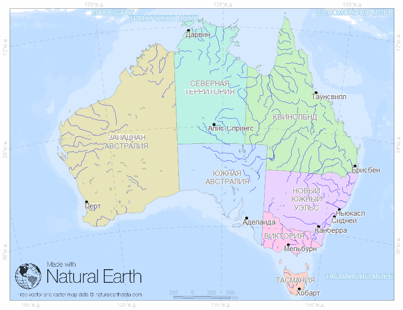
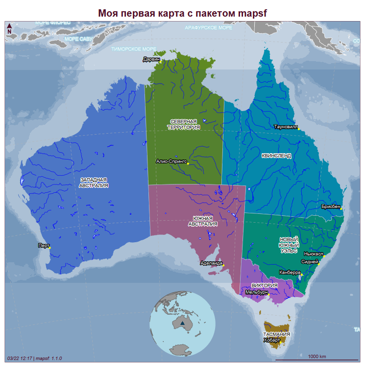
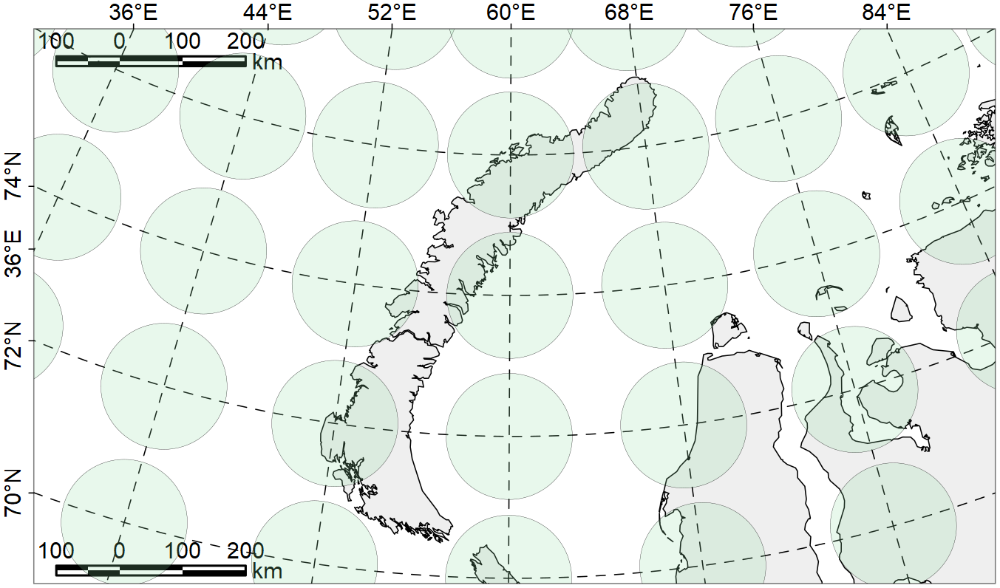
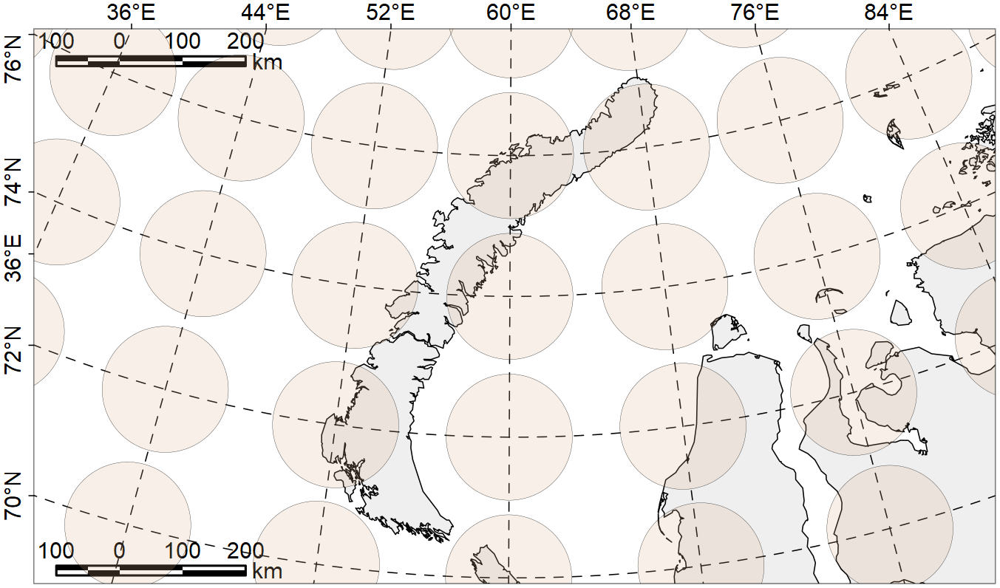
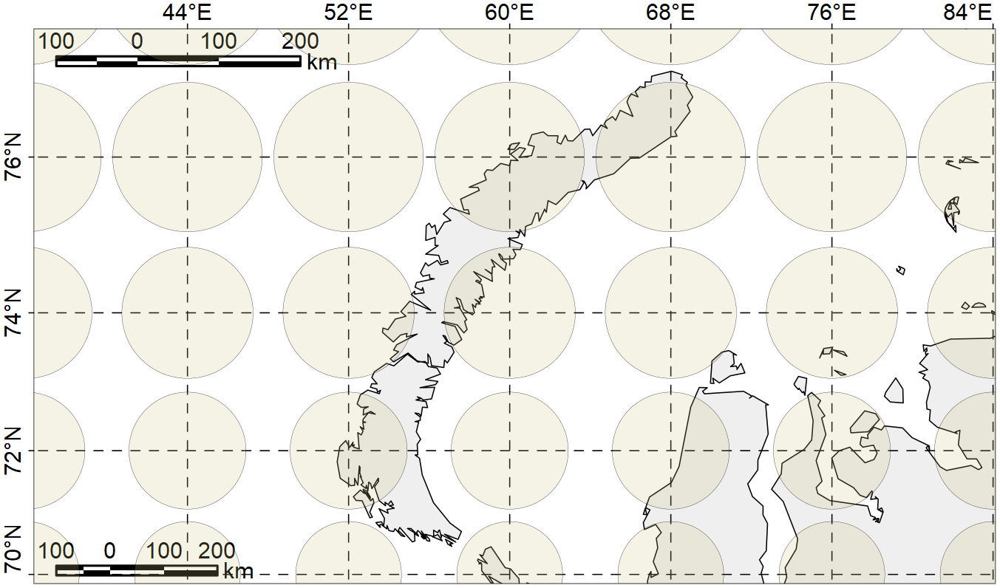
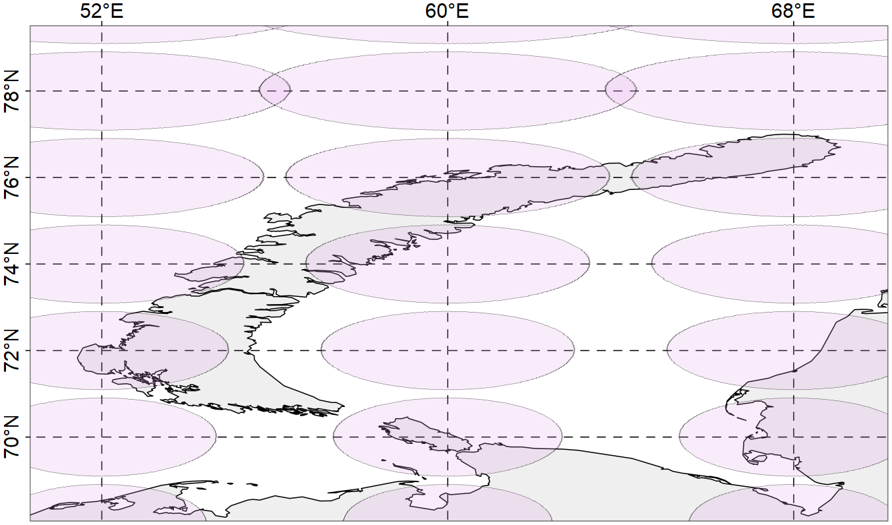
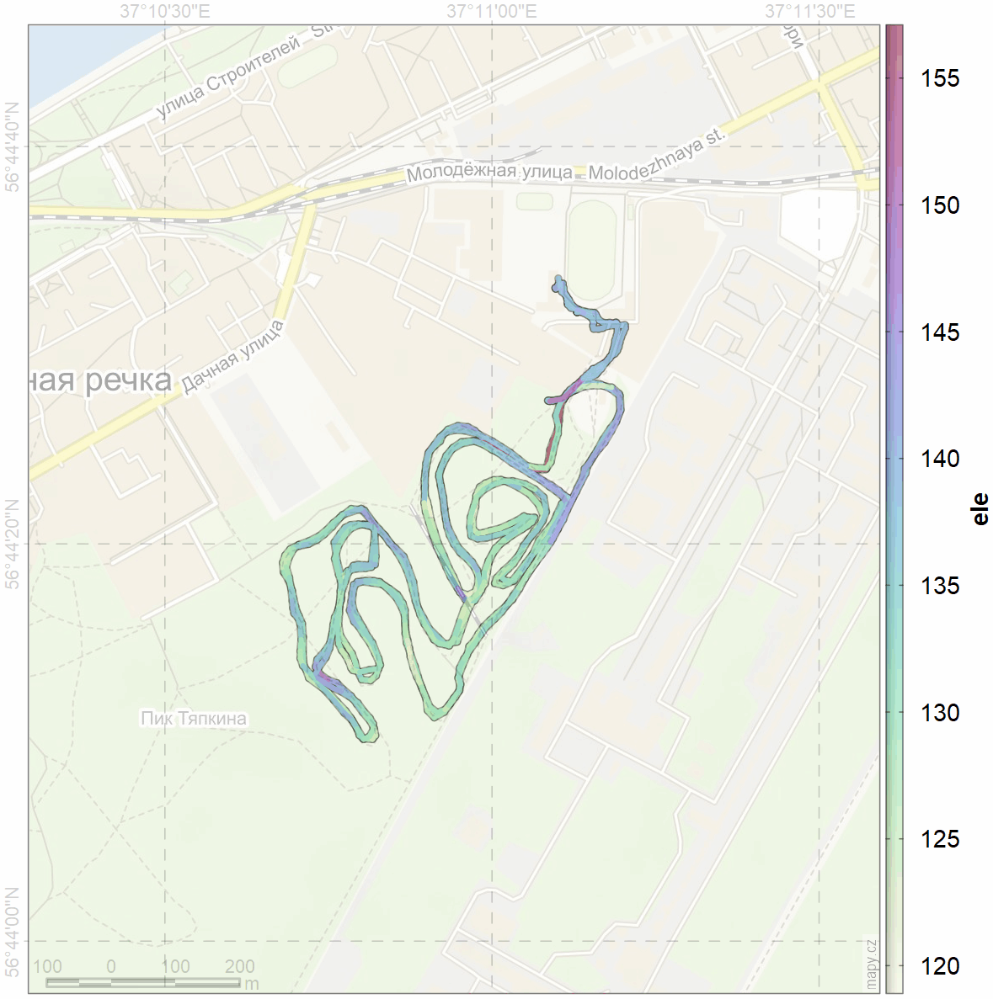
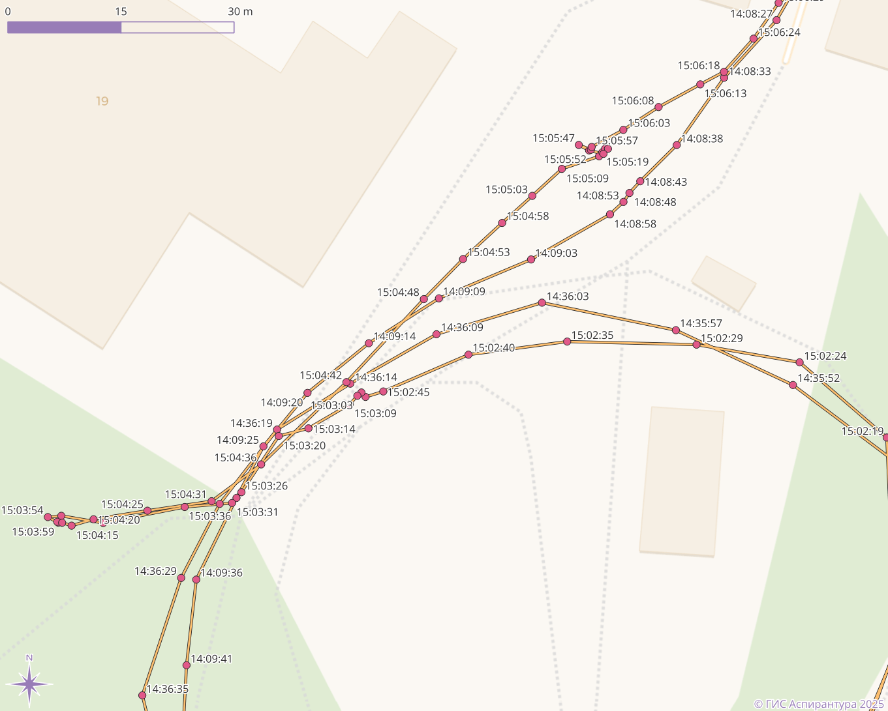
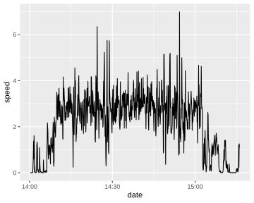
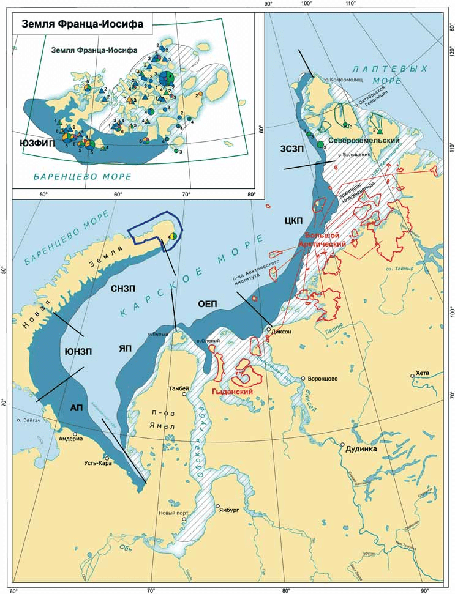

layout: true .toc.banner[ .shorttitle[ [ГИС аспирантура](#dates) [⌂](https://nplatonov.github.io/sevinGIS/) ] ] --- name: home class: metadata customtitle middle left giphy .toc.sidebar.left-column[ .outline[ ## [<svg aria-hidden="true" role="img" viewBox="0 0 576 512" style="height:1em;width:1.12em;vertical-align:-0.125em;margin-left:auto;margin-right:auto;font-size:inherit;fill:currentColor;overflow:visible;position:relative;"><path d="M96 32C60.7 32 32 60.7 32 96V384H96V96l384 0V384h64V96c0-35.3-28.7-64-64-64H96zM224 384v32H32c-17.7 0-32 14.3-32 32s14.3 32 32 32H544c17.7 0 32-14.3 32-32s-14.3-32-32-32H416V384c0-17.7-14.3-32-32-32H256c-17.7 0-32 14.3-32 32z"/></svg> Занятия ](#Ha9f33) ## [<svg aria-hidden="true" role="img" viewBox="0 0 640 512" style="height:1em;width:1.25em;vertical-align:-0.125em;margin-left:auto;margin-right:auto;font-size:inherit;fill:currentColor;overflow:visible;position:relative;"><path d="M96 128a128 128 0 1 1 256 0A128 128 0 1 1 96 128zM0 482.3C0 383.8 79.8 304 178.3 304h91.4C368.2 304 448 383.8 448 482.3c0 16.4-13.3 29.7-29.7 29.7H29.7C13.3 512 0 498.7 0 482.3zM625 177L497 305c-9.4 9.4-24.6 9.4-33.9 0l-64-64c-9.4-9.4-9.4-24.6 0-33.9s24.6-9.4 33.9 0l47 47L591 143c9.4-9.4 24.6-9.4 33.9 0s9.4 24.6 0 33.9z"/></svg> Отчётность](#attendance) ## [<svg aria-hidden="true" role="img" viewBox="0 0 576 512" style="height:1em;width:1.12em;vertical-align:-0.125em;margin-left:auto;margin-right:auto;font-size:inherit;fill:currentColor;overflow:visible;position:relative;"><path d="M575.8 255.5c0 18-15 32.1-32 32.1h-32l.7 160.2c.2 35.5-28.5 64.3-64 64.3H128.1c-35.3 0-64-28.7-64-64V287.6H32c-18 0-32-14-32-32.1c0-9 3-17 10-24L266.4 8c7-7 15-8 22-8s15 2 21 7L564.8 231.5c8 7 12 15 11 24zM352 224a64 64 0 1 0 -128 0 64 64 0 1 0 128 0zm-96 96c-44.2 0-80 35.8-80 80c0 8.8 7.2 16 16 16H384c8.8 0 16-7.2 16-16c0-44.2-35.8-80-80-80H256z"/></svg> Домашние задания](#homework) ## [<svg aria-hidden="true" role="img" viewBox="0 0 576 512" style="height:1em;width:1.12em;vertical-align:-0.125em;margin-left:auto;margin-right:auto;font-size:inherit;fill:currentColor;overflow:visible;position:relative;"><path d="M384 480h48c11.4 0 21.9-6 27.6-15.9l112-192c5.8-9.9 5.8-22.1 .1-32.1S555.5 224 544 224H144c-11.4 0-21.9 6-27.6 15.9L48 357.1V96c0-8.8 7.2-16 16-16H181.5c4.2 0 8.3 1.7 11.3 4.7l26.5 26.5c21 21 49.5 32.8 79.2 32.8H416c8.8 0 16 7.2 16 16v32h48V160c0-35.3-28.7-64-64-64H298.5c-17 0-33.3-6.7-45.3-18.7L226.7 50.7c-12-12-28.3-18.7-45.3-18.7H64C28.7 32 0 60.7 0 96V416c0 35.3 28.7 64 64 64H87.7 384z"/></svg> Данные для работы](#H69ddd) ## [<svg aria-hidden="true" role="img" viewBox="0 0 640 512" style="height:1em;width:1.25em;vertical-align:-0.125em;margin-left:auto;margin-right:auto;font-size:inherit;fill:currentColor;overflow:visible;position:relative;"><path d="M144 0a80 80 0 1 1 0 160A80 80 0 1 1 144 0zM512 0a80 80 0 1 1 0 160A80 80 0 1 1 512 0zM0 298.7C0 239.8 47.8 192 106.7 192h42.7c15.9 0 31 3.5 44.6 9.7c-1.3 7.2-1.9 14.7-1.9 22.3c0 38.2 16.8 72.5 43.3 96c-.2 0-.4 0-.7 0H21.3C9.6 320 0 310.4 0 298.7zM405.3 320c-.2 0-.4 0-.7 0c26.6-23.5 43.3-57.8 43.3-96c0-7.6-.7-15-1.9-22.3c13.6-6.3 28.7-9.7 44.6-9.7h42.7C592.2 192 640 239.8 640 298.7c0 11.8-9.6 21.3-21.3 21.3H405.3zM224 224a96 96 0 1 1 192 0 96 96 0 1 1 -192 0zM128 485.3C128 411.7 187.7 352 261.3 352H378.7C452.3 352 512 411.7 512 485.3c0 14.7-11.9 26.7-26.7 26.7H154.7c-14.7 0-26.7-11.9-26.7-26.7z"/></svg> Обучающиеся](#students) ] ] .toc.mainbar.right-column.scrollable[ .fixprecode[ .authors[ .author[Никита Платонов] .institute[с.н.с. ИПЭЭ РАН] ] .title[ ГИС технологии в биологических исследованиях ] .subtitle[ Календарь занятий и тематический план курса ] .what[ ] .where[ ] .when[ 21 мая 2026 г. ] .footer[ ] ] ] --- name: Ha9f33 .toc.sidebar.left-column[ .outline[ ## [<svg aria-hidden="true" role="img" viewBox="0 0 576 512" style="height:1em;width:1.12em;vertical-align:-0.125em;margin-left:auto;margin-right:auto;font-size:inherit;fill:currentColor;overflow:visible;position:relative;"><path d="M96 32C60.7 32 32 60.7 32 96V384H96V96l384 0V384h64V96c0-35.3-28.7-64-64-64H96zM224 384v32H32c-17.7 0-32 14.3-32 32s14.3 32 32 32H544c17.7 0 32-14.3 32-32s-14.3-32-32-32H416V384c0-17.7-14.3-32-32-32H256c-17.7 0-32 14.3-32 32z"/></svg> Занятия ](#Ha9f33).fg[].bg[] ### [<svg aria-hidden="true" role="img" viewBox="0 0 448 512" style="height:1em;width:0.88em;vertical-align:-0.125em;margin-left:auto;margin-right:auto;font-size:inherit;fill:currentColor;overflow:visible;position:relative;"><path d="M152 24c0-13.3-10.7-24-24-24s-24 10.7-24 24V64H64C28.7 64 0 92.7 0 128v16 48V448c0 35.3 28.7 64 64 64H384c35.3 0 64-28.7 64-64V192 144 128c0-35.3-28.7-64-64-64H344V24c0-13.3-10.7-24-24-24s-24 10.7-24 24V64H152V24zM48 192H400V448c0 8.8-7.2 16-16 16H64c-8.8 0-16-7.2-16-16V192z"/></svg> По датам](#dates) ### [<svg aria-hidden="true" role="img" viewBox="0 0 448 512" style="height:1em;width:0.88em;vertical-align:-0.125em;margin-left:auto;margin-right:auto;font-size:inherit;fill:currentColor;overflow:visible;position:relative;"><path d="M96 151.4V360.6c9.7 5.6 17.8 13.7 23.4 23.4H328.6c0-.1 .1-.2 .1-.3l-4.5-7.9-32-56 0 0c-1.4 .1-2.8 .1-4.2 .1c-35.3 0-64-28.7-64-64s28.7-64 64-64c1.4 0 2.8 0 4.2 .1l0 0 32-56 4.5-7.9-.1-.3H119.4c-5.6 9.7-13.7 17.8-23.4 23.4zM384.3 352c35.2 .2 63.7 28.7 63.7 64c0 35.3-28.7 64-64 64c-23.7 0-44.4-12.9-55.4-32H119.4c-11.1 19.1-31.7 32-55.4 32c-35.3 0-64-28.7-64-64c0-23.7 12.9-44.4 32-55.4V151.4C12.9 140.4 0 119.7 0 96C0 60.7 28.7 32 64 32c23.7 0 44.4 12.9 55.4 32H328.6c11.1-19.1 31.7-32 55.4-32c35.3 0 64 28.7 64 64c0 35.3-28.5 63.8-63.7 64l-4.5 7.9-32 56-2.3 4c4.2 8.5 6.5 18 6.5 28.1s-2.3 19.6-6.5 28.1l2.3 4 32 56 4.5 7.9z"/></svg> По темам](#theme) ## [<svg aria-hidden="true" role="img" viewBox="0 0 640 512" style="height:1em;width:1.25em;vertical-align:-0.125em;margin-left:auto;margin-right:auto;font-size:inherit;fill:currentColor;overflow:visible;position:relative;"><path d="M96 128a128 128 0 1 1 256 0A128 128 0 1 1 96 128zM0 482.3C0 383.8 79.8 304 178.3 304h91.4C368.2 304 448 383.8 448 482.3c0 16.4-13.3 29.7-29.7 29.7H29.7C13.3 512 0 498.7 0 482.3zM625 177L497 305c-9.4 9.4-24.6 9.4-33.9 0l-64-64c-9.4-9.4-9.4-24.6 0-33.9s24.6-9.4 33.9 0l47 47L591 143c9.4-9.4 24.6-9.4 33.9 0s9.4 24.6 0 33.9z"/></svg> Отчётность](#attendance) ## [<svg aria-hidden="true" role="img" viewBox="0 0 576 512" style="height:1em;width:1.12em;vertical-align:-0.125em;margin-left:auto;margin-right:auto;font-size:inherit;fill:currentColor;overflow:visible;position:relative;"><path d="M575.8 255.5c0 18-15 32.1-32 32.1h-32l.7 160.2c.2 35.5-28.5 64.3-64 64.3H128.1c-35.3 0-64-28.7-64-64V287.6H32c-18 0-32-14-32-32.1c0-9 3-17 10-24L266.4 8c7-7 15-8 22-8s15 2 21 7L564.8 231.5c8 7 12 15 11 24zM352 224a64 64 0 1 0 -128 0 64 64 0 1 0 128 0zm-96 96c-44.2 0-80 35.8-80 80c0 8.8 7.2 16 16 16H384c8.8 0 16-7.2 16-16c0-44.2-35.8-80-80-80H256z"/></svg> Домашние задания](#homework) ## [<svg aria-hidden="true" role="img" viewBox="0 0 576 512" style="height:1em;width:1.12em;vertical-align:-0.125em;margin-left:auto;margin-right:auto;font-size:inherit;fill:currentColor;overflow:visible;position:relative;"><path d="M384 480h48c11.4 0 21.9-6 27.6-15.9l112-192c5.8-9.9 5.8-22.1 .1-32.1S555.5 224 544 224H144c-11.4 0-21.9 6-27.6 15.9L48 357.1V96c0-8.8 7.2-16 16-16H181.5c4.2 0 8.3 1.7 11.3 4.7l26.5 26.5c21 21 49.5 32.8 79.2 32.8H416c8.8 0 16 7.2 16 16v32h48V160c0-35.3-28.7-64-64-64H298.5c-17 0-33.3-6.7-45.3-18.7L226.7 50.7c-12-12-28.3-18.7-45.3-18.7H64C28.7 32 0 60.7 0 96V416c0 35.3 28.7 64 64 64H87.7 384z"/></svg> Данные для работы](#H69ddd) ## [<svg aria-hidden="true" role="img" viewBox="0 0 640 512" style="height:1em;width:1.25em;vertical-align:-0.125em;margin-left:auto;margin-right:auto;font-size:inherit;fill:currentColor;overflow:visible;position:relative;"><path d="M144 0a80 80 0 1 1 0 160A80 80 0 1 1 144 0zM512 0a80 80 0 1 1 0 160A80 80 0 1 1 512 0zM0 298.7C0 239.8 47.8 192 106.7 192h42.7c15.9 0 31 3.5 44.6 9.7c-1.3 7.2-1.9 14.7-1.9 22.3c0 38.2 16.8 72.5 43.3 96c-.2 0-.4 0-.7 0H21.3C9.6 320 0 310.4 0 298.7zM405.3 320c-.2 0-.4 0-.7 0c26.6-23.5 43.3-57.8 43.3-96c0-7.6-.7-15-1.9-22.3c13.6-6.3 28.7-9.7 44.6-9.7h42.7C592.2 192 640 239.8 640 298.7c0 11.8-9.6 21.3-21.3 21.3H405.3zM224 224a96 96 0 1 1 192 0 96 96 0 1 1 -192 0zM128 485.3C128 411.7 187.7 352 261.3 352H378.7C452.3 352 512 411.7 512 485.3c0 14.7-11.9 26.7-26.7 26.7H154.7c-14.7 0-26.7-11.9-26.7-26.7z"/></svg> Обучающиеся](#students) ] ] .toc.mainbar.right-column.scrollable[ .header.h2.broad[ <span class="generation"><svg aria-hidden="true" role="img" viewBox="0 0 576 512" style="height:1em;width:1.12em;vertical-align:-0.125em;margin-left:auto;margin-right:auto;font-size:inherit;fill:currentColor;overflow:visible;position:relative;"><path d="M96 32C60.7 32 32 60.7 32 96V384H96V96l384 0V384h64V96c0-35.3-28.7-64-64-64H96zM224 384v32H32c-17.7 0-32 14.3-32 32s14.3 32 32 32H544c17.7 0 32-14.3 32-32s-14.3-32-32-32H416V384c0-17.7-14.3-32-32-32H256c-17.7 0-32 14.3-32 32z"/></svg> Занятия</span> ] .fixprecode[ .note[ + Очень вероятно, что 27 марта и далеее в апреле занятий не будет из-за полевого сезона преподавателя. + Если так, то перенос занятия 27 марта или на четверг 26 марта, или даже ранее. Или отмена. + Удобно ли заниматься вместо 13 и 20 марта накануне, по четвергам, 12 и 19 марта? + 01 мая выпадает на пятницу. Вопрос о переносе на 30 апреля. ] .pulling[ .remarkonly.zzzpull-left-40[ .note[ + В четверг во второй половине дня перекличка с участием каждого, кто придет в класс в пятницу, а кто не придёт. Если никого не будет в классе, то аудитория с проектом не нужна. ] .note[ + Занятия в пятницу в первой половине дня. Домашние задания требуют проверки и, нередко, уточнений. На это нужно время. Поэтому старайтесь их сдавать в четверг, не позднее 15ч по Москве. ] .note[ + Кто не присутствовал ни в классе, ни в [Zoom](https://us02web.zoom.us/j/89277450857?pwd=MP1D5pTaaoGKSNWwaO1xo4AWpbb41T.1), сообщайте преподавателю, какое занятие просмотрели в записи. ] .note[ + Актуализирование информации в [Телеграмме](https://t.me/+W4qyBXM109ViYWI6). ] ] .remarkonly.zzzpull-right-60[ ] ] ] ] --- name: dates .toc.sidebar.left-column[ .outline[ ## [<svg aria-hidden="true" role="img" viewBox="0 0 576 512" style="height:1em;width:1.12em;vertical-align:-0.125em;margin-left:auto;margin-right:auto;font-size:inherit;fill:currentColor;overflow:visible;position:relative;"><path d="M96 32C60.7 32 32 60.7 32 96V384H96V96l384 0V384h64V96c0-35.3-28.7-64-64-64H96zM224 384v32H32c-17.7 0-32 14.3-32 32s14.3 32 32 32H544c17.7 0 32-14.3 32-32s-14.3-32-32-32H416V384c0-17.7-14.3-32-32-32H256c-17.7 0-32 14.3-32 32z"/></svg> Занятия ](#Ha9f33).fg[] ### [<svg aria-hidden="true" role="img" viewBox="0 0 448 512" style="height:1em;width:0.88em;vertical-align:-0.125em;margin-left:auto;margin-right:auto;font-size:inherit;fill:currentColor;overflow:visible;position:relative;"><path d="M152 24c0-13.3-10.7-24-24-24s-24 10.7-24 24V64H64C28.7 64 0 92.7 0 128v16 48V448c0 35.3 28.7 64 64 64H384c35.3 0 64-28.7 64-64V192 144 128c0-35.3-28.7-64-64-64H344V24c0-13.3-10.7-24-24-24s-24 10.7-24 24V64H152V24zM48 192H400V448c0 8.8-7.2 16-16 16H64c-8.8 0-16-7.2-16-16V192z"/></svg> По датам](#dates).fg[].bg[] ### [<svg aria-hidden="true" role="img" viewBox="0 0 448 512" style="height:1em;width:0.88em;vertical-align:-0.125em;margin-left:auto;margin-right:auto;font-size:inherit;fill:currentColor;overflow:visible;position:relative;"><path d="M96 151.4V360.6c9.7 5.6 17.8 13.7 23.4 23.4H328.6c0-.1 .1-.2 .1-.3l-4.5-7.9-32-56 0 0c-1.4 .1-2.8 .1-4.2 .1c-35.3 0-64-28.7-64-64s28.7-64 64-64c1.4 0 2.8 0 4.2 .1l0 0 32-56 4.5-7.9-.1-.3H119.4c-5.6 9.7-13.7 17.8-23.4 23.4zM384.3 352c35.2 .2 63.7 28.7 63.7 64c0 35.3-28.7 64-64 64c-23.7 0-44.4-12.9-55.4-32H119.4c-11.1 19.1-31.7 32-55.4 32c-35.3 0-64-28.7-64-64c0-23.7 12.9-44.4 32-55.4V151.4C12.9 140.4 0 119.7 0 96C0 60.7 28.7 32 64 32c23.7 0 44.4 12.9 55.4 32H328.6c11.1-19.1 31.7-32 55.4-32c35.3 0 64 28.7 64 64c0 35.3-28.5 63.8-63.7 64l-4.5 7.9-32 56-2.3 4c4.2 8.5 6.5 18 6.5 28.1s-2.3 19.6-6.5 28.1l2.3 4 32 56 4.5 7.9z"/></svg> По темам](#theme).bg[] ## [<svg aria-hidden="true" role="img" viewBox="0 0 640 512" style="height:1em;width:1.25em;vertical-align:-0.125em;margin-left:auto;margin-right:auto;font-size:inherit;fill:currentColor;overflow:visible;position:relative;"><path d="M96 128a128 128 0 1 1 256 0A128 128 0 1 1 96 128zM0 482.3C0 383.8 79.8 304 178.3 304h91.4C368.2 304 448 383.8 448 482.3c0 16.4-13.3 29.7-29.7 29.7H29.7C13.3 512 0 498.7 0 482.3zM625 177L497 305c-9.4 9.4-24.6 9.4-33.9 0l-64-64c-9.4-9.4-9.4-24.6 0-33.9s24.6-9.4 33.9 0l47 47L591 143c9.4-9.4 24.6-9.4 33.9 0s9.4 24.6 0 33.9z"/></svg> Отчётность](#attendance) ## [<svg aria-hidden="true" role="img" viewBox="0 0 576 512" style="height:1em;width:1.12em;vertical-align:-0.125em;margin-left:auto;margin-right:auto;font-size:inherit;fill:currentColor;overflow:visible;position:relative;"><path d="M575.8 255.5c0 18-15 32.1-32 32.1h-32l.7 160.2c.2 35.5-28.5 64.3-64 64.3H128.1c-35.3 0-64-28.7-64-64V287.6H32c-18 0-32-14-32-32.1c0-9 3-17 10-24L266.4 8c7-7 15-8 22-8s15 2 21 7L564.8 231.5c8 7 12 15 11 24zM352 224a64 64 0 1 0 -128 0 64 64 0 1 0 128 0zm-96 96c-44.2 0-80 35.8-80 80c0 8.8 7.2 16 16 16H384c8.8 0 16-7.2 16-16c0-44.2-35.8-80-80-80H256z"/></svg> Домашние задания](#homework) ## [<svg aria-hidden="true" role="img" viewBox="0 0 576 512" style="height:1em;width:1.12em;vertical-align:-0.125em;margin-left:auto;margin-right:auto;font-size:inherit;fill:currentColor;overflow:visible;position:relative;"><path d="M384 480h48c11.4 0 21.9-6 27.6-15.9l112-192c5.8-9.9 5.8-22.1 .1-32.1S555.5 224 544 224H144c-11.4 0-21.9 6-27.6 15.9L48 357.1V96c0-8.8 7.2-16 16-16H181.5c4.2 0 8.3 1.7 11.3 4.7l26.5 26.5c21 21 49.5 32.8 79.2 32.8H416c8.8 0 16 7.2 16 16v32h48V160c0-35.3-28.7-64-64-64H298.5c-17 0-33.3-6.7-45.3-18.7L226.7 50.7c-12-12-28.3-18.7-45.3-18.7H64C28.7 32 0 60.7 0 96V416c0 35.3 28.7 64 64 64H87.7 384z"/></svg> Данные для работы](#H69ddd) ## [<svg aria-hidden="true" role="img" viewBox="0 0 640 512" style="height:1em;width:1.25em;vertical-align:-0.125em;margin-left:auto;margin-right:auto;font-size:inherit;fill:currentColor;overflow:visible;position:relative;"><path d="M144 0a80 80 0 1 1 0 160A80 80 0 1 1 144 0zM512 0a80 80 0 1 1 0 160A80 80 0 1 1 512 0zM0 298.7C0 239.8 47.8 192 106.7 192h42.7c15.9 0 31 3.5 44.6 9.7c-1.3 7.2-1.9 14.7-1.9 22.3c0 38.2 16.8 72.5 43.3 96c-.2 0-.4 0-.7 0H21.3C9.6 320 0 310.4 0 298.7zM405.3 320c-.2 0-.4 0-.7 0c26.6-23.5 43.3-57.8 43.3-96c0-7.6-.7-15-1.9-22.3c13.6-6.3 28.7-9.7 44.6-9.7h42.7C592.2 192 640 239.8 640 298.7c0 11.8-9.6 21.3-21.3 21.3H405.3zM224 224a96 96 0 1 1 192 0 96 96 0 1 1 -192 0zM128 485.3C128 411.7 187.7 352 261.3 352H378.7C452.3 352 512 411.7 512 485.3c0 14.7-11.9 26.7-26.7 26.7H154.7c-14.7 0-26.7-11.9-26.7-26.7z"/></svg> Обучающиеся](#students) ] ] .toc.mainbar.right-column.scrollable[ .header.h3.broad[ <span class="generation"><svg aria-hidden="true" role="img" viewBox="0 0 448 512" style="height:1em;width:0.88em;vertical-align:-0.125em;margin-left:auto;margin-right:auto;font-size:inherit;fill:currentColor;overflow:visible;position:relative;"><path d="M152 24c0-13.3-10.7-24-24-24s-24 10.7-24 24V64H64C28.7 64 0 92.7 0 128v16 48V448c0 35.3 28.7 64 64 64H384c35.3 0 64-28.7 64-64V192 144 128c0-35.3-28.7-64-64-64H344V24c0-13.3-10.7-24-24-24s-24 10.7-24 24V64H152V24zM48 192H400V448c0 8.8-7.2 16-16 16H64c-8.8 0-16-7.2-16-16V192z"/></svg> По датам</span> .parent[.grand[Занятия]] ] .fixprecode[ .double[ .font80[ <span class="largest">13 февраля</span> [<svg aria-hidden="true" role="img" viewBox="0 0 384 512" style="height:1em;width:0.75em;vertical-align:-0.125em;margin-left:auto;margin-right:auto;font-size:inherit;fill:currentColor;overflow:visible;position:relative;"><path d="M320 464c8.8 0 16-7.2 16-16V160H256c-17.7 0-32-14.3-32-32V48H64c-8.8 0-16 7.2-16 16V448c0 8.8 7.2 16 16 16H320zM0 64C0 28.7 28.7 0 64 0H229.5c17 0 33.3 6.7 45.3 18.7l90.5 90.5c12 12 18.7 28.3 18.7 45.3V448c0 35.3-28.7 64-64 64H64c-35.3 0-64-28.7-64-64V64zM80 288c0-17.7 14.3-32 32-32h96c17.7 0 32 14.3 32 32v16l44.9-29.9c2-1.3 4.4-2.1 6.8-2.1c6.8 0 12.3 5.5 12.3 12.3V387.7c0 6.8-5.5 12.3-12.3 12.3c-2.4 0-4.8-.7-6.8-2.1L240 368v16c0 17.7-14.3 32-32 32H112c-17.7 0-32-14.3-32-32V288z"/></svg>]( https://us02web.zoom.us/rec/share/AnLr-XtO4PPk82eisBJHgLMvXiFSZAHOs8zILTBRk8-Ia4Aj8z51mTeFCu-6yUhY.zLle0EhM4k0KRyOs)<span style="opacity: 0;"> r2@V@pQ2</span> | | | |:--|:-----------------------| |01 |[Общие вопросы, введение](lesson01~b57.html)| |02 |[Начало работы с QGIS](lesson02~b57.html)| <span class="largest">20 февраля</span> [<svg aria-hidden="true" role="img" viewBox="0 0 384 512" style="height:1em;width:0.75em;vertical-align:-0.125em;margin-left:auto;margin-right:auto;font-size:inherit;fill:currentColor;overflow:visible;position:relative;"><path d="M320 464c8.8 0 16-7.2 16-16V160H256c-17.7 0-32-14.3-32-32V48H64c-8.8 0-16 7.2-16 16V448c0 8.8 7.2 16 16 16H320zM0 64C0 28.7 28.7 0 64 0H229.5c17 0 33.3 6.7 45.3 18.7l90.5 90.5c12 12 18.7 28.3 18.7 45.3V448c0 35.3-28.7 64-64 64H64c-35.3 0-64-28.7-64-64V64zM80 288c0-17.7 14.3-32 32-32h96c17.7 0 32 14.3 32 32v16l44.9-29.9c2-1.3 4.4-2.1 6.8-2.1c6.8 0 12.3 5.5 12.3 12.3V387.7c0 6.8-5.5 12.3-12.3 12.3c-2.4 0-4.8-.7-6.8-2.1L240 368v16c0 17.7-14.3 32-32 32H112c-17.7 0-32-14.3-32-32V288z"/></svg>]( https://us02web.zoom.us/rec/share/0xs0d3MeDVXI0_ZZPbu05ZwZeQCeWr40SwkI7vRLAmmyvGTHOZOrxjtpM9beGAQU.3e9zTSdi6XTMFkaw)<span style="opacity: 0;"> p2fYb=cV</span> | | | |:--|:----------------------------------------------| |02 |[Начало работы с QGIS](lesson02~b57.html) | |03 |[Основы работы с пространственными данными](lesson03~b57.html)| |04 |[Пространственные данные: получение и обработка](lesson04~b57.html)| <span class="largest">26 февраля</span> [<svg aria-hidden="true" role="img" viewBox="0 0 384 512" style="height:1em;width:0.75em;vertical-align:-0.125em;margin-left:auto;margin-right:auto;font-size:inherit;fill:currentColor;overflow:visible;position:relative;"><path d="M320 464c8.8 0 16-7.2 16-16V160H256c-17.7 0-32-14.3-32-32V48H64c-8.8 0-16 7.2-16 16V448c0 8.8 7.2 16 16 16H320zM0 64C0 28.7 28.7 0 64 0H229.5c17 0 33.3 6.7 45.3 18.7l90.5 90.5c12 12 18.7 28.3 18.7 45.3V448c0 35.3-28.7 64-64 64H64c-35.3 0-64-28.7-64-64V64zM80 288c0-17.7 14.3-32 32-32h96c17.7 0 32 14.3 32 32v16l44.9-29.9c2-1.3 4.4-2.1 6.8-2.1c6.8 0 12.3 5.5 12.3 12.3V387.7c0 6.8-5.5 12.3-12.3 12.3c-2.4 0-4.8-.7-6.8-2.1L240 368v16c0 17.7-14.3 32-32 32H112c-17.7 0-32-14.3-32-32V288z"/></svg>]( https://us02web.zoom.us/rec/share/n6bxRs8hoFTCzNSNGyX8QN8rLiv-OvkBbKyxLZecRKbcPvhuLiqjZI5tYqX-pGAT.JslxtTs0-joJQpme)<span style="opacity: 0;"> 6teTm#V8</span> | | | |:--|:----------------------------------------------| |04 |[Пространственные данные: получение и обработка](lesson04~b57.html)| <span class="largest">06 марта</span> [<svg aria-hidden="true" role="img" viewBox="0 0 384 512" style="height:1em;width:0.75em;vertical-align:-0.125em;margin-left:auto;margin-right:auto;font-size:inherit;fill:currentColor;overflow:visible;position:relative;"><path d="M320 464c8.8 0 16-7.2 16-16V160H256c-17.7 0-32-14.3-32-32V48H64c-8.8 0-16 7.2-16 16V448c0 8.8 7.2 16 16 16H320zM0 64C0 28.7 28.7 0 64 0H229.5c17 0 33.3 6.7 45.3 18.7l90.5 90.5c12 12 18.7 28.3 18.7 45.3V448c0 35.3-28.7 64-64 64H64c-35.3 0-64-28.7-64-64V64zM80 288c0-17.7 14.3-32 32-32h96c17.7 0 32 14.3 32 32v16l44.9-29.9c2-1.3 4.4-2.1 6.8-2.1c6.8 0 12.3 5.5 12.3 12.3V387.7c0 6.8-5.5 12.3-12.3 12.3c-2.4 0-4.8-.7-6.8-2.1L240 368v16c0 17.7-14.3 32-32 32H112c-17.7 0-32-14.3-32-32V288z"/></svg>]( https://us02web.zoom.us/rec/share/Znmo3WYDxm89fS_wXCGCimLdzd1fgVdSDyJg1FoYn6pE4cVJFC0AMA99tI9QGCxv.RtfamzZ1sANibepV)<span style="opacity: 0;"> 4QcJ#?ls</span> | | | |:--|:----------------------------------------------------| |05 |[Возможности R для работы с пространственными данными](lesson05~b57.html)| <span class="largest">12 марта</span> [<svg aria-hidden="true" role="img" viewBox="0 0 384 512" style="height:1em;width:0.75em;vertical-align:-0.125em;margin-left:auto;margin-right:auto;font-size:inherit;fill:currentColor;overflow:visible;position:relative;"><path d="M320 464c8.8 0 16-7.2 16-16V160H256c-17.7 0-32-14.3-32-32V48H64c-8.8 0-16 7.2-16 16V448c0 8.8 7.2 16 16 16H320zM0 64C0 28.7 28.7 0 64 0H229.5c17 0 33.3 6.7 45.3 18.7l90.5 90.5c12 12 18.7 28.3 18.7 45.3V448c0 35.3-28.7 64-64 64H64c-35.3 0-64-28.7-64-64V64zM80 288c0-17.7 14.3-32 32-32h96c17.7 0 32 14.3 32 32v16l44.9-29.9c2-1.3 4.4-2.1 6.8-2.1c6.8 0 12.3 5.5 12.3 12.3V387.7c0 6.8-5.5 12.3-12.3 12.3c-2.4 0-4.8-.7-6.8-2.1L240 368v16c0 17.7-14.3 32-32 32H112c-17.7 0-32-14.3-32-32V288z"/></svg>]( https://us02web.zoom.us/rec/share/UndIhU-cNqEwzrJtWiivDD8DHWqWLnKVFJigzw6U3Y-6Fp29iruGEejxtBicygPt.9U39v_AerSTwOCK8)<span style="opacity: 0;"> 67!nJb!2</span> | | | |:--|:--------------------------------------------| |06 |[Пространственные данные: примеры и обработка](lesson06~b57.html)| <span class="largest">19 марта</span> [<svg aria-hidden="true" role="img" viewBox="0 0 384 512" style="height:1em;width:0.75em;vertical-align:-0.125em;margin-left:auto;margin-right:auto;font-size:inherit;fill:currentColor;overflow:visible;position:relative;"><path d="M320 464c8.8 0 16-7.2 16-16V160H256c-17.7 0-32-14.3-32-32V48H64c-8.8 0-16 7.2-16 16V448c0 8.8 7.2 16 16 16H320zM0 64C0 28.7 28.7 0 64 0H229.5c17 0 33.3 6.7 45.3 18.7l90.5 90.5c12 12 18.7 28.3 18.7 45.3V448c0 35.3-28.7 64-64 64H64c-35.3 0-64-28.7-64-64V64zM80 288c0-17.7 14.3-32 32-32h96c17.7 0 32 14.3 32 32v16l44.9-29.9c2-1.3 4.4-2.1 6.8-2.1c6.8 0 12.3 5.5 12.3 12.3V387.7c0 6.8-5.5 12.3-12.3 12.3c-2.4 0-4.8-.7-6.8-2.1L240 368v16c0 17.7-14.3 32-32 32H112c-17.7 0-32-14.3-32-32V288z"/></svg>]( https://us02web.zoom.us/rec/share/N0Zi7gEyJhkyDCDgMr88R3wLwcorx6Vlr9KZQc3UlgTESlbQEOfYBGIPiGTIrbc.CnKQQAE3KBOumEg1)<span style="opacity: 0;"> #v0xY#zr</span> | | | |:--|:--------------------------------------------| |06 |[Пространственные данные: примеры и обработка](lesson06~b57.html)| |08 |[Операции с геометрией](lesson08~b57.html) | <span class="largest">26 марта</span> [<svg aria-hidden="true" role="img" viewBox="0 0 384 512" style="height:1em;width:0.75em;vertical-align:-0.125em;margin-left:auto;margin-right:auto;font-size:inherit;fill:currentColor;overflow:visible;position:relative;"><path d="M320 464c8.8 0 16-7.2 16-16V160H256c-17.7 0-32-14.3-32-32V48H64c-8.8 0-16 7.2-16 16V448c0 8.8 7.2 16 16 16H320zM0 64C0 28.7 28.7 0 64 0H229.5c17 0 33.3 6.7 45.3 18.7l90.5 90.5c12 12 18.7 28.3 18.7 45.3V448c0 35.3-28.7 64-64 64H64c-35.3 0-64-28.7-64-64V64zM80 288c0-17.7 14.3-32 32-32h96c17.7 0 32 14.3 32 32v16l44.9-29.9c2-1.3 4.4-2.1 6.8-2.1c6.8 0 12.3 5.5 12.3 12.3V387.7c0 6.8-5.5 12.3-12.3 12.3c-2.4 0-4.8-.7-6.8-2.1L240 368v16c0 17.7-14.3 32-32 32H112c-17.7 0-32-14.3-32-32V288z"/></svg>]( https://us02web.zoom.us/rec/share/jq5PuUdWVxi9aJfoITSGDp3hHm2g4cpM_4W079gmTTdFso8Pis_eGRHZYkH1pMRq.LxmPVgzeGm372stB)<span style="opacity: 0;"> +zN6rX?D</span> | | | |:--|:---------------------| |08 |[Операции с геометрией](lesson08~b57.html)| |09 |[Решение задач в QGIS](lesson09~b57.html)| <span class="largest">30 апреля</span> [<svg aria-hidden="true" role="img" viewBox="0 0 384 512" style="height:1em;width:0.75em;vertical-align:-0.125em;margin-left:auto;margin-right:auto;font-size:inherit;fill:currentColor;overflow:visible;position:relative;"><path d="M320 464c8.8 0 16-7.2 16-16V160H256c-17.7 0-32-14.3-32-32V48H64c-8.8 0-16 7.2-16 16V448c0 8.8 7.2 16 16 16H320zM0 64C0 28.7 28.7 0 64 0H229.5c17 0 33.3 6.7 45.3 18.7l90.5 90.5c12 12 18.7 28.3 18.7 45.3V448c0 35.3-28.7 64-64 64H64c-35.3 0-64-28.7-64-64V64zM80 288c0-17.7 14.3-32 32-32h96c17.7 0 32 14.3 32 32v16l44.9-29.9c2-1.3 4.4-2.1 6.8-2.1c6.8 0 12.3 5.5 12.3 12.3V387.7c0 6.8-5.5 12.3-12.3 12.3c-2.4 0-4.8-.7-6.8-2.1L240 368v16c0 17.7-14.3 32-32 32H112c-17.7 0-32-14.3-32-32V288z"/></svg>]( https://us02web.zoom.us/rec/share/hg5qVxDcdR7HbHcTFdF7vH7Y6nnj3iOV0cuP5bzwr2y8jqHDROdVKZDXhlE-hq_E.iEHM0H89obIpzf7W)<span style="opacity: 0;"> oS^q#94L</span> | | | |:--|:--------------------| |09 |[Решение задач в QGIS](lesson09~b57.html)| <span class="largest">07 мая</span> [<svg aria-hidden="true" role="img" viewBox="0 0 384 512" style="height:1em;width:0.75em;vertical-align:-0.125em;margin-left:auto;margin-right:auto;font-size:inherit;fill:currentColor;overflow:visible;position:relative;"><path d="M320 464c8.8 0 16-7.2 16-16V160H256c-17.7 0-32-14.3-32-32V48H64c-8.8 0-16 7.2-16 16V448c0 8.8 7.2 16 16 16H320zM0 64C0 28.7 28.7 0 64 0H229.5c17 0 33.3 6.7 45.3 18.7l90.5 90.5c12 12 18.7 28.3 18.7 45.3V448c0 35.3-28.7 64-64 64H64c-35.3 0-64-28.7-64-64V64zM80 288c0-17.7 14.3-32 32-32h96c17.7 0 32 14.3 32 32v16l44.9-29.9c2-1.3 4.4-2.1 6.8-2.1c6.8 0 12.3 5.5 12.3 12.3V387.7c0 6.8-5.5 12.3-12.3 12.3c-2.4 0-4.8-.7-6.8-2.1L240 368v16c0 17.7-14.3 32-32 32H112c-17.7 0-32-14.3-32-32V288z"/></svg>]( https://us02web.zoom.us/rec/share/xUh_xlQfWMB4_2DpbAl8AdK0Xp0MFWE4dZEIlR3_K3Ge_hW6A5xIWAQBL4uNmrEW.NglflBqodn14EwWk)<span style="opacity: 0;"> z*0hiJ+1</span> | | | |:--|:---------------------------------------| |09 |[Решение задач в QGIS](lesson09~b57.html)| |12 |[Обработка данных с геопозиционированием](lesson12~b57.html)| <span class="largest">14 мая</span> | | | |:--|:---------------------------------------| |12 |[Обработка данных с геопозиционированием](lesson12~b57.html)| <span class="largest">21 мая</span> | | | |:--|:-----------------------| |10 |[Моделирование ареалов](lesson10~b57.html) [↩️](lesson10~b57.html#1)| |13 |[«Подтягивание хвостов»](lesson13~b57.html)| |07 |[Вопросы и ответы](lesson07~b57.html)| ] ] ] ] --- name: theme .toc.sidebar.left-column[ .outline[ ## [<svg aria-hidden="true" role="img" viewBox="0 0 576 512" style="height:1em;width:1.12em;vertical-align:-0.125em;margin-left:auto;margin-right:auto;font-size:inherit;fill:currentColor;overflow:visible;position:relative;"><path d="M96 32C60.7 32 32 60.7 32 96V384H96V96l384 0V384h64V96c0-35.3-28.7-64-64-64H96zM224 384v32H32c-17.7 0-32 14.3-32 32s14.3 32 32 32H544c17.7 0 32-14.3 32-32s-14.3-32-32-32H416V384c0-17.7-14.3-32-32-32H256c-17.7 0-32 14.3-32 32z"/></svg> Занятия ](#Ha9f33).fg[] ### [<svg aria-hidden="true" role="img" viewBox="0 0 448 512" style="height:1em;width:0.88em;vertical-align:-0.125em;margin-left:auto;margin-right:auto;font-size:inherit;fill:currentColor;overflow:visible;position:relative;"><path d="M152 24c0-13.3-10.7-24-24-24s-24 10.7-24 24V64H64C28.7 64 0 92.7 0 128v16 48V448c0 35.3 28.7 64 64 64H384c35.3 0 64-28.7 64-64V192 144 128c0-35.3-28.7-64-64-64H344V24c0-13.3-10.7-24-24-24s-24 10.7-24 24V64H152V24zM48 192H400V448c0 8.8-7.2 16-16 16H64c-8.8 0-16-7.2-16-16V192z"/></svg> По датам](#dates).bg[] ### [<svg aria-hidden="true" role="img" viewBox="0 0 448 512" style="height:1em;width:0.88em;vertical-align:-0.125em;margin-left:auto;margin-right:auto;font-size:inherit;fill:currentColor;overflow:visible;position:relative;"><path d="M96 151.4V360.6c9.7 5.6 17.8 13.7 23.4 23.4H328.6c0-.1 .1-.2 .1-.3l-4.5-7.9-32-56 0 0c-1.4 .1-2.8 .1-4.2 .1c-35.3 0-64-28.7-64-64s28.7-64 64-64c1.4 0 2.8 0 4.2 .1l0 0 32-56 4.5-7.9-.1-.3H119.4c-5.6 9.7-13.7 17.8-23.4 23.4zM384.3 352c35.2 .2 63.7 28.7 63.7 64c0 35.3-28.7 64-64 64c-23.7 0-44.4-12.9-55.4-32H119.4c-11.1 19.1-31.7 32-55.4 32c-35.3 0-64-28.7-64-64c0-23.7 12.9-44.4 32-55.4V151.4C12.9 140.4 0 119.7 0 96C0 60.7 28.7 32 64 32c23.7 0 44.4 12.9 55.4 32H328.6c11.1-19.1 31.7-32 55.4-32c35.3 0 64 28.7 64 64c0 35.3-28.5 63.8-63.7 64l-4.5 7.9-32 56-2.3 4c4.2 8.5 6.5 18 6.5 28.1s-2.3 19.6-6.5 28.1l2.3 4 32 56 4.5 7.9z"/></svg> По темам](#theme).fg[].bg[] ## [<svg aria-hidden="true" role="img" viewBox="0 0 640 512" style="height:1em;width:1.25em;vertical-align:-0.125em;margin-left:auto;margin-right:auto;font-size:inherit;fill:currentColor;overflow:visible;position:relative;"><path d="M96 128a128 128 0 1 1 256 0A128 128 0 1 1 96 128zM0 482.3C0 383.8 79.8 304 178.3 304h91.4C368.2 304 448 383.8 448 482.3c0 16.4-13.3 29.7-29.7 29.7H29.7C13.3 512 0 498.7 0 482.3zM625 177L497 305c-9.4 9.4-24.6 9.4-33.9 0l-64-64c-9.4-9.4-9.4-24.6 0-33.9s24.6-9.4 33.9 0l47 47L591 143c9.4-9.4 24.6-9.4 33.9 0s9.4 24.6 0 33.9z"/></svg> Отчётность](#attendance) ## [<svg aria-hidden="true" role="img" viewBox="0 0 576 512" style="height:1em;width:1.12em;vertical-align:-0.125em;margin-left:auto;margin-right:auto;font-size:inherit;fill:currentColor;overflow:visible;position:relative;"><path d="M575.8 255.5c0 18-15 32.1-32 32.1h-32l.7 160.2c.2 35.5-28.5 64.3-64 64.3H128.1c-35.3 0-64-28.7-64-64V287.6H32c-18 0-32-14-32-32.1c0-9 3-17 10-24L266.4 8c7-7 15-8 22-8s15 2 21 7L564.8 231.5c8 7 12 15 11 24zM352 224a64 64 0 1 0 -128 0 64 64 0 1 0 128 0zm-96 96c-44.2 0-80 35.8-80 80c0 8.8 7.2 16 16 16H384c8.8 0 16-7.2 16-16c0-44.2-35.8-80-80-80H256z"/></svg> Домашние задания](#homework) ## [<svg aria-hidden="true" role="img" viewBox="0 0 576 512" style="height:1em;width:1.12em;vertical-align:-0.125em;margin-left:auto;margin-right:auto;font-size:inherit;fill:currentColor;overflow:visible;position:relative;"><path d="M384 480h48c11.4 0 21.9-6 27.6-15.9l112-192c5.8-9.9 5.8-22.1 .1-32.1S555.5 224 544 224H144c-11.4 0-21.9 6-27.6 15.9L48 357.1V96c0-8.8 7.2-16 16-16H181.5c4.2 0 8.3 1.7 11.3 4.7l26.5 26.5c21 21 49.5 32.8 79.2 32.8H416c8.8 0 16 7.2 16 16v32h48V160c0-35.3-28.7-64-64-64H298.5c-17 0-33.3-6.7-45.3-18.7L226.7 50.7c-12-12-28.3-18.7-45.3-18.7H64C28.7 32 0 60.7 0 96V416c0 35.3 28.7 64 64 64H87.7 384z"/></svg> Данные для работы](#H69ddd) ## [<svg aria-hidden="true" role="img" viewBox="0 0 640 512" style="height:1em;width:1.25em;vertical-align:-0.125em;margin-left:auto;margin-right:auto;font-size:inherit;fill:currentColor;overflow:visible;position:relative;"><path d="M144 0a80 80 0 1 1 0 160A80 80 0 1 1 144 0zM512 0a80 80 0 1 1 0 160A80 80 0 1 1 512 0zM0 298.7C0 239.8 47.8 192 106.7 192h42.7c15.9 0 31 3.5 44.6 9.7c-1.3 7.2-1.9 14.7-1.9 22.3c0 38.2 16.8 72.5 43.3 96c-.2 0-.4 0-.7 0H21.3C9.6 320 0 310.4 0 298.7zM405.3 320c-.2 0-.4 0-.7 0c26.6-23.5 43.3-57.8 43.3-96c0-7.6-.7-15-1.9-22.3c13.6-6.3 28.7-9.7 44.6-9.7h42.7C592.2 192 640 239.8 640 298.7c0 11.8-9.6 21.3-21.3 21.3H405.3zM224 224a96 96 0 1 1 192 0 96 96 0 1 1 -192 0zM128 485.3C128 411.7 187.7 352 261.3 352H378.7C452.3 352 512 411.7 512 485.3c0 14.7-11.9 26.7-26.7 26.7H154.7c-14.7 0-26.7-11.9-26.7-26.7z"/></svg> Обучающиеся](#students) ] ] .toc.mainbar.right-column.scrollable[ .header.h3.broad[ <span class="generation"><svg aria-hidden="true" role="img" viewBox="0 0 448 512" style="height:1em;width:0.88em;vertical-align:-0.125em;margin-left:auto;margin-right:auto;font-size:inherit;fill:currentColor;overflow:visible;position:relative;"><path d="M96 151.4V360.6c9.7 5.6 17.8 13.7 23.4 23.4H328.6c0-.1 .1-.2 .1-.3l-4.5-7.9-32-56 0 0c-1.4 .1-2.8 .1-4.2 .1c-35.3 0-64-28.7-64-64s28.7-64 64-64c1.4 0 2.8 0 4.2 .1l0 0 32-56 4.5-7.9-.1-.3H119.4c-5.6 9.7-13.7 17.8-23.4 23.4zM384.3 352c35.2 .2 63.7 28.7 63.7 64c0 35.3-28.7 64-64 64c-23.7 0-44.4-12.9-55.4-32H119.4c-11.1 19.1-31.7 32-55.4 32c-35.3 0-64-28.7-64-64c0-23.7 12.9-44.4 32-55.4V151.4C12.9 140.4 0 119.7 0 96C0 60.7 28.7 32 64 32c23.7 0 44.4 12.9 55.4 32H328.6c11.1-19.1 31.7-32 55.4-32c35.3 0 64 28.7 64 64c0 35.3-28.5 63.8-63.7 64l-4.5 7.9-32 56-2.3 4c4.2 8.5 6.5 18 6.5 28.1s-2.3 19.6-6.5 28.1l2.3 4 32 56 4.5 7.9z"/></svg> По темам</span> .parent[.grand[Занятия]] ] .fixprecode[ .font93[ |Тема |Название |Дата | |:----|:----------------------------------------------------|:-------------------------------------| |01 |[Общие вопросы, введение](lesson01~b57.html) |13 февраля | |02 |[Начало работы с QGIS](lesson02~b57.html) |13 февраля, 20 февраля | |03 |[Основы работы с пространственными данными](lesson03~b57.html)|20 февраля | |04 |[Пространственные данные: получение и обработка](lesson04~b57.html)|20 февраля, 26 февраля | |05 |[Возможности R для работы с пространственными данными](lesson05~b57.html)|06 марта | |06 |[Пространственные данные: примеры и обработка](lesson06~b57.html)|12 марта, 19 марта | |07 |[Вопросы и ответы](lesson07~b57.html) |21 мая | |08 |[Операции с геометрией](lesson08~b57.html) |19 марта, 26 марта | |09 |[Решение задач в QGIS](lesson09~b57.html) |26 марта, 30 апреля, 07 мая | |10 |[Моделирование ареалов](lesson10~b57.html) |21 мая | |11 |[Возможности `R` пакета **`ursa`**](lesson11~b57.html)| | |12 |[Обработка данных с геопозиционированием](lesson12~b57.html)|07 мая, 14 мая | |13 |[«Подтягивание хвостов»](lesson13~b57.html) |21 мая | ] <!-- <sup>Данные по таблицам будут пополняться по мере подготовки материала занятий</sup> --> .pagebreak[ ] ] ] --- name: attendance .toc.sidebar.left-column[ .outline[ ## [<svg aria-hidden="true" role="img" viewBox="0 0 576 512" style="height:1em;width:1.12em;vertical-align:-0.125em;margin-left:auto;margin-right:auto;font-size:inherit;fill:currentColor;overflow:visible;position:relative;"><path d="M96 32C60.7 32 32 60.7 32 96V384H96V96l384 0V384h64V96c0-35.3-28.7-64-64-64H96zM224 384v32H32c-17.7 0-32 14.3-32 32s14.3 32 32 32H544c17.7 0 32-14.3 32-32s-14.3-32-32-32H416V384c0-17.7-14.3-32-32-32H256c-17.7 0-32 14.3-32 32z"/></svg> Занятия ](#Ha9f33).bg[] ## [<svg aria-hidden="true" role="img" viewBox="0 0 640 512" style="height:1em;width:1.25em;vertical-align:-0.125em;margin-left:auto;margin-right:auto;font-size:inherit;fill:currentColor;overflow:visible;position:relative;"><path d="M96 128a128 128 0 1 1 256 0A128 128 0 1 1 96 128zM0 482.3C0 383.8 79.8 304 178.3 304h91.4C368.2 304 448 383.8 448 482.3c0 16.4-13.3 29.7-29.7 29.7H29.7C13.3 512 0 498.7 0 482.3zM625 177L497 305c-9.4 9.4-24.6 9.4-33.9 0l-64-64c-9.4-9.4-9.4-24.6 0-33.9s24.6-9.4 33.9 0l47 47L591 143c9.4-9.4 24.6-9.4 33.9 0s9.4 24.6 0 33.9z"/></svg> Отчётность](#attendance).fg[].bg[] ## [<svg aria-hidden="true" role="img" viewBox="0 0 576 512" style="height:1em;width:1.12em;vertical-align:-0.125em;margin-left:auto;margin-right:auto;font-size:inherit;fill:currentColor;overflow:visible;position:relative;"><path d="M575.8 255.5c0 18-15 32.1-32 32.1h-32l.7 160.2c.2 35.5-28.5 64.3-64 64.3H128.1c-35.3 0-64-28.7-64-64V287.6H32c-18 0-32-14-32-32.1c0-9 3-17 10-24L266.4 8c7-7 15-8 22-8s15 2 21 7L564.8 231.5c8 7 12 15 11 24zM352 224a64 64 0 1 0 -128 0 64 64 0 1 0 128 0zm-96 96c-44.2 0-80 35.8-80 80c0 8.8 7.2 16 16 16H384c8.8 0 16-7.2 16-16c0-44.2-35.8-80-80-80H256z"/></svg> Домашние задания](#homework).bg[] ## [<svg aria-hidden="true" role="img" viewBox="0 0 576 512" style="height:1em;width:1.12em;vertical-align:-0.125em;margin-left:auto;margin-right:auto;font-size:inherit;fill:currentColor;overflow:visible;position:relative;"><path d="M384 480h48c11.4 0 21.9-6 27.6-15.9l112-192c5.8-9.9 5.8-22.1 .1-32.1S555.5 224 544 224H144c-11.4 0-21.9 6-27.6 15.9L48 357.1V96c0-8.8 7.2-16 16-16H181.5c4.2 0 8.3 1.7 11.3 4.7l26.5 26.5c21 21 49.5 32.8 79.2 32.8H416c8.8 0 16 7.2 16 16v32h48V160c0-35.3-28.7-64-64-64H298.5c-17 0-33.3-6.7-45.3-18.7L226.7 50.7c-12-12-28.3-18.7-45.3-18.7H64C28.7 32 0 60.7 0 96V416c0 35.3 28.7 64 64 64H87.7 384z"/></svg> Данные для работы](#H69ddd).bg[] ## [<svg aria-hidden="true" role="img" viewBox="0 0 640 512" style="height:1em;width:1.25em;vertical-align:-0.125em;margin-left:auto;margin-right:auto;font-size:inherit;fill:currentColor;overflow:visible;position:relative;"><path d="M144 0a80 80 0 1 1 0 160A80 80 0 1 1 144 0zM512 0a80 80 0 1 1 0 160A80 80 0 1 1 512 0zM0 298.7C0 239.8 47.8 192 106.7 192h42.7c15.9 0 31 3.5 44.6 9.7c-1.3 7.2-1.9 14.7-1.9 22.3c0 38.2 16.8 72.5 43.3 96c-.2 0-.4 0-.7 0H21.3C9.6 320 0 310.4 0 298.7zM405.3 320c-.2 0-.4 0-.7 0c26.6-23.5 43.3-57.8 43.3-96c0-7.6-.7-15-1.9-22.3c13.6-6.3 28.7-9.7 44.6-9.7h42.7C592.2 192 640 239.8 640 298.7c0 11.8-9.6 21.3-21.3 21.3H405.3zM224 224a96 96 0 1 1 192 0 96 96 0 1 1 -192 0zM128 485.3C128 411.7 187.7 352 261.3 352H378.7C452.3 352 512 411.7 512 485.3c0 14.7-11.9 26.7-26.7 26.7H154.7c-14.7 0-26.7-11.9-26.7-26.7z"/></svg> Обучающиеся](#students).bg[] ] ] .toc.mainbar.right-column.scrollable[ .header.broad[ Отчётность ] .fixprecode[ .within[ | | |[13 фев](#dates)|[20 фев](#dates)|[26 фев](#dates)|[06 мар](#dates)|[12 мар](#dates)|[19 мар](#dates)|[26 мар](#dates)|[30 апр](#dates)|[07 мая](#dates)|[14 мая](#dates)|<span class="ongoing">[21 мая](#dates)</span>|[ДЗ 1](#deadline1)|[ДЗ 2](#deadline2)|[ДЗ 3](#deadline3)|[ДЗ 4](#deadline4)| |:--|:--------------------|:------|:------|:------|:------|:------|:------|:------|:------|:----------|:------|:-----------------------------------|:----|:----|:----|:----| |1 |[Ксения<br>Савельева](#s2ef6f059)|C |C |C |R |V |C |C |R |.danger[A] |C | |[+](#hwf922846b)|[+](#hw602bd5d1)|[+](#hw172ce547)|[+](#hw894870e4)| |2 |[Сергей<br>Гурьянов](#sf03fac2e)|C |C |C |R |C |C |C |C |C |C | |[+](#hw5816c60f)|[+](#hwc11f97b5)|[+](#hwb618a723)|[+](#hw287c3280)| |3 |[Сергей<br>Тугарев](#s426ac813)|C |C |C |V |C |C |V |C |C |C | |[+](#hwe464320e)|[+](#hw7d6d63b4)|[+](#hw0a6a5322)|[+](#hw940ec681)| |4 |[Артём<br>Фомин](#s3faae154)|R |R |V |C |C |R |C |C |C |C | |[+](#hw506a68a1)|[+](#hwc963391b)|[+](#hwbe64098d)|[+](#hw20009c2e)| |5 |[Виктория<br>Кутилина](#sf61029ba)|C |V |C |C |C |C |C |V |V |C | |[+](#hwfee9bdf7)|[+](#hw67e0ec4d)|[+](#hw10e7dcdb)| | ] .pulling[ .pull-left-60[ ] .pull-right-40[ ] ] <!-- to activate bibliography <a name=cite-winterschool2025></a>([Платонов, 2025](#bib))--> .pagebreak[ ] ] ] --- name: homework class: focus notannounce notoutline .toc.sidebar.left-column[ .outline[ ## [<svg aria-hidden="true" role="img" viewBox="0 0 576 512" style="height:1em;width:1.12em;vertical-align:-0.125em;margin-left:auto;margin-right:auto;font-size:inherit;fill:currentColor;overflow:visible;position:relative;"><path d="M96 32C60.7 32 32 60.7 32 96V384H96V96l384 0V384h64V96c0-35.3-28.7-64-64-64H96zM224 384v32H32c-17.7 0-32 14.3-32 32s14.3 32 32 32H544c17.7 0 32-14.3 32-32s-14.3-32-32-32H416V384c0-17.7-14.3-32-32-32H256c-17.7 0-32 14.3-32 32z"/></svg> Занятия ](#Ha9f33).bg[] ## [<svg aria-hidden="true" role="img" viewBox="0 0 640 512" style="height:1em;width:1.25em;vertical-align:-0.125em;margin-left:auto;margin-right:auto;font-size:inherit;fill:currentColor;overflow:visible;position:relative;"><path d="M96 128a128 128 0 1 1 256 0A128 128 0 1 1 96 128zM0 482.3C0 383.8 79.8 304 178.3 304h91.4C368.2 304 448 383.8 448 482.3c0 16.4-13.3 29.7-29.7 29.7H29.7C13.3 512 0 498.7 0 482.3zM625 177L497 305c-9.4 9.4-24.6 9.4-33.9 0l-64-64c-9.4-9.4-9.4-24.6 0-33.9s24.6-9.4 33.9 0l47 47L591 143c9.4-9.4 24.6-9.4 33.9 0s9.4 24.6 0 33.9z"/></svg> Отчётность](#attendance).bg[] ## [<svg aria-hidden="true" role="img" viewBox="0 0 576 512" style="height:1em;width:1.12em;vertical-align:-0.125em;margin-left:auto;margin-right:auto;font-size:inherit;fill:currentColor;overflow:visible;position:relative;"><path d="M575.8 255.5c0 18-15 32.1-32 32.1h-32l.7 160.2c.2 35.5-28.5 64.3-64 64.3H128.1c-35.3 0-64-28.7-64-64V287.6H32c-18 0-32-14-32-32.1c0-9 3-17 10-24L266.4 8c7-7 15-8 22-8s15 2 21 7L564.8 231.5c8 7 12 15 11 24zM352 224a64 64 0 1 0 -128 0 64 64 0 1 0 128 0zm-96 96c-44.2 0-80 35.8-80 80c0 8.8 7.2 16 16 16H384c8.8 0 16-7.2 16-16c0-44.2-35.8-80-80-80H256z"/></svg> Домашние задания](#homework).fg[].bg[] ### [К 26 февраля](#deadline1) ### [К 12 марта](#deadline2) ### [К 26 марта](#deadline3) ### [К 30 апреля](#deadline4) ## [<svg aria-hidden="true" role="img" viewBox="0 0 576 512" style="height:1em;width:1.12em;vertical-align:-0.125em;margin-left:auto;margin-right:auto;font-size:inherit;fill:currentColor;overflow:visible;position:relative;"><path d="M384 480h48c11.4 0 21.9-6 27.6-15.9l112-192c5.8-9.9 5.8-22.1 .1-32.1S555.5 224 544 224H144c-11.4 0-21.9 6-27.6 15.9L48 357.1V96c0-8.8 7.2-16 16-16H181.5c4.2 0 8.3 1.7 11.3 4.7l26.5 26.5c21 21 49.5 32.8 79.2 32.8H416c8.8 0 16 7.2 16 16v32h48V160c0-35.3-28.7-64-64-64H298.5c-17 0-33.3-6.7-45.3-18.7L226.7 50.7c-12-12-28.3-18.7-45.3-18.7H64C28.7 32 0 60.7 0 96V416c0 35.3 28.7 64 64 64H87.7 384z"/></svg> Данные для работы](#H69ddd) ## [<svg aria-hidden="true" role="img" viewBox="0 0 640 512" style="height:1em;width:1.25em;vertical-align:-0.125em;margin-left:auto;margin-right:auto;font-size:inherit;fill:currentColor;overflow:visible;position:relative;"><path d="M144 0a80 80 0 1 1 0 160A80 80 0 1 1 144 0zM512 0a80 80 0 1 1 0 160A80 80 0 1 1 512 0zM0 298.7C0 239.8 47.8 192 106.7 192h42.7c15.9 0 31 3.5 44.6 9.7c-1.3 7.2-1.9 14.7-1.9 22.3c0 38.2 16.8 72.5 43.3 96c-.2 0-.4 0-.7 0H21.3C9.6 320 0 310.4 0 298.7zM405.3 320c-.2 0-.4 0-.7 0c26.6-23.5 43.3-57.8 43.3-96c0-7.6-.7-15-1.9-22.3c13.6-6.3 28.7-9.7 44.6-9.7h42.7C592.2 192 640 239.8 640 298.7c0 11.8-9.6 21.3-21.3 21.3H405.3zM224 224a96 96 0 1 1 192 0 96 96 0 1 1 -192 0zM128 485.3C128 411.7 187.7 352 261.3 352H378.7C452.3 352 512 411.7 512 485.3c0 14.7-11.9 26.7-26.7 26.7H154.7c-14.7 0-26.7-11.9-26.7-26.7z"/></svg> Обучающиеся](#students) ] ] .toc.mainbar.right-column.scrollable[ .header.broad[ Домашние задания ] .fixprecode[ .next[ - .header.next[[К 26 февраля](#deadline1)] - .header.next[[К 12 марта](#deadline2)] - .header.next[[К 26 марта](#deadline3)] - .header.next[[К 30 апреля](#deadline4)] ] ] ] --- name: deadline1 .toc.sidebar.left-column[ .outline[ ## [<svg aria-hidden="true" role="img" viewBox="0 0 576 512" style="height:1em;width:1.12em;vertical-align:-0.125em;margin-left:auto;margin-right:auto;font-size:inherit;fill:currentColor;overflow:visible;position:relative;"><path d="M96 32C60.7 32 32 60.7 32 96V384H96V96l384 0V384h64V96c0-35.3-28.7-64-64-64H96zM224 384v32H32c-17.7 0-32 14.3-32 32s14.3 32 32 32H544c17.7 0 32-14.3 32-32s-14.3-32-32-32H416V384c0-17.7-14.3-32-32-32H256c-17.7 0-32 14.3-32 32z"/></svg> Занятия ](#Ha9f33) ## [<svg aria-hidden="true" role="img" viewBox="0 0 640 512" style="height:1em;width:1.25em;vertical-align:-0.125em;margin-left:auto;margin-right:auto;font-size:inherit;fill:currentColor;overflow:visible;position:relative;"><path d="M96 128a128 128 0 1 1 256 0A128 128 0 1 1 96 128zM0 482.3C0 383.8 79.8 304 178.3 304h91.4C368.2 304 448 383.8 448 482.3c0 16.4-13.3 29.7-29.7 29.7H29.7C13.3 512 0 498.7 0 482.3zM625 177L497 305c-9.4 9.4-24.6 9.4-33.9 0l-64-64c-9.4-9.4-9.4-24.6 0-33.9s24.6-9.4 33.9 0l47 47L591 143c9.4-9.4 24.6-9.4 33.9 0s9.4 24.6 0 33.9z"/></svg> Отчётность](#attendance) ## [<svg aria-hidden="true" role="img" viewBox="0 0 576 512" style="height:1em;width:1.12em;vertical-align:-0.125em;margin-left:auto;margin-right:auto;font-size:inherit;fill:currentColor;overflow:visible;position:relative;"><path d="M575.8 255.5c0 18-15 32.1-32 32.1h-32l.7 160.2c.2 35.5-28.5 64.3-64 64.3H128.1c-35.3 0-64-28.7-64-64V287.6H32c-18 0-32-14-32-32.1c0-9 3-17 10-24L266.4 8c7-7 15-8 22-8s15 2 21 7L564.8 231.5c8 7 12 15 11 24zM352 224a64 64 0 1 0 -128 0 64 64 0 1 0 128 0zm-96 96c-44.2 0-80 35.8-80 80c0 8.8 7.2 16 16 16H384c8.8 0 16-7.2 16-16c0-44.2-35.8-80-80-80H256z"/></svg> Домашние задания](#homework).fg[] ### [К 26 февраля](#deadline1).fg[] #### [Оформление картоосновы](#deadline1) <span class="bullet bullet-active">[•](#deadline1)</span><span class="bullet mslide11m">[•](#Hbe844)</span>.fg[].bg[] ##### [Виктория Кутилина](#hwfee9bdf7) ##### [Сергей Тугарев](#hwe464320e) ##### [Ксения Савельева](#hwf922846b) ##### [Сергей Гурьянов](#hw5816c60f) ##### [Артём Фомин](#hw506a68a1) #### [<svg aria-hidden="true" role="img" viewBox="0 0 512 512" style="height:1em;width:1em;vertical-align:-0.125em;margin-left:auto;margin-right:auto;font-size:inherit;fill:currentColor;overflow:visible;position:relative;"><path d="M448 128l-177.6 0c1 5.2 1.6 10.5 1.6 16l0 16 32 0 144 0c8.8 0 16-7.2 16-16s-7.2-16-16-16zM224 144c0-17.7-14.3-32-32-32c0 0 0 0 0 0l-24 0c-66.3 0-120 53.7-120 120l0 48c0 52.5 33.7 97.1 80.7 113.4c-.5-3.1-.7-6.2-.7-9.4c0-20 9.2-37.9 23.6-49.7c-4.9-9-7.6-19.4-7.6-30.3c0-15.1 5.3-29 14-40c-8.8-11-14-24.9-14-40l0-40c0-13.3 10.7-24 24-24s24 10.7 24 24l0 40c0 8.8 7.2 16 16 16s16-7.2 16-16l0-40 0-40zM192 64s0 0 0 0c18 0 34.6 6 48 16l208 0c35.3 0 64 28.7 64 64s-28.7 64-64 64l-82 0c1.3 5.1 2 10.5 2 16c0 25.3-14.7 47.2-36 57.6c2.6 7 4 14.5 4 22.4c0 20-9.2 37.9-23.6 49.7c4.9 9 7.6 19.4 7.6 30.3c0 35.3-28.7 64-64 64l-64 0-24 0C75.2 448 0 372.8 0 280l0-48C0 139.2 75.2 64 168 64l24 0zm64 336c8.8 0 16-7.2 16-16s-7.2-16-16-16l-48 0-16 0c-8.8 0-16 7.2-16 16s7.2 16 16 16l64 0zm16-176c0 5.5-.7 10.9-2 16l2 0 32 0c8.8 0 16-7.2 16-16s-7.2-16-16-16l-32 0 0 16zm-24 64l-40 0c-8.8 0-16 7.2-16 16s7.2 16 16 16l48 0 16 0c8.8 0 16-7.2 16-16s-7.2-16-16-16l-24 0z"/></svg>](#H51c22) ### [К 12 марта](#deadline2) ### [К 26 марта](#deadline3) ### [К 30 апреля](#deadline4) ## [<svg aria-hidden="true" role="img" viewBox="0 0 576 512" style="height:1em;width:1.12em;vertical-align:-0.125em;margin-left:auto;margin-right:auto;font-size:inherit;fill:currentColor;overflow:visible;position:relative;"><path d="M384 480h48c11.4 0 21.9-6 27.6-15.9l112-192c5.8-9.9 5.8-22.1 .1-32.1S555.5 224 544 224H144c-11.4 0-21.9 6-27.6 15.9L48 357.1V96c0-8.8 7.2-16 16-16H181.5c4.2 0 8.3 1.7 11.3 4.7l26.5 26.5c21 21 49.5 32.8 79.2 32.8H416c8.8 0 16 7.2 16 16v32h48V160c0-35.3-28.7-64-64-64H298.5c-17 0-33.3-6.7-45.3-18.7L226.7 50.7c-12-12-28.3-18.7-45.3-18.7H64C28.7 32 0 60.7 0 96V416c0 35.3 28.7 64 64 64H87.7 384z"/></svg> Данные для работы](#H69ddd) ## [<svg aria-hidden="true" role="img" viewBox="0 0 640 512" style="height:1em;width:1.25em;vertical-align:-0.125em;margin-left:auto;margin-right:auto;font-size:inherit;fill:currentColor;overflow:visible;position:relative;"><path d="M144 0a80 80 0 1 1 0 160A80 80 0 1 1 144 0zM512 0a80 80 0 1 1 0 160A80 80 0 1 1 512 0zM0 298.7C0 239.8 47.8 192 106.7 192h42.7c15.9 0 31 3.5 44.6 9.7c-1.3 7.2-1.9 14.7-1.9 22.3c0 38.2 16.8 72.5 43.3 96c-.2 0-.4 0-.7 0H21.3C9.6 320 0 310.4 0 298.7zM405.3 320c-.2 0-.4 0-.7 0c26.6-23.5 43.3-57.8 43.3-96c0-7.6-.7-15-1.9-22.3c13.6-6.3 28.7-9.7 44.6-9.7h42.7C592.2 192 640 239.8 640 298.7c0 11.8-9.6 21.3-21.3 21.3H405.3zM224 224a96 96 0 1 1 192 0 96 96 0 1 1 -192 0zM128 485.3C128 411.7 187.7 352 261.3 352H378.7C452.3 352 512 411.7 512 485.3c0 14.7-11.9 26.7-26.7 26.7H154.7c-14.7 0-26.7-11.9-26.7-26.7z"/></svg> Обучающиеся](#students) ] ] .toc.mainbar.right-column.scrollable[ .header.broad[ Оформление картоосновы ] .fixprecode[ .font99[ | | | :-|:-------------- Выдано| 20 февраля Сдача| 24 февраля 15:00 Мск UTC+03 Программное обеспечение| QGIS Цель| Научиться оперировать с инструментами QGIS для получения данных и оформления слоев проекта, включая стили оформления и подписи топонимов Задание| На основе данных Natural Earth 1:10m cоздать картооснову, ориентируясь на территорию, охватывающую Карелию и Мурманскую области и на Ваш район исследований. Желательно включить административные границы, батиметрию и контуры высот. Экспортировать через Export Image или Print Layout изображения, соответствующих русскоязычным журнальным требованиям, с различным пространственным охватом: 1) только Кольский п-ов, 2) вместе Карелия и Мурманская обл, 3) свой район работ для описания изучаемой территории в разделе «Методы», 4) свой район работ для использования в качестве подложки для «Результатов». Отчетность| 1. PNG/TIFF/PDF с охватом Кольского полуострова<br>2. PNG/TIFF/PDF с охватом Карелии и Мурманской обл.<br>3. PNG/TIFF/PDF района исследований с для раздела «Методы».<br>4. PNG/TIFF/PDF района исследований как подложка для «Результатов». Подсказки| Данные [Natural Earth World GIS Data](https://www.naturalearthdata.com/).<br>Посмотреть также OSM данные по [регионам России](https://download.geofabrik.de/russia.html) на сайте проекта [Geofabrik](https://www.geofabrik.de/) для крупномасштабных карт.<br>Обратить внимание на присутствие в атрибутивной таблице русскоязычных полей. ] ] ] --- name: Hbe844 .toc.sidebar.left-column[ .outline[ ## [<svg aria-hidden="true" role="img" viewBox="0 0 576 512" style="height:1em;width:1.12em;vertical-align:-0.125em;margin-left:auto;margin-right:auto;font-size:inherit;fill:currentColor;overflow:visible;position:relative;"><path d="M96 32C60.7 32 32 60.7 32 96V384H96V96l384 0V384h64V96c0-35.3-28.7-64-64-64H96zM224 384v32H32c-17.7 0-32 14.3-32 32s14.3 32 32 32H544c17.7 0 32-14.3 32-32s-14.3-32-32-32H416V384c0-17.7-14.3-32-32-32H256c-17.7 0-32 14.3-32 32z"/></svg> Занятия ](#Ha9f33) ## [<svg aria-hidden="true" role="img" viewBox="0 0 640 512" style="height:1em;width:1.25em;vertical-align:-0.125em;margin-left:auto;margin-right:auto;font-size:inherit;fill:currentColor;overflow:visible;position:relative;"><path d="M96 128a128 128 0 1 1 256 0A128 128 0 1 1 96 128zM0 482.3C0 383.8 79.8 304 178.3 304h91.4C368.2 304 448 383.8 448 482.3c0 16.4-13.3 29.7-29.7 29.7H29.7C13.3 512 0 498.7 0 482.3zM625 177L497 305c-9.4 9.4-24.6 9.4-33.9 0l-64-64c-9.4-9.4-9.4-24.6 0-33.9s24.6-9.4 33.9 0l47 47L591 143c9.4-9.4 24.6-9.4 33.9 0s9.4 24.6 0 33.9z"/></svg> Отчётность](#attendance) ## [<svg aria-hidden="true" role="img" viewBox="0 0 576 512" style="height:1em;width:1.12em;vertical-align:-0.125em;margin-left:auto;margin-right:auto;font-size:inherit;fill:currentColor;overflow:visible;position:relative;"><path d="M575.8 255.5c0 18-15 32.1-32 32.1h-32l.7 160.2c.2 35.5-28.5 64.3-64 64.3H128.1c-35.3 0-64-28.7-64-64V287.6H32c-18 0-32-14-32-32.1c0-9 3-17 10-24L266.4 8c7-7 15-8 22-8s15 2 21 7L564.8 231.5c8 7 12 15 11 24zM352 224a64 64 0 1 0 -128 0 64 64 0 1 0 128 0zm-96 96c-44.2 0-80 35.8-80 80c0 8.8 7.2 16 16 16H384c8.8 0 16-7.2 16-16c0-44.2-35.8-80-80-80H256z"/></svg> Домашние задания](#homework).fg[] ### [К 26 февраля](#deadline1).fg[] #### [Оформление картоосновы](#deadline1) <span class="bullet bullet">[•](#deadline1)</span><span class="bullet bullet-active">[•](#Hbe844)</span>.fg[].bg[] ##### [Виктория Кутилина](#hwfee9bdf7) ##### [Сергей Тугарев](#hwe464320e) ##### [Ксения Савельева](#hwf922846b) ##### [Сергей Гурьянов](#hw5816c60f) ##### [Артём Фомин](#hw506a68a1) #### [<svg aria-hidden="true" role="img" viewBox="0 0 512 512" style="height:1em;width:1em;vertical-align:-0.125em;margin-left:auto;margin-right:auto;font-size:inherit;fill:currentColor;overflow:visible;position:relative;"><path d="M448 128l-177.6 0c1 5.2 1.6 10.5 1.6 16l0 16 32 0 144 0c8.8 0 16-7.2 16-16s-7.2-16-16-16zM224 144c0-17.7-14.3-32-32-32c0 0 0 0 0 0l-24 0c-66.3 0-120 53.7-120 120l0 48c0 52.5 33.7 97.1 80.7 113.4c-.5-3.1-.7-6.2-.7-9.4c0-20 9.2-37.9 23.6-49.7c-4.9-9-7.6-19.4-7.6-30.3c0-15.1 5.3-29 14-40c-8.8-11-14-24.9-14-40l0-40c0-13.3 10.7-24 24-24s24 10.7 24 24l0 40c0 8.8 7.2 16 16 16s16-7.2 16-16l0-40 0-40zM192 64s0 0 0 0c18 0 34.6 6 48 16l208 0c35.3 0 64 28.7 64 64s-28.7 64-64 64l-82 0c1.3 5.1 2 10.5 2 16c0 25.3-14.7 47.2-36 57.6c2.6 7 4 14.5 4 22.4c0 20-9.2 37.9-23.6 49.7c4.9 9 7.6 19.4 7.6 30.3c0 35.3-28.7 64-64 64l-64 0-24 0C75.2 448 0 372.8 0 280l0-48C0 139.2 75.2 64 168 64l24 0zm64 336c8.8 0 16-7.2 16-16s-7.2-16-16-16l-48 0-16 0c-8.8 0-16 7.2-16 16s7.2 16 16 16l64 0zm16-176c0 5.5-.7 10.9-2 16l2 0 32 0c8.8 0 16-7.2 16-16s-7.2-16-16-16l-32 0 0 16zm-24 64l-40 0c-8.8 0-16 7.2-16 16s7.2 16 16 16l48 0 16 0c8.8 0 16-7.2 16-16s-7.2-16-16-16l-24 0z"/></svg>](#H51c22) ### [К 12 марта](#deadline2) ### [К 26 марта](#deadline3) ### [К 30 апреля](#deadline4) ## [<svg aria-hidden="true" role="img" viewBox="0 0 576 512" style="height:1em;width:1.12em;vertical-align:-0.125em;margin-left:auto;margin-right:auto;font-size:inherit;fill:currentColor;overflow:visible;position:relative;"><path d="M384 480h48c11.4 0 21.9-6 27.6-15.9l112-192c5.8-9.9 5.8-22.1 .1-32.1S555.5 224 544 224H144c-11.4 0-21.9 6-27.6 15.9L48 357.1V96c0-8.8 7.2-16 16-16H181.5c4.2 0 8.3 1.7 11.3 4.7l26.5 26.5c21 21 49.5 32.8 79.2 32.8H416c8.8 0 16 7.2 16 16v32h48V160c0-35.3-28.7-64-64-64H298.5c-17 0-33.3-6.7-45.3-18.7L226.7 50.7c-12-12-28.3-18.7-45.3-18.7H64C28.7 32 0 60.7 0 96V416c0 35.3 28.7 64 64 64H87.7 384z"/></svg> Данные для работы](#H69ddd) ## [<svg aria-hidden="true" role="img" viewBox="0 0 640 512" style="height:1em;width:1.25em;vertical-align:-0.125em;margin-left:auto;margin-right:auto;font-size:inherit;fill:currentColor;overflow:visible;position:relative;"><path d="M144 0a80 80 0 1 1 0 160A80 80 0 1 1 144 0zM512 0a80 80 0 1 1 0 160A80 80 0 1 1 512 0zM0 298.7C0 239.8 47.8 192 106.7 192h42.7c15.9 0 31 3.5 44.6 9.7c-1.3 7.2-1.9 14.7-1.9 22.3c0 38.2 16.8 72.5 43.3 96c-.2 0-.4 0-.7 0H21.3C9.6 320 0 310.4 0 298.7zM405.3 320c-.2 0-.4 0-.7 0c26.6-23.5 43.3-57.8 43.3-96c0-7.6-.7-15-1.9-22.3c13.6-6.3 28.7-9.7 44.6-9.7h42.7C592.2 192 640 239.8 640 298.7c0 11.8-9.6 21.3-21.3 21.3H405.3zM224 224a96 96 0 1 1 192 0 96 96 0 1 1 -192 0zM128 485.3C128 411.7 187.7 352 261.3 352H378.7C452.3 352 512 411.7 512 485.3c0 14.7-11.9 26.7-26.7 26.7H154.7c-14.7 0-26.7-11.9-26.7-26.7z"/></svg> Обучающиеся](#students) ] ] .toc.mainbar.right-column.scrollable[ .header.broad[ Оформление картоосновы ] .fixprecode[ <img src="assets/lesson04/homework.png" alt="" width="1330" height="650" style="display: block; margin: auto auto auto 0;" /> ] ] --- name: hwfee9bdf7 .toc.sidebar.left-column[ .outline[ ## [<svg aria-hidden="true" role="img" viewBox="0 0 576 512" style="height:1em;width:1.12em;vertical-align:-0.125em;margin-left:auto;margin-right:auto;font-size:inherit;fill:currentColor;overflow:visible;position:relative;"><path d="M96 32C60.7 32 32 60.7 32 96V384H96V96l384 0V384h64V96c0-35.3-28.7-64-64-64H96zM224 384v32H32c-17.7 0-32 14.3-32 32s14.3 32 32 32H544c17.7 0 32-14.3 32-32s-14.3-32-32-32H416V384c0-17.7-14.3-32-32-32H256c-17.7 0-32 14.3-32 32z"/></svg> Занятия ](#Ha9f33) ## [<svg aria-hidden="true" role="img" viewBox="0 0 640 512" style="height:1em;width:1.25em;vertical-align:-0.125em;margin-left:auto;margin-right:auto;font-size:inherit;fill:currentColor;overflow:visible;position:relative;"><path d="M96 128a128 128 0 1 1 256 0A128 128 0 1 1 96 128zM0 482.3C0 383.8 79.8 304 178.3 304h91.4C368.2 304 448 383.8 448 482.3c0 16.4-13.3 29.7-29.7 29.7H29.7C13.3 512 0 498.7 0 482.3zM625 177L497 305c-9.4 9.4-24.6 9.4-33.9 0l-64-64c-9.4-9.4-9.4-24.6 0-33.9s24.6-9.4 33.9 0l47 47L591 143c9.4-9.4 24.6-9.4 33.9 0s9.4 24.6 0 33.9z"/></svg> Отчётность](#attendance) ## [<svg aria-hidden="true" role="img" viewBox="0 0 576 512" style="height:1em;width:1.12em;vertical-align:-0.125em;margin-left:auto;margin-right:auto;font-size:inherit;fill:currentColor;overflow:visible;position:relative;"><path d="M575.8 255.5c0 18-15 32.1-32 32.1h-32l.7 160.2c.2 35.5-28.5 64.3-64 64.3H128.1c-35.3 0-64-28.7-64-64V287.6H32c-18 0-32-14-32-32.1c0-9 3-17 10-24L266.4 8c7-7 15-8 22-8s15 2 21 7L564.8 231.5c8 7 12 15 11 24zM352 224a64 64 0 1 0 -128 0 64 64 0 1 0 128 0zm-96 96c-44.2 0-80 35.8-80 80c0 8.8 7.2 16 16 16H384c8.8 0 16-7.2 16-16c0-44.2-35.8-80-80-80H256z"/></svg> Домашние задания](#homework).fg[] ### [К 26 февраля](#deadline1).fg[] #### [Оформление картоосновы](#deadline1).fg[] ##### [Виктория Кутилина](#hwfee9bdf7) <span class="bullet bullet-active">[•](#hwfee9bdf7)</span><span class="bullet mslide14m">[•](#Hceeeb)</span><span class="bullet mslide15m">[•](#Hb9e98)</span><span class="bullet mslide16m">[•](#H20e0d)</span>.fg[].bg[] ##### [Сергей Тугарев](#hwe464320e).bg[] ##### [Ксения Савельева](#hwf922846b).bg[] ##### [Сергей Гурьянов](#hw5816c60f).bg[] ##### [Артём Фомин](#hw506a68a1).bg[] #### [<svg aria-hidden="true" role="img" viewBox="0 0 512 512" style="height:1em;width:1em;vertical-align:-0.125em;margin-left:auto;margin-right:auto;font-size:inherit;fill:currentColor;overflow:visible;position:relative;"><path d="M448 128l-177.6 0c1 5.2 1.6 10.5 1.6 16l0 16 32 0 144 0c8.8 0 16-7.2 16-16s-7.2-16-16-16zM224 144c0-17.7-14.3-32-32-32c0 0 0 0 0 0l-24 0c-66.3 0-120 53.7-120 120l0 48c0 52.5 33.7 97.1 80.7 113.4c-.5-3.1-.7-6.2-.7-9.4c0-20 9.2-37.9 23.6-49.7c-4.9-9-7.6-19.4-7.6-30.3c0-15.1 5.3-29 14-40c-8.8-11-14-24.9-14-40l0-40c0-13.3 10.7-24 24-24s24 10.7 24 24l0 40c0 8.8 7.2 16 16 16s16-7.2 16-16l0-40 0-40zM192 64s0 0 0 0c18 0 34.6 6 48 16l208 0c35.3 0 64 28.7 64 64s-28.7 64-64 64l-82 0c1.3 5.1 2 10.5 2 16c0 25.3-14.7 47.2-36 57.6c2.6 7 4 14.5 4 22.4c0 20-9.2 37.9-23.6 49.7c4.9 9 7.6 19.4 7.6 30.3c0 35.3-28.7 64-64 64l-64 0-24 0C75.2 448 0 372.8 0 280l0-48C0 139.2 75.2 64 168 64l24 0zm64 336c8.8 0 16-7.2 16-16s-7.2-16-16-16l-48 0-16 0c-8.8 0-16 7.2-16 16s7.2 16 16 16l64 0zm16-176c0 5.5-.7 10.9-2 16l2 0 32 0c8.8 0 16-7.2 16-16s-7.2-16-16-16l-32 0 0 16zm-24 64l-40 0c-8.8 0-16 7.2-16 16s7.2 16 16 16l48 0 16 0c8.8 0 16-7.2 16-16s-7.2-16-16-16l-24 0z"/></svg>](#H51c22) ### [К 12 марта](#deadline2) ### [К 26 марта](#deadline3) ### [К 30 апреля](#deadline4) ## [<svg aria-hidden="true" role="img" viewBox="0 0 576 512" style="height:1em;width:1.12em;vertical-align:-0.125em;margin-left:auto;margin-right:auto;font-size:inherit;fill:currentColor;overflow:visible;position:relative;"><path d="M384 480h48c11.4 0 21.9-6 27.6-15.9l112-192c5.8-9.9 5.8-22.1 .1-32.1S555.5 224 544 224H144c-11.4 0-21.9 6-27.6 15.9L48 357.1V96c0-8.8 7.2-16 16-16H181.5c4.2 0 8.3 1.7 11.3 4.7l26.5 26.5c21 21 49.5 32.8 79.2 32.8H416c8.8 0 16 7.2 16 16v32h48V160c0-35.3-28.7-64-64-64H298.5c-17 0-33.3-6.7-45.3-18.7L226.7 50.7c-12-12-28.3-18.7-45.3-18.7H64C28.7 32 0 60.7 0 96V416c0 35.3 28.7 64 64 64H87.7 384z"/></svg> Данные для работы](#H69ddd) ## [<svg aria-hidden="true" role="img" viewBox="0 0 640 512" style="height:1em;width:1.25em;vertical-align:-0.125em;margin-left:auto;margin-right:auto;font-size:inherit;fill:currentColor;overflow:visible;position:relative;"><path d="M144 0a80 80 0 1 1 0 160A80 80 0 1 1 144 0zM512 0a80 80 0 1 1 0 160A80 80 0 1 1 512 0zM0 298.7C0 239.8 47.8 192 106.7 192h42.7c15.9 0 31 3.5 44.6 9.7c-1.3 7.2-1.9 14.7-1.9 22.3c0 38.2 16.8 72.5 43.3 96c-.2 0-.4 0-.7 0H21.3C9.6 320 0 310.4 0 298.7zM405.3 320c-.2 0-.4 0-.7 0c26.6-23.5 43.3-57.8 43.3-96c0-7.6-.7-15-1.9-22.3c13.6-6.3 28.7-9.7 44.6-9.7h42.7C592.2 192 640 239.8 640 298.7c0 11.8-9.6 21.3-21.3 21.3H405.3zM224 224a96 96 0 1 1 192 0 96 96 0 1 1 -192 0zM128 485.3C128 411.7 187.7 352 261.3 352H378.7C452.3 352 512 411.7 512 485.3c0 14.7-11.9 26.7-26.7 26.7H154.7c-14.7 0-26.7-11.9-26.7-26.7z"/></svg> Обучающиеся](#students) ] ] .toc.mainbar.right-column.scrollable[ .header.broad[ Виктория Кутилина ] .fixprecode[ <img src="students/%D0%92%D0%B8%D0%BA%D1%82%D0%BE%D1%80%D0%B8%D1%8F%20%D0%9A%D1%83%D1%82%D0%B8%D0%BB%D0%B8%D0%BD%D0%B0/hw1/Mur.png" alt="" width="1330" height="650px" bound style="display: block; margin: auto auto auto 0;" /> ] ] --- name: Hceeeb .toc.sidebar.left-column[ .outline[ ## [<svg aria-hidden="true" role="img" viewBox="0 0 576 512" style="height:1em;width:1.12em;vertical-align:-0.125em;margin-left:auto;margin-right:auto;font-size:inherit;fill:currentColor;overflow:visible;position:relative;"><path d="M96 32C60.7 32 32 60.7 32 96V384H96V96l384 0V384h64V96c0-35.3-28.7-64-64-64H96zM224 384v32H32c-17.7 0-32 14.3-32 32s14.3 32 32 32H544c17.7 0 32-14.3 32-32s-14.3-32-32-32H416V384c0-17.7-14.3-32-32-32H256c-17.7 0-32 14.3-32 32z"/></svg> Занятия ](#Ha9f33) ## [<svg aria-hidden="true" role="img" viewBox="0 0 640 512" style="height:1em;width:1.25em;vertical-align:-0.125em;margin-left:auto;margin-right:auto;font-size:inherit;fill:currentColor;overflow:visible;position:relative;"><path d="M96 128a128 128 0 1 1 256 0A128 128 0 1 1 96 128zM0 482.3C0 383.8 79.8 304 178.3 304h91.4C368.2 304 448 383.8 448 482.3c0 16.4-13.3 29.7-29.7 29.7H29.7C13.3 512 0 498.7 0 482.3zM625 177L497 305c-9.4 9.4-24.6 9.4-33.9 0l-64-64c-9.4-9.4-9.4-24.6 0-33.9s24.6-9.4 33.9 0l47 47L591 143c9.4-9.4 24.6-9.4 33.9 0s9.4 24.6 0 33.9z"/></svg> Отчётность](#attendance) ## [<svg aria-hidden="true" role="img" viewBox="0 0 576 512" style="height:1em;width:1.12em;vertical-align:-0.125em;margin-left:auto;margin-right:auto;font-size:inherit;fill:currentColor;overflow:visible;position:relative;"><path d="M575.8 255.5c0 18-15 32.1-32 32.1h-32l.7 160.2c.2 35.5-28.5 64.3-64 64.3H128.1c-35.3 0-64-28.7-64-64V287.6H32c-18 0-32-14-32-32.1c0-9 3-17 10-24L266.4 8c7-7 15-8 22-8s15 2 21 7L564.8 231.5c8 7 12 15 11 24zM352 224a64 64 0 1 0 -128 0 64 64 0 1 0 128 0zm-96 96c-44.2 0-80 35.8-80 80c0 8.8 7.2 16 16 16H384c8.8 0 16-7.2 16-16c0-44.2-35.8-80-80-80H256z"/></svg> Домашние задания](#homework).fg[] ### [К 26 февраля](#deadline1).fg[] #### [Оформление картоосновы](#deadline1).fg[] ##### [Виктория Кутилина](#hwfee9bdf7) <span class="bullet bullet">[•](#hwfee9bdf7)</span><span class="bullet bullet-active">[•](#Hceeeb)</span><span class="bullet mslide15m">[•](#Hb9e98)</span><span class="bullet mslide16m">[•](#H20e0d)</span>.fg[].bg[] ##### [Сергей Тугарев](#hwe464320e).bg[] ##### [Ксения Савельева](#hwf922846b).bg[] ##### [Сергей Гурьянов](#hw5816c60f).bg[] ##### [Артём Фомин](#hw506a68a1).bg[] #### [<svg aria-hidden="true" role="img" viewBox="0 0 512 512" style="height:1em;width:1em;vertical-align:-0.125em;margin-left:auto;margin-right:auto;font-size:inherit;fill:currentColor;overflow:visible;position:relative;"><path d="M448 128l-177.6 0c1 5.2 1.6 10.5 1.6 16l0 16 32 0 144 0c8.8 0 16-7.2 16-16s-7.2-16-16-16zM224 144c0-17.7-14.3-32-32-32c0 0 0 0 0 0l-24 0c-66.3 0-120 53.7-120 120l0 48c0 52.5 33.7 97.1 80.7 113.4c-.5-3.1-.7-6.2-.7-9.4c0-20 9.2-37.9 23.6-49.7c-4.9-9-7.6-19.4-7.6-30.3c0-15.1 5.3-29 14-40c-8.8-11-14-24.9-14-40l0-40c0-13.3 10.7-24 24-24s24 10.7 24 24l0 40c0 8.8 7.2 16 16 16s16-7.2 16-16l0-40 0-40zM192 64s0 0 0 0c18 0 34.6 6 48 16l208 0c35.3 0 64 28.7 64 64s-28.7 64-64 64l-82 0c1.3 5.1 2 10.5 2 16c0 25.3-14.7 47.2-36 57.6c2.6 7 4 14.5 4 22.4c0 20-9.2 37.9-23.6 49.7c4.9 9 7.6 19.4 7.6 30.3c0 35.3-28.7 64-64 64l-64 0-24 0C75.2 448 0 372.8 0 280l0-48C0 139.2 75.2 64 168 64l24 0zm64 336c8.8 0 16-7.2 16-16s-7.2-16-16-16l-48 0-16 0c-8.8 0-16 7.2-16 16s7.2 16 16 16l64 0zm16-176c0 5.5-.7 10.9-2 16l2 0 32 0c8.8 0 16-7.2 16-16s-7.2-16-16-16l-32 0 0 16zm-24 64l-40 0c-8.8 0-16 7.2-16 16s7.2 16 16 16l48 0 16 0c8.8 0 16-7.2 16-16s-7.2-16-16-16l-24 0z"/></svg>](#H51c22) ### [К 12 марта](#deadline2) ### [К 26 марта](#deadline3) ### [К 30 апреля](#deadline4) ## [<svg aria-hidden="true" role="img" viewBox="0 0 576 512" style="height:1em;width:1.12em;vertical-align:-0.125em;margin-left:auto;margin-right:auto;font-size:inherit;fill:currentColor;overflow:visible;position:relative;"><path d="M384 480h48c11.4 0 21.9-6 27.6-15.9l112-192c5.8-9.9 5.8-22.1 .1-32.1S555.5 224 544 224H144c-11.4 0-21.9 6-27.6 15.9L48 357.1V96c0-8.8 7.2-16 16-16H181.5c4.2 0 8.3 1.7 11.3 4.7l26.5 26.5c21 21 49.5 32.8 79.2 32.8H416c8.8 0 16 7.2 16 16v32h48V160c0-35.3-28.7-64-64-64H298.5c-17 0-33.3-6.7-45.3-18.7L226.7 50.7c-12-12-28.3-18.7-45.3-18.7H64C28.7 32 0 60.7 0 96V416c0 35.3 28.7 64 64 64H87.7 384z"/></svg> Данные для работы](#H69ddd) ## [<svg aria-hidden="true" role="img" viewBox="0 0 640 512" style="height:1em;width:1.25em;vertical-align:-0.125em;margin-left:auto;margin-right:auto;font-size:inherit;fill:currentColor;overflow:visible;position:relative;"><path d="M144 0a80 80 0 1 1 0 160A80 80 0 1 1 144 0zM512 0a80 80 0 1 1 0 160A80 80 0 1 1 512 0zM0 298.7C0 239.8 47.8 192 106.7 192h42.7c15.9 0 31 3.5 44.6 9.7c-1.3 7.2-1.9 14.7-1.9 22.3c0 38.2 16.8 72.5 43.3 96c-.2 0-.4 0-.7 0H21.3C9.6 320 0 310.4 0 298.7zM405.3 320c-.2 0-.4 0-.7 0c26.6-23.5 43.3-57.8 43.3-96c0-7.6-.7-15-1.9-22.3c13.6-6.3 28.7-9.7 44.6-9.7h42.7C592.2 192 640 239.8 640 298.7c0 11.8-9.6 21.3-21.3 21.3H405.3zM224 224a96 96 0 1 1 192 0 96 96 0 1 1 -192 0zM128 485.3C128 411.7 187.7 352 261.3 352H378.7C452.3 352 512 411.7 512 485.3c0 14.7-11.9 26.7-26.7 26.7H154.7c-14.7 0-26.7-11.9-26.7-26.7z"/></svg> Обучающиеся](#students) ] ] .toc.mainbar.right-column.scrollable[ .header.broad[ Виктория Кутилина ] .fixprecode[ <img src="students/%D0%92%D0%B8%D0%BA%D1%82%D0%BE%D1%80%D0%B8%D1%8F%20%D0%9A%D1%83%D1%82%D0%B8%D0%BB%D0%B8%D0%BD%D0%B0/hw1/Mur+Kar.png" alt="" width="1330" height="650px" bound style="display: block; margin: auto auto auto 0;" /> ] ] --- name: Hb9e98 .toc.sidebar.left-column[ .outline[ ## [<svg aria-hidden="true" role="img" viewBox="0 0 576 512" style="height:1em;width:1.12em;vertical-align:-0.125em;margin-left:auto;margin-right:auto;font-size:inherit;fill:currentColor;overflow:visible;position:relative;"><path d="M96 32C60.7 32 32 60.7 32 96V384H96V96l384 0V384h64V96c0-35.3-28.7-64-64-64H96zM224 384v32H32c-17.7 0-32 14.3-32 32s14.3 32 32 32H544c17.7 0 32-14.3 32-32s-14.3-32-32-32H416V384c0-17.7-14.3-32-32-32H256c-17.7 0-32 14.3-32 32z"/></svg> Занятия ](#Ha9f33) ## [<svg aria-hidden="true" role="img" viewBox="0 0 640 512" style="height:1em;width:1.25em;vertical-align:-0.125em;margin-left:auto;margin-right:auto;font-size:inherit;fill:currentColor;overflow:visible;position:relative;"><path d="M96 128a128 128 0 1 1 256 0A128 128 0 1 1 96 128zM0 482.3C0 383.8 79.8 304 178.3 304h91.4C368.2 304 448 383.8 448 482.3c0 16.4-13.3 29.7-29.7 29.7H29.7C13.3 512 0 498.7 0 482.3zM625 177L497 305c-9.4 9.4-24.6 9.4-33.9 0l-64-64c-9.4-9.4-9.4-24.6 0-33.9s24.6-9.4 33.9 0l47 47L591 143c9.4-9.4 24.6-9.4 33.9 0s9.4 24.6 0 33.9z"/></svg> Отчётность](#attendance) ## [<svg aria-hidden="true" role="img" viewBox="0 0 576 512" style="height:1em;width:1.12em;vertical-align:-0.125em;margin-left:auto;margin-right:auto;font-size:inherit;fill:currentColor;overflow:visible;position:relative;"><path d="M575.8 255.5c0 18-15 32.1-32 32.1h-32l.7 160.2c.2 35.5-28.5 64.3-64 64.3H128.1c-35.3 0-64-28.7-64-64V287.6H32c-18 0-32-14-32-32.1c0-9 3-17 10-24L266.4 8c7-7 15-8 22-8s15 2 21 7L564.8 231.5c8 7 12 15 11 24zM352 224a64 64 0 1 0 -128 0 64 64 0 1 0 128 0zm-96 96c-44.2 0-80 35.8-80 80c0 8.8 7.2 16 16 16H384c8.8 0 16-7.2 16-16c0-44.2-35.8-80-80-80H256z"/></svg> Домашние задания](#homework).fg[] ### [К 26 февраля](#deadline1).fg[] #### [Оформление картоосновы](#deadline1).fg[] ##### [Виктория Кутилина](#hwfee9bdf7) <span class="bullet bullet">[•](#hwfee9bdf7)</span><span class="bullet bullet">[•](#Hceeeb)</span><span class="bullet bullet-active">[•](#Hb9e98)</span><span class="bullet mslide16m">[•](#H20e0d)</span>.fg[].bg[] ##### [Сергей Тугарев](#hwe464320e).bg[] ##### [Ксения Савельева](#hwf922846b).bg[] ##### [Сергей Гурьянов](#hw5816c60f).bg[] ##### [Артём Фомин](#hw506a68a1).bg[] #### [<svg aria-hidden="true" role="img" viewBox="0 0 512 512" style="height:1em;width:1em;vertical-align:-0.125em;margin-left:auto;margin-right:auto;font-size:inherit;fill:currentColor;overflow:visible;position:relative;"><path d="M448 128l-177.6 0c1 5.2 1.6 10.5 1.6 16l0 16 32 0 144 0c8.8 0 16-7.2 16-16s-7.2-16-16-16zM224 144c0-17.7-14.3-32-32-32c0 0 0 0 0 0l-24 0c-66.3 0-120 53.7-120 120l0 48c0 52.5 33.7 97.1 80.7 113.4c-.5-3.1-.7-6.2-.7-9.4c0-20 9.2-37.9 23.6-49.7c-4.9-9-7.6-19.4-7.6-30.3c0-15.1 5.3-29 14-40c-8.8-11-14-24.9-14-40l0-40c0-13.3 10.7-24 24-24s24 10.7 24 24l0 40c0 8.8 7.2 16 16 16s16-7.2 16-16l0-40 0-40zM192 64s0 0 0 0c18 0 34.6 6 48 16l208 0c35.3 0 64 28.7 64 64s-28.7 64-64 64l-82 0c1.3 5.1 2 10.5 2 16c0 25.3-14.7 47.2-36 57.6c2.6 7 4 14.5 4 22.4c0 20-9.2 37.9-23.6 49.7c4.9 9 7.6 19.4 7.6 30.3c0 35.3-28.7 64-64 64l-64 0-24 0C75.2 448 0 372.8 0 280l0-48C0 139.2 75.2 64 168 64l24 0zm64 336c8.8 0 16-7.2 16-16s-7.2-16-16-16l-48 0-16 0c-8.8 0-16 7.2-16 16s7.2 16 16 16l64 0zm16-176c0 5.5-.7 10.9-2 16l2 0 32 0c8.8 0 16-7.2 16-16s-7.2-16-16-16l-32 0 0 16zm-24 64l-40 0c-8.8 0-16 7.2-16 16s7.2 16 16 16l48 0 16 0c8.8 0 16-7.2 16-16s-7.2-16-16-16l-24 0z"/></svg>](#H51c22) ### [К 12 марта](#deadline2) ### [К 26 марта](#deadline3) ### [К 30 апреля](#deadline4) ## [<svg aria-hidden="true" role="img" viewBox="0 0 576 512" style="height:1em;width:1.12em;vertical-align:-0.125em;margin-left:auto;margin-right:auto;font-size:inherit;fill:currentColor;overflow:visible;position:relative;"><path d="M384 480h48c11.4 0 21.9-6 27.6-15.9l112-192c5.8-9.9 5.8-22.1 .1-32.1S555.5 224 544 224H144c-11.4 0-21.9 6-27.6 15.9L48 357.1V96c0-8.8 7.2-16 16-16H181.5c4.2 0 8.3 1.7 11.3 4.7l26.5 26.5c21 21 49.5 32.8 79.2 32.8H416c8.8 0 16 7.2 16 16v32h48V160c0-35.3-28.7-64-64-64H298.5c-17 0-33.3-6.7-45.3-18.7L226.7 50.7c-12-12-28.3-18.7-45.3-18.7H64C28.7 32 0 60.7 0 96V416c0 35.3 28.7 64 64 64H87.7 384z"/></svg> Данные для работы](#H69ddd) ## [<svg aria-hidden="true" role="img" viewBox="0 0 640 512" style="height:1em;width:1.25em;vertical-align:-0.125em;margin-left:auto;margin-right:auto;font-size:inherit;fill:currentColor;overflow:visible;position:relative;"><path d="M144 0a80 80 0 1 1 0 160A80 80 0 1 1 144 0zM512 0a80 80 0 1 1 0 160A80 80 0 1 1 512 0zM0 298.7C0 239.8 47.8 192 106.7 192h42.7c15.9 0 31 3.5 44.6 9.7c-1.3 7.2-1.9 14.7-1.9 22.3c0 38.2 16.8 72.5 43.3 96c-.2 0-.4 0-.7 0H21.3C9.6 320 0 310.4 0 298.7zM405.3 320c-.2 0-.4 0-.7 0c26.6-23.5 43.3-57.8 43.3-96c0-7.6-.7-15-1.9-22.3c13.6-6.3 28.7-9.7 44.6-9.7h42.7C592.2 192 640 239.8 640 298.7c0 11.8-9.6 21.3-21.3 21.3H405.3zM224 224a96 96 0 1 1 192 0 96 96 0 1 1 -192 0zM128 485.3C128 411.7 187.7 352 261.3 352H378.7C452.3 352 512 411.7 512 485.3c0 14.7-11.9 26.7-26.7 26.7H154.7c-14.7 0-26.7-11.9-26.7-26.7z"/></svg> Обучающиеся](#students) ] ] .toc.mainbar.right-column.scrollable[ .header.broad[ Виктория Кутилина ] .fixprecode[ <img src="students/%D0%92%D0%B8%D0%BA%D1%82%D0%BE%D1%80%D0%B8%D1%8F%20%D0%9A%D1%83%D1%82%D0%B8%D0%BB%D0%B8%D0%BD%D0%B0/hw1/New%20Var.png" alt="" width="1330" height="650px" bound style="display: block; margin: auto auto auto 0;" /> ] ] --- class: middle inverse background-color: #678E70 name: H20e0d .toc.sidebar.left-column[ .outline[ ## [<svg aria-hidden="true" role="img" viewBox="0 0 576 512" style="height:1em;width:1.12em;vertical-align:-0.125em;margin-left:auto;margin-right:auto;font-size:inherit;fill:currentColor;overflow:visible;position:relative;"><path d="M96 32C60.7 32 32 60.7 32 96V384H96V96l384 0V384h64V96c0-35.3-28.7-64-64-64H96zM224 384v32H32c-17.7 0-32 14.3-32 32s14.3 32 32 32H544c17.7 0 32-14.3 32-32s-14.3-32-32-32H416V384c0-17.7-14.3-32-32-32H256c-17.7 0-32 14.3-32 32z"/></svg> Занятия ](#Ha9f33) ## [<svg aria-hidden="true" role="img" viewBox="0 0 640 512" style="height:1em;width:1.25em;vertical-align:-0.125em;margin-left:auto;margin-right:auto;font-size:inherit;fill:currentColor;overflow:visible;position:relative;"><path d="M96 128a128 128 0 1 1 256 0A128 128 0 1 1 96 128zM0 482.3C0 383.8 79.8 304 178.3 304h91.4C368.2 304 448 383.8 448 482.3c0 16.4-13.3 29.7-29.7 29.7H29.7C13.3 512 0 498.7 0 482.3zM625 177L497 305c-9.4 9.4-24.6 9.4-33.9 0l-64-64c-9.4-9.4-9.4-24.6 0-33.9s24.6-9.4 33.9 0l47 47L591 143c9.4-9.4 24.6-9.4 33.9 0s9.4 24.6 0 33.9z"/></svg> Отчётность](#attendance) ## [<svg aria-hidden="true" role="img" viewBox="0 0 576 512" style="height:1em;width:1.12em;vertical-align:-0.125em;margin-left:auto;margin-right:auto;font-size:inherit;fill:currentColor;overflow:visible;position:relative;"><path d="M575.8 255.5c0 18-15 32.1-32 32.1h-32l.7 160.2c.2 35.5-28.5 64.3-64 64.3H128.1c-35.3 0-64-28.7-64-64V287.6H32c-18 0-32-14-32-32.1c0-9 3-17 10-24L266.4 8c7-7 15-8 22-8s15 2 21 7L564.8 231.5c8 7 12 15 11 24zM352 224a64 64 0 1 0 -128 0 64 64 0 1 0 128 0zm-96 96c-44.2 0-80 35.8-80 80c0 8.8 7.2 16 16 16H384c8.8 0 16-7.2 16-16c0-44.2-35.8-80-80-80H256z"/></svg> Домашние задания](#homework).fg[] ### [К 26 февраля](#deadline1).fg[] #### [Оформление картоосновы](#deadline1).fg[] ##### [Виктория Кутилина](#hwfee9bdf7) <span class="bullet bullet">[•](#hwfee9bdf7)</span><span class="bullet bullet">[•](#Hceeeb)</span><span class="bullet bullet">[•](#Hb9e98)</span><span class="bullet bullet-active">[•](#H20e0d)</span>.fg[].bg[] ##### [Сергей Тугарев](#hwe464320e).bg[] ##### [Ксения Савельева](#hwf922846b).bg[] ##### [Сергей Гурьянов](#hw5816c60f).bg[] ##### [Артём Фомин](#hw506a68a1).bg[] #### [<svg aria-hidden="true" role="img" viewBox="0 0 512 512" style="height:1em;width:1em;vertical-align:-0.125em;margin-left:auto;margin-right:auto;font-size:inherit;fill:currentColor;overflow:visible;position:relative;"><path d="M448 128l-177.6 0c1 5.2 1.6 10.5 1.6 16l0 16 32 0 144 0c8.8 0 16-7.2 16-16s-7.2-16-16-16zM224 144c0-17.7-14.3-32-32-32c0 0 0 0 0 0l-24 0c-66.3 0-120 53.7-120 120l0 48c0 52.5 33.7 97.1 80.7 113.4c-.5-3.1-.7-6.2-.7-9.4c0-20 9.2-37.9 23.6-49.7c-4.9-9-7.6-19.4-7.6-30.3c0-15.1 5.3-29 14-40c-8.8-11-14-24.9-14-40l0-40c0-13.3 10.7-24 24-24s24 10.7 24 24l0 40c0 8.8 7.2 16 16 16s16-7.2 16-16l0-40 0-40zM192 64s0 0 0 0c18 0 34.6 6 48 16l208 0c35.3 0 64 28.7 64 64s-28.7 64-64 64l-82 0c1.3 5.1 2 10.5 2 16c0 25.3-14.7 47.2-36 57.6c2.6 7 4 14.5 4 22.4c0 20-9.2 37.9-23.6 49.7c4.9 9 7.6 19.4 7.6 30.3c0 35.3-28.7 64-64 64l-64 0-24 0C75.2 448 0 372.8 0 280l0-48C0 139.2 75.2 64 168 64l24 0zm64 336c8.8 0 16-7.2 16-16s-7.2-16-16-16l-48 0-16 0c-8.8 0-16 7.2-16 16s7.2 16 16 16l64 0zm16-176c0 5.5-.7 10.9-2 16l2 0 32 0c8.8 0 16-7.2 16-16s-7.2-16-16-16l-32 0 0 16zm-24 64l-40 0c-8.8 0-16 7.2-16 16s7.2 16 16 16l48 0 16 0c8.8 0 16-7.2 16-16s-7.2-16-16-16l-24 0z"/></svg>](#H51c22) ### [К 12 марта](#deadline2) ### [К 26 марта](#deadline3) ### [К 30 апреля](#deadline4) ## [<svg aria-hidden="true" role="img" viewBox="0 0 576 512" style="height:1em;width:1.12em;vertical-align:-0.125em;margin-left:auto;margin-right:auto;font-size:inherit;fill:currentColor;overflow:visible;position:relative;"><path d="M384 480h48c11.4 0 21.9-6 27.6-15.9l112-192c5.8-9.9 5.8-22.1 .1-32.1S555.5 224 544 224H144c-11.4 0-21.9 6-27.6 15.9L48 357.1V96c0-8.8 7.2-16 16-16H181.5c4.2 0 8.3 1.7 11.3 4.7l26.5 26.5c21 21 49.5 32.8 79.2 32.8H416c8.8 0 16 7.2 16 16v32h48V160c0-35.3-28.7-64-64-64H298.5c-17 0-33.3-6.7-45.3-18.7L226.7 50.7c-12-12-28.3-18.7-45.3-18.7H64C28.7 32 0 60.7 0 96V416c0 35.3 28.7 64 64 64H87.7 384z"/></svg> Данные для работы](#H69ddd) ## [<svg aria-hidden="true" role="img" viewBox="0 0 640 512" style="height:1em;width:1.25em;vertical-align:-0.125em;margin-left:auto;margin-right:auto;font-size:inherit;fill:currentColor;overflow:visible;position:relative;"><path d="M144 0a80 80 0 1 1 0 160A80 80 0 1 1 144 0zM512 0a80 80 0 1 1 0 160A80 80 0 1 1 512 0zM0 298.7C0 239.8 47.8 192 106.7 192h42.7c15.9 0 31 3.5 44.6 9.7c-1.3 7.2-1.9 14.7-1.9 22.3c0 38.2 16.8 72.5 43.3 96c-.2 0-.4 0-.7 0H21.3C9.6 320 0 310.4 0 298.7zM405.3 320c-.2 0-.4 0-.7 0c26.6-23.5 43.3-57.8 43.3-96c0-7.6-.7-15-1.9-22.3c13.6-6.3 28.7-9.7 44.6-9.7h42.7C592.2 192 640 239.8 640 298.7c0 11.8-9.6 21.3-21.3 21.3H405.3zM224 224a96 96 0 1 1 192 0 96 96 0 1 1 -192 0zM128 485.3C128 411.7 187.7 352 261.3 352H378.7C452.3 352 512 411.7 512 485.3c0 14.7-11.9 26.7-26.7 26.7H154.7c-14.7 0-26.7-11.9-26.7-26.7z"/></svg> Обучающиеся](#students) ] ] .toc.mainbar.right-column.scrollable[ .header.broad[ Виктория Кутилина ] .fixprecode[ + Сделать в Print Layout / Менеджере для печати + Указатель на север не нужен + Штриховка территории закрывает акваторию озер и маркеры населенных пунктов + В батиметрии переход между градациями должен быть плавным, без контрастной линии + "Белое море" отобразить над акваторией + Подписи рек цветом рек + Контуры озёр + При отображении с Карелией не нужно избыточного пространственного охвата в зональном направлении + Сетка широт/долгот не должна быть столь контрастной, это второстепенная информация ] ] --- name: hwe464320e .toc.sidebar.left-column[ .outline[ ## [<svg aria-hidden="true" role="img" viewBox="0 0 576 512" style="height:1em;width:1.12em;vertical-align:-0.125em;margin-left:auto;margin-right:auto;font-size:inherit;fill:currentColor;overflow:visible;position:relative;"><path d="M96 32C60.7 32 32 60.7 32 96V384H96V96l384 0V384h64V96c0-35.3-28.7-64-64-64H96zM224 384v32H32c-17.7 0-32 14.3-32 32s14.3 32 32 32H544c17.7 0 32-14.3 32-32s-14.3-32-32-32H416V384c0-17.7-14.3-32-32-32H256c-17.7 0-32 14.3-32 32z"/></svg> Занятия ](#Ha9f33) ## [<svg aria-hidden="true" role="img" viewBox="0 0 640 512" style="height:1em;width:1.25em;vertical-align:-0.125em;margin-left:auto;margin-right:auto;font-size:inherit;fill:currentColor;overflow:visible;position:relative;"><path d="M96 128a128 128 0 1 1 256 0A128 128 0 1 1 96 128zM0 482.3C0 383.8 79.8 304 178.3 304h91.4C368.2 304 448 383.8 448 482.3c0 16.4-13.3 29.7-29.7 29.7H29.7C13.3 512 0 498.7 0 482.3zM625 177L497 305c-9.4 9.4-24.6 9.4-33.9 0l-64-64c-9.4-9.4-9.4-24.6 0-33.9s24.6-9.4 33.9 0l47 47L591 143c9.4-9.4 24.6-9.4 33.9 0s9.4 24.6 0 33.9z"/></svg> Отчётность](#attendance) ## [<svg aria-hidden="true" role="img" viewBox="0 0 576 512" style="height:1em;width:1.12em;vertical-align:-0.125em;margin-left:auto;margin-right:auto;font-size:inherit;fill:currentColor;overflow:visible;position:relative;"><path d="M575.8 255.5c0 18-15 32.1-32 32.1h-32l.7 160.2c.2 35.5-28.5 64.3-64 64.3H128.1c-35.3 0-64-28.7-64-64V287.6H32c-18 0-32-14-32-32.1c0-9 3-17 10-24L266.4 8c7-7 15-8 22-8s15 2 21 7L564.8 231.5c8 7 12 15 11 24zM352 224a64 64 0 1 0 -128 0 64 64 0 1 0 128 0zm-96 96c-44.2 0-80 35.8-80 80c0 8.8 7.2 16 16 16H384c8.8 0 16-7.2 16-16c0-44.2-35.8-80-80-80H256z"/></svg> Домашние задания](#homework).fg[] ### [К 26 февраля](#deadline1).fg[] #### [Оформление картоосновы](#deadline1).fg[] ##### [Виктория Кутилина](#hwfee9bdf7).bg[] ##### [Сергей Тугарев](#hwe464320e) <span class="bullet bullet-active">[•](#hwe464320e)</span><span class="bullet mslide19m">[•](#Hb05fc)</span><span class="bullet mslide20m">[•](#He2ae2)</span><span class="bullet mslide21m">[•](#H95a91)</span><span class="bullet mslide22m">[•](#H0ca04)</span><span class="bullet mslide23m">[•](#H7ba77)</span>.fg[].bg[] ##### [Ксения Савельева](#hwf922846b).bg[] ##### [Сергей Гурьянов](#hw5816c60f).bg[] ##### [Артём Фомин](#hw506a68a1).bg[] #### [<svg aria-hidden="true" role="img" viewBox="0 0 512 512" style="height:1em;width:1em;vertical-align:-0.125em;margin-left:auto;margin-right:auto;font-size:inherit;fill:currentColor;overflow:visible;position:relative;"><path d="M448 128l-177.6 0c1 5.2 1.6 10.5 1.6 16l0 16 32 0 144 0c8.8 0 16-7.2 16-16s-7.2-16-16-16zM224 144c0-17.7-14.3-32-32-32c0 0 0 0 0 0l-24 0c-66.3 0-120 53.7-120 120l0 48c0 52.5 33.7 97.1 80.7 113.4c-.5-3.1-.7-6.2-.7-9.4c0-20 9.2-37.9 23.6-49.7c-4.9-9-7.6-19.4-7.6-30.3c0-15.1 5.3-29 14-40c-8.8-11-14-24.9-14-40l0-40c0-13.3 10.7-24 24-24s24 10.7 24 24l0 40c0 8.8 7.2 16 16 16s16-7.2 16-16l0-40 0-40zM192 64s0 0 0 0c18 0 34.6 6 48 16l208 0c35.3 0 64 28.7 64 64s-28.7 64-64 64l-82 0c1.3 5.1 2 10.5 2 16c0 25.3-14.7 47.2-36 57.6c2.6 7 4 14.5 4 22.4c0 20-9.2 37.9-23.6 49.7c4.9 9 7.6 19.4 7.6 30.3c0 35.3-28.7 64-64 64l-64 0-24 0C75.2 448 0 372.8 0 280l0-48C0 139.2 75.2 64 168 64l24 0zm64 336c8.8 0 16-7.2 16-16s-7.2-16-16-16l-48 0-16 0c-8.8 0-16 7.2-16 16s7.2 16 16 16l64 0zm16-176c0 5.5-.7 10.9-2 16l2 0 32 0c8.8 0 16-7.2 16-16s-7.2-16-16-16l-32 0 0 16zm-24 64l-40 0c-8.8 0-16 7.2-16 16s7.2 16 16 16l48 0 16 0c8.8 0 16-7.2 16-16s-7.2-16-16-16l-24 0z"/></svg>](#H51c22) ### [К 12 марта](#deadline2) ### [К 26 марта](#deadline3) ### [К 30 апреля](#deadline4) ## [<svg aria-hidden="true" role="img" viewBox="0 0 576 512" style="height:1em;width:1.12em;vertical-align:-0.125em;margin-left:auto;margin-right:auto;font-size:inherit;fill:currentColor;overflow:visible;position:relative;"><path d="M384 480h48c11.4 0 21.9-6 27.6-15.9l112-192c5.8-9.9 5.8-22.1 .1-32.1S555.5 224 544 224H144c-11.4 0-21.9 6-27.6 15.9L48 357.1V96c0-8.8 7.2-16 16-16H181.5c4.2 0 8.3 1.7 11.3 4.7l26.5 26.5c21 21 49.5 32.8 79.2 32.8H416c8.8 0 16 7.2 16 16v32h48V160c0-35.3-28.7-64-64-64H298.5c-17 0-33.3-6.7-45.3-18.7L226.7 50.7c-12-12-28.3-18.7-45.3-18.7H64C28.7 32 0 60.7 0 96V416c0 35.3 28.7 64 64 64H87.7 384z"/></svg> Данные для работы](#H69ddd) ## [<svg aria-hidden="true" role="img" viewBox="0 0 640 512" style="height:1em;width:1.25em;vertical-align:-0.125em;margin-left:auto;margin-right:auto;font-size:inherit;fill:currentColor;overflow:visible;position:relative;"><path d="M144 0a80 80 0 1 1 0 160A80 80 0 1 1 144 0zM512 0a80 80 0 1 1 0 160A80 80 0 1 1 512 0zM0 298.7C0 239.8 47.8 192 106.7 192h42.7c15.9 0 31 3.5 44.6 9.7c-1.3 7.2-1.9 14.7-1.9 22.3c0 38.2 16.8 72.5 43.3 96c-.2 0-.4 0-.7 0H21.3C9.6 320 0 310.4 0 298.7zM405.3 320c-.2 0-.4 0-.7 0c26.6-23.5 43.3-57.8 43.3-96c0-7.6-.7-15-1.9-22.3c13.6-6.3 28.7-9.7 44.6-9.7h42.7C592.2 192 640 239.8 640 298.7c0 11.8-9.6 21.3-21.3 21.3H405.3zM224 224a96 96 0 1 1 192 0 96 96 0 1 1 -192 0zM128 485.3C128 411.7 187.7 352 261.3 352H378.7C452.3 352 512 411.7 512 485.3c0 14.7-11.9 26.7-26.7 26.7H154.7c-14.7 0-26.7-11.9-26.7-26.7z"/></svg> Обучающиеся](#students) ] ] .toc.mainbar.right-column.scrollable[ .header.broad[ Сергей Тугарев ] .fixprecode[ <img src="students/%D0%A1%D0%B5%D1%80%D0%B3%D0%B5%D0%B9%20%D0%A2%D1%83%D0%B3%D0%B0%D1%80%D0%B5%D0%B2/hw1/0_photo_2026-02-25_18-34-35.jpg" alt="" width="1330" height="650px" bound style="display: block; margin: auto auto auto 0;" /> ] ] --- name: Hb05fc .toc.sidebar.left-column[ .outline[ ## [<svg aria-hidden="true" role="img" viewBox="0 0 576 512" style="height:1em;width:1.12em;vertical-align:-0.125em;margin-left:auto;margin-right:auto;font-size:inherit;fill:currentColor;overflow:visible;position:relative;"><path d="M96 32C60.7 32 32 60.7 32 96V384H96V96l384 0V384h64V96c0-35.3-28.7-64-64-64H96zM224 384v32H32c-17.7 0-32 14.3-32 32s14.3 32 32 32H544c17.7 0 32-14.3 32-32s-14.3-32-32-32H416V384c0-17.7-14.3-32-32-32H256c-17.7 0-32 14.3-32 32z"/></svg> Занятия ](#Ha9f33) ## [<svg aria-hidden="true" role="img" viewBox="0 0 640 512" style="height:1em;width:1.25em;vertical-align:-0.125em;margin-left:auto;margin-right:auto;font-size:inherit;fill:currentColor;overflow:visible;position:relative;"><path d="M96 128a128 128 0 1 1 256 0A128 128 0 1 1 96 128zM0 482.3C0 383.8 79.8 304 178.3 304h91.4C368.2 304 448 383.8 448 482.3c0 16.4-13.3 29.7-29.7 29.7H29.7C13.3 512 0 498.7 0 482.3zM625 177L497 305c-9.4 9.4-24.6 9.4-33.9 0l-64-64c-9.4-9.4-9.4-24.6 0-33.9s24.6-9.4 33.9 0l47 47L591 143c9.4-9.4 24.6-9.4 33.9 0s9.4 24.6 0 33.9z"/></svg> Отчётность](#attendance) ## [<svg aria-hidden="true" role="img" viewBox="0 0 576 512" style="height:1em;width:1.12em;vertical-align:-0.125em;margin-left:auto;margin-right:auto;font-size:inherit;fill:currentColor;overflow:visible;position:relative;"><path d="M575.8 255.5c0 18-15 32.1-32 32.1h-32l.7 160.2c.2 35.5-28.5 64.3-64 64.3H128.1c-35.3 0-64-28.7-64-64V287.6H32c-18 0-32-14-32-32.1c0-9 3-17 10-24L266.4 8c7-7 15-8 22-8s15 2 21 7L564.8 231.5c8 7 12 15 11 24zM352 224a64 64 0 1 0 -128 0 64 64 0 1 0 128 0zm-96 96c-44.2 0-80 35.8-80 80c0 8.8 7.2 16 16 16H384c8.8 0 16-7.2 16-16c0-44.2-35.8-80-80-80H256z"/></svg> Домашние задания](#homework).fg[] ### [К 26 февраля](#deadline1).fg[] #### [Оформление картоосновы](#deadline1).fg[] ##### [Виктория Кутилина](#hwfee9bdf7).bg[] ##### [Сергей Тугарев](#hwe464320e) <span class="bullet bullet">[•](#hwe464320e)</span><span class="bullet bullet-active">[•](#Hb05fc)</span><span class="bullet mslide20m">[•](#He2ae2)</span><span class="bullet mslide21m">[•](#H95a91)</span><span class="bullet mslide22m">[•](#H0ca04)</span><span class="bullet mslide23m">[•](#H7ba77)</span>.fg[].bg[] ##### [Ксения Савельева](#hwf922846b).bg[] ##### [Сергей Гурьянов](#hw5816c60f).bg[] ##### [Артём Фомин](#hw506a68a1).bg[] #### [<svg aria-hidden="true" role="img" viewBox="0 0 512 512" style="height:1em;width:1em;vertical-align:-0.125em;margin-left:auto;margin-right:auto;font-size:inherit;fill:currentColor;overflow:visible;position:relative;"><path d="M448 128l-177.6 0c1 5.2 1.6 10.5 1.6 16l0 16 32 0 144 0c8.8 0 16-7.2 16-16s-7.2-16-16-16zM224 144c0-17.7-14.3-32-32-32c0 0 0 0 0 0l-24 0c-66.3 0-120 53.7-120 120l0 48c0 52.5 33.7 97.1 80.7 113.4c-.5-3.1-.7-6.2-.7-9.4c0-20 9.2-37.9 23.6-49.7c-4.9-9-7.6-19.4-7.6-30.3c0-15.1 5.3-29 14-40c-8.8-11-14-24.9-14-40l0-40c0-13.3 10.7-24 24-24s24 10.7 24 24l0 40c0 8.8 7.2 16 16 16s16-7.2 16-16l0-40 0-40zM192 64s0 0 0 0c18 0 34.6 6 48 16l208 0c35.3 0 64 28.7 64 64s-28.7 64-64 64l-82 0c1.3 5.1 2 10.5 2 16c0 25.3-14.7 47.2-36 57.6c2.6 7 4 14.5 4 22.4c0 20-9.2 37.9-23.6 49.7c4.9 9 7.6 19.4 7.6 30.3c0 35.3-28.7 64-64 64l-64 0-24 0C75.2 448 0 372.8 0 280l0-48C0 139.2 75.2 64 168 64l24 0zm64 336c8.8 0 16-7.2 16-16s-7.2-16-16-16l-48 0-16 0c-8.8 0-16 7.2-16 16s7.2 16 16 16l64 0zm16-176c0 5.5-.7 10.9-2 16l2 0 32 0c8.8 0 16-7.2 16-16s-7.2-16-16-16l-32 0 0 16zm-24 64l-40 0c-8.8 0-16 7.2-16 16s7.2 16 16 16l48 0 16 0c8.8 0 16-7.2 16-16s-7.2-16-16-16l-24 0z"/></svg>](#H51c22) ### [К 12 марта](#deadline2) ### [К 26 марта](#deadline3) ### [К 30 апреля](#deadline4) ## [<svg aria-hidden="true" role="img" viewBox="0 0 576 512" style="height:1em;width:1.12em;vertical-align:-0.125em;margin-left:auto;margin-right:auto;font-size:inherit;fill:currentColor;overflow:visible;position:relative;"><path d="M384 480h48c11.4 0 21.9-6 27.6-15.9l112-192c5.8-9.9 5.8-22.1 .1-32.1S555.5 224 544 224H144c-11.4 0-21.9 6-27.6 15.9L48 357.1V96c0-8.8 7.2-16 16-16H181.5c4.2 0 8.3 1.7 11.3 4.7l26.5 26.5c21 21 49.5 32.8 79.2 32.8H416c8.8 0 16 7.2 16 16v32h48V160c0-35.3-28.7-64-64-64H298.5c-17 0-33.3-6.7-45.3-18.7L226.7 50.7c-12-12-28.3-18.7-45.3-18.7H64C28.7 32 0 60.7 0 96V416c0 35.3 28.7 64 64 64H87.7 384z"/></svg> Данные для работы](#H69ddd) ## [<svg aria-hidden="true" role="img" viewBox="0 0 640 512" style="height:1em;width:1.25em;vertical-align:-0.125em;margin-left:auto;margin-right:auto;font-size:inherit;fill:currentColor;overflow:visible;position:relative;"><path d="M144 0a80 80 0 1 1 0 160A80 80 0 1 1 144 0zM512 0a80 80 0 1 1 0 160A80 80 0 1 1 512 0zM0 298.7C0 239.8 47.8 192 106.7 192h42.7c15.9 0 31 3.5 44.6 9.7c-1.3 7.2-1.9 14.7-1.9 22.3c0 38.2 16.8 72.5 43.3 96c-.2 0-.4 0-.7 0H21.3C9.6 320 0 310.4 0 298.7zM405.3 320c-.2 0-.4 0-.7 0c26.6-23.5 43.3-57.8 43.3-96c0-7.6-.7-15-1.9-22.3c13.6-6.3 28.7-9.7 44.6-9.7h42.7C592.2 192 640 239.8 640 298.7c0 11.8-9.6 21.3-21.3 21.3H405.3zM224 224a96 96 0 1 1 192 0 96 96 0 1 1 -192 0zM128 485.3C128 411.7 187.7 352 261.3 352H378.7C452.3 352 512 411.7 512 485.3c0 14.7-11.9 26.7-26.7 26.7H154.7c-14.7 0-26.7-11.9-26.7-26.7z"/></svg> Обучающиеся](#students) ] ] .toc.mainbar.right-column.scrollable[ .header.broad[ Сергей Тугарев ] .fixprecode[ <img src="students/%D0%A1%D0%B5%D1%80%D0%B3%D0%B5%D0%B9%20%D0%A2%D1%83%D0%B3%D0%B0%D1%80%D0%B5%D0%B2/hw1/1a_photo_2026-02-25_18-34-43.jpg" alt="" width="1330" height="650px" bound style="display: block; margin: auto auto auto 0;" /> ] ] --- name: He2ae2 .toc.sidebar.left-column[ .outline[ ## [<svg aria-hidden="true" role="img" viewBox="0 0 576 512" style="height:1em;width:1.12em;vertical-align:-0.125em;margin-left:auto;margin-right:auto;font-size:inherit;fill:currentColor;overflow:visible;position:relative;"><path d="M96 32C60.7 32 32 60.7 32 96V384H96V96l384 0V384h64V96c0-35.3-28.7-64-64-64H96zM224 384v32H32c-17.7 0-32 14.3-32 32s14.3 32 32 32H544c17.7 0 32-14.3 32-32s-14.3-32-32-32H416V384c0-17.7-14.3-32-32-32H256c-17.7 0-32 14.3-32 32z"/></svg> Занятия ](#Ha9f33) ## [<svg aria-hidden="true" role="img" viewBox="0 0 640 512" style="height:1em;width:1.25em;vertical-align:-0.125em;margin-left:auto;margin-right:auto;font-size:inherit;fill:currentColor;overflow:visible;position:relative;"><path d="M96 128a128 128 0 1 1 256 0A128 128 0 1 1 96 128zM0 482.3C0 383.8 79.8 304 178.3 304h91.4C368.2 304 448 383.8 448 482.3c0 16.4-13.3 29.7-29.7 29.7H29.7C13.3 512 0 498.7 0 482.3zM625 177L497 305c-9.4 9.4-24.6 9.4-33.9 0l-64-64c-9.4-9.4-9.4-24.6 0-33.9s24.6-9.4 33.9 0l47 47L591 143c9.4-9.4 24.6-9.4 33.9 0s9.4 24.6 0 33.9z"/></svg> Отчётность](#attendance) ## [<svg aria-hidden="true" role="img" viewBox="0 0 576 512" style="height:1em;width:1.12em;vertical-align:-0.125em;margin-left:auto;margin-right:auto;font-size:inherit;fill:currentColor;overflow:visible;position:relative;"><path d="M575.8 255.5c0 18-15 32.1-32 32.1h-32l.7 160.2c.2 35.5-28.5 64.3-64 64.3H128.1c-35.3 0-64-28.7-64-64V287.6H32c-18 0-32-14-32-32.1c0-9 3-17 10-24L266.4 8c7-7 15-8 22-8s15 2 21 7L564.8 231.5c8 7 12 15 11 24zM352 224a64 64 0 1 0 -128 0 64 64 0 1 0 128 0zm-96 96c-44.2 0-80 35.8-80 80c0 8.8 7.2 16 16 16H384c8.8 0 16-7.2 16-16c0-44.2-35.8-80-80-80H256z"/></svg> Домашние задания](#homework).fg[] ### [К 26 февраля](#deadline1).fg[] #### [Оформление картоосновы](#deadline1).fg[] ##### [Виктория Кутилина](#hwfee9bdf7).bg[] ##### [Сергей Тугарев](#hwe464320e) <span class="bullet bullet">[•](#hwe464320e)</span><span class="bullet bullet">[•](#Hb05fc)</span><span class="bullet bullet-active">[•](#He2ae2)</span><span class="bullet mslide21m">[•](#H95a91)</span><span class="bullet mslide22m">[•](#H0ca04)</span><span class="bullet mslide23m">[•](#H7ba77)</span>.fg[].bg[] ##### [Ксения Савельева](#hwf922846b).bg[] ##### [Сергей Гурьянов](#hw5816c60f).bg[] ##### [Артём Фомин](#hw506a68a1).bg[] #### [<svg aria-hidden="true" role="img" viewBox="0 0 512 512" style="height:1em;width:1em;vertical-align:-0.125em;margin-left:auto;margin-right:auto;font-size:inherit;fill:currentColor;overflow:visible;position:relative;"><path d="M448 128l-177.6 0c1 5.2 1.6 10.5 1.6 16l0 16 32 0 144 0c8.8 0 16-7.2 16-16s-7.2-16-16-16zM224 144c0-17.7-14.3-32-32-32c0 0 0 0 0 0l-24 0c-66.3 0-120 53.7-120 120l0 48c0 52.5 33.7 97.1 80.7 113.4c-.5-3.1-.7-6.2-.7-9.4c0-20 9.2-37.9 23.6-49.7c-4.9-9-7.6-19.4-7.6-30.3c0-15.1 5.3-29 14-40c-8.8-11-14-24.9-14-40l0-40c0-13.3 10.7-24 24-24s24 10.7 24 24l0 40c0 8.8 7.2 16 16 16s16-7.2 16-16l0-40 0-40zM192 64s0 0 0 0c18 0 34.6 6 48 16l208 0c35.3 0 64 28.7 64 64s-28.7 64-64 64l-82 0c1.3 5.1 2 10.5 2 16c0 25.3-14.7 47.2-36 57.6c2.6 7 4 14.5 4 22.4c0 20-9.2 37.9-23.6 49.7c4.9 9 7.6 19.4 7.6 30.3c0 35.3-28.7 64-64 64l-64 0-24 0C75.2 448 0 372.8 0 280l0-48C0 139.2 75.2 64 168 64l24 0zm64 336c8.8 0 16-7.2 16-16s-7.2-16-16-16l-48 0-16 0c-8.8 0-16 7.2-16 16s7.2 16 16 16l64 0zm16-176c0 5.5-.7 10.9-2 16l2 0 32 0c8.8 0 16-7.2 16-16s-7.2-16-16-16l-32 0 0 16zm-24 64l-40 0c-8.8 0-16 7.2-16 16s7.2 16 16 16l48 0 16 0c8.8 0 16-7.2 16-16s-7.2-16-16-16l-24 0z"/></svg>](#H51c22) ### [К 12 марта](#deadline2) ### [К 26 марта](#deadline3) ### [К 30 апреля](#deadline4) ## [<svg aria-hidden="true" role="img" viewBox="0 0 576 512" style="height:1em;width:1.12em;vertical-align:-0.125em;margin-left:auto;margin-right:auto;font-size:inherit;fill:currentColor;overflow:visible;position:relative;"><path d="M384 480h48c11.4 0 21.9-6 27.6-15.9l112-192c5.8-9.9 5.8-22.1 .1-32.1S555.5 224 544 224H144c-11.4 0-21.9 6-27.6 15.9L48 357.1V96c0-8.8 7.2-16 16-16H181.5c4.2 0 8.3 1.7 11.3 4.7l26.5 26.5c21 21 49.5 32.8 79.2 32.8H416c8.8 0 16 7.2 16 16v32h48V160c0-35.3-28.7-64-64-64H298.5c-17 0-33.3-6.7-45.3-18.7L226.7 50.7c-12-12-28.3-18.7-45.3-18.7H64C28.7 32 0 60.7 0 96V416c0 35.3 28.7 64 64 64H87.7 384z"/></svg> Данные для работы](#H69ddd) ## [<svg aria-hidden="true" role="img" viewBox="0 0 640 512" style="height:1em;width:1.25em;vertical-align:-0.125em;margin-left:auto;margin-right:auto;font-size:inherit;fill:currentColor;overflow:visible;position:relative;"><path d="M144 0a80 80 0 1 1 0 160A80 80 0 1 1 144 0zM512 0a80 80 0 1 1 0 160A80 80 0 1 1 512 0zM0 298.7C0 239.8 47.8 192 106.7 192h42.7c15.9 0 31 3.5 44.6 9.7c-1.3 7.2-1.9 14.7-1.9 22.3c0 38.2 16.8 72.5 43.3 96c-.2 0-.4 0-.7 0H21.3C9.6 320 0 310.4 0 298.7zM405.3 320c-.2 0-.4 0-.7 0c26.6-23.5 43.3-57.8 43.3-96c0-7.6-.7-15-1.9-22.3c13.6-6.3 28.7-9.7 44.6-9.7h42.7C592.2 192 640 239.8 640 298.7c0 11.8-9.6 21.3-21.3 21.3H405.3zM224 224a96 96 0 1 1 192 0 96 96 0 1 1 -192 0zM128 485.3C128 411.7 187.7 352 261.3 352H378.7C452.3 352 512 411.7 512 485.3c0 14.7-11.9 26.7-26.7 26.7H154.7c-14.7 0-26.7-11.9-26.7-26.7z"/></svg> Обучающиеся](#students) ] ] .toc.mainbar.right-column.scrollable[ .header.broad[ Сергей Тугарев ] .fixprecode[ <img src="students/%D0%A1%D0%B5%D1%80%D0%B3%D0%B5%D0%B9%20%D0%A2%D1%83%D0%B3%D0%B0%D1%80%D0%B5%D0%B2/hw1/1b_photo_2026-03-06_08-20-22.jpg" alt="" width="1330" height="650px" bound style="display: block; margin: auto auto auto 0;" /> ] ] --- name: H95a91 .toc.sidebar.left-column[ .outline[ ## [<svg aria-hidden="true" role="img" viewBox="0 0 576 512" style="height:1em;width:1.12em;vertical-align:-0.125em;margin-left:auto;margin-right:auto;font-size:inherit;fill:currentColor;overflow:visible;position:relative;"><path d="M96 32C60.7 32 32 60.7 32 96V384H96V96l384 0V384h64V96c0-35.3-28.7-64-64-64H96zM224 384v32H32c-17.7 0-32 14.3-32 32s14.3 32 32 32H544c17.7 0 32-14.3 32-32s-14.3-32-32-32H416V384c0-17.7-14.3-32-32-32H256c-17.7 0-32 14.3-32 32z"/></svg> Занятия ](#Ha9f33) ## [<svg aria-hidden="true" role="img" viewBox="0 0 640 512" style="height:1em;width:1.25em;vertical-align:-0.125em;margin-left:auto;margin-right:auto;font-size:inherit;fill:currentColor;overflow:visible;position:relative;"><path d="M96 128a128 128 0 1 1 256 0A128 128 0 1 1 96 128zM0 482.3C0 383.8 79.8 304 178.3 304h91.4C368.2 304 448 383.8 448 482.3c0 16.4-13.3 29.7-29.7 29.7H29.7C13.3 512 0 498.7 0 482.3zM625 177L497 305c-9.4 9.4-24.6 9.4-33.9 0l-64-64c-9.4-9.4-9.4-24.6 0-33.9s24.6-9.4 33.9 0l47 47L591 143c9.4-9.4 24.6-9.4 33.9 0s9.4 24.6 0 33.9z"/></svg> Отчётность](#attendance) ## [<svg aria-hidden="true" role="img" viewBox="0 0 576 512" style="height:1em;width:1.12em;vertical-align:-0.125em;margin-left:auto;margin-right:auto;font-size:inherit;fill:currentColor;overflow:visible;position:relative;"><path d="M575.8 255.5c0 18-15 32.1-32 32.1h-32l.7 160.2c.2 35.5-28.5 64.3-64 64.3H128.1c-35.3 0-64-28.7-64-64V287.6H32c-18 0-32-14-32-32.1c0-9 3-17 10-24L266.4 8c7-7 15-8 22-8s15 2 21 7L564.8 231.5c8 7 12 15 11 24zM352 224a64 64 0 1 0 -128 0 64 64 0 1 0 128 0zm-96 96c-44.2 0-80 35.8-80 80c0 8.8 7.2 16 16 16H384c8.8 0 16-7.2 16-16c0-44.2-35.8-80-80-80H256z"/></svg> Домашние задания](#homework).fg[] ### [К 26 февраля](#deadline1).fg[] #### [Оформление картоосновы](#deadline1).fg[] ##### [Виктория Кутилина](#hwfee9bdf7).bg[] ##### [Сергей Тугарев](#hwe464320e) <span class="bullet bullet">[•](#hwe464320e)</span><span class="bullet bullet">[•](#Hb05fc)</span><span class="bullet bullet">[•](#He2ae2)</span><span class="bullet bullet-active">[•](#H95a91)</span><span class="bullet mslide22m">[•](#H0ca04)</span><span class="bullet mslide23m">[•](#H7ba77)</span>.fg[].bg[] ##### [Ксения Савельева](#hwf922846b).bg[] ##### [Сергей Гурьянов](#hw5816c60f).bg[] ##### [Артём Фомин](#hw506a68a1).bg[] #### [<svg aria-hidden="true" role="img" viewBox="0 0 512 512" style="height:1em;width:1em;vertical-align:-0.125em;margin-left:auto;margin-right:auto;font-size:inherit;fill:currentColor;overflow:visible;position:relative;"><path d="M448 128l-177.6 0c1 5.2 1.6 10.5 1.6 16l0 16 32 0 144 0c8.8 0 16-7.2 16-16s-7.2-16-16-16zM224 144c0-17.7-14.3-32-32-32c0 0 0 0 0 0l-24 0c-66.3 0-120 53.7-120 120l0 48c0 52.5 33.7 97.1 80.7 113.4c-.5-3.1-.7-6.2-.7-9.4c0-20 9.2-37.9 23.6-49.7c-4.9-9-7.6-19.4-7.6-30.3c0-15.1 5.3-29 14-40c-8.8-11-14-24.9-14-40l0-40c0-13.3 10.7-24 24-24s24 10.7 24 24l0 40c0 8.8 7.2 16 16 16s16-7.2 16-16l0-40 0-40zM192 64s0 0 0 0c18 0 34.6 6 48 16l208 0c35.3 0 64 28.7 64 64s-28.7 64-64 64l-82 0c1.3 5.1 2 10.5 2 16c0 25.3-14.7 47.2-36 57.6c2.6 7 4 14.5 4 22.4c0 20-9.2 37.9-23.6 49.7c4.9 9 7.6 19.4 7.6 30.3c0 35.3-28.7 64-64 64l-64 0-24 0C75.2 448 0 372.8 0 280l0-48C0 139.2 75.2 64 168 64l24 0zm64 336c8.8 0 16-7.2 16-16s-7.2-16-16-16l-48 0-16 0c-8.8 0-16 7.2-16 16s7.2 16 16 16l64 0zm16-176c0 5.5-.7 10.9-2 16l2 0 32 0c8.8 0 16-7.2 16-16s-7.2-16-16-16l-32 0 0 16zm-24 64l-40 0c-8.8 0-16 7.2-16 16s7.2 16 16 16l48 0 16 0c8.8 0 16-7.2 16-16s-7.2-16-16-16l-24 0z"/></svg>](#H51c22) ### [К 12 марта](#deadline2) ### [К 26 марта](#deadline3) ### [К 30 апреля](#deadline4) ## [<svg aria-hidden="true" role="img" viewBox="0 0 576 512" style="height:1em;width:1.12em;vertical-align:-0.125em;margin-left:auto;margin-right:auto;font-size:inherit;fill:currentColor;overflow:visible;position:relative;"><path d="M384 480h48c11.4 0 21.9-6 27.6-15.9l112-192c5.8-9.9 5.8-22.1 .1-32.1S555.5 224 544 224H144c-11.4 0-21.9 6-27.6 15.9L48 357.1V96c0-8.8 7.2-16 16-16H181.5c4.2 0 8.3 1.7 11.3 4.7l26.5 26.5c21 21 49.5 32.8 79.2 32.8H416c8.8 0 16 7.2 16 16v32h48V160c0-35.3-28.7-64-64-64H298.5c-17 0-33.3-6.7-45.3-18.7L226.7 50.7c-12-12-28.3-18.7-45.3-18.7H64C28.7 32 0 60.7 0 96V416c0 35.3 28.7 64 64 64H87.7 384z"/></svg> Данные для работы](#H69ddd) ## [<svg aria-hidden="true" role="img" viewBox="0 0 640 512" style="height:1em;width:1.25em;vertical-align:-0.125em;margin-left:auto;margin-right:auto;font-size:inherit;fill:currentColor;overflow:visible;position:relative;"><path d="M144 0a80 80 0 1 1 0 160A80 80 0 1 1 144 0zM512 0a80 80 0 1 1 0 160A80 80 0 1 1 512 0zM0 298.7C0 239.8 47.8 192 106.7 192h42.7c15.9 0 31 3.5 44.6 9.7c-1.3 7.2-1.9 14.7-1.9 22.3c0 38.2 16.8 72.5 43.3 96c-.2 0-.4 0-.7 0H21.3C9.6 320 0 310.4 0 298.7zM405.3 320c-.2 0-.4 0-.7 0c26.6-23.5 43.3-57.8 43.3-96c0-7.6-.7-15-1.9-22.3c13.6-6.3 28.7-9.7 44.6-9.7h42.7C592.2 192 640 239.8 640 298.7c0 11.8-9.6 21.3-21.3 21.3H405.3zM224 224a96 96 0 1 1 192 0 96 96 0 1 1 -192 0zM128 485.3C128 411.7 187.7 352 261.3 352H378.7C452.3 352 512 411.7 512 485.3c0 14.7-11.9 26.7-26.7 26.7H154.7c-14.7 0-26.7-11.9-26.7-26.7z"/></svg> Обучающиеся](#students) ] ] .toc.mainbar.right-column.scrollable[ .header.broad[ Сергей Тугарев ] .fixprecode[ <img src="students/%D0%A1%D0%B5%D1%80%D0%B3%D0%B5%D0%B9%20%D0%A2%D1%83%D0%B3%D0%B0%D1%80%D0%B5%D0%B2/hw1/2a_photo_2026-02-25_18-34-39.jpg" alt="" width="1330" height="650px" bound style="display: block; margin: auto auto auto 0;" /> ] ] --- name: H0ca04 .toc.sidebar.left-column[ .outline[ ## [<svg aria-hidden="true" role="img" viewBox="0 0 576 512" style="height:1em;width:1.12em;vertical-align:-0.125em;margin-left:auto;margin-right:auto;font-size:inherit;fill:currentColor;overflow:visible;position:relative;"><path d="M96 32C60.7 32 32 60.7 32 96V384H96V96l384 0V384h64V96c0-35.3-28.7-64-64-64H96zM224 384v32H32c-17.7 0-32 14.3-32 32s14.3 32 32 32H544c17.7 0 32-14.3 32-32s-14.3-32-32-32H416V384c0-17.7-14.3-32-32-32H256c-17.7 0-32 14.3-32 32z"/></svg> Занятия ](#Ha9f33) ## [<svg aria-hidden="true" role="img" viewBox="0 0 640 512" style="height:1em;width:1.25em;vertical-align:-0.125em;margin-left:auto;margin-right:auto;font-size:inherit;fill:currentColor;overflow:visible;position:relative;"><path d="M96 128a128 128 0 1 1 256 0A128 128 0 1 1 96 128zM0 482.3C0 383.8 79.8 304 178.3 304h91.4C368.2 304 448 383.8 448 482.3c0 16.4-13.3 29.7-29.7 29.7H29.7C13.3 512 0 498.7 0 482.3zM625 177L497 305c-9.4 9.4-24.6 9.4-33.9 0l-64-64c-9.4-9.4-9.4-24.6 0-33.9s24.6-9.4 33.9 0l47 47L591 143c9.4-9.4 24.6-9.4 33.9 0s9.4 24.6 0 33.9z"/></svg> Отчётность](#attendance) ## [<svg aria-hidden="true" role="img" viewBox="0 0 576 512" style="height:1em;width:1.12em;vertical-align:-0.125em;margin-left:auto;margin-right:auto;font-size:inherit;fill:currentColor;overflow:visible;position:relative;"><path d="M575.8 255.5c0 18-15 32.1-32 32.1h-32l.7 160.2c.2 35.5-28.5 64.3-64 64.3H128.1c-35.3 0-64-28.7-64-64V287.6H32c-18 0-32-14-32-32.1c0-9 3-17 10-24L266.4 8c7-7 15-8 22-8s15 2 21 7L564.8 231.5c8 7 12 15 11 24zM352 224a64 64 0 1 0 -128 0 64 64 0 1 0 128 0zm-96 96c-44.2 0-80 35.8-80 80c0 8.8 7.2 16 16 16H384c8.8 0 16-7.2 16-16c0-44.2-35.8-80-80-80H256z"/></svg> Домашние задания](#homework).fg[] ### [К 26 февраля](#deadline1).fg[] #### [Оформление картоосновы](#deadline1).fg[] ##### [Виктория Кутилина](#hwfee9bdf7).bg[] ##### [Сергей Тугарев](#hwe464320e) <span class="bullet bullet">[•](#hwe464320e)</span><span class="bullet bullet">[•](#Hb05fc)</span><span class="bullet bullet">[•](#He2ae2)</span><span class="bullet bullet">[•](#H95a91)</span><span class="bullet bullet-active">[•](#H0ca04)</span><span class="bullet mslide23m">[•](#H7ba77)</span>.fg[].bg[] ##### [Ксения Савельева](#hwf922846b).bg[] ##### [Сергей Гурьянов](#hw5816c60f).bg[] ##### [Артём Фомин](#hw506a68a1).bg[] #### [<svg aria-hidden="true" role="img" viewBox="0 0 512 512" style="height:1em;width:1em;vertical-align:-0.125em;margin-left:auto;margin-right:auto;font-size:inherit;fill:currentColor;overflow:visible;position:relative;"><path d="M448 128l-177.6 0c1 5.2 1.6 10.5 1.6 16l0 16 32 0 144 0c8.8 0 16-7.2 16-16s-7.2-16-16-16zM224 144c0-17.7-14.3-32-32-32c0 0 0 0 0 0l-24 0c-66.3 0-120 53.7-120 120l0 48c0 52.5 33.7 97.1 80.7 113.4c-.5-3.1-.7-6.2-.7-9.4c0-20 9.2-37.9 23.6-49.7c-4.9-9-7.6-19.4-7.6-30.3c0-15.1 5.3-29 14-40c-8.8-11-14-24.9-14-40l0-40c0-13.3 10.7-24 24-24s24 10.7 24 24l0 40c0 8.8 7.2 16 16 16s16-7.2 16-16l0-40 0-40zM192 64s0 0 0 0c18 0 34.6 6 48 16l208 0c35.3 0 64 28.7 64 64s-28.7 64-64 64l-82 0c1.3 5.1 2 10.5 2 16c0 25.3-14.7 47.2-36 57.6c2.6 7 4 14.5 4 22.4c0 20-9.2 37.9-23.6 49.7c4.9 9 7.6 19.4 7.6 30.3c0 35.3-28.7 64-64 64l-64 0-24 0C75.2 448 0 372.8 0 280l0-48C0 139.2 75.2 64 168 64l24 0zm64 336c8.8 0 16-7.2 16-16s-7.2-16-16-16l-48 0-16 0c-8.8 0-16 7.2-16 16s7.2 16 16 16l64 0zm16-176c0 5.5-.7 10.9-2 16l2 0 32 0c8.8 0 16-7.2 16-16s-7.2-16-16-16l-32 0 0 16zm-24 64l-40 0c-8.8 0-16 7.2-16 16s7.2 16 16 16l48 0 16 0c8.8 0 16-7.2 16-16s-7.2-16-16-16l-24 0z"/></svg>](#H51c22) ### [К 12 марта](#deadline2) ### [К 26 марта](#deadline3) ### [К 30 апреля](#deadline4) ## [<svg aria-hidden="true" role="img" viewBox="0 0 576 512" style="height:1em;width:1.12em;vertical-align:-0.125em;margin-left:auto;margin-right:auto;font-size:inherit;fill:currentColor;overflow:visible;position:relative;"><path d="M384 480h48c11.4 0 21.9-6 27.6-15.9l112-192c5.8-9.9 5.8-22.1 .1-32.1S555.5 224 544 224H144c-11.4 0-21.9 6-27.6 15.9L48 357.1V96c0-8.8 7.2-16 16-16H181.5c4.2 0 8.3 1.7 11.3 4.7l26.5 26.5c21 21 49.5 32.8 79.2 32.8H416c8.8 0 16 7.2 16 16v32h48V160c0-35.3-28.7-64-64-64H298.5c-17 0-33.3-6.7-45.3-18.7L226.7 50.7c-12-12-28.3-18.7-45.3-18.7H64C28.7 32 0 60.7 0 96V416c0 35.3 28.7 64 64 64H87.7 384z"/></svg> Данные для работы](#H69ddd) ## [<svg aria-hidden="true" role="img" viewBox="0 0 640 512" style="height:1em;width:1.25em;vertical-align:-0.125em;margin-left:auto;margin-right:auto;font-size:inherit;fill:currentColor;overflow:visible;position:relative;"><path d="M144 0a80 80 0 1 1 0 160A80 80 0 1 1 144 0zM512 0a80 80 0 1 1 0 160A80 80 0 1 1 512 0zM0 298.7C0 239.8 47.8 192 106.7 192h42.7c15.9 0 31 3.5 44.6 9.7c-1.3 7.2-1.9 14.7-1.9 22.3c0 38.2 16.8 72.5 43.3 96c-.2 0-.4 0-.7 0H21.3C9.6 320 0 310.4 0 298.7zM405.3 320c-.2 0-.4 0-.7 0c26.6-23.5 43.3-57.8 43.3-96c0-7.6-.7-15-1.9-22.3c13.6-6.3 28.7-9.7 44.6-9.7h42.7C592.2 192 640 239.8 640 298.7c0 11.8-9.6 21.3-21.3 21.3H405.3zM224 224a96 96 0 1 1 192 0 96 96 0 1 1 -192 0zM128 485.3C128 411.7 187.7 352 261.3 352H378.7C452.3 352 512 411.7 512 485.3c0 14.7-11.9 26.7-26.7 26.7H154.7c-14.7 0-26.7-11.9-26.7-26.7z"/></svg> Обучающиеся](#students) ] ] .toc.mainbar.right-column.scrollable[ .header.broad[ Сергей Тугарев ] .fixprecode[ <img src="students/%D0%A1%D0%B5%D1%80%D0%B3%D0%B5%D0%B9%20%D0%A2%D1%83%D0%B3%D0%B0%D1%80%D0%B5%D0%B2/hw1/2b_photo_2026-03-06_08-20-17.jpg" alt="" width="1330" height="650px" bound style="display: block; margin: auto auto auto 0;" /> ] ] --- class: middle inverse background-color: #6B8D6A name: H7ba77 .toc.sidebar.left-column[ .outline[ ## [<svg aria-hidden="true" role="img" viewBox="0 0 576 512" style="height:1em;width:1.12em;vertical-align:-0.125em;margin-left:auto;margin-right:auto;font-size:inherit;fill:currentColor;overflow:visible;position:relative;"><path d="M96 32C60.7 32 32 60.7 32 96V384H96V96l384 0V384h64V96c0-35.3-28.7-64-64-64H96zM224 384v32H32c-17.7 0-32 14.3-32 32s14.3 32 32 32H544c17.7 0 32-14.3 32-32s-14.3-32-32-32H416V384c0-17.7-14.3-32-32-32H256c-17.7 0-32 14.3-32 32z"/></svg> Занятия ](#Ha9f33) ## [<svg aria-hidden="true" role="img" viewBox="0 0 640 512" style="height:1em;width:1.25em;vertical-align:-0.125em;margin-left:auto;margin-right:auto;font-size:inherit;fill:currentColor;overflow:visible;position:relative;"><path d="M96 128a128 128 0 1 1 256 0A128 128 0 1 1 96 128zM0 482.3C0 383.8 79.8 304 178.3 304h91.4C368.2 304 448 383.8 448 482.3c0 16.4-13.3 29.7-29.7 29.7H29.7C13.3 512 0 498.7 0 482.3zM625 177L497 305c-9.4 9.4-24.6 9.4-33.9 0l-64-64c-9.4-9.4-9.4-24.6 0-33.9s24.6-9.4 33.9 0l47 47L591 143c9.4-9.4 24.6-9.4 33.9 0s9.4 24.6 0 33.9z"/></svg> Отчётность](#attendance) ## [<svg aria-hidden="true" role="img" viewBox="0 0 576 512" style="height:1em;width:1.12em;vertical-align:-0.125em;margin-left:auto;margin-right:auto;font-size:inherit;fill:currentColor;overflow:visible;position:relative;"><path d="M575.8 255.5c0 18-15 32.1-32 32.1h-32l.7 160.2c.2 35.5-28.5 64.3-64 64.3H128.1c-35.3 0-64-28.7-64-64V287.6H32c-18 0-32-14-32-32.1c0-9 3-17 10-24L266.4 8c7-7 15-8 22-8s15 2 21 7L564.8 231.5c8 7 12 15 11 24zM352 224a64 64 0 1 0 -128 0 64 64 0 1 0 128 0zm-96 96c-44.2 0-80 35.8-80 80c0 8.8 7.2 16 16 16H384c8.8 0 16-7.2 16-16c0-44.2-35.8-80-80-80H256z"/></svg> Домашние задания](#homework).fg[] ### [К 26 февраля](#deadline1).fg[] #### [Оформление картоосновы](#deadline1).fg[] ##### [Виктория Кутилина](#hwfee9bdf7).bg[] ##### [Сергей Тугарев](#hwe464320e) <span class="bullet bullet">[•](#hwe464320e)</span><span class="bullet bullet">[•](#Hb05fc)</span><span class="bullet bullet">[•](#He2ae2)</span><span class="bullet bullet">[•](#H95a91)</span><span class="bullet bullet">[•](#H0ca04)</span><span class="bullet bullet-active">[•](#H7ba77)</span>.fg[].bg[] ##### [Ксения Савельева](#hwf922846b).bg[] ##### [Сергей Гурьянов](#hw5816c60f).bg[] ##### [Артём Фомин](#hw506a68a1).bg[] #### [<svg aria-hidden="true" role="img" viewBox="0 0 512 512" style="height:1em;width:1em;vertical-align:-0.125em;margin-left:auto;margin-right:auto;font-size:inherit;fill:currentColor;overflow:visible;position:relative;"><path d="M448 128l-177.6 0c1 5.2 1.6 10.5 1.6 16l0 16 32 0 144 0c8.8 0 16-7.2 16-16s-7.2-16-16-16zM224 144c0-17.7-14.3-32-32-32c0 0 0 0 0 0l-24 0c-66.3 0-120 53.7-120 120l0 48c0 52.5 33.7 97.1 80.7 113.4c-.5-3.1-.7-6.2-.7-9.4c0-20 9.2-37.9 23.6-49.7c-4.9-9-7.6-19.4-7.6-30.3c0-15.1 5.3-29 14-40c-8.8-11-14-24.9-14-40l0-40c0-13.3 10.7-24 24-24s24 10.7 24 24l0 40c0 8.8 7.2 16 16 16s16-7.2 16-16l0-40 0-40zM192 64s0 0 0 0c18 0 34.6 6 48 16l208 0c35.3 0 64 28.7 64 64s-28.7 64-64 64l-82 0c1.3 5.1 2 10.5 2 16c0 25.3-14.7 47.2-36 57.6c2.6 7 4 14.5 4 22.4c0 20-9.2 37.9-23.6 49.7c4.9 9 7.6 19.4 7.6 30.3c0 35.3-28.7 64-64 64l-64 0-24 0C75.2 448 0 372.8 0 280l0-48C0 139.2 75.2 64 168 64l24 0zm64 336c8.8 0 16-7.2 16-16s-7.2-16-16-16l-48 0-16 0c-8.8 0-16 7.2-16 16s7.2 16 16 16l64 0zm16-176c0 5.5-.7 10.9-2 16l2 0 32 0c8.8 0 16-7.2 16-16s-7.2-16-16-16l-32 0 0 16zm-24 64l-40 0c-8.8 0-16 7.2-16 16s7.2 16 16 16l48 0 16 0c8.8 0 16-7.2 16-16s-7.2-16-16-16l-24 0z"/></svg>](#H51c22) ### [К 12 марта](#deadline2) ### [К 26 марта](#deadline3) ### [К 30 апреля](#deadline4) ## [<svg aria-hidden="true" role="img" viewBox="0 0 576 512" style="height:1em;width:1.12em;vertical-align:-0.125em;margin-left:auto;margin-right:auto;font-size:inherit;fill:currentColor;overflow:visible;position:relative;"><path d="M384 480h48c11.4 0 21.9-6 27.6-15.9l112-192c5.8-9.9 5.8-22.1 .1-32.1S555.5 224 544 224H144c-11.4 0-21.9 6-27.6 15.9L48 357.1V96c0-8.8 7.2-16 16-16H181.5c4.2 0 8.3 1.7 11.3 4.7l26.5 26.5c21 21 49.5 32.8 79.2 32.8H416c8.8 0 16 7.2 16 16v32h48V160c0-35.3-28.7-64-64-64H298.5c-17 0-33.3-6.7-45.3-18.7L226.7 50.7c-12-12-28.3-18.7-45.3-18.7H64C28.7 32 0 60.7 0 96V416c0 35.3 28.7 64 64 64H87.7 384z"/></svg> Данные для работы](#H69ddd) ## [<svg aria-hidden="true" role="img" viewBox="0 0 640 512" style="height:1em;width:1.25em;vertical-align:-0.125em;margin-left:auto;margin-right:auto;font-size:inherit;fill:currentColor;overflow:visible;position:relative;"><path d="M144 0a80 80 0 1 1 0 160A80 80 0 1 1 144 0zM512 0a80 80 0 1 1 0 160A80 80 0 1 1 512 0zM0 298.7C0 239.8 47.8 192 106.7 192h42.7c15.9 0 31 3.5 44.6 9.7c-1.3 7.2-1.9 14.7-1.9 22.3c0 38.2 16.8 72.5 43.3 96c-.2 0-.4 0-.7 0H21.3C9.6 320 0 310.4 0 298.7zM405.3 320c-.2 0-.4 0-.7 0c26.6-23.5 43.3-57.8 43.3-96c0-7.6-.7-15-1.9-22.3c13.6-6.3 28.7-9.7 44.6-9.7h42.7C592.2 192 640 239.8 640 298.7c0 11.8-9.6 21.3-21.3 21.3H405.3zM224 224a96 96 0 1 1 192 0 96 96 0 1 1 -192 0zM128 485.3C128 411.7 187.7 352 261.3 352H378.7C452.3 352 512 411.7 512 485.3c0 14.7-11.9 26.7-26.7 26.7H154.7c-14.7 0-26.7-11.9-26.7-26.7z"/></svg> Обучающиеся](#students) ] ] .toc.mainbar.right-column.scrollable[ .header.broad[ Сергей Тугарев ] .fixprecode[ + Сделать в Print Layout / Менеджере для печати + Копии экрана не нужно, есть инструмент экспорта изображения + "Мурманская область", "Карелия" попровать не размещать над Белым морем и Финляндией + Объяснение отображения батиметрии через подпись слоя или через легенду + За пределами зеленой области реки подписаны, но не отображены или их отображение сливается с фоном + Раз есть подписии российских административных единиц, попробовать территории скандинавских стран сделать бледнее? + Для более крупномасштабной карты (Кольского полуострова) можно использовать больше слоёв для повышения детализации ] ] --- name: hwf922846b .toc.sidebar.left-column[ .outline[ ## [<svg aria-hidden="true" role="img" viewBox="0 0 576 512" style="height:1em;width:1.12em;vertical-align:-0.125em;margin-left:auto;margin-right:auto;font-size:inherit;fill:currentColor;overflow:visible;position:relative;"><path d="M96 32C60.7 32 32 60.7 32 96V384H96V96l384 0V384h64V96c0-35.3-28.7-64-64-64H96zM224 384v32H32c-17.7 0-32 14.3-32 32s14.3 32 32 32H544c17.7 0 32-14.3 32-32s-14.3-32-32-32H416V384c0-17.7-14.3-32-32-32H256c-17.7 0-32 14.3-32 32z"/></svg> Занятия ](#Ha9f33) ## [<svg aria-hidden="true" role="img" viewBox="0 0 640 512" style="height:1em;width:1.25em;vertical-align:-0.125em;margin-left:auto;margin-right:auto;font-size:inherit;fill:currentColor;overflow:visible;position:relative;"><path d="M96 128a128 128 0 1 1 256 0A128 128 0 1 1 96 128zM0 482.3C0 383.8 79.8 304 178.3 304h91.4C368.2 304 448 383.8 448 482.3c0 16.4-13.3 29.7-29.7 29.7H29.7C13.3 512 0 498.7 0 482.3zM625 177L497 305c-9.4 9.4-24.6 9.4-33.9 0l-64-64c-9.4-9.4-9.4-24.6 0-33.9s24.6-9.4 33.9 0l47 47L591 143c9.4-9.4 24.6-9.4 33.9 0s9.4 24.6 0 33.9z"/></svg> Отчётность](#attendance) ## [<svg aria-hidden="true" role="img" viewBox="0 0 576 512" style="height:1em;width:1.12em;vertical-align:-0.125em;margin-left:auto;margin-right:auto;font-size:inherit;fill:currentColor;overflow:visible;position:relative;"><path d="M575.8 255.5c0 18-15 32.1-32 32.1h-32l.7 160.2c.2 35.5-28.5 64.3-64 64.3H128.1c-35.3 0-64-28.7-64-64V287.6H32c-18 0-32-14-32-32.1c0-9 3-17 10-24L266.4 8c7-7 15-8 22-8s15 2 21 7L564.8 231.5c8 7 12 15 11 24zM352 224a64 64 0 1 0 -128 0 64 64 0 1 0 128 0zm-96 96c-44.2 0-80 35.8-80 80c0 8.8 7.2 16 16 16H384c8.8 0 16-7.2 16-16c0-44.2-35.8-80-80-80H256z"/></svg> Домашние задания](#homework).fg[] ### [К 26 февраля](#deadline1).fg[] #### [Оформление картоосновы](#deadline1).fg[] ##### [Виктория Кутилина](#hwfee9bdf7).bg[] ##### [Сергей Тугарев](#hwe464320e).bg[] ##### [Ксения Савельева](#hwf922846b) <span class="bullet bullet-active">[•](#hwf922846b)</span><span class="bullet mslide26m">[•](#H0bcd8)</span><span class="bullet mslide27m">[•](#H7ccab)</span><span class="bullet mslide28m">[•](#Hec75a)</span><span class="bullet mslide29m">[•](#H9b729)</span>.fg[].bg[] ##### [Сергей Гурьянов](#hw5816c60f).bg[] ##### [Артём Фомин](#hw506a68a1).bg[] #### [<svg aria-hidden="true" role="img" viewBox="0 0 512 512" style="height:1em;width:1em;vertical-align:-0.125em;margin-left:auto;margin-right:auto;font-size:inherit;fill:currentColor;overflow:visible;position:relative;"><path d="M448 128l-177.6 0c1 5.2 1.6 10.5 1.6 16l0 16 32 0 144 0c8.8 0 16-7.2 16-16s-7.2-16-16-16zM224 144c0-17.7-14.3-32-32-32c0 0 0 0 0 0l-24 0c-66.3 0-120 53.7-120 120l0 48c0 52.5 33.7 97.1 80.7 113.4c-.5-3.1-.7-6.2-.7-9.4c0-20 9.2-37.9 23.6-49.7c-4.9-9-7.6-19.4-7.6-30.3c0-15.1 5.3-29 14-40c-8.8-11-14-24.9-14-40l0-40c0-13.3 10.7-24 24-24s24 10.7 24 24l0 40c0 8.8 7.2 16 16 16s16-7.2 16-16l0-40 0-40zM192 64s0 0 0 0c18 0 34.6 6 48 16l208 0c35.3 0 64 28.7 64 64s-28.7 64-64 64l-82 0c1.3 5.1 2 10.5 2 16c0 25.3-14.7 47.2-36 57.6c2.6 7 4 14.5 4 22.4c0 20-9.2 37.9-23.6 49.7c4.9 9 7.6 19.4 7.6 30.3c0 35.3-28.7 64-64 64l-64 0-24 0C75.2 448 0 372.8 0 280l0-48C0 139.2 75.2 64 168 64l24 0zm64 336c8.8 0 16-7.2 16-16s-7.2-16-16-16l-48 0-16 0c-8.8 0-16 7.2-16 16s7.2 16 16 16l64 0zm16-176c0 5.5-.7 10.9-2 16l2 0 32 0c8.8 0 16-7.2 16-16s-7.2-16-16-16l-32 0 0 16zm-24 64l-40 0c-8.8 0-16 7.2-16 16s7.2 16 16 16l48 0 16 0c8.8 0 16-7.2 16-16s-7.2-16-16-16l-24 0z"/></svg>](#H51c22) ### [К 12 марта](#deadline2) ### [К 26 марта](#deadline3) ### [К 30 апреля](#deadline4) ## [<svg aria-hidden="true" role="img" viewBox="0 0 576 512" style="height:1em;width:1.12em;vertical-align:-0.125em;margin-left:auto;margin-right:auto;font-size:inherit;fill:currentColor;overflow:visible;position:relative;"><path d="M384 480h48c11.4 0 21.9-6 27.6-15.9l112-192c5.8-9.9 5.8-22.1 .1-32.1S555.5 224 544 224H144c-11.4 0-21.9 6-27.6 15.9L48 357.1V96c0-8.8 7.2-16 16-16H181.5c4.2 0 8.3 1.7 11.3 4.7l26.5 26.5c21 21 49.5 32.8 79.2 32.8H416c8.8 0 16 7.2 16 16v32h48V160c0-35.3-28.7-64-64-64H298.5c-17 0-33.3-6.7-45.3-18.7L226.7 50.7c-12-12-28.3-18.7-45.3-18.7H64C28.7 32 0 60.7 0 96V416c0 35.3 28.7 64 64 64H87.7 384z"/></svg> Данные для работы](#H69ddd) ## [<svg aria-hidden="true" role="img" viewBox="0 0 640 512" style="height:1em;width:1.25em;vertical-align:-0.125em;margin-left:auto;margin-right:auto;font-size:inherit;fill:currentColor;overflow:visible;position:relative;"><path d="M144 0a80 80 0 1 1 0 160A80 80 0 1 1 144 0zM512 0a80 80 0 1 1 0 160A80 80 0 1 1 512 0zM0 298.7C0 239.8 47.8 192 106.7 192h42.7c15.9 0 31 3.5 44.6 9.7c-1.3 7.2-1.9 14.7-1.9 22.3c0 38.2 16.8 72.5 43.3 96c-.2 0-.4 0-.7 0H21.3C9.6 320 0 310.4 0 298.7zM405.3 320c-.2 0-.4 0-.7 0c26.6-23.5 43.3-57.8 43.3-96c0-7.6-.7-15-1.9-22.3c13.6-6.3 28.7-9.7 44.6-9.7h42.7C592.2 192 640 239.8 640 298.7c0 11.8-9.6 21.3-21.3 21.3H405.3zM224 224a96 96 0 1 1 192 0 96 96 0 1 1 -192 0zM128 485.3C128 411.7 187.7 352 261.3 352H378.7C452.3 352 512 411.7 512 485.3c0 14.7-11.9 26.7-26.7 26.7H154.7c-14.7 0-26.7-11.9-26.7-26.7z"/></svg> Обучающиеся](#students) ] ] .toc.mainbar.right-column.scrollable[ .header.broad[ Ксения Савельева ] .fixprecode[ <img src="students/%D0%9A%D1%81%D0%B5%D0%BD%D0%B8%D1%8F%20%D0%A1%D0%B0%D0%B2%D0%B5%D0%BB%D1%8C%D0%B5%D0%B2%D0%B0/hw1/%D0%9C%D1%83%D1%80%D0%BC%D0%B0%D0%BD%D1%81%D0%BA_%D0%BA%D0%B0%D1%80%D0%B5%D0%BB%D0%B8%D1%8F%201.png" alt="" width="1330" height="650px" bound style="display: block; margin: auto auto auto 0;" /> ] ] --- name: H0bcd8 .toc.sidebar.left-column[ .outline[ ## [<svg aria-hidden="true" role="img" viewBox="0 0 576 512" style="height:1em;width:1.12em;vertical-align:-0.125em;margin-left:auto;margin-right:auto;font-size:inherit;fill:currentColor;overflow:visible;position:relative;"><path d="M96 32C60.7 32 32 60.7 32 96V384H96V96l384 0V384h64V96c0-35.3-28.7-64-64-64H96zM224 384v32H32c-17.7 0-32 14.3-32 32s14.3 32 32 32H544c17.7 0 32-14.3 32-32s-14.3-32-32-32H416V384c0-17.7-14.3-32-32-32H256c-17.7 0-32 14.3-32 32z"/></svg> Занятия ](#Ha9f33) ## [<svg aria-hidden="true" role="img" viewBox="0 0 640 512" style="height:1em;width:1.25em;vertical-align:-0.125em;margin-left:auto;margin-right:auto;font-size:inherit;fill:currentColor;overflow:visible;position:relative;"><path d="M96 128a128 128 0 1 1 256 0A128 128 0 1 1 96 128zM0 482.3C0 383.8 79.8 304 178.3 304h91.4C368.2 304 448 383.8 448 482.3c0 16.4-13.3 29.7-29.7 29.7H29.7C13.3 512 0 498.7 0 482.3zM625 177L497 305c-9.4 9.4-24.6 9.4-33.9 0l-64-64c-9.4-9.4-9.4-24.6 0-33.9s24.6-9.4 33.9 0l47 47L591 143c9.4-9.4 24.6-9.4 33.9 0s9.4 24.6 0 33.9z"/></svg> Отчётность](#attendance) ## [<svg aria-hidden="true" role="img" viewBox="0 0 576 512" style="height:1em;width:1.12em;vertical-align:-0.125em;margin-left:auto;margin-right:auto;font-size:inherit;fill:currentColor;overflow:visible;position:relative;"><path d="M575.8 255.5c0 18-15 32.1-32 32.1h-32l.7 160.2c.2 35.5-28.5 64.3-64 64.3H128.1c-35.3 0-64-28.7-64-64V287.6H32c-18 0-32-14-32-32.1c0-9 3-17 10-24L266.4 8c7-7 15-8 22-8s15 2 21 7L564.8 231.5c8 7 12 15 11 24zM352 224a64 64 0 1 0 -128 0 64 64 0 1 0 128 0zm-96 96c-44.2 0-80 35.8-80 80c0 8.8 7.2 16 16 16H384c8.8 0 16-7.2 16-16c0-44.2-35.8-80-80-80H256z"/></svg> Домашние задания](#homework).fg[] ### [К 26 февраля](#deadline1).fg[] #### [Оформление картоосновы](#deadline1).fg[] ##### [Виктория Кутилина](#hwfee9bdf7).bg[] ##### [Сергей Тугарев](#hwe464320e).bg[] ##### [Ксения Савельева](#hwf922846b) <span class="bullet bullet">[•](#hwf922846b)</span><span class="bullet bullet-active">[•](#H0bcd8)</span><span class="bullet mslide27m">[•](#H7ccab)</span><span class="bullet mslide28m">[•](#Hec75a)</span><span class="bullet mslide29m">[•](#H9b729)</span>.fg[].bg[] ##### [Сергей Гурьянов](#hw5816c60f).bg[] ##### [Артём Фомин](#hw506a68a1).bg[] #### [<svg aria-hidden="true" role="img" viewBox="0 0 512 512" style="height:1em;width:1em;vertical-align:-0.125em;margin-left:auto;margin-right:auto;font-size:inherit;fill:currentColor;overflow:visible;position:relative;"><path d="M448 128l-177.6 0c1 5.2 1.6 10.5 1.6 16l0 16 32 0 144 0c8.8 0 16-7.2 16-16s-7.2-16-16-16zM224 144c0-17.7-14.3-32-32-32c0 0 0 0 0 0l-24 0c-66.3 0-120 53.7-120 120l0 48c0 52.5 33.7 97.1 80.7 113.4c-.5-3.1-.7-6.2-.7-9.4c0-20 9.2-37.9 23.6-49.7c-4.9-9-7.6-19.4-7.6-30.3c0-15.1 5.3-29 14-40c-8.8-11-14-24.9-14-40l0-40c0-13.3 10.7-24 24-24s24 10.7 24 24l0 40c0 8.8 7.2 16 16 16s16-7.2 16-16l0-40 0-40zM192 64s0 0 0 0c18 0 34.6 6 48 16l208 0c35.3 0 64 28.7 64 64s-28.7 64-64 64l-82 0c1.3 5.1 2 10.5 2 16c0 25.3-14.7 47.2-36 57.6c2.6 7 4 14.5 4 22.4c0 20-9.2 37.9-23.6 49.7c4.9 9 7.6 19.4 7.6 30.3c0 35.3-28.7 64-64 64l-64 0-24 0C75.2 448 0 372.8 0 280l0-48C0 139.2 75.2 64 168 64l24 0zm64 336c8.8 0 16-7.2 16-16s-7.2-16-16-16l-48 0-16 0c-8.8 0-16 7.2-16 16s7.2 16 16 16l64 0zm16-176c0 5.5-.7 10.9-2 16l2 0 32 0c8.8 0 16-7.2 16-16s-7.2-16-16-16l-32 0 0 16zm-24 64l-40 0c-8.8 0-16 7.2-16 16s7.2 16 16 16l48 0 16 0c8.8 0 16-7.2 16-16s-7.2-16-16-16l-24 0z"/></svg>](#H51c22) ### [К 12 марта](#deadline2) ### [К 26 марта](#deadline3) ### [К 30 апреля](#deadline4) ## [<svg aria-hidden="true" role="img" viewBox="0 0 576 512" style="height:1em;width:1.12em;vertical-align:-0.125em;margin-left:auto;margin-right:auto;font-size:inherit;fill:currentColor;overflow:visible;position:relative;"><path d="M384 480h48c11.4 0 21.9-6 27.6-15.9l112-192c5.8-9.9 5.8-22.1 .1-32.1S555.5 224 544 224H144c-11.4 0-21.9 6-27.6 15.9L48 357.1V96c0-8.8 7.2-16 16-16H181.5c4.2 0 8.3 1.7 11.3 4.7l26.5 26.5c21 21 49.5 32.8 79.2 32.8H416c8.8 0 16 7.2 16 16v32h48V160c0-35.3-28.7-64-64-64H298.5c-17 0-33.3-6.7-45.3-18.7L226.7 50.7c-12-12-28.3-18.7-45.3-18.7H64C28.7 32 0 60.7 0 96V416c0 35.3 28.7 64 64 64H87.7 384z"/></svg> Данные для работы](#H69ddd) ## [<svg aria-hidden="true" role="img" viewBox="0 0 640 512" style="height:1em;width:1.25em;vertical-align:-0.125em;margin-left:auto;margin-right:auto;font-size:inherit;fill:currentColor;overflow:visible;position:relative;"><path d="M144 0a80 80 0 1 1 0 160A80 80 0 1 1 144 0zM512 0a80 80 0 1 1 0 160A80 80 0 1 1 512 0zM0 298.7C0 239.8 47.8 192 106.7 192h42.7c15.9 0 31 3.5 44.6 9.7c-1.3 7.2-1.9 14.7-1.9 22.3c0 38.2 16.8 72.5 43.3 96c-.2 0-.4 0-.7 0H21.3C9.6 320 0 310.4 0 298.7zM405.3 320c-.2 0-.4 0-.7 0c26.6-23.5 43.3-57.8 43.3-96c0-7.6-.7-15-1.9-22.3c13.6-6.3 28.7-9.7 44.6-9.7h42.7C592.2 192 640 239.8 640 298.7c0 11.8-9.6 21.3-21.3 21.3H405.3zM224 224a96 96 0 1 1 192 0 96 96 0 1 1 -192 0zM128 485.3C128 411.7 187.7 352 261.3 352H378.7C452.3 352 512 411.7 512 485.3c0 14.7-11.9 26.7-26.7 26.7H154.7c-14.7 0-26.7-11.9-26.7-26.7z"/></svg> Обучающиеся](#students) ] ] .toc.mainbar.right-column.scrollable[ .header.broad[ Ксения Савельева ] .fixprecode[ <img src="students/%D0%9A%D1%81%D0%B5%D0%BD%D0%B8%D1%8F%20%D0%A1%D0%B0%D0%B2%D0%B5%D0%BB%D1%8C%D0%B5%D0%B2%D0%B0/hw1/%D0%9C%D1%83%D1%80%D0%BC%D0%B0%D0%BD%D1%81%D0%BA_%D0%BA%D0%B0%D1%80%D0%B5%D0%BB%D0%B8%D1%8F%202.png" alt="" width="1330" height="650px" bound style="display: block; margin: auto auto auto 0;" /> ] ] --- name: H7ccab .toc.sidebar.left-column[ .outline[ ## [<svg aria-hidden="true" role="img" viewBox="0 0 576 512" style="height:1em;width:1.12em;vertical-align:-0.125em;margin-left:auto;margin-right:auto;font-size:inherit;fill:currentColor;overflow:visible;position:relative;"><path d="M96 32C60.7 32 32 60.7 32 96V384H96V96l384 0V384h64V96c0-35.3-28.7-64-64-64H96zM224 384v32H32c-17.7 0-32 14.3-32 32s14.3 32 32 32H544c17.7 0 32-14.3 32-32s-14.3-32-32-32H416V384c0-17.7-14.3-32-32-32H256c-17.7 0-32 14.3-32 32z"/></svg> Занятия ](#Ha9f33) ## [<svg aria-hidden="true" role="img" viewBox="0 0 640 512" style="height:1em;width:1.25em;vertical-align:-0.125em;margin-left:auto;margin-right:auto;font-size:inherit;fill:currentColor;overflow:visible;position:relative;"><path d="M96 128a128 128 0 1 1 256 0A128 128 0 1 1 96 128zM0 482.3C0 383.8 79.8 304 178.3 304h91.4C368.2 304 448 383.8 448 482.3c0 16.4-13.3 29.7-29.7 29.7H29.7C13.3 512 0 498.7 0 482.3zM625 177L497 305c-9.4 9.4-24.6 9.4-33.9 0l-64-64c-9.4-9.4-9.4-24.6 0-33.9s24.6-9.4 33.9 0l47 47L591 143c9.4-9.4 24.6-9.4 33.9 0s9.4 24.6 0 33.9z"/></svg> Отчётность](#attendance) ## [<svg aria-hidden="true" role="img" viewBox="0 0 576 512" style="height:1em;width:1.12em;vertical-align:-0.125em;margin-left:auto;margin-right:auto;font-size:inherit;fill:currentColor;overflow:visible;position:relative;"><path d="M575.8 255.5c0 18-15 32.1-32 32.1h-32l.7 160.2c.2 35.5-28.5 64.3-64 64.3H128.1c-35.3 0-64-28.7-64-64V287.6H32c-18 0-32-14-32-32.1c0-9 3-17 10-24L266.4 8c7-7 15-8 22-8s15 2 21 7L564.8 231.5c8 7 12 15 11 24zM352 224a64 64 0 1 0 -128 0 64 64 0 1 0 128 0zm-96 96c-44.2 0-80 35.8-80 80c0 8.8 7.2 16 16 16H384c8.8 0 16-7.2 16-16c0-44.2-35.8-80-80-80H256z"/></svg> Домашние задания](#homework).fg[] ### [К 26 февраля](#deadline1).fg[] #### [Оформление картоосновы](#deadline1).fg[] ##### [Виктория Кутилина](#hwfee9bdf7).bg[] ##### [Сергей Тугарев](#hwe464320e).bg[] ##### [Ксения Савельева](#hwf922846b) <span class="bullet bullet">[•](#hwf922846b)</span><span class="bullet bullet">[•](#H0bcd8)</span><span class="bullet bullet-active">[•](#H7ccab)</span><span class="bullet mslide28m">[•](#Hec75a)</span><span class="bullet mslide29m">[•](#H9b729)</span>.fg[].bg[] ##### [Сергей Гурьянов](#hw5816c60f).bg[] ##### [Артём Фомин](#hw506a68a1).bg[] #### [<svg aria-hidden="true" role="img" viewBox="0 0 512 512" style="height:1em;width:1em;vertical-align:-0.125em;margin-left:auto;margin-right:auto;font-size:inherit;fill:currentColor;overflow:visible;position:relative;"><path d="M448 128l-177.6 0c1 5.2 1.6 10.5 1.6 16l0 16 32 0 144 0c8.8 0 16-7.2 16-16s-7.2-16-16-16zM224 144c0-17.7-14.3-32-32-32c0 0 0 0 0 0l-24 0c-66.3 0-120 53.7-120 120l0 48c0 52.5 33.7 97.1 80.7 113.4c-.5-3.1-.7-6.2-.7-9.4c0-20 9.2-37.9 23.6-49.7c-4.9-9-7.6-19.4-7.6-30.3c0-15.1 5.3-29 14-40c-8.8-11-14-24.9-14-40l0-40c0-13.3 10.7-24 24-24s24 10.7 24 24l0 40c0 8.8 7.2 16 16 16s16-7.2 16-16l0-40 0-40zM192 64s0 0 0 0c18 0 34.6 6 48 16l208 0c35.3 0 64 28.7 64 64s-28.7 64-64 64l-82 0c1.3 5.1 2 10.5 2 16c0 25.3-14.7 47.2-36 57.6c2.6 7 4 14.5 4 22.4c0 20-9.2 37.9-23.6 49.7c4.9 9 7.6 19.4 7.6 30.3c0 35.3-28.7 64-64 64l-64 0-24 0C75.2 448 0 372.8 0 280l0-48C0 139.2 75.2 64 168 64l24 0zm64 336c8.8 0 16-7.2 16-16s-7.2-16-16-16l-48 0-16 0c-8.8 0-16 7.2-16 16s7.2 16 16 16l64 0zm16-176c0 5.5-.7 10.9-2 16l2 0 32 0c8.8 0 16-7.2 16-16s-7.2-16-16-16l-32 0 0 16zm-24 64l-40 0c-8.8 0-16 7.2-16 16s7.2 16 16 16l48 0 16 0c8.8 0 16-7.2 16-16s-7.2-16-16-16l-24 0z"/></svg>](#H51c22) ### [К 12 марта](#deadline2) ### [К 26 марта](#deadline3) ### [К 30 апреля](#deadline4) ## [<svg aria-hidden="true" role="img" viewBox="0 0 576 512" style="height:1em;width:1.12em;vertical-align:-0.125em;margin-left:auto;margin-right:auto;font-size:inherit;fill:currentColor;overflow:visible;position:relative;"><path d="M384 480h48c11.4 0 21.9-6 27.6-15.9l112-192c5.8-9.9 5.8-22.1 .1-32.1S555.5 224 544 224H144c-11.4 0-21.9 6-27.6 15.9L48 357.1V96c0-8.8 7.2-16 16-16H181.5c4.2 0 8.3 1.7 11.3 4.7l26.5 26.5c21 21 49.5 32.8 79.2 32.8H416c8.8 0 16 7.2 16 16v32h48V160c0-35.3-28.7-64-64-64H298.5c-17 0-33.3-6.7-45.3-18.7L226.7 50.7c-12-12-28.3-18.7-45.3-18.7H64C28.7 32 0 60.7 0 96V416c0 35.3 28.7 64 64 64H87.7 384z"/></svg> Данные для работы](#H69ddd) ## [<svg aria-hidden="true" role="img" viewBox="0 0 640 512" style="height:1em;width:1.25em;vertical-align:-0.125em;margin-left:auto;margin-right:auto;font-size:inherit;fill:currentColor;overflow:visible;position:relative;"><path d="M144 0a80 80 0 1 1 0 160A80 80 0 1 1 144 0zM512 0a80 80 0 1 1 0 160A80 80 0 1 1 512 0zM0 298.7C0 239.8 47.8 192 106.7 192h42.7c15.9 0 31 3.5 44.6 9.7c-1.3 7.2-1.9 14.7-1.9 22.3c0 38.2 16.8 72.5 43.3 96c-.2 0-.4 0-.7 0H21.3C9.6 320 0 310.4 0 298.7zM405.3 320c-.2 0-.4 0-.7 0c26.6-23.5 43.3-57.8 43.3-96c0-7.6-.7-15-1.9-22.3c13.6-6.3 28.7-9.7 44.6-9.7h42.7C592.2 192 640 239.8 640 298.7c0 11.8-9.6 21.3-21.3 21.3H405.3zM224 224a96 96 0 1 1 192 0 96 96 0 1 1 -192 0zM128 485.3C128 411.7 187.7 352 261.3 352H378.7C452.3 352 512 411.7 512 485.3c0 14.7-11.9 26.7-26.7 26.7H154.7c-14.7 0-26.7-11.9-26.7-26.7z"/></svg> Обучающиеся](#students) ] ] .toc.mainbar.right-column.scrollable[ .header.broad[ Ксения Савельева ] .fixprecode[ <img src="students/%D0%9A%D1%81%D0%B5%D0%BD%D0%B8%D1%8F%20%D0%A1%D0%B0%D0%B2%D0%B5%D0%BB%D1%8C%D0%B5%D0%B2%D0%B0/hw1/%D0%9C%D1%83%D1%80%D0%BC%D0%B0%D0%BD%D1%81%D0%BA%D0%B0%D1%8F%20%D0%BE%D0%B1%D0%BB.%201.png" alt="" width="1330" height="650px" bound style="display: block; margin: auto auto auto 0;" /> ] ] --- name: Hec75a .toc.sidebar.left-column[ .outline[ ## [<svg aria-hidden="true" role="img" viewBox="0 0 576 512" style="height:1em;width:1.12em;vertical-align:-0.125em;margin-left:auto;margin-right:auto;font-size:inherit;fill:currentColor;overflow:visible;position:relative;"><path d="M96 32C60.7 32 32 60.7 32 96V384H96V96l384 0V384h64V96c0-35.3-28.7-64-64-64H96zM224 384v32H32c-17.7 0-32 14.3-32 32s14.3 32 32 32H544c17.7 0 32-14.3 32-32s-14.3-32-32-32H416V384c0-17.7-14.3-32-32-32H256c-17.7 0-32 14.3-32 32z"/></svg> Занятия ](#Ha9f33) ## [<svg aria-hidden="true" role="img" viewBox="0 0 640 512" style="height:1em;width:1.25em;vertical-align:-0.125em;margin-left:auto;margin-right:auto;font-size:inherit;fill:currentColor;overflow:visible;position:relative;"><path d="M96 128a128 128 0 1 1 256 0A128 128 0 1 1 96 128zM0 482.3C0 383.8 79.8 304 178.3 304h91.4C368.2 304 448 383.8 448 482.3c0 16.4-13.3 29.7-29.7 29.7H29.7C13.3 512 0 498.7 0 482.3zM625 177L497 305c-9.4 9.4-24.6 9.4-33.9 0l-64-64c-9.4-9.4-9.4-24.6 0-33.9s24.6-9.4 33.9 0l47 47L591 143c9.4-9.4 24.6-9.4 33.9 0s9.4 24.6 0 33.9z"/></svg> Отчётность](#attendance) ## [<svg aria-hidden="true" role="img" viewBox="0 0 576 512" style="height:1em;width:1.12em;vertical-align:-0.125em;margin-left:auto;margin-right:auto;font-size:inherit;fill:currentColor;overflow:visible;position:relative;"><path d="M575.8 255.5c0 18-15 32.1-32 32.1h-32l.7 160.2c.2 35.5-28.5 64.3-64 64.3H128.1c-35.3 0-64-28.7-64-64V287.6H32c-18 0-32-14-32-32.1c0-9 3-17 10-24L266.4 8c7-7 15-8 22-8s15 2 21 7L564.8 231.5c8 7 12 15 11 24zM352 224a64 64 0 1 0 -128 0 64 64 0 1 0 128 0zm-96 96c-44.2 0-80 35.8-80 80c0 8.8 7.2 16 16 16H384c8.8 0 16-7.2 16-16c0-44.2-35.8-80-80-80H256z"/></svg> Домашние задания](#homework).fg[] ### [К 26 февраля](#deadline1).fg[] #### [Оформление картоосновы](#deadline1).fg[] ##### [Виктория Кутилина](#hwfee9bdf7).bg[] ##### [Сергей Тугарев](#hwe464320e).bg[] ##### [Ксения Савельева](#hwf922846b) <span class="bullet bullet">[•](#hwf922846b)</span><span class="bullet bullet">[•](#H0bcd8)</span><span class="bullet bullet">[•](#H7ccab)</span><span class="bullet bullet-active">[•](#Hec75a)</span><span class="bullet mslide29m">[•](#H9b729)</span>.fg[].bg[] ##### [Сергей Гурьянов](#hw5816c60f).bg[] ##### [Артём Фомин](#hw506a68a1).bg[] #### [<svg aria-hidden="true" role="img" viewBox="0 0 512 512" style="height:1em;width:1em;vertical-align:-0.125em;margin-left:auto;margin-right:auto;font-size:inherit;fill:currentColor;overflow:visible;position:relative;"><path d="M448 128l-177.6 0c1 5.2 1.6 10.5 1.6 16l0 16 32 0 144 0c8.8 0 16-7.2 16-16s-7.2-16-16-16zM224 144c0-17.7-14.3-32-32-32c0 0 0 0 0 0l-24 0c-66.3 0-120 53.7-120 120l0 48c0 52.5 33.7 97.1 80.7 113.4c-.5-3.1-.7-6.2-.7-9.4c0-20 9.2-37.9 23.6-49.7c-4.9-9-7.6-19.4-7.6-30.3c0-15.1 5.3-29 14-40c-8.8-11-14-24.9-14-40l0-40c0-13.3 10.7-24 24-24s24 10.7 24 24l0 40c0 8.8 7.2 16 16 16s16-7.2 16-16l0-40 0-40zM192 64s0 0 0 0c18 0 34.6 6 48 16l208 0c35.3 0 64 28.7 64 64s-28.7 64-64 64l-82 0c1.3 5.1 2 10.5 2 16c0 25.3-14.7 47.2-36 57.6c2.6 7 4 14.5 4 22.4c0 20-9.2 37.9-23.6 49.7c4.9 9 7.6 19.4 7.6 30.3c0 35.3-28.7 64-64 64l-64 0-24 0C75.2 448 0 372.8 0 280l0-48C0 139.2 75.2 64 168 64l24 0zm64 336c8.8 0 16-7.2 16-16s-7.2-16-16-16l-48 0-16 0c-8.8 0-16 7.2-16 16s7.2 16 16 16l64 0zm16-176c0 5.5-.7 10.9-2 16l2 0 32 0c8.8 0 16-7.2 16-16s-7.2-16-16-16l-32 0 0 16zm-24 64l-40 0c-8.8 0-16 7.2-16 16s7.2 16 16 16l48 0 16 0c8.8 0 16-7.2 16-16s-7.2-16-16-16l-24 0z"/></svg>](#H51c22) ### [К 12 марта](#deadline2) ### [К 26 марта](#deadline3) ### [К 30 апреля](#deadline4) ## [<svg aria-hidden="true" role="img" viewBox="0 0 576 512" style="height:1em;width:1.12em;vertical-align:-0.125em;margin-left:auto;margin-right:auto;font-size:inherit;fill:currentColor;overflow:visible;position:relative;"><path d="M384 480h48c11.4 0 21.9-6 27.6-15.9l112-192c5.8-9.9 5.8-22.1 .1-32.1S555.5 224 544 224H144c-11.4 0-21.9 6-27.6 15.9L48 357.1V96c0-8.8 7.2-16 16-16H181.5c4.2 0 8.3 1.7 11.3 4.7l26.5 26.5c21 21 49.5 32.8 79.2 32.8H416c8.8 0 16 7.2 16 16v32h48V160c0-35.3-28.7-64-64-64H298.5c-17 0-33.3-6.7-45.3-18.7L226.7 50.7c-12-12-28.3-18.7-45.3-18.7H64C28.7 32 0 60.7 0 96V416c0 35.3 28.7 64 64 64H87.7 384z"/></svg> Данные для работы](#H69ddd) ## [<svg aria-hidden="true" role="img" viewBox="0 0 640 512" style="height:1em;width:1.25em;vertical-align:-0.125em;margin-left:auto;margin-right:auto;font-size:inherit;fill:currentColor;overflow:visible;position:relative;"><path d="M144 0a80 80 0 1 1 0 160A80 80 0 1 1 144 0zM512 0a80 80 0 1 1 0 160A80 80 0 1 1 512 0zM0 298.7C0 239.8 47.8 192 106.7 192h42.7c15.9 0 31 3.5 44.6 9.7c-1.3 7.2-1.9 14.7-1.9 22.3c0 38.2 16.8 72.5 43.3 96c-.2 0-.4 0-.7 0H21.3C9.6 320 0 310.4 0 298.7zM405.3 320c-.2 0-.4 0-.7 0c26.6-23.5 43.3-57.8 43.3-96c0-7.6-.7-15-1.9-22.3c13.6-6.3 28.7-9.7 44.6-9.7h42.7C592.2 192 640 239.8 640 298.7c0 11.8-9.6 21.3-21.3 21.3H405.3zM224 224a96 96 0 1 1 192 0 96 96 0 1 1 -192 0zM128 485.3C128 411.7 187.7 352 261.3 352H378.7C452.3 352 512 411.7 512 485.3c0 14.7-11.9 26.7-26.7 26.7H154.7c-14.7 0-26.7-11.9-26.7-26.7z"/></svg> Обучающиеся](#students) ] ] .toc.mainbar.right-column.scrollable[ .header.broad[ Ксения Савельева ] .fixprecode[ <img src="students/%D0%9A%D1%81%D0%B5%D0%BD%D0%B8%D1%8F%20%D0%A1%D0%B0%D0%B2%D0%B5%D0%BB%D1%8C%D0%B5%D0%B2%D0%B0/hw1/%D0%9C%D1%83%D1%80%D0%BC%D0%B0%D0%BD%D1%81%D0%BA%D0%B0%D1%8F%20%D0%BE%D0%B1%D0%BB.%202.png" alt="" width="1330" height="650px" bound style="display: block; margin: auto auto auto 0;" /> ] ] --- class: middle inverse background-color: #658E73 name: H9b729 .toc.sidebar.left-column[ .outline[ ## [<svg aria-hidden="true" role="img" viewBox="0 0 576 512" style="height:1em;width:1.12em;vertical-align:-0.125em;margin-left:auto;margin-right:auto;font-size:inherit;fill:currentColor;overflow:visible;position:relative;"><path d="M96 32C60.7 32 32 60.7 32 96V384H96V96l384 0V384h64V96c0-35.3-28.7-64-64-64H96zM224 384v32H32c-17.7 0-32 14.3-32 32s14.3 32 32 32H544c17.7 0 32-14.3 32-32s-14.3-32-32-32H416V384c0-17.7-14.3-32-32-32H256c-17.7 0-32 14.3-32 32z"/></svg> Занятия ](#Ha9f33) ## [<svg aria-hidden="true" role="img" viewBox="0 0 640 512" style="height:1em;width:1.25em;vertical-align:-0.125em;margin-left:auto;margin-right:auto;font-size:inherit;fill:currentColor;overflow:visible;position:relative;"><path d="M96 128a128 128 0 1 1 256 0A128 128 0 1 1 96 128zM0 482.3C0 383.8 79.8 304 178.3 304h91.4C368.2 304 448 383.8 448 482.3c0 16.4-13.3 29.7-29.7 29.7H29.7C13.3 512 0 498.7 0 482.3zM625 177L497 305c-9.4 9.4-24.6 9.4-33.9 0l-64-64c-9.4-9.4-9.4-24.6 0-33.9s24.6-9.4 33.9 0l47 47L591 143c9.4-9.4 24.6-9.4 33.9 0s9.4 24.6 0 33.9z"/></svg> Отчётность](#attendance) ## [<svg aria-hidden="true" role="img" viewBox="0 0 576 512" style="height:1em;width:1.12em;vertical-align:-0.125em;margin-left:auto;margin-right:auto;font-size:inherit;fill:currentColor;overflow:visible;position:relative;"><path d="M575.8 255.5c0 18-15 32.1-32 32.1h-32l.7 160.2c.2 35.5-28.5 64.3-64 64.3H128.1c-35.3 0-64-28.7-64-64V287.6H32c-18 0-32-14-32-32.1c0-9 3-17 10-24L266.4 8c7-7 15-8 22-8s15 2 21 7L564.8 231.5c8 7 12 15 11 24zM352 224a64 64 0 1 0 -128 0 64 64 0 1 0 128 0zm-96 96c-44.2 0-80 35.8-80 80c0 8.8 7.2 16 16 16H384c8.8 0 16-7.2 16-16c0-44.2-35.8-80-80-80H256z"/></svg> Домашние задания](#homework).fg[] ### [К 26 февраля](#deadline1).fg[] #### [Оформление картоосновы](#deadline1).fg[] ##### [Виктория Кутилина](#hwfee9bdf7).bg[] ##### [Сергей Тугарев](#hwe464320e).bg[] ##### [Ксения Савельева](#hwf922846b) <span class="bullet bullet">[•](#hwf922846b)</span><span class="bullet bullet">[•](#H0bcd8)</span><span class="bullet bullet">[•](#H7ccab)</span><span class="bullet bullet">[•](#Hec75a)</span><span class="bullet bullet-active">[•](#H9b729)</span>.fg[].bg[] ##### [Сергей Гурьянов](#hw5816c60f).bg[] ##### [Артём Фомин](#hw506a68a1).bg[] #### [<svg aria-hidden="true" role="img" viewBox="0 0 512 512" style="height:1em;width:1em;vertical-align:-0.125em;margin-left:auto;margin-right:auto;font-size:inherit;fill:currentColor;overflow:visible;position:relative;"><path d="M448 128l-177.6 0c1 5.2 1.6 10.5 1.6 16l0 16 32 0 144 0c8.8 0 16-7.2 16-16s-7.2-16-16-16zM224 144c0-17.7-14.3-32-32-32c0 0 0 0 0 0l-24 0c-66.3 0-120 53.7-120 120l0 48c0 52.5 33.7 97.1 80.7 113.4c-.5-3.1-.7-6.2-.7-9.4c0-20 9.2-37.9 23.6-49.7c-4.9-9-7.6-19.4-7.6-30.3c0-15.1 5.3-29 14-40c-8.8-11-14-24.9-14-40l0-40c0-13.3 10.7-24 24-24s24 10.7 24 24l0 40c0 8.8 7.2 16 16 16s16-7.2 16-16l0-40 0-40zM192 64s0 0 0 0c18 0 34.6 6 48 16l208 0c35.3 0 64 28.7 64 64s-28.7 64-64 64l-82 0c1.3 5.1 2 10.5 2 16c0 25.3-14.7 47.2-36 57.6c2.6 7 4 14.5 4 22.4c0 20-9.2 37.9-23.6 49.7c4.9 9 7.6 19.4 7.6 30.3c0 35.3-28.7 64-64 64l-64 0-24 0C75.2 448 0 372.8 0 280l0-48C0 139.2 75.2 64 168 64l24 0zm64 336c8.8 0 16-7.2 16-16s-7.2-16-16-16l-48 0-16 0c-8.8 0-16 7.2-16 16s7.2 16 16 16l64 0zm16-176c0 5.5-.7 10.9-2 16l2 0 32 0c8.8 0 16-7.2 16-16s-7.2-16-16-16l-32 0 0 16zm-24 64l-40 0c-8.8 0-16 7.2-16 16s7.2 16 16 16l48 0 16 0c8.8 0 16-7.2 16-16s-7.2-16-16-16l-24 0z"/></svg>](#H51c22) ### [К 12 марта](#deadline2) ### [К 26 марта](#deadline3) ### [К 30 апреля](#deadline4) ## [<svg aria-hidden="true" role="img" viewBox="0 0 576 512" style="height:1em;width:1.12em;vertical-align:-0.125em;margin-left:auto;margin-right:auto;font-size:inherit;fill:currentColor;overflow:visible;position:relative;"><path d="M384 480h48c11.4 0 21.9-6 27.6-15.9l112-192c5.8-9.9 5.8-22.1 .1-32.1S555.5 224 544 224H144c-11.4 0-21.9 6-27.6 15.9L48 357.1V96c0-8.8 7.2-16 16-16H181.5c4.2 0 8.3 1.7 11.3 4.7l26.5 26.5c21 21 49.5 32.8 79.2 32.8H416c8.8 0 16 7.2 16 16v32h48V160c0-35.3-28.7-64-64-64H298.5c-17 0-33.3-6.7-45.3-18.7L226.7 50.7c-12-12-28.3-18.7-45.3-18.7H64C28.7 32 0 60.7 0 96V416c0 35.3 28.7 64 64 64H87.7 384z"/></svg> Данные для работы](#H69ddd) ## [<svg aria-hidden="true" role="img" viewBox="0 0 640 512" style="height:1em;width:1.25em;vertical-align:-0.125em;margin-left:auto;margin-right:auto;font-size:inherit;fill:currentColor;overflow:visible;position:relative;"><path d="M144 0a80 80 0 1 1 0 160A80 80 0 1 1 144 0zM512 0a80 80 0 1 1 0 160A80 80 0 1 1 512 0zM0 298.7C0 239.8 47.8 192 106.7 192h42.7c15.9 0 31 3.5 44.6 9.7c-1.3 7.2-1.9 14.7-1.9 22.3c0 38.2 16.8 72.5 43.3 96c-.2 0-.4 0-.7 0H21.3C9.6 320 0 310.4 0 298.7zM405.3 320c-.2 0-.4 0-.7 0c26.6-23.5 43.3-57.8 43.3-96c0-7.6-.7-15-1.9-22.3c13.6-6.3 28.7-9.7 44.6-9.7h42.7C592.2 192 640 239.8 640 298.7c0 11.8-9.6 21.3-21.3 21.3H405.3zM224 224a96 96 0 1 1 192 0 96 96 0 1 1 -192 0zM128 485.3C128 411.7 187.7 352 261.3 352H378.7C452.3 352 512 411.7 512 485.3c0 14.7-11.9 26.7-26.7 26.7H154.7c-14.7 0-26.7-11.9-26.7-26.7z"/></svg> Обучающиеся](#students) ] ] .toc.mainbar.right-column.scrollable[ .header.broad[ Ксения Савельева ] .fixprecode[ + Указатель на север не нужен + Сделать рамки для подписи координатной сетки. Густая координатная сетка не нужна. + Попробовать без растра. Не использовать растр с топонимами, если они не соответствуют основному дизайну + Батиметрия - или подпись по периметру или легенда + Так ли нужны отрезки от маркера населенного пункта к его названию? + Подписи Баренцева и Белого морей для Кольского п-ова + р. Лотта не должна бледнеть за пределами России + Подписаны Карелия и Мурманская обл., не подписаны другие ] ] --- name: hw5816c60f .toc.sidebar.left-column[ .outline[ ## [<svg aria-hidden="true" role="img" viewBox="0 0 576 512" style="height:1em;width:1.12em;vertical-align:-0.125em;margin-left:auto;margin-right:auto;font-size:inherit;fill:currentColor;overflow:visible;position:relative;"><path d="M96 32C60.7 32 32 60.7 32 96V384H96V96l384 0V384h64V96c0-35.3-28.7-64-64-64H96zM224 384v32H32c-17.7 0-32 14.3-32 32s14.3 32 32 32H544c17.7 0 32-14.3 32-32s-14.3-32-32-32H416V384c0-17.7-14.3-32-32-32H256c-17.7 0-32 14.3-32 32z"/></svg> Занятия ](#Ha9f33) ## [<svg aria-hidden="true" role="img" viewBox="0 0 640 512" style="height:1em;width:1.25em;vertical-align:-0.125em;margin-left:auto;margin-right:auto;font-size:inherit;fill:currentColor;overflow:visible;position:relative;"><path d="M96 128a128 128 0 1 1 256 0A128 128 0 1 1 96 128zM0 482.3C0 383.8 79.8 304 178.3 304h91.4C368.2 304 448 383.8 448 482.3c0 16.4-13.3 29.7-29.7 29.7H29.7C13.3 512 0 498.7 0 482.3zM625 177L497 305c-9.4 9.4-24.6 9.4-33.9 0l-64-64c-9.4-9.4-9.4-24.6 0-33.9s24.6-9.4 33.9 0l47 47L591 143c9.4-9.4 24.6-9.4 33.9 0s9.4 24.6 0 33.9z"/></svg> Отчётность](#attendance) ## [<svg aria-hidden="true" role="img" viewBox="0 0 576 512" style="height:1em;width:1.12em;vertical-align:-0.125em;margin-left:auto;margin-right:auto;font-size:inherit;fill:currentColor;overflow:visible;position:relative;"><path d="M575.8 255.5c0 18-15 32.1-32 32.1h-32l.7 160.2c.2 35.5-28.5 64.3-64 64.3H128.1c-35.3 0-64-28.7-64-64V287.6H32c-18 0-32-14-32-32.1c0-9 3-17 10-24L266.4 8c7-7 15-8 22-8s15 2 21 7L564.8 231.5c8 7 12 15 11 24zM352 224a64 64 0 1 0 -128 0 64 64 0 1 0 128 0zm-96 96c-44.2 0-80 35.8-80 80c0 8.8 7.2 16 16 16H384c8.8 0 16-7.2 16-16c0-44.2-35.8-80-80-80H256z"/></svg> Домашние задания](#homework).fg[] ### [К 26 февраля](#deadline1).fg[] #### [Оформление картоосновы](#deadline1).fg[] ##### [Виктория Кутилина](#hwfee9bdf7).bg[] ##### [Сергей Тугарев](#hwe464320e).bg[] ##### [Ксения Савельева](#hwf922846b).bg[] ##### [Сергей Гурьянов](#hw5816c60f) <span class="bullet bullet-active">[•](#hw5816c60f)</span><span class="bullet mslide32m">[•](#H15bb7)</span><span class="bullet mslide33m">[•](#H62bc4)</span>.fg[].bg[] ##### [Артём Фомин](#hw506a68a1).bg[] #### [<svg aria-hidden="true" role="img" viewBox="0 0 512 512" style="height:1em;width:1em;vertical-align:-0.125em;margin-left:auto;margin-right:auto;font-size:inherit;fill:currentColor;overflow:visible;position:relative;"><path d="M448 128l-177.6 0c1 5.2 1.6 10.5 1.6 16l0 16 32 0 144 0c8.8 0 16-7.2 16-16s-7.2-16-16-16zM224 144c0-17.7-14.3-32-32-32c0 0 0 0 0 0l-24 0c-66.3 0-120 53.7-120 120l0 48c0 52.5 33.7 97.1 80.7 113.4c-.5-3.1-.7-6.2-.7-9.4c0-20 9.2-37.9 23.6-49.7c-4.9-9-7.6-19.4-7.6-30.3c0-15.1 5.3-29 14-40c-8.8-11-14-24.9-14-40l0-40c0-13.3 10.7-24 24-24s24 10.7 24 24l0 40c0 8.8 7.2 16 16 16s16-7.2 16-16l0-40 0-40zM192 64s0 0 0 0c18 0 34.6 6 48 16l208 0c35.3 0 64 28.7 64 64s-28.7 64-64 64l-82 0c1.3 5.1 2 10.5 2 16c0 25.3-14.7 47.2-36 57.6c2.6 7 4 14.5 4 22.4c0 20-9.2 37.9-23.6 49.7c4.9 9 7.6 19.4 7.6 30.3c0 35.3-28.7 64-64 64l-64 0-24 0C75.2 448 0 372.8 0 280l0-48C0 139.2 75.2 64 168 64l24 0zm64 336c8.8 0 16-7.2 16-16s-7.2-16-16-16l-48 0-16 0c-8.8 0-16 7.2-16 16s7.2 16 16 16l64 0zm16-176c0 5.5-.7 10.9-2 16l2 0 32 0c8.8 0 16-7.2 16-16s-7.2-16-16-16l-32 0 0 16zm-24 64l-40 0c-8.8 0-16 7.2-16 16s7.2 16 16 16l48 0 16 0c8.8 0 16-7.2 16-16s-7.2-16-16-16l-24 0z"/></svg>](#H51c22) ### [К 12 марта](#deadline2) ### [К 26 марта](#deadline3) ### [К 30 апреля](#deadline4) ## [<svg aria-hidden="true" role="img" viewBox="0 0 576 512" style="height:1em;width:1.12em;vertical-align:-0.125em;margin-left:auto;margin-right:auto;font-size:inherit;fill:currentColor;overflow:visible;position:relative;"><path d="M384 480h48c11.4 0 21.9-6 27.6-15.9l112-192c5.8-9.9 5.8-22.1 .1-32.1S555.5 224 544 224H144c-11.4 0-21.9 6-27.6 15.9L48 357.1V96c0-8.8 7.2-16 16-16H181.5c4.2 0 8.3 1.7 11.3 4.7l26.5 26.5c21 21 49.5 32.8 79.2 32.8H416c8.8 0 16 7.2 16 16v32h48V160c0-35.3-28.7-64-64-64H298.5c-17 0-33.3-6.7-45.3-18.7L226.7 50.7c-12-12-28.3-18.7-45.3-18.7H64C28.7 32 0 60.7 0 96V416c0 35.3 28.7 64 64 64H87.7 384z"/></svg> Данные для работы](#H69ddd) ## [<svg aria-hidden="true" role="img" viewBox="0 0 640 512" style="height:1em;width:1.25em;vertical-align:-0.125em;margin-left:auto;margin-right:auto;font-size:inherit;fill:currentColor;overflow:visible;position:relative;"><path d="M144 0a80 80 0 1 1 0 160A80 80 0 1 1 144 0zM512 0a80 80 0 1 1 0 160A80 80 0 1 1 512 0zM0 298.7C0 239.8 47.8 192 106.7 192h42.7c15.9 0 31 3.5 44.6 9.7c-1.3 7.2-1.9 14.7-1.9 22.3c0 38.2 16.8 72.5 43.3 96c-.2 0-.4 0-.7 0H21.3C9.6 320 0 310.4 0 298.7zM405.3 320c-.2 0-.4 0-.7 0c26.6-23.5 43.3-57.8 43.3-96c0-7.6-.7-15-1.9-22.3c13.6-6.3 28.7-9.7 44.6-9.7h42.7C592.2 192 640 239.8 640 298.7c0 11.8-9.6 21.3-21.3 21.3H405.3zM224 224a96 96 0 1 1 192 0 96 96 0 1 1 -192 0zM128 485.3C128 411.7 187.7 352 261.3 352H378.7C452.3 352 512 411.7 512 485.3c0 14.7-11.9 26.7-26.7 26.7H154.7c-14.7 0-26.7-11.9-26.7-26.7z"/></svg> Обучающиеся](#students) ] ] .toc.mainbar.right-column.scrollable[ .header.broad[ Сергей Гурьянов ] .fixprecode[ <img src="students/%D0%A1%D0%B5%D1%80%D0%B3%D0%B5%D0%B9%20%D0%93%D1%83%D1%80%D1%8C%D1%8F%D0%BD%D0%BE%D0%B2/hw1/a2%20%D0%9A%D0%B0%D1%80%D0%B5%D0%BB%D0%B8%D1%8F_%D0%B8_%D0%9C%D1%83%D1%80%D0%BC%D0%B0%D0%BD%D1%81%D0%BA%D0%B0%D1%8F_%D0%BE%D0%B1%D0%BB%D0%B0%D1%81%D1%82%D1%8C_%D1%80%D0%B5%D0%B4.png" alt="" width="1330" height="650px" bound style="display: block; margin: auto auto auto 0;" /> ] ] --- name: H15bb7 .toc.sidebar.left-column[ .outline[ ## [<svg aria-hidden="true" role="img" viewBox="0 0 576 512" style="height:1em;width:1.12em;vertical-align:-0.125em;margin-left:auto;margin-right:auto;font-size:inherit;fill:currentColor;overflow:visible;position:relative;"><path d="M96 32C60.7 32 32 60.7 32 96V384H96V96l384 0V384h64V96c0-35.3-28.7-64-64-64H96zM224 384v32H32c-17.7 0-32 14.3-32 32s14.3 32 32 32H544c17.7 0 32-14.3 32-32s-14.3-32-32-32H416V384c0-17.7-14.3-32-32-32H256c-17.7 0-32 14.3-32 32z"/></svg> Занятия ](#Ha9f33) ## [<svg aria-hidden="true" role="img" viewBox="0 0 640 512" style="height:1em;width:1.25em;vertical-align:-0.125em;margin-left:auto;margin-right:auto;font-size:inherit;fill:currentColor;overflow:visible;position:relative;"><path d="M96 128a128 128 0 1 1 256 0A128 128 0 1 1 96 128zM0 482.3C0 383.8 79.8 304 178.3 304h91.4C368.2 304 448 383.8 448 482.3c0 16.4-13.3 29.7-29.7 29.7H29.7C13.3 512 0 498.7 0 482.3zM625 177L497 305c-9.4 9.4-24.6 9.4-33.9 0l-64-64c-9.4-9.4-9.4-24.6 0-33.9s24.6-9.4 33.9 0l47 47L591 143c9.4-9.4 24.6-9.4 33.9 0s9.4 24.6 0 33.9z"/></svg> Отчётность](#attendance) ## [<svg aria-hidden="true" role="img" viewBox="0 0 576 512" style="height:1em;width:1.12em;vertical-align:-0.125em;margin-left:auto;margin-right:auto;font-size:inherit;fill:currentColor;overflow:visible;position:relative;"><path d="M575.8 255.5c0 18-15 32.1-32 32.1h-32l.7 160.2c.2 35.5-28.5 64.3-64 64.3H128.1c-35.3 0-64-28.7-64-64V287.6H32c-18 0-32-14-32-32.1c0-9 3-17 10-24L266.4 8c7-7 15-8 22-8s15 2 21 7L564.8 231.5c8 7 12 15 11 24zM352 224a64 64 0 1 0 -128 0 64 64 0 1 0 128 0zm-96 96c-44.2 0-80 35.8-80 80c0 8.8 7.2 16 16 16H384c8.8 0 16-7.2 16-16c0-44.2-35.8-80-80-80H256z"/></svg> Домашние задания](#homework).fg[] ### [К 26 февраля](#deadline1).fg[] #### [Оформление картоосновы](#deadline1).fg[] ##### [Виктория Кутилина](#hwfee9bdf7).bg[] ##### [Сергей Тугарев](#hwe464320e).bg[] ##### [Ксения Савельева](#hwf922846b).bg[] ##### [Сергей Гурьянов](#hw5816c60f) <span class="bullet bullet">[•](#hw5816c60f)</span><span class="bullet bullet-active">[•](#H15bb7)</span><span class="bullet mslide33m">[•](#H62bc4)</span>.fg[].bg[] ##### [Артём Фомин](#hw506a68a1).bg[] #### [<svg aria-hidden="true" role="img" viewBox="0 0 512 512" style="height:1em;width:1em;vertical-align:-0.125em;margin-left:auto;margin-right:auto;font-size:inherit;fill:currentColor;overflow:visible;position:relative;"><path d="M448 128l-177.6 0c1 5.2 1.6 10.5 1.6 16l0 16 32 0 144 0c8.8 0 16-7.2 16-16s-7.2-16-16-16zM224 144c0-17.7-14.3-32-32-32c0 0 0 0 0 0l-24 0c-66.3 0-120 53.7-120 120l0 48c0 52.5 33.7 97.1 80.7 113.4c-.5-3.1-.7-6.2-.7-9.4c0-20 9.2-37.9 23.6-49.7c-4.9-9-7.6-19.4-7.6-30.3c0-15.1 5.3-29 14-40c-8.8-11-14-24.9-14-40l0-40c0-13.3 10.7-24 24-24s24 10.7 24 24l0 40c0 8.8 7.2 16 16 16s16-7.2 16-16l0-40 0-40zM192 64s0 0 0 0c18 0 34.6 6 48 16l208 0c35.3 0 64 28.7 64 64s-28.7 64-64 64l-82 0c1.3 5.1 2 10.5 2 16c0 25.3-14.7 47.2-36 57.6c2.6 7 4 14.5 4 22.4c0 20-9.2 37.9-23.6 49.7c4.9 9 7.6 19.4 7.6 30.3c0 35.3-28.7 64-64 64l-64 0-24 0C75.2 448 0 372.8 0 280l0-48C0 139.2 75.2 64 168 64l24 0zm64 336c8.8 0 16-7.2 16-16s-7.2-16-16-16l-48 0-16 0c-8.8 0-16 7.2-16 16s7.2 16 16 16l64 0zm16-176c0 5.5-.7 10.9-2 16l2 0 32 0c8.8 0 16-7.2 16-16s-7.2-16-16-16l-32 0 0 16zm-24 64l-40 0c-8.8 0-16 7.2-16 16s7.2 16 16 16l48 0 16 0c8.8 0 16-7.2 16-16s-7.2-16-16-16l-24 0z"/></svg>](#H51c22) ### [К 12 марта](#deadline2) ### [К 26 марта](#deadline3) ### [К 30 апреля](#deadline4) ## [<svg aria-hidden="true" role="img" viewBox="0 0 576 512" style="height:1em;width:1.12em;vertical-align:-0.125em;margin-left:auto;margin-right:auto;font-size:inherit;fill:currentColor;overflow:visible;position:relative;"><path d="M384 480h48c11.4 0 21.9-6 27.6-15.9l112-192c5.8-9.9 5.8-22.1 .1-32.1S555.5 224 544 224H144c-11.4 0-21.9 6-27.6 15.9L48 357.1V96c0-8.8 7.2-16 16-16H181.5c4.2 0 8.3 1.7 11.3 4.7l26.5 26.5c21 21 49.5 32.8 79.2 32.8H416c8.8 0 16 7.2 16 16v32h48V160c0-35.3-28.7-64-64-64H298.5c-17 0-33.3-6.7-45.3-18.7L226.7 50.7c-12-12-28.3-18.7-45.3-18.7H64C28.7 32 0 60.7 0 96V416c0 35.3 28.7 64 64 64H87.7 384z"/></svg> Данные для работы](#H69ddd) ## [<svg aria-hidden="true" role="img" viewBox="0 0 640 512" style="height:1em;width:1.25em;vertical-align:-0.125em;margin-left:auto;margin-right:auto;font-size:inherit;fill:currentColor;overflow:visible;position:relative;"><path d="M144 0a80 80 0 1 1 0 160A80 80 0 1 1 144 0zM512 0a80 80 0 1 1 0 160A80 80 0 1 1 512 0zM0 298.7C0 239.8 47.8 192 106.7 192h42.7c15.9 0 31 3.5 44.6 9.7c-1.3 7.2-1.9 14.7-1.9 22.3c0 38.2 16.8 72.5 43.3 96c-.2 0-.4 0-.7 0H21.3C9.6 320 0 310.4 0 298.7zM405.3 320c-.2 0-.4 0-.7 0c26.6-23.5 43.3-57.8 43.3-96c0-7.6-.7-15-1.9-22.3c13.6-6.3 28.7-9.7 44.6-9.7h42.7C592.2 192 640 239.8 640 298.7c0 11.8-9.6 21.3-21.3 21.3H405.3zM224 224a96 96 0 1 1 192 0 96 96 0 1 1 -192 0zM128 485.3C128 411.7 187.7 352 261.3 352H378.7C452.3 352 512 411.7 512 485.3c0 14.7-11.9 26.7-26.7 26.7H154.7c-14.7 0-26.7-11.9-26.7-26.7z"/></svg> Обучающиеся](#students) ] ] .toc.mainbar.right-column.scrollable[ .header.broad[ Сергей Гурьянов ] .fixprecode[ <img src="students/%D0%A1%D0%B5%D1%80%D0%B3%D0%B5%D0%B9%20%D0%93%D1%83%D1%80%D1%8C%D1%8F%D0%BD%D0%BE%D0%B2/hw1/b4%20%D0%9A%D0%BE%D0%BB%D1%8C%D1%81%D0%BA%D0%B8%D0%B9%20%D0%BF%D0%BE%D0%BB%D1%83%D0%BE%D1%81%D1%82%D1%80%D0%BE%D0%B2%20(%D1%80%D0%B5%D0%B4).png" alt="" width="1330" height="650px" bound style="display: block; margin: auto auto auto 0;" /> ] ] --- name: H62bc4 .toc.sidebar.left-column[ .outline[ ## [<svg aria-hidden="true" role="img" viewBox="0 0 576 512" style="height:1em;width:1.12em;vertical-align:-0.125em;margin-left:auto;margin-right:auto;font-size:inherit;fill:currentColor;overflow:visible;position:relative;"><path d="M96 32C60.7 32 32 60.7 32 96V384H96V96l384 0V384h64V96c0-35.3-28.7-64-64-64H96zM224 384v32H32c-17.7 0-32 14.3-32 32s14.3 32 32 32H544c17.7 0 32-14.3 32-32s-14.3-32-32-32H416V384c0-17.7-14.3-32-32-32H256c-17.7 0-32 14.3-32 32z"/></svg> Занятия ](#Ha9f33) ## [<svg aria-hidden="true" role="img" viewBox="0 0 640 512" style="height:1em;width:1.25em;vertical-align:-0.125em;margin-left:auto;margin-right:auto;font-size:inherit;fill:currentColor;overflow:visible;position:relative;"><path d="M96 128a128 128 0 1 1 256 0A128 128 0 1 1 96 128zM0 482.3C0 383.8 79.8 304 178.3 304h91.4C368.2 304 448 383.8 448 482.3c0 16.4-13.3 29.7-29.7 29.7H29.7C13.3 512 0 498.7 0 482.3zM625 177L497 305c-9.4 9.4-24.6 9.4-33.9 0l-64-64c-9.4-9.4-9.4-24.6 0-33.9s24.6-9.4 33.9 0l47 47L591 143c9.4-9.4 24.6-9.4 33.9 0s9.4 24.6 0 33.9z"/></svg> Отчётность](#attendance) ## [<svg aria-hidden="true" role="img" viewBox="0 0 576 512" style="height:1em;width:1.12em;vertical-align:-0.125em;margin-left:auto;margin-right:auto;font-size:inherit;fill:currentColor;overflow:visible;position:relative;"><path d="M575.8 255.5c0 18-15 32.1-32 32.1h-32l.7 160.2c.2 35.5-28.5 64.3-64 64.3H128.1c-35.3 0-64-28.7-64-64V287.6H32c-18 0-32-14-32-32.1c0-9 3-17 10-24L266.4 8c7-7 15-8 22-8s15 2 21 7L564.8 231.5c8 7 12 15 11 24zM352 224a64 64 0 1 0 -128 0 64 64 0 1 0 128 0zm-96 96c-44.2 0-80 35.8-80 80c0 8.8 7.2 16 16 16H384c8.8 0 16-7.2 16-16c0-44.2-35.8-80-80-80H256z"/></svg> Домашние задания](#homework).fg[] ### [К 26 февраля](#deadline1).fg[] #### [Оформление картоосновы](#deadline1).fg[] ##### [Виктория Кутилина](#hwfee9bdf7).bg[] ##### [Сергей Тугарев](#hwe464320e).bg[] ##### [Ксения Савельева](#hwf922846b).bg[] ##### [Сергей Гурьянов](#hw5816c60f) <span class="bullet bullet">[•](#hw5816c60f)</span><span class="bullet bullet">[•](#H15bb7)</span><span class="bullet bullet-active">[•](#H62bc4)</span>.fg[].bg[] ##### [Артём Фомин](#hw506a68a1).bg[] #### [<svg aria-hidden="true" role="img" viewBox="0 0 512 512" style="height:1em;width:1em;vertical-align:-0.125em;margin-left:auto;margin-right:auto;font-size:inherit;fill:currentColor;overflow:visible;position:relative;"><path d="M448 128l-177.6 0c1 5.2 1.6 10.5 1.6 16l0 16 32 0 144 0c8.8 0 16-7.2 16-16s-7.2-16-16-16zM224 144c0-17.7-14.3-32-32-32c0 0 0 0 0 0l-24 0c-66.3 0-120 53.7-120 120l0 48c0 52.5 33.7 97.1 80.7 113.4c-.5-3.1-.7-6.2-.7-9.4c0-20 9.2-37.9 23.6-49.7c-4.9-9-7.6-19.4-7.6-30.3c0-15.1 5.3-29 14-40c-8.8-11-14-24.9-14-40l0-40c0-13.3 10.7-24 24-24s24 10.7 24 24l0 40c0 8.8 7.2 16 16 16s16-7.2 16-16l0-40 0-40zM192 64s0 0 0 0c18 0 34.6 6 48 16l208 0c35.3 0 64 28.7 64 64s-28.7 64-64 64l-82 0c1.3 5.1 2 10.5 2 16c0 25.3-14.7 47.2-36 57.6c2.6 7 4 14.5 4 22.4c0 20-9.2 37.9-23.6 49.7c4.9 9 7.6 19.4 7.6 30.3c0 35.3-28.7 64-64 64l-64 0-24 0C75.2 448 0 372.8 0 280l0-48C0 139.2 75.2 64 168 64l24 0zm64 336c8.8 0 16-7.2 16-16s-7.2-16-16-16l-48 0-16 0c-8.8 0-16 7.2-16 16s7.2 16 16 16l64 0zm16-176c0 5.5-.7 10.9-2 16l2 0 32 0c8.8 0 16-7.2 16-16s-7.2-16-16-16l-32 0 0 16zm-24 64l-40 0c-8.8 0-16 7.2-16 16s7.2 16 16 16l48 0 16 0c8.8 0 16-7.2 16-16s-7.2-16-16-16l-24 0z"/></svg>](#H51c22) ### [К 12 марта](#deadline2) ### [К 26 марта](#deadline3) ### [К 30 апреля](#deadline4) ## [<svg aria-hidden="true" role="img" viewBox="0 0 576 512" style="height:1em;width:1.12em;vertical-align:-0.125em;margin-left:auto;margin-right:auto;font-size:inherit;fill:currentColor;overflow:visible;position:relative;"><path d="M384 480h48c11.4 0 21.9-6 27.6-15.9l112-192c5.8-9.9 5.8-22.1 .1-32.1S555.5 224 544 224H144c-11.4 0-21.9 6-27.6 15.9L48 357.1V96c0-8.8 7.2-16 16-16H181.5c4.2 0 8.3 1.7 11.3 4.7l26.5 26.5c21 21 49.5 32.8 79.2 32.8H416c8.8 0 16 7.2 16 16v32h48V160c0-35.3-28.7-64-64-64H298.5c-17 0-33.3-6.7-45.3-18.7L226.7 50.7c-12-12-28.3-18.7-45.3-18.7H64C28.7 32 0 60.7 0 96V416c0 35.3 28.7 64 64 64H87.7 384z"/></svg> Данные для работы](#H69ddd) ## [<svg aria-hidden="true" role="img" viewBox="0 0 640 512" style="height:1em;width:1.25em;vertical-align:-0.125em;margin-left:auto;margin-right:auto;font-size:inherit;fill:currentColor;overflow:visible;position:relative;"><path d="M144 0a80 80 0 1 1 0 160A80 80 0 1 1 144 0zM512 0a80 80 0 1 1 0 160A80 80 0 1 1 512 0zM0 298.7C0 239.8 47.8 192 106.7 192h42.7c15.9 0 31 3.5 44.6 9.7c-1.3 7.2-1.9 14.7-1.9 22.3c0 38.2 16.8 72.5 43.3 96c-.2 0-.4 0-.7 0H21.3C9.6 320 0 310.4 0 298.7zM405.3 320c-.2 0-.4 0-.7 0c26.6-23.5 43.3-57.8 43.3-96c0-7.6-.7-15-1.9-22.3c13.6-6.3 28.7-9.7 44.6-9.7h42.7C592.2 192 640 239.8 640 298.7c0 11.8-9.6 21.3-21.3 21.3H405.3zM224 224a96 96 0 1 1 192 0 96 96 0 1 1 -192 0zM128 485.3C128 411.7 187.7 352 261.3 352H378.7C452.3 352 512 411.7 512 485.3c0 14.7-11.9 26.7-26.7 26.7H154.7c-14.7 0-26.7-11.9-26.7-26.7z"/></svg> Обучающиеся](#students) ] ] .toc.mainbar.right-column.scrollable[ .header.broad[ Сергей Гурьянов ] .fixprecode[ <img src="students/%D0%A1%D0%B5%D1%80%D0%B3%D0%B5%D0%B9%20%D0%93%D1%83%D1%80%D1%8C%D1%8F%D0%BD%D0%BE%D0%B2/hw1/c2%20%D0%9E%D1%80%D0%B5%D0%BD%D0%B1%D1%83%D1%80%D0%B6%D1%8C%D0%B5%20(%D1%80%D0%B5%D0%B4).png" alt="" width="1330" height="650px" bound style="display: block; margin: auto auto auto 0;" /> ] ] --- name: hw506a68a1 .toc.sidebar.left-column[ .outline[ ## [<svg aria-hidden="true" role="img" viewBox="0 0 576 512" style="height:1em;width:1.12em;vertical-align:-0.125em;margin-left:auto;margin-right:auto;font-size:inherit;fill:currentColor;overflow:visible;position:relative;"><path d="M96 32C60.7 32 32 60.7 32 96V384H96V96l384 0V384h64V96c0-35.3-28.7-64-64-64H96zM224 384v32H32c-17.7 0-32 14.3-32 32s14.3 32 32 32H544c17.7 0 32-14.3 32-32s-14.3-32-32-32H416V384c0-17.7-14.3-32-32-32H256c-17.7 0-32 14.3-32 32z"/></svg> Занятия ](#Ha9f33) ## [<svg aria-hidden="true" role="img" viewBox="0 0 640 512" style="height:1em;width:1.25em;vertical-align:-0.125em;margin-left:auto;margin-right:auto;font-size:inherit;fill:currentColor;overflow:visible;position:relative;"><path d="M96 128a128 128 0 1 1 256 0A128 128 0 1 1 96 128zM0 482.3C0 383.8 79.8 304 178.3 304h91.4C368.2 304 448 383.8 448 482.3c0 16.4-13.3 29.7-29.7 29.7H29.7C13.3 512 0 498.7 0 482.3zM625 177L497 305c-9.4 9.4-24.6 9.4-33.9 0l-64-64c-9.4-9.4-9.4-24.6 0-33.9s24.6-9.4 33.9 0l47 47L591 143c9.4-9.4 24.6-9.4 33.9 0s9.4 24.6 0 33.9z"/></svg> Отчётность](#attendance) ## [<svg aria-hidden="true" role="img" viewBox="0 0 576 512" style="height:1em;width:1.12em;vertical-align:-0.125em;margin-left:auto;margin-right:auto;font-size:inherit;fill:currentColor;overflow:visible;position:relative;"><path d="M575.8 255.5c0 18-15 32.1-32 32.1h-32l.7 160.2c.2 35.5-28.5 64.3-64 64.3H128.1c-35.3 0-64-28.7-64-64V287.6H32c-18 0-32-14-32-32.1c0-9 3-17 10-24L266.4 8c7-7 15-8 22-8s15 2 21 7L564.8 231.5c8 7 12 15 11 24zM352 224a64 64 0 1 0 -128 0 64 64 0 1 0 128 0zm-96 96c-44.2 0-80 35.8-80 80c0 8.8 7.2 16 16 16H384c8.8 0 16-7.2 16-16c0-44.2-35.8-80-80-80H256z"/></svg> Домашние задания](#homework).fg[] ### [К 26 февраля](#deadline1).fg[] #### [Оформление картоосновы](#deadline1).fg[] ##### [Виктория Кутилина](#hwfee9bdf7).bg[] ##### [Сергей Тугарев](#hwe464320e).bg[] ##### [Ксения Савельева](#hwf922846b).bg[] ##### [Сергей Гурьянов](#hw5816c60f).bg[] ##### [Артём Фомин](#hw506a68a1) <span class="bullet bullet-active">[•](#hw506a68a1)</span><span class="bullet mslide36m">[•](#H12d6b)</span><span class="bullet mslide37m">[•](#H65d18)</span>.fg[].bg[] #### [<svg aria-hidden="true" role="img" viewBox="0 0 512 512" style="height:1em;width:1em;vertical-align:-0.125em;margin-left:auto;margin-right:auto;font-size:inherit;fill:currentColor;overflow:visible;position:relative;"><path d="M448 128l-177.6 0c1 5.2 1.6 10.5 1.6 16l0 16 32 0 144 0c8.8 0 16-7.2 16-16s-7.2-16-16-16zM224 144c0-17.7-14.3-32-32-32c0 0 0 0 0 0l-24 0c-66.3 0-120 53.7-120 120l0 48c0 52.5 33.7 97.1 80.7 113.4c-.5-3.1-.7-6.2-.7-9.4c0-20 9.2-37.9 23.6-49.7c-4.9-9-7.6-19.4-7.6-30.3c0-15.1 5.3-29 14-40c-8.8-11-14-24.9-14-40l0-40c0-13.3 10.7-24 24-24s24 10.7 24 24l0 40c0 8.8 7.2 16 16 16s16-7.2 16-16l0-40 0-40zM192 64s0 0 0 0c18 0 34.6 6 48 16l208 0c35.3 0 64 28.7 64 64s-28.7 64-64 64l-82 0c1.3 5.1 2 10.5 2 16c0 25.3-14.7 47.2-36 57.6c2.6 7 4 14.5 4 22.4c0 20-9.2 37.9-23.6 49.7c4.9 9 7.6 19.4 7.6 30.3c0 35.3-28.7 64-64 64l-64 0-24 0C75.2 448 0 372.8 0 280l0-48C0 139.2 75.2 64 168 64l24 0zm64 336c8.8 0 16-7.2 16-16s-7.2-16-16-16l-48 0-16 0c-8.8 0-16 7.2-16 16s7.2 16 16 16l64 0zm16-176c0 5.5-.7 10.9-2 16l2 0 32 0c8.8 0 16-7.2 16-16s-7.2-16-16-16l-32 0 0 16zm-24 64l-40 0c-8.8 0-16 7.2-16 16s7.2 16 16 16l48 0 16 0c8.8 0 16-7.2 16-16s-7.2-16-16-16l-24 0z"/></svg>](#H51c22) ### [К 12 марта](#deadline2) ### [К 26 марта](#deadline3) ### [К 30 апреля](#deadline4) ## [<svg aria-hidden="true" role="img" viewBox="0 0 576 512" style="height:1em;width:1.12em;vertical-align:-0.125em;margin-left:auto;margin-right:auto;font-size:inherit;fill:currentColor;overflow:visible;position:relative;"><path d="M384 480h48c11.4 0 21.9-6 27.6-15.9l112-192c5.8-9.9 5.8-22.1 .1-32.1S555.5 224 544 224H144c-11.4 0-21.9 6-27.6 15.9L48 357.1V96c0-8.8 7.2-16 16-16H181.5c4.2 0 8.3 1.7 11.3 4.7l26.5 26.5c21 21 49.5 32.8 79.2 32.8H416c8.8 0 16 7.2 16 16v32h48V160c0-35.3-28.7-64-64-64H298.5c-17 0-33.3-6.7-45.3-18.7L226.7 50.7c-12-12-28.3-18.7-45.3-18.7H64C28.7 32 0 60.7 0 96V416c0 35.3 28.7 64 64 64H87.7 384z"/></svg> Данные для работы](#H69ddd) ## [<svg aria-hidden="true" role="img" viewBox="0 0 640 512" style="height:1em;width:1.25em;vertical-align:-0.125em;margin-left:auto;margin-right:auto;font-size:inherit;fill:currentColor;overflow:visible;position:relative;"><path d="M144 0a80 80 0 1 1 0 160A80 80 0 1 1 144 0zM512 0a80 80 0 1 1 0 160A80 80 0 1 1 512 0zM0 298.7C0 239.8 47.8 192 106.7 192h42.7c15.9 0 31 3.5 44.6 9.7c-1.3 7.2-1.9 14.7-1.9 22.3c0 38.2 16.8 72.5 43.3 96c-.2 0-.4 0-.7 0H21.3C9.6 320 0 310.4 0 298.7zM405.3 320c-.2 0-.4 0-.7 0c26.6-23.5 43.3-57.8 43.3-96c0-7.6-.7-15-1.9-22.3c13.6-6.3 28.7-9.7 44.6-9.7h42.7C592.2 192 640 239.8 640 298.7c0 11.8-9.6 21.3-21.3 21.3H405.3zM224 224a96 96 0 1 1 192 0 96 96 0 1 1 -192 0zM128 485.3C128 411.7 187.7 352 261.3 352H378.7C452.3 352 512 411.7 512 485.3c0 14.7-11.9 26.7-26.7 26.7H154.7c-14.7 0-26.7-11.9-26.7-26.7z"/></svg> Обучающиеся](#students) ] ] .toc.mainbar.right-column.scrollable[ .header.broad[ Артём Фомин ] .fixprecode[ <img src="students/%D0%90%D1%80%D1%82%D1%91%D0%BC%20%D0%A4%D0%BE%D0%BC%D0%B8%D0%BD/hw1/photo_2026-03-18_14-21-44.jpg" alt="" width="1330" height="650px" bound style="display: block; margin: auto auto auto 0;" /> ] ] --- name: H12d6b .toc.sidebar.left-column[ .outline[ ## [<svg aria-hidden="true" role="img" viewBox="0 0 576 512" style="height:1em;width:1.12em;vertical-align:-0.125em;margin-left:auto;margin-right:auto;font-size:inherit;fill:currentColor;overflow:visible;position:relative;"><path d="M96 32C60.7 32 32 60.7 32 96V384H96V96l384 0V384h64V96c0-35.3-28.7-64-64-64H96zM224 384v32H32c-17.7 0-32 14.3-32 32s14.3 32 32 32H544c17.7 0 32-14.3 32-32s-14.3-32-32-32H416V384c0-17.7-14.3-32-32-32H256c-17.7 0-32 14.3-32 32z"/></svg> Занятия ](#Ha9f33) ## [<svg aria-hidden="true" role="img" viewBox="0 0 640 512" style="height:1em;width:1.25em;vertical-align:-0.125em;margin-left:auto;margin-right:auto;font-size:inherit;fill:currentColor;overflow:visible;position:relative;"><path d="M96 128a128 128 0 1 1 256 0A128 128 0 1 1 96 128zM0 482.3C0 383.8 79.8 304 178.3 304h91.4C368.2 304 448 383.8 448 482.3c0 16.4-13.3 29.7-29.7 29.7H29.7C13.3 512 0 498.7 0 482.3zM625 177L497 305c-9.4 9.4-24.6 9.4-33.9 0l-64-64c-9.4-9.4-9.4-24.6 0-33.9s24.6-9.4 33.9 0l47 47L591 143c9.4-9.4 24.6-9.4 33.9 0s9.4 24.6 0 33.9z"/></svg> Отчётность](#attendance) ## [<svg aria-hidden="true" role="img" viewBox="0 0 576 512" style="height:1em;width:1.12em;vertical-align:-0.125em;margin-left:auto;margin-right:auto;font-size:inherit;fill:currentColor;overflow:visible;position:relative;"><path d="M575.8 255.5c0 18-15 32.1-32 32.1h-32l.7 160.2c.2 35.5-28.5 64.3-64 64.3H128.1c-35.3 0-64-28.7-64-64V287.6H32c-18 0-32-14-32-32.1c0-9 3-17 10-24L266.4 8c7-7 15-8 22-8s15 2 21 7L564.8 231.5c8 7 12 15 11 24zM352 224a64 64 0 1 0 -128 0 64 64 0 1 0 128 0zm-96 96c-44.2 0-80 35.8-80 80c0 8.8 7.2 16 16 16H384c8.8 0 16-7.2 16-16c0-44.2-35.8-80-80-80H256z"/></svg> Домашние задания](#homework).fg[] ### [К 26 февраля](#deadline1).fg[] #### [Оформление картоосновы](#deadline1).fg[] ##### [Виктория Кутилина](#hwfee9bdf7).bg[] ##### [Сергей Тугарев](#hwe464320e).bg[] ##### [Ксения Савельева](#hwf922846b).bg[] ##### [Сергей Гурьянов](#hw5816c60f).bg[] ##### [Артём Фомин](#hw506a68a1) <span class="bullet bullet">[•](#hw506a68a1)</span><span class="bullet bullet-active">[•](#H12d6b)</span><span class="bullet mslide37m">[•](#H65d18)</span>.fg[].bg[] #### [<svg aria-hidden="true" role="img" viewBox="0 0 512 512" style="height:1em;width:1em;vertical-align:-0.125em;margin-left:auto;margin-right:auto;font-size:inherit;fill:currentColor;overflow:visible;position:relative;"><path d="M448 128l-177.6 0c1 5.2 1.6 10.5 1.6 16l0 16 32 0 144 0c8.8 0 16-7.2 16-16s-7.2-16-16-16zM224 144c0-17.7-14.3-32-32-32c0 0 0 0 0 0l-24 0c-66.3 0-120 53.7-120 120l0 48c0 52.5 33.7 97.1 80.7 113.4c-.5-3.1-.7-6.2-.7-9.4c0-20 9.2-37.9 23.6-49.7c-4.9-9-7.6-19.4-7.6-30.3c0-15.1 5.3-29 14-40c-8.8-11-14-24.9-14-40l0-40c0-13.3 10.7-24 24-24s24 10.7 24 24l0 40c0 8.8 7.2 16 16 16s16-7.2 16-16l0-40 0-40zM192 64s0 0 0 0c18 0 34.6 6 48 16l208 0c35.3 0 64 28.7 64 64s-28.7 64-64 64l-82 0c1.3 5.1 2 10.5 2 16c0 25.3-14.7 47.2-36 57.6c2.6 7 4 14.5 4 22.4c0 20-9.2 37.9-23.6 49.7c4.9 9 7.6 19.4 7.6 30.3c0 35.3-28.7 64-64 64l-64 0-24 0C75.2 448 0 372.8 0 280l0-48C0 139.2 75.2 64 168 64l24 0zm64 336c8.8 0 16-7.2 16-16s-7.2-16-16-16l-48 0-16 0c-8.8 0-16 7.2-16 16s7.2 16 16 16l64 0zm16-176c0 5.5-.7 10.9-2 16l2 0 32 0c8.8 0 16-7.2 16-16s-7.2-16-16-16l-32 0 0 16zm-24 64l-40 0c-8.8 0-16 7.2-16 16s7.2 16 16 16l48 0 16 0c8.8 0 16-7.2 16-16s-7.2-16-16-16l-24 0z"/></svg>](#H51c22) ### [К 12 марта](#deadline2) ### [К 26 марта](#deadline3) ### [К 30 апреля](#deadline4) ## [<svg aria-hidden="true" role="img" viewBox="0 0 576 512" style="height:1em;width:1.12em;vertical-align:-0.125em;margin-left:auto;margin-right:auto;font-size:inherit;fill:currentColor;overflow:visible;position:relative;"><path d="M384 480h48c11.4 0 21.9-6 27.6-15.9l112-192c5.8-9.9 5.8-22.1 .1-32.1S555.5 224 544 224H144c-11.4 0-21.9 6-27.6 15.9L48 357.1V96c0-8.8 7.2-16 16-16H181.5c4.2 0 8.3 1.7 11.3 4.7l26.5 26.5c21 21 49.5 32.8 79.2 32.8H416c8.8 0 16 7.2 16 16v32h48V160c0-35.3-28.7-64-64-64H298.5c-17 0-33.3-6.7-45.3-18.7L226.7 50.7c-12-12-28.3-18.7-45.3-18.7H64C28.7 32 0 60.7 0 96V416c0 35.3 28.7 64 64 64H87.7 384z"/></svg> Данные для работы](#H69ddd) ## [<svg aria-hidden="true" role="img" viewBox="0 0 640 512" style="height:1em;width:1.25em;vertical-align:-0.125em;margin-left:auto;margin-right:auto;font-size:inherit;fill:currentColor;overflow:visible;position:relative;"><path d="M144 0a80 80 0 1 1 0 160A80 80 0 1 1 144 0zM512 0a80 80 0 1 1 0 160A80 80 0 1 1 512 0zM0 298.7C0 239.8 47.8 192 106.7 192h42.7c15.9 0 31 3.5 44.6 9.7c-1.3 7.2-1.9 14.7-1.9 22.3c0 38.2 16.8 72.5 43.3 96c-.2 0-.4 0-.7 0H21.3C9.6 320 0 310.4 0 298.7zM405.3 320c-.2 0-.4 0-.7 0c26.6-23.5 43.3-57.8 43.3-96c0-7.6-.7-15-1.9-22.3c13.6-6.3 28.7-9.7 44.6-9.7h42.7C592.2 192 640 239.8 640 298.7c0 11.8-9.6 21.3-21.3 21.3H405.3zM224 224a96 96 0 1 1 192 0 96 96 0 1 1 -192 0zM128 485.3C128 411.7 187.7 352 261.3 352H378.7C452.3 352 512 411.7 512 485.3c0 14.7-11.9 26.7-26.7 26.7H154.7c-14.7 0-26.7-11.9-26.7-26.7z"/></svg> Обучающиеся](#students) ] ] .toc.mainbar.right-column.scrollable[ .header.broad[ Артём Фомин ] .fixprecode[ <img src="students/%D0%90%D1%80%D1%82%D1%91%D0%BC%20%D0%A4%D0%BE%D0%BC%D0%B8%D0%BD/hw1/photo_2026-03-19_07-29-54.jpg" alt="" width="1330" height="650px" bound style="display: block; margin: auto auto auto 0;" /> ] ] --- class: middle inverse background-color: #777D9E name: H65d18 .toc.sidebar.left-column[ .outline[ ## [<svg aria-hidden="true" role="img" viewBox="0 0 576 512" style="height:1em;width:1.12em;vertical-align:-0.125em;margin-left:auto;margin-right:auto;font-size:inherit;fill:currentColor;overflow:visible;position:relative;"><path d="M96 32C60.7 32 32 60.7 32 96V384H96V96l384 0V384h64V96c0-35.3-28.7-64-64-64H96zM224 384v32H32c-17.7 0-32 14.3-32 32s14.3 32 32 32H544c17.7 0 32-14.3 32-32s-14.3-32-32-32H416V384c0-17.7-14.3-32-32-32H256c-17.7 0-32 14.3-32 32z"/></svg> Занятия ](#Ha9f33) ## [<svg aria-hidden="true" role="img" viewBox="0 0 640 512" style="height:1em;width:1.25em;vertical-align:-0.125em;margin-left:auto;margin-right:auto;font-size:inherit;fill:currentColor;overflow:visible;position:relative;"><path d="M96 128a128 128 0 1 1 256 0A128 128 0 1 1 96 128zM0 482.3C0 383.8 79.8 304 178.3 304h91.4C368.2 304 448 383.8 448 482.3c0 16.4-13.3 29.7-29.7 29.7H29.7C13.3 512 0 498.7 0 482.3zM625 177L497 305c-9.4 9.4-24.6 9.4-33.9 0l-64-64c-9.4-9.4-9.4-24.6 0-33.9s24.6-9.4 33.9 0l47 47L591 143c9.4-9.4 24.6-9.4 33.9 0s9.4 24.6 0 33.9z"/></svg> Отчётность](#attendance) ## [<svg aria-hidden="true" role="img" viewBox="0 0 576 512" style="height:1em;width:1.12em;vertical-align:-0.125em;margin-left:auto;margin-right:auto;font-size:inherit;fill:currentColor;overflow:visible;position:relative;"><path d="M575.8 255.5c0 18-15 32.1-32 32.1h-32l.7 160.2c.2 35.5-28.5 64.3-64 64.3H128.1c-35.3 0-64-28.7-64-64V287.6H32c-18 0-32-14-32-32.1c0-9 3-17 10-24L266.4 8c7-7 15-8 22-8s15 2 21 7L564.8 231.5c8 7 12 15 11 24zM352 224a64 64 0 1 0 -128 0 64 64 0 1 0 128 0zm-96 96c-44.2 0-80 35.8-80 80c0 8.8 7.2 16 16 16H384c8.8 0 16-7.2 16-16c0-44.2-35.8-80-80-80H256z"/></svg> Домашние задания](#homework).fg[] ### [К 26 февраля](#deadline1).fg[] #### [Оформление картоосновы](#deadline1).fg[] ##### [Виктория Кутилина](#hwfee9bdf7).bg[] ##### [Сергей Тугарев](#hwe464320e).bg[] ##### [Ксения Савельева](#hwf922846b).bg[] ##### [Сергей Гурьянов](#hw5816c60f).bg[] ##### [Артём Фомин](#hw506a68a1) <span class="bullet bullet">[•](#hw506a68a1)</span><span class="bullet bullet">[•](#H12d6b)</span><span class="bullet bullet-active">[•](#H65d18)</span>.fg[].bg[] #### [<svg aria-hidden="true" role="img" viewBox="0 0 512 512" style="height:1em;width:1em;vertical-align:-0.125em;margin-left:auto;margin-right:auto;font-size:inherit;fill:currentColor;overflow:visible;position:relative;"><path d="M448 128l-177.6 0c1 5.2 1.6 10.5 1.6 16l0 16 32 0 144 0c8.8 0 16-7.2 16-16s-7.2-16-16-16zM224 144c0-17.7-14.3-32-32-32c0 0 0 0 0 0l-24 0c-66.3 0-120 53.7-120 120l0 48c0 52.5 33.7 97.1 80.7 113.4c-.5-3.1-.7-6.2-.7-9.4c0-20 9.2-37.9 23.6-49.7c-4.9-9-7.6-19.4-7.6-30.3c0-15.1 5.3-29 14-40c-8.8-11-14-24.9-14-40l0-40c0-13.3 10.7-24 24-24s24 10.7 24 24l0 40c0 8.8 7.2 16 16 16s16-7.2 16-16l0-40 0-40zM192 64s0 0 0 0c18 0 34.6 6 48 16l208 0c35.3 0 64 28.7 64 64s-28.7 64-64 64l-82 0c1.3 5.1 2 10.5 2 16c0 25.3-14.7 47.2-36 57.6c2.6 7 4 14.5 4 22.4c0 20-9.2 37.9-23.6 49.7c4.9 9 7.6 19.4 7.6 30.3c0 35.3-28.7 64-64 64l-64 0-24 0C75.2 448 0 372.8 0 280l0-48C0 139.2 75.2 64 168 64l24 0zm64 336c8.8 0 16-7.2 16-16s-7.2-16-16-16l-48 0-16 0c-8.8 0-16 7.2-16 16s7.2 16 16 16l64 0zm16-176c0 5.5-.7 10.9-2 16l2 0 32 0c8.8 0 16-7.2 16-16s-7.2-16-16-16l-32 0 0 16zm-24 64l-40 0c-8.8 0-16 7.2-16 16s7.2 16 16 16l48 0 16 0c8.8 0 16-7.2 16-16s-7.2-16-16-16l-24 0z"/></svg>](#H51c22) ### [К 12 марта](#deadline2) ### [К 26 марта](#deadline3) ### [К 30 апреля](#deadline4) ## [<svg aria-hidden="true" role="img" viewBox="0 0 576 512" style="height:1em;width:1.12em;vertical-align:-0.125em;margin-left:auto;margin-right:auto;font-size:inherit;fill:currentColor;overflow:visible;position:relative;"><path d="M384 480h48c11.4 0 21.9-6 27.6-15.9l112-192c5.8-9.9 5.8-22.1 .1-32.1S555.5 224 544 224H144c-11.4 0-21.9 6-27.6 15.9L48 357.1V96c0-8.8 7.2-16 16-16H181.5c4.2 0 8.3 1.7 11.3 4.7l26.5 26.5c21 21 49.5 32.8 79.2 32.8H416c8.8 0 16 7.2 16 16v32h48V160c0-35.3-28.7-64-64-64H298.5c-17 0-33.3-6.7-45.3-18.7L226.7 50.7c-12-12-28.3-18.7-45.3-18.7H64C28.7 32 0 60.7 0 96V416c0 35.3 28.7 64 64 64H87.7 384z"/></svg> Данные для работы](#H69ddd) ## [<svg aria-hidden="true" role="img" viewBox="0 0 640 512" style="height:1em;width:1.25em;vertical-align:-0.125em;margin-left:auto;margin-right:auto;font-size:inherit;fill:currentColor;overflow:visible;position:relative;"><path d="M144 0a80 80 0 1 1 0 160A80 80 0 1 1 144 0zM512 0a80 80 0 1 1 0 160A80 80 0 1 1 512 0zM0 298.7C0 239.8 47.8 192 106.7 192h42.7c15.9 0 31 3.5 44.6 9.7c-1.3 7.2-1.9 14.7-1.9 22.3c0 38.2 16.8 72.5 43.3 96c-.2 0-.4 0-.7 0H21.3C9.6 320 0 310.4 0 298.7zM405.3 320c-.2 0-.4 0-.7 0c26.6-23.5 43.3-57.8 43.3-96c0-7.6-.7-15-1.9-22.3c13.6-6.3 28.7-9.7 44.6-9.7h42.7C592.2 192 640 239.8 640 298.7c0 11.8-9.6 21.3-21.3 21.3H405.3zM224 224a96 96 0 1 1 192 0 96 96 0 1 1 -192 0zM128 485.3C128 411.7 187.7 352 261.3 352H378.7C452.3 352 512 411.7 512 485.3c0 14.7-11.9 26.7-26.7 26.7H154.7c-14.7 0-26.7-11.9-26.7-26.7z"/></svg> Обучающиеся](#students) ] ] .toc.mainbar.right-column.scrollable[ .header.broad[ Артём Фомин ] .fixprecode[ .font96[ + Использование прямоугольных плашек для повышения читаемости скрывает под собой больше информации, чем буферная зона вокруг очертания букв + Излишняя точность в подписях координатной сетки не нужна + Координатная сетка неравномерная, плотность линий долгот выше плотности линий широт + Координатная сетка череcчур частая + Координатная сетка закрывает топонимы + Подпись изобаты должна располагаться на изобате, а не снаружи + Акцент на российские "Кольский п-ов" и административные единицы "Мурманскую обл. + Карелия", а выделяется фрагмент политической карты мира + Координатная сетка закрывает топонимы + Игнорирована просьба использовать русскоязычные топонимы ] ] ] --- name: H51c22 .toc.sidebar.left-column[ .outline[ ## [<svg aria-hidden="true" role="img" viewBox="0 0 576 512" style="height:1em;width:1.12em;vertical-align:-0.125em;margin-left:auto;margin-right:auto;font-size:inherit;fill:currentColor;overflow:visible;position:relative;"><path d="M96 32C60.7 32 32 60.7 32 96V384H96V96l384 0V384h64V96c0-35.3-28.7-64-64-64H96zM224 384v32H32c-17.7 0-32 14.3-32 32s14.3 32 32 32H544c17.7 0 32-14.3 32-32s-14.3-32-32-32H416V384c0-17.7-14.3-32-32-32H256c-17.7 0-32 14.3-32 32z"/></svg> Занятия ](#Ha9f33) ## [<svg aria-hidden="true" role="img" viewBox="0 0 640 512" style="height:1em;width:1.25em;vertical-align:-0.125em;margin-left:auto;margin-right:auto;font-size:inherit;fill:currentColor;overflow:visible;position:relative;"><path d="M96 128a128 128 0 1 1 256 0A128 128 0 1 1 96 128zM0 482.3C0 383.8 79.8 304 178.3 304h91.4C368.2 304 448 383.8 448 482.3c0 16.4-13.3 29.7-29.7 29.7H29.7C13.3 512 0 498.7 0 482.3zM625 177L497 305c-9.4 9.4-24.6 9.4-33.9 0l-64-64c-9.4-9.4-9.4-24.6 0-33.9s24.6-9.4 33.9 0l47 47L591 143c9.4-9.4 24.6-9.4 33.9 0s9.4 24.6 0 33.9z"/></svg> Отчётность](#attendance) ## [<svg aria-hidden="true" role="img" viewBox="0 0 576 512" style="height:1em;width:1.12em;vertical-align:-0.125em;margin-left:auto;margin-right:auto;font-size:inherit;fill:currentColor;overflow:visible;position:relative;"><path d="M575.8 255.5c0 18-15 32.1-32 32.1h-32l.7 160.2c.2 35.5-28.5 64.3-64 64.3H128.1c-35.3 0-64-28.7-64-64V287.6H32c-18 0-32-14-32-32.1c0-9 3-17 10-24L266.4 8c7-7 15-8 22-8s15 2 21 7L564.8 231.5c8 7 12 15 11 24zM352 224a64 64 0 1 0 -128 0 64 64 0 1 0 128 0zm-96 96c-44.2 0-80 35.8-80 80c0 8.8 7.2 16 16 16H384c8.8 0 16-7.2 16-16c0-44.2-35.8-80-80-80H256z"/></svg> Домашние задания](#homework).fg[] ### [К 26 февраля](#deadline1).fg[] #### [Оформление картоосновы](#deadline1).bg[] #### [<svg aria-hidden="true" role="img" viewBox="0 0 512 512" style="height:1em;width:1em;vertical-align:-0.125em;margin-left:auto;margin-right:auto;font-size:inherit;fill:currentColor;overflow:visible;position:relative;"><path d="M448 128l-177.6 0c1 5.2 1.6 10.5 1.6 16l0 16 32 0 144 0c8.8 0 16-7.2 16-16s-7.2-16-16-16zM224 144c0-17.7-14.3-32-32-32c0 0 0 0 0 0l-24 0c-66.3 0-120 53.7-120 120l0 48c0 52.5 33.7 97.1 80.7 113.4c-.5-3.1-.7-6.2-.7-9.4c0-20 9.2-37.9 23.6-49.7c-4.9-9-7.6-19.4-7.6-30.3c0-15.1 5.3-29 14-40c-8.8-11-14-24.9-14-40l0-40c0-13.3 10.7-24 24-24s24 10.7 24 24l0 40c0 8.8 7.2 16 16 16s16-7.2 16-16l0-40 0-40zM192 64s0 0 0 0c18 0 34.6 6 48 16l208 0c35.3 0 64 28.7 64 64s-28.7 64-64 64l-82 0c1.3 5.1 2 10.5 2 16c0 25.3-14.7 47.2-36 57.6c2.6 7 4 14.5 4 22.4c0 20-9.2 37.9-23.6 49.7c4.9 9 7.6 19.4 7.6 30.3c0 35.3-28.7 64-64 64l-64 0-24 0C75.2 448 0 372.8 0 280l0-48C0 139.2 75.2 64 168 64l24 0zm64 336c8.8 0 16-7.2 16-16s-7.2-16-16-16l-48 0-16 0c-8.8 0-16 7.2-16 16s7.2 16 16 16l64 0zm16-176c0 5.5-.7 10.9-2 16l2 0 32 0c8.8 0 16-7.2 16-16s-7.2-16-16-16l-32 0 0 16zm-24 64l-40 0c-8.8 0-16 7.2-16 16s7.2 16 16 16l48 0 16 0c8.8 0 16-7.2 16-16s-7.2-16-16-16l-24 0z"/></svg>](#H51c22) <span class="bullet bullet-active">[•](#H51c22)</span><span class="bullet mslide40m">[•](#Hb4f48)</span><span class="bullet mslide41m">[•](#Hc3f3b)</span><span class="bullet mslide42m">[•](#H5afae)</span><span class="bullet mslide43m">[•](#H2dfdd)</span>.fg[].bg[] ### [К 12 марта](#deadline2) ### [К 26 марта](#deadline3) ### [К 30 апреля](#deadline4) ## [<svg aria-hidden="true" role="img" viewBox="0 0 576 512" style="height:1em;width:1.12em;vertical-align:-0.125em;margin-left:auto;margin-right:auto;font-size:inherit;fill:currentColor;overflow:visible;position:relative;"><path d="M384 480h48c11.4 0 21.9-6 27.6-15.9l112-192c5.8-9.9 5.8-22.1 .1-32.1S555.5 224 544 224H144c-11.4 0-21.9 6-27.6 15.9L48 357.1V96c0-8.8 7.2-16 16-16H181.5c4.2 0 8.3 1.7 11.3 4.7l26.5 26.5c21 21 49.5 32.8 79.2 32.8H416c8.8 0 16 7.2 16 16v32h48V160c0-35.3-28.7-64-64-64H298.5c-17 0-33.3-6.7-45.3-18.7L226.7 50.7c-12-12-28.3-18.7-45.3-18.7H64C28.7 32 0 60.7 0 96V416c0 35.3 28.7 64 64 64H87.7 384z"/></svg> Данные для работы](#H69ddd) ## [<svg aria-hidden="true" role="img" viewBox="0 0 640 512" style="height:1em;width:1.25em;vertical-align:-0.125em;margin-left:auto;margin-right:auto;font-size:inherit;fill:currentColor;overflow:visible;position:relative;"><path d="M144 0a80 80 0 1 1 0 160A80 80 0 1 1 144 0zM512 0a80 80 0 1 1 0 160A80 80 0 1 1 512 0zM0 298.7C0 239.8 47.8 192 106.7 192h42.7c15.9 0 31 3.5 44.6 9.7c-1.3 7.2-1.9 14.7-1.9 22.3c0 38.2 16.8 72.5 43.3 96c-.2 0-.4 0-.7 0H21.3C9.6 320 0 310.4 0 298.7zM405.3 320c-.2 0-.4 0-.7 0c26.6-23.5 43.3-57.8 43.3-96c0-7.6-.7-15-1.9-22.3c13.6-6.3 28.7-9.7 44.6-9.7h42.7C592.2 192 640 239.8 640 298.7c0 11.8-9.6 21.3-21.3 21.3H405.3zM224 224a96 96 0 1 1 192 0 96 96 0 1 1 -192 0zM128 485.3C128 411.7 187.7 352 261.3 352H378.7C452.3 352 512 411.7 512 485.3c0 14.7-11.9 26.7-26.7 26.7H154.7c-14.7 0-26.7-11.9-26.7-26.7z"/></svg> Обучающиеся](#students) ] ] .toc.mainbar.right-column.scrollable[ .header.broad[ #### [](#H51c22) ] .fixprecode[ <img src="assets/general/print layout.png" alt="" width="1330" height="650" style="display: block; margin: auto auto auto 0;" /> ] ] --- name: Hb4f48 .toc.sidebar.left-column[ .outline[ ## [<svg aria-hidden="true" role="img" viewBox="0 0 576 512" style="height:1em;width:1.12em;vertical-align:-0.125em;margin-left:auto;margin-right:auto;font-size:inherit;fill:currentColor;overflow:visible;position:relative;"><path d="M96 32C60.7 32 32 60.7 32 96V384H96V96l384 0V384h64V96c0-35.3-28.7-64-64-64H96zM224 384v32H32c-17.7 0-32 14.3-32 32s14.3 32 32 32H544c17.7 0 32-14.3 32-32s-14.3-32-32-32H416V384c0-17.7-14.3-32-32-32H256c-17.7 0-32 14.3-32 32z"/></svg> Занятия ](#Ha9f33) ## [<svg aria-hidden="true" role="img" viewBox="0 0 640 512" style="height:1em;width:1.25em;vertical-align:-0.125em;margin-left:auto;margin-right:auto;font-size:inherit;fill:currentColor;overflow:visible;position:relative;"><path d="M96 128a128 128 0 1 1 256 0A128 128 0 1 1 96 128zM0 482.3C0 383.8 79.8 304 178.3 304h91.4C368.2 304 448 383.8 448 482.3c0 16.4-13.3 29.7-29.7 29.7H29.7C13.3 512 0 498.7 0 482.3zM625 177L497 305c-9.4 9.4-24.6 9.4-33.9 0l-64-64c-9.4-9.4-9.4-24.6 0-33.9s24.6-9.4 33.9 0l47 47L591 143c9.4-9.4 24.6-9.4 33.9 0s9.4 24.6 0 33.9z"/></svg> Отчётность](#attendance) ## [<svg aria-hidden="true" role="img" viewBox="0 0 576 512" style="height:1em;width:1.12em;vertical-align:-0.125em;margin-left:auto;margin-right:auto;font-size:inherit;fill:currentColor;overflow:visible;position:relative;"><path d="M575.8 255.5c0 18-15 32.1-32 32.1h-32l.7 160.2c.2 35.5-28.5 64.3-64 64.3H128.1c-35.3 0-64-28.7-64-64V287.6H32c-18 0-32-14-32-32.1c0-9 3-17 10-24L266.4 8c7-7 15-8 22-8s15 2 21 7L564.8 231.5c8 7 12 15 11 24zM352 224a64 64 0 1 0 -128 0 64 64 0 1 0 128 0zm-96 96c-44.2 0-80 35.8-80 80c0 8.8 7.2 16 16 16H384c8.8 0 16-7.2 16-16c0-44.2-35.8-80-80-80H256z"/></svg> Домашние задания](#homework).fg[] ### [К 26 февраля](#deadline1).fg[] #### [Оформление картоосновы](#deadline1).bg[] #### [<svg aria-hidden="true" role="img" viewBox="0 0 512 512" style="height:1em;width:1em;vertical-align:-0.125em;margin-left:auto;margin-right:auto;font-size:inherit;fill:currentColor;overflow:visible;position:relative;"><path d="M448 128l-177.6 0c1 5.2 1.6 10.5 1.6 16l0 16 32 0 144 0c8.8 0 16-7.2 16-16s-7.2-16-16-16zM224 144c0-17.7-14.3-32-32-32c0 0 0 0 0 0l-24 0c-66.3 0-120 53.7-120 120l0 48c0 52.5 33.7 97.1 80.7 113.4c-.5-3.1-.7-6.2-.7-9.4c0-20 9.2-37.9 23.6-49.7c-4.9-9-7.6-19.4-7.6-30.3c0-15.1 5.3-29 14-40c-8.8-11-14-24.9-14-40l0-40c0-13.3 10.7-24 24-24s24 10.7 24 24l0 40c0 8.8 7.2 16 16 16s16-7.2 16-16l0-40 0-40zM192 64s0 0 0 0c18 0 34.6 6 48 16l208 0c35.3 0 64 28.7 64 64s-28.7 64-64 64l-82 0c1.3 5.1 2 10.5 2 16c0 25.3-14.7 47.2-36 57.6c2.6 7 4 14.5 4 22.4c0 20-9.2 37.9-23.6 49.7c4.9 9 7.6 19.4 7.6 30.3c0 35.3-28.7 64-64 64l-64 0-24 0C75.2 448 0 372.8 0 280l0-48C0 139.2 75.2 64 168 64l24 0zm64 336c8.8 0 16-7.2 16-16s-7.2-16-16-16l-48 0-16 0c-8.8 0-16 7.2-16 16s7.2 16 16 16l64 0zm16-176c0 5.5-.7 10.9-2 16l2 0 32 0c8.8 0 16-7.2 16-16s-7.2-16-16-16l-32 0 0 16zm-24 64l-40 0c-8.8 0-16 7.2-16 16s7.2 16 16 16l48 0 16 0c8.8 0 16-7.2 16-16s-7.2-16-16-16l-24 0z"/></svg>](#H51c22) <span class="bullet bullet">[•](#H51c22)</span><span class="bullet bullet-active">[•](#Hb4f48)</span><span class="bullet mslide41m">[•](#Hc3f3b)</span><span class="bullet mslide42m">[•](#H5afae)</span><span class="bullet mslide43m">[•](#H2dfdd)</span>.fg[].bg[] ### [К 12 марта](#deadline2) ### [К 26 марта](#deadline3) ### [К 30 апреля](#deadline4) ## [<svg aria-hidden="true" role="img" viewBox="0 0 576 512" style="height:1em;width:1.12em;vertical-align:-0.125em;margin-left:auto;margin-right:auto;font-size:inherit;fill:currentColor;overflow:visible;position:relative;"><path d="M384 480h48c11.4 0 21.9-6 27.6-15.9l112-192c5.8-9.9 5.8-22.1 .1-32.1S555.5 224 544 224H144c-11.4 0-21.9 6-27.6 15.9L48 357.1V96c0-8.8 7.2-16 16-16H181.5c4.2 0 8.3 1.7 11.3 4.7l26.5 26.5c21 21 49.5 32.8 79.2 32.8H416c8.8 0 16 7.2 16 16v32h48V160c0-35.3-28.7-64-64-64H298.5c-17 0-33.3-6.7-45.3-18.7L226.7 50.7c-12-12-28.3-18.7-45.3-18.7H64C28.7 32 0 60.7 0 96V416c0 35.3 28.7 64 64 64H87.7 384z"/></svg> Данные для работы](#H69ddd) ## [<svg aria-hidden="true" role="img" viewBox="0 0 640 512" style="height:1em;width:1.25em;vertical-align:-0.125em;margin-left:auto;margin-right:auto;font-size:inherit;fill:currentColor;overflow:visible;position:relative;"><path d="M144 0a80 80 0 1 1 0 160A80 80 0 1 1 144 0zM512 0a80 80 0 1 1 0 160A80 80 0 1 1 512 0zM0 298.7C0 239.8 47.8 192 106.7 192h42.7c15.9 0 31 3.5 44.6 9.7c-1.3 7.2-1.9 14.7-1.9 22.3c0 38.2 16.8 72.5 43.3 96c-.2 0-.4 0-.7 0H21.3C9.6 320 0 310.4 0 298.7zM405.3 320c-.2 0-.4 0-.7 0c26.6-23.5 43.3-57.8 43.3-96c0-7.6-.7-15-1.9-22.3c13.6-6.3 28.7-9.7 44.6-9.7h42.7C592.2 192 640 239.8 640 298.7c0 11.8-9.6 21.3-21.3 21.3H405.3zM224 224a96 96 0 1 1 192 0 96 96 0 1 1 -192 0zM128 485.3C128 411.7 187.7 352 261.3 352H378.7C452.3 352 512 411.7 512 485.3c0 14.7-11.9 26.7-26.7 26.7H154.7c-14.7 0-26.7-11.9-26.7-26.7z"/></svg> Обучающиеся](#students) ] ] .toc.mainbar.right-column.scrollable[ .header.broad[ #### [](#H51c22) ] .fixprecode[ <img src="assets/lesson12/print-layout-1.jpg" alt="" width="1330" height="672" contain style="display: block; margin: auto auto auto 0;" /> ] ] --- name: Hc3f3b .toc.sidebar.left-column[ .outline[ ## [<svg aria-hidden="true" role="img" viewBox="0 0 576 512" style="height:1em;width:1.12em;vertical-align:-0.125em;margin-left:auto;margin-right:auto;font-size:inherit;fill:currentColor;overflow:visible;position:relative;"><path d="M96 32C60.7 32 32 60.7 32 96V384H96V96l384 0V384h64V96c0-35.3-28.7-64-64-64H96zM224 384v32H32c-17.7 0-32 14.3-32 32s14.3 32 32 32H544c17.7 0 32-14.3 32-32s-14.3-32-32-32H416V384c0-17.7-14.3-32-32-32H256c-17.7 0-32 14.3-32 32z"/></svg> Занятия ](#Ha9f33) ## [<svg aria-hidden="true" role="img" viewBox="0 0 640 512" style="height:1em;width:1.25em;vertical-align:-0.125em;margin-left:auto;margin-right:auto;font-size:inherit;fill:currentColor;overflow:visible;position:relative;"><path d="M96 128a128 128 0 1 1 256 0A128 128 0 1 1 96 128zM0 482.3C0 383.8 79.8 304 178.3 304h91.4C368.2 304 448 383.8 448 482.3c0 16.4-13.3 29.7-29.7 29.7H29.7C13.3 512 0 498.7 0 482.3zM625 177L497 305c-9.4 9.4-24.6 9.4-33.9 0l-64-64c-9.4-9.4-9.4-24.6 0-33.9s24.6-9.4 33.9 0l47 47L591 143c9.4-9.4 24.6-9.4 33.9 0s9.4 24.6 0 33.9z"/></svg> Отчётность](#attendance) ## [<svg aria-hidden="true" role="img" viewBox="0 0 576 512" style="height:1em;width:1.12em;vertical-align:-0.125em;margin-left:auto;margin-right:auto;font-size:inherit;fill:currentColor;overflow:visible;position:relative;"><path d="M575.8 255.5c0 18-15 32.1-32 32.1h-32l.7 160.2c.2 35.5-28.5 64.3-64 64.3H128.1c-35.3 0-64-28.7-64-64V287.6H32c-18 0-32-14-32-32.1c0-9 3-17 10-24L266.4 8c7-7 15-8 22-8s15 2 21 7L564.8 231.5c8 7 12 15 11 24zM352 224a64 64 0 1 0 -128 0 64 64 0 1 0 128 0zm-96 96c-44.2 0-80 35.8-80 80c0 8.8 7.2 16 16 16H384c8.8 0 16-7.2 16-16c0-44.2-35.8-80-80-80H256z"/></svg> Домашние задания](#homework).fg[] ### [К 26 февраля](#deadline1).fg[] #### [Оформление картоосновы](#deadline1).bg[] #### [<svg aria-hidden="true" role="img" viewBox="0 0 512 512" style="height:1em;width:1em;vertical-align:-0.125em;margin-left:auto;margin-right:auto;font-size:inherit;fill:currentColor;overflow:visible;position:relative;"><path d="M448 128l-177.6 0c1 5.2 1.6 10.5 1.6 16l0 16 32 0 144 0c8.8 0 16-7.2 16-16s-7.2-16-16-16zM224 144c0-17.7-14.3-32-32-32c0 0 0 0 0 0l-24 0c-66.3 0-120 53.7-120 120l0 48c0 52.5 33.7 97.1 80.7 113.4c-.5-3.1-.7-6.2-.7-9.4c0-20 9.2-37.9 23.6-49.7c-4.9-9-7.6-19.4-7.6-30.3c0-15.1 5.3-29 14-40c-8.8-11-14-24.9-14-40l0-40c0-13.3 10.7-24 24-24s24 10.7 24 24l0 40c0 8.8 7.2 16 16 16s16-7.2 16-16l0-40 0-40zM192 64s0 0 0 0c18 0 34.6 6 48 16l208 0c35.3 0 64 28.7 64 64s-28.7 64-64 64l-82 0c1.3 5.1 2 10.5 2 16c0 25.3-14.7 47.2-36 57.6c2.6 7 4 14.5 4 22.4c0 20-9.2 37.9-23.6 49.7c4.9 9 7.6 19.4 7.6 30.3c0 35.3-28.7 64-64 64l-64 0-24 0C75.2 448 0 372.8 0 280l0-48C0 139.2 75.2 64 168 64l24 0zm64 336c8.8 0 16-7.2 16-16s-7.2-16-16-16l-48 0-16 0c-8.8 0-16 7.2-16 16s7.2 16 16 16l64 0zm16-176c0 5.5-.7 10.9-2 16l2 0 32 0c8.8 0 16-7.2 16-16s-7.2-16-16-16l-32 0 0 16zm-24 64l-40 0c-8.8 0-16 7.2-16 16s7.2 16 16 16l48 0 16 0c8.8 0 16-7.2 16-16s-7.2-16-16-16l-24 0z"/></svg>](#H51c22) <span class="bullet bullet">[•](#H51c22)</span><span class="bullet bullet">[•](#Hb4f48)</span><span class="bullet bullet-active">[•](#Hc3f3b)</span><span class="bullet mslide42m">[•](#H5afae)</span><span class="bullet mslide43m">[•](#H2dfdd)</span>.fg[].bg[] ### [К 12 марта](#deadline2) ### [К 26 марта](#deadline3) ### [К 30 апреля](#deadline4) ## [<svg aria-hidden="true" role="img" viewBox="0 0 576 512" style="height:1em;width:1.12em;vertical-align:-0.125em;margin-left:auto;margin-right:auto;font-size:inherit;fill:currentColor;overflow:visible;position:relative;"><path d="M384 480h48c11.4 0 21.9-6 27.6-15.9l112-192c5.8-9.9 5.8-22.1 .1-32.1S555.5 224 544 224H144c-11.4 0-21.9 6-27.6 15.9L48 357.1V96c0-8.8 7.2-16 16-16H181.5c4.2 0 8.3 1.7 11.3 4.7l26.5 26.5c21 21 49.5 32.8 79.2 32.8H416c8.8 0 16 7.2 16 16v32h48V160c0-35.3-28.7-64-64-64H298.5c-17 0-33.3-6.7-45.3-18.7L226.7 50.7c-12-12-28.3-18.7-45.3-18.7H64C28.7 32 0 60.7 0 96V416c0 35.3 28.7 64 64 64H87.7 384z"/></svg> Данные для работы](#H69ddd) ## [<svg aria-hidden="true" role="img" viewBox="0 0 640 512" style="height:1em;width:1.25em;vertical-align:-0.125em;margin-left:auto;margin-right:auto;font-size:inherit;fill:currentColor;overflow:visible;position:relative;"><path d="M144 0a80 80 0 1 1 0 160A80 80 0 1 1 144 0zM512 0a80 80 0 1 1 0 160A80 80 0 1 1 512 0zM0 298.7C0 239.8 47.8 192 106.7 192h42.7c15.9 0 31 3.5 44.6 9.7c-1.3 7.2-1.9 14.7-1.9 22.3c0 38.2 16.8 72.5 43.3 96c-.2 0-.4 0-.7 0H21.3C9.6 320 0 310.4 0 298.7zM405.3 320c-.2 0-.4 0-.7 0c26.6-23.5 43.3-57.8 43.3-96c0-7.6-.7-15-1.9-22.3c13.6-6.3 28.7-9.7 44.6-9.7h42.7C592.2 192 640 239.8 640 298.7c0 11.8-9.6 21.3-21.3 21.3H405.3zM224 224a96 96 0 1 1 192 0 96 96 0 1 1 -192 0zM128 485.3C128 411.7 187.7 352 261.3 352H378.7C452.3 352 512 411.7 512 485.3c0 14.7-11.9 26.7-26.7 26.7H154.7c-14.7 0-26.7-11.9-26.7-26.7z"/></svg> Обучающиеся](#students) ] ] .toc.mainbar.right-column.scrollable[ .header.broad[ #### [](#H51c22) ] .fixprecode[ <img src="assets/lesson12/print-layout-2.jpg" alt="" width="1330" height="672" contain style="display: block; margin: auto auto auto 0;" /> ] ] --- name: H5afae .toc.sidebar.left-column[ .outline[ ## [<svg aria-hidden="true" role="img" viewBox="0 0 576 512" style="height:1em;width:1.12em;vertical-align:-0.125em;margin-left:auto;margin-right:auto;font-size:inherit;fill:currentColor;overflow:visible;position:relative;"><path d="M96 32C60.7 32 32 60.7 32 96V384H96V96l384 0V384h64V96c0-35.3-28.7-64-64-64H96zM224 384v32H32c-17.7 0-32 14.3-32 32s14.3 32 32 32H544c17.7 0 32-14.3 32-32s-14.3-32-32-32H416V384c0-17.7-14.3-32-32-32H256c-17.7 0-32 14.3-32 32z"/></svg> Занятия ](#Ha9f33) ## [<svg aria-hidden="true" role="img" viewBox="0 0 640 512" style="height:1em;width:1.25em;vertical-align:-0.125em;margin-left:auto;margin-right:auto;font-size:inherit;fill:currentColor;overflow:visible;position:relative;"><path d="M96 128a128 128 0 1 1 256 0A128 128 0 1 1 96 128zM0 482.3C0 383.8 79.8 304 178.3 304h91.4C368.2 304 448 383.8 448 482.3c0 16.4-13.3 29.7-29.7 29.7H29.7C13.3 512 0 498.7 0 482.3zM625 177L497 305c-9.4 9.4-24.6 9.4-33.9 0l-64-64c-9.4-9.4-9.4-24.6 0-33.9s24.6-9.4 33.9 0l47 47L591 143c9.4-9.4 24.6-9.4 33.9 0s9.4 24.6 0 33.9z"/></svg> Отчётность](#attendance) ## [<svg aria-hidden="true" role="img" viewBox="0 0 576 512" style="height:1em;width:1.12em;vertical-align:-0.125em;margin-left:auto;margin-right:auto;font-size:inherit;fill:currentColor;overflow:visible;position:relative;"><path d="M575.8 255.5c0 18-15 32.1-32 32.1h-32l.7 160.2c.2 35.5-28.5 64.3-64 64.3H128.1c-35.3 0-64-28.7-64-64V287.6H32c-18 0-32-14-32-32.1c0-9 3-17 10-24L266.4 8c7-7 15-8 22-8s15 2 21 7L564.8 231.5c8 7 12 15 11 24zM352 224a64 64 0 1 0 -128 0 64 64 0 1 0 128 0zm-96 96c-44.2 0-80 35.8-80 80c0 8.8 7.2 16 16 16H384c8.8 0 16-7.2 16-16c0-44.2-35.8-80-80-80H256z"/></svg> Домашние задания](#homework).fg[] ### [К 26 февраля](#deadline1).fg[] #### [Оформление картоосновы](#deadline1).bg[] #### [<svg aria-hidden="true" role="img" viewBox="0 0 512 512" style="height:1em;width:1em;vertical-align:-0.125em;margin-left:auto;margin-right:auto;font-size:inherit;fill:currentColor;overflow:visible;position:relative;"><path d="M448 128l-177.6 0c1 5.2 1.6 10.5 1.6 16l0 16 32 0 144 0c8.8 0 16-7.2 16-16s-7.2-16-16-16zM224 144c0-17.7-14.3-32-32-32c0 0 0 0 0 0l-24 0c-66.3 0-120 53.7-120 120l0 48c0 52.5 33.7 97.1 80.7 113.4c-.5-3.1-.7-6.2-.7-9.4c0-20 9.2-37.9 23.6-49.7c-4.9-9-7.6-19.4-7.6-30.3c0-15.1 5.3-29 14-40c-8.8-11-14-24.9-14-40l0-40c0-13.3 10.7-24 24-24s24 10.7 24 24l0 40c0 8.8 7.2 16 16 16s16-7.2 16-16l0-40 0-40zM192 64s0 0 0 0c18 0 34.6 6 48 16l208 0c35.3 0 64 28.7 64 64s-28.7 64-64 64l-82 0c1.3 5.1 2 10.5 2 16c0 25.3-14.7 47.2-36 57.6c2.6 7 4 14.5 4 22.4c0 20-9.2 37.9-23.6 49.7c4.9 9 7.6 19.4 7.6 30.3c0 35.3-28.7 64-64 64l-64 0-24 0C75.2 448 0 372.8 0 280l0-48C0 139.2 75.2 64 168 64l24 0zm64 336c8.8 0 16-7.2 16-16s-7.2-16-16-16l-48 0-16 0c-8.8 0-16 7.2-16 16s7.2 16 16 16l64 0zm16-176c0 5.5-.7 10.9-2 16l2 0 32 0c8.8 0 16-7.2 16-16s-7.2-16-16-16l-32 0 0 16zm-24 64l-40 0c-8.8 0-16 7.2-16 16s7.2 16 16 16l48 0 16 0c8.8 0 16-7.2 16-16s-7.2-16-16-16l-24 0z"/></svg>](#H51c22) <span class="bullet bullet">[•](#H51c22)</span><span class="bullet bullet">[•](#Hb4f48)</span><span class="bullet bullet">[•](#Hc3f3b)</span><span class="bullet bullet-active">[•](#H5afae)</span><span class="bullet mslide43m">[•](#H2dfdd)</span>.fg[].bg[] ### [К 12 марта](#deadline2) ### [К 26 марта](#deadline3) ### [К 30 апреля](#deadline4) ## [<svg aria-hidden="true" role="img" viewBox="0 0 576 512" style="height:1em;width:1.12em;vertical-align:-0.125em;margin-left:auto;margin-right:auto;font-size:inherit;fill:currentColor;overflow:visible;position:relative;"><path d="M384 480h48c11.4 0 21.9-6 27.6-15.9l112-192c5.8-9.9 5.8-22.1 .1-32.1S555.5 224 544 224H144c-11.4 0-21.9 6-27.6 15.9L48 357.1V96c0-8.8 7.2-16 16-16H181.5c4.2 0 8.3 1.7 11.3 4.7l26.5 26.5c21 21 49.5 32.8 79.2 32.8H416c8.8 0 16 7.2 16 16v32h48V160c0-35.3-28.7-64-64-64H298.5c-17 0-33.3-6.7-45.3-18.7L226.7 50.7c-12-12-28.3-18.7-45.3-18.7H64C28.7 32 0 60.7 0 96V416c0 35.3 28.7 64 64 64H87.7 384z"/></svg> Данные для работы](#H69ddd) ## [<svg aria-hidden="true" role="img" viewBox="0 0 640 512" style="height:1em;width:1.25em;vertical-align:-0.125em;margin-left:auto;margin-right:auto;font-size:inherit;fill:currentColor;overflow:visible;position:relative;"><path d="M144 0a80 80 0 1 1 0 160A80 80 0 1 1 144 0zM512 0a80 80 0 1 1 0 160A80 80 0 1 1 512 0zM0 298.7C0 239.8 47.8 192 106.7 192h42.7c15.9 0 31 3.5 44.6 9.7c-1.3 7.2-1.9 14.7-1.9 22.3c0 38.2 16.8 72.5 43.3 96c-.2 0-.4 0-.7 0H21.3C9.6 320 0 310.4 0 298.7zM405.3 320c-.2 0-.4 0-.7 0c26.6-23.5 43.3-57.8 43.3-96c0-7.6-.7-15-1.9-22.3c13.6-6.3 28.7-9.7 44.6-9.7h42.7C592.2 192 640 239.8 640 298.7c0 11.8-9.6 21.3-21.3 21.3H405.3zM224 224a96 96 0 1 1 192 0 96 96 0 1 1 -192 0zM128 485.3C128 411.7 187.7 352 261.3 352H378.7C452.3 352 512 411.7 512 485.3c0 14.7-11.9 26.7-26.7 26.7H154.7c-14.7 0-26.7-11.9-26.7-26.7z"/></svg> Обучающиеся](#students) ] ] .toc.mainbar.right-column.scrollable[ .header.broad[ #### [](#H51c22) ] .fixprecode[ <img src="assets/lesson12/print-layout-3.jpg" alt="" width="1330" height="672" contain style="display: block; margin: auto auto auto 0;" /> ] ] --- name: H2dfdd .toc.sidebar.left-column[ .outline[ ## [<svg aria-hidden="true" role="img" viewBox="0 0 576 512" style="height:1em;width:1.12em;vertical-align:-0.125em;margin-left:auto;margin-right:auto;font-size:inherit;fill:currentColor;overflow:visible;position:relative;"><path d="M96 32C60.7 32 32 60.7 32 96V384H96V96l384 0V384h64V96c0-35.3-28.7-64-64-64H96zM224 384v32H32c-17.7 0-32 14.3-32 32s14.3 32 32 32H544c17.7 0 32-14.3 32-32s-14.3-32-32-32H416V384c0-17.7-14.3-32-32-32H256c-17.7 0-32 14.3-32 32z"/></svg> Занятия ](#Ha9f33) ## [<svg aria-hidden="true" role="img" viewBox="0 0 640 512" style="height:1em;width:1.25em;vertical-align:-0.125em;margin-left:auto;margin-right:auto;font-size:inherit;fill:currentColor;overflow:visible;position:relative;"><path d="M96 128a128 128 0 1 1 256 0A128 128 0 1 1 96 128zM0 482.3C0 383.8 79.8 304 178.3 304h91.4C368.2 304 448 383.8 448 482.3c0 16.4-13.3 29.7-29.7 29.7H29.7C13.3 512 0 498.7 0 482.3zM625 177L497 305c-9.4 9.4-24.6 9.4-33.9 0l-64-64c-9.4-9.4-9.4-24.6 0-33.9s24.6-9.4 33.9 0l47 47L591 143c9.4-9.4 24.6-9.4 33.9 0s9.4 24.6 0 33.9z"/></svg> Отчётность](#attendance) ## [<svg aria-hidden="true" role="img" viewBox="0 0 576 512" style="height:1em;width:1.12em;vertical-align:-0.125em;margin-left:auto;margin-right:auto;font-size:inherit;fill:currentColor;overflow:visible;position:relative;"><path d="M575.8 255.5c0 18-15 32.1-32 32.1h-32l.7 160.2c.2 35.5-28.5 64.3-64 64.3H128.1c-35.3 0-64-28.7-64-64V287.6H32c-18 0-32-14-32-32.1c0-9 3-17 10-24L266.4 8c7-7 15-8 22-8s15 2 21 7L564.8 231.5c8 7 12 15 11 24zM352 224a64 64 0 1 0 -128 0 64 64 0 1 0 128 0zm-96 96c-44.2 0-80 35.8-80 80c0 8.8 7.2 16 16 16H384c8.8 0 16-7.2 16-16c0-44.2-35.8-80-80-80H256z"/></svg> Домашние задания](#homework).fg[] ### [К 26 февраля](#deadline1).fg[] #### [Оформление картоосновы](#deadline1).bg[] #### [<svg aria-hidden="true" role="img" viewBox="0 0 512 512" style="height:1em;width:1em;vertical-align:-0.125em;margin-left:auto;margin-right:auto;font-size:inherit;fill:currentColor;overflow:visible;position:relative;"><path d="M448 128l-177.6 0c1 5.2 1.6 10.5 1.6 16l0 16 32 0 144 0c8.8 0 16-7.2 16-16s-7.2-16-16-16zM224 144c0-17.7-14.3-32-32-32c0 0 0 0 0 0l-24 0c-66.3 0-120 53.7-120 120l0 48c0 52.5 33.7 97.1 80.7 113.4c-.5-3.1-.7-6.2-.7-9.4c0-20 9.2-37.9 23.6-49.7c-4.9-9-7.6-19.4-7.6-30.3c0-15.1 5.3-29 14-40c-8.8-11-14-24.9-14-40l0-40c0-13.3 10.7-24 24-24s24 10.7 24 24l0 40c0 8.8 7.2 16 16 16s16-7.2 16-16l0-40 0-40zM192 64s0 0 0 0c18 0 34.6 6 48 16l208 0c35.3 0 64 28.7 64 64s-28.7 64-64 64l-82 0c1.3 5.1 2 10.5 2 16c0 25.3-14.7 47.2-36 57.6c2.6 7 4 14.5 4 22.4c0 20-9.2 37.9-23.6 49.7c4.9 9 7.6 19.4 7.6 30.3c0 35.3-28.7 64-64 64l-64 0-24 0C75.2 448 0 372.8 0 280l0-48C0 139.2 75.2 64 168 64l24 0zm64 336c8.8 0 16-7.2 16-16s-7.2-16-16-16l-48 0-16 0c-8.8 0-16 7.2-16 16s7.2 16 16 16l64 0zm16-176c0 5.5-.7 10.9-2 16l2 0 32 0c8.8 0 16-7.2 16-16s-7.2-16-16-16l-32 0 0 16zm-24 64l-40 0c-8.8 0-16 7.2-16 16s7.2 16 16 16l48 0 16 0c8.8 0 16-7.2 16-16s-7.2-16-16-16l-24 0z"/></svg>](#H51c22) <span class="bullet bullet">[•](#H51c22)</span><span class="bullet bullet">[•](#Hb4f48)</span><span class="bullet bullet">[•](#Hc3f3b)</span><span class="bullet bullet">[•](#H5afae)</span><span class="bullet bullet-active">[•](#H2dfdd)</span>.fg[].bg[] ### [К 12 марта](#deadline2) ### [К 26 марта](#deadline3) ### [К 30 апреля](#deadline4) ## [<svg aria-hidden="true" role="img" viewBox="0 0 576 512" style="height:1em;width:1.12em;vertical-align:-0.125em;margin-left:auto;margin-right:auto;font-size:inherit;fill:currentColor;overflow:visible;position:relative;"><path d="M384 480h48c11.4 0 21.9-6 27.6-15.9l112-192c5.8-9.9 5.8-22.1 .1-32.1S555.5 224 544 224H144c-11.4 0-21.9 6-27.6 15.9L48 357.1V96c0-8.8 7.2-16 16-16H181.5c4.2 0 8.3 1.7 11.3 4.7l26.5 26.5c21 21 49.5 32.8 79.2 32.8H416c8.8 0 16 7.2 16 16v32h48V160c0-35.3-28.7-64-64-64H298.5c-17 0-33.3-6.7-45.3-18.7L226.7 50.7c-12-12-28.3-18.7-45.3-18.7H64C28.7 32 0 60.7 0 96V416c0 35.3 28.7 64 64 64H87.7 384z"/></svg> Данные для работы](#H69ddd) ## [<svg aria-hidden="true" role="img" viewBox="0 0 640 512" style="height:1em;width:1.25em;vertical-align:-0.125em;margin-left:auto;margin-right:auto;font-size:inherit;fill:currentColor;overflow:visible;position:relative;"><path d="M144 0a80 80 0 1 1 0 160A80 80 0 1 1 144 0zM512 0a80 80 0 1 1 0 160A80 80 0 1 1 512 0zM0 298.7C0 239.8 47.8 192 106.7 192h42.7c15.9 0 31 3.5 44.6 9.7c-1.3 7.2-1.9 14.7-1.9 22.3c0 38.2 16.8 72.5 43.3 96c-.2 0-.4 0-.7 0H21.3C9.6 320 0 310.4 0 298.7zM405.3 320c-.2 0-.4 0-.7 0c26.6-23.5 43.3-57.8 43.3-96c0-7.6-.7-15-1.9-22.3c13.6-6.3 28.7-9.7 44.6-9.7h42.7C592.2 192 640 239.8 640 298.7c0 11.8-9.6 21.3-21.3 21.3H405.3zM224 224a96 96 0 1 1 192 0 96 96 0 1 1 -192 0zM128 485.3C128 411.7 187.7 352 261.3 352H378.7C452.3 352 512 411.7 512 485.3c0 14.7-11.9 26.7-26.7 26.7H154.7c-14.7 0-26.7-11.9-26.7-26.7z"/></svg> Обучающиеся](#students) ] ] .toc.mainbar.right-column.scrollable[ .header.broad[ #### [](#H51c22) ] .fixprecode[ <img src="assets/lesson12/print-layout-4.jpg" alt="" width="1330" height="672" contain style="display: block; margin: auto auto auto 0;" /> .pagebreak[ ] ] ] --- name: deadline2 .toc.sidebar.left-column[ .outline[ ## [<svg aria-hidden="true" role="img" viewBox="0 0 576 512" style="height:1em;width:1.12em;vertical-align:-0.125em;margin-left:auto;margin-right:auto;font-size:inherit;fill:currentColor;overflow:visible;position:relative;"><path d="M96 32C60.7 32 32 60.7 32 96V384H96V96l384 0V384h64V96c0-35.3-28.7-64-64-64H96zM224 384v32H32c-17.7 0-32 14.3-32 32s14.3 32 32 32H544c17.7 0 32-14.3 32-32s-14.3-32-32-32H416V384c0-17.7-14.3-32-32-32H256c-17.7 0-32 14.3-32 32z"/></svg> Занятия ](#Ha9f33) ## [<svg aria-hidden="true" role="img" viewBox="0 0 640 512" style="height:1em;width:1.25em;vertical-align:-0.125em;margin-left:auto;margin-right:auto;font-size:inherit;fill:currentColor;overflow:visible;position:relative;"><path d="M96 128a128 128 0 1 1 256 0A128 128 0 1 1 96 128zM0 482.3C0 383.8 79.8 304 178.3 304h91.4C368.2 304 448 383.8 448 482.3c0 16.4-13.3 29.7-29.7 29.7H29.7C13.3 512 0 498.7 0 482.3zM625 177L497 305c-9.4 9.4-24.6 9.4-33.9 0l-64-64c-9.4-9.4-9.4-24.6 0-33.9s24.6-9.4 33.9 0l47 47L591 143c9.4-9.4 24.6-9.4 33.9 0s9.4 24.6 0 33.9z"/></svg> Отчётность](#attendance) ## [<svg aria-hidden="true" role="img" viewBox="0 0 576 512" style="height:1em;width:1.12em;vertical-align:-0.125em;margin-left:auto;margin-right:auto;font-size:inherit;fill:currentColor;overflow:visible;position:relative;"><path d="M575.8 255.5c0 18-15 32.1-32 32.1h-32l.7 160.2c.2 35.5-28.5 64.3-64 64.3H128.1c-35.3 0-64-28.7-64-64V287.6H32c-18 0-32-14-32-32.1c0-9 3-17 10-24L266.4 8c7-7 15-8 22-8s15 2 21 7L564.8 231.5c8 7 12 15 11 24zM352 224a64 64 0 1 0 -128 0 64 64 0 1 0 128 0zm-96 96c-44.2 0-80 35.8-80 80c0 8.8 7.2 16 16 16H384c8.8 0 16-7.2 16-16c0-44.2-35.8-80-80-80H256z"/></svg> Домашние задания](#homework).fg[] ### [К 26 февраля](#deadline1) ### [К 12 марта](#deadline2).fg[] #### [Визуализация в R](#deadline2) <span class="bullet bullet-active">[•](#deadline2)</span><span class="bullet mslide46m">[•](#H5d972)</span>.fg[].bg[] ##### [Сергей Гурьянов](#hwc11f97b5) ##### [Артём Фомин](#hwc963391b) ##### [Сергей Тугарев](#hw7d6d63b4) ##### [Виктория Кутилина](#hw67e0ec4d) ##### [Ксения Савельева](#hw602bd5d1) #### [<svg aria-hidden="true" role="img" viewBox="0 0 512 512" style="height:1em;width:1em;vertical-align:-0.125em;margin-left:auto;margin-right:auto;font-size:inherit;fill:currentColor;overflow:visible;position:relative;"><path d="M448 128l-177.6 0c1 5.2 1.6 10.5 1.6 16l0 16 32 0 144 0c8.8 0 16-7.2 16-16s-7.2-16-16-16zM224 144c0-17.7-14.3-32-32-32c0 0 0 0 0 0l-24 0c-66.3 0-120 53.7-120 120l0 48c0 52.5 33.7 97.1 80.7 113.4c-.5-3.1-.7-6.2-.7-9.4c0-20 9.2-37.9 23.6-49.7c-4.9-9-7.6-19.4-7.6-30.3c0-15.1 5.3-29 14-40c-8.8-11-14-24.9-14-40l0-40c0-13.3 10.7-24 24-24s24 10.7 24 24l0 40c0 8.8 7.2 16 16 16s16-7.2 16-16l0-40 0-40zM192 64s0 0 0 0c18 0 34.6 6 48 16l208 0c35.3 0 64 28.7 64 64s-28.7 64-64 64l-82 0c1.3 5.1 2 10.5 2 16c0 25.3-14.7 47.2-36 57.6c2.6 7 4 14.5 4 22.4c0 20-9.2 37.9-23.6 49.7c4.9 9 7.6 19.4 7.6 30.3c0 35.3-28.7 64-64 64l-64 0-24 0C75.2 448 0 372.8 0 280l0-48C0 139.2 75.2 64 168 64l24 0zm64 336c8.8 0 16-7.2 16-16s-7.2-16-16-16l-48 0-16 0c-8.8 0-16 7.2-16 16s7.2 16 16 16l64 0zm16-176c0 5.5-.7 10.9-2 16l2 0 32 0c8.8 0 16-7.2 16-16s-7.2-16-16-16l-32 0 0 16zm-24 64l-40 0c-8.8 0-16 7.2-16 16s7.2 16 16 16l48 0 16 0c8.8 0 16-7.2 16-16s-7.2-16-16-16l-24 0z"/></svg>](#Ha23f4) ### [К 26 марта](#deadline3) ### [К 30 апреля](#deadline4) ## [<svg aria-hidden="true" role="img" viewBox="0 0 576 512" style="height:1em;width:1.12em;vertical-align:-0.125em;margin-left:auto;margin-right:auto;font-size:inherit;fill:currentColor;overflow:visible;position:relative;"><path d="M384 480h48c11.4 0 21.9-6 27.6-15.9l112-192c5.8-9.9 5.8-22.1 .1-32.1S555.5 224 544 224H144c-11.4 0-21.9 6-27.6 15.9L48 357.1V96c0-8.8 7.2-16 16-16H181.5c4.2 0 8.3 1.7 11.3 4.7l26.5 26.5c21 21 49.5 32.8 79.2 32.8H416c8.8 0 16 7.2 16 16v32h48V160c0-35.3-28.7-64-64-64H298.5c-17 0-33.3-6.7-45.3-18.7L226.7 50.7c-12-12-28.3-18.7-45.3-18.7H64C28.7 32 0 60.7 0 96V416c0 35.3 28.7 64 64 64H87.7 384z"/></svg> Данные для работы](#H69ddd) ## [<svg aria-hidden="true" role="img" viewBox="0 0 640 512" style="height:1em;width:1.25em;vertical-align:-0.125em;margin-left:auto;margin-right:auto;font-size:inherit;fill:currentColor;overflow:visible;position:relative;"><path d="M144 0a80 80 0 1 1 0 160A80 80 0 1 1 144 0zM512 0a80 80 0 1 1 0 160A80 80 0 1 1 512 0zM0 298.7C0 239.8 47.8 192 106.7 192h42.7c15.9 0 31 3.5 44.6 9.7c-1.3 7.2-1.9 14.7-1.9 22.3c0 38.2 16.8 72.5 43.3 96c-.2 0-.4 0-.7 0H21.3C9.6 320 0 310.4 0 298.7zM405.3 320c-.2 0-.4 0-.7 0c26.6-23.5 43.3-57.8 43.3-96c0-7.6-.7-15-1.9-22.3c13.6-6.3 28.7-9.7 44.6-9.7h42.7C592.2 192 640 239.8 640 298.7c0 11.8-9.6 21.3-21.3 21.3H405.3zM224 224a96 96 0 1 1 192 0 96 96 0 1 1 -192 0zM128 485.3C128 411.7 187.7 352 261.3 352H378.7C452.3 352 512 411.7 512 485.3c0 14.7-11.9 26.7-26.7 26.7H154.7c-14.7 0-26.7-11.9-26.7-26.7z"/></svg> Обучающиеся](#students) ] ] .toc.mainbar.right-column.scrollable[ .header.broad[ Визуализация в R ] .fixprecode[ .font99[ | | | :-|:-------------- Выдано| 06 марта Сдача| 11 марта 15:00 Мск UTC+03 Программное обеспечение| R. Цель| Научиться пользоваться инструментами R для обработки и визуализации данных Задание| Отобразить Австралию или свой регион работ, используя данные [Natural Earth World GIS Data](https://www.naturalearthdata.com/) 1:10m. Отчетность| 1) Рисунок PNG/PDF. Если PNG, постарайтесь задать DPI. 2) R-скрипт; директория с данными Natural Earth должна быть записана в переменную `root`. Подсказки| Обработка данных – пакет **`sf`**. Визуализация – пакеты **`tmap`**, **`ggplot2`** (функция `geom_sf`). Ненаслаивающиеся подписи - пакет [**`ggrepel`**](https://cran.rstudio.com/web/packages/ggrepel/). ] ] ] --- name: H5d972 .toc.sidebar.left-column[ .outline[ ## [<svg aria-hidden="true" role="img" viewBox="0 0 576 512" style="height:1em;width:1.12em;vertical-align:-0.125em;margin-left:auto;margin-right:auto;font-size:inherit;fill:currentColor;overflow:visible;position:relative;"><path d="M96 32C60.7 32 32 60.7 32 96V384H96V96l384 0V384h64V96c0-35.3-28.7-64-64-64H96zM224 384v32H32c-17.7 0-32 14.3-32 32s14.3 32 32 32H544c17.7 0 32-14.3 32-32s-14.3-32-32-32H416V384c0-17.7-14.3-32-32-32H256c-17.7 0-32 14.3-32 32z"/></svg> Занятия ](#Ha9f33) ## [<svg aria-hidden="true" role="img" viewBox="0 0 640 512" style="height:1em;width:1.25em;vertical-align:-0.125em;margin-left:auto;margin-right:auto;font-size:inherit;fill:currentColor;overflow:visible;position:relative;"><path d="M96 128a128 128 0 1 1 256 0A128 128 0 1 1 96 128zM0 482.3C0 383.8 79.8 304 178.3 304h91.4C368.2 304 448 383.8 448 482.3c0 16.4-13.3 29.7-29.7 29.7H29.7C13.3 512 0 498.7 0 482.3zM625 177L497 305c-9.4 9.4-24.6 9.4-33.9 0l-64-64c-9.4-9.4-9.4-24.6 0-33.9s24.6-9.4 33.9 0l47 47L591 143c9.4-9.4 24.6-9.4 33.9 0s9.4 24.6 0 33.9z"/></svg> Отчётность](#attendance) ## [<svg aria-hidden="true" role="img" viewBox="0 0 576 512" style="height:1em;width:1.12em;vertical-align:-0.125em;margin-left:auto;margin-right:auto;font-size:inherit;fill:currentColor;overflow:visible;position:relative;"><path d="M575.8 255.5c0 18-15 32.1-32 32.1h-32l.7 160.2c.2 35.5-28.5 64.3-64 64.3H128.1c-35.3 0-64-28.7-64-64V287.6H32c-18 0-32-14-32-32.1c0-9 3-17 10-24L266.4 8c7-7 15-8 22-8s15 2 21 7L564.8 231.5c8 7 12 15 11 24zM352 224a64 64 0 1 0 -128 0 64 64 0 1 0 128 0zm-96 96c-44.2 0-80 35.8-80 80c0 8.8 7.2 16 16 16H384c8.8 0 16-7.2 16-16c0-44.2-35.8-80-80-80H256z"/></svg> Домашние задания](#homework).fg[] ### [К 26 февраля](#deadline1) ### [К 12 марта](#deadline2).fg[] #### [Визуализация в R](#deadline2) <span class="bullet bullet">[•](#deadline2)</span><span class="bullet bullet-active">[•](#H5d972)</span>.fg[].bg[] ##### [Сергей Гурьянов](#hwc11f97b5) ##### [Артём Фомин](#hwc963391b) ##### [Сергей Тугарев](#hw7d6d63b4) ##### [Виктория Кутилина](#hw67e0ec4d) ##### [Ксения Савельева](#hw602bd5d1) #### [<svg aria-hidden="true" role="img" viewBox="0 0 512 512" style="height:1em;width:1em;vertical-align:-0.125em;margin-left:auto;margin-right:auto;font-size:inherit;fill:currentColor;overflow:visible;position:relative;"><path d="M448 128l-177.6 0c1 5.2 1.6 10.5 1.6 16l0 16 32 0 144 0c8.8 0 16-7.2 16-16s-7.2-16-16-16zM224 144c0-17.7-14.3-32-32-32c0 0 0 0 0 0l-24 0c-66.3 0-120 53.7-120 120l0 48c0 52.5 33.7 97.1 80.7 113.4c-.5-3.1-.7-6.2-.7-9.4c0-20 9.2-37.9 23.6-49.7c-4.9-9-7.6-19.4-7.6-30.3c0-15.1 5.3-29 14-40c-8.8-11-14-24.9-14-40l0-40c0-13.3 10.7-24 24-24s24 10.7 24 24l0 40c0 8.8 7.2 16 16 16s16-7.2 16-16l0-40 0-40zM192 64s0 0 0 0c18 0 34.6 6 48 16l208 0c35.3 0 64 28.7 64 64s-28.7 64-64 64l-82 0c1.3 5.1 2 10.5 2 16c0 25.3-14.7 47.2-36 57.6c2.6 7 4 14.5 4 22.4c0 20-9.2 37.9-23.6 49.7c4.9 9 7.6 19.4 7.6 30.3c0 35.3-28.7 64-64 64l-64 0-24 0C75.2 448 0 372.8 0 280l0-48C0 139.2 75.2 64 168 64l24 0zm64 336c8.8 0 16-7.2 16-16s-7.2-16-16-16l-48 0-16 0c-8.8 0-16 7.2-16 16s7.2 16 16 16l64 0zm16-176c0 5.5-.7 10.9-2 16l2 0 32 0c8.8 0 16-7.2 16-16s-7.2-16-16-16l-32 0 0 16zm-24 64l-40 0c-8.8 0-16 7.2-16 16s7.2 16 16 16l48 0 16 0c8.8 0 16-7.2 16-16s-7.2-16-16-16l-24 0z"/></svg>](#Ha23f4) ### [К 26 марта](#deadline3) ### [К 30 апреля](#deadline4) ## [<svg aria-hidden="true" role="img" viewBox="0 0 576 512" style="height:1em;width:1.12em;vertical-align:-0.125em;margin-left:auto;margin-right:auto;font-size:inherit;fill:currentColor;overflow:visible;position:relative;"><path d="M384 480h48c11.4 0 21.9-6 27.6-15.9l112-192c5.8-9.9 5.8-22.1 .1-32.1S555.5 224 544 224H144c-11.4 0-21.9 6-27.6 15.9L48 357.1V96c0-8.8 7.2-16 16-16H181.5c4.2 0 8.3 1.7 11.3 4.7l26.5 26.5c21 21 49.5 32.8 79.2 32.8H416c8.8 0 16 7.2 16 16v32h48V160c0-35.3-28.7-64-64-64H298.5c-17 0-33.3-6.7-45.3-18.7L226.7 50.7c-12-12-28.3-18.7-45.3-18.7H64C28.7 32 0 60.7 0 96V416c0 35.3 28.7 64 64 64H87.7 384z"/></svg> Данные для работы](#H69ddd) ## [<svg aria-hidden="true" role="img" viewBox="0 0 640 512" style="height:1em;width:1.25em;vertical-align:-0.125em;margin-left:auto;margin-right:auto;font-size:inherit;fill:currentColor;overflow:visible;position:relative;"><path d="M144 0a80 80 0 1 1 0 160A80 80 0 1 1 144 0zM512 0a80 80 0 1 1 0 160A80 80 0 1 1 512 0zM0 298.7C0 239.8 47.8 192 106.7 192h42.7c15.9 0 31 3.5 44.6 9.7c-1.3 7.2-1.9 14.7-1.9 22.3c0 38.2 16.8 72.5 43.3 96c-.2 0-.4 0-.7 0H21.3C9.6 320 0 310.4 0 298.7zM405.3 320c-.2 0-.4 0-.7 0c26.6-23.5 43.3-57.8 43.3-96c0-7.6-.7-15-1.9-22.3c13.6-6.3 28.7-9.7 44.6-9.7h42.7C592.2 192 640 239.8 640 298.7c0 11.8-9.6 21.3-21.3 21.3H405.3zM224 224a96 96 0 1 1 192 0 96 96 0 1 1 -192 0zM128 485.3C128 411.7 187.7 352 261.3 352H378.7C452.3 352 512 411.7 512 485.3c0 14.7-11.9 26.7-26.7 26.7H154.7c-14.7 0-26.7-11.9-26.7-26.7z"/></svg> Обучающиеся](#students) ] ] .toc.mainbar.right-column.scrollable[ .header.broad[ Визуализация в R ] .fixprecode[ <img src="assets/lesson05/homework.png" alt="" width="1330" height="650" bound style="display: block; margin: auto auto auto 0;" /> ] ] --- name: hwc11f97b5 .toc.sidebar.left-column[ .outline[ ## [<svg aria-hidden="true" role="img" viewBox="0 0 576 512" style="height:1em;width:1.12em;vertical-align:-0.125em;margin-left:auto;margin-right:auto;font-size:inherit;fill:currentColor;overflow:visible;position:relative;"><path d="M96 32C60.7 32 32 60.7 32 96V384H96V96l384 0V384h64V96c0-35.3-28.7-64-64-64H96zM224 384v32H32c-17.7 0-32 14.3-32 32s14.3 32 32 32H544c17.7 0 32-14.3 32-32s-14.3-32-32-32H416V384c0-17.7-14.3-32-32-32H256c-17.7 0-32 14.3-32 32z"/></svg> Занятия ](#Ha9f33) ## [<svg aria-hidden="true" role="img" viewBox="0 0 640 512" style="height:1em;width:1.25em;vertical-align:-0.125em;margin-left:auto;margin-right:auto;font-size:inherit;fill:currentColor;overflow:visible;position:relative;"><path d="M96 128a128 128 0 1 1 256 0A128 128 0 1 1 96 128zM0 482.3C0 383.8 79.8 304 178.3 304h91.4C368.2 304 448 383.8 448 482.3c0 16.4-13.3 29.7-29.7 29.7H29.7C13.3 512 0 498.7 0 482.3zM625 177L497 305c-9.4 9.4-24.6 9.4-33.9 0l-64-64c-9.4-9.4-9.4-24.6 0-33.9s24.6-9.4 33.9 0l47 47L591 143c9.4-9.4 24.6-9.4 33.9 0s9.4 24.6 0 33.9z"/></svg> Отчётность](#attendance) ## [<svg aria-hidden="true" role="img" viewBox="0 0 576 512" style="height:1em;width:1.12em;vertical-align:-0.125em;margin-left:auto;margin-right:auto;font-size:inherit;fill:currentColor;overflow:visible;position:relative;"><path d="M575.8 255.5c0 18-15 32.1-32 32.1h-32l.7 160.2c.2 35.5-28.5 64.3-64 64.3H128.1c-35.3 0-64-28.7-64-64V287.6H32c-18 0-32-14-32-32.1c0-9 3-17 10-24L266.4 8c7-7 15-8 22-8s15 2 21 7L564.8 231.5c8 7 12 15 11 24zM352 224a64 64 0 1 0 -128 0 64 64 0 1 0 128 0zm-96 96c-44.2 0-80 35.8-80 80c0 8.8 7.2 16 16 16H384c8.8 0 16-7.2 16-16c0-44.2-35.8-80-80-80H256z"/></svg> Домашние задания](#homework).fg[] ### [К 26 февраля](#deadline1) ### [К 12 марта](#deadline2).fg[] #### [Визуализация в R](#deadline2).fg[] ##### [Сергей Гурьянов](#hwc11f97b5) <span class="bullet bullet-active">[•](#hwc11f97b5)</span><span class="bullet mslide49m">[•](#Hcd283)</span><span class="bullet mslide50m">[•](#Hadefb)</span><span class="bullet mslide51m">[•](#Hdae88)</span>.fg[].bg[] ##### [Артём Фомин](#hwc963391b).bg[] ##### [Сергей Тугарев](#hw7d6d63b4).bg[] ##### [Виктория Кутилина](#hw67e0ec4d).bg[] ##### [Ксения Савельева](#hw602bd5d1).bg[] #### [<svg aria-hidden="true" role="img" viewBox="0 0 512 512" style="height:1em;width:1em;vertical-align:-0.125em;margin-left:auto;margin-right:auto;font-size:inherit;fill:currentColor;overflow:visible;position:relative;"><path d="M448 128l-177.6 0c1 5.2 1.6 10.5 1.6 16l0 16 32 0 144 0c8.8 0 16-7.2 16-16s-7.2-16-16-16zM224 144c0-17.7-14.3-32-32-32c0 0 0 0 0 0l-24 0c-66.3 0-120 53.7-120 120l0 48c0 52.5 33.7 97.1 80.7 113.4c-.5-3.1-.7-6.2-.7-9.4c0-20 9.2-37.9 23.6-49.7c-4.9-9-7.6-19.4-7.6-30.3c0-15.1 5.3-29 14-40c-8.8-11-14-24.9-14-40l0-40c0-13.3 10.7-24 24-24s24 10.7 24 24l0 40c0 8.8 7.2 16 16 16s16-7.2 16-16l0-40 0-40zM192 64s0 0 0 0c18 0 34.6 6 48 16l208 0c35.3 0 64 28.7 64 64s-28.7 64-64 64l-82 0c1.3 5.1 2 10.5 2 16c0 25.3-14.7 47.2-36 57.6c2.6 7 4 14.5 4 22.4c0 20-9.2 37.9-23.6 49.7c4.9 9 7.6 19.4 7.6 30.3c0 35.3-28.7 64-64 64l-64 0-24 0C75.2 448 0 372.8 0 280l0-48C0 139.2 75.2 64 168 64l24 0zm64 336c8.8 0 16-7.2 16-16s-7.2-16-16-16l-48 0-16 0c-8.8 0-16 7.2-16 16s7.2 16 16 16l64 0zm16-176c0 5.5-.7 10.9-2 16l2 0 32 0c8.8 0 16-7.2 16-16s-7.2-16-16-16l-32 0 0 16zm-24 64l-40 0c-8.8 0-16 7.2-16 16s7.2 16 16 16l48 0 16 0c8.8 0 16-7.2 16-16s-7.2-16-16-16l-24 0z"/></svg>](#Ha23f4) ### [К 26 марта](#deadline3) ### [К 30 апреля](#deadline4) ## [<svg aria-hidden="true" role="img" viewBox="0 0 576 512" style="height:1em;width:1.12em;vertical-align:-0.125em;margin-left:auto;margin-right:auto;font-size:inherit;fill:currentColor;overflow:visible;position:relative;"><path d="M384 480h48c11.4 0 21.9-6 27.6-15.9l112-192c5.8-9.9 5.8-22.1 .1-32.1S555.5 224 544 224H144c-11.4 0-21.9 6-27.6 15.9L48 357.1V96c0-8.8 7.2-16 16-16H181.5c4.2 0 8.3 1.7 11.3 4.7l26.5 26.5c21 21 49.5 32.8 79.2 32.8H416c8.8 0 16 7.2 16 16v32h48V160c0-35.3-28.7-64-64-64H298.5c-17 0-33.3-6.7-45.3-18.7L226.7 50.7c-12-12-28.3-18.7-45.3-18.7H64C28.7 32 0 60.7 0 96V416c0 35.3 28.7 64 64 64H87.7 384z"/></svg> Данные для работы](#H69ddd) ## [<svg aria-hidden="true" role="img" viewBox="0 0 640 512" style="height:1em;width:1.25em;vertical-align:-0.125em;margin-left:auto;margin-right:auto;font-size:inherit;fill:currentColor;overflow:visible;position:relative;"><path d="M144 0a80 80 0 1 1 0 160A80 80 0 1 1 144 0zM512 0a80 80 0 1 1 0 160A80 80 0 1 1 512 0zM0 298.7C0 239.8 47.8 192 106.7 192h42.7c15.9 0 31 3.5 44.6 9.7c-1.3 7.2-1.9 14.7-1.9 22.3c0 38.2 16.8 72.5 43.3 96c-.2 0-.4 0-.7 0H21.3C9.6 320 0 310.4 0 298.7zM405.3 320c-.2 0-.4 0-.7 0c26.6-23.5 43.3-57.8 43.3-96c0-7.6-.7-15-1.9-22.3c13.6-6.3 28.7-9.7 44.6-9.7h42.7C592.2 192 640 239.8 640 298.7c0 11.8-9.6 21.3-21.3 21.3H405.3zM224 224a96 96 0 1 1 192 0 96 96 0 1 1 -192 0zM128 485.3C128 411.7 187.7 352 261.3 352H378.7C452.3 352 512 411.7 512 485.3c0 14.7-11.9 26.7-26.7 26.7H154.7c-14.7 0-26.7-11.9-26.7-26.7z"/></svg> Обучающиеся](#students) ] ] .toc.mainbar.right-column.scrollable[ .header.broad[ Сергей Гурьянов ] .fixprecode[ <img src="students/%D0%A1%D0%B5%D1%80%D0%B3%D0%B5%D0%B9%20%D0%93%D1%83%D1%80%D1%8C%D1%8F%D0%BD%D0%BE%D0%B2/hw2/australia3-original.png" alt="" width="1330" height="650px" bound style="display: block; margin: auto auto auto 0;" /> ] ] --- name: Hcd283 .toc.sidebar.left-column[ .outline[ ## [<svg aria-hidden="true" role="img" viewBox="0 0 576 512" style="height:1em;width:1.12em;vertical-align:-0.125em;margin-left:auto;margin-right:auto;font-size:inherit;fill:currentColor;overflow:visible;position:relative;"><path d="M96 32C60.7 32 32 60.7 32 96V384H96V96l384 0V384h64V96c0-35.3-28.7-64-64-64H96zM224 384v32H32c-17.7 0-32 14.3-32 32s14.3 32 32 32H544c17.7 0 32-14.3 32-32s-14.3-32-32-32H416V384c0-17.7-14.3-32-32-32H256c-17.7 0-32 14.3-32 32z"/></svg> Занятия ](#Ha9f33) ## [<svg aria-hidden="true" role="img" viewBox="0 0 640 512" style="height:1em;width:1.25em;vertical-align:-0.125em;margin-left:auto;margin-right:auto;font-size:inherit;fill:currentColor;overflow:visible;position:relative;"><path d="M96 128a128 128 0 1 1 256 0A128 128 0 1 1 96 128zM0 482.3C0 383.8 79.8 304 178.3 304h91.4C368.2 304 448 383.8 448 482.3c0 16.4-13.3 29.7-29.7 29.7H29.7C13.3 512 0 498.7 0 482.3zM625 177L497 305c-9.4 9.4-24.6 9.4-33.9 0l-64-64c-9.4-9.4-9.4-24.6 0-33.9s24.6-9.4 33.9 0l47 47L591 143c9.4-9.4 24.6-9.4 33.9 0s9.4 24.6 0 33.9z"/></svg> Отчётность](#attendance) ## [<svg aria-hidden="true" role="img" viewBox="0 0 576 512" style="height:1em;width:1.12em;vertical-align:-0.125em;margin-left:auto;margin-right:auto;font-size:inherit;fill:currentColor;overflow:visible;position:relative;"><path d="M575.8 255.5c0 18-15 32.1-32 32.1h-32l.7 160.2c.2 35.5-28.5 64.3-64 64.3H128.1c-35.3 0-64-28.7-64-64V287.6H32c-18 0-32-14-32-32.1c0-9 3-17 10-24L266.4 8c7-7 15-8 22-8s15 2 21 7L564.8 231.5c8 7 12 15 11 24zM352 224a64 64 0 1 0 -128 0 64 64 0 1 0 128 0zm-96 96c-44.2 0-80 35.8-80 80c0 8.8 7.2 16 16 16H384c8.8 0 16-7.2 16-16c0-44.2-35.8-80-80-80H256z"/></svg> Домашние задания](#homework).fg[] ### [К 26 февраля](#deadline1) ### [К 12 марта](#deadline2).fg[] #### [Визуализация в R](#deadline2).fg[] ##### [Сергей Гурьянов](#hwc11f97b5) <span class="bullet bullet">[•](#hwc11f97b5)</span><span class="bullet bullet-active">[•](#Hcd283)</span><span class="bullet mslide50m">[•](#Hadefb)</span><span class="bullet mslide51m">[•](#Hdae88)</span>.fg[].bg[] ##### [Артём Фомин](#hwc963391b).bg[] ##### [Сергей Тугарев](#hw7d6d63b4).bg[] ##### [Виктория Кутилина](#hw67e0ec4d).bg[] ##### [Ксения Савельева](#hw602bd5d1).bg[] #### [<svg aria-hidden="true" role="img" viewBox="0 0 512 512" style="height:1em;width:1em;vertical-align:-0.125em;margin-left:auto;margin-right:auto;font-size:inherit;fill:currentColor;overflow:visible;position:relative;"><path d="M448 128l-177.6 0c1 5.2 1.6 10.5 1.6 16l0 16 32 0 144 0c8.8 0 16-7.2 16-16s-7.2-16-16-16zM224 144c0-17.7-14.3-32-32-32c0 0 0 0 0 0l-24 0c-66.3 0-120 53.7-120 120l0 48c0 52.5 33.7 97.1 80.7 113.4c-.5-3.1-.7-6.2-.7-9.4c0-20 9.2-37.9 23.6-49.7c-4.9-9-7.6-19.4-7.6-30.3c0-15.1 5.3-29 14-40c-8.8-11-14-24.9-14-40l0-40c0-13.3 10.7-24 24-24s24 10.7 24 24l0 40c0 8.8 7.2 16 16 16s16-7.2 16-16l0-40 0-40zM192 64s0 0 0 0c18 0 34.6 6 48 16l208 0c35.3 0 64 28.7 64 64s-28.7 64-64 64l-82 0c1.3 5.1 2 10.5 2 16c0 25.3-14.7 47.2-36 57.6c2.6 7 4 14.5 4 22.4c0 20-9.2 37.9-23.6 49.7c4.9 9 7.6 19.4 7.6 30.3c0 35.3-28.7 64-64 64l-64 0-24 0C75.2 448 0 372.8 0 280l0-48C0 139.2 75.2 64 168 64l24 0zm64 336c8.8 0 16-7.2 16-16s-7.2-16-16-16l-48 0-16 0c-8.8 0-16 7.2-16 16s7.2 16 16 16l64 0zm16-176c0 5.5-.7 10.9-2 16l2 0 32 0c8.8 0 16-7.2 16-16s-7.2-16-16-16l-32 0 0 16zm-24 64l-40 0c-8.8 0-16 7.2-16 16s7.2 16 16 16l48 0 16 0c8.8 0 16-7.2 16-16s-7.2-16-16-16l-24 0z"/></svg>](#Ha23f4) ### [К 26 марта](#deadline3) ### [К 30 апреля](#deadline4) ## [<svg aria-hidden="true" role="img" viewBox="0 0 576 512" style="height:1em;width:1.12em;vertical-align:-0.125em;margin-left:auto;margin-right:auto;font-size:inherit;fill:currentColor;overflow:visible;position:relative;"><path d="M384 480h48c11.4 0 21.9-6 27.6-15.9l112-192c5.8-9.9 5.8-22.1 .1-32.1S555.5 224 544 224H144c-11.4 0-21.9 6-27.6 15.9L48 357.1V96c0-8.8 7.2-16 16-16H181.5c4.2 0 8.3 1.7 11.3 4.7l26.5 26.5c21 21 49.5 32.8 79.2 32.8H416c8.8 0 16 7.2 16 16v32h48V160c0-35.3-28.7-64-64-64H298.5c-17 0-33.3-6.7-45.3-18.7L226.7 50.7c-12-12-28.3-18.7-45.3-18.7H64C28.7 32 0 60.7 0 96V416c0 35.3 28.7 64 64 64H87.7 384z"/></svg> Данные для работы](#H69ddd) ## [<svg aria-hidden="true" role="img" viewBox="0 0 640 512" style="height:1em;width:1.25em;vertical-align:-0.125em;margin-left:auto;margin-right:auto;font-size:inherit;fill:currentColor;overflow:visible;position:relative;"><path d="M144 0a80 80 0 1 1 0 160A80 80 0 1 1 144 0zM512 0a80 80 0 1 1 0 160A80 80 0 1 1 512 0zM0 298.7C0 239.8 47.8 192 106.7 192h42.7c15.9 0 31 3.5 44.6 9.7c-1.3 7.2-1.9 14.7-1.9 22.3c0 38.2 16.8 72.5 43.3 96c-.2 0-.4 0-.7 0H21.3C9.6 320 0 310.4 0 298.7zM405.3 320c-.2 0-.4 0-.7 0c26.6-23.5 43.3-57.8 43.3-96c0-7.6-.7-15-1.9-22.3c13.6-6.3 28.7-9.7 44.6-9.7h42.7C592.2 192 640 239.8 640 298.7c0 11.8-9.6 21.3-21.3 21.3H405.3zM224 224a96 96 0 1 1 192 0 96 96 0 1 1 -192 0zM128 485.3C128 411.7 187.7 352 261.3 352H378.7C452.3 352 512 411.7 512 485.3c0 14.7-11.9 26.7-26.7 26.7H154.7c-14.7 0-26.7-11.9-26.7-26.7z"/></svg> Обучающиеся](#students) ] ] .toc.mainbar.right-column.scrollable[ .header.broad[ Сергей Гурьянов ] .fixprecode[ <img src="students/%D0%A1%D0%B5%D1%80%D0%B3%D0%B5%D0%B9%20%D0%93%D1%83%D1%80%D1%8C%D1%8F%D0%BD%D0%BE%D0%B2/hw2/australia3_reproduced_albers_3577_curved.png" alt="" width="1330" height="650px" bound style="display: block; margin: auto auto auto 0;" /> ] ] --- name: Hadefb .toc.sidebar.left-column[ .outline[ ## [<svg aria-hidden="true" role="img" viewBox="0 0 576 512" style="height:1em;width:1.12em;vertical-align:-0.125em;margin-left:auto;margin-right:auto;font-size:inherit;fill:currentColor;overflow:visible;position:relative;"><path d="M96 32C60.7 32 32 60.7 32 96V384H96V96l384 0V384h64V96c0-35.3-28.7-64-64-64H96zM224 384v32H32c-17.7 0-32 14.3-32 32s14.3 32 32 32H544c17.7 0 32-14.3 32-32s-14.3-32-32-32H416V384c0-17.7-14.3-32-32-32H256c-17.7 0-32 14.3-32 32z"/></svg> Занятия ](#Ha9f33) ## [<svg aria-hidden="true" role="img" viewBox="0 0 640 512" style="height:1em;width:1.25em;vertical-align:-0.125em;margin-left:auto;margin-right:auto;font-size:inherit;fill:currentColor;overflow:visible;position:relative;"><path d="M96 128a128 128 0 1 1 256 0A128 128 0 1 1 96 128zM0 482.3C0 383.8 79.8 304 178.3 304h91.4C368.2 304 448 383.8 448 482.3c0 16.4-13.3 29.7-29.7 29.7H29.7C13.3 512 0 498.7 0 482.3zM625 177L497 305c-9.4 9.4-24.6 9.4-33.9 0l-64-64c-9.4-9.4-9.4-24.6 0-33.9s24.6-9.4 33.9 0l47 47L591 143c9.4-9.4 24.6-9.4 33.9 0s9.4 24.6 0 33.9z"/></svg> Отчётность](#attendance) ## [<svg aria-hidden="true" role="img" viewBox="0 0 576 512" style="height:1em;width:1.12em;vertical-align:-0.125em;margin-left:auto;margin-right:auto;font-size:inherit;fill:currentColor;overflow:visible;position:relative;"><path d="M575.8 255.5c0 18-15 32.1-32 32.1h-32l.7 160.2c.2 35.5-28.5 64.3-64 64.3H128.1c-35.3 0-64-28.7-64-64V287.6H32c-18 0-32-14-32-32.1c0-9 3-17 10-24L266.4 8c7-7 15-8 22-8s15 2 21 7L564.8 231.5c8 7 12 15 11 24zM352 224a64 64 0 1 0 -128 0 64 64 0 1 0 128 0zm-96 96c-44.2 0-80 35.8-80 80c0 8.8 7.2 16 16 16H384c8.8 0 16-7.2 16-16c0-44.2-35.8-80-80-80H256z"/></svg> Домашние задания](#homework).fg[] ### [К 26 февраля](#deadline1) ### [К 12 марта](#deadline2).fg[] #### [Визуализация в R](#deadline2).fg[] ##### [Сергей Гурьянов](#hwc11f97b5) <span class="bullet bullet">[•](#hwc11f97b5)</span><span class="bullet bullet">[•](#Hcd283)</span><span class="bullet bullet-active">[•](#Hadefb)</span><span class="bullet mslide51m">[•](#Hdae88)</span>.fg[].bg[] ##### [Артём Фомин](#hwc963391b).bg[] ##### [Сергей Тугарев](#hw7d6d63b4).bg[] ##### [Виктория Кутилина](#hw67e0ec4d).bg[] ##### [Ксения Савельева](#hw602bd5d1).bg[] #### [<svg aria-hidden="true" role="img" viewBox="0 0 512 512" style="height:1em;width:1em;vertical-align:-0.125em;margin-left:auto;margin-right:auto;font-size:inherit;fill:currentColor;overflow:visible;position:relative;"><path d="M448 128l-177.6 0c1 5.2 1.6 10.5 1.6 16l0 16 32 0 144 0c8.8 0 16-7.2 16-16s-7.2-16-16-16zM224 144c0-17.7-14.3-32-32-32c0 0 0 0 0 0l-24 0c-66.3 0-120 53.7-120 120l0 48c0 52.5 33.7 97.1 80.7 113.4c-.5-3.1-.7-6.2-.7-9.4c0-20 9.2-37.9 23.6-49.7c-4.9-9-7.6-19.4-7.6-30.3c0-15.1 5.3-29 14-40c-8.8-11-14-24.9-14-40l0-40c0-13.3 10.7-24 24-24s24 10.7 24 24l0 40c0 8.8 7.2 16 16 16s16-7.2 16-16l0-40 0-40zM192 64s0 0 0 0c18 0 34.6 6 48 16l208 0c35.3 0 64 28.7 64 64s-28.7 64-64 64l-82 0c1.3 5.1 2 10.5 2 16c0 25.3-14.7 47.2-36 57.6c2.6 7 4 14.5 4 22.4c0 20-9.2 37.9-23.6 49.7c4.9 9 7.6 19.4 7.6 30.3c0 35.3-28.7 64-64 64l-64 0-24 0C75.2 448 0 372.8 0 280l0-48C0 139.2 75.2 64 168 64l24 0zm64 336c8.8 0 16-7.2 16-16s-7.2-16-16-16l-48 0-16 0c-8.8 0-16 7.2-16 16s7.2 16 16 16l64 0zm16-176c0 5.5-.7 10.9-2 16l2 0 32 0c8.8 0 16-7.2 16-16s-7.2-16-16-16l-32 0 0 16zm-24 64l-40 0c-8.8 0-16 7.2-16 16s7.2 16 16 16l48 0 16 0c8.8 0 16-7.2 16-16s-7.2-16-16-16l-24 0z"/></svg>](#Ha23f4) ### [К 26 марта](#deadline3) ### [К 30 апреля](#deadline4) ## [<svg aria-hidden="true" role="img" viewBox="0 0 576 512" style="height:1em;width:1.12em;vertical-align:-0.125em;margin-left:auto;margin-right:auto;font-size:inherit;fill:currentColor;overflow:visible;position:relative;"><path d="M384 480h48c11.4 0 21.9-6 27.6-15.9l112-192c5.8-9.9 5.8-22.1 .1-32.1S555.5 224 544 224H144c-11.4 0-21.9 6-27.6 15.9L48 357.1V96c0-8.8 7.2-16 16-16H181.5c4.2 0 8.3 1.7 11.3 4.7l26.5 26.5c21 21 49.5 32.8 79.2 32.8H416c8.8 0 16 7.2 16 16v32h48V160c0-35.3-28.7-64-64-64H298.5c-17 0-33.3-6.7-45.3-18.7L226.7 50.7c-12-12-28.3-18.7-45.3-18.7H64C28.7 32 0 60.7 0 96V416c0 35.3 28.7 64 64 64H87.7 384z"/></svg> Данные для работы](#H69ddd) ## [<svg aria-hidden="true" role="img" viewBox="0 0 640 512" style="height:1em;width:1.25em;vertical-align:-0.125em;margin-left:auto;margin-right:auto;font-size:inherit;fill:currentColor;overflow:visible;position:relative;"><path d="M144 0a80 80 0 1 1 0 160A80 80 0 1 1 144 0zM512 0a80 80 0 1 1 0 160A80 80 0 1 1 512 0zM0 298.7C0 239.8 47.8 192 106.7 192h42.7c15.9 0 31 3.5 44.6 9.7c-1.3 7.2-1.9 14.7-1.9 22.3c0 38.2 16.8 72.5 43.3 96c-.2 0-.4 0-.7 0H21.3C9.6 320 0 310.4 0 298.7zM405.3 320c-.2 0-.4 0-.7 0c26.6-23.5 43.3-57.8 43.3-96c0-7.6-.7-15-1.9-22.3c13.6-6.3 28.7-9.7 44.6-9.7h42.7C592.2 192 640 239.8 640 298.7c0 11.8-9.6 21.3-21.3 21.3H405.3zM224 224a96 96 0 1 1 192 0 96 96 0 1 1 -192 0zM128 485.3C128 411.7 187.7 352 261.3 352H378.7C452.3 352 512 411.7 512 485.3c0 14.7-11.9 26.7-26.7 26.7H154.7c-14.7 0-26.7-11.9-26.7-26.7z"/></svg> Обучающиеся](#students) ] ] .toc.mainbar.right-column.scrollable[ .header.broad[ Сергей Гурьянов ] .fixprecode[ .oversize[ ``` library(sf) library(dplyr) library(ggplot2) library(ggrepel) library(ggspatial) options(warn = 0) root <- "C:/Users/Tungus333/Desktop/GIS" countries <- st_read(file.path(root, "ne_10m_admin_0_countries", "ne_10m_admin_0_countries.shp")) rivers_aus <- st_read(file.path(root, "ne_10m_rivers_australia", "ne_10m_rivers_australia.shp")) lakes_aus <- st_read(file.path(root, "ne_10m_lakes_australia", "ne_10m_lakes_australia.shp")) cities <- st_read(file.path(root, "ne_10m_populated_places", "ne_10m_populated_places.shp")) states <- st_read(file.path(root, "ne_10m_admin_1_states_provinces", "ne_10m_admin_1_states_provinces.shp")) crs_aus <- 3577 australia <- countries %>% filter(NAME == "Australia") %>% st_transform(crs_aus) cities_aus <- cities %>% filter(ADM0NAME == "Australia") %>% st_transform(crs_aus) states_aus <- states %>% filter(admin == "Australia") %>% st_transform(crs_aus) rivers_aus <- st_transform(rivers_aus, crs_aus) lakes_aus <- st_transform(lakes_aus, crs_aus) city_names_ru <- c( "Дарвин" = "Darwin", "Таунсвилл" = "Townsville", "Алис-Спрингс" = "Alice Springs", "Брисбен" = "Brisbane", "Перт" = "Perth", "Аделаида" = "Adelaide", "Ньюкасл" = "Newcastle", "Сидней" = "Sydney", "Мельбурн" = "Melbourne", "Канберра" = "Canberra", "Хобарт" = "Hobart", "Кэрнс" = "Cairns", "Голд-Кост" = "Gold Coast", "Вуллонгонг" = "Wollongong" ) major_cities <- cities_aus %>% filter(NAME %in% city_names_ru) %>% mutate(name_ru = names(city_names_ru)[match(NAME, city_names_ru)]) state_label_positions <- data.frame( name_ru = c("СЕВЕРНАЯ ТЕРРИТОРИЯ", "КВИНСЛЕНД", "ЗАПАДНАЯ АВСТРАЛИЯ", "ЮЖНАЯ АВСТРАЛИЯ", "НОВЫЙ ЮЖНЫЙ УЭЛЬС", "ВИКТОРИЯ", "ТАСМАНИЯ"), lon = c(133.5, 144.5, 122.5, 135.5, 145.5, 143.5, 145.5), lat = c(-20.0, -22.0, -26.5, -31.5, -33.0, -37.5, -42.0) ) %>% st_as_sf(coords = c("lon", "lat"), crs = 4326) %>% st_transform(crs_aus) sea_labels <- data.frame( name_ru = c("ТИМОРСКОЕ МОРЕ", "МОРЕ САВУ", "АРАФУРСКОЕ МОРЕ", "ТАСМАНОВО МОРЕ"), lon = c(122.0, 121.5, 134.0, 159.0), lat = c(-9.5, -9.0, -9.5, -40.0) ) %>% st_as_sf(coords = c("lon", "lat"), crs = 4326) %>% st_transform(crs_aus) lon_breaks_deg <- seq(110, 160, 10) lat_breaks_deg <- seq(-45, -5, 5) create_meridian <- function(lon_value) { points <- data.frame( lon = rep(lon_value, 100), lat = seq(-5, -50, length.out = 100) ) %>% st_as_sf(coords = c("lon", "lat"), crs = 4326) line <- points %>% summarise(geometry = st_combine(geometry)) %>% st_cast("LINESTRING") %>% st_transform(crs_aus) return(line) } create_parallel <- function(lat_value) { points <- data.frame( lon = seq(105, 165, length.out = 100), lat = rep(lat_value, 100) ) %>% st_as_sf(coords = c("lon", "lat"), crs = 4326) line <- points %>% summarise(geometry = st_combine(geometry)) %>% st_cast("LINESTRING") %>% st_transform(crs_aus) return(line) } meridians_list <- lapply(lon_breaks_deg, create_meridian) meridians <- do.call(rbind, meridians_list) parallels_list <- lapply(lat_breaks_deg, create_parallel) parallels <- do.call(rbind, parallels_list) bbox_aus <- st_bbox(australia) x_range <- bbox_aus["xmax"] - bbox_aus["xmin"] y_range <- bbox_aus["ymax"] - bbox_aus["ymin"] lon_labels_sf <- st_sfc(lapply(lon_breaks_deg, function(x) st_point(c(x, -48))), crs = 4326) lon_labels_3577 <- st_coordinates(st_transform(lon_labels_sf, crs_aus))[, "X"] lat_labels_sf <- st_sfc(lapply(lat_breaks_deg, function(y) st_point(c(105, y))), crs = 4326) lat_labels_3577 <- st_coordinates(st_transform(lat_labels_sf, crs_aus))[, "Y"] xlims <- bbox_aus[c("xmin", "xmax")] ylims <- bbox_aus[c("ymin", "ymax")] xlims_expanded <- xlims + c(-0.15 * x_range, 0.15 * x_range) ylims_expanded <- ylims + c(-0.15 * y_range, 0.15 * y_range) map_final <- ggplot() + geom_sf(data = australia, fill = "#f0f0f0", color = "#333333", linewidth = 0.4) + geom_sf(data = lakes_aus, fill = "#b0d0e0", color = "#4B7B9C", linewidth = 0.2) + geom_sf(data = rivers_aus, color = "#4B7B9C", linewidth = 0.2, alpha = 0.8) + geom_sf(data = meridians, color = "#666666", linewidth = 0.3) + geom_sf(data = parallels, color = "#666666", linewidth = 0.3) + geom_sf(data = states_aus, fill = NA, color = "#FF6B6B", linewidth = 0.6, linetype = "dashed") + geom_sf(data = major_cities, color = "#000000", size = 2, shape = 16) + geom_text_repel(data = major_cities, aes(label = name_ru, geometry = geometry), stat = "sf_coordinates", size = 3.5, box.padding = 1.2, point.padding = 1.0, force = 3, segment.color = "#999999", min.segment.length = 0.1, max.overlaps = 50, bg.color = "white", bg.r = 0.15) + geom_text_repel(data = state_label_positions, aes(label = name_ru, geometry = geometry), stat = "sf_coordinates", size = 5, fontface = "bold", color = "#000000", box.padding = 2.5, point.padding = 2.0, force = 15, segment.color = "#999999", segment.linetype = "dotted", min.segment.length = 0.5, max.overlaps = 20, bg.color = "white", bg.r = 0.2) + geom_text_repel(data = sea_labels, aes(label = name_ru, geometry = geometry), stat = "sf_coordinates", size = 4, fontface = "italic", color = "#2A5F8A", box.padding = 2.0, point.padding = 1.5, force = 5, segment.color = NA, bg.color = "white", bg.r = 0.15, min.segment.length = Inf) + annotate("text", x = lon_labels_3577, y = ylims[1] - 0.05 * y_range, label = paste0(lon_breaks_deg, "° в.д."), size = 3.5, color = "#333333", fontface = "bold") + annotate("text", x = rep(xlims[1] - 0.05 * x_range, length(lat_breaks_deg)), y = lat_labels_3577, label = paste0(abs(lat_breaks_deg), "° ю.ш."), size = 3.5, color = "#333333", hjust = 1, fontface = "bold") + annotation_scale(location = "bl", width_hint = 0.18, height = unit(0.2, "cm"), line_width = 1, bar_cols = c("black", "white"), text_col = "black", text_cex = 0.9) + coord_sf(xlim = xlims_expanded, ylim = ylims_expanded, expand = FALSE, crs = crs_aus) + theme_minimal() + theme( panel.grid.major = element_blank(), panel.grid.minor = element_blank(), panel.background = element_rect(fill = "#e6f0fa", color = "black", linewidth = 0.5), panel.border = element_rect(color = "black", fill = NA, linewidth = 0.5), axis.text = element_blank(), axis.title = element_blank(), axis.ticks = element_blank(), plot.title = element_text(hjust = 0.5, size = 16, face = "bold"), plot.margin = margin(2, 2, 2, 4, "cm") ) + labs(title = "АВСТРАЛИЯ (Australian Albers / EPSG:3577)") print(map_final) ggsave("australia_albers_3577_curved.png", map_final, width = 15, height = 12, dpi = 300, bg = "white") cairo_pdf("australia_albers_3577_curved.pdf", width = 15, height = 12) print(map_final) dev.off() cat("\n✅ Карта сохранена в:", getwd(), "\n") cat(" - australia_albers_3577_curved.png\n") cat(" - australia_albers_3577_curved.pdf\n") ``` ] ] ] --- name: Hdae88 .toc.sidebar.left-column[ .outline[ ## [<svg aria-hidden="true" role="img" viewBox="0 0 576 512" style="height:1em;width:1.12em;vertical-align:-0.125em;margin-left:auto;margin-right:auto;font-size:inherit;fill:currentColor;overflow:visible;position:relative;"><path d="M96 32C60.7 32 32 60.7 32 96V384H96V96l384 0V384h64V96c0-35.3-28.7-64-64-64H96zM224 384v32H32c-17.7 0-32 14.3-32 32s14.3 32 32 32H544c17.7 0 32-14.3 32-32s-14.3-32-32-32H416V384c0-17.7-14.3-32-32-32H256c-17.7 0-32 14.3-32 32z"/></svg> Занятия ](#Ha9f33) ## [<svg aria-hidden="true" role="img" viewBox="0 0 640 512" style="height:1em;width:1.25em;vertical-align:-0.125em;margin-left:auto;margin-right:auto;font-size:inherit;fill:currentColor;overflow:visible;position:relative;"><path d="M96 128a128 128 0 1 1 256 0A128 128 0 1 1 96 128zM0 482.3C0 383.8 79.8 304 178.3 304h91.4C368.2 304 448 383.8 448 482.3c0 16.4-13.3 29.7-29.7 29.7H29.7C13.3 512 0 498.7 0 482.3zM625 177L497 305c-9.4 9.4-24.6 9.4-33.9 0l-64-64c-9.4-9.4-9.4-24.6 0-33.9s24.6-9.4 33.9 0l47 47L591 143c9.4-9.4 24.6-9.4 33.9 0s9.4 24.6 0 33.9z"/></svg> Отчётность](#attendance) ## [<svg aria-hidden="true" role="img" viewBox="0 0 576 512" style="height:1em;width:1.12em;vertical-align:-0.125em;margin-left:auto;margin-right:auto;font-size:inherit;fill:currentColor;overflow:visible;position:relative;"><path d="M575.8 255.5c0 18-15 32.1-32 32.1h-32l.7 160.2c.2 35.5-28.5 64.3-64 64.3H128.1c-35.3 0-64-28.7-64-64V287.6H32c-18 0-32-14-32-32.1c0-9 3-17 10-24L266.4 8c7-7 15-8 22-8s15 2 21 7L564.8 231.5c8 7 12 15 11 24zM352 224a64 64 0 1 0 -128 0 64 64 0 1 0 128 0zm-96 96c-44.2 0-80 35.8-80 80c0 8.8 7.2 16 16 16H384c8.8 0 16-7.2 16-16c0-44.2-35.8-80-80-80H256z"/></svg> Домашние задания](#homework).fg[] ### [К 26 февраля](#deadline1) ### [К 12 марта](#deadline2).fg[] #### [Визуализация в R](#deadline2).fg[] ##### [Сергей Гурьянов](#hwc11f97b5) <span class="bullet bullet">[•](#hwc11f97b5)</span><span class="bullet bullet">[•](#Hcd283)</span><span class="bullet bullet">[•](#Hadefb)</span><span class="bullet bullet-active">[•](#Hdae88)</span>.fg[].bg[] ##### [Артём Фомин](#hwc963391b).bg[] ##### [Сергей Тугарев](#hw7d6d63b4).bg[] ##### [Виктория Кутилина](#hw67e0ec4d).bg[] ##### [Ксения Савельева](#hw602bd5d1).bg[] #### [<svg aria-hidden="true" role="img" viewBox="0 0 512 512" style="height:1em;width:1em;vertical-align:-0.125em;margin-left:auto;margin-right:auto;font-size:inherit;fill:currentColor;overflow:visible;position:relative;"><path d="M448 128l-177.6 0c1 5.2 1.6 10.5 1.6 16l0 16 32 0 144 0c8.8 0 16-7.2 16-16s-7.2-16-16-16zM224 144c0-17.7-14.3-32-32-32c0 0 0 0 0 0l-24 0c-66.3 0-120 53.7-120 120l0 48c0 52.5 33.7 97.1 80.7 113.4c-.5-3.1-.7-6.2-.7-9.4c0-20 9.2-37.9 23.6-49.7c-4.9-9-7.6-19.4-7.6-30.3c0-15.1 5.3-29 14-40c-8.8-11-14-24.9-14-40l0-40c0-13.3 10.7-24 24-24s24 10.7 24 24l0 40c0 8.8 7.2 16 16 16s16-7.2 16-16l0-40 0-40zM192 64s0 0 0 0c18 0 34.6 6 48 16l208 0c35.3 0 64 28.7 64 64s-28.7 64-64 64l-82 0c1.3 5.1 2 10.5 2 16c0 25.3-14.7 47.2-36 57.6c2.6 7 4 14.5 4 22.4c0 20-9.2 37.9-23.6 49.7c4.9 9 7.6 19.4 7.6 30.3c0 35.3-28.7 64-64 64l-64 0-24 0C75.2 448 0 372.8 0 280l0-48C0 139.2 75.2 64 168 64l24 0zm64 336c8.8 0 16-7.2 16-16s-7.2-16-16-16l-48 0-16 0c-8.8 0-16 7.2-16 16s7.2 16 16 16l64 0zm16-176c0 5.5-.7 10.9-2 16l2 0 32 0c8.8 0 16-7.2 16-16s-7.2-16-16-16l-32 0 0 16zm-24 64l-40 0c-8.8 0-16 7.2-16 16s7.2 16 16 16l48 0 16 0c8.8 0 16-7.2 16-16s-7.2-16-16-16l-24 0z"/></svg>](#Ha23f4) ### [К 26 марта](#deadline3) ### [К 30 апреля](#deadline4) ## [<svg aria-hidden="true" role="img" viewBox="0 0 576 512" style="height:1em;width:1.12em;vertical-align:-0.125em;margin-left:auto;margin-right:auto;font-size:inherit;fill:currentColor;overflow:visible;position:relative;"><path d="M384 480h48c11.4 0 21.9-6 27.6-15.9l112-192c5.8-9.9 5.8-22.1 .1-32.1S555.5 224 544 224H144c-11.4 0-21.9 6-27.6 15.9L48 357.1V96c0-8.8 7.2-16 16-16H181.5c4.2 0 8.3 1.7 11.3 4.7l26.5 26.5c21 21 49.5 32.8 79.2 32.8H416c8.8 0 16 7.2 16 16v32h48V160c0-35.3-28.7-64-64-64H298.5c-17 0-33.3-6.7-45.3-18.7L226.7 50.7c-12-12-28.3-18.7-45.3-18.7H64C28.7 32 0 60.7 0 96V416c0 35.3 28.7 64 64 64H87.7 384z"/></svg> Данные для работы](#H69ddd) ## [<svg aria-hidden="true" role="img" viewBox="0 0 640 512" style="height:1em;width:1.25em;vertical-align:-0.125em;margin-left:auto;margin-right:auto;font-size:inherit;fill:currentColor;overflow:visible;position:relative;"><path d="M144 0a80 80 0 1 1 0 160A80 80 0 1 1 144 0zM512 0a80 80 0 1 1 0 160A80 80 0 1 1 512 0zM0 298.7C0 239.8 47.8 192 106.7 192h42.7c15.9 0 31 3.5 44.6 9.7c-1.3 7.2-1.9 14.7-1.9 22.3c0 38.2 16.8 72.5 43.3 96c-.2 0-.4 0-.7 0H21.3C9.6 320 0 310.4 0 298.7zM405.3 320c-.2 0-.4 0-.7 0c26.6-23.5 43.3-57.8 43.3-96c0-7.6-.7-15-1.9-22.3c13.6-6.3 28.7-9.7 44.6-9.7h42.7C592.2 192 640 239.8 640 298.7c0 11.8-9.6 21.3-21.3 21.3H405.3zM224 224a96 96 0 1 1 192 0 96 96 0 1 1 -192 0zM128 485.3C128 411.7 187.7 352 261.3 352H378.7C452.3 352 512 411.7 512 485.3c0 14.7-11.9 26.7-26.7 26.7H154.7c-14.7 0-26.7-11.9-26.7-26.7z"/></svg> Обучающиеся](#students) ] ] .toc.mainbar.right-column.scrollable[ .header.broad[ Сергей Гурьянов ] .fixprecode[ <iframe src="students/%D0%A1%D0%B5%D1%80%D0%B3%D0%B5%D0%B9%20%D0%93%D1%83%D1%80%D1%8C%D1%8F%D0%BD%D0%BE%D0%B2/hw2/reproduced3.html#zoom=100&toolbar=0" width="1330" height="680px" data-external="1"></iframe> ] ] --- name: hwc963391b .toc.sidebar.left-column[ .outline[ ## [<svg aria-hidden="true" role="img" viewBox="0 0 576 512" style="height:1em;width:1.12em;vertical-align:-0.125em;margin-left:auto;margin-right:auto;font-size:inherit;fill:currentColor;overflow:visible;position:relative;"><path d="M96 32C60.7 32 32 60.7 32 96V384H96V96l384 0V384h64V96c0-35.3-28.7-64-64-64H96zM224 384v32H32c-17.7 0-32 14.3-32 32s14.3 32 32 32H544c17.7 0 32-14.3 32-32s-14.3-32-32-32H416V384c0-17.7-14.3-32-32-32H256c-17.7 0-32 14.3-32 32z"/></svg> Занятия ](#Ha9f33) ## [<svg aria-hidden="true" role="img" viewBox="0 0 640 512" style="height:1em;width:1.25em;vertical-align:-0.125em;margin-left:auto;margin-right:auto;font-size:inherit;fill:currentColor;overflow:visible;position:relative;"><path d="M96 128a128 128 0 1 1 256 0A128 128 0 1 1 96 128zM0 482.3C0 383.8 79.8 304 178.3 304h91.4C368.2 304 448 383.8 448 482.3c0 16.4-13.3 29.7-29.7 29.7H29.7C13.3 512 0 498.7 0 482.3zM625 177L497 305c-9.4 9.4-24.6 9.4-33.9 0l-64-64c-9.4-9.4-9.4-24.6 0-33.9s24.6-9.4 33.9 0l47 47L591 143c9.4-9.4 24.6-9.4 33.9 0s9.4 24.6 0 33.9z"/></svg> Отчётность](#attendance) ## [<svg aria-hidden="true" role="img" viewBox="0 0 576 512" style="height:1em;width:1.12em;vertical-align:-0.125em;margin-left:auto;margin-right:auto;font-size:inherit;fill:currentColor;overflow:visible;position:relative;"><path d="M575.8 255.5c0 18-15 32.1-32 32.1h-32l.7 160.2c.2 35.5-28.5 64.3-64 64.3H128.1c-35.3 0-64-28.7-64-64V287.6H32c-18 0-32-14-32-32.1c0-9 3-17 10-24L266.4 8c7-7 15-8 22-8s15 2 21 7L564.8 231.5c8 7 12 15 11 24zM352 224a64 64 0 1 0 -128 0 64 64 0 1 0 128 0zm-96 96c-44.2 0-80 35.8-80 80c0 8.8 7.2 16 16 16H384c8.8 0 16-7.2 16-16c0-44.2-35.8-80-80-80H256z"/></svg> Домашние задания](#homework).fg[] ### [К 26 февраля](#deadline1) ### [К 12 марта](#deadline2).fg[] #### [Визуализация в R](#deadline2).fg[] ##### [Сергей Гурьянов](#hwc11f97b5).bg[] ##### [Артём Фомин](#hwc963391b) <span class="bullet bullet-active">[•](#hwc963391b)</span><span class="bullet mslide54m">[•](#Haa827)</span><span class="bullet mslide55m">[•](#Hdd854)</span><span class="bullet mslide56m">[•](#H448c1)</span>.fg[].bg[] ##### [Сергей Тугарев](#hw7d6d63b4).bg[] ##### [Виктория Кутилина](#hw67e0ec4d).bg[] ##### [Ксения Савельева](#hw602bd5d1).bg[] #### [<svg aria-hidden="true" role="img" viewBox="0 0 512 512" style="height:1em;width:1em;vertical-align:-0.125em;margin-left:auto;margin-right:auto;font-size:inherit;fill:currentColor;overflow:visible;position:relative;"><path d="M448 128l-177.6 0c1 5.2 1.6 10.5 1.6 16l0 16 32 0 144 0c8.8 0 16-7.2 16-16s-7.2-16-16-16zM224 144c0-17.7-14.3-32-32-32c0 0 0 0 0 0l-24 0c-66.3 0-120 53.7-120 120l0 48c0 52.5 33.7 97.1 80.7 113.4c-.5-3.1-.7-6.2-.7-9.4c0-20 9.2-37.9 23.6-49.7c-4.9-9-7.6-19.4-7.6-30.3c0-15.1 5.3-29 14-40c-8.8-11-14-24.9-14-40l0-40c0-13.3 10.7-24 24-24s24 10.7 24 24l0 40c0 8.8 7.2 16 16 16s16-7.2 16-16l0-40 0-40zM192 64s0 0 0 0c18 0 34.6 6 48 16l208 0c35.3 0 64 28.7 64 64s-28.7 64-64 64l-82 0c1.3 5.1 2 10.5 2 16c0 25.3-14.7 47.2-36 57.6c2.6 7 4 14.5 4 22.4c0 20-9.2 37.9-23.6 49.7c4.9 9 7.6 19.4 7.6 30.3c0 35.3-28.7 64-64 64l-64 0-24 0C75.2 448 0 372.8 0 280l0-48C0 139.2 75.2 64 168 64l24 0zm64 336c8.8 0 16-7.2 16-16s-7.2-16-16-16l-48 0-16 0c-8.8 0-16 7.2-16 16s7.2 16 16 16l64 0zm16-176c0 5.5-.7 10.9-2 16l2 0 32 0c8.8 0 16-7.2 16-16s-7.2-16-16-16l-32 0 0 16zm-24 64l-40 0c-8.8 0-16 7.2-16 16s7.2 16 16 16l48 0 16 0c8.8 0 16-7.2 16-16s-7.2-16-16-16l-24 0z"/></svg>](#Ha23f4) ### [К 26 марта](#deadline3) ### [К 30 апреля](#deadline4) ## [<svg aria-hidden="true" role="img" viewBox="0 0 576 512" style="height:1em;width:1.12em;vertical-align:-0.125em;margin-left:auto;margin-right:auto;font-size:inherit;fill:currentColor;overflow:visible;position:relative;"><path d="M384 480h48c11.4 0 21.9-6 27.6-15.9l112-192c5.8-9.9 5.8-22.1 .1-32.1S555.5 224 544 224H144c-11.4 0-21.9 6-27.6 15.9L48 357.1V96c0-8.8 7.2-16 16-16H181.5c4.2 0 8.3 1.7 11.3 4.7l26.5 26.5c21 21 49.5 32.8 79.2 32.8H416c8.8 0 16 7.2 16 16v32h48V160c0-35.3-28.7-64-64-64H298.5c-17 0-33.3-6.7-45.3-18.7L226.7 50.7c-12-12-28.3-18.7-45.3-18.7H64C28.7 32 0 60.7 0 96V416c0 35.3 28.7 64 64 64H87.7 384z"/></svg> Данные для работы](#H69ddd) ## [<svg aria-hidden="true" role="img" viewBox="0 0 640 512" style="height:1em;width:1.25em;vertical-align:-0.125em;margin-left:auto;margin-right:auto;font-size:inherit;fill:currentColor;overflow:visible;position:relative;"><path d="M144 0a80 80 0 1 1 0 160A80 80 0 1 1 144 0zM512 0a80 80 0 1 1 0 160A80 80 0 1 1 512 0zM0 298.7C0 239.8 47.8 192 106.7 192h42.7c15.9 0 31 3.5 44.6 9.7c-1.3 7.2-1.9 14.7-1.9 22.3c0 38.2 16.8 72.5 43.3 96c-.2 0-.4 0-.7 0H21.3C9.6 320 0 310.4 0 298.7zM405.3 320c-.2 0-.4 0-.7 0c26.6-23.5 43.3-57.8 43.3-96c0-7.6-.7-15-1.9-22.3c13.6-6.3 28.7-9.7 44.6-9.7h42.7C592.2 192 640 239.8 640 298.7c0 11.8-9.6 21.3-21.3 21.3H405.3zM224 224a96 96 0 1 1 192 0 96 96 0 1 1 -192 0zM128 485.3C128 411.7 187.7 352 261.3 352H378.7C452.3 352 512 411.7 512 485.3c0 14.7-11.9 26.7-26.7 26.7H154.7c-14.7 0-26.7-11.9-26.7-26.7z"/></svg> Обучающиеся](#students) ] ] .toc.mainbar.right-column.scrollable[ .header.broad[ Артём Фомин ] .fixprecode[ <img src="students/%D0%90%D1%80%D1%82%D1%91%D0%BC%20%D0%A4%D0%BE%D0%BC%D0%B8%D0%BD/hw2/01%20photo_2026-03-25_14-22-00.jpg" alt="" width="1330" height="650px" bound style="display: block; margin: auto auto auto 0;" /> ] ] --- name: Haa827 .toc.sidebar.left-column[ .outline[ ## [<svg aria-hidden="true" role="img" viewBox="0 0 576 512" style="height:1em;width:1.12em;vertical-align:-0.125em;margin-left:auto;margin-right:auto;font-size:inherit;fill:currentColor;overflow:visible;position:relative;"><path d="M96 32C60.7 32 32 60.7 32 96V384H96V96l384 0V384h64V96c0-35.3-28.7-64-64-64H96zM224 384v32H32c-17.7 0-32 14.3-32 32s14.3 32 32 32H544c17.7 0 32-14.3 32-32s-14.3-32-32-32H416V384c0-17.7-14.3-32-32-32H256c-17.7 0-32 14.3-32 32z"/></svg> Занятия ](#Ha9f33) ## [<svg aria-hidden="true" role="img" viewBox="0 0 640 512" style="height:1em;width:1.25em;vertical-align:-0.125em;margin-left:auto;margin-right:auto;font-size:inherit;fill:currentColor;overflow:visible;position:relative;"><path d="M96 128a128 128 0 1 1 256 0A128 128 0 1 1 96 128zM0 482.3C0 383.8 79.8 304 178.3 304h91.4C368.2 304 448 383.8 448 482.3c0 16.4-13.3 29.7-29.7 29.7H29.7C13.3 512 0 498.7 0 482.3zM625 177L497 305c-9.4 9.4-24.6 9.4-33.9 0l-64-64c-9.4-9.4-9.4-24.6 0-33.9s24.6-9.4 33.9 0l47 47L591 143c9.4-9.4 24.6-9.4 33.9 0s9.4 24.6 0 33.9z"/></svg> Отчётность](#attendance) ## [<svg aria-hidden="true" role="img" viewBox="0 0 576 512" style="height:1em;width:1.12em;vertical-align:-0.125em;margin-left:auto;margin-right:auto;font-size:inherit;fill:currentColor;overflow:visible;position:relative;"><path d="M575.8 255.5c0 18-15 32.1-32 32.1h-32l.7 160.2c.2 35.5-28.5 64.3-64 64.3H128.1c-35.3 0-64-28.7-64-64V287.6H32c-18 0-32-14-32-32.1c0-9 3-17 10-24L266.4 8c7-7 15-8 22-8s15 2 21 7L564.8 231.5c8 7 12 15 11 24zM352 224a64 64 0 1 0 -128 0 64 64 0 1 0 128 0zm-96 96c-44.2 0-80 35.8-80 80c0 8.8 7.2 16 16 16H384c8.8 0 16-7.2 16-16c0-44.2-35.8-80-80-80H256z"/></svg> Домашние задания](#homework).fg[] ### [К 26 февраля](#deadline1) ### [К 12 марта](#deadline2).fg[] #### [Визуализация в R](#deadline2).fg[] ##### [Сергей Гурьянов](#hwc11f97b5).bg[] ##### [Артём Фомин](#hwc963391b) <span class="bullet bullet">[•](#hwc963391b)</span><span class="bullet bullet-active">[•](#Haa827)</span><span class="bullet mslide55m">[•](#Hdd854)</span><span class="bullet mslide56m">[•](#H448c1)</span>.fg[].bg[] ##### [Сергей Тугарев](#hw7d6d63b4).bg[] ##### [Виктория Кутилина](#hw67e0ec4d).bg[] ##### [Ксения Савельева](#hw602bd5d1).bg[] #### [<svg aria-hidden="true" role="img" viewBox="0 0 512 512" style="height:1em;width:1em;vertical-align:-0.125em;margin-left:auto;margin-right:auto;font-size:inherit;fill:currentColor;overflow:visible;position:relative;"><path d="M448 128l-177.6 0c1 5.2 1.6 10.5 1.6 16l0 16 32 0 144 0c8.8 0 16-7.2 16-16s-7.2-16-16-16zM224 144c0-17.7-14.3-32-32-32c0 0 0 0 0 0l-24 0c-66.3 0-120 53.7-120 120l0 48c0 52.5 33.7 97.1 80.7 113.4c-.5-3.1-.7-6.2-.7-9.4c0-20 9.2-37.9 23.6-49.7c-4.9-9-7.6-19.4-7.6-30.3c0-15.1 5.3-29 14-40c-8.8-11-14-24.9-14-40l0-40c0-13.3 10.7-24 24-24s24 10.7 24 24l0 40c0 8.8 7.2 16 16 16s16-7.2 16-16l0-40 0-40zM192 64s0 0 0 0c18 0 34.6 6 48 16l208 0c35.3 0 64 28.7 64 64s-28.7 64-64 64l-82 0c1.3 5.1 2 10.5 2 16c0 25.3-14.7 47.2-36 57.6c2.6 7 4 14.5 4 22.4c0 20-9.2 37.9-23.6 49.7c4.9 9 7.6 19.4 7.6 30.3c0 35.3-28.7 64-64 64l-64 0-24 0C75.2 448 0 372.8 0 280l0-48C0 139.2 75.2 64 168 64l24 0zm64 336c8.8 0 16-7.2 16-16s-7.2-16-16-16l-48 0-16 0c-8.8 0-16 7.2-16 16s7.2 16 16 16l64 0zm16-176c0 5.5-.7 10.9-2 16l2 0 32 0c8.8 0 16-7.2 16-16s-7.2-16-16-16l-32 0 0 16zm-24 64l-40 0c-8.8 0-16 7.2-16 16s7.2 16 16 16l48 0 16 0c8.8 0 16-7.2 16-16s-7.2-16-16-16l-24 0z"/></svg>](#Ha23f4) ### [К 26 марта](#deadline3) ### [К 30 апреля](#deadline4) ## [<svg aria-hidden="true" role="img" viewBox="0 0 576 512" style="height:1em;width:1.12em;vertical-align:-0.125em;margin-left:auto;margin-right:auto;font-size:inherit;fill:currentColor;overflow:visible;position:relative;"><path d="M384 480h48c11.4 0 21.9-6 27.6-15.9l112-192c5.8-9.9 5.8-22.1 .1-32.1S555.5 224 544 224H144c-11.4 0-21.9 6-27.6 15.9L48 357.1V96c0-8.8 7.2-16 16-16H181.5c4.2 0 8.3 1.7 11.3 4.7l26.5 26.5c21 21 49.5 32.8 79.2 32.8H416c8.8 0 16 7.2 16 16v32h48V160c0-35.3-28.7-64-64-64H298.5c-17 0-33.3-6.7-45.3-18.7L226.7 50.7c-12-12-28.3-18.7-45.3-18.7H64C28.7 32 0 60.7 0 96V416c0 35.3 28.7 64 64 64H87.7 384z"/></svg> Данные для работы](#H69ddd) ## [<svg aria-hidden="true" role="img" viewBox="0 0 640 512" style="height:1em;width:1.25em;vertical-align:-0.125em;margin-left:auto;margin-right:auto;font-size:inherit;fill:currentColor;overflow:visible;position:relative;"><path d="M144 0a80 80 0 1 1 0 160A80 80 0 1 1 144 0zM512 0a80 80 0 1 1 0 160A80 80 0 1 1 512 0zM0 298.7C0 239.8 47.8 192 106.7 192h42.7c15.9 0 31 3.5 44.6 9.7c-1.3 7.2-1.9 14.7-1.9 22.3c0 38.2 16.8 72.5 43.3 96c-.2 0-.4 0-.7 0H21.3C9.6 320 0 310.4 0 298.7zM405.3 320c-.2 0-.4 0-.7 0c26.6-23.5 43.3-57.8 43.3-96c0-7.6-.7-15-1.9-22.3c13.6-6.3 28.7-9.7 44.6-9.7h42.7C592.2 192 640 239.8 640 298.7c0 11.8-9.6 21.3-21.3 21.3H405.3zM224 224a96 96 0 1 1 192 0 96 96 0 1 1 -192 0zM128 485.3C128 411.7 187.7 352 261.3 352H378.7C452.3 352 512 411.7 512 485.3c0 14.7-11.9 26.7-26.7 26.7H154.7c-14.7 0-26.7-11.9-26.7-26.7z"/></svg> Обучающиеся](#students) ] ] .toc.mainbar.right-column.scrollable[ .header.broad[ Артём Фомин ] .fixprecode[ <img src="students/%D0%90%D1%80%D1%82%D1%91%D0%BC%20%D0%A4%D0%BE%D0%BC%D0%B8%D0%BD/hw2/02%20%D0%9A%D0%B0%D1%80%D1%82%D0%B0_%D0%90%D0%B2%D1%81%D1%82%D1%80%D0%B0%D0%BB%D0%B8%D0%B8_reproduced.png" alt="" width="1330" height="650px" bound style="display: block; margin: auto auto auto 0;" /> ] ] --- name: Hdd854 .toc.sidebar.left-column[ .outline[ ## [<svg aria-hidden="true" role="img" viewBox="0 0 576 512" style="height:1em;width:1.12em;vertical-align:-0.125em;margin-left:auto;margin-right:auto;font-size:inherit;fill:currentColor;overflow:visible;position:relative;"><path d="M96 32C60.7 32 32 60.7 32 96V384H96V96l384 0V384h64V96c0-35.3-28.7-64-64-64H96zM224 384v32H32c-17.7 0-32 14.3-32 32s14.3 32 32 32H544c17.7 0 32-14.3 32-32s-14.3-32-32-32H416V384c0-17.7-14.3-32-32-32H256c-17.7 0-32 14.3-32 32z"/></svg> Занятия ](#Ha9f33) ## [<svg aria-hidden="true" role="img" viewBox="0 0 640 512" style="height:1em;width:1.25em;vertical-align:-0.125em;margin-left:auto;margin-right:auto;font-size:inherit;fill:currentColor;overflow:visible;position:relative;"><path d="M96 128a128 128 0 1 1 256 0A128 128 0 1 1 96 128zM0 482.3C0 383.8 79.8 304 178.3 304h91.4C368.2 304 448 383.8 448 482.3c0 16.4-13.3 29.7-29.7 29.7H29.7C13.3 512 0 498.7 0 482.3zM625 177L497 305c-9.4 9.4-24.6 9.4-33.9 0l-64-64c-9.4-9.4-9.4-24.6 0-33.9s24.6-9.4 33.9 0l47 47L591 143c9.4-9.4 24.6-9.4 33.9 0s9.4 24.6 0 33.9z"/></svg> Отчётность](#attendance) ## [<svg aria-hidden="true" role="img" viewBox="0 0 576 512" style="height:1em;width:1.12em;vertical-align:-0.125em;margin-left:auto;margin-right:auto;font-size:inherit;fill:currentColor;overflow:visible;position:relative;"><path d="M575.8 255.5c0 18-15 32.1-32 32.1h-32l.7 160.2c.2 35.5-28.5 64.3-64 64.3H128.1c-35.3 0-64-28.7-64-64V287.6H32c-18 0-32-14-32-32.1c0-9 3-17 10-24L266.4 8c7-7 15-8 22-8s15 2 21 7L564.8 231.5c8 7 12 15 11 24zM352 224a64 64 0 1 0 -128 0 64 64 0 1 0 128 0zm-96 96c-44.2 0-80 35.8-80 80c0 8.8 7.2 16 16 16H384c8.8 0 16-7.2 16-16c0-44.2-35.8-80-80-80H256z"/></svg> Домашние задания](#homework).fg[] ### [К 26 февраля](#deadline1) ### [К 12 марта](#deadline2).fg[] #### [Визуализация в R](#deadline2).fg[] ##### [Сергей Гурьянов](#hwc11f97b5).bg[] ##### [Артём Фомин](#hwc963391b) <span class="bullet bullet">[•](#hwc963391b)</span><span class="bullet bullet">[•](#Haa827)</span><span class="bullet bullet-active">[•](#Hdd854)</span><span class="bullet mslide56m">[•](#H448c1)</span>.fg[].bg[] ##### [Сергей Тугарев](#hw7d6d63b4).bg[] ##### [Виктория Кутилина](#hw67e0ec4d).bg[] ##### [Ксения Савельева](#hw602bd5d1).bg[] #### [<svg aria-hidden="true" role="img" viewBox="0 0 512 512" style="height:1em;width:1em;vertical-align:-0.125em;margin-left:auto;margin-right:auto;font-size:inherit;fill:currentColor;overflow:visible;position:relative;"><path d="M448 128l-177.6 0c1 5.2 1.6 10.5 1.6 16l0 16 32 0 144 0c8.8 0 16-7.2 16-16s-7.2-16-16-16zM224 144c0-17.7-14.3-32-32-32c0 0 0 0 0 0l-24 0c-66.3 0-120 53.7-120 120l0 48c0 52.5 33.7 97.1 80.7 113.4c-.5-3.1-.7-6.2-.7-9.4c0-20 9.2-37.9 23.6-49.7c-4.9-9-7.6-19.4-7.6-30.3c0-15.1 5.3-29 14-40c-8.8-11-14-24.9-14-40l0-40c0-13.3 10.7-24 24-24s24 10.7 24 24l0 40c0 8.8 7.2 16 16 16s16-7.2 16-16l0-40 0-40zM192 64s0 0 0 0c18 0 34.6 6 48 16l208 0c35.3 0 64 28.7 64 64s-28.7 64-64 64l-82 0c1.3 5.1 2 10.5 2 16c0 25.3-14.7 47.2-36 57.6c2.6 7 4 14.5 4 22.4c0 20-9.2 37.9-23.6 49.7c4.9 9 7.6 19.4 7.6 30.3c0 35.3-28.7 64-64 64l-64 0-24 0C75.2 448 0 372.8 0 280l0-48C0 139.2 75.2 64 168 64l24 0zm64 336c8.8 0 16-7.2 16-16s-7.2-16-16-16l-48 0-16 0c-8.8 0-16 7.2-16 16s7.2 16 16 16l64 0zm16-176c0 5.5-.7 10.9-2 16l2 0 32 0c8.8 0 16-7.2 16-16s-7.2-16-16-16l-32 0 0 16zm-24 64l-40 0c-8.8 0-16 7.2-16 16s7.2 16 16 16l48 0 16 0c8.8 0 16-7.2 16-16s-7.2-16-16-16l-24 0z"/></svg>](#Ha23f4) ### [К 26 марта](#deadline3) ### [К 30 апреля](#deadline4) ## [<svg aria-hidden="true" role="img" viewBox="0 0 576 512" style="height:1em;width:1.12em;vertical-align:-0.125em;margin-left:auto;margin-right:auto;font-size:inherit;fill:currentColor;overflow:visible;position:relative;"><path d="M384 480h48c11.4 0 21.9-6 27.6-15.9l112-192c5.8-9.9 5.8-22.1 .1-32.1S555.5 224 544 224H144c-11.4 0-21.9 6-27.6 15.9L48 357.1V96c0-8.8 7.2-16 16-16H181.5c4.2 0 8.3 1.7 11.3 4.7l26.5 26.5c21 21 49.5 32.8 79.2 32.8H416c8.8 0 16 7.2 16 16v32h48V160c0-35.3-28.7-64-64-64H298.5c-17 0-33.3-6.7-45.3-18.7L226.7 50.7c-12-12-28.3-18.7-45.3-18.7H64C28.7 32 0 60.7 0 96V416c0 35.3 28.7 64 64 64H87.7 384z"/></svg> Данные для работы](#H69ddd) ## [<svg aria-hidden="true" role="img" viewBox="0 0 640 512" style="height:1em;width:1.25em;vertical-align:-0.125em;margin-left:auto;margin-right:auto;font-size:inherit;fill:currentColor;overflow:visible;position:relative;"><path d="M144 0a80 80 0 1 1 0 160A80 80 0 1 1 144 0zM512 0a80 80 0 1 1 0 160A80 80 0 1 1 512 0zM0 298.7C0 239.8 47.8 192 106.7 192h42.7c15.9 0 31 3.5 44.6 9.7c-1.3 7.2-1.9 14.7-1.9 22.3c0 38.2 16.8 72.5 43.3 96c-.2 0-.4 0-.7 0H21.3C9.6 320 0 310.4 0 298.7zM405.3 320c-.2 0-.4 0-.7 0c26.6-23.5 43.3-57.8 43.3-96c0-7.6-.7-15-1.9-22.3c13.6-6.3 28.7-9.7 44.6-9.7h42.7C592.2 192 640 239.8 640 298.7c0 11.8-9.6 21.3-21.3 21.3H405.3zM224 224a96 96 0 1 1 192 0 96 96 0 1 1 -192 0zM128 485.3C128 411.7 187.7 352 261.3 352H378.7C452.3 352 512 411.7 512 485.3c0 14.7-11.9 26.7-26.7 26.7H154.7c-14.7 0-26.7-11.9-26.7-26.7z"/></svg> Обучающиеся](#students) ] ] .toc.mainbar.right-column.scrollable[ .header.broad[ Артём Фомин ] .fixprecode[ .oversize[ ``` library(sf) library(ggplot2) library(ggrepel) # 1. Загрузка и подготовка full_data <- st_read("E:/QGIS/ne_10m_land") admin <- st_read("E:/QGIS/Australia_adm/Australia_adm02.shp") bbox_geo <- c(xmin = 112, xmax = 154, ymin = -44, ymax = -9) main_crop <- st_crop(full_data, bbox_geo) admin_crop <- st_crop(admin, bbox_geo) target_crs <- 3577 main_proj <- st_transform(main_crop, crs = target_crs) admin_proj <- st_transform(admin_crop, crs = target_crs) # 2. Координатная сетка graticule <- st_graticule(lat = seq(-45, -5, by = 5), lon = seq(110, 160, by = 5)) graticule_proj <- st_transform(graticule, crs = target_crs) # 3. Обрезка по экстенту административных границ bbox_proj <- st_bbox(admin_proj) main_proj_clip <- st_crop(main_proj, bbox_proj) admin_proj_clip <- st_crop(admin_proj, bbox_proj) # 4. Точки для подписей points_inside <- st_point_on_surface(admin_proj_clip) points_inside$label <- admin_proj_clip$name # 5. Ручная масштабная линейка xmin <- bbox_proj["xmin"] xmax <- bbox_proj["xmax"] ymin <- bbox_proj["ymin"] ymax <- bbox_proj["ymax"] # Длина линейки: 20% от ширины карты, округлённая до целых километров scale_km <- round((xmax - xmin) / 1000 * 0.2) scale_km <- max(50, min(500, scale_km)) # ограничиваем от 50 до 500 км scale_m <- scale_km * 1000 # Отступы от краёв: 5% left_margin <- (xmax - xmin) * 0.05 bottom_margin <- (ymax - ymin) * 0.05 # Координаты начала и конца линейки x_start <- xmin + left_margin x_end <- x_start + scale_m y_line <- ymin + bottom_margin # 6. Построение карты p <- ggplot() + geom_sf(data = main_proj_clip, fill = NA, color = "gray50", linewidth = 0.3) + geom_sf(data = admin_proj_clip, aes(fill = name), color = NA) + scale_fill_viridis_d(name = "Регион") + geom_sf(data = graticule_proj, color = "gray70", linewidth = 0.2) + geom_sf(data = admin_proj_clip, fill = NA, color = "black", linewidth = 0.4) + geom_sf_text(data = points_inside, aes(label = label), size = 3, color = "black", fontface = "bold", check_overlap = TRUE) + # Масштабная линейка geom_segment(aes(x = x_start, y = y_line, xend = x_end, yend = y_line), color = "black", linewidth = 0.6) + geom_segment(aes(x = x_start, y = y_line - (ymax-ymin)*0.002, xend = x_start, yend = y_line + (ymax-ymin)*0.002), color = "black", linewidth = 0.4) + geom_segment(aes(x = x_end, y = y_line - (ymax-ymin)*0.002, xend = x_end, yend = y_line + (ymax-ymin)*0.002), color = "black", linewidth = 0.4) + annotate("text", x = (x_start + x_end)/2, y = y_line - (ymax-ymin)*0.015, label = paste0(scale_km, " км"), size = 3) + coord_sf(xlim = c(xmin, xmax), ylim = c(ymin, ymax), expand = FALSE) + labs(title = "Австралия") + theme_minimal() + theme(plot.title = element_text(hjust = 0.5)) # 7. Сохранение в PNG ggsave("E:/QGIS/Карта_Австралии.png", plot = p, width = 10, height = 8, dpi = 300) ``` ] ] ] --- name: H448c1 .toc.sidebar.left-column[ .outline[ ## [<svg aria-hidden="true" role="img" viewBox="0 0 576 512" style="height:1em;width:1.12em;vertical-align:-0.125em;margin-left:auto;margin-right:auto;font-size:inherit;fill:currentColor;overflow:visible;position:relative;"><path d="M96 32C60.7 32 32 60.7 32 96V384H96V96l384 0V384h64V96c0-35.3-28.7-64-64-64H96zM224 384v32H32c-17.7 0-32 14.3-32 32s14.3 32 32 32H544c17.7 0 32-14.3 32-32s-14.3-32-32-32H416V384c0-17.7-14.3-32-32-32H256c-17.7 0-32 14.3-32 32z"/></svg> Занятия ](#Ha9f33) ## [<svg aria-hidden="true" role="img" viewBox="0 0 640 512" style="height:1em;width:1.25em;vertical-align:-0.125em;margin-left:auto;margin-right:auto;font-size:inherit;fill:currentColor;overflow:visible;position:relative;"><path d="M96 128a128 128 0 1 1 256 0A128 128 0 1 1 96 128zM0 482.3C0 383.8 79.8 304 178.3 304h91.4C368.2 304 448 383.8 448 482.3c0 16.4-13.3 29.7-29.7 29.7H29.7C13.3 512 0 498.7 0 482.3zM625 177L497 305c-9.4 9.4-24.6 9.4-33.9 0l-64-64c-9.4-9.4-9.4-24.6 0-33.9s24.6-9.4 33.9 0l47 47L591 143c9.4-9.4 24.6-9.4 33.9 0s9.4 24.6 0 33.9z"/></svg> Отчётность](#attendance) ## [<svg aria-hidden="true" role="img" viewBox="0 0 576 512" style="height:1em;width:1.12em;vertical-align:-0.125em;margin-left:auto;margin-right:auto;font-size:inherit;fill:currentColor;overflow:visible;position:relative;"><path d="M575.8 255.5c0 18-15 32.1-32 32.1h-32l.7 160.2c.2 35.5-28.5 64.3-64 64.3H128.1c-35.3 0-64-28.7-64-64V287.6H32c-18 0-32-14-32-32.1c0-9 3-17 10-24L266.4 8c7-7 15-8 22-8s15 2 21 7L564.8 231.5c8 7 12 15 11 24zM352 224a64 64 0 1 0 -128 0 64 64 0 1 0 128 0zm-96 96c-44.2 0-80 35.8-80 80c0 8.8 7.2 16 16 16H384c8.8 0 16-7.2 16-16c0-44.2-35.8-80-80-80H256z"/></svg> Домашние задания](#homework).fg[] ### [К 26 февраля](#deadline1) ### [К 12 марта](#deadline2).fg[] #### [Визуализация в R](#deadline2).fg[] ##### [Сергей Гурьянов](#hwc11f97b5).bg[] ##### [Артём Фомин](#hwc963391b) <span class="bullet bullet">[•](#hwc963391b)</span><span class="bullet bullet">[•](#Haa827)</span><span class="bullet bullet">[•](#Hdd854)</span><span class="bullet bullet-active">[•](#H448c1)</span>.fg[].bg[] ##### [Сергей Тугарев](#hw7d6d63b4).bg[] ##### [Виктория Кутилина](#hw67e0ec4d).bg[] ##### [Ксения Савельева](#hw602bd5d1).bg[] #### [<svg aria-hidden="true" role="img" viewBox="0 0 512 512" style="height:1em;width:1em;vertical-align:-0.125em;margin-left:auto;margin-right:auto;font-size:inherit;fill:currentColor;overflow:visible;position:relative;"><path d="M448 128l-177.6 0c1 5.2 1.6 10.5 1.6 16l0 16 32 0 144 0c8.8 0 16-7.2 16-16s-7.2-16-16-16zM224 144c0-17.7-14.3-32-32-32c0 0 0 0 0 0l-24 0c-66.3 0-120 53.7-120 120l0 48c0 52.5 33.7 97.1 80.7 113.4c-.5-3.1-.7-6.2-.7-9.4c0-20 9.2-37.9 23.6-49.7c-4.9-9-7.6-19.4-7.6-30.3c0-15.1 5.3-29 14-40c-8.8-11-14-24.9-14-40l0-40c0-13.3 10.7-24 24-24s24 10.7 24 24l0 40c0 8.8 7.2 16 16 16s16-7.2 16-16l0-40 0-40zM192 64s0 0 0 0c18 0 34.6 6 48 16l208 0c35.3 0 64 28.7 64 64s-28.7 64-64 64l-82 0c1.3 5.1 2 10.5 2 16c0 25.3-14.7 47.2-36 57.6c2.6 7 4 14.5 4 22.4c0 20-9.2 37.9-23.6 49.7c4.9 9 7.6 19.4 7.6 30.3c0 35.3-28.7 64-64 64l-64 0-24 0C75.2 448 0 372.8 0 280l0-48C0 139.2 75.2 64 168 64l24 0zm64 336c8.8 0 16-7.2 16-16s-7.2-16-16-16l-48 0-16 0c-8.8 0-16 7.2-16 16s7.2 16 16 16l64 0zm16-176c0 5.5-.7 10.9-2 16l2 0 32 0c8.8 0 16-7.2 16-16s-7.2-16-16-16l-32 0 0 16zm-24 64l-40 0c-8.8 0-16 7.2-16 16s7.2 16 16 16l48 0 16 0c8.8 0 16-7.2 16-16s-7.2-16-16-16l-24 0z"/></svg>](#Ha23f4) ### [К 26 марта](#deadline3) ### [К 30 апреля](#deadline4) ## [<svg aria-hidden="true" role="img" viewBox="0 0 576 512" style="height:1em;width:1.12em;vertical-align:-0.125em;margin-left:auto;margin-right:auto;font-size:inherit;fill:currentColor;overflow:visible;position:relative;"><path d="M384 480h48c11.4 0 21.9-6 27.6-15.9l112-192c5.8-9.9 5.8-22.1 .1-32.1S555.5 224 544 224H144c-11.4 0-21.9 6-27.6 15.9L48 357.1V96c0-8.8 7.2-16 16-16H181.5c4.2 0 8.3 1.7 11.3 4.7l26.5 26.5c21 21 49.5 32.8 79.2 32.8H416c8.8 0 16 7.2 16 16v32h48V160c0-35.3-28.7-64-64-64H298.5c-17 0-33.3-6.7-45.3-18.7L226.7 50.7c-12-12-28.3-18.7-45.3-18.7H64C28.7 32 0 60.7 0 96V416c0 35.3 28.7 64 64 64H87.7 384z"/></svg> Данные для работы](#H69ddd) ## [<svg aria-hidden="true" role="img" viewBox="0 0 640 512" style="height:1em;width:1.25em;vertical-align:-0.125em;margin-left:auto;margin-right:auto;font-size:inherit;fill:currentColor;overflow:visible;position:relative;"><path d="M144 0a80 80 0 1 1 0 160A80 80 0 1 1 144 0zM512 0a80 80 0 1 1 0 160A80 80 0 1 1 512 0zM0 298.7C0 239.8 47.8 192 106.7 192h42.7c15.9 0 31 3.5 44.6 9.7c-1.3 7.2-1.9 14.7-1.9 22.3c0 38.2 16.8 72.5 43.3 96c-.2 0-.4 0-.7 0H21.3C9.6 320 0 310.4 0 298.7zM405.3 320c-.2 0-.4 0-.7 0c26.6-23.5 43.3-57.8 43.3-96c0-7.6-.7-15-1.9-22.3c13.6-6.3 28.7-9.7 44.6-9.7h42.7C592.2 192 640 239.8 640 298.7c0 11.8-9.6 21.3-21.3 21.3H405.3zM224 224a96 96 0 1 1 192 0 96 96 0 1 1 -192 0zM128 485.3C128 411.7 187.7 352 261.3 352H378.7C452.3 352 512 411.7 512 485.3c0 14.7-11.9 26.7-26.7 26.7H154.7c-14.7 0-26.7-11.9-26.7-26.7z"/></svg> Обучающиеся](#students) ] ] .toc.mainbar.right-column.scrollable[ .header.broad[ Артём Фомин ] .fixprecode[ <iframe src="students/%D0%90%D1%80%D1%82%D1%91%D0%BC%20%D0%A4%D0%BE%D0%BC%D0%B8%D0%BD/hw2/reproduced.html#zoom=100&toolbar=0" width="1330" height="680px" data-external="1"></iframe> ] ] --- name: hw7d6d63b4 .toc.sidebar.left-column[ .outline[ ## [<svg aria-hidden="true" role="img" viewBox="0 0 576 512" style="height:1em;width:1.12em;vertical-align:-0.125em;margin-left:auto;margin-right:auto;font-size:inherit;fill:currentColor;overflow:visible;position:relative;"><path d="M96 32C60.7 32 32 60.7 32 96V384H96V96l384 0V384h64V96c0-35.3-28.7-64-64-64H96zM224 384v32H32c-17.7 0-32 14.3-32 32s14.3 32 32 32H544c17.7 0 32-14.3 32-32s-14.3-32-32-32H416V384c0-17.7-14.3-32-32-32H256c-17.7 0-32 14.3-32 32z"/></svg> Занятия ](#Ha9f33) ## [<svg aria-hidden="true" role="img" viewBox="0 0 640 512" style="height:1em;width:1.25em;vertical-align:-0.125em;margin-left:auto;margin-right:auto;font-size:inherit;fill:currentColor;overflow:visible;position:relative;"><path d="M96 128a128 128 0 1 1 256 0A128 128 0 1 1 96 128zM0 482.3C0 383.8 79.8 304 178.3 304h91.4C368.2 304 448 383.8 448 482.3c0 16.4-13.3 29.7-29.7 29.7H29.7C13.3 512 0 498.7 0 482.3zM625 177L497 305c-9.4 9.4-24.6 9.4-33.9 0l-64-64c-9.4-9.4-9.4-24.6 0-33.9s24.6-9.4 33.9 0l47 47L591 143c9.4-9.4 24.6-9.4 33.9 0s9.4 24.6 0 33.9z"/></svg> Отчётность](#attendance) ## [<svg aria-hidden="true" role="img" viewBox="0 0 576 512" style="height:1em;width:1.12em;vertical-align:-0.125em;margin-left:auto;margin-right:auto;font-size:inherit;fill:currentColor;overflow:visible;position:relative;"><path d="M575.8 255.5c0 18-15 32.1-32 32.1h-32l.7 160.2c.2 35.5-28.5 64.3-64 64.3H128.1c-35.3 0-64-28.7-64-64V287.6H32c-18 0-32-14-32-32.1c0-9 3-17 10-24L266.4 8c7-7 15-8 22-8s15 2 21 7L564.8 231.5c8 7 12 15 11 24zM352 224a64 64 0 1 0 -128 0 64 64 0 1 0 128 0zm-96 96c-44.2 0-80 35.8-80 80c0 8.8 7.2 16 16 16H384c8.8 0 16-7.2 16-16c0-44.2-35.8-80-80-80H256z"/></svg> Домашние задания](#homework).fg[] ### [К 26 февраля](#deadline1) ### [К 12 марта](#deadline2).fg[] #### [Визуализация в R](#deadline2).fg[] ##### [Сергей Гурьянов](#hwc11f97b5).bg[] ##### [Артём Фомин](#hwc963391b).bg[] ##### [Сергей Тугарев](#hw7d6d63b4) <span class="bullet bullet-active">[•](#hw7d6d63b4)</span><span class="bullet mslide59m">[•](#Hd4330)</span><span class="bullet mslide60m">[•](#H86c2e)</span><span class="bullet mslide61m">[•](#Hf1c5d)</span>.fg[].bg[] ##### [Виктория Кутилина](#hw67e0ec4d).bg[] ##### [Ксения Савельева](#hw602bd5d1).bg[] #### [<svg aria-hidden="true" role="img" viewBox="0 0 512 512" style="height:1em;width:1em;vertical-align:-0.125em;margin-left:auto;margin-right:auto;font-size:inherit;fill:currentColor;overflow:visible;position:relative;"><path d="M448 128l-177.6 0c1 5.2 1.6 10.5 1.6 16l0 16 32 0 144 0c8.8 0 16-7.2 16-16s-7.2-16-16-16zM224 144c0-17.7-14.3-32-32-32c0 0 0 0 0 0l-24 0c-66.3 0-120 53.7-120 120l0 48c0 52.5 33.7 97.1 80.7 113.4c-.5-3.1-.7-6.2-.7-9.4c0-20 9.2-37.9 23.6-49.7c-4.9-9-7.6-19.4-7.6-30.3c0-15.1 5.3-29 14-40c-8.8-11-14-24.9-14-40l0-40c0-13.3 10.7-24 24-24s24 10.7 24 24l0 40c0 8.8 7.2 16 16 16s16-7.2 16-16l0-40 0-40zM192 64s0 0 0 0c18 0 34.6 6 48 16l208 0c35.3 0 64 28.7 64 64s-28.7 64-64 64l-82 0c1.3 5.1 2 10.5 2 16c0 25.3-14.7 47.2-36 57.6c2.6 7 4 14.5 4 22.4c0 20-9.2 37.9-23.6 49.7c4.9 9 7.6 19.4 7.6 30.3c0 35.3-28.7 64-64 64l-64 0-24 0C75.2 448 0 372.8 0 280l0-48C0 139.2 75.2 64 168 64l24 0zm64 336c8.8 0 16-7.2 16-16s-7.2-16-16-16l-48 0-16 0c-8.8 0-16 7.2-16 16s7.2 16 16 16l64 0zm16-176c0 5.5-.7 10.9-2 16l2 0 32 0c8.8 0 16-7.2 16-16s-7.2-16-16-16l-32 0 0 16zm-24 64l-40 0c-8.8 0-16 7.2-16 16s7.2 16 16 16l48 0 16 0c8.8 0 16-7.2 16-16s-7.2-16-16-16l-24 0z"/></svg>](#Ha23f4) ### [К 26 марта](#deadline3) ### [К 30 апреля](#deadline4) ## [<svg aria-hidden="true" role="img" viewBox="0 0 576 512" style="height:1em;width:1.12em;vertical-align:-0.125em;margin-left:auto;margin-right:auto;font-size:inherit;fill:currentColor;overflow:visible;position:relative;"><path d="M384 480h48c11.4 0 21.9-6 27.6-15.9l112-192c5.8-9.9 5.8-22.1 .1-32.1S555.5 224 544 224H144c-11.4 0-21.9 6-27.6 15.9L48 357.1V96c0-8.8 7.2-16 16-16H181.5c4.2 0 8.3 1.7 11.3 4.7l26.5 26.5c21 21 49.5 32.8 79.2 32.8H416c8.8 0 16 7.2 16 16v32h48V160c0-35.3-28.7-64-64-64H298.5c-17 0-33.3-6.7-45.3-18.7L226.7 50.7c-12-12-28.3-18.7-45.3-18.7H64C28.7 32 0 60.7 0 96V416c0 35.3 28.7 64 64 64H87.7 384z"/></svg> Данные для работы](#H69ddd) ## [<svg aria-hidden="true" role="img" viewBox="0 0 640 512" style="height:1em;width:1.25em;vertical-align:-0.125em;margin-left:auto;margin-right:auto;font-size:inherit;fill:currentColor;overflow:visible;position:relative;"><path d="M144 0a80 80 0 1 1 0 160A80 80 0 1 1 144 0zM512 0a80 80 0 1 1 0 160A80 80 0 1 1 512 0zM0 298.7C0 239.8 47.8 192 106.7 192h42.7c15.9 0 31 3.5 44.6 9.7c-1.3 7.2-1.9 14.7-1.9 22.3c0 38.2 16.8 72.5 43.3 96c-.2 0-.4 0-.7 0H21.3C9.6 320 0 310.4 0 298.7zM405.3 320c-.2 0-.4 0-.7 0c26.6-23.5 43.3-57.8 43.3-96c0-7.6-.7-15-1.9-22.3c13.6-6.3 28.7-9.7 44.6-9.7h42.7C592.2 192 640 239.8 640 298.7c0 11.8-9.6 21.3-21.3 21.3H405.3zM224 224a96 96 0 1 1 192 0 96 96 0 1 1 -192 0zM128 485.3C128 411.7 187.7 352 261.3 352H378.7C452.3 352 512 411.7 512 485.3c0 14.7-11.9 26.7-26.7 26.7H154.7c-14.7 0-26.7-11.9-26.7-26.7z"/></svg> Обучающиеся](#students) ] ] .toc.mainbar.right-column.scrollable[ .header.broad[ Сергей Тугарев ] .fixprecode[ <img src="students/%D0%A1%D0%B5%D1%80%D0%B3%D0%B5%D0%B9%20%D0%A2%D1%83%D0%B3%D0%B0%D1%80%D0%B5%D0%B2/hw2/australia_perfect_final2.png" alt="" width="1330" height="650px" bound style="display: block; margin: auto auto auto 0;" /> ] ] --- name: Hd4330 .toc.sidebar.left-column[ .outline[ ## [<svg aria-hidden="true" role="img" viewBox="0 0 576 512" style="height:1em;width:1.12em;vertical-align:-0.125em;margin-left:auto;margin-right:auto;font-size:inherit;fill:currentColor;overflow:visible;position:relative;"><path d="M96 32C60.7 32 32 60.7 32 96V384H96V96l384 0V384h64V96c0-35.3-28.7-64-64-64H96zM224 384v32H32c-17.7 0-32 14.3-32 32s14.3 32 32 32H544c17.7 0 32-14.3 32-32s-14.3-32-32-32H416V384c0-17.7-14.3-32-32-32H256c-17.7 0-32 14.3-32 32z"/></svg> Занятия ](#Ha9f33) ## [<svg aria-hidden="true" role="img" viewBox="0 0 640 512" style="height:1em;width:1.25em;vertical-align:-0.125em;margin-left:auto;margin-right:auto;font-size:inherit;fill:currentColor;overflow:visible;position:relative;"><path d="M96 128a128 128 0 1 1 256 0A128 128 0 1 1 96 128zM0 482.3C0 383.8 79.8 304 178.3 304h91.4C368.2 304 448 383.8 448 482.3c0 16.4-13.3 29.7-29.7 29.7H29.7C13.3 512 0 498.7 0 482.3zM625 177L497 305c-9.4 9.4-24.6 9.4-33.9 0l-64-64c-9.4-9.4-9.4-24.6 0-33.9s24.6-9.4 33.9 0l47 47L591 143c9.4-9.4 24.6-9.4 33.9 0s9.4 24.6 0 33.9z"/></svg> Отчётность](#attendance) ## [<svg aria-hidden="true" role="img" viewBox="0 0 576 512" style="height:1em;width:1.12em;vertical-align:-0.125em;margin-left:auto;margin-right:auto;font-size:inherit;fill:currentColor;overflow:visible;position:relative;"><path d="M575.8 255.5c0 18-15 32.1-32 32.1h-32l.7 160.2c.2 35.5-28.5 64.3-64 64.3H128.1c-35.3 0-64-28.7-64-64V287.6H32c-18 0-32-14-32-32.1c0-9 3-17 10-24L266.4 8c7-7 15-8 22-8s15 2 21 7L564.8 231.5c8 7 12 15 11 24zM352 224a64 64 0 1 0 -128 0 64 64 0 1 0 128 0zm-96 96c-44.2 0-80 35.8-80 80c0 8.8 7.2 16 16 16H384c8.8 0 16-7.2 16-16c0-44.2-35.8-80-80-80H256z"/></svg> Домашние задания](#homework).fg[] ### [К 26 февраля](#deadline1) ### [К 12 марта](#deadline2).fg[] #### [Визуализация в R](#deadline2).fg[] ##### [Сергей Гурьянов](#hwc11f97b5).bg[] ##### [Артём Фомин](#hwc963391b).bg[] ##### [Сергей Тугарев](#hw7d6d63b4) <span class="bullet bullet">[•](#hw7d6d63b4)</span><span class="bullet bullet-active">[•](#Hd4330)</span><span class="bullet mslide60m">[•](#H86c2e)</span><span class="bullet mslide61m">[•](#Hf1c5d)</span>.fg[].bg[] ##### [Виктория Кутилина](#hw67e0ec4d).bg[] ##### [Ксения Савельева](#hw602bd5d1).bg[] #### [<svg aria-hidden="true" role="img" viewBox="0 0 512 512" style="height:1em;width:1em;vertical-align:-0.125em;margin-left:auto;margin-right:auto;font-size:inherit;fill:currentColor;overflow:visible;position:relative;"><path d="M448 128l-177.6 0c1 5.2 1.6 10.5 1.6 16l0 16 32 0 144 0c8.8 0 16-7.2 16-16s-7.2-16-16-16zM224 144c0-17.7-14.3-32-32-32c0 0 0 0 0 0l-24 0c-66.3 0-120 53.7-120 120l0 48c0 52.5 33.7 97.1 80.7 113.4c-.5-3.1-.7-6.2-.7-9.4c0-20 9.2-37.9 23.6-49.7c-4.9-9-7.6-19.4-7.6-30.3c0-15.1 5.3-29 14-40c-8.8-11-14-24.9-14-40l0-40c0-13.3 10.7-24 24-24s24 10.7 24 24l0 40c0 8.8 7.2 16 16 16s16-7.2 16-16l0-40 0-40zM192 64s0 0 0 0c18 0 34.6 6 48 16l208 0c35.3 0 64 28.7 64 64s-28.7 64-64 64l-82 0c1.3 5.1 2 10.5 2 16c0 25.3-14.7 47.2-36 57.6c2.6 7 4 14.5 4 22.4c0 20-9.2 37.9-23.6 49.7c4.9 9 7.6 19.4 7.6 30.3c0 35.3-28.7 64-64 64l-64 0-24 0C75.2 448 0 372.8 0 280l0-48C0 139.2 75.2 64 168 64l24 0zm64 336c8.8 0 16-7.2 16-16s-7.2-16-16-16l-48 0-16 0c-8.8 0-16 7.2-16 16s7.2 16 16 16l64 0zm16-176c0 5.5-.7 10.9-2 16l2 0 32 0c8.8 0 16-7.2 16-16s-7.2-16-16-16l-32 0 0 16zm-24 64l-40 0c-8.8 0-16 7.2-16 16s7.2 16 16 16l48 0 16 0c8.8 0 16-7.2 16-16s-7.2-16-16-16l-24 0z"/></svg>](#Ha23f4) ### [К 26 марта](#deadline3) ### [К 30 апреля](#deadline4) ## [<svg aria-hidden="true" role="img" viewBox="0 0 576 512" style="height:1em;width:1.12em;vertical-align:-0.125em;margin-left:auto;margin-right:auto;font-size:inherit;fill:currentColor;overflow:visible;position:relative;"><path d="M384 480h48c11.4 0 21.9-6 27.6-15.9l112-192c5.8-9.9 5.8-22.1 .1-32.1S555.5 224 544 224H144c-11.4 0-21.9 6-27.6 15.9L48 357.1V96c0-8.8 7.2-16 16-16H181.5c4.2 0 8.3 1.7 11.3 4.7l26.5 26.5c21 21 49.5 32.8 79.2 32.8H416c8.8 0 16 7.2 16 16v32h48V160c0-35.3-28.7-64-64-64H298.5c-17 0-33.3-6.7-45.3-18.7L226.7 50.7c-12-12-28.3-18.7-45.3-18.7H64C28.7 32 0 60.7 0 96V416c0 35.3 28.7 64 64 64H87.7 384z"/></svg> Данные для работы](#H69ddd) ## [<svg aria-hidden="true" role="img" viewBox="0 0 640 512" style="height:1em;width:1.25em;vertical-align:-0.125em;margin-left:auto;margin-right:auto;font-size:inherit;fill:currentColor;overflow:visible;position:relative;"><path d="M144 0a80 80 0 1 1 0 160A80 80 0 1 1 144 0zM512 0a80 80 0 1 1 0 160A80 80 0 1 1 512 0zM0 298.7C0 239.8 47.8 192 106.7 192h42.7c15.9 0 31 3.5 44.6 9.7c-1.3 7.2-1.9 14.7-1.9 22.3c0 38.2 16.8 72.5 43.3 96c-.2 0-.4 0-.7 0H21.3C9.6 320 0 310.4 0 298.7zM405.3 320c-.2 0-.4 0-.7 0c26.6-23.5 43.3-57.8 43.3-96c0-7.6-.7-15-1.9-22.3c13.6-6.3 28.7-9.7 44.6-9.7h42.7C592.2 192 640 239.8 640 298.7c0 11.8-9.6 21.3-21.3 21.3H405.3zM224 224a96 96 0 1 1 192 0 96 96 0 1 1 -192 0zM128 485.3C128 411.7 187.7 352 261.3 352H378.7C452.3 352 512 411.7 512 485.3c0 14.7-11.9 26.7-26.7 26.7H154.7c-14.7 0-26.7-11.9-26.7-26.7z"/></svg> Обучающиеся](#students) ] ] .toc.mainbar.right-column.scrollable[ .header.broad[ Сергей Тугарев ] .fixprecode[ .oversize[ ``` library(sf) library(ggplot2) library(ggrepel) path <- "G:/layers/" states_all <- read_sf(paste0(path, "ne_10m_admin_1_states_provinces.shp")) rivers_all <- read_sf(paste0(path, "ne_10m_rivers_lake_centerlines.shp")) lakes_all <- read_sf(paste0(path, "ne_10m_lakes.shp")) sf_use_s2(FALSE) ru_names_map <- c( "New South Wales" = "НОВЫЙ ЮЖНЫЙ\nУЭЛЬС", "Victoria" = "ВИКТОРИЯ", "Queensland" = "КВИНСЛЕНД", "South Australia" = "ЮЖНАЯ\nАВСТРАЛИЯ", "Western Australia" = "ЗАПАДНАЯ\nАВСТРАЛИЯ", "Tasmania" = "ТАСМАНИЯ", "Northern Territory" = "СЕВЕРНАЯ\nТЕРРИТОРИЯ" ) aus_states <- st_transform(states_all[states_all$admin == "Australia" & states_all$name %in% names(ru_names_map), ], 3112) aus_boundary <- st_union(aus_states) aus_rivers <- st_intersection(st_transform(rivers_all, 3112), aus_boundary) aus_lakes <- st_intersection(st_transform(lakes_all, 3112), aus_boundary) state_labels <- st_centroid(aus_states) state_labels$name_ru <- ru_names_map[state_labels$name] cities <- data.frame( name = c("Дарвин", "Перт", "Аделаида", "Мельбурн", "Канберра", "Сидней", "Брисбен", "Хобарт"), lat = c(-12.46, -31.95, -34.93, -37.81, -35.28, -33.87, -27.47, -42.88), lon = c(130.84, 115.86, 138.60, 144.96, 149.13, 151.21, 153.03, 147.32) ) cities_sf <- st_transform(st_as_sf(cities, coords = c("lon", "lat"), crs = 4326), 3112) # Линейка scale_x <- -2700000 scale_y <- -4950000 h <- 20000 grid_lines <- st_transform(st_graticule(lat = seq(-50, 0, by = 10), lon = seq(100, 170, by = 10)), 3112) # Рисуем final_plot <- ggplot() + # Слои геометрии geom_sf(data = aus_states, aes(fill = name), color = "white", linewidth = 0.2) + geom_sf(data = aus_lakes, fill = "#add8e6", color = "#5dade2", linewidth = 0.2) + geom_sf(data = aus_rivers, color = "#5dade2", linewidth = 0.3) + # Названия штатов и морей geom_sf_text(data = state_labels, aes(label = name_ru), color = "#666666", size = 3.7, fontface = "italic", alpha = 0.6) + annotate("text", x = -1850000, y = -1000000, label = "ТИМОРСКОЕ \nМОРЕ", color = "white", fontface = "italic", size = 2.8) + annotate("text", x = 500000, y = -800000, label = "МОРЕ \nАРАФУРА", color = "white", fontface = "italic", size = 2.8) + annotate("text", x = 2100000, y = -1800000, label = "КОРАЛЛОВОЕ \nМОРЕ", color = "white", fontface = "italic", size = 2.8) + annotate("text", x = 2000000, y = -4500000, label = "ТАСМАНОВО \nМОРЕ", color = "white", fontface = "italic", size = 2.8) + annotate("text", x = -700000, y = -4200000, label = "БОЛЬШОЙ \nАВСТРАЛИЙСКИЙ \nЗАЛИВ", color = "white", fontface = "italic", size = 2.8) + # Города с ручным расположением названий geom_sf(data = cities_sf, color = "black", size = 1.5) + geom_text_repel( data = as.data.frame(st_coordinates(cities_sf)), aes(x = X, y = Y, label = cities$name), color = "black", fontface = "bold", size = 3.2, nudge_x = 10000, nudge_y = -10000, hjust = 0, segment.color = NA ) + geom_sf(data = grid_lines, color = "black", linewidth = 0.1, alpha = 0.15) + # линейка annotate("rect", xmin=scale_x, xmax=scale_x+300000, ymin=scale_y-h, ymax=scale_y, fill="black", color="black", linewidth=0.1) + annotate("rect", xmin=scale_x+300000, xmax=scale_x+600000, ymin=scale_y-h, ymax=scale_y, fill="white", color="black", linewidth=0.1) + annotate("rect", xmin=scale_x+600000, xmax=scale_x+900000, ymin=scale_y-h, ymax=scale_y, fill="black", color="black", linewidth=0.1) + annotate("rect", xmin=scale_x, xmax=scale_x+300000, ymin=scale_y, ymax=scale_y+h, fill="white", color="black", linewidth=0.1) + annotate("rect", xmin=scale_x+300000, xmax=scale_x+600000, ymin=scale_y, ymax=scale_y+h, fill="black", color="black", linewidth=0.1) + annotate("rect", xmin=scale_x+600000, xmax=scale_x+900000, ymin=scale_y, ymax=scale_y+h, fill="white", color="black", linewidth=0.1) + annotate("text", x = seq(scale_x, scale_x + 900000, by = 300000), y = scale_y + h + 80000, label = c("300", "0", "300", "600"), size = 2.4, color = "black") + annotate("text", x = scale_x + 1030000, y = scale_y + h + 80000, label = "km", size = 2.4, color = "black") + scale_fill_brewer(palette = "Set3", guide = "none") + # Настройка сетки и координат coord_sf( xlim = c(-3000000, 3000000), ylim = c(-5200000, -500000), # Указываем, где именно рисовать линии и подписи (шаг 10 градусов) label_axes = list(bottom = "E", left = "N"), ndiscr = 100, expand = FALSE, clip = "on" ) + theme_minimal() + theme( # Голубой фон моря на всю картинку plot.background = element_rect(fill = "white", color = NA), # Рамка карты panel.background = element_rect(fill = "#add8e6", color = "black", linewidth = 1.2), # Настройка вида сетки panel.grid.major = element_line(), panel.grid.minor = element_blank(), # Подписи градусов снаружи axis.text = element_text(color = "#444444", size = 8, face = "bold"), axis.title = element_blank(), plot.margin = margin(20, 20, 20, 20) ) plot(final_plot) # сохранение if(!is.null(dev.list())) dev.off() ggsave("australia_perfect_final.png", plot = final_plot, width = 11, height = 8, dpi = 300) ``` ] ] ] --- name: H86c2e .toc.sidebar.left-column[ .outline[ ## [<svg aria-hidden="true" role="img" viewBox="0 0 576 512" style="height:1em;width:1.12em;vertical-align:-0.125em;margin-left:auto;margin-right:auto;font-size:inherit;fill:currentColor;overflow:visible;position:relative;"><path d="M96 32C60.7 32 32 60.7 32 96V384H96V96l384 0V384h64V96c0-35.3-28.7-64-64-64H96zM224 384v32H32c-17.7 0-32 14.3-32 32s14.3 32 32 32H544c17.7 0 32-14.3 32-32s-14.3-32-32-32H416V384c0-17.7-14.3-32-32-32H256c-17.7 0-32 14.3-32 32z"/></svg> Занятия ](#Ha9f33) ## [<svg aria-hidden="true" role="img" viewBox="0 0 640 512" style="height:1em;width:1.25em;vertical-align:-0.125em;margin-left:auto;margin-right:auto;font-size:inherit;fill:currentColor;overflow:visible;position:relative;"><path d="M96 128a128 128 0 1 1 256 0A128 128 0 1 1 96 128zM0 482.3C0 383.8 79.8 304 178.3 304h91.4C368.2 304 448 383.8 448 482.3c0 16.4-13.3 29.7-29.7 29.7H29.7C13.3 512 0 498.7 0 482.3zM625 177L497 305c-9.4 9.4-24.6 9.4-33.9 0l-64-64c-9.4-9.4-9.4-24.6 0-33.9s24.6-9.4 33.9 0l47 47L591 143c9.4-9.4 24.6-9.4 33.9 0s9.4 24.6 0 33.9z"/></svg> Отчётность](#attendance) ## [<svg aria-hidden="true" role="img" viewBox="0 0 576 512" style="height:1em;width:1.12em;vertical-align:-0.125em;margin-left:auto;margin-right:auto;font-size:inherit;fill:currentColor;overflow:visible;position:relative;"><path d="M575.8 255.5c0 18-15 32.1-32 32.1h-32l.7 160.2c.2 35.5-28.5 64.3-64 64.3H128.1c-35.3 0-64-28.7-64-64V287.6H32c-18 0-32-14-32-32.1c0-9 3-17 10-24L266.4 8c7-7 15-8 22-8s15 2 21 7L564.8 231.5c8 7 12 15 11 24zM352 224a64 64 0 1 0 -128 0 64 64 0 1 0 128 0zm-96 96c-44.2 0-80 35.8-80 80c0 8.8 7.2 16 16 16H384c8.8 0 16-7.2 16-16c0-44.2-35.8-80-80-80H256z"/></svg> Домашние задания](#homework).fg[] ### [К 26 февраля](#deadline1) ### [К 12 марта](#deadline2).fg[] #### [Визуализация в R](#deadline2).fg[] ##### [Сергей Гурьянов](#hwc11f97b5).bg[] ##### [Артём Фомин](#hwc963391b).bg[] ##### [Сергей Тугарев](#hw7d6d63b4) <span class="bullet bullet">[•](#hw7d6d63b4)</span><span class="bullet bullet">[•](#Hd4330)</span><span class="bullet bullet-active">[•](#H86c2e)</span><span class="bullet mslide61m">[•](#Hf1c5d)</span>.fg[].bg[] ##### [Виктория Кутилина](#hw67e0ec4d).bg[] ##### [Ксения Савельева](#hw602bd5d1).bg[] #### [<svg aria-hidden="true" role="img" viewBox="0 0 512 512" style="height:1em;width:1em;vertical-align:-0.125em;margin-left:auto;margin-right:auto;font-size:inherit;fill:currentColor;overflow:visible;position:relative;"><path d="M448 128l-177.6 0c1 5.2 1.6 10.5 1.6 16l0 16 32 0 144 0c8.8 0 16-7.2 16-16s-7.2-16-16-16zM224 144c0-17.7-14.3-32-32-32c0 0 0 0 0 0l-24 0c-66.3 0-120 53.7-120 120l0 48c0 52.5 33.7 97.1 80.7 113.4c-.5-3.1-.7-6.2-.7-9.4c0-20 9.2-37.9 23.6-49.7c-4.9-9-7.6-19.4-7.6-30.3c0-15.1 5.3-29 14-40c-8.8-11-14-24.9-14-40l0-40c0-13.3 10.7-24 24-24s24 10.7 24 24l0 40c0 8.8 7.2 16 16 16s16-7.2 16-16l0-40 0-40zM192 64s0 0 0 0c18 0 34.6 6 48 16l208 0c35.3 0 64 28.7 64 64s-28.7 64-64 64l-82 0c1.3 5.1 2 10.5 2 16c0 25.3-14.7 47.2-36 57.6c2.6 7 4 14.5 4 22.4c0 20-9.2 37.9-23.6 49.7c4.9 9 7.6 19.4 7.6 30.3c0 35.3-28.7 64-64 64l-64 0-24 0C75.2 448 0 372.8 0 280l0-48C0 139.2 75.2 64 168 64l24 0zm64 336c8.8 0 16-7.2 16-16s-7.2-16-16-16l-48 0-16 0c-8.8 0-16 7.2-16 16s7.2 16 16 16l64 0zm16-176c0 5.5-.7 10.9-2 16l2 0 32 0c8.8 0 16-7.2 16-16s-7.2-16-16-16l-32 0 0 16zm-24 64l-40 0c-8.8 0-16 7.2-16 16s7.2 16 16 16l48 0 16 0c8.8 0 16-7.2 16-16s-7.2-16-16-16l-24 0z"/></svg>](#Ha23f4) ### [К 26 марта](#deadline3) ### [К 30 апреля](#deadline4) ## [<svg aria-hidden="true" role="img" viewBox="0 0 576 512" style="height:1em;width:1.12em;vertical-align:-0.125em;margin-left:auto;margin-right:auto;font-size:inherit;fill:currentColor;overflow:visible;position:relative;"><path d="M384 480h48c11.4 0 21.9-6 27.6-15.9l112-192c5.8-9.9 5.8-22.1 .1-32.1S555.5 224 544 224H144c-11.4 0-21.9 6-27.6 15.9L48 357.1V96c0-8.8 7.2-16 16-16H181.5c4.2 0 8.3 1.7 11.3 4.7l26.5 26.5c21 21 49.5 32.8 79.2 32.8H416c8.8 0 16 7.2 16 16v32h48V160c0-35.3-28.7-64-64-64H298.5c-17 0-33.3-6.7-45.3-18.7L226.7 50.7c-12-12-28.3-18.7-45.3-18.7H64C28.7 32 0 60.7 0 96V416c0 35.3 28.7 64 64 64H87.7 384z"/></svg> Данные для работы](#H69ddd) ## [<svg aria-hidden="true" role="img" viewBox="0 0 640 512" style="height:1em;width:1.25em;vertical-align:-0.125em;margin-left:auto;margin-right:auto;font-size:inherit;fill:currentColor;overflow:visible;position:relative;"><path d="M144 0a80 80 0 1 1 0 160A80 80 0 1 1 144 0zM512 0a80 80 0 1 1 0 160A80 80 0 1 1 512 0zM0 298.7C0 239.8 47.8 192 106.7 192h42.7c15.9 0 31 3.5 44.6 9.7c-1.3 7.2-1.9 14.7-1.9 22.3c0 38.2 16.8 72.5 43.3 96c-.2 0-.4 0-.7 0H21.3C9.6 320 0 310.4 0 298.7zM405.3 320c-.2 0-.4 0-.7 0c26.6-23.5 43.3-57.8 43.3-96c0-7.6-.7-15-1.9-22.3c13.6-6.3 28.7-9.7 44.6-9.7h42.7C592.2 192 640 239.8 640 298.7c0 11.8-9.6 21.3-21.3 21.3H405.3zM224 224a96 96 0 1 1 192 0 96 96 0 1 1 -192 0zM128 485.3C128 411.7 187.7 352 261.3 352H378.7C452.3 352 512 411.7 512 485.3c0 14.7-11.9 26.7-26.7 26.7H154.7c-14.7 0-26.7-11.9-26.7-26.7z"/></svg> Обучающиеся](#students) ] ] .toc.mainbar.right-column.scrollable[ .header.broad[ Сергей Тугарев ] .fixprecode[ <iframe src="students/%D0%A1%D0%B5%D1%80%D0%B3%D0%B5%D0%B9%20%D0%A2%D1%83%D0%B3%D0%B0%D1%80%D0%B5%D0%B2/hw2/reproduced3.html#zoom=100&toolbar=0" width="1330" height="680px" data-external="1"></iframe> ] ] --- name: Hf1c5d .toc.sidebar.left-column[ .outline[ ## [<svg aria-hidden="true" role="img" viewBox="0 0 576 512" style="height:1em;width:1.12em;vertical-align:-0.125em;margin-left:auto;margin-right:auto;font-size:inherit;fill:currentColor;overflow:visible;position:relative;"><path d="M96 32C60.7 32 32 60.7 32 96V384H96V96l384 0V384h64V96c0-35.3-28.7-64-64-64H96zM224 384v32H32c-17.7 0-32 14.3-32 32s14.3 32 32 32H544c17.7 0 32-14.3 32-32s-14.3-32-32-32H416V384c0-17.7-14.3-32-32-32H256c-17.7 0-32 14.3-32 32z"/></svg> Занятия ](#Ha9f33) ## [<svg aria-hidden="true" role="img" viewBox="0 0 640 512" style="height:1em;width:1.25em;vertical-align:-0.125em;margin-left:auto;margin-right:auto;font-size:inherit;fill:currentColor;overflow:visible;position:relative;"><path d="M96 128a128 128 0 1 1 256 0A128 128 0 1 1 96 128zM0 482.3C0 383.8 79.8 304 178.3 304h91.4C368.2 304 448 383.8 448 482.3c0 16.4-13.3 29.7-29.7 29.7H29.7C13.3 512 0 498.7 0 482.3zM625 177L497 305c-9.4 9.4-24.6 9.4-33.9 0l-64-64c-9.4-9.4-9.4-24.6 0-33.9s24.6-9.4 33.9 0l47 47L591 143c9.4-9.4 24.6-9.4 33.9 0s9.4 24.6 0 33.9z"/></svg> Отчётность](#attendance) ## [<svg aria-hidden="true" role="img" viewBox="0 0 576 512" style="height:1em;width:1.12em;vertical-align:-0.125em;margin-left:auto;margin-right:auto;font-size:inherit;fill:currentColor;overflow:visible;position:relative;"><path d="M575.8 255.5c0 18-15 32.1-32 32.1h-32l.7 160.2c.2 35.5-28.5 64.3-64 64.3H128.1c-35.3 0-64-28.7-64-64V287.6H32c-18 0-32-14-32-32.1c0-9 3-17 10-24L266.4 8c7-7 15-8 22-8s15 2 21 7L564.8 231.5c8 7 12 15 11 24zM352 224a64 64 0 1 0 -128 0 64 64 0 1 0 128 0zm-96 96c-44.2 0-80 35.8-80 80c0 8.8 7.2 16 16 16H384c8.8 0 16-7.2 16-16c0-44.2-35.8-80-80-80H256z"/></svg> Домашние задания](#homework).fg[] ### [К 26 февраля](#deadline1) ### [К 12 марта](#deadline2).fg[] #### [Визуализация в R](#deadline2).fg[] ##### [Сергей Гурьянов](#hwc11f97b5).bg[] ##### [Артём Фомин](#hwc963391b).bg[] ##### [Сергей Тугарев](#hw7d6d63b4) <span class="bullet bullet">[•](#hw7d6d63b4)</span><span class="bullet bullet">[•](#Hd4330)</span><span class="bullet bullet">[•](#H86c2e)</span><span class="bullet bullet-active">[•](#Hf1c5d)</span>.fg[].bg[] ##### [Виктория Кутилина](#hw67e0ec4d).bg[] ##### [Ксения Савельева](#hw602bd5d1).bg[] #### [<svg aria-hidden="true" role="img" viewBox="0 0 512 512" style="height:1em;width:1em;vertical-align:-0.125em;margin-left:auto;margin-right:auto;font-size:inherit;fill:currentColor;overflow:visible;position:relative;"><path d="M448 128l-177.6 0c1 5.2 1.6 10.5 1.6 16l0 16 32 0 144 0c8.8 0 16-7.2 16-16s-7.2-16-16-16zM224 144c0-17.7-14.3-32-32-32c0 0 0 0 0 0l-24 0c-66.3 0-120 53.7-120 120l0 48c0 52.5 33.7 97.1 80.7 113.4c-.5-3.1-.7-6.2-.7-9.4c0-20 9.2-37.9 23.6-49.7c-4.9-9-7.6-19.4-7.6-30.3c0-15.1 5.3-29 14-40c-8.8-11-14-24.9-14-40l0-40c0-13.3 10.7-24 24-24s24 10.7 24 24l0 40c0 8.8 7.2 16 16 16s16-7.2 16-16l0-40 0-40zM192 64s0 0 0 0c18 0 34.6 6 48 16l208 0c35.3 0 64 28.7 64 64s-28.7 64-64 64l-82 0c1.3 5.1 2 10.5 2 16c0 25.3-14.7 47.2-36 57.6c2.6 7 4 14.5 4 22.4c0 20-9.2 37.9-23.6 49.7c4.9 9 7.6 19.4 7.6 30.3c0 35.3-28.7 64-64 64l-64 0-24 0C75.2 448 0 372.8 0 280l0-48C0 139.2 75.2 64 168 64l24 0zm64 336c8.8 0 16-7.2 16-16s-7.2-16-16-16l-48 0-16 0c-8.8 0-16 7.2-16 16s7.2 16 16 16l64 0zm16-176c0 5.5-.7 10.9-2 16l2 0 32 0c8.8 0 16-7.2 16-16s-7.2-16-16-16l-32 0 0 16zm-24 64l-40 0c-8.8 0-16 7.2-16 16s7.2 16 16 16l48 0 16 0c8.8 0 16-7.2 16-16s-7.2-16-16-16l-24 0z"/></svg>](#Ha23f4) ### [К 26 марта](#deadline3) ### [К 30 апреля](#deadline4) ## [<svg aria-hidden="true" role="img" viewBox="0 0 576 512" style="height:1em;width:1.12em;vertical-align:-0.125em;margin-left:auto;margin-right:auto;font-size:inherit;fill:currentColor;overflow:visible;position:relative;"><path d="M384 480h48c11.4 0 21.9-6 27.6-15.9l112-192c5.8-9.9 5.8-22.1 .1-32.1S555.5 224 544 224H144c-11.4 0-21.9 6-27.6 15.9L48 357.1V96c0-8.8 7.2-16 16-16H181.5c4.2 0 8.3 1.7 11.3 4.7l26.5 26.5c21 21 49.5 32.8 79.2 32.8H416c8.8 0 16 7.2 16 16v32h48V160c0-35.3-28.7-64-64-64H298.5c-17 0-33.3-6.7-45.3-18.7L226.7 50.7c-12-12-28.3-18.7-45.3-18.7H64C28.7 32 0 60.7 0 96V416c0 35.3 28.7 64 64 64H87.7 384z"/></svg> Данные для работы](#H69ddd) ## [<svg aria-hidden="true" role="img" viewBox="0 0 640 512" style="height:1em;width:1.25em;vertical-align:-0.125em;margin-left:auto;margin-right:auto;font-size:inherit;fill:currentColor;overflow:visible;position:relative;"><path d="M144 0a80 80 0 1 1 0 160A80 80 0 1 1 144 0zM512 0a80 80 0 1 1 0 160A80 80 0 1 1 512 0zM0 298.7C0 239.8 47.8 192 106.7 192h42.7c15.9 0 31 3.5 44.6 9.7c-1.3 7.2-1.9 14.7-1.9 22.3c0 38.2 16.8 72.5 43.3 96c-.2 0-.4 0-.7 0H21.3C9.6 320 0 310.4 0 298.7zM405.3 320c-.2 0-.4 0-.7 0c26.6-23.5 43.3-57.8 43.3-96c0-7.6-.7-15-1.9-22.3c13.6-6.3 28.7-9.7 44.6-9.7h42.7C592.2 192 640 239.8 640 298.7c0 11.8-9.6 21.3-21.3 21.3H405.3zM224 224a96 96 0 1 1 192 0 96 96 0 1 1 -192 0zM128 485.3C128 411.7 187.7 352 261.3 352H378.7C452.3 352 512 411.7 512 485.3c0 14.7-11.9 26.7-26.7 26.7H154.7c-14.7 0-26.7-11.9-26.7-26.7z"/></svg> Обучающиеся](#students) ] ] .toc.mainbar.right-column.scrollable[ .header.broad[ Сергей Тугарев ] .fixprecode[ <img src="students/%D0%A1%D0%B5%D1%80%D0%B3%D0%B5%D0%B9%20%D0%A2%D1%83%D0%B3%D0%B0%D1%80%D0%B5%D0%B2/hw2/%D0%A2%D1%83%D0%B3%D0%B0%D1%80%D0%B5%D0%B2%20%D0%90%D0%B2%D1%81%D1%82%D1%80%D0%B0%D0%BB%D0%B8%D1%8F%20V1.png" alt="" width="1330" height="650px" bound style="display: block; margin: auto auto auto 0;" /> ] ] --- name: hw67e0ec4d .toc.sidebar.left-column[ .outline[ ## [<svg aria-hidden="true" role="img" viewBox="0 0 576 512" style="height:1em;width:1.12em;vertical-align:-0.125em;margin-left:auto;margin-right:auto;font-size:inherit;fill:currentColor;overflow:visible;position:relative;"><path d="M96 32C60.7 32 32 60.7 32 96V384H96V96l384 0V384h64V96c0-35.3-28.7-64-64-64H96zM224 384v32H32c-17.7 0-32 14.3-32 32s14.3 32 32 32H544c17.7 0 32-14.3 32-32s-14.3-32-32-32H416V384c0-17.7-14.3-32-32-32H256c-17.7 0-32 14.3-32 32z"/></svg> Занятия ](#Ha9f33) ## [<svg aria-hidden="true" role="img" viewBox="0 0 640 512" style="height:1em;width:1.25em;vertical-align:-0.125em;margin-left:auto;margin-right:auto;font-size:inherit;fill:currentColor;overflow:visible;position:relative;"><path d="M96 128a128 128 0 1 1 256 0A128 128 0 1 1 96 128zM0 482.3C0 383.8 79.8 304 178.3 304h91.4C368.2 304 448 383.8 448 482.3c0 16.4-13.3 29.7-29.7 29.7H29.7C13.3 512 0 498.7 0 482.3zM625 177L497 305c-9.4 9.4-24.6 9.4-33.9 0l-64-64c-9.4-9.4-9.4-24.6 0-33.9s24.6-9.4 33.9 0l47 47L591 143c9.4-9.4 24.6-9.4 33.9 0s9.4 24.6 0 33.9z"/></svg> Отчётность](#attendance) ## [<svg aria-hidden="true" role="img" viewBox="0 0 576 512" style="height:1em;width:1.12em;vertical-align:-0.125em;margin-left:auto;margin-right:auto;font-size:inherit;fill:currentColor;overflow:visible;position:relative;"><path d="M575.8 255.5c0 18-15 32.1-32 32.1h-32l.7 160.2c.2 35.5-28.5 64.3-64 64.3H128.1c-35.3 0-64-28.7-64-64V287.6H32c-18 0-32-14-32-32.1c0-9 3-17 10-24L266.4 8c7-7 15-8 22-8s15 2 21 7L564.8 231.5c8 7 12 15 11 24zM352 224a64 64 0 1 0 -128 0 64 64 0 1 0 128 0zm-96 96c-44.2 0-80 35.8-80 80c0 8.8 7.2 16 16 16H384c8.8 0 16-7.2 16-16c0-44.2-35.8-80-80-80H256z"/></svg> Домашние задания](#homework).fg[] ### [К 26 февраля](#deadline1) ### [К 12 марта](#deadline2).fg[] #### [Визуализация в R](#deadline2).fg[] ##### [Сергей Гурьянов](#hwc11f97b5).bg[] ##### [Артём Фомин](#hwc963391b).bg[] ##### [Сергей Тугарев](#hw7d6d63b4).bg[] ##### [Виктория Кутилина](#hw67e0ec4d) <span class="bullet bullet-active">[•](#hw67e0ec4d)</span><span class="bullet mslide64m">[•](#H81af2)</span><span class="bullet mslide65m">[•](#Hf6a81)</span>.fg[].bg[] ##### [Ксения Савельева](#hw602bd5d1).bg[] #### [<svg aria-hidden="true" role="img" viewBox="0 0 512 512" style="height:1em;width:1em;vertical-align:-0.125em;margin-left:auto;margin-right:auto;font-size:inherit;fill:currentColor;overflow:visible;position:relative;"><path d="M448 128l-177.6 0c1 5.2 1.6 10.5 1.6 16l0 16 32 0 144 0c8.8 0 16-7.2 16-16s-7.2-16-16-16zM224 144c0-17.7-14.3-32-32-32c0 0 0 0 0 0l-24 0c-66.3 0-120 53.7-120 120l0 48c0 52.5 33.7 97.1 80.7 113.4c-.5-3.1-.7-6.2-.7-9.4c0-20 9.2-37.9 23.6-49.7c-4.9-9-7.6-19.4-7.6-30.3c0-15.1 5.3-29 14-40c-8.8-11-14-24.9-14-40l0-40c0-13.3 10.7-24 24-24s24 10.7 24 24l0 40c0 8.8 7.2 16 16 16s16-7.2 16-16l0-40 0-40zM192 64s0 0 0 0c18 0 34.6 6 48 16l208 0c35.3 0 64 28.7 64 64s-28.7 64-64 64l-82 0c1.3 5.1 2 10.5 2 16c0 25.3-14.7 47.2-36 57.6c2.6 7 4 14.5 4 22.4c0 20-9.2 37.9-23.6 49.7c4.9 9 7.6 19.4 7.6 30.3c0 35.3-28.7 64-64 64l-64 0-24 0C75.2 448 0 372.8 0 280l0-48C0 139.2 75.2 64 168 64l24 0zm64 336c8.8 0 16-7.2 16-16s-7.2-16-16-16l-48 0-16 0c-8.8 0-16 7.2-16 16s7.2 16 16 16l64 0zm16-176c0 5.5-.7 10.9-2 16l2 0 32 0c8.8 0 16-7.2 16-16s-7.2-16-16-16l-32 0 0 16zm-24 64l-40 0c-8.8 0-16 7.2-16 16s7.2 16 16 16l48 0 16 0c8.8 0 16-7.2 16-16s-7.2-16-16-16l-24 0z"/></svg>](#Ha23f4) ### [К 26 марта](#deadline3) ### [К 30 апреля](#deadline4) ## [<svg aria-hidden="true" role="img" viewBox="0 0 576 512" style="height:1em;width:1.12em;vertical-align:-0.125em;margin-left:auto;margin-right:auto;font-size:inherit;fill:currentColor;overflow:visible;position:relative;"><path d="M384 480h48c11.4 0 21.9-6 27.6-15.9l112-192c5.8-9.9 5.8-22.1 .1-32.1S555.5 224 544 224H144c-11.4 0-21.9 6-27.6 15.9L48 357.1V96c0-8.8 7.2-16 16-16H181.5c4.2 0 8.3 1.7 11.3 4.7l26.5 26.5c21 21 49.5 32.8 79.2 32.8H416c8.8 0 16 7.2 16 16v32h48V160c0-35.3-28.7-64-64-64H298.5c-17 0-33.3-6.7-45.3-18.7L226.7 50.7c-12-12-28.3-18.7-45.3-18.7H64C28.7 32 0 60.7 0 96V416c0 35.3 28.7 64 64 64H87.7 384z"/></svg> Данные для работы](#H69ddd) ## [<svg aria-hidden="true" role="img" viewBox="0 0 640 512" style="height:1em;width:1.25em;vertical-align:-0.125em;margin-left:auto;margin-right:auto;font-size:inherit;fill:currentColor;overflow:visible;position:relative;"><path d="M144 0a80 80 0 1 1 0 160A80 80 0 1 1 144 0zM512 0a80 80 0 1 1 0 160A80 80 0 1 1 512 0zM0 298.7C0 239.8 47.8 192 106.7 192h42.7c15.9 0 31 3.5 44.6 9.7c-1.3 7.2-1.9 14.7-1.9 22.3c0 38.2 16.8 72.5 43.3 96c-.2 0-.4 0-.7 0H21.3C9.6 320 0 310.4 0 298.7zM405.3 320c-.2 0-.4 0-.7 0c26.6-23.5 43.3-57.8 43.3-96c0-7.6-.7-15-1.9-22.3c13.6-6.3 28.7-9.7 44.6-9.7h42.7C592.2 192 640 239.8 640 298.7c0 11.8-9.6 21.3-21.3 21.3H405.3zM224 224a96 96 0 1 1 192 0 96 96 0 1 1 -192 0zM128 485.3C128 411.7 187.7 352 261.3 352H378.7C452.3 352 512 411.7 512 485.3c0 14.7-11.9 26.7-26.7 26.7H154.7c-14.7 0-26.7-11.9-26.7-26.7z"/></svg> Обучающиеся](#students) ] ] .toc.mainbar.right-column.scrollable[ .header.broad[ Виктория Кутилина ] .fixprecode[ <img src="students/%D0%92%D0%B8%D0%BA%D1%82%D0%BE%D1%80%D0%B8%D1%8F%20%D0%9A%D1%83%D1%82%D0%B8%D0%BB%D0%B8%D0%BD%D0%B0/hw2/Australia5_map.png" alt="" width="1330" height="650px" bound style="display: block; margin: auto auto auto 0;" /> ] ] --- name: H81af2 .toc.sidebar.left-column[ .outline[ ## [<svg aria-hidden="true" role="img" viewBox="0 0 576 512" style="height:1em;width:1.12em;vertical-align:-0.125em;margin-left:auto;margin-right:auto;font-size:inherit;fill:currentColor;overflow:visible;position:relative;"><path d="M96 32C60.7 32 32 60.7 32 96V384H96V96l384 0V384h64V96c0-35.3-28.7-64-64-64H96zM224 384v32H32c-17.7 0-32 14.3-32 32s14.3 32 32 32H544c17.7 0 32-14.3 32-32s-14.3-32-32-32H416V384c0-17.7-14.3-32-32-32H256c-17.7 0-32 14.3-32 32z"/></svg> Занятия ](#Ha9f33) ## [<svg aria-hidden="true" role="img" viewBox="0 0 640 512" style="height:1em;width:1.25em;vertical-align:-0.125em;margin-left:auto;margin-right:auto;font-size:inherit;fill:currentColor;overflow:visible;position:relative;"><path d="M96 128a128 128 0 1 1 256 0A128 128 0 1 1 96 128zM0 482.3C0 383.8 79.8 304 178.3 304h91.4C368.2 304 448 383.8 448 482.3c0 16.4-13.3 29.7-29.7 29.7H29.7C13.3 512 0 498.7 0 482.3zM625 177L497 305c-9.4 9.4-24.6 9.4-33.9 0l-64-64c-9.4-9.4-9.4-24.6 0-33.9s24.6-9.4 33.9 0l47 47L591 143c9.4-9.4 24.6-9.4 33.9 0s9.4 24.6 0 33.9z"/></svg> Отчётность](#attendance) ## [<svg aria-hidden="true" role="img" viewBox="0 0 576 512" style="height:1em;width:1.12em;vertical-align:-0.125em;margin-left:auto;margin-right:auto;font-size:inherit;fill:currentColor;overflow:visible;position:relative;"><path d="M575.8 255.5c0 18-15 32.1-32 32.1h-32l.7 160.2c.2 35.5-28.5 64.3-64 64.3H128.1c-35.3 0-64-28.7-64-64V287.6H32c-18 0-32-14-32-32.1c0-9 3-17 10-24L266.4 8c7-7 15-8 22-8s15 2 21 7L564.8 231.5c8 7 12 15 11 24zM352 224a64 64 0 1 0 -128 0 64 64 0 1 0 128 0zm-96 96c-44.2 0-80 35.8-80 80c0 8.8 7.2 16 16 16H384c8.8 0 16-7.2 16-16c0-44.2-35.8-80-80-80H256z"/></svg> Домашние задания](#homework).fg[] ### [К 26 февраля](#deadline1) ### [К 12 марта](#deadline2).fg[] #### [Визуализация в R](#deadline2).fg[] ##### [Сергей Гурьянов](#hwc11f97b5).bg[] ##### [Артём Фомин](#hwc963391b).bg[] ##### [Сергей Тугарев](#hw7d6d63b4).bg[] ##### [Виктория Кутилина](#hw67e0ec4d) <span class="bullet bullet">[•](#hw67e0ec4d)</span><span class="bullet bullet-active">[•](#H81af2)</span><span class="bullet mslide65m">[•](#Hf6a81)</span>.fg[].bg[] ##### [Ксения Савельева](#hw602bd5d1).bg[] #### [<svg aria-hidden="true" role="img" viewBox="0 0 512 512" style="height:1em;width:1em;vertical-align:-0.125em;margin-left:auto;margin-right:auto;font-size:inherit;fill:currentColor;overflow:visible;position:relative;"><path d="M448 128l-177.6 0c1 5.2 1.6 10.5 1.6 16l0 16 32 0 144 0c8.8 0 16-7.2 16-16s-7.2-16-16-16zM224 144c0-17.7-14.3-32-32-32c0 0 0 0 0 0l-24 0c-66.3 0-120 53.7-120 120l0 48c0 52.5 33.7 97.1 80.7 113.4c-.5-3.1-.7-6.2-.7-9.4c0-20 9.2-37.9 23.6-49.7c-4.9-9-7.6-19.4-7.6-30.3c0-15.1 5.3-29 14-40c-8.8-11-14-24.9-14-40l0-40c0-13.3 10.7-24 24-24s24 10.7 24 24l0 40c0 8.8 7.2 16 16 16s16-7.2 16-16l0-40 0-40zM192 64s0 0 0 0c18 0 34.6 6 48 16l208 0c35.3 0 64 28.7 64 64s-28.7 64-64 64l-82 0c1.3 5.1 2 10.5 2 16c0 25.3-14.7 47.2-36 57.6c2.6 7 4 14.5 4 22.4c0 20-9.2 37.9-23.6 49.7c4.9 9 7.6 19.4 7.6 30.3c0 35.3-28.7 64-64 64l-64 0-24 0C75.2 448 0 372.8 0 280l0-48C0 139.2 75.2 64 168 64l24 0zm64 336c8.8 0 16-7.2 16-16s-7.2-16-16-16l-48 0-16 0c-8.8 0-16 7.2-16 16s7.2 16 16 16l64 0zm16-176c0 5.5-.7 10.9-2 16l2 0 32 0c8.8 0 16-7.2 16-16s-7.2-16-16-16l-32 0 0 16zm-24 64l-40 0c-8.8 0-16 7.2-16 16s7.2 16 16 16l48 0 16 0c8.8 0 16-7.2 16-16s-7.2-16-16-16l-24 0z"/></svg>](#Ha23f4) ### [К 26 марта](#deadline3) ### [К 30 апреля](#deadline4) ## [<svg aria-hidden="true" role="img" viewBox="0 0 576 512" style="height:1em;width:1.12em;vertical-align:-0.125em;margin-left:auto;margin-right:auto;font-size:inherit;fill:currentColor;overflow:visible;position:relative;"><path d="M384 480h48c11.4 0 21.9-6 27.6-15.9l112-192c5.8-9.9 5.8-22.1 .1-32.1S555.5 224 544 224H144c-11.4 0-21.9 6-27.6 15.9L48 357.1V96c0-8.8 7.2-16 16-16H181.5c4.2 0 8.3 1.7 11.3 4.7l26.5 26.5c21 21 49.5 32.8 79.2 32.8H416c8.8 0 16 7.2 16 16v32h48V160c0-35.3-28.7-64-64-64H298.5c-17 0-33.3-6.7-45.3-18.7L226.7 50.7c-12-12-28.3-18.7-45.3-18.7H64C28.7 32 0 60.7 0 96V416c0 35.3 28.7 64 64 64H87.7 384z"/></svg> Данные для работы](#H69ddd) ## [<svg aria-hidden="true" role="img" viewBox="0 0 640 512" style="height:1em;width:1.25em;vertical-align:-0.125em;margin-left:auto;margin-right:auto;font-size:inherit;fill:currentColor;overflow:visible;position:relative;"><path d="M144 0a80 80 0 1 1 0 160A80 80 0 1 1 144 0zM512 0a80 80 0 1 1 0 160A80 80 0 1 1 512 0zM0 298.7C0 239.8 47.8 192 106.7 192h42.7c15.9 0 31 3.5 44.6 9.7c-1.3 7.2-1.9 14.7-1.9 22.3c0 38.2 16.8 72.5 43.3 96c-.2 0-.4 0-.7 0H21.3C9.6 320 0 310.4 0 298.7zM405.3 320c-.2 0-.4 0-.7 0c26.6-23.5 43.3-57.8 43.3-96c0-7.6-.7-15-1.9-22.3c13.6-6.3 28.7-9.7 44.6-9.7h42.7C592.2 192 640 239.8 640 298.7c0 11.8-9.6 21.3-21.3 21.3H405.3zM224 224a96 96 0 1 1 192 0 96 96 0 1 1 -192 0zM128 485.3C128 411.7 187.7 352 261.3 352H378.7C452.3 352 512 411.7 512 485.3c0 14.7-11.9 26.7-26.7 26.7H154.7c-14.7 0-26.7-11.9-26.7-26.7z"/></svg> Обучающиеся](#students) ] ] .toc.mainbar.right-column.scrollable[ .header.broad[ Виктория Кутилина ] .fixprecode[ .oversize[ ``` library(sf) library(ggplot2) library(ggrepel) library(dplyr) library(scales) library(ggspatial) library(gridExtra) library(grid) options(warn = -1) root <- "D:/ИПЭЭ РАН/Аспирантура/QGIS/R" australia_admin <- st_read(dsn = root, layer = "ne_10m_admin_0_countries", quiet = TRUE) coastline <- st_read(dsn = root, layer = "ne_10m_coastline", quiet = TRUE) australia_states <- st_read(dsn = root, layer = "ne_10m_admin_1_states_provinces", quiet = TRUE) oceans <- st_read(dsn = root, layer = "ne_10m_geography_marine_polys", quiet = TRUE) rivers <- st_read(dsn = root, layer = "ne_10m_rivers_australia", quiet = TRUE) lakes <- st_read(dsn = root, layer = "ne_10m_lakes_australia", quiet = TRUE) roads <- st_read(dsn = root, layer = "ne_10m_roads", quiet = TRUE) cities <- st_read(dsn = root, layer = "ne_10m_populated_places", quiet = TRUE) reefs <- st_read(dsn = root, layer = "ne_10m_reefs", quiet = TRUE) graticules <- st_read(dsn = root, layer = "ne_10m_graticules_5", quiet = TRUE) bathy_0 <- st_read(dsn = root, layer = "ne_10m_bathymetry_L_0", quiet = TRUE) bathy_200 <- st_read(dsn = root, layer = "ne_10m_bathymetry_K_200", quiet = TRUE) bathy_1000 <- st_read(dsn = root, layer = "ne_10m_bathymetry_J_1000", quiet = TRUE) bathy_2000 <- st_read(dsn = root, layer = "ne_10m_bathymetry_I_2000", quiet = TRUE) bathy_3000 <- st_read(dsn = root, layer = "ne_10m_bathymetry_H_3000", quiet = TRUE) bathy_4000 <- st_read(dsn = root, layer = "ne_10m_bathymetry_G_4000", quiet = TRUE) bathy_5000 <- st_read(dsn = root, layer = "ne_10m_bathymetry_F_5000", quiet = TRUE) aus_proj <- 3577 bathy_0 <- st_transform(bathy_0, aus_proj) bathy_200 <- st_transform(bathy_200, aus_proj) bathy_1000 <- st_transform(bathy_1000, aus_proj) bathy_2000 <- st_transform(bathy_2000, aus_proj) bathy_3000 <- st_transform(bathy_3000, aus_proj) bathy_4000 <- st_transform(bathy_4000, aus_proj) bathy_5000 <- st_transform(bathy_5000, aus_proj) state_colors <- c( "New South Wales" = "#FFCCCC", "Victoria" = "#FFE5CC", "Queensland" = "#FFFFCC", "South Australia" = "#CCFFCC", "Western Australia" = "#CCE5FF", "Tasmania" = "#CCCCFF", "Northern Territory" = "#E5CCFF", "Australian Capital Territory" = "#FFCCFF" ) state_labels <- australia_states %>% filter(admin == "Australia") %>% mutate(label = case_when( name == "New South Wales" ~ "Новый\nЮжный\nУэльс", name == "Victoria" ~ "Виктория", name == "Queensland" ~ "Квинсленд", name == "South Australia" ~ "Южная\nАвстралия", name == "Western Australia" ~ "Западная\nАвстралия", name == "Tasmania" ~ "Тасмания", name == "Northern Territory" ~ "Северная\nТерритория", name == "Australian Capital Territory" ~ "Австралийская\nстоличная\nтерритория" )) %>% st_make_valid() %>% mutate(geometry = st_point_on_surface(geometry)) %>% filter(!st_is_empty(geometry)) tasmania_label <- state_labels %>% filter(label == "Тасмания") other_states_labels <- state_labels %>% filter(label != "Тасмания") australia_cities <- cities %>% filter(ADM0NAME == "Australia" | SOV0NAME == "Australia") %>% filter(NAME %in% c("Sydney", "Melbourne", "Brisbane", "Perth", "Adelaide", "Canberra", "Newcastle", "Alice Springs", "Hobart", "Darwin", "Townsville")) %>% mutate(name_ru = case_when( NAME == "Sydney" ~ "Сидней", NAME == "Melbourne" ~ "Мельбурн", NAME == "Brisbane" ~ "Брисбен", NAME == "Perth" ~ "Перт", NAME == "Adelaide" ~ "Аделаида", NAME == "Canberra" ~ "Канберра", NAME == "Newcastle" ~ "Ньюкасл", NAME == "Alice Springs" ~ "Алис-Спрингс", NAME == "Hobart" ~ "Хобарт", NAME == "Darwin" ~ "Дарвин", NAME == "Townsville" ~ "Таунсвилл" )) sea_labels <- oceans %>% filter(name %in% c("Timor Sea", "Coral Sea", "Tasman Sea", "Arafura Sea")) %>% mutate(sea_name_ru = case_when( name == "Timor Sea" ~ "Тиморское море", name == "Coral Sea" ~ "Коралловое море", name == "Tasman Sea" ~ "Тасманово море", name == "Arafura Sea" ~ "Арафурское море" )) %>% st_make_valid() %>% mutate(geometry = st_point_on_surface(geometry)) %>% filter(!st_is_empty(geometry)) draw_legend <- function() { g <- gTree(children = gList( rectGrob(x = 0.5, y = 0.5, width = 0.5, height = 0.7, gp = gpar(fill = "grey", col = "black", lwd = 0.5)), textGrob("Глубина", x = 0.5, y = 0.78, gp = gpar(fontsize = 9, fontface = "bold")), rectGrob(x = 0.35, y = 0.68, width = 0.08, height = 0.04, gp = gpar(fill = "#4DA6FF", col = "black", lwd = 0.2)), textGrob("5000 - 6000 м", x = 0.40, y = 0.68, gp = gpar(fontsize = 7), hjust = 0), rectGrob(x = 0.35, y = 0.61, width = 0.08, height = 0.04, gp = gpar(fill = "#66B2FF", col = "black", lwd = 0.2)), textGrob("4000 - 5000 м", x = 0.40, y = 0.61, gp = gpar(fontsize = 7), hjust = 0), rectGrob(x = 0.35, y = 0.54, width = 0.08, height = 0.04, gp = gpar(fill = "#80BFFF", col = "black", lwd = 0.2)), textGrob("3000 - 4000 м", x = 0.40, y = 0.54, gp = gpar(fontsize = 7), hjust = 0), rectGrob(x = 0.35, y = 0.47, width = 0.08, height = 0.04, gp = gpar(fill = "#99CCFF", col = "black", lwd = 0.2)), textGrob("2000 - 3000 м", x = 0.40, y = 0.47, gp = gpar(fontsize = 7), hjust = 0), rectGrob(x = 0.35, y = 0.40, width = 0.08, height = 0.04, gp = gpar(fill = "#B3D9FF", col = "black", lwd = 0.2)), textGrob("1000 - 2000 м", x = 0.40, y = 0.40, gp = gpar(fontsize = 7), hjust = 0), rectGrob(x = 0.35, y = 0.33, width = 0.08, height = 0.04, gp = gpar(fill = "#CCE5FF", col = "black", lwd = 0.2)), textGrob("200 - 1000 м", x = 0.40, y = 0.33, gp = gpar(fontsize = 7), hjust = 0), rectGrob(x = 0.35, y = 0.26, width = 0.08, height = 0.04, gp = gpar(fill = "#E6F3FF", col = "black", lwd = 0.2)), textGrob("0 - 200 м", x = 0.40, y = 0.26, gp = gpar(fontsize = 7), hjust = 0) )) return(g) } legend_grob <- draw_legend() p <- ggplot() + geom_sf(data = bathy_0, fill = "#E6F3FF", color = NA, alpha = 0.9) + geom_sf(data = bathy_200, fill = "#CCE5FF", color = NA, alpha = 0.7) + geom_sf(data = bathy_1000, fill = "#B3D9FF", color = NA, alpha = 0.5) + geom_sf(data = bathy_2000, fill = "#99CCFF", color = NA, alpha = 0.5) + geom_sf(data = bathy_3000, fill = "#80BFFF", color = NA, alpha = 0.5) + geom_sf(data = bathy_4000, fill = "#66B2FF", color = NA, alpha = 0.5) + geom_sf(data = bathy_5000, fill = "#4DA6FF", color = NA, alpha = 0.5) + geom_sf(data = coastline, color = "darkgreen", linewidth = 1.2, alpha = 1, linetype = "solid") + geom_sf(data = australia_states %>% filter(admin == "Australia") %>% filter(name %in% names(state_colors)), aes(fill = name), color = "darkgray", linewidth = 0.5, alpha = 0.5, linetype = "twodash") + scale_fill_manual(values = state_colors, guide = "none") + geom_sf(data = rivers, color = "blue", linewidth = 0.3, alpha = 0.7, linetype = "solid") + geom_sf(data = lakes, color = "skyblue", fill = "skyblue", linewidth = 0.3, alpha = 0.7, linetype = "solid") + geom_sf(data = roads, color = "brown", linewidth = 0.2, alpha = 0.6, linetype = "solid") + geom_sf(data = australia_cities, color = "darkred", alpha = 0.8, size = 2) + geom_sf(data = reefs, fill = "skyblue", color = "steelblue", linewidth = 0.3, alpha = 0.5, linetype = "solid") + geom_sf(data = graticules, fill = "black", linewidth = 0.2, alpha = 0.2, linetype = "solid") + geom_text_repel( data = other_states_labels, aes(label = label, geometry = geometry), stat = "sf_coordinates", size = 4, fontface = "bold.italic", color = "black", box.padding = 2.2, point.padding = 1, force = 3, max.overlaps = 5, segment.color = NA, max.time = 2.5, max.iter = 25000, direction = "both", point.size = NA, nudge_x = 0, nudge_y = 0, hjust = 0.5, vjust = 0.5 ) + geom_text_repel( data = tasmania_label, aes(label = label, geometry = geometry), stat = "sf_coordinates", size = 4, fontface = "bold.italic", color = "black", box.padding = 2.2, point.padding = 1, force = 3, max.overlaps = 5, segment.color = NA, max.time = 2.5, max.iter = 25000, direction = "both", point.size = NA, nudge_x = 0, nudge_y = 0.5, hjust = 0.5, vjust = 0.5 ) + geom_text_repel( data = australia_cities, aes(label = name_ru, geometry = geometry), stat = "sf_coordinates", size = 3, fontface = "bold", color = "darkred", box.padding = 0.5, point.padding = 0.2, force = 2.5, max.overlaps = 20, segment.color = NA, min.segment.length = 0, max.time = 2, max.iter = 20000, direction = "both", point.size = NA, nudge_x = 0.2, nudge_y = -0.2, hjust = 0, vjust = 1 ) + geom_text_repel( data = sea_labels, aes(label = sea_name_ru, geometry = geometry), stat = "sf_coordinates", size = 3, fontface = "bold", color = "darkblue", box.padding = 1.2, point.padding = 0.3, force = 2.5, max.overlaps = 15, segment.color = NA, min.segment.length = 0, max.time = 2, max.iter = 20000, direction = "both", point.size = NA, nudge_x = 0, nudge_y = 0, hjust = 0.5, vjust = 0.5 ) + annotation_custom(legend_grob, xmin = -2200000, xmax = -1600000, ymin = -4700000, ymax = -3700000) + theme_minimal() + theme( plot.title = element_text(size = 18, face = "bold", hjust = 0.5, color = "black"), panel.grid.major = element_line(color = "lightgray", linewidth = 0.2), panel.grid.minor = element_blank(), panel.background = element_rect(fill = "lightblue", color = NA), legend.position = "none", axis.title.x = element_blank(), axis.title.y = element_blank(), axis.text.x = element_text(color = "black", size = 8), axis.text.y = element_text(color = "black", size = 8) ) + labs(title = "Австралия") + coord_sf(xlim = c(-2200000, 2200000), ylim = c(-4800000, -800000), crs = aus_proj, label_graticule = "SW", label_axes = "--") print(p) ggsave(filename = "D:/ИПЭЭ РАН/Аспирантура/QGIS/Australia_map_1.png", plot = p, width = 14, height = 10, dpi = 300, bg = "white") ``` ] ] ] --- name: Hf6a81 .toc.sidebar.left-column[ .outline[ ## [<svg aria-hidden="true" role="img" viewBox="0 0 576 512" style="height:1em;width:1.12em;vertical-align:-0.125em;margin-left:auto;margin-right:auto;font-size:inherit;fill:currentColor;overflow:visible;position:relative;"><path d="M96 32C60.7 32 32 60.7 32 96V384H96V96l384 0V384h64V96c0-35.3-28.7-64-64-64H96zM224 384v32H32c-17.7 0-32 14.3-32 32s14.3 32 32 32H544c17.7 0 32-14.3 32-32s-14.3-32-32-32H416V384c0-17.7-14.3-32-32-32H256c-17.7 0-32 14.3-32 32z"/></svg> Занятия ](#Ha9f33) ## [<svg aria-hidden="true" role="img" viewBox="0 0 640 512" style="height:1em;width:1.25em;vertical-align:-0.125em;margin-left:auto;margin-right:auto;font-size:inherit;fill:currentColor;overflow:visible;position:relative;"><path d="M96 128a128 128 0 1 1 256 0A128 128 0 1 1 96 128zM0 482.3C0 383.8 79.8 304 178.3 304h91.4C368.2 304 448 383.8 448 482.3c0 16.4-13.3 29.7-29.7 29.7H29.7C13.3 512 0 498.7 0 482.3zM625 177L497 305c-9.4 9.4-24.6 9.4-33.9 0l-64-64c-9.4-9.4-9.4-24.6 0-33.9s24.6-9.4 33.9 0l47 47L591 143c9.4-9.4 24.6-9.4 33.9 0s9.4 24.6 0 33.9z"/></svg> Отчётность](#attendance) ## [<svg aria-hidden="true" role="img" viewBox="0 0 576 512" style="height:1em;width:1.12em;vertical-align:-0.125em;margin-left:auto;margin-right:auto;font-size:inherit;fill:currentColor;overflow:visible;position:relative;"><path d="M575.8 255.5c0 18-15 32.1-32 32.1h-32l.7 160.2c.2 35.5-28.5 64.3-64 64.3H128.1c-35.3 0-64-28.7-64-64V287.6H32c-18 0-32-14-32-32.1c0-9 3-17 10-24L266.4 8c7-7 15-8 22-8s15 2 21 7L564.8 231.5c8 7 12 15 11 24zM352 224a64 64 0 1 0 -128 0 64 64 0 1 0 128 0zm-96 96c-44.2 0-80 35.8-80 80c0 8.8 7.2 16 16 16H384c8.8 0 16-7.2 16-16c0-44.2-35.8-80-80-80H256z"/></svg> Домашние задания](#homework).fg[] ### [К 26 февраля](#deadline1) ### [К 12 марта](#deadline2).fg[] #### [Визуализация в R](#deadline2).fg[] ##### [Сергей Гурьянов](#hwc11f97b5).bg[] ##### [Артём Фомин](#hwc963391b).bg[] ##### [Сергей Тугарев](#hw7d6d63b4).bg[] ##### [Виктория Кутилина](#hw67e0ec4d) <span class="bullet bullet">[•](#hw67e0ec4d)</span><span class="bullet bullet">[•](#H81af2)</span><span class="bullet bullet-active">[•](#Hf6a81)</span>.fg[].bg[] ##### [Ксения Савельева](#hw602bd5d1).bg[] #### [<svg aria-hidden="true" role="img" viewBox="0 0 512 512" style="height:1em;width:1em;vertical-align:-0.125em;margin-left:auto;margin-right:auto;font-size:inherit;fill:currentColor;overflow:visible;position:relative;"><path d="M448 128l-177.6 0c1 5.2 1.6 10.5 1.6 16l0 16 32 0 144 0c8.8 0 16-7.2 16-16s-7.2-16-16-16zM224 144c0-17.7-14.3-32-32-32c0 0 0 0 0 0l-24 0c-66.3 0-120 53.7-120 120l0 48c0 52.5 33.7 97.1 80.7 113.4c-.5-3.1-.7-6.2-.7-9.4c0-20 9.2-37.9 23.6-49.7c-4.9-9-7.6-19.4-7.6-30.3c0-15.1 5.3-29 14-40c-8.8-11-14-24.9-14-40l0-40c0-13.3 10.7-24 24-24s24 10.7 24 24l0 40c0 8.8 7.2 16 16 16s16-7.2 16-16l0-40 0-40zM192 64s0 0 0 0c18 0 34.6 6 48 16l208 0c35.3 0 64 28.7 64 64s-28.7 64-64 64l-82 0c1.3 5.1 2 10.5 2 16c0 25.3-14.7 47.2-36 57.6c2.6 7 4 14.5 4 22.4c0 20-9.2 37.9-23.6 49.7c4.9 9 7.6 19.4 7.6 30.3c0 35.3-28.7 64-64 64l-64 0-24 0C75.2 448 0 372.8 0 280l0-48C0 139.2 75.2 64 168 64l24 0zm64 336c8.8 0 16-7.2 16-16s-7.2-16-16-16l-48 0-16 0c-8.8 0-16 7.2-16 16s7.2 16 16 16l64 0zm16-176c0 5.5-.7 10.9-2 16l2 0 32 0c8.8 0 16-7.2 16-16s-7.2-16-16-16l-32 0 0 16zm-24 64l-40 0c-8.8 0-16 7.2-16 16s7.2 16 16 16l48 0 16 0c8.8 0 16-7.2 16-16s-7.2-16-16-16l-24 0z"/></svg>](#Ha23f4) ### [К 26 марта](#deadline3) ### [К 30 апреля](#deadline4) ## [<svg aria-hidden="true" role="img" viewBox="0 0 576 512" style="height:1em;width:1.12em;vertical-align:-0.125em;margin-left:auto;margin-right:auto;font-size:inherit;fill:currentColor;overflow:visible;position:relative;"><path d="M384 480h48c11.4 0 21.9-6 27.6-15.9l112-192c5.8-9.9 5.8-22.1 .1-32.1S555.5 224 544 224H144c-11.4 0-21.9 6-27.6 15.9L48 357.1V96c0-8.8 7.2-16 16-16H181.5c4.2 0 8.3 1.7 11.3 4.7l26.5 26.5c21 21 49.5 32.8 79.2 32.8H416c8.8 0 16 7.2 16 16v32h48V160c0-35.3-28.7-64-64-64H298.5c-17 0-33.3-6.7-45.3-18.7L226.7 50.7c-12-12-28.3-18.7-45.3-18.7H64C28.7 32 0 60.7 0 96V416c0 35.3 28.7 64 64 64H87.7 384z"/></svg> Данные для работы](#H69ddd) ## [<svg aria-hidden="true" role="img" viewBox="0 0 640 512" style="height:1em;width:1.25em;vertical-align:-0.125em;margin-left:auto;margin-right:auto;font-size:inherit;fill:currentColor;overflow:visible;position:relative;"><path d="M144 0a80 80 0 1 1 0 160A80 80 0 1 1 144 0zM512 0a80 80 0 1 1 0 160A80 80 0 1 1 512 0zM0 298.7C0 239.8 47.8 192 106.7 192h42.7c15.9 0 31 3.5 44.6 9.7c-1.3 7.2-1.9 14.7-1.9 22.3c0 38.2 16.8 72.5 43.3 96c-.2 0-.4 0-.7 0H21.3C9.6 320 0 310.4 0 298.7zM405.3 320c-.2 0-.4 0-.7 0c26.6-23.5 43.3-57.8 43.3-96c0-7.6-.7-15-1.9-22.3c13.6-6.3 28.7-9.7 44.6-9.7h42.7C592.2 192 640 239.8 640 298.7c0 11.8-9.6 21.3-21.3 21.3H405.3zM224 224a96 96 0 1 1 192 0 96 96 0 1 1 -192 0zM128 485.3C128 411.7 187.7 352 261.3 352H378.7C452.3 352 512 411.7 512 485.3c0 14.7-11.9 26.7-26.7 26.7H154.7c-14.7 0-26.7-11.9-26.7-26.7z"/></svg> Обучающиеся](#students) ] ] .toc.mainbar.right-column.scrollable[ .header.broad[ Виктория Кутилина ] .fixprecode[ <iframe src="students/%D0%92%D0%B8%D0%BA%D1%82%D0%BE%D1%80%D0%B8%D1%8F%20%D0%9A%D1%83%D1%82%D0%B8%D0%BB%D0%B8%D0%BD%D0%B0/hw2/reproduced5.html#zoom=100&toolbar=0" width="1330" height="680px" data-external="1"></iframe> ] ] --- name: hw602bd5d1 .toc.sidebar.left-column[ .outline[ ## [<svg aria-hidden="true" role="img" viewBox="0 0 576 512" style="height:1em;width:1.12em;vertical-align:-0.125em;margin-left:auto;margin-right:auto;font-size:inherit;fill:currentColor;overflow:visible;position:relative;"><path d="M96 32C60.7 32 32 60.7 32 96V384H96V96l384 0V384h64V96c0-35.3-28.7-64-64-64H96zM224 384v32H32c-17.7 0-32 14.3-32 32s14.3 32 32 32H544c17.7 0 32-14.3 32-32s-14.3-32-32-32H416V384c0-17.7-14.3-32-32-32H256c-17.7 0-32 14.3-32 32z"/></svg> Занятия ](#Ha9f33) ## [<svg aria-hidden="true" role="img" viewBox="0 0 640 512" style="height:1em;width:1.25em;vertical-align:-0.125em;margin-left:auto;margin-right:auto;font-size:inherit;fill:currentColor;overflow:visible;position:relative;"><path d="M96 128a128 128 0 1 1 256 0A128 128 0 1 1 96 128zM0 482.3C0 383.8 79.8 304 178.3 304h91.4C368.2 304 448 383.8 448 482.3c0 16.4-13.3 29.7-29.7 29.7H29.7C13.3 512 0 498.7 0 482.3zM625 177L497 305c-9.4 9.4-24.6 9.4-33.9 0l-64-64c-9.4-9.4-9.4-24.6 0-33.9s24.6-9.4 33.9 0l47 47L591 143c9.4-9.4 24.6-9.4 33.9 0s9.4 24.6 0 33.9z"/></svg> Отчётность](#attendance) ## [<svg aria-hidden="true" role="img" viewBox="0 0 576 512" style="height:1em;width:1.12em;vertical-align:-0.125em;margin-left:auto;margin-right:auto;font-size:inherit;fill:currentColor;overflow:visible;position:relative;"><path d="M575.8 255.5c0 18-15 32.1-32 32.1h-32l.7 160.2c.2 35.5-28.5 64.3-64 64.3H128.1c-35.3 0-64-28.7-64-64V287.6H32c-18 0-32-14-32-32.1c0-9 3-17 10-24L266.4 8c7-7 15-8 22-8s15 2 21 7L564.8 231.5c8 7 12 15 11 24zM352 224a64 64 0 1 0 -128 0 64 64 0 1 0 128 0zm-96 96c-44.2 0-80 35.8-80 80c0 8.8 7.2 16 16 16H384c8.8 0 16-7.2 16-16c0-44.2-35.8-80-80-80H256z"/></svg> Домашние задания](#homework).fg[] ### [К 26 февраля](#deadline1) ### [К 12 марта](#deadline2).fg[] #### [Визуализация в R](#deadline2).fg[] ##### [Сергей Гурьянов](#hwc11f97b5).bg[] ##### [Артём Фомин](#hwc963391b).bg[] ##### [Сергей Тугарев](#hw7d6d63b4).bg[] ##### [Виктория Кутилина](#hw67e0ec4d).bg[] ##### [Ксения Савельева](#hw602bd5d1) <span class="bullet bullet-active">[•](#hw602bd5d1)</span><span class="bullet mslide68m">[•](#H88196)</span><span class="bullet mslide69m">[•](#Hff1e5)</span><span class="bullet mslide70m">[•](#H9fd9d)</span><span class="bullet mslide71m">[•](#He8dee)</span><span class="bullet mslide72m">[•](#H71d7b)</span><span class="bullet mslide73m">[•](#H06d08)</span>.fg[].bg[] #### [<svg aria-hidden="true" role="img" viewBox="0 0 512 512" style="height:1em;width:1em;vertical-align:-0.125em;margin-left:auto;margin-right:auto;font-size:inherit;fill:currentColor;overflow:visible;position:relative;"><path d="M448 128l-177.6 0c1 5.2 1.6 10.5 1.6 16l0 16 32 0 144 0c8.8 0 16-7.2 16-16s-7.2-16-16-16zM224 144c0-17.7-14.3-32-32-32c0 0 0 0 0 0l-24 0c-66.3 0-120 53.7-120 120l0 48c0 52.5 33.7 97.1 80.7 113.4c-.5-3.1-.7-6.2-.7-9.4c0-20 9.2-37.9 23.6-49.7c-4.9-9-7.6-19.4-7.6-30.3c0-15.1 5.3-29 14-40c-8.8-11-14-24.9-14-40l0-40c0-13.3 10.7-24 24-24s24 10.7 24 24l0 40c0 8.8 7.2 16 16 16s16-7.2 16-16l0-40 0-40zM192 64s0 0 0 0c18 0 34.6 6 48 16l208 0c35.3 0 64 28.7 64 64s-28.7 64-64 64l-82 0c1.3 5.1 2 10.5 2 16c0 25.3-14.7 47.2-36 57.6c2.6 7 4 14.5 4 22.4c0 20-9.2 37.9-23.6 49.7c4.9 9 7.6 19.4 7.6 30.3c0 35.3-28.7 64-64 64l-64 0-24 0C75.2 448 0 372.8 0 280l0-48C0 139.2 75.2 64 168 64l24 0zm64 336c8.8 0 16-7.2 16-16s-7.2-16-16-16l-48 0-16 0c-8.8 0-16 7.2-16 16s7.2 16 16 16l64 0zm16-176c0 5.5-.7 10.9-2 16l2 0 32 0c8.8 0 16-7.2 16-16s-7.2-16-16-16l-32 0 0 16zm-24 64l-40 0c-8.8 0-16 7.2-16 16s7.2 16 16 16l48 0 16 0c8.8 0 16-7.2 16-16s-7.2-16-16-16l-24 0z"/></svg>](#Ha23f4) ### [К 26 марта](#deadline3) ### [К 30 апреля](#deadline4) ## [<svg aria-hidden="true" role="img" viewBox="0 0 576 512" style="height:1em;width:1.12em;vertical-align:-0.125em;margin-left:auto;margin-right:auto;font-size:inherit;fill:currentColor;overflow:visible;position:relative;"><path d="M384 480h48c11.4 0 21.9-6 27.6-15.9l112-192c5.8-9.9 5.8-22.1 .1-32.1S555.5 224 544 224H144c-11.4 0-21.9 6-27.6 15.9L48 357.1V96c0-8.8 7.2-16 16-16H181.5c4.2 0 8.3 1.7 11.3 4.7l26.5 26.5c21 21 49.5 32.8 79.2 32.8H416c8.8 0 16 7.2 16 16v32h48V160c0-35.3-28.7-64-64-64H298.5c-17 0-33.3-6.7-45.3-18.7L226.7 50.7c-12-12-28.3-18.7-45.3-18.7H64C28.7 32 0 60.7 0 96V416c0 35.3 28.7 64 64 64H87.7 384z"/></svg> Данные для работы](#H69ddd) ## [<svg aria-hidden="true" role="img" viewBox="0 0 640 512" style="height:1em;width:1.25em;vertical-align:-0.125em;margin-left:auto;margin-right:auto;font-size:inherit;fill:currentColor;overflow:visible;position:relative;"><path d="M144 0a80 80 0 1 1 0 160A80 80 0 1 1 144 0zM512 0a80 80 0 1 1 0 160A80 80 0 1 1 512 0zM0 298.7C0 239.8 47.8 192 106.7 192h42.7c15.9 0 31 3.5 44.6 9.7c-1.3 7.2-1.9 14.7-1.9 22.3c0 38.2 16.8 72.5 43.3 96c-.2 0-.4 0-.7 0H21.3C9.6 320 0 310.4 0 298.7zM405.3 320c-.2 0-.4 0-.7 0c26.6-23.5 43.3-57.8 43.3-96c0-7.6-.7-15-1.9-22.3c13.6-6.3 28.7-9.7 44.6-9.7h42.7C592.2 192 640 239.8 640 298.7c0 11.8-9.6 21.3-21.3 21.3H405.3zM224 224a96 96 0 1 1 192 0 96 96 0 1 1 -192 0zM128 485.3C128 411.7 187.7 352 261.3 352H378.7C452.3 352 512 411.7 512 485.3c0 14.7-11.9 26.7-26.7 26.7H154.7c-14.7 0-26.7-11.9-26.7-26.7z"/></svg> Обучающиеся](#students) ] ] .toc.mainbar.right-column.scrollable[ .header.broad[ Ксения Савельева ] .fixprecode[ <img src="students/%D0%9A%D1%81%D0%B5%D0%BD%D0%B8%D1%8F%20%D0%A1%D0%B0%D0%B2%D0%B5%D0%BB%D1%8C%D0%B5%D0%B2%D0%B0/hw2/australia2_final.png" alt="" width="1330" height="650px" bound style="display: block; margin: auto auto auto 0;" /> ] ] --- name: H88196 .toc.sidebar.left-column[ .outline[ ## [<svg aria-hidden="true" role="img" viewBox="0 0 576 512" style="height:1em;width:1.12em;vertical-align:-0.125em;margin-left:auto;margin-right:auto;font-size:inherit;fill:currentColor;overflow:visible;position:relative;"><path d="M96 32C60.7 32 32 60.7 32 96V384H96V96l384 0V384h64V96c0-35.3-28.7-64-64-64H96zM224 384v32H32c-17.7 0-32 14.3-32 32s14.3 32 32 32H544c17.7 0 32-14.3 32-32s-14.3-32-32-32H416V384c0-17.7-14.3-32-32-32H256c-17.7 0-32 14.3-32 32z"/></svg> Занятия ](#Ha9f33) ## [<svg aria-hidden="true" role="img" viewBox="0 0 640 512" style="height:1em;width:1.25em;vertical-align:-0.125em;margin-left:auto;margin-right:auto;font-size:inherit;fill:currentColor;overflow:visible;position:relative;"><path d="M96 128a128 128 0 1 1 256 0A128 128 0 1 1 96 128zM0 482.3C0 383.8 79.8 304 178.3 304h91.4C368.2 304 448 383.8 448 482.3c0 16.4-13.3 29.7-29.7 29.7H29.7C13.3 512 0 498.7 0 482.3zM625 177L497 305c-9.4 9.4-24.6 9.4-33.9 0l-64-64c-9.4-9.4-9.4-24.6 0-33.9s24.6-9.4 33.9 0l47 47L591 143c9.4-9.4 24.6-9.4 33.9 0s9.4 24.6 0 33.9z"/></svg> Отчётность](#attendance) ## [<svg aria-hidden="true" role="img" viewBox="0 0 576 512" style="height:1em;width:1.12em;vertical-align:-0.125em;margin-left:auto;margin-right:auto;font-size:inherit;fill:currentColor;overflow:visible;position:relative;"><path d="M575.8 255.5c0 18-15 32.1-32 32.1h-32l.7 160.2c.2 35.5-28.5 64.3-64 64.3H128.1c-35.3 0-64-28.7-64-64V287.6H32c-18 0-32-14-32-32.1c0-9 3-17 10-24L266.4 8c7-7 15-8 22-8s15 2 21 7L564.8 231.5c8 7 12 15 11 24zM352 224a64 64 0 1 0 -128 0 64 64 0 1 0 128 0zm-96 96c-44.2 0-80 35.8-80 80c0 8.8 7.2 16 16 16H384c8.8 0 16-7.2 16-16c0-44.2-35.8-80-80-80H256z"/></svg> Домашние задания](#homework).fg[] ### [К 26 февраля](#deadline1) ### [К 12 марта](#deadline2).fg[] #### [Визуализация в R](#deadline2).fg[] ##### [Сергей Гурьянов](#hwc11f97b5).bg[] ##### [Артём Фомин](#hwc963391b).bg[] ##### [Сергей Тугарев](#hw7d6d63b4).bg[] ##### [Виктория Кутилина](#hw67e0ec4d).bg[] ##### [Ксения Савельева](#hw602bd5d1) <span class="bullet bullet">[•](#hw602bd5d1)</span><span class="bullet bullet-active">[•](#H88196)</span><span class="bullet mslide69m">[•](#Hff1e5)</span><span class="bullet mslide70m">[•](#H9fd9d)</span><span class="bullet mslide71m">[•](#He8dee)</span><span class="bullet mslide72m">[•](#H71d7b)</span><span class="bullet mslide73m">[•](#H06d08)</span>.fg[].bg[] #### [<svg aria-hidden="true" role="img" viewBox="0 0 512 512" style="height:1em;width:1em;vertical-align:-0.125em;margin-left:auto;margin-right:auto;font-size:inherit;fill:currentColor;overflow:visible;position:relative;"><path d="M448 128l-177.6 0c1 5.2 1.6 10.5 1.6 16l0 16 32 0 144 0c8.8 0 16-7.2 16-16s-7.2-16-16-16zM224 144c0-17.7-14.3-32-32-32c0 0 0 0 0 0l-24 0c-66.3 0-120 53.7-120 120l0 48c0 52.5 33.7 97.1 80.7 113.4c-.5-3.1-.7-6.2-.7-9.4c0-20 9.2-37.9 23.6-49.7c-4.9-9-7.6-19.4-7.6-30.3c0-15.1 5.3-29 14-40c-8.8-11-14-24.9-14-40l0-40c0-13.3 10.7-24 24-24s24 10.7 24 24l0 40c0 8.8 7.2 16 16 16s16-7.2 16-16l0-40 0-40zM192 64s0 0 0 0c18 0 34.6 6 48 16l208 0c35.3 0 64 28.7 64 64s-28.7 64-64 64l-82 0c1.3 5.1 2 10.5 2 16c0 25.3-14.7 47.2-36 57.6c2.6 7 4 14.5 4 22.4c0 20-9.2 37.9-23.6 49.7c4.9 9 7.6 19.4 7.6 30.3c0 35.3-28.7 64-64 64l-64 0-24 0C75.2 448 0 372.8 0 280l0-48C0 139.2 75.2 64 168 64l24 0zm64 336c8.8 0 16-7.2 16-16s-7.2-16-16-16l-48 0-16 0c-8.8 0-16 7.2-16 16s7.2 16 16 16l64 0zm16-176c0 5.5-.7 10.9-2 16l2 0 32 0c8.8 0 16-7.2 16-16s-7.2-16-16-16l-32 0 0 16zm-24 64l-40 0c-8.8 0-16 7.2-16 16s7.2 16 16 16l48 0 16 0c8.8 0 16-7.2 16-16s-7.2-16-16-16l-24 0z"/></svg>](#Ha23f4) ### [К 26 марта](#deadline3) ### [К 30 апреля](#deadline4) ## [<svg aria-hidden="true" role="img" viewBox="0 0 576 512" style="height:1em;width:1.12em;vertical-align:-0.125em;margin-left:auto;margin-right:auto;font-size:inherit;fill:currentColor;overflow:visible;position:relative;"><path d="M384 480h48c11.4 0 21.9-6 27.6-15.9l112-192c5.8-9.9 5.8-22.1 .1-32.1S555.5 224 544 224H144c-11.4 0-21.9 6-27.6 15.9L48 357.1V96c0-8.8 7.2-16 16-16H181.5c4.2 0 8.3 1.7 11.3 4.7l26.5 26.5c21 21 49.5 32.8 79.2 32.8H416c8.8 0 16 7.2 16 16v32h48V160c0-35.3-28.7-64-64-64H298.5c-17 0-33.3-6.7-45.3-18.7L226.7 50.7c-12-12-28.3-18.7-45.3-18.7H64C28.7 32 0 60.7 0 96V416c0 35.3 28.7 64 64 64H87.7 384z"/></svg> Данные для работы](#H69ddd) ## [<svg aria-hidden="true" role="img" viewBox="0 0 640 512" style="height:1em;width:1.25em;vertical-align:-0.125em;margin-left:auto;margin-right:auto;font-size:inherit;fill:currentColor;overflow:visible;position:relative;"><path d="M144 0a80 80 0 1 1 0 160A80 80 0 1 1 144 0zM512 0a80 80 0 1 1 0 160A80 80 0 1 1 512 0zM0 298.7C0 239.8 47.8 192 106.7 192h42.7c15.9 0 31 3.5 44.6 9.7c-1.3 7.2-1.9 14.7-1.9 22.3c0 38.2 16.8 72.5 43.3 96c-.2 0-.4 0-.7 0H21.3C9.6 320 0 310.4 0 298.7zM405.3 320c-.2 0-.4 0-.7 0c26.6-23.5 43.3-57.8 43.3-96c0-7.6-.7-15-1.9-22.3c13.6-6.3 28.7-9.7 44.6-9.7h42.7C592.2 192 640 239.8 640 298.7c0 11.8-9.6 21.3-21.3 21.3H405.3zM224 224a96 96 0 1 1 192 0 96 96 0 1 1 -192 0zM128 485.3C128 411.7 187.7 352 261.3 352H378.7C452.3 352 512 411.7 512 485.3c0 14.7-11.9 26.7-26.7 26.7H154.7c-14.7 0-26.7-11.9-26.7-26.7z"/></svg> Обучающиеся](#students) ] ] .toc.mainbar.right-column.scrollable[ .header.broad[ Ксения Савельева ] .fixprecode[ <img src="students/%D0%9A%D1%81%D0%B5%D0%BD%D0%B8%D1%8F%20%D0%A1%D0%B0%D0%B2%D0%B5%D0%BB%D1%8C%D0%B5%D0%B2%D0%B0/hw2/australia2_reproduced.png" alt="" width="1330" height="650px" bound style="display: block; margin: auto auto auto 0;" /> ] ] --- name: Hff1e5 .toc.sidebar.left-column[ .outline[ ## [<svg aria-hidden="true" role="img" viewBox="0 0 576 512" style="height:1em;width:1.12em;vertical-align:-0.125em;margin-left:auto;margin-right:auto;font-size:inherit;fill:currentColor;overflow:visible;position:relative;"><path d="M96 32C60.7 32 32 60.7 32 96V384H96V96l384 0V384h64V96c0-35.3-28.7-64-64-64H96zM224 384v32H32c-17.7 0-32 14.3-32 32s14.3 32 32 32H544c17.7 0 32-14.3 32-32s-14.3-32-32-32H416V384c0-17.7-14.3-32-32-32H256c-17.7 0-32 14.3-32 32z"/></svg> Занятия ](#Ha9f33) ## [<svg aria-hidden="true" role="img" viewBox="0 0 640 512" style="height:1em;width:1.25em;vertical-align:-0.125em;margin-left:auto;margin-right:auto;font-size:inherit;fill:currentColor;overflow:visible;position:relative;"><path d="M96 128a128 128 0 1 1 256 0A128 128 0 1 1 96 128zM0 482.3C0 383.8 79.8 304 178.3 304h91.4C368.2 304 448 383.8 448 482.3c0 16.4-13.3 29.7-29.7 29.7H29.7C13.3 512 0 498.7 0 482.3zM625 177L497 305c-9.4 9.4-24.6 9.4-33.9 0l-64-64c-9.4-9.4-9.4-24.6 0-33.9s24.6-9.4 33.9 0l47 47L591 143c9.4-9.4 24.6-9.4 33.9 0s9.4 24.6 0 33.9z"/></svg> Отчётность](#attendance) ## [<svg aria-hidden="true" role="img" viewBox="0 0 576 512" style="height:1em;width:1.12em;vertical-align:-0.125em;margin-left:auto;margin-right:auto;font-size:inherit;fill:currentColor;overflow:visible;position:relative;"><path d="M575.8 255.5c0 18-15 32.1-32 32.1h-32l.7 160.2c.2 35.5-28.5 64.3-64 64.3H128.1c-35.3 0-64-28.7-64-64V287.6H32c-18 0-32-14-32-32.1c0-9 3-17 10-24L266.4 8c7-7 15-8 22-8s15 2 21 7L564.8 231.5c8 7 12 15 11 24zM352 224a64 64 0 1 0 -128 0 64 64 0 1 0 128 0zm-96 96c-44.2 0-80 35.8-80 80c0 8.8 7.2 16 16 16H384c8.8 0 16-7.2 16-16c0-44.2-35.8-80-80-80H256z"/></svg> Домашние задания](#homework).fg[] ### [К 26 февраля](#deadline1) ### [К 12 марта](#deadline2).fg[] #### [Визуализация в R](#deadline2).fg[] ##### [Сергей Гурьянов](#hwc11f97b5).bg[] ##### [Артём Фомин](#hwc963391b).bg[] ##### [Сергей Тугарев](#hw7d6d63b4).bg[] ##### [Виктория Кутилина](#hw67e0ec4d).bg[] ##### [Ксения Савельева](#hw602bd5d1) <span class="bullet bullet">[•](#hw602bd5d1)</span><span class="bullet bullet">[•](#H88196)</span><span class="bullet bullet-active">[•](#Hff1e5)</span><span class="bullet mslide70m">[•](#H9fd9d)</span><span class="bullet mslide71m">[•](#He8dee)</span><span class="bullet mslide72m">[•](#H71d7b)</span><span class="bullet mslide73m">[•](#H06d08)</span>.fg[].bg[] #### [<svg aria-hidden="true" role="img" viewBox="0 0 512 512" style="height:1em;width:1em;vertical-align:-0.125em;margin-left:auto;margin-right:auto;font-size:inherit;fill:currentColor;overflow:visible;position:relative;"><path d="M448 128l-177.6 0c1 5.2 1.6 10.5 1.6 16l0 16 32 0 144 0c8.8 0 16-7.2 16-16s-7.2-16-16-16zM224 144c0-17.7-14.3-32-32-32c0 0 0 0 0 0l-24 0c-66.3 0-120 53.7-120 120l0 48c0 52.5 33.7 97.1 80.7 113.4c-.5-3.1-.7-6.2-.7-9.4c0-20 9.2-37.9 23.6-49.7c-4.9-9-7.6-19.4-7.6-30.3c0-15.1 5.3-29 14-40c-8.8-11-14-24.9-14-40l0-40c0-13.3 10.7-24 24-24s24 10.7 24 24l0 40c0 8.8 7.2 16 16 16s16-7.2 16-16l0-40 0-40zM192 64s0 0 0 0c18 0 34.6 6 48 16l208 0c35.3 0 64 28.7 64 64s-28.7 64-64 64l-82 0c1.3 5.1 2 10.5 2 16c0 25.3-14.7 47.2-36 57.6c2.6 7 4 14.5 4 22.4c0 20-9.2 37.9-23.6 49.7c4.9 9 7.6 19.4 7.6 30.3c0 35.3-28.7 64-64 64l-64 0-24 0C75.2 448 0 372.8 0 280l0-48C0 139.2 75.2 64 168 64l24 0zm64 336c8.8 0 16-7.2 16-16s-7.2-16-16-16l-48 0-16 0c-8.8 0-16 7.2-16 16s7.2 16 16 16l64 0zm16-176c0 5.5-.7 10.9-2 16l2 0 32 0c8.8 0 16-7.2 16-16s-7.2-16-16-16l-32 0 0 16zm-24 64l-40 0c-8.8 0-16 7.2-16 16s7.2 16 16 16l48 0 16 0c8.8 0 16-7.2 16-16s-7.2-16-16-16l-24 0z"/></svg>](#Ha23f4) ### [К 26 марта](#deadline3) ### [К 30 апреля](#deadline4) ## [<svg aria-hidden="true" role="img" viewBox="0 0 576 512" style="height:1em;width:1.12em;vertical-align:-0.125em;margin-left:auto;margin-right:auto;font-size:inherit;fill:currentColor;overflow:visible;position:relative;"><path d="M384 480h48c11.4 0 21.9-6 27.6-15.9l112-192c5.8-9.9 5.8-22.1 .1-32.1S555.5 224 544 224H144c-11.4 0-21.9 6-27.6 15.9L48 357.1V96c0-8.8 7.2-16 16-16H181.5c4.2 0 8.3 1.7 11.3 4.7l26.5 26.5c21 21 49.5 32.8 79.2 32.8H416c8.8 0 16 7.2 16 16v32h48V160c0-35.3-28.7-64-64-64H298.5c-17 0-33.3-6.7-45.3-18.7L226.7 50.7c-12-12-28.3-18.7-45.3-18.7H64C28.7 32 0 60.7 0 96V416c0 35.3 28.7 64 64 64H87.7 384z"/></svg> Данные для работы](#H69ddd) ## [<svg aria-hidden="true" role="img" viewBox="0 0 640 512" style="height:1em;width:1.25em;vertical-align:-0.125em;margin-left:auto;margin-right:auto;font-size:inherit;fill:currentColor;overflow:visible;position:relative;"><path d="M144 0a80 80 0 1 1 0 160A80 80 0 1 1 144 0zM512 0a80 80 0 1 1 0 160A80 80 0 1 1 512 0zM0 298.7C0 239.8 47.8 192 106.7 192h42.7c15.9 0 31 3.5 44.6 9.7c-1.3 7.2-1.9 14.7-1.9 22.3c0 38.2 16.8 72.5 43.3 96c-.2 0-.4 0-.7 0H21.3C9.6 320 0 310.4 0 298.7zM405.3 320c-.2 0-.4 0-.7 0c26.6-23.5 43.3-57.8 43.3-96c0-7.6-.7-15-1.9-22.3c13.6-6.3 28.7-9.7 44.6-9.7h42.7C592.2 192 640 239.8 640 298.7c0 11.8-9.6 21.3-21.3 21.3H405.3zM224 224a96 96 0 1 1 192 0 96 96 0 1 1 -192 0zM128 485.3C128 411.7 187.7 352 261.3 352H378.7C452.3 352 512 411.7 512 485.3c0 14.7-11.9 26.7-26.7 26.7H154.7c-14.7 0-26.7-11.9-26.7-26.7z"/></svg> Обучающиеся](#students) ] ] .toc.mainbar.right-column.scrollable[ .header.broad[ Ксения Савельева ] .fixprecode[ .oversize[ ``` # ============================================================================== # Карта Австралии со штатами и городами # ============================================================================== # — Директория ------------------------------------------------------------ root <- "/Users/ksusasaveleva/R_projects/Modeling/Modeling/ne_10m_countries" output_dir <- file.path(root, "output") if (!dir.exists(output_dir)) { dir.create(output_dir, recursive = TRUE) message("Done") } # — Библиотеки ------------------------------------------------------------- library(sf) library(tmap) library(ggplot2) library(ggrepel) library(ggspatial) library(dplyr) library(ursa) # Загрузка данных --------------------------------------------------------------- countries <- st_read(file.path(root, paste0("ne_10m_admin_0_countries.shp"))) states <- st_read(file.path(root,paste0("ne_10m_admin_1_states_provinces.shp"))) cities <- st_read(file.path(root,paste0("ne_10m_populated_places.shp"))) aus_states <- states[states$admin == "Australia", ] cities_aus <- cities[cities$ADM0NAME == "Australia" & cities$POP_MAX > 200000, ] state_labels <- states[states$admin == "Australia", c("name_ru")] aus_states_proj <- st_transform(aus_states, 3577) aus_city_proj <- st_transform(cities_aus, 3577) state_labels_proj <- st_transform(state_labels, 3577) %>% mutate( label_point = st_point_on_surface(geometry), name_label = gsub(" ", "\n", name_ru) ) %>% filter(!name_ru %in% c("Виктория", "Маккуори", "Тасмания", "остров Лорд-Хау")) # — Карта --------------------------------------------------------------- map_plot <- ggplot() + geom_sf(data = aus_states_proj, aes(fill = name), color = "darkslategrey", size = 1, alpha = 0.7) + geom_sf(data = aus_city_proj, color = "deeppink4", size = 3) + geom_text_repel(data = state_labels_proj, aes(label = name_label, geometry = geometry), color = "bisque3", stat = "sf_coordinates", size = 5, bg.color = "white")+ geom_text_repel(data = aus_city_proj, aes(label = NAME_RU, geometry = geometry), stat = "sf_coordinates", min.segment.length = 0,box.padding = 0.5, point.padding = 0.3,force = 2, size = 6,color = "darkblue", bg.color = "white", bg.r = 0.1) + labs(title = "Карта Австралии") + theme_bw()+ theme(title = element_text(size = 20))+ xlab(" ") + ylab(" ")+ theme(legend.position = "none") + coord_sf(crs = 3577, xlim = c(-2000000, 2500000), ylim = c(-4500000, -1000000), expand = FALSE) + scale_x_continuous(breaks = seq(110, 160, by = 10)) + scale_y_continuous(breaks = seq(-45, -10, by = 10)) + annotation_scale(location = "bl", width_hint = 0.2) print(map_plot) ggsave(file.path(root, "output/australia_final2.png"), plot = map_plot, width = 12, height = 10, dpi = 300, bg = "white", units = "in") ``` ] ] ] --- name: H9fd9d .toc.sidebar.left-column[ .outline[ ## [<svg aria-hidden="true" role="img" viewBox="0 0 576 512" style="height:1em;width:1.12em;vertical-align:-0.125em;margin-left:auto;margin-right:auto;font-size:inherit;fill:currentColor;overflow:visible;position:relative;"><path d="M96 32C60.7 32 32 60.7 32 96V384H96V96l384 0V384h64V96c0-35.3-28.7-64-64-64H96zM224 384v32H32c-17.7 0-32 14.3-32 32s14.3 32 32 32H544c17.7 0 32-14.3 32-32s-14.3-32-32-32H416V384c0-17.7-14.3-32-32-32H256c-17.7 0-32 14.3-32 32z"/></svg> Занятия ](#Ha9f33) ## [<svg aria-hidden="true" role="img" viewBox="0 0 640 512" style="height:1em;width:1.25em;vertical-align:-0.125em;margin-left:auto;margin-right:auto;font-size:inherit;fill:currentColor;overflow:visible;position:relative;"><path d="M96 128a128 128 0 1 1 256 0A128 128 0 1 1 96 128zM0 482.3C0 383.8 79.8 304 178.3 304h91.4C368.2 304 448 383.8 448 482.3c0 16.4-13.3 29.7-29.7 29.7H29.7C13.3 512 0 498.7 0 482.3zM625 177L497 305c-9.4 9.4-24.6 9.4-33.9 0l-64-64c-9.4-9.4-9.4-24.6 0-33.9s24.6-9.4 33.9 0l47 47L591 143c9.4-9.4 24.6-9.4 33.9 0s9.4 24.6 0 33.9z"/></svg> Отчётность](#attendance) ## [<svg aria-hidden="true" role="img" viewBox="0 0 576 512" style="height:1em;width:1.12em;vertical-align:-0.125em;margin-left:auto;margin-right:auto;font-size:inherit;fill:currentColor;overflow:visible;position:relative;"><path d="M575.8 255.5c0 18-15 32.1-32 32.1h-32l.7 160.2c.2 35.5-28.5 64.3-64 64.3H128.1c-35.3 0-64-28.7-64-64V287.6H32c-18 0-32-14-32-32.1c0-9 3-17 10-24L266.4 8c7-7 15-8 22-8s15 2 21 7L564.8 231.5c8 7 12 15 11 24zM352 224a64 64 0 1 0 -128 0 64 64 0 1 0 128 0zm-96 96c-44.2 0-80 35.8-80 80c0 8.8 7.2 16 16 16H384c8.8 0 16-7.2 16-16c0-44.2-35.8-80-80-80H256z"/></svg> Домашние задания](#homework).fg[] ### [К 26 февраля](#deadline1) ### [К 12 марта](#deadline2).fg[] #### [Визуализация в R](#deadline2).fg[] ##### [Сергей Гурьянов](#hwc11f97b5).bg[] ##### [Артём Фомин](#hwc963391b).bg[] ##### [Сергей Тугарев](#hw7d6d63b4).bg[] ##### [Виктория Кутилина](#hw67e0ec4d).bg[] ##### [Ксения Савельева](#hw602bd5d1) <span class="bullet bullet">[•](#hw602bd5d1)</span><span class="bullet bullet">[•](#H88196)</span><span class="bullet bullet">[•](#Hff1e5)</span><span class="bullet bullet-active">[•](#H9fd9d)</span><span class="bullet mslide71m">[•](#He8dee)</span><span class="bullet mslide72m">[•](#H71d7b)</span><span class="bullet mslide73m">[•](#H06d08)</span>.fg[].bg[] #### [<svg aria-hidden="true" role="img" viewBox="0 0 512 512" style="height:1em;width:1em;vertical-align:-0.125em;margin-left:auto;margin-right:auto;font-size:inherit;fill:currentColor;overflow:visible;position:relative;"><path d="M448 128l-177.6 0c1 5.2 1.6 10.5 1.6 16l0 16 32 0 144 0c8.8 0 16-7.2 16-16s-7.2-16-16-16zM224 144c0-17.7-14.3-32-32-32c0 0 0 0 0 0l-24 0c-66.3 0-120 53.7-120 120l0 48c0 52.5 33.7 97.1 80.7 113.4c-.5-3.1-.7-6.2-.7-9.4c0-20 9.2-37.9 23.6-49.7c-4.9-9-7.6-19.4-7.6-30.3c0-15.1 5.3-29 14-40c-8.8-11-14-24.9-14-40l0-40c0-13.3 10.7-24 24-24s24 10.7 24 24l0 40c0 8.8 7.2 16 16 16s16-7.2 16-16l0-40 0-40zM192 64s0 0 0 0c18 0 34.6 6 48 16l208 0c35.3 0 64 28.7 64 64s-28.7 64-64 64l-82 0c1.3 5.1 2 10.5 2 16c0 25.3-14.7 47.2-36 57.6c2.6 7 4 14.5 4 22.4c0 20-9.2 37.9-23.6 49.7c4.9 9 7.6 19.4 7.6 30.3c0 35.3-28.7 64-64 64l-64 0-24 0C75.2 448 0 372.8 0 280l0-48C0 139.2 75.2 64 168 64l24 0zm64 336c8.8 0 16-7.2 16-16s-7.2-16-16-16l-48 0-16 0c-8.8 0-16 7.2-16 16s7.2 16 16 16l64 0zm16-176c0 5.5-.7 10.9-2 16l2 0 32 0c8.8 0 16-7.2 16-16s-7.2-16-16-16l-32 0 0 16zm-24 64l-40 0c-8.8 0-16 7.2-16 16s7.2 16 16 16l48 0 16 0c8.8 0 16-7.2 16-16s-7.2-16-16-16l-24 0z"/></svg>](#Ha23f4) ### [К 26 марта](#deadline3) ### [К 30 апреля](#deadline4) ## [<svg aria-hidden="true" role="img" viewBox="0 0 576 512" style="height:1em;width:1.12em;vertical-align:-0.125em;margin-left:auto;margin-right:auto;font-size:inherit;fill:currentColor;overflow:visible;position:relative;"><path d="M384 480h48c11.4 0 21.9-6 27.6-15.9l112-192c5.8-9.9 5.8-22.1 .1-32.1S555.5 224 544 224H144c-11.4 0-21.9 6-27.6 15.9L48 357.1V96c0-8.8 7.2-16 16-16H181.5c4.2 0 8.3 1.7 11.3 4.7l26.5 26.5c21 21 49.5 32.8 79.2 32.8H416c8.8 0 16 7.2 16 16v32h48V160c0-35.3-28.7-64-64-64H298.5c-17 0-33.3-6.7-45.3-18.7L226.7 50.7c-12-12-28.3-18.7-45.3-18.7H64C28.7 32 0 60.7 0 96V416c0 35.3 28.7 64 64 64H87.7 384z"/></svg> Данные для работы](#H69ddd) ## [<svg aria-hidden="true" role="img" viewBox="0 0 640 512" style="height:1em;width:1.25em;vertical-align:-0.125em;margin-left:auto;margin-right:auto;font-size:inherit;fill:currentColor;overflow:visible;position:relative;"><path d="M144 0a80 80 0 1 1 0 160A80 80 0 1 1 144 0zM512 0a80 80 0 1 1 0 160A80 80 0 1 1 512 0zM0 298.7C0 239.8 47.8 192 106.7 192h42.7c15.9 0 31 3.5 44.6 9.7c-1.3 7.2-1.9 14.7-1.9 22.3c0 38.2 16.8 72.5 43.3 96c-.2 0-.4 0-.7 0H21.3C9.6 320 0 310.4 0 298.7zM405.3 320c-.2 0-.4 0-.7 0c26.6-23.5 43.3-57.8 43.3-96c0-7.6-.7-15-1.9-22.3c13.6-6.3 28.7-9.7 44.6-9.7h42.7C592.2 192 640 239.8 640 298.7c0 11.8-9.6 21.3-21.3 21.3H405.3zM224 224a96 96 0 1 1 192 0 96 96 0 1 1 -192 0zM128 485.3C128 411.7 187.7 352 261.3 352H378.7C452.3 352 512 411.7 512 485.3c0 14.7-11.9 26.7-26.7 26.7H154.7c-14.7 0-26.7-11.9-26.7-26.7z"/></svg> Обучающиеся](#students) ] ] .toc.mainbar.right-column.scrollable[ .header.broad[ Ксения Савельева ] .fixprecode[ <img src="students/%D0%9A%D1%81%D0%B5%D0%BD%D0%B8%D1%8F%20%D0%A1%D0%B0%D0%B2%D0%B5%D0%BB%D1%8C%D0%B5%D0%B2%D0%B0/hw2/kk_tmap_Australia.png" alt="" width="1330" height="650px" bound style="display: block; margin: auto auto auto 0;" /> ] ] --- name: He8dee .toc.sidebar.left-column[ .outline[ ## [<svg aria-hidden="true" role="img" viewBox="0 0 576 512" style="height:1em;width:1.12em;vertical-align:-0.125em;margin-left:auto;margin-right:auto;font-size:inherit;fill:currentColor;overflow:visible;position:relative;"><path d="M96 32C60.7 32 32 60.7 32 96V384H96V96l384 0V384h64V96c0-35.3-28.7-64-64-64H96zM224 384v32H32c-17.7 0-32 14.3-32 32s14.3 32 32 32H544c17.7 0 32-14.3 32-32s-14.3-32-32-32H416V384c0-17.7-14.3-32-32-32H256c-17.7 0-32 14.3-32 32z"/></svg> Занятия ](#Ha9f33) ## [<svg aria-hidden="true" role="img" viewBox="0 0 640 512" style="height:1em;width:1.25em;vertical-align:-0.125em;margin-left:auto;margin-right:auto;font-size:inherit;fill:currentColor;overflow:visible;position:relative;"><path d="M96 128a128 128 0 1 1 256 0A128 128 0 1 1 96 128zM0 482.3C0 383.8 79.8 304 178.3 304h91.4C368.2 304 448 383.8 448 482.3c0 16.4-13.3 29.7-29.7 29.7H29.7C13.3 512 0 498.7 0 482.3zM625 177L497 305c-9.4 9.4-24.6 9.4-33.9 0l-64-64c-9.4-9.4-9.4-24.6 0-33.9s24.6-9.4 33.9 0l47 47L591 143c9.4-9.4 24.6-9.4 33.9 0s9.4 24.6 0 33.9z"/></svg> Отчётность](#attendance) ## [<svg aria-hidden="true" role="img" viewBox="0 0 576 512" style="height:1em;width:1.12em;vertical-align:-0.125em;margin-left:auto;margin-right:auto;font-size:inherit;fill:currentColor;overflow:visible;position:relative;"><path d="M575.8 255.5c0 18-15 32.1-32 32.1h-32l.7 160.2c.2 35.5-28.5 64.3-64 64.3H128.1c-35.3 0-64-28.7-64-64V287.6H32c-18 0-32-14-32-32.1c0-9 3-17 10-24L266.4 8c7-7 15-8 22-8s15 2 21 7L564.8 231.5c8 7 12 15 11 24zM352 224a64 64 0 1 0 -128 0 64 64 0 1 0 128 0zm-96 96c-44.2 0-80 35.8-80 80c0 8.8 7.2 16 16 16H384c8.8 0 16-7.2 16-16c0-44.2-35.8-80-80-80H256z"/></svg> Домашние задания](#homework).fg[] ### [К 26 февраля](#deadline1) ### [К 12 марта](#deadline2).fg[] #### [Визуализация в R](#deadline2).fg[] ##### [Сергей Гурьянов](#hwc11f97b5).bg[] ##### [Артём Фомин](#hwc963391b).bg[] ##### [Сергей Тугарев](#hw7d6d63b4).bg[] ##### [Виктория Кутилина](#hw67e0ec4d).bg[] ##### [Ксения Савельева](#hw602bd5d1) <span class="bullet bullet">[•](#hw602bd5d1)</span><span class="bullet bullet">[•](#H88196)</span><span class="bullet bullet">[•](#Hff1e5)</span><span class="bullet bullet">[•](#H9fd9d)</span><span class="bullet bullet-active">[•](#He8dee)</span><span class="bullet mslide72m">[•](#H71d7b)</span><span class="bullet mslide73m">[•](#H06d08)</span>.fg[].bg[] #### [<svg aria-hidden="true" role="img" viewBox="0 0 512 512" style="height:1em;width:1em;vertical-align:-0.125em;margin-left:auto;margin-right:auto;font-size:inherit;fill:currentColor;overflow:visible;position:relative;"><path d="M448 128l-177.6 0c1 5.2 1.6 10.5 1.6 16l0 16 32 0 144 0c8.8 0 16-7.2 16-16s-7.2-16-16-16zM224 144c0-17.7-14.3-32-32-32c0 0 0 0 0 0l-24 0c-66.3 0-120 53.7-120 120l0 48c0 52.5 33.7 97.1 80.7 113.4c-.5-3.1-.7-6.2-.7-9.4c0-20 9.2-37.9 23.6-49.7c-4.9-9-7.6-19.4-7.6-30.3c0-15.1 5.3-29 14-40c-8.8-11-14-24.9-14-40l0-40c0-13.3 10.7-24 24-24s24 10.7 24 24l0 40c0 8.8 7.2 16 16 16s16-7.2 16-16l0-40 0-40zM192 64s0 0 0 0c18 0 34.6 6 48 16l208 0c35.3 0 64 28.7 64 64s-28.7 64-64 64l-82 0c1.3 5.1 2 10.5 2 16c0 25.3-14.7 47.2-36 57.6c2.6 7 4 14.5 4 22.4c0 20-9.2 37.9-23.6 49.7c4.9 9 7.6 19.4 7.6 30.3c0 35.3-28.7 64-64 64l-64 0-24 0C75.2 448 0 372.8 0 280l0-48C0 139.2 75.2 64 168 64l24 0zm64 336c8.8 0 16-7.2 16-16s-7.2-16-16-16l-48 0-16 0c-8.8 0-16 7.2-16 16s7.2 16 16 16l64 0zm16-176c0 5.5-.7 10.9-2 16l2 0 32 0c8.8 0 16-7.2 16-16s-7.2-16-16-16l-32 0 0 16zm-24 64l-40 0c-8.8 0-16 7.2-16 16s7.2 16 16 16l48 0 16 0c8.8 0 16-7.2 16-16s-7.2-16-16-16l-24 0z"/></svg>](#Ha23f4) ### [К 26 марта](#deadline3) ### [К 30 апреля](#deadline4) ## [<svg aria-hidden="true" role="img" viewBox="0 0 576 512" style="height:1em;width:1.12em;vertical-align:-0.125em;margin-left:auto;margin-right:auto;font-size:inherit;fill:currentColor;overflow:visible;position:relative;"><path d="M384 480h48c11.4 0 21.9-6 27.6-15.9l112-192c5.8-9.9 5.8-22.1 .1-32.1S555.5 224 544 224H144c-11.4 0-21.9 6-27.6 15.9L48 357.1V96c0-8.8 7.2-16 16-16H181.5c4.2 0 8.3 1.7 11.3 4.7l26.5 26.5c21 21 49.5 32.8 79.2 32.8H416c8.8 0 16 7.2 16 16v32h48V160c0-35.3-28.7-64-64-64H298.5c-17 0-33.3-6.7-45.3-18.7L226.7 50.7c-12-12-28.3-18.7-45.3-18.7H64C28.7 32 0 60.7 0 96V416c0 35.3 28.7 64 64 64H87.7 384z"/></svg> Данные для работы](#H69ddd) ## [<svg aria-hidden="true" role="img" viewBox="0 0 640 512" style="height:1em;width:1.25em;vertical-align:-0.125em;margin-left:auto;margin-right:auto;font-size:inherit;fill:currentColor;overflow:visible;position:relative;"><path d="M144 0a80 80 0 1 1 0 160A80 80 0 1 1 144 0zM512 0a80 80 0 1 1 0 160A80 80 0 1 1 512 0zM0 298.7C0 239.8 47.8 192 106.7 192h42.7c15.9 0 31 3.5 44.6 9.7c-1.3 7.2-1.9 14.7-1.9 22.3c0 38.2 16.8 72.5 43.3 96c-.2 0-.4 0-.7 0H21.3C9.6 320 0 310.4 0 298.7zM405.3 320c-.2 0-.4 0-.7 0c26.6-23.5 43.3-57.8 43.3-96c0-7.6-.7-15-1.9-22.3c13.6-6.3 28.7-9.7 44.6-9.7h42.7C592.2 192 640 239.8 640 298.7c0 11.8-9.6 21.3-21.3 21.3H405.3zM224 224a96 96 0 1 1 192 0 96 96 0 1 1 -192 0zM128 485.3C128 411.7 187.7 352 261.3 352H378.7C452.3 352 512 411.7 512 485.3c0 14.7-11.9 26.7-26.7 26.7H154.7c-14.7 0-26.7-11.9-26.7-26.7z"/></svg> Обучающиеся](#students) ] ] .toc.mainbar.right-column.scrollable[ .header.broad[ Ксения Савельева ] .fixprecode[ .oversize[ ``` # ============================================================================== # Карта Австралии со штатами и городами через библиотеку tmap # ============================================================================== # installing -------------------------------------------------------------- library(tmap) library(sf) library(ggplot2) library(dplyr) # — Директория ------------------------------------------------------------ root <- "/Users/ksusasaveleva/R_projects/Modeling/Modeling/ne_10m_countries" # Preparing --------------------------------------------------------------- countries <- st_read(file.path(root, paste0("ne_10m_admin_0_countries.shp"))) states <- st_read(file.path(root,paste0("ne_10m_admin_1_states_provinces.shp"))) cities <- st_read(file.path(root,paste0("ne_10m_populated_places.shp"))) seas <- st_read(file.path(root,paste0("ne_10m_geography_marine_polys.shp"))) ocean <- st_read(file.path(root,paste0("ne_10m_ocean.shp"))) aus_states <- states[states$admin == "Australia", ] cities_aus <- cities[cities$ADM0NAME == "Australia" & cities$POP_MAX > 200000, ] state_labels <- states[states$admin == "Australia", c("name_ru")] countries_oceania <- countries[countries$CONTINENT == "Oceania" | countries$CONTINENT == "Asia", c("NAME_RU")] countries_oceania <- st_transform(countries_oceania, 3577) aus_states_proj <- st_transform(aus_states, 3577) aus_city_proj <- st_transform(cities_aus, 3577)|> filter(!is.na(NAME_RU)) state_labels_proj <- st_transform(state_labels, 3577) |> mutate(label_point = st_point_on_surface(geometry), name_label = gsub(" ", "\n", name_ru)) |> filter(!name_ru %in% c("Виктория", "Маккуори", "Тасмания", "остров Лорд-Хау", "Территория Джервис-Бей", "Австралийская столичная территория")) seas_label_proj <- st_transform(seas, 3577) |> filter(name_ru %in% c ("Коралловое море", "Тасманово море", "Тиморское море", "Арафурское море")) ocean <- st_transform(ocean, 3577) # map_borders ------------------------------------------------------------- bbox_current <- st_bbox(state_labels_proj) x_range <- bbox_current["xmax"] - bbox_current["xmin"] y_range <- bbox_current["ymax"] - bbox_current["ymin"] bbox_new <- bbox_current bbox_new["xmin"] <- bbox_current["xmin"] - (0.05 * x_range) # Влево bbox_new["xmax"] <- bbox_current["xmax"] + (0.35 * x_range) # Вправо bbox_new["ymin"] <- bbox_current["ymin"] - (0.15 * y_range) # Вниз bbox_new["ymax"] <- bbox_current["ymax"] + (0.15 * y_range) # Вверх bbox_new_sfc <- st_as_sfc(bbox_new) # map --------------------------------------------------------------------- tmap_plot <- tm_shape(countries_oceania, bbox = bbox_new_sfc) + tm_polygons(fill = "mistyrose", col = "mistyrose", lwd = 0.5) + # океан tm_shape(ocean)+ tm_polygons("featurecla", col = "lightsteelblue1", palette = c("lightsteelblue1"))+ # штаты tm_shape(state_labels_proj) + tm_polygons("name_ru", fill.legend = tm_legend_hide(), palette = "rd_yl_bu")+ tm_layout(color.saturation = 0.5)+ tm_graticules(col = "dimgray", lwd = 0.3, n.x = 4, n.y = 3, labels.size = 0.7)+ tm_text("name_label", size = 1, col = "black", alpha = 0.7) + # моря tm_shape(seas_label_proj, is.main = FALSE)+ tm_text("name_ru", size = 0.8, col = "cyan4", fontface = "italic", auto.placement = TRUE, remove.overlap = TRUE, options = opt_tm_text(point.label = TRUE, halo = TRUE, halo.width = 0.1), xmod = 1, ymod = 1)+ # города tm_shape(aus_city_proj)+ tm_dots(size = 0.5, col = "blue4", shape = 21) + tm_text("NAME_RU", point.label.gap = 0.4, point.label.method = "SANN", size = 0.7, fontface = "bold", options = opt_tm_text(point.label = TRUE, halo = TRUE, halo.width = 0.1), xmod = -0.3, ymod = -0.3) + tm_scalebar(position = c("left", "bottom"), text.size = 0.6) + tm_title("Австралия", size = 1.5, color = "gray10", fontface = "bold")+ tm_layout(frame.r = 10, frame.double_line = TRUE)+ tm_legend_hide() print(tmap_plot) ``` ] ] ] --- name: H71d7b .toc.sidebar.left-column[ .outline[ ## [<svg aria-hidden="true" role="img" viewBox="0 0 576 512" style="height:1em;width:1.12em;vertical-align:-0.125em;margin-left:auto;margin-right:auto;font-size:inherit;fill:currentColor;overflow:visible;position:relative;"><path d="M96 32C60.7 32 32 60.7 32 96V384H96V96l384 0V384h64V96c0-35.3-28.7-64-64-64H96zM224 384v32H32c-17.7 0-32 14.3-32 32s14.3 32 32 32H544c17.7 0 32-14.3 32-32s-14.3-32-32-32H416V384c0-17.7-14.3-32-32-32H256c-17.7 0-32 14.3-32 32z"/></svg> Занятия ](#Ha9f33) ## [<svg aria-hidden="true" role="img" viewBox="0 0 640 512" style="height:1em;width:1.25em;vertical-align:-0.125em;margin-left:auto;margin-right:auto;font-size:inherit;fill:currentColor;overflow:visible;position:relative;"><path d="M96 128a128 128 0 1 1 256 0A128 128 0 1 1 96 128zM0 482.3C0 383.8 79.8 304 178.3 304h91.4C368.2 304 448 383.8 448 482.3c0 16.4-13.3 29.7-29.7 29.7H29.7C13.3 512 0 498.7 0 482.3zM625 177L497 305c-9.4 9.4-24.6 9.4-33.9 0l-64-64c-9.4-9.4-9.4-24.6 0-33.9s24.6-9.4 33.9 0l47 47L591 143c9.4-9.4 24.6-9.4 33.9 0s9.4 24.6 0 33.9z"/></svg> Отчётность](#attendance) ## [<svg aria-hidden="true" role="img" viewBox="0 0 576 512" style="height:1em;width:1.12em;vertical-align:-0.125em;margin-left:auto;margin-right:auto;font-size:inherit;fill:currentColor;overflow:visible;position:relative;"><path d="M575.8 255.5c0 18-15 32.1-32 32.1h-32l.7 160.2c.2 35.5-28.5 64.3-64 64.3H128.1c-35.3 0-64-28.7-64-64V287.6H32c-18 0-32-14-32-32.1c0-9 3-17 10-24L266.4 8c7-7 15-8 22-8s15 2 21 7L564.8 231.5c8 7 12 15 11 24zM352 224a64 64 0 1 0 -128 0 64 64 0 1 0 128 0zm-96 96c-44.2 0-80 35.8-80 80c0 8.8 7.2 16 16 16H384c8.8 0 16-7.2 16-16c0-44.2-35.8-80-80-80H256z"/></svg> Домашние задания](#homework).fg[] ### [К 26 февраля](#deadline1) ### [К 12 марта](#deadline2).fg[] #### [Визуализация в R](#deadline2).fg[] ##### [Сергей Гурьянов](#hwc11f97b5).bg[] ##### [Артём Фомин](#hwc963391b).bg[] ##### [Сергей Тугарев](#hw7d6d63b4).bg[] ##### [Виктория Кутилина](#hw67e0ec4d).bg[] ##### [Ксения Савельева](#hw602bd5d1) <span class="bullet bullet">[•](#hw602bd5d1)</span><span class="bullet bullet">[•](#H88196)</span><span class="bullet bullet">[•](#Hff1e5)</span><span class="bullet bullet">[•](#H9fd9d)</span><span class="bullet bullet">[•](#He8dee)</span><span class="bullet bullet-active">[•](#H71d7b)</span><span class="bullet mslide73m">[•](#H06d08)</span>.fg[].bg[] #### [<svg aria-hidden="true" role="img" viewBox="0 0 512 512" style="height:1em;width:1em;vertical-align:-0.125em;margin-left:auto;margin-right:auto;font-size:inherit;fill:currentColor;overflow:visible;position:relative;"><path d="M448 128l-177.6 0c1 5.2 1.6 10.5 1.6 16l0 16 32 0 144 0c8.8 0 16-7.2 16-16s-7.2-16-16-16zM224 144c0-17.7-14.3-32-32-32c0 0 0 0 0 0l-24 0c-66.3 0-120 53.7-120 120l0 48c0 52.5 33.7 97.1 80.7 113.4c-.5-3.1-.7-6.2-.7-9.4c0-20 9.2-37.9 23.6-49.7c-4.9-9-7.6-19.4-7.6-30.3c0-15.1 5.3-29 14-40c-8.8-11-14-24.9-14-40l0-40c0-13.3 10.7-24 24-24s24 10.7 24 24l0 40c0 8.8 7.2 16 16 16s16-7.2 16-16l0-40 0-40zM192 64s0 0 0 0c18 0 34.6 6 48 16l208 0c35.3 0 64 28.7 64 64s-28.7 64-64 64l-82 0c1.3 5.1 2 10.5 2 16c0 25.3-14.7 47.2-36 57.6c2.6 7 4 14.5 4 22.4c0 20-9.2 37.9-23.6 49.7c4.9 9 7.6 19.4 7.6 30.3c0 35.3-28.7 64-64 64l-64 0-24 0C75.2 448 0 372.8 0 280l0-48C0 139.2 75.2 64 168 64l24 0zm64 336c8.8 0 16-7.2 16-16s-7.2-16-16-16l-48 0-16 0c-8.8 0-16 7.2-16 16s7.2 16 16 16l64 0zm16-176c0 5.5-.7 10.9-2 16l2 0 32 0c8.8 0 16-7.2 16-16s-7.2-16-16-16l-32 0 0 16zm-24 64l-40 0c-8.8 0-16 7.2-16 16s7.2 16 16 16l48 0 16 0c8.8 0 16-7.2 16-16s-7.2-16-16-16l-24 0z"/></svg>](#Ha23f4) ### [К 26 марта](#deadline3) ### [К 30 апреля](#deadline4) ## [<svg aria-hidden="true" role="img" viewBox="0 0 576 512" style="height:1em;width:1.12em;vertical-align:-0.125em;margin-left:auto;margin-right:auto;font-size:inherit;fill:currentColor;overflow:visible;position:relative;"><path d="M384 480h48c11.4 0 21.9-6 27.6-15.9l112-192c5.8-9.9 5.8-22.1 .1-32.1S555.5 224 544 224H144c-11.4 0-21.9 6-27.6 15.9L48 357.1V96c0-8.8 7.2-16 16-16H181.5c4.2 0 8.3 1.7 11.3 4.7l26.5 26.5c21 21 49.5 32.8 79.2 32.8H416c8.8 0 16 7.2 16 16v32h48V160c0-35.3-28.7-64-64-64H298.5c-17 0-33.3-6.7-45.3-18.7L226.7 50.7c-12-12-28.3-18.7-45.3-18.7H64C28.7 32 0 60.7 0 96V416c0 35.3 28.7 64 64 64H87.7 384z"/></svg> Данные для работы](#H69ddd) ## [<svg aria-hidden="true" role="img" viewBox="0 0 640 512" style="height:1em;width:1.25em;vertical-align:-0.125em;margin-left:auto;margin-right:auto;font-size:inherit;fill:currentColor;overflow:visible;position:relative;"><path d="M144 0a80 80 0 1 1 0 160A80 80 0 1 1 144 0zM512 0a80 80 0 1 1 0 160A80 80 0 1 1 512 0zM0 298.7C0 239.8 47.8 192 106.7 192h42.7c15.9 0 31 3.5 44.6 9.7c-1.3 7.2-1.9 14.7-1.9 22.3c0 38.2 16.8 72.5 43.3 96c-.2 0-.4 0-.7 0H21.3C9.6 320 0 310.4 0 298.7zM405.3 320c-.2 0-.4 0-.7 0c26.6-23.5 43.3-57.8 43.3-96c0-7.6-.7-15-1.9-22.3c13.6-6.3 28.7-9.7 44.6-9.7h42.7C592.2 192 640 239.8 640 298.7c0 11.8-9.6 21.3-21.3 21.3H405.3zM224 224a96 96 0 1 1 192 0 96 96 0 1 1 -192 0zM128 485.3C128 411.7 187.7 352 261.3 352H378.7C452.3 352 512 411.7 512 485.3c0 14.7-11.9 26.7-26.7 26.7H154.7c-14.7 0-26.7-11.9-26.7-26.7z"/></svg> Обучающиеся](#students) ] ] .toc.mainbar.right-column.scrollable[ .header.broad[ Ксения Савельева ] .fixprecode[ <iframe src="students/%D0%9A%D1%81%D0%B5%D0%BD%D0%B8%D1%8F%20%D0%A1%D0%B0%D0%B2%D0%B5%D0%BB%D1%8C%D0%B5%D0%B2%D0%B0/hw2/reproduced2.html#zoom=100&toolbar=0" width="1330" height="680px" data-external="1"></iframe> ] ] --- name: H06d08 .toc.sidebar.left-column[ .outline[ ## [<svg aria-hidden="true" role="img" viewBox="0 0 576 512" style="height:1em;width:1.12em;vertical-align:-0.125em;margin-left:auto;margin-right:auto;font-size:inherit;fill:currentColor;overflow:visible;position:relative;"><path d="M96 32C60.7 32 32 60.7 32 96V384H96V96l384 0V384h64V96c0-35.3-28.7-64-64-64H96zM224 384v32H32c-17.7 0-32 14.3-32 32s14.3 32 32 32H544c17.7 0 32-14.3 32-32s-14.3-32-32-32H416V384c0-17.7-14.3-32-32-32H256c-17.7 0-32 14.3-32 32z"/></svg> Занятия ](#Ha9f33) ## [<svg aria-hidden="true" role="img" viewBox="0 0 640 512" style="height:1em;width:1.25em;vertical-align:-0.125em;margin-left:auto;margin-right:auto;font-size:inherit;fill:currentColor;overflow:visible;position:relative;"><path d="M96 128a128 128 0 1 1 256 0A128 128 0 1 1 96 128zM0 482.3C0 383.8 79.8 304 178.3 304h91.4C368.2 304 448 383.8 448 482.3c0 16.4-13.3 29.7-29.7 29.7H29.7C13.3 512 0 498.7 0 482.3zM625 177L497 305c-9.4 9.4-24.6 9.4-33.9 0l-64-64c-9.4-9.4-9.4-24.6 0-33.9s24.6-9.4 33.9 0l47 47L591 143c9.4-9.4 24.6-9.4 33.9 0s9.4 24.6 0 33.9z"/></svg> Отчётность](#attendance) ## [<svg aria-hidden="true" role="img" viewBox="0 0 576 512" style="height:1em;width:1.12em;vertical-align:-0.125em;margin-left:auto;margin-right:auto;font-size:inherit;fill:currentColor;overflow:visible;position:relative;"><path d="M575.8 255.5c0 18-15 32.1-32 32.1h-32l.7 160.2c.2 35.5-28.5 64.3-64 64.3H128.1c-35.3 0-64-28.7-64-64V287.6H32c-18 0-32-14-32-32.1c0-9 3-17 10-24L266.4 8c7-7 15-8 22-8s15 2 21 7L564.8 231.5c8 7 12 15 11 24zM352 224a64 64 0 1 0 -128 0 64 64 0 1 0 128 0zm-96 96c-44.2 0-80 35.8-80 80c0 8.8 7.2 16 16 16H384c8.8 0 16-7.2 16-16c0-44.2-35.8-80-80-80H256z"/></svg> Домашние задания](#homework).fg[] ### [К 26 февраля](#deadline1) ### [К 12 марта](#deadline2).fg[] #### [Визуализация в R](#deadline2).fg[] ##### [Сергей Гурьянов](#hwc11f97b5).bg[] ##### [Артём Фомин](#hwc963391b).bg[] ##### [Сергей Тугарев](#hw7d6d63b4).bg[] ##### [Виктория Кутилина](#hw67e0ec4d).bg[] ##### [Ксения Савельева](#hw602bd5d1) <span class="bullet bullet">[•](#hw602bd5d1)</span><span class="bullet bullet">[•](#H88196)</span><span class="bullet bullet">[•](#Hff1e5)</span><span class="bullet bullet">[•](#H9fd9d)</span><span class="bullet bullet">[•](#He8dee)</span><span class="bullet bullet">[•](#H71d7b)</span><span class="bullet bullet-active">[•](#H06d08)</span>.fg[].bg[] #### [<svg aria-hidden="true" role="img" viewBox="0 0 512 512" style="height:1em;width:1em;vertical-align:-0.125em;margin-left:auto;margin-right:auto;font-size:inherit;fill:currentColor;overflow:visible;position:relative;"><path d="M448 128l-177.6 0c1 5.2 1.6 10.5 1.6 16l0 16 32 0 144 0c8.8 0 16-7.2 16-16s-7.2-16-16-16zM224 144c0-17.7-14.3-32-32-32c0 0 0 0 0 0l-24 0c-66.3 0-120 53.7-120 120l0 48c0 52.5 33.7 97.1 80.7 113.4c-.5-3.1-.7-6.2-.7-9.4c0-20 9.2-37.9 23.6-49.7c-4.9-9-7.6-19.4-7.6-30.3c0-15.1 5.3-29 14-40c-8.8-11-14-24.9-14-40l0-40c0-13.3 10.7-24 24-24s24 10.7 24 24l0 40c0 8.8 7.2 16 16 16s16-7.2 16-16l0-40 0-40zM192 64s0 0 0 0c18 0 34.6 6 48 16l208 0c35.3 0 64 28.7 64 64s-28.7 64-64 64l-82 0c1.3 5.1 2 10.5 2 16c0 25.3-14.7 47.2-36 57.6c2.6 7 4 14.5 4 22.4c0 20-9.2 37.9-23.6 49.7c4.9 9 7.6 19.4 7.6 30.3c0 35.3-28.7 64-64 64l-64 0-24 0C75.2 448 0 372.8 0 280l0-48C0 139.2 75.2 64 168 64l24 0zm64 336c8.8 0 16-7.2 16-16s-7.2-16-16-16l-48 0-16 0c-8.8 0-16 7.2-16 16s7.2 16 16 16l64 0zm16-176c0 5.5-.7 10.9-2 16l2 0 32 0c8.8 0 16-7.2 16-16s-7.2-16-16-16l-32 0 0 16zm-24 64l-40 0c-8.8 0-16 7.2-16 16s7.2 16 16 16l48 0 16 0c8.8 0 16-7.2 16-16s-7.2-16-16-16l-24 0z"/></svg>](#Ha23f4) ### [К 26 марта](#deadline3) ### [К 30 апреля](#deadline4) ## [<svg aria-hidden="true" role="img" viewBox="0 0 576 512" style="height:1em;width:1.12em;vertical-align:-0.125em;margin-left:auto;margin-right:auto;font-size:inherit;fill:currentColor;overflow:visible;position:relative;"><path d="M384 480h48c11.4 0 21.9-6 27.6-15.9l112-192c5.8-9.9 5.8-22.1 .1-32.1S555.5 224 544 224H144c-11.4 0-21.9 6-27.6 15.9L48 357.1V96c0-8.8 7.2-16 16-16H181.5c4.2 0 8.3 1.7 11.3 4.7l26.5 26.5c21 21 49.5 32.8 79.2 32.8H416c8.8 0 16 7.2 16 16v32h48V160c0-35.3-28.7-64-64-64H298.5c-17 0-33.3-6.7-45.3-18.7L226.7 50.7c-12-12-28.3-18.7-45.3-18.7H64C28.7 32 0 60.7 0 96V416c0 35.3 28.7 64 64 64H87.7 384z"/></svg> Данные для работы](#H69ddd) ## [<svg aria-hidden="true" role="img" viewBox="0 0 640 512" style="height:1em;width:1.25em;vertical-align:-0.125em;margin-left:auto;margin-right:auto;font-size:inherit;fill:currentColor;overflow:visible;position:relative;"><path d="M144 0a80 80 0 1 1 0 160A80 80 0 1 1 144 0zM512 0a80 80 0 1 1 0 160A80 80 0 1 1 512 0zM0 298.7C0 239.8 47.8 192 106.7 192h42.7c15.9 0 31 3.5 44.6 9.7c-1.3 7.2-1.9 14.7-1.9 22.3c0 38.2 16.8 72.5 43.3 96c-.2 0-.4 0-.7 0H21.3C9.6 320 0 310.4 0 298.7zM405.3 320c-.2 0-.4 0-.7 0c26.6-23.5 43.3-57.8 43.3-96c0-7.6-.7-15-1.9-22.3c13.6-6.3 28.7-9.7 44.6-9.7h42.7C592.2 192 640 239.8 640 298.7c0 11.8-9.6 21.3-21.3 21.3H405.3zM224 224a96 96 0 1 1 192 0 96 96 0 1 1 -192 0zM128 485.3C128 411.7 187.7 352 261.3 352H378.7C452.3 352 512 411.7 512 485.3c0 14.7-11.9 26.7-26.7 26.7H154.7c-14.7 0-26.7-11.9-26.7-26.7z"/></svg> Обучающиеся](#students) ] ] .toc.mainbar.right-column.scrollable[ .header.broad[ Ксения Савельева ] .fixprecode[ <iframe src="students/%D0%9A%D1%81%D0%B5%D0%BD%D0%B8%D1%8F%20%D0%A1%D0%B0%D0%B2%D0%B5%D0%BB%D1%8C%D0%B5%D0%B2%D0%B0/hw2/reproduced3.html#zoom=100&toolbar=0" width="1330" height="680px" data-external="1"></iframe> <p></p> ] ] --- name: Ha23f4 .toc.sidebar.left-column[ .outline[ ## [<svg aria-hidden="true" role="img" viewBox="0 0 576 512" style="height:1em;width:1.12em;vertical-align:-0.125em;margin-left:auto;margin-right:auto;font-size:inherit;fill:currentColor;overflow:visible;position:relative;"><path d="M96 32C60.7 32 32 60.7 32 96V384H96V96l384 0V384h64V96c0-35.3-28.7-64-64-64H96zM224 384v32H32c-17.7 0-32 14.3-32 32s14.3 32 32 32H544c17.7 0 32-14.3 32-32s-14.3-32-32-32H416V384c0-17.7-14.3-32-32-32H256c-17.7 0-32 14.3-32 32z"/></svg> Занятия ](#Ha9f33) ## [<svg aria-hidden="true" role="img" viewBox="0 0 640 512" style="height:1em;width:1.25em;vertical-align:-0.125em;margin-left:auto;margin-right:auto;font-size:inherit;fill:currentColor;overflow:visible;position:relative;"><path d="M96 128a128 128 0 1 1 256 0A128 128 0 1 1 96 128zM0 482.3C0 383.8 79.8 304 178.3 304h91.4C368.2 304 448 383.8 448 482.3c0 16.4-13.3 29.7-29.7 29.7H29.7C13.3 512 0 498.7 0 482.3zM625 177L497 305c-9.4 9.4-24.6 9.4-33.9 0l-64-64c-9.4-9.4-9.4-24.6 0-33.9s24.6-9.4 33.9 0l47 47L591 143c9.4-9.4 24.6-9.4 33.9 0s9.4 24.6 0 33.9z"/></svg> Отчётность](#attendance) ## [<svg aria-hidden="true" role="img" viewBox="0 0 576 512" style="height:1em;width:1.12em;vertical-align:-0.125em;margin-left:auto;margin-right:auto;font-size:inherit;fill:currentColor;overflow:visible;position:relative;"><path d="M575.8 255.5c0 18-15 32.1-32 32.1h-32l.7 160.2c.2 35.5-28.5 64.3-64 64.3H128.1c-35.3 0-64-28.7-64-64V287.6H32c-18 0-32-14-32-32.1c0-9 3-17 10-24L266.4 8c7-7 15-8 22-8s15 2 21 7L564.8 231.5c8 7 12 15 11 24zM352 224a64 64 0 1 0 -128 0 64 64 0 1 0 128 0zm-96 96c-44.2 0-80 35.8-80 80c0 8.8 7.2 16 16 16H384c8.8 0 16-7.2 16-16c0-44.2-35.8-80-80-80H256z"/></svg> Домашние задания](#homework).fg[] ### [К 26 февраля](#deadline1) ### [К 12 марта](#deadline2).fg[] #### [Визуализация в R](#deadline2) #### [<svg aria-hidden="true" role="img" viewBox="0 0 512 512" style="height:1em;width:1em;vertical-align:-0.125em;margin-left:auto;margin-right:auto;font-size:inherit;fill:currentColor;overflow:visible;position:relative;"><path d="M448 128l-177.6 0c1 5.2 1.6 10.5 1.6 16l0 16 32 0 144 0c8.8 0 16-7.2 16-16s-7.2-16-16-16zM224 144c0-17.7-14.3-32-32-32c0 0 0 0 0 0l-24 0c-66.3 0-120 53.7-120 120l0 48c0 52.5 33.7 97.1 80.7 113.4c-.5-3.1-.7-6.2-.7-9.4c0-20 9.2-37.9 23.6-49.7c-4.9-9-7.6-19.4-7.6-30.3c0-15.1 5.3-29 14-40c-8.8-11-14-24.9-14-40l0-40c0-13.3 10.7-24 24-24s24 10.7 24 24l0 40c0 8.8 7.2 16 16 16s16-7.2 16-16l0-40 0-40zM192 64s0 0 0 0c18 0 34.6 6 48 16l208 0c35.3 0 64 28.7 64 64s-28.7 64-64 64l-82 0c1.3 5.1 2 10.5 2 16c0 25.3-14.7 47.2-36 57.6c2.6 7 4 14.5 4 22.4c0 20-9.2 37.9-23.6 49.7c4.9 9 7.6 19.4 7.6 30.3c0 35.3-28.7 64-64 64l-64 0-24 0C75.2 448 0 372.8 0 280l0-48C0 139.2 75.2 64 168 64l24 0zm64 336c8.8 0 16-7.2 16-16s-7.2-16-16-16l-48 0-16 0c-8.8 0-16 7.2-16 16s7.2 16 16 16l64 0zm16-176c0 5.5-.7 10.9-2 16l2 0 32 0c8.8 0 16-7.2 16-16s-7.2-16-16-16l-32 0 0 16zm-24 64l-40 0c-8.8 0-16 7.2-16 16s7.2 16 16 16l48 0 16 0c8.8 0 16-7.2 16-16s-7.2-16-16-16l-24 0z"/></svg>](#Ha23f4).fg[] ##### [Package **`ursa`**](#Ha23f4).fg[].bg[] ##### [Package **`mapsf`**](#H8d298).bg[] ##### [Масштабная линейка](#scalebar).bg[] ### [К 26 марта](#deadline3) ### [К 30 апреля](#deadline4) ## [<svg aria-hidden="true" role="img" viewBox="0 0 576 512" style="height:1em;width:1.12em;vertical-align:-0.125em;margin-left:auto;margin-right:auto;font-size:inherit;fill:currentColor;overflow:visible;position:relative;"><path d="M384 480h48c11.4 0 21.9-6 27.6-15.9l112-192c5.8-9.9 5.8-22.1 .1-32.1S555.5 224 544 224H144c-11.4 0-21.9 6-27.6 15.9L48 357.1V96c0-8.8 7.2-16 16-16H181.5c4.2 0 8.3 1.7 11.3 4.7l26.5 26.5c21 21 49.5 32.8 79.2 32.8H416c8.8 0 16 7.2 16 16v32h48V160c0-35.3-28.7-64-64-64H298.5c-17 0-33.3-6.7-45.3-18.7L226.7 50.7c-12-12-28.3-18.7-45.3-18.7H64C28.7 32 0 60.7 0 96V416c0 35.3 28.7 64 64 64H87.7 384z"/></svg> Данные для работы](#H69ddd) ## [<svg aria-hidden="true" role="img" viewBox="0 0 640 512" style="height:1em;width:1.25em;vertical-align:-0.125em;margin-left:auto;margin-right:auto;font-size:inherit;fill:currentColor;overflow:visible;position:relative;"><path d="M144 0a80 80 0 1 1 0 160A80 80 0 1 1 144 0zM512 0a80 80 0 1 1 0 160A80 80 0 1 1 512 0zM0 298.7C0 239.8 47.8 192 106.7 192h42.7c15.9 0 31 3.5 44.6 9.7c-1.3 7.2-1.9 14.7-1.9 22.3c0 38.2 16.8 72.5 43.3 96c-.2 0-.4 0-.7 0H21.3C9.6 320 0 310.4 0 298.7zM405.3 320c-.2 0-.4 0-.7 0c26.6-23.5 43.3-57.8 43.3-96c0-7.6-.7-15-1.9-22.3c13.6-6.3 28.7-9.7 44.6-9.7h42.7C592.2 192 640 239.8 640 298.7c0 11.8-9.6 21.3-21.3 21.3H405.3zM224 224a96 96 0 1 1 192 0 96 96 0 1 1 -192 0zM128 485.3C128 411.7 187.7 352 261.3 352H378.7C452.3 352 512 411.7 512 485.3c0 14.7-11.9 26.7-26.7 26.7H154.7c-14.7 0-26.7-11.9-26.7-26.7z"/></svg> Обучающиеся](#students) ] ] .toc.mainbar.right-column.scrollable[ .header.broad[ Package **`ursa`** ] .fixprecode[ .oversize[ ``` r require(ursa) # glance("Australia") ## tried first, but found extra marine space a <- ursa:::spatialize(c(110,-43,155,-10),style=4326) root <- "D:/users/platt/shapefile/auxiliary/naturalearth/5.1.2" rivers <- file.path(root,"10m_physical/ne_10m_rivers_australia.shp") lakes <- file.path(root,"10m_physical/ne_10m_lakes_australia.shp") graticules <- file.path(root,"10m_physical/ne_10m_graticules_10.shp") marine <- spatial_read(file.path(root,"10m_physical/ne_10m_geography_marine_polys.shp")) marine <- subset(marine,featurecla %in% c("sea")) marine <- marine[grep("море",marine[["name_ru"]],ignore.case=TRUE),] marine$label <- toupper(marine[["name_ru"]]) provinces <- spatial_read(file.path(root,"10m_cultural/ne_10m_admin_1_states_provinces.shp")) provinces <- subset(provinces,admin %in% "Australia") provinces$label <- toupper(gsub("\\s","\n",provinces[["name_ru"]])) cities <- spatial_read(file.path(root,"10m_cultural/ne_10m_populated_places.shp")) cities <- cities[cities$SCALERANK %in% c(0,1,2,3) & cities$ADM0NAME %in% "Australia",] depth0 <- spatial_read(file.path(root,"10m_physical/ne_10m_bathymetry_L_0.shp")) depth1000 <- spatial_read(file.path(root,"10m_physical/ne_10m_bathymetry_J_1000.shp")) depth2000 <- spatial_read(file.path(root,"10m_physical/ne_10m_bathymetry_I_2000.shp")) depth3000 <- spatial_read(file.path(root,"10m_physical/ne_10m_bathymetry_H_3000.shp")) session_grid(ursa:::spatialize(a,style=3112)) ## 3112 found in QGIS if (T) { bbox <- polygonize(ursa_bbox(regrid(session_grid(),expand=1.2))) depth0 <- spatial_intersection(depth0,bbox) depth1000 <- spatial_intersection(depth1000,bbox) depth2000 <- spatial_intersection(depth2000,bbox) depth3000 <- spatial_intersection(depth3000,bbox) # marine <- spatial_intersection(marine,bbox) ## FAILURE provinces <- provinces[order(spatial_area(provinces),decreasing=TRUE)[1:7],] } fileout <- "assets/general/australia-ursa.png" compose_open(legend=NULL,bpp=8,fileout=fileout) panel_new("white") panel_plot(depth0,col="#BADAFF92",border="transparent") panel_plot(depth1000,col="#BADAFF92",border="transparent") panel_plot(depth3000,col="#BADAFF92",border="transparent") panel_plot(provinces["name_ru"],pal.bright=224,pal.rotate="circle") panel_plot(lakes,col="slategray1") panel_plot(rivers,col="blue",lwd=0.3) panel_annotation(provinces["label"],fg="#00000080") panel_plot(cities,pch=19,col="black") panel_annotation(marine["label"],fg="white",bg="lightskyblue2") panel_annotation(cities["NAME_RU"],adj=c(2.5,1.2)) panel_graticule(language="ru") ## or `panel_plot(graticules,col="#00000010",lty=2)` panel_scalebar(language="ru",pos="bottom") ann <- png::readPNG(file.path(root,"../../naturalearth.raster","NE_credits_grey.png")) panel_annotation(ann,alpha=0.8,pos="bottomleft",cex=0.35) compose_close() ``` ] ] ] --- name: H8d298 .toc.sidebar.left-column[ .outline[ ## [<svg aria-hidden="true" role="img" viewBox="0 0 576 512" style="height:1em;width:1.12em;vertical-align:-0.125em;margin-left:auto;margin-right:auto;font-size:inherit;fill:currentColor;overflow:visible;position:relative;"><path d="M96 32C60.7 32 32 60.7 32 96V384H96V96l384 0V384h64V96c0-35.3-28.7-64-64-64H96zM224 384v32H32c-17.7 0-32 14.3-32 32s14.3 32 32 32H544c17.7 0 32-14.3 32-32s-14.3-32-32-32H416V384c0-17.7-14.3-32-32-32H256c-17.7 0-32 14.3-32 32z"/></svg> Занятия ](#Ha9f33) ## [<svg aria-hidden="true" role="img" viewBox="0 0 640 512" style="height:1em;width:1.25em;vertical-align:-0.125em;margin-left:auto;margin-right:auto;font-size:inherit;fill:currentColor;overflow:visible;position:relative;"><path d="M96 128a128 128 0 1 1 256 0A128 128 0 1 1 96 128zM0 482.3C0 383.8 79.8 304 178.3 304h91.4C368.2 304 448 383.8 448 482.3c0 16.4-13.3 29.7-29.7 29.7H29.7C13.3 512 0 498.7 0 482.3zM625 177L497 305c-9.4 9.4-24.6 9.4-33.9 0l-64-64c-9.4-9.4-9.4-24.6 0-33.9s24.6-9.4 33.9 0l47 47L591 143c9.4-9.4 24.6-9.4 33.9 0s9.4 24.6 0 33.9z"/></svg> Отчётность](#attendance) ## [<svg aria-hidden="true" role="img" viewBox="0 0 576 512" style="height:1em;width:1.12em;vertical-align:-0.125em;margin-left:auto;margin-right:auto;font-size:inherit;fill:currentColor;overflow:visible;position:relative;"><path d="M575.8 255.5c0 18-15 32.1-32 32.1h-32l.7 160.2c.2 35.5-28.5 64.3-64 64.3H128.1c-35.3 0-64-28.7-64-64V287.6H32c-18 0-32-14-32-32.1c0-9 3-17 10-24L266.4 8c7-7 15-8 22-8s15 2 21 7L564.8 231.5c8 7 12 15 11 24zM352 224a64 64 0 1 0 -128 0 64 64 0 1 0 128 0zm-96 96c-44.2 0-80 35.8-80 80c0 8.8 7.2 16 16 16H384c8.8 0 16-7.2 16-16c0-44.2-35.8-80-80-80H256z"/></svg> Домашние задания](#homework).fg[] ### [К 26 февраля](#deadline1) ### [К 12 марта](#deadline2).fg[] #### [Визуализация в R](#deadline2) #### [<svg aria-hidden="true" role="img" viewBox="0 0 512 512" style="height:1em;width:1em;vertical-align:-0.125em;margin-left:auto;margin-right:auto;font-size:inherit;fill:currentColor;overflow:visible;position:relative;"><path d="M448 128l-177.6 0c1 5.2 1.6 10.5 1.6 16l0 16 32 0 144 0c8.8 0 16-7.2 16-16s-7.2-16-16-16zM224 144c0-17.7-14.3-32-32-32c0 0 0 0 0 0l-24 0c-66.3 0-120 53.7-120 120l0 48c0 52.5 33.7 97.1 80.7 113.4c-.5-3.1-.7-6.2-.7-9.4c0-20 9.2-37.9 23.6-49.7c-4.9-9-7.6-19.4-7.6-30.3c0-15.1 5.3-29 14-40c-8.8-11-14-24.9-14-40l0-40c0-13.3 10.7-24 24-24s24 10.7 24 24l0 40c0 8.8 7.2 16 16 16s16-7.2 16-16l0-40 0-40zM192 64s0 0 0 0c18 0 34.6 6 48 16l208 0c35.3 0 64 28.7 64 64s-28.7 64-64 64l-82 0c1.3 5.1 2 10.5 2 16c0 25.3-14.7 47.2-36 57.6c2.6 7 4 14.5 4 22.4c0 20-9.2 37.9-23.6 49.7c4.9 9 7.6 19.4 7.6 30.3c0 35.3-28.7 64-64 64l-64 0-24 0C75.2 448 0 372.8 0 280l0-48C0 139.2 75.2 64 168 64l24 0zm64 336c8.8 0 16-7.2 16-16s-7.2-16-16-16l-48 0-16 0c-8.8 0-16 7.2-16 16s7.2 16 16 16l64 0zm16-176c0 5.5-.7 10.9-2 16l2 0 32 0c8.8 0 16-7.2 16-16s-7.2-16-16-16l-32 0 0 16zm-24 64l-40 0c-8.8 0-16 7.2-16 16s7.2 16 16 16l48 0 16 0c8.8 0 16-7.2 16-16s-7.2-16-16-16l-24 0z"/></svg>](#Ha23f4).fg[] ##### [Package **`ursa`**](#Ha23f4).bg[] ##### [Package **`mapsf`**](#H8d298).fg[].bg[] ##### [Масштабная линейка](#scalebar).bg[] ### [К 26 марта](#deadline3) ### [К 30 апреля](#deadline4) ## [<svg aria-hidden="true" role="img" viewBox="0 0 576 512" style="height:1em;width:1.12em;vertical-align:-0.125em;margin-left:auto;margin-right:auto;font-size:inherit;fill:currentColor;overflow:visible;position:relative;"><path d="M384 480h48c11.4 0 21.9-6 27.6-15.9l112-192c5.8-9.9 5.8-22.1 .1-32.1S555.5 224 544 224H144c-11.4 0-21.9 6-27.6 15.9L48 357.1V96c0-8.8 7.2-16 16-16H181.5c4.2 0 8.3 1.7 11.3 4.7l26.5 26.5c21 21 49.5 32.8 79.2 32.8H416c8.8 0 16 7.2 16 16v32h48V160c0-35.3-28.7-64-64-64H298.5c-17 0-33.3-6.7-45.3-18.7L226.7 50.7c-12-12-28.3-18.7-45.3-18.7H64C28.7 32 0 60.7 0 96V416c0 35.3 28.7 64 64 64H87.7 384z"/></svg> Данные для работы](#H69ddd) ## [<svg aria-hidden="true" role="img" viewBox="0 0 640 512" style="height:1em;width:1.25em;vertical-align:-0.125em;margin-left:auto;margin-right:auto;font-size:inherit;fill:currentColor;overflow:visible;position:relative;"><path d="M144 0a80 80 0 1 1 0 160A80 80 0 1 1 144 0zM512 0a80 80 0 1 1 0 160A80 80 0 1 1 512 0zM0 298.7C0 239.8 47.8 192 106.7 192h42.7c15.9 0 31 3.5 44.6 9.7c-1.3 7.2-1.9 14.7-1.9 22.3c0 38.2 16.8 72.5 43.3 96c-.2 0-.4 0-.7 0H21.3C9.6 320 0 310.4 0 298.7zM405.3 320c-.2 0-.4 0-.7 0c26.6-23.5 43.3-57.8 43.3-96c0-7.6-.7-15-1.9-22.3c13.6-6.3 28.7-9.7 44.6-9.7h42.7C592.2 192 640 239.8 640 298.7c0 11.8-9.6 21.3-21.3 21.3H405.3zM224 224a96 96 0 1 1 192 0 96 96 0 1 1 -192 0zM128 485.3C128 411.7 187.7 352 261.3 352H378.7C452.3 352 512 411.7 512 485.3c0 14.7-11.9 26.7-26.7 26.7H154.7c-14.7 0-26.7-11.9-26.7-26.7z"/></svg> Обучающиеся](#students) ] ] .toc.mainbar.right-column.scrollable[ .header.broad[ Package **`mapsf`** ] .fixprecode[ .oversize[ ``` r useDepth <- TRUE root <- "D:/users/platt/shapefile/auxiliary/naturalearth/5.1.2" rivers <- ursa::spatial_read(file.path(root,"10m_physical/ne_10m_rivers_australia.shp")) lakes <- ursa::spatial_read(file.path(root,"10m_physical/ne_10m_lakes_australia.shp")) graticules <- ursa::spatial_read(file.path(root,"10m_physical/ne_10m_graticules_10.shp")) marine <- ursa::spatial_read(file.path(root,"10m_physical/ne_10m_geography_marine_polys.shp")) marine <- subset(marine,featurecla %in% c("sea")) marine <- marine[grep("море",marine[["name_ru"]],ignore.case=TRUE),] marine$label <- toupper(marine[["name_ru"]]) provinces0 <- ursa::spatial_read(file.path(root,"10m_cultural/ne_10m_admin_1_states_provinces.shp")) provinces <- subset(provinces0,admin %in% "Australia") provinces0 <- subset(provinces0,!admin %in% "Australia") provinces <- provinces[order(sf::st_area(provinces),decreasing=TRUE)[1:7],] provinces$label <- toupper(gsub("\\s","\n",provinces[["name_ru"]])) cities <- ursa::spatial_read(file.path(root,"10m_cultural/ne_10m_populated_places.shp")) cities <- cities[cities$SCALERANK %in% c(0,1,2,3) & cities$ADM0NAME %in% "Australia",] if (useDepth) { depth0 <- ursa::spatial_read(file.path(root,"10m_physical/ne_10m_bathymetry_L_0.shp")) depth1000 <- ursa::spatial_read(file.path(root,"10m_physical/ne_10m_bathymetry_J_1000.shp")) depth2000 <- ursa::spatial_read(file.path(root,"10m_physical/ne_10m_bathymetry_I_2000.shp")) depth3000 <- ursa::spatial_read(file.path(root,"10m_physical/ne_10m_bathymetry_H_3000.shp")) } crsDst <- 3112 provinces <- sf::st_transform(provinces,crsDst) ## scalebar provinces0 <- sf::st_transform(provinces0,crsDst) cities <- sf::st_transform(cities,crsDst) graticules <- sf::st_transform(graticules,crsDst) marine <- sf::st_transform(marine,crsDst) lakes <- sf::st_transform(lakes,crsDst) rivers <- sf::st_transform(rivers,crsDst) if (useDepth) { depth0 <- sf::st_transform(depth0,crsDst) depth1000 <- sf::st_transform(depth1000,crsDst) depth2000 <- sf::st_transform(depth2000,crsDst) depth3000 <- sf::st_transform(depth3000,crsDst) } require(mapsf) mf_theme(background=ifelse(useDepth,"transparent","#BADAFF92")) fileout <- "assets/general/australia-mapsf.png" mf_export(x=provinces,filename=fileout,height=750) mf_map(x=provinces,border="white",type="typo",var="label",leg_pos=NA,add=FALSE) if (useDepth) { # mf_map(x=depth0,border="transparent",col="#0F4E8A22",add=TRUE) mf_map(x=depth1000,border="transparent",col="#0F4E8A22",add=TRUE) mf_map(x=depth2000,border="transparent",col="#0F4E8A22",add=TRUE) mf_map(x=depth3000,border="transparent",col="#0F4E8A22",add=TRUE) # mf_map(x=provinces,border="white",type="typo",var="label",leg_pos=NA,add=TRUE) } mf_map(x=provinces0,border="white",col="grey60",add=TRUE) mf_map(x=lakes,col="slategray1",border="blue",add=TRUE) mf_map(x=rivers,col="blue",add=TRUE) mf_map(x=cities,pch=19,cex=0.5,col="yellow",add=TRUE) mf_map(x=graticules,lwd=0.5,lty=2,col="grey70",add=TRUE) mf_label(x=provinces,var="label",cex=0.6,col="black",bg="white" ,halo=TRUE,overlap=FALSE,lines=FALSE) mf_label(x=cities,var="NAME_RU",cex=0.6,col="white",bg="black" ,halo=TRUE,overlap=FALSE,lines=TRUE,adj=c(1.05,-0.2)) mf_label(x=marine,var="label",col="white",bg="lightblue",cex=0.6,halo=TRUE,overlap=FALSE,lines=FALSE) mf_inset_on(x="worldmap",pos="bottom") mf_worldmap(provinces, col = "#0E3F5C") mf_inset_off() # mf_scale() # mf_arrow() mf_layout(title="Моя первая карта с пакетом mapsf" ,credits=paste0(format(Sys.time(),"%m/%d %H:%M")," | mapsf: ",packageVersion("mapsf")) ,frame=TRUE) ``` <p></p> ] ] ] --- name: scalebar .toc.sidebar.left-column[ .outline[ ## [<svg aria-hidden="true" role="img" viewBox="0 0 576 512" style="height:1em;width:1.12em;vertical-align:-0.125em;margin-left:auto;margin-right:auto;font-size:inherit;fill:currentColor;overflow:visible;position:relative;"><path d="M96 32C60.7 32 32 60.7 32 96V384H96V96l384 0V384h64V96c0-35.3-28.7-64-64-64H96zM224 384v32H32c-17.7 0-32 14.3-32 32s14.3 32 32 32H544c17.7 0 32-14.3 32-32s-14.3-32-32-32H416V384c0-17.7-14.3-32-32-32H256c-17.7 0-32 14.3-32 32z"/></svg> Занятия ](#Ha9f33) ## [<svg aria-hidden="true" role="img" viewBox="0 0 640 512" style="height:1em;width:1.25em;vertical-align:-0.125em;margin-left:auto;margin-right:auto;font-size:inherit;fill:currentColor;overflow:visible;position:relative;"><path d="M96 128a128 128 0 1 1 256 0A128 128 0 1 1 96 128zM0 482.3C0 383.8 79.8 304 178.3 304h91.4C368.2 304 448 383.8 448 482.3c0 16.4-13.3 29.7-29.7 29.7H29.7C13.3 512 0 498.7 0 482.3zM625 177L497 305c-9.4 9.4-24.6 9.4-33.9 0l-64-64c-9.4-9.4-9.4-24.6 0-33.9s24.6-9.4 33.9 0l47 47L591 143c9.4-9.4 24.6-9.4 33.9 0s9.4 24.6 0 33.9z"/></svg> Отчётность](#attendance) ## [<svg aria-hidden="true" role="img" viewBox="0 0 576 512" style="height:1em;width:1.12em;vertical-align:-0.125em;margin-left:auto;margin-right:auto;font-size:inherit;fill:currentColor;overflow:visible;position:relative;"><path d="M575.8 255.5c0 18-15 32.1-32 32.1h-32l.7 160.2c.2 35.5-28.5 64.3-64 64.3H128.1c-35.3 0-64-28.7-64-64V287.6H32c-18 0-32-14-32-32.1c0-9 3-17 10-24L266.4 8c7-7 15-8 22-8s15 2 21 7L564.8 231.5c8 7 12 15 11 24zM352 224a64 64 0 1 0 -128 0 64 64 0 1 0 128 0zm-96 96c-44.2 0-80 35.8-80 80c0 8.8 7.2 16 16 16H384c8.8 0 16-7.2 16-16c0-44.2-35.8-80-80-80H256z"/></svg> Домашние задания](#homework).fg[] ### [К 26 февраля](#deadline1) ### [К 12 марта](#deadline2).fg[] #### [Визуализация в R](#deadline2) #### [<svg aria-hidden="true" role="img" viewBox="0 0 512 512" style="height:1em;width:1em;vertical-align:-0.125em;margin-left:auto;margin-right:auto;font-size:inherit;fill:currentColor;overflow:visible;position:relative;"><path d="M448 128l-177.6 0c1 5.2 1.6 10.5 1.6 16l0 16 32 0 144 0c8.8 0 16-7.2 16-16s-7.2-16-16-16zM224 144c0-17.7-14.3-32-32-32c0 0 0 0 0 0l-24 0c-66.3 0-120 53.7-120 120l0 48c0 52.5 33.7 97.1 80.7 113.4c-.5-3.1-.7-6.2-.7-9.4c0-20 9.2-37.9 23.6-49.7c-4.9-9-7.6-19.4-7.6-30.3c0-15.1 5.3-29 14-40c-8.8-11-14-24.9-14-40l0-40c0-13.3 10.7-24 24-24s24 10.7 24 24l0 40c0 8.8 7.2 16 16 16s16-7.2 16-16l0-40 0-40zM192 64s0 0 0 0c18 0 34.6 6 48 16l208 0c35.3 0 64 28.7 64 64s-28.7 64-64 64l-82 0c1.3 5.1 2 10.5 2 16c0 25.3-14.7 47.2-36 57.6c2.6 7 4 14.5 4 22.4c0 20-9.2 37.9-23.6 49.7c4.9 9 7.6 19.4 7.6 30.3c0 35.3-28.7 64-64 64l-64 0-24 0C75.2 448 0 372.8 0 280l0-48C0 139.2 75.2 64 168 64l24 0zm64 336c8.8 0 16-7.2 16-16s-7.2-16-16-16l-48 0-16 0c-8.8 0-16 7.2-16 16s7.2 16 16 16l64 0zm16-176c0 5.5-.7 10.9-2 16l2 0 32 0c8.8 0 16-7.2 16-16s-7.2-16-16-16l-32 0 0 16zm-24 64l-40 0c-8.8 0-16 7.2-16 16s7.2 16 16 16l48 0 16 0c8.8 0 16-7.2 16-16s-7.2-16-16-16l-24 0z"/></svg>](#Ha23f4).fg[] ##### [Package **`ursa`**](#Ha23f4).bg[] ##### [Package **`mapsf`**](#H8d298).bg[] ##### [Масштабная линейка](#scalebar) <span class="bullet bullet-active">[•](#scalebar)</span><span class="bullet mslide79m">[•](#He6056)</span><span class="bullet mslide80m">[•](#H1841c)</span><span class="bullet mslide81m">[•](#H6f46f)</span><span class="bullet mslide82m">[•](#Hf64fa)</span>.fg[].bg[] ### [К 26 марта](#deadline3) ### [К 30 апреля](#deadline4) ## [<svg aria-hidden="true" role="img" viewBox="0 0 576 512" style="height:1em;width:1.12em;vertical-align:-0.125em;margin-left:auto;margin-right:auto;font-size:inherit;fill:currentColor;overflow:visible;position:relative;"><path d="M384 480h48c11.4 0 21.9-6 27.6-15.9l112-192c5.8-9.9 5.8-22.1 .1-32.1S555.5 224 544 224H144c-11.4 0-21.9 6-27.6 15.9L48 357.1V96c0-8.8 7.2-16 16-16H181.5c4.2 0 8.3 1.7 11.3 4.7l26.5 26.5c21 21 49.5 32.8 79.2 32.8H416c8.8 0 16 7.2 16 16v32h48V160c0-35.3-28.7-64-64-64H298.5c-17 0-33.3-6.7-45.3-18.7L226.7 50.7c-12-12-28.3-18.7-45.3-18.7H64C28.7 32 0 60.7 0 96V416c0 35.3 28.7 64 64 64H87.7 384z"/></svg> Данные для работы](#H69ddd) ## [<svg aria-hidden="true" role="img" viewBox="0 0 640 512" style="height:1em;width:1.25em;vertical-align:-0.125em;margin-left:auto;margin-right:auto;font-size:inherit;fill:currentColor;overflow:visible;position:relative;"><path d="M144 0a80 80 0 1 1 0 160A80 80 0 1 1 144 0zM512 0a80 80 0 1 1 0 160A80 80 0 1 1 512 0zM0 298.7C0 239.8 47.8 192 106.7 192h42.7c15.9 0 31 3.5 44.6 9.7c-1.3 7.2-1.9 14.7-1.9 22.3c0 38.2 16.8 72.5 43.3 96c-.2 0-.4 0-.7 0H21.3C9.6 320 0 310.4 0 298.7zM405.3 320c-.2 0-.4 0-.7 0c26.6-23.5 43.3-57.8 43.3-96c0-7.6-.7-15-1.9-22.3c13.6-6.3 28.7-9.7 44.6-9.7h42.7C592.2 192 640 239.8 640 298.7c0 11.8-9.6 21.3-21.3 21.3H405.3zM224 224a96 96 0 1 1 192 0 96 96 0 1 1 -192 0zM128 485.3C128 411.7 187.7 352 261.3 352H378.7C452.3 352 512 411.7 512 485.3c0 14.7-11.9 26.7-26.7 26.7H154.7c-14.7 0-26.7-11.9-26.7-26.7z"/></svg> Обучающиеся](#students) ] ] .toc.mainbar.right-column.scrollable[ .header.broad[ Масштабная линейка ] .fixprecode[ ``` r require(ursa) a <- ursa:::spatialize("Новая Земля") 'plotcrs' <- function(a,crs=4326) { g1 <- ursa:::spatialize(a,style=crs) |> spatial_grid() |> session_grid(expand=1.2) seqx <- seq(20,120,by=8) seqy <- seq(64,88,by=2) b <- expand.grid(lon=seqx,lat=seqy) s <- if (!ursa:::.isMerc()) 1 else 1/cos(b$lat*pi/180) b <- spatial_buffer(ursa:::spatialize(b),s*100*1e3) compose_open(dim=c(750,1300),pointsize=10) panel_new(blank="white") panel_decor(col="black",coastline.fill="#00000010" ,scalebar.w=100,scalebar.pos=c("topleft","bottomleft") ,graticule.lon=seqx,graticule.lat=seqy,graticule.margin=c(F,T,T,F) ) panel_plot(b) compose_close() } ``` ] ] --- name: He6056 .toc.sidebar.left-column[ .outline[ ## [<svg aria-hidden="true" role="img" viewBox="0 0 576 512" style="height:1em;width:1.12em;vertical-align:-0.125em;margin-left:auto;margin-right:auto;font-size:inherit;fill:currentColor;overflow:visible;position:relative;"><path d="M96 32C60.7 32 32 60.7 32 96V384H96V96l384 0V384h64V96c0-35.3-28.7-64-64-64H96zM224 384v32H32c-17.7 0-32 14.3-32 32s14.3 32 32 32H544c17.7 0 32-14.3 32-32s-14.3-32-32-32H416V384c0-17.7-14.3-32-32-32H256c-17.7 0-32 14.3-32 32z"/></svg> Занятия ](#Ha9f33) ## [<svg aria-hidden="true" role="img" viewBox="0 0 640 512" style="height:1em;width:1.25em;vertical-align:-0.125em;margin-left:auto;margin-right:auto;font-size:inherit;fill:currentColor;overflow:visible;position:relative;"><path d="M96 128a128 128 0 1 1 256 0A128 128 0 1 1 96 128zM0 482.3C0 383.8 79.8 304 178.3 304h91.4C368.2 304 448 383.8 448 482.3c0 16.4-13.3 29.7-29.7 29.7H29.7C13.3 512 0 498.7 0 482.3zM625 177L497 305c-9.4 9.4-24.6 9.4-33.9 0l-64-64c-9.4-9.4-9.4-24.6 0-33.9s24.6-9.4 33.9 0l47 47L591 143c9.4-9.4 24.6-9.4 33.9 0s9.4 24.6 0 33.9z"/></svg> Отчётность](#attendance) ## [<svg aria-hidden="true" role="img" viewBox="0 0 576 512" style="height:1em;width:1.12em;vertical-align:-0.125em;margin-left:auto;margin-right:auto;font-size:inherit;fill:currentColor;overflow:visible;position:relative;"><path d="M575.8 255.5c0 18-15 32.1-32 32.1h-32l.7 160.2c.2 35.5-28.5 64.3-64 64.3H128.1c-35.3 0-64-28.7-64-64V287.6H32c-18 0-32-14-32-32.1c0-9 3-17 10-24L266.4 8c7-7 15-8 22-8s15 2 21 7L564.8 231.5c8 7 12 15 11 24zM352 224a64 64 0 1 0 -128 0 64 64 0 1 0 128 0zm-96 96c-44.2 0-80 35.8-80 80c0 8.8 7.2 16 16 16H384c8.8 0 16-7.2 16-16c0-44.2-35.8-80-80-80H256z"/></svg> Домашние задания](#homework).fg[] ### [К 26 февраля](#deadline1) ### [К 12 марта](#deadline2).fg[] #### [Визуализация в R](#deadline2) #### [<svg aria-hidden="true" role="img" viewBox="0 0 512 512" style="height:1em;width:1em;vertical-align:-0.125em;margin-left:auto;margin-right:auto;font-size:inherit;fill:currentColor;overflow:visible;position:relative;"><path d="M448 128l-177.6 0c1 5.2 1.6 10.5 1.6 16l0 16 32 0 144 0c8.8 0 16-7.2 16-16s-7.2-16-16-16zM224 144c0-17.7-14.3-32-32-32c0 0 0 0 0 0l-24 0c-66.3 0-120 53.7-120 120l0 48c0 52.5 33.7 97.1 80.7 113.4c-.5-3.1-.7-6.2-.7-9.4c0-20 9.2-37.9 23.6-49.7c-4.9-9-7.6-19.4-7.6-30.3c0-15.1 5.3-29 14-40c-8.8-11-14-24.9-14-40l0-40c0-13.3 10.7-24 24-24s24 10.7 24 24l0 40c0 8.8 7.2 16 16 16s16-7.2 16-16l0-40 0-40zM192 64s0 0 0 0c18 0 34.6 6 48 16l208 0c35.3 0 64 28.7 64 64s-28.7 64-64 64l-82 0c1.3 5.1 2 10.5 2 16c0 25.3-14.7 47.2-36 57.6c2.6 7 4 14.5 4 22.4c0 20-9.2 37.9-23.6 49.7c4.9 9 7.6 19.4 7.6 30.3c0 35.3-28.7 64-64 64l-64 0-24 0C75.2 448 0 372.8 0 280l0-48C0 139.2 75.2 64 168 64l24 0zm64 336c8.8 0 16-7.2 16-16s-7.2-16-16-16l-48 0-16 0c-8.8 0-16 7.2-16 16s7.2 16 16 16l64 0zm16-176c0 5.5-.7 10.9-2 16l2 0 32 0c8.8 0 16-7.2 16-16s-7.2-16-16-16l-32 0 0 16zm-24 64l-40 0c-8.8 0-16 7.2-16 16s7.2 16 16 16l48 0 16 0c8.8 0 16-7.2 16-16s-7.2-16-16-16l-24 0z"/></svg>](#Ha23f4).fg[] ##### [Package **`ursa`**](#Ha23f4).bg[] ##### [Package **`mapsf`**](#H8d298).bg[] ##### [Масштабная линейка](#scalebar) <span class="bullet bullet">[•](#scalebar)</span><span class="bullet bullet-active">[•](#He6056)</span><span class="bullet mslide80m">[•](#H1841c)</span><span class="bullet mslide81m">[•](#H6f46f)</span><span class="bullet mslide82m">[•](#Hf64fa)</span>.fg[].bg[] ### [К 26 марта](#deadline3) ### [К 30 апреля](#deadline4) ## [<svg aria-hidden="true" role="img" viewBox="0 0 576 512" style="height:1em;width:1.12em;vertical-align:-0.125em;margin-left:auto;margin-right:auto;font-size:inherit;fill:currentColor;overflow:visible;position:relative;"><path d="M384 480h48c11.4 0 21.9-6 27.6-15.9l112-192c5.8-9.9 5.8-22.1 .1-32.1S555.5 224 544 224H144c-11.4 0-21.9 6-27.6 15.9L48 357.1V96c0-8.8 7.2-16 16-16H181.5c4.2 0 8.3 1.7 11.3 4.7l26.5 26.5c21 21 49.5 32.8 79.2 32.8H416c8.8 0 16 7.2 16 16v32h48V160c0-35.3-28.7-64-64-64H298.5c-17 0-33.3-6.7-45.3-18.7L226.7 50.7c-12-12-28.3-18.7-45.3-18.7H64C28.7 32 0 60.7 0 96V416c0 35.3 28.7 64 64 64H87.7 384z"/></svg> Данные для работы](#H69ddd) ## [<svg aria-hidden="true" role="img" viewBox="0 0 640 512" style="height:1em;width:1.25em;vertical-align:-0.125em;margin-left:auto;margin-right:auto;font-size:inherit;fill:currentColor;overflow:visible;position:relative;"><path d="M144 0a80 80 0 1 1 0 160A80 80 0 1 1 144 0zM512 0a80 80 0 1 1 0 160A80 80 0 1 1 512 0zM0 298.7C0 239.8 47.8 192 106.7 192h42.7c15.9 0 31 3.5 44.6 9.7c-1.3 7.2-1.9 14.7-1.9 22.3c0 38.2 16.8 72.5 43.3 96c-.2 0-.4 0-.7 0H21.3C9.6 320 0 310.4 0 298.7zM405.3 320c-.2 0-.4 0-.7 0c26.6-23.5 43.3-57.8 43.3-96c0-7.6-.7-15-1.9-22.3c13.6-6.3 28.7-9.7 44.6-9.7h42.7C592.2 192 640 239.8 640 298.7c0 11.8-9.6 21.3-21.3 21.3H405.3zM224 224a96 96 0 1 1 192 0 96 96 0 1 1 -192 0zM128 485.3C128 411.7 187.7 352 261.3 352H378.7C452.3 352 512 411.7 512 485.3c0 14.7-11.9 26.7-26.7 26.7H154.7c-14.7 0-26.7-11.9-26.7-26.7z"/></svg> Обучающиеся](#students) ] ] .toc.mainbar.right-column.scrollable[ .header.broad[ Масштабная линейка ] .fixprecode[ ``` r plotcrs(a,"stere") ``` <p></p> ] ] --- name: H1841c .toc.sidebar.left-column[ .outline[ ## [<svg aria-hidden="true" role="img" viewBox="0 0 576 512" style="height:1em;width:1.12em;vertical-align:-0.125em;margin-left:auto;margin-right:auto;font-size:inherit;fill:currentColor;overflow:visible;position:relative;"><path d="M96 32C60.7 32 32 60.7 32 96V384H96V96l384 0V384h64V96c0-35.3-28.7-64-64-64H96zM224 384v32H32c-17.7 0-32 14.3-32 32s14.3 32 32 32H544c17.7 0 32-14.3 32-32s-14.3-32-32-32H416V384c0-17.7-14.3-32-32-32H256c-17.7 0-32 14.3-32 32z"/></svg> Занятия ](#Ha9f33) ## [<svg aria-hidden="true" role="img" viewBox="0 0 640 512" style="height:1em;width:1.25em;vertical-align:-0.125em;margin-left:auto;margin-right:auto;font-size:inherit;fill:currentColor;overflow:visible;position:relative;"><path d="M96 128a128 128 0 1 1 256 0A128 128 0 1 1 96 128zM0 482.3C0 383.8 79.8 304 178.3 304h91.4C368.2 304 448 383.8 448 482.3c0 16.4-13.3 29.7-29.7 29.7H29.7C13.3 512 0 498.7 0 482.3zM625 177L497 305c-9.4 9.4-24.6 9.4-33.9 0l-64-64c-9.4-9.4-9.4-24.6 0-33.9s24.6-9.4 33.9 0l47 47L591 143c9.4-9.4 24.6-9.4 33.9 0s9.4 24.6 0 33.9z"/></svg> Отчётность](#attendance) ## [<svg aria-hidden="true" role="img" viewBox="0 0 576 512" style="height:1em;width:1.12em;vertical-align:-0.125em;margin-left:auto;margin-right:auto;font-size:inherit;fill:currentColor;overflow:visible;position:relative;"><path d="M575.8 255.5c0 18-15 32.1-32 32.1h-32l.7 160.2c.2 35.5-28.5 64.3-64 64.3H128.1c-35.3 0-64-28.7-64-64V287.6H32c-18 0-32-14-32-32.1c0-9 3-17 10-24L266.4 8c7-7 15-8 22-8s15 2 21 7L564.8 231.5c8 7 12 15 11 24zM352 224a64 64 0 1 0 -128 0 64 64 0 1 0 128 0zm-96 96c-44.2 0-80 35.8-80 80c0 8.8 7.2 16 16 16H384c8.8 0 16-7.2 16-16c0-44.2-35.8-80-80-80H256z"/></svg> Домашние задания](#homework).fg[] ### [К 26 февраля](#deadline1) ### [К 12 марта](#deadline2).fg[] #### [Визуализация в R](#deadline2) #### [<svg aria-hidden="true" role="img" viewBox="0 0 512 512" style="height:1em;width:1em;vertical-align:-0.125em;margin-left:auto;margin-right:auto;font-size:inherit;fill:currentColor;overflow:visible;position:relative;"><path d="M448 128l-177.6 0c1 5.2 1.6 10.5 1.6 16l0 16 32 0 144 0c8.8 0 16-7.2 16-16s-7.2-16-16-16zM224 144c0-17.7-14.3-32-32-32c0 0 0 0 0 0l-24 0c-66.3 0-120 53.7-120 120l0 48c0 52.5 33.7 97.1 80.7 113.4c-.5-3.1-.7-6.2-.7-9.4c0-20 9.2-37.9 23.6-49.7c-4.9-9-7.6-19.4-7.6-30.3c0-15.1 5.3-29 14-40c-8.8-11-14-24.9-14-40l0-40c0-13.3 10.7-24 24-24s24 10.7 24 24l0 40c0 8.8 7.2 16 16 16s16-7.2 16-16l0-40 0-40zM192 64s0 0 0 0c18 0 34.6 6 48 16l208 0c35.3 0 64 28.7 64 64s-28.7 64-64 64l-82 0c1.3 5.1 2 10.5 2 16c0 25.3-14.7 47.2-36 57.6c2.6 7 4 14.5 4 22.4c0 20-9.2 37.9-23.6 49.7c4.9 9 7.6 19.4 7.6 30.3c0 35.3-28.7 64-64 64l-64 0-24 0C75.2 448 0 372.8 0 280l0-48C0 139.2 75.2 64 168 64l24 0zm64 336c8.8 0 16-7.2 16-16s-7.2-16-16-16l-48 0-16 0c-8.8 0-16 7.2-16 16s7.2 16 16 16l64 0zm16-176c0 5.5-.7 10.9-2 16l2 0 32 0c8.8 0 16-7.2 16-16s-7.2-16-16-16l-32 0 0 16zm-24 64l-40 0c-8.8 0-16 7.2-16 16s7.2 16 16 16l48 0 16 0c8.8 0 16-7.2 16-16s-7.2-16-16-16l-24 0z"/></svg>](#Ha23f4).fg[] ##### [Package **`ursa`**](#Ha23f4).bg[] ##### [Package **`mapsf`**](#H8d298).bg[] ##### [Масштабная линейка](#scalebar) <span class="bullet bullet">[•](#scalebar)</span><span class="bullet bullet">[•](#He6056)</span><span class="bullet bullet-active">[•](#H1841c)</span><span class="bullet mslide81m">[•](#H6f46f)</span><span class="bullet mslide82m">[•](#Hf64fa)</span>.fg[].bg[] ### [К 26 марта](#deadline3) ### [К 30 апреля](#deadline4) ## [<svg aria-hidden="true" role="img" viewBox="0 0 576 512" style="height:1em;width:1.12em;vertical-align:-0.125em;margin-left:auto;margin-right:auto;font-size:inherit;fill:currentColor;overflow:visible;position:relative;"><path d="M384 480h48c11.4 0 21.9-6 27.6-15.9l112-192c5.8-9.9 5.8-22.1 .1-32.1S555.5 224 544 224H144c-11.4 0-21.9 6-27.6 15.9L48 357.1V96c0-8.8 7.2-16 16-16H181.5c4.2 0 8.3 1.7 11.3 4.7l26.5 26.5c21 21 49.5 32.8 79.2 32.8H416c8.8 0 16 7.2 16 16v32h48V160c0-35.3-28.7-64-64-64H298.5c-17 0-33.3-6.7-45.3-18.7L226.7 50.7c-12-12-28.3-18.7-45.3-18.7H64C28.7 32 0 60.7 0 96V416c0 35.3 28.7 64 64 64H87.7 384z"/></svg> Данные для работы](#H69ddd) ## [<svg aria-hidden="true" role="img" viewBox="0 0 640 512" style="height:1em;width:1.25em;vertical-align:-0.125em;margin-left:auto;margin-right:auto;font-size:inherit;fill:currentColor;overflow:visible;position:relative;"><path d="M144 0a80 80 0 1 1 0 160A80 80 0 1 1 144 0zM512 0a80 80 0 1 1 0 160A80 80 0 1 1 512 0zM0 298.7C0 239.8 47.8 192 106.7 192h42.7c15.9 0 31 3.5 44.6 9.7c-1.3 7.2-1.9 14.7-1.9 22.3c0 38.2 16.8 72.5 43.3 96c-.2 0-.4 0-.7 0H21.3C9.6 320 0 310.4 0 298.7zM405.3 320c-.2 0-.4 0-.7 0c26.6-23.5 43.3-57.8 43.3-96c0-7.6-.7-15-1.9-22.3c13.6-6.3 28.7-9.7 44.6-9.7h42.7C592.2 192 640 239.8 640 298.7c0 11.8-9.6 21.3-21.3 21.3H405.3zM224 224a96 96 0 1 1 192 0 96 96 0 1 1 -192 0zM128 485.3C128 411.7 187.7 352 261.3 352H378.7C452.3 352 512 411.7 512 485.3c0 14.7-11.9 26.7-26.7 26.7H154.7c-14.7 0-26.7-11.9-26.7-26.7z"/></svg> Обучающиеся](#students) ] ] .toc.mainbar.right-column.scrollable[ .header.broad[ Масштабная линейка ] .fixprecode[ ``` r plotcrs(a,"laea") ``` <p></p> ] ] --- name: H6f46f .toc.sidebar.left-column[ .outline[ ## [<svg aria-hidden="true" role="img" viewBox="0 0 576 512" style="height:1em;width:1.12em;vertical-align:-0.125em;margin-left:auto;margin-right:auto;font-size:inherit;fill:currentColor;overflow:visible;position:relative;"><path d="M96 32C60.7 32 32 60.7 32 96V384H96V96l384 0V384h64V96c0-35.3-28.7-64-64-64H96zM224 384v32H32c-17.7 0-32 14.3-32 32s14.3 32 32 32H544c17.7 0 32-14.3 32-32s-14.3-32-32-32H416V384c0-17.7-14.3-32-32-32H256c-17.7 0-32 14.3-32 32z"/></svg> Занятия ](#Ha9f33) ## [<svg aria-hidden="true" role="img" viewBox="0 0 640 512" style="height:1em;width:1.25em;vertical-align:-0.125em;margin-left:auto;margin-right:auto;font-size:inherit;fill:currentColor;overflow:visible;position:relative;"><path d="M96 128a128 128 0 1 1 256 0A128 128 0 1 1 96 128zM0 482.3C0 383.8 79.8 304 178.3 304h91.4C368.2 304 448 383.8 448 482.3c0 16.4-13.3 29.7-29.7 29.7H29.7C13.3 512 0 498.7 0 482.3zM625 177L497 305c-9.4 9.4-24.6 9.4-33.9 0l-64-64c-9.4-9.4-9.4-24.6 0-33.9s24.6-9.4 33.9 0l47 47L591 143c9.4-9.4 24.6-9.4 33.9 0s9.4 24.6 0 33.9z"/></svg> Отчётность](#attendance) ## [<svg aria-hidden="true" role="img" viewBox="0 0 576 512" style="height:1em;width:1.12em;vertical-align:-0.125em;margin-left:auto;margin-right:auto;font-size:inherit;fill:currentColor;overflow:visible;position:relative;"><path d="M575.8 255.5c0 18-15 32.1-32 32.1h-32l.7 160.2c.2 35.5-28.5 64.3-64 64.3H128.1c-35.3 0-64-28.7-64-64V287.6H32c-18 0-32-14-32-32.1c0-9 3-17 10-24L266.4 8c7-7 15-8 22-8s15 2 21 7L564.8 231.5c8 7 12 15 11 24zM352 224a64 64 0 1 0 -128 0 64 64 0 1 0 128 0zm-96 96c-44.2 0-80 35.8-80 80c0 8.8 7.2 16 16 16H384c8.8 0 16-7.2 16-16c0-44.2-35.8-80-80-80H256z"/></svg> Домашние задания](#homework).fg[] ### [К 26 февраля](#deadline1) ### [К 12 марта](#deadline2).fg[] #### [Визуализация в R](#deadline2) #### [<svg aria-hidden="true" role="img" viewBox="0 0 512 512" style="height:1em;width:1em;vertical-align:-0.125em;margin-left:auto;margin-right:auto;font-size:inherit;fill:currentColor;overflow:visible;position:relative;"><path d="M448 128l-177.6 0c1 5.2 1.6 10.5 1.6 16l0 16 32 0 144 0c8.8 0 16-7.2 16-16s-7.2-16-16-16zM224 144c0-17.7-14.3-32-32-32c0 0 0 0 0 0l-24 0c-66.3 0-120 53.7-120 120l0 48c0 52.5 33.7 97.1 80.7 113.4c-.5-3.1-.7-6.2-.7-9.4c0-20 9.2-37.9 23.6-49.7c-4.9-9-7.6-19.4-7.6-30.3c0-15.1 5.3-29 14-40c-8.8-11-14-24.9-14-40l0-40c0-13.3 10.7-24 24-24s24 10.7 24 24l0 40c0 8.8 7.2 16 16 16s16-7.2 16-16l0-40 0-40zM192 64s0 0 0 0c18 0 34.6 6 48 16l208 0c35.3 0 64 28.7 64 64s-28.7 64-64 64l-82 0c1.3 5.1 2 10.5 2 16c0 25.3-14.7 47.2-36 57.6c2.6 7 4 14.5 4 22.4c0 20-9.2 37.9-23.6 49.7c4.9 9 7.6 19.4 7.6 30.3c0 35.3-28.7 64-64 64l-64 0-24 0C75.2 448 0 372.8 0 280l0-48C0 139.2 75.2 64 168 64l24 0zm64 336c8.8 0 16-7.2 16-16s-7.2-16-16-16l-48 0-16 0c-8.8 0-16 7.2-16 16s7.2 16 16 16l64 0zm16-176c0 5.5-.7 10.9-2 16l2 0 32 0c8.8 0 16-7.2 16-16s-7.2-16-16-16l-32 0 0 16zm-24 64l-40 0c-8.8 0-16 7.2-16 16s7.2 16 16 16l48 0 16 0c8.8 0 16-7.2 16-16s-7.2-16-16-16l-24 0z"/></svg>](#Ha23f4).fg[] ##### [Package **`ursa`**](#Ha23f4).bg[] ##### [Package **`mapsf`**](#H8d298).bg[] ##### [Масштабная линейка](#scalebar) <span class="bullet bullet">[•](#scalebar)</span><span class="bullet bullet">[•](#He6056)</span><span class="bullet bullet">[•](#H1841c)</span><span class="bullet bullet-active">[•](#H6f46f)</span><span class="bullet mslide82m">[•](#Hf64fa)</span>.fg[].bg[] ### [К 26 марта](#deadline3) ### [К 30 апреля](#deadline4) ## [<svg aria-hidden="true" role="img" viewBox="0 0 576 512" style="height:1em;width:1.12em;vertical-align:-0.125em;margin-left:auto;margin-right:auto;font-size:inherit;fill:currentColor;overflow:visible;position:relative;"><path d="M384 480h48c11.4 0 21.9-6 27.6-15.9l112-192c5.8-9.9 5.8-22.1 .1-32.1S555.5 224 544 224H144c-11.4 0-21.9 6-27.6 15.9L48 357.1V96c0-8.8 7.2-16 16-16H181.5c4.2 0 8.3 1.7 11.3 4.7l26.5 26.5c21 21 49.5 32.8 79.2 32.8H416c8.8 0 16 7.2 16 16v32h48V160c0-35.3-28.7-64-64-64H298.5c-17 0-33.3-6.7-45.3-18.7L226.7 50.7c-12-12-28.3-18.7-45.3-18.7H64C28.7 32 0 60.7 0 96V416c0 35.3 28.7 64 64 64H87.7 384z"/></svg> Данные для работы](#H69ddd) ## [<svg aria-hidden="true" role="img" viewBox="0 0 640 512" style="height:1em;width:1.25em;vertical-align:-0.125em;margin-left:auto;margin-right:auto;font-size:inherit;fill:currentColor;overflow:visible;position:relative;"><path d="M144 0a80 80 0 1 1 0 160A80 80 0 1 1 144 0zM512 0a80 80 0 1 1 0 160A80 80 0 1 1 512 0zM0 298.7C0 239.8 47.8 192 106.7 192h42.7c15.9 0 31 3.5 44.6 9.7c-1.3 7.2-1.9 14.7-1.9 22.3c0 38.2 16.8 72.5 43.3 96c-.2 0-.4 0-.7 0H21.3C9.6 320 0 310.4 0 298.7zM405.3 320c-.2 0-.4 0-.7 0c26.6-23.5 43.3-57.8 43.3-96c0-7.6-.7-15-1.9-22.3c13.6-6.3 28.7-9.7 44.6-9.7h42.7C592.2 192 640 239.8 640 298.7c0 11.8-9.6 21.3-21.3 21.3H405.3zM224 224a96 96 0 1 1 192 0 96 96 0 1 1 -192 0zM128 485.3C128 411.7 187.7 352 261.3 352H378.7C452.3 352 512 411.7 512 485.3c0 14.7-11.9 26.7-26.7 26.7H154.7c-14.7 0-26.7-11.9-26.7-26.7z"/></svg> Обучающиеся](#students) ] ] .toc.mainbar.right-column.scrollable[ .header.broad[ Масштабная линейка ] .fixprecode[ ``` r plotcrs(a,3857) ``` <p></p> ] ] --- name: Hf64fa .toc.sidebar.left-column[ .outline[ ## [<svg aria-hidden="true" role="img" viewBox="0 0 576 512" style="height:1em;width:1.12em;vertical-align:-0.125em;margin-left:auto;margin-right:auto;font-size:inherit;fill:currentColor;overflow:visible;position:relative;"><path d="M96 32C60.7 32 32 60.7 32 96V384H96V96l384 0V384h64V96c0-35.3-28.7-64-64-64H96zM224 384v32H32c-17.7 0-32 14.3-32 32s14.3 32 32 32H544c17.7 0 32-14.3 32-32s-14.3-32-32-32H416V384c0-17.7-14.3-32-32-32H256c-17.7 0-32 14.3-32 32z"/></svg> Занятия ](#Ha9f33) ## [<svg aria-hidden="true" role="img" viewBox="0 0 640 512" style="height:1em;width:1.25em;vertical-align:-0.125em;margin-left:auto;margin-right:auto;font-size:inherit;fill:currentColor;overflow:visible;position:relative;"><path d="M96 128a128 128 0 1 1 256 0A128 128 0 1 1 96 128zM0 482.3C0 383.8 79.8 304 178.3 304h91.4C368.2 304 448 383.8 448 482.3c0 16.4-13.3 29.7-29.7 29.7H29.7C13.3 512 0 498.7 0 482.3zM625 177L497 305c-9.4 9.4-24.6 9.4-33.9 0l-64-64c-9.4-9.4-9.4-24.6 0-33.9s24.6-9.4 33.9 0l47 47L591 143c9.4-9.4 24.6-9.4 33.9 0s9.4 24.6 0 33.9z"/></svg> Отчётность](#attendance) ## [<svg aria-hidden="true" role="img" viewBox="0 0 576 512" style="height:1em;width:1.12em;vertical-align:-0.125em;margin-left:auto;margin-right:auto;font-size:inherit;fill:currentColor;overflow:visible;position:relative;"><path d="M575.8 255.5c0 18-15 32.1-32 32.1h-32l.7 160.2c.2 35.5-28.5 64.3-64 64.3H128.1c-35.3 0-64-28.7-64-64V287.6H32c-18 0-32-14-32-32.1c0-9 3-17 10-24L266.4 8c7-7 15-8 22-8s15 2 21 7L564.8 231.5c8 7 12 15 11 24zM352 224a64 64 0 1 0 -128 0 64 64 0 1 0 128 0zm-96 96c-44.2 0-80 35.8-80 80c0 8.8 7.2 16 16 16H384c8.8 0 16-7.2 16-16c0-44.2-35.8-80-80-80H256z"/></svg> Домашние задания](#homework).fg[] ### [К 26 февраля](#deadline1) ### [К 12 марта](#deadline2).fg[] #### [Визуализация в R](#deadline2) #### [<svg aria-hidden="true" role="img" viewBox="0 0 512 512" style="height:1em;width:1em;vertical-align:-0.125em;margin-left:auto;margin-right:auto;font-size:inherit;fill:currentColor;overflow:visible;position:relative;"><path d="M448 128l-177.6 0c1 5.2 1.6 10.5 1.6 16l0 16 32 0 144 0c8.8 0 16-7.2 16-16s-7.2-16-16-16zM224 144c0-17.7-14.3-32-32-32c0 0 0 0 0 0l-24 0c-66.3 0-120 53.7-120 120l0 48c0 52.5 33.7 97.1 80.7 113.4c-.5-3.1-.7-6.2-.7-9.4c0-20 9.2-37.9 23.6-49.7c-4.9-9-7.6-19.4-7.6-30.3c0-15.1 5.3-29 14-40c-8.8-11-14-24.9-14-40l0-40c0-13.3 10.7-24 24-24s24 10.7 24 24l0 40c0 8.8 7.2 16 16 16s16-7.2 16-16l0-40 0-40zM192 64s0 0 0 0c18 0 34.6 6 48 16l208 0c35.3 0 64 28.7 64 64s-28.7 64-64 64l-82 0c1.3 5.1 2 10.5 2 16c0 25.3-14.7 47.2-36 57.6c2.6 7 4 14.5 4 22.4c0 20-9.2 37.9-23.6 49.7c4.9 9 7.6 19.4 7.6 30.3c0 35.3-28.7 64-64 64l-64 0-24 0C75.2 448 0 372.8 0 280l0-48C0 139.2 75.2 64 168 64l24 0zm64 336c8.8 0 16-7.2 16-16s-7.2-16-16-16l-48 0-16 0c-8.8 0-16 7.2-16 16s7.2 16 16 16l64 0zm16-176c0 5.5-.7 10.9-2 16l2 0 32 0c8.8 0 16-7.2 16-16s-7.2-16-16-16l-32 0 0 16zm-24 64l-40 0c-8.8 0-16 7.2-16 16s7.2 16 16 16l48 0 16 0c8.8 0 16-7.2 16-16s-7.2-16-16-16l-24 0z"/></svg>](#Ha23f4).fg[] ##### [Package **`ursa`**](#Ha23f4).bg[] ##### [Package **`mapsf`**](#H8d298).bg[] ##### [Масштабная линейка](#scalebar) <span class="bullet bullet">[•](#scalebar)</span><span class="bullet bullet">[•](#He6056)</span><span class="bullet bullet">[•](#H1841c)</span><span class="bullet bullet">[•](#H6f46f)</span><span class="bullet bullet-active">[•](#Hf64fa)</span>.fg[].bg[] ### [К 26 марта](#deadline3) ### [К 30 апреля](#deadline4) ## [<svg aria-hidden="true" role="img" viewBox="0 0 576 512" style="height:1em;width:1.12em;vertical-align:-0.125em;margin-left:auto;margin-right:auto;font-size:inherit;fill:currentColor;overflow:visible;position:relative;"><path d="M384 480h48c11.4 0 21.9-6 27.6-15.9l112-192c5.8-9.9 5.8-22.1 .1-32.1S555.5 224 544 224H144c-11.4 0-21.9 6-27.6 15.9L48 357.1V96c0-8.8 7.2-16 16-16H181.5c4.2 0 8.3 1.7 11.3 4.7l26.5 26.5c21 21 49.5 32.8 79.2 32.8H416c8.8 0 16 7.2 16 16v32h48V160c0-35.3-28.7-64-64-64H298.5c-17 0-33.3-6.7-45.3-18.7L226.7 50.7c-12-12-28.3-18.7-45.3-18.7H64C28.7 32 0 60.7 0 96V416c0 35.3 28.7 64 64 64H87.7 384z"/></svg> Данные для работы](#H69ddd) ## [<svg aria-hidden="true" role="img" viewBox="0 0 640 512" style="height:1em;width:1.25em;vertical-align:-0.125em;margin-left:auto;margin-right:auto;font-size:inherit;fill:currentColor;overflow:visible;position:relative;"><path d="M144 0a80 80 0 1 1 0 160A80 80 0 1 1 144 0zM512 0a80 80 0 1 1 0 160A80 80 0 1 1 512 0zM0 298.7C0 239.8 47.8 192 106.7 192h42.7c15.9 0 31 3.5 44.6 9.7c-1.3 7.2-1.9 14.7-1.9 22.3c0 38.2 16.8 72.5 43.3 96c-.2 0-.4 0-.7 0H21.3C9.6 320 0 310.4 0 298.7zM405.3 320c-.2 0-.4 0-.7 0c26.6-23.5 43.3-57.8 43.3-96c0-7.6-.7-15-1.9-22.3c13.6-6.3 28.7-9.7 44.6-9.7h42.7C592.2 192 640 239.8 640 298.7c0 11.8-9.6 21.3-21.3 21.3H405.3zM224 224a96 96 0 1 1 192 0 96 96 0 1 1 -192 0zM128 485.3C128 411.7 187.7 352 261.3 352H378.7C452.3 352 512 411.7 512 485.3c0 14.7-11.9 26.7-26.7 26.7H154.7c-14.7 0-26.7-11.9-26.7-26.7z"/></svg> Обучающиеся](#students) ] ] .toc.mainbar.right-column.scrollable[ .header.broad[ Масштабная линейка ] .fixprecode[ ``` r plotcrs(a,4326) ``` <p></p> .pagebreak[ ] ] ] --- name: deadline3 .toc.sidebar.left-column[ .outline[ ## [<svg aria-hidden="true" role="img" viewBox="0 0 576 512" style="height:1em;width:1.12em;vertical-align:-0.125em;margin-left:auto;margin-right:auto;font-size:inherit;fill:currentColor;overflow:visible;position:relative;"><path d="M96 32C60.7 32 32 60.7 32 96V384H96V96l384 0V384h64V96c0-35.3-28.7-64-64-64H96zM224 384v32H32c-17.7 0-32 14.3-32 32s14.3 32 32 32H544c17.7 0 32-14.3 32-32s-14.3-32-32-32H416V384c0-17.7-14.3-32-32-32H256c-17.7 0-32 14.3-32 32z"/></svg> Занятия ](#Ha9f33) ## [<svg aria-hidden="true" role="img" viewBox="0 0 640 512" style="height:1em;width:1.25em;vertical-align:-0.125em;margin-left:auto;margin-right:auto;font-size:inherit;fill:currentColor;overflow:visible;position:relative;"><path d="M96 128a128 128 0 1 1 256 0A128 128 0 1 1 96 128zM0 482.3C0 383.8 79.8 304 178.3 304h91.4C368.2 304 448 383.8 448 482.3c0 16.4-13.3 29.7-29.7 29.7H29.7C13.3 512 0 498.7 0 482.3zM625 177L497 305c-9.4 9.4-24.6 9.4-33.9 0l-64-64c-9.4-9.4-9.4-24.6 0-33.9s24.6-9.4 33.9 0l47 47L591 143c9.4-9.4 24.6-9.4 33.9 0s9.4 24.6 0 33.9z"/></svg> Отчётность](#attendance) ## [<svg aria-hidden="true" role="img" viewBox="0 0 576 512" style="height:1em;width:1.12em;vertical-align:-0.125em;margin-left:auto;margin-right:auto;font-size:inherit;fill:currentColor;overflow:visible;position:relative;"><path d="M575.8 255.5c0 18-15 32.1-32 32.1h-32l.7 160.2c.2 35.5-28.5 64.3-64 64.3H128.1c-35.3 0-64-28.7-64-64V287.6H32c-18 0-32-14-32-32.1c0-9 3-17 10-24L266.4 8c7-7 15-8 22-8s15 2 21 7L564.8 231.5c8 7 12 15 11 24zM352 224a64 64 0 1 0 -128 0 64 64 0 1 0 128 0zm-96 96c-44.2 0-80 35.8-80 80c0 8.8 7.2 16 16 16H384c8.8 0 16-7.2 16-16c0-44.2-35.8-80-80-80H256z"/></svg> Домашние задания](#homework).fg[] ### [К 26 февраля](#deadline1) ### [К 12 марта](#deadline2) ### [К 26 марта](#deadline3).fg[] #### [Анализ траектории](#deadline3) <span class="bullet bullet-active">[•](#deadline3)</span><span class="bullet mslide85m">[•](#H682b3)</span>.fg[].bg[] ##### [Сергей Тугарев](#hw0a6a5322) ##### [Сергей Гурьянов](#hwb618a723) ##### [Ксения Савельева](#hw172ce547) ##### [Виктория Кутилина](#hw10e7dcdb) ##### [Артём Фомин](#hwbe64098d) #### [<svg aria-hidden="true" role="img" viewBox="0 0 512 512" style="height:1em;width:1em;vertical-align:-0.125em;margin-left:auto;margin-right:auto;font-size:inherit;fill:currentColor;overflow:visible;position:relative;"><path d="M64 256V160H224v96H64zm0 64H224v96H64V320zm224 96V320H448v96H288zM448 256H288V160H448v96zM64 32C28.7 32 0 60.7 0 96V416c0 35.3 28.7 64 64 64H448c35.3 0 64-28.7 64-64V96c0-35.3-28.7-64-64-64H64z"/></svg>](#hw3stats) #### [<svg aria-hidden="true" role="img" viewBox="0 0 512 512" style="height:1em;width:1em;vertical-align:-0.125em;margin-left:auto;margin-right:auto;font-size:inherit;fill:currentColor;overflow:visible;position:relative;"><path d="M448 128l-177.6 0c1 5.2 1.6 10.5 1.6 16l0 16 32 0 144 0c8.8 0 16-7.2 16-16s-7.2-16-16-16zM224 144c0-17.7-14.3-32-32-32c0 0 0 0 0 0l-24 0c-66.3 0-120 53.7-120 120l0 48c0 52.5 33.7 97.1 80.7 113.4c-.5-3.1-.7-6.2-.7-9.4c0-20 9.2-37.9 23.6-49.7c-4.9-9-7.6-19.4-7.6-30.3c0-15.1 5.3-29 14-40c-8.8-11-14-24.9-14-40l0-40c0-13.3 10.7-24 24-24s24 10.7 24 24l0 40c0 8.8 7.2 16 16 16s16-7.2 16-16l0-40 0-40zM192 64s0 0 0 0c18 0 34.6 6 48 16l208 0c35.3 0 64 28.7 64 64s-28.7 64-64 64l-82 0c1.3 5.1 2 10.5 2 16c0 25.3-14.7 47.2-36 57.6c2.6 7 4 14.5 4 22.4c0 20-9.2 37.9-23.6 49.7c4.9 9 7.6 19.4 7.6 30.3c0 35.3-28.7 64-64 64l-64 0-24 0C75.2 448 0 372.8 0 280l0-48C0 139.2 75.2 64 168 64l24 0zm64 336c8.8 0 16-7.2 16-16s-7.2-16-16-16l-48 0-16 0c-8.8 0-16 7.2-16 16s7.2 16 16 16l64 0zm16-176c0 5.5-.7 10.9-2 16l2 0 32 0c8.8 0 16-7.2 16-16s-7.2-16-16-16l-32 0 0 16zm-24 64l-40 0c-8.8 0-16 7.2-16 16s7.2 16 16 16l48 0 16 0c8.8 0 16-7.2 16-16s-7.2-16-16-16l-24 0z"/></svg>](#Haa165) ### [К 30 апреля](#deadline4) ## [<svg aria-hidden="true" role="img" viewBox="0 0 576 512" style="height:1em;width:1.12em;vertical-align:-0.125em;margin-left:auto;margin-right:auto;font-size:inherit;fill:currentColor;overflow:visible;position:relative;"><path d="M384 480h48c11.4 0 21.9-6 27.6-15.9l112-192c5.8-9.9 5.8-22.1 .1-32.1S555.5 224 544 224H144c-11.4 0-21.9 6-27.6 15.9L48 357.1V96c0-8.8 7.2-16 16-16H181.5c4.2 0 8.3 1.7 11.3 4.7l26.5 26.5c21 21 49.5 32.8 79.2 32.8H416c8.8 0 16 7.2 16 16v32h48V160c0-35.3-28.7-64-64-64H298.5c-17 0-33.3-6.7-45.3-18.7L226.7 50.7c-12-12-28.3-18.7-45.3-18.7H64C28.7 32 0 60.7 0 96V416c0 35.3 28.7 64 64 64H87.7 384z"/></svg> Данные для работы](#H69ddd) ## [<svg aria-hidden="true" role="img" viewBox="0 0 640 512" style="height:1em;width:1.25em;vertical-align:-0.125em;margin-left:auto;margin-right:auto;font-size:inherit;fill:currentColor;overflow:visible;position:relative;"><path d="M144 0a80 80 0 1 1 0 160A80 80 0 1 1 144 0zM512 0a80 80 0 1 1 0 160A80 80 0 1 1 512 0zM0 298.7C0 239.8 47.8 192 106.7 192h42.7c15.9 0 31 3.5 44.6 9.7c-1.3 7.2-1.9 14.7-1.9 22.3c0 38.2 16.8 72.5 43.3 96c-.2 0-.4 0-.7 0H21.3C9.6 320 0 310.4 0 298.7zM405.3 320c-.2 0-.4 0-.7 0c26.6-23.5 43.3-57.8 43.3-96c0-7.6-.7-15-1.9-22.3c13.6-6.3 28.7-9.7 44.6-9.7h42.7C592.2 192 640 239.8 640 298.7c0 11.8-9.6 21.3-21.3 21.3H405.3zM224 224a96 96 0 1 1 192 0 96 96 0 1 1 -192 0zM128 485.3C128 411.7 187.7 352 261.3 352H378.7C452.3 352 512 411.7 512 485.3c0 14.7-11.9 26.7-26.7 26.7H154.7c-14.7 0-26.7-11.9-26.7-26.7z"/></svg> Обучающиеся](#students) ] ] .toc.mainbar.right-column.scrollable[ .header.broad[ Анализ траектории ] .fixprecode[ .font99[ | | | :-|:-------------- Выдано| 19 марта Сдача| 25 марта 15:00 Мск UTC+03 Программное обеспечение| R, QGIS Цель| Научиться анализу пространственных данных на примере обработки траекторий с GPS. Задание| Проанализировать записанный трек лыжной прогулки. Выделить участки трассы и подхода/ухода между трассой и базой (раздевалкой). Оценить такие характеристики, как длина круга, средняя скорость прохождения круга, время начала и окончания круга, неравномерность перемещения. Определить максимальное удаление от базы. Отчетность| Файл с отчетом или презентацией результатов анализа (MS Word, MS Powepoint, R markdown). Подсказки| Данные взять [отсюда](data/2022-01-09_14-00_Sun.gpx). Записи (таблица атрибутов) содержат информацию по высоте, которая может быть использована для объяснения неравномерности скорости движения. ] ] ] --- name: H682b3 .toc.sidebar.left-column[ .outline[ ## [<svg aria-hidden="true" role="img" viewBox="0 0 576 512" style="height:1em;width:1.12em;vertical-align:-0.125em;margin-left:auto;margin-right:auto;font-size:inherit;fill:currentColor;overflow:visible;position:relative;"><path d="M96 32C60.7 32 32 60.7 32 96V384H96V96l384 0V384h64V96c0-35.3-28.7-64-64-64H96zM224 384v32H32c-17.7 0-32 14.3-32 32s14.3 32 32 32H544c17.7 0 32-14.3 32-32s-14.3-32-32-32H416V384c0-17.7-14.3-32-32-32H256c-17.7 0-32 14.3-32 32z"/></svg> Занятия ](#Ha9f33) ## [<svg aria-hidden="true" role="img" viewBox="0 0 640 512" style="height:1em;width:1.25em;vertical-align:-0.125em;margin-left:auto;margin-right:auto;font-size:inherit;fill:currentColor;overflow:visible;position:relative;"><path d="M96 128a128 128 0 1 1 256 0A128 128 0 1 1 96 128zM0 482.3C0 383.8 79.8 304 178.3 304h91.4C368.2 304 448 383.8 448 482.3c0 16.4-13.3 29.7-29.7 29.7H29.7C13.3 512 0 498.7 0 482.3zM625 177L497 305c-9.4 9.4-24.6 9.4-33.9 0l-64-64c-9.4-9.4-9.4-24.6 0-33.9s24.6-9.4 33.9 0l47 47L591 143c9.4-9.4 24.6-9.4 33.9 0s9.4 24.6 0 33.9z"/></svg> Отчётность](#attendance) ## [<svg aria-hidden="true" role="img" viewBox="0 0 576 512" style="height:1em;width:1.12em;vertical-align:-0.125em;margin-left:auto;margin-right:auto;font-size:inherit;fill:currentColor;overflow:visible;position:relative;"><path d="M575.8 255.5c0 18-15 32.1-32 32.1h-32l.7 160.2c.2 35.5-28.5 64.3-64 64.3H128.1c-35.3 0-64-28.7-64-64V287.6H32c-18 0-32-14-32-32.1c0-9 3-17 10-24L266.4 8c7-7 15-8 22-8s15 2 21 7L564.8 231.5c8 7 12 15 11 24zM352 224a64 64 0 1 0 -128 0 64 64 0 1 0 128 0zm-96 96c-44.2 0-80 35.8-80 80c0 8.8 7.2 16 16 16H384c8.8 0 16-7.2 16-16c0-44.2-35.8-80-80-80H256z"/></svg> Домашние задания](#homework).fg[] ### [К 26 февраля](#deadline1) ### [К 12 марта](#deadline2) ### [К 26 марта](#deadline3).fg[] #### [Анализ траектории](#deadline3) <span class="bullet bullet">[•](#deadline3)</span><span class="bullet bullet-active">[•](#H682b3)</span>.fg[].bg[] ##### [Сергей Тугарев](#hw0a6a5322) ##### [Сергей Гурьянов](#hwb618a723) ##### [Ксения Савельева](#hw172ce547) ##### [Виктория Кутилина](#hw10e7dcdb) ##### [Артём Фомин](#hwbe64098d) #### [<svg aria-hidden="true" role="img" viewBox="0 0 512 512" style="height:1em;width:1em;vertical-align:-0.125em;margin-left:auto;margin-right:auto;font-size:inherit;fill:currentColor;overflow:visible;position:relative;"><path d="M64 256V160H224v96H64zm0 64H224v96H64V320zm224 96V320H448v96H288zM448 256H288V160H448v96zM64 32C28.7 32 0 60.7 0 96V416c0 35.3 28.7 64 64 64H448c35.3 0 64-28.7 64-64V96c0-35.3-28.7-64-64-64H64z"/></svg>](#hw3stats) #### [<svg aria-hidden="true" role="img" viewBox="0 0 512 512" style="height:1em;width:1em;vertical-align:-0.125em;margin-left:auto;margin-right:auto;font-size:inherit;fill:currentColor;overflow:visible;position:relative;"><path d="M448 128l-177.6 0c1 5.2 1.6 10.5 1.6 16l0 16 32 0 144 0c8.8 0 16-7.2 16-16s-7.2-16-16-16zM224 144c0-17.7-14.3-32-32-32c0 0 0 0 0 0l-24 0c-66.3 0-120 53.7-120 120l0 48c0 52.5 33.7 97.1 80.7 113.4c-.5-3.1-.7-6.2-.7-9.4c0-20 9.2-37.9 23.6-49.7c-4.9-9-7.6-19.4-7.6-30.3c0-15.1 5.3-29 14-40c-8.8-11-14-24.9-14-40l0-40c0-13.3 10.7-24 24-24s24 10.7 24 24l0 40c0 8.8 7.2 16 16 16s16-7.2 16-16l0-40 0-40zM192 64s0 0 0 0c18 0 34.6 6 48 16l208 0c35.3 0 64 28.7 64 64s-28.7 64-64 64l-82 0c1.3 5.1 2 10.5 2 16c0 25.3-14.7 47.2-36 57.6c2.6 7 4 14.5 4 22.4c0 20-9.2 37.9-23.6 49.7c4.9 9 7.6 19.4 7.6 30.3c0 35.3-28.7 64-64 64l-64 0-24 0C75.2 448 0 372.8 0 280l0-48C0 139.2 75.2 64 168 64l24 0zm64 336c8.8 0 16-7.2 16-16s-7.2-16-16-16l-48 0-16 0c-8.8 0-16 7.2-16 16s7.2 16 16 16l64 0zm16-176c0 5.5-.7 10.9-2 16l2 0 32 0c8.8 0 16-7.2 16-16s-7.2-16-16-16l-32 0 0 16zm-24 64l-40 0c-8.8 0-16 7.2-16 16s7.2 16 16 16l48 0 16 0c8.8 0 16-7.2 16-16s-7.2-16-16-16l-24 0z"/></svg>](#Haa165) ### [К 30 апреля](#deadline4) ## [<svg aria-hidden="true" role="img" viewBox="0 0 576 512" style="height:1em;width:1.12em;vertical-align:-0.125em;margin-left:auto;margin-right:auto;font-size:inherit;fill:currentColor;overflow:visible;position:relative;"><path d="M384 480h48c11.4 0 21.9-6 27.6-15.9l112-192c5.8-9.9 5.8-22.1 .1-32.1S555.5 224 544 224H144c-11.4 0-21.9 6-27.6 15.9L48 357.1V96c0-8.8 7.2-16 16-16H181.5c4.2 0 8.3 1.7 11.3 4.7l26.5 26.5c21 21 49.5 32.8 79.2 32.8H416c8.8 0 16 7.2 16 16v32h48V160c0-35.3-28.7-64-64-64H298.5c-17 0-33.3-6.7-45.3-18.7L226.7 50.7c-12-12-28.3-18.7-45.3-18.7H64C28.7 32 0 60.7 0 96V416c0 35.3 28.7 64 64 64H87.7 384z"/></svg> Данные для работы](#H69ddd) ## [<svg aria-hidden="true" role="img" viewBox="0 0 640 512" style="height:1em;width:1.25em;vertical-align:-0.125em;margin-left:auto;margin-right:auto;font-size:inherit;fill:currentColor;overflow:visible;position:relative;"><path d="M144 0a80 80 0 1 1 0 160A80 80 0 1 1 144 0zM512 0a80 80 0 1 1 0 160A80 80 0 1 1 512 0zM0 298.7C0 239.8 47.8 192 106.7 192h42.7c15.9 0 31 3.5 44.6 9.7c-1.3 7.2-1.9 14.7-1.9 22.3c0 38.2 16.8 72.5 43.3 96c-.2 0-.4 0-.7 0H21.3C9.6 320 0 310.4 0 298.7zM405.3 320c-.2 0-.4 0-.7 0c26.6-23.5 43.3-57.8 43.3-96c0-7.6-.7-15-1.9-22.3c13.6-6.3 28.7-9.7 44.6-9.7h42.7C592.2 192 640 239.8 640 298.7c0 11.8-9.6 21.3-21.3 21.3H405.3zM224 224a96 96 0 1 1 192 0 96 96 0 1 1 -192 0zM128 485.3C128 411.7 187.7 352 261.3 352H378.7C452.3 352 512 411.7 512 485.3c0 14.7-11.9 26.7-26.7 26.7H154.7c-14.7 0-26.7-11.9-26.7-26.7z"/></svg> Обучающиеся](#students) ] ] .toc.mainbar.right-column.scrollable[ .header.broad[ Анализ траектории ] .fixprecode[ <p></p> ] ] --- name: hw0a6a5322 .toc.sidebar.left-column[ .outline[ ## [<svg aria-hidden="true" role="img" viewBox="0 0 576 512" style="height:1em;width:1.12em;vertical-align:-0.125em;margin-left:auto;margin-right:auto;font-size:inherit;fill:currentColor;overflow:visible;position:relative;"><path d="M96 32C60.7 32 32 60.7 32 96V384H96V96l384 0V384h64V96c0-35.3-28.7-64-64-64H96zM224 384v32H32c-17.7 0-32 14.3-32 32s14.3 32 32 32H544c17.7 0 32-14.3 32-32s-14.3-32-32-32H416V384c0-17.7-14.3-32-32-32H256c-17.7 0-32 14.3-32 32z"/></svg> Занятия ](#Ha9f33) ## [<svg aria-hidden="true" role="img" viewBox="0 0 640 512" style="height:1em;width:1.25em;vertical-align:-0.125em;margin-left:auto;margin-right:auto;font-size:inherit;fill:currentColor;overflow:visible;position:relative;"><path d="M96 128a128 128 0 1 1 256 0A128 128 0 1 1 96 128zM0 482.3C0 383.8 79.8 304 178.3 304h91.4C368.2 304 448 383.8 448 482.3c0 16.4-13.3 29.7-29.7 29.7H29.7C13.3 512 0 498.7 0 482.3zM625 177L497 305c-9.4 9.4-24.6 9.4-33.9 0l-64-64c-9.4-9.4-9.4-24.6 0-33.9s24.6-9.4 33.9 0l47 47L591 143c9.4-9.4 24.6-9.4 33.9 0s9.4 24.6 0 33.9z"/></svg> Отчётность](#attendance) ## [<svg aria-hidden="true" role="img" viewBox="0 0 576 512" style="height:1em;width:1.12em;vertical-align:-0.125em;margin-left:auto;margin-right:auto;font-size:inherit;fill:currentColor;overflow:visible;position:relative;"><path d="M575.8 255.5c0 18-15 32.1-32 32.1h-32l.7 160.2c.2 35.5-28.5 64.3-64 64.3H128.1c-35.3 0-64-28.7-64-64V287.6H32c-18 0-32-14-32-32.1c0-9 3-17 10-24L266.4 8c7-7 15-8 22-8s15 2 21 7L564.8 231.5c8 7 12 15 11 24zM352 224a64 64 0 1 0 -128 0 64 64 0 1 0 128 0zm-96 96c-44.2 0-80 35.8-80 80c0 8.8 7.2 16 16 16H384c8.8 0 16-7.2 16-16c0-44.2-35.8-80-80-80H256z"/></svg> Домашние задания](#homework).fg[] ### [К 26 февраля](#deadline1) ### [К 12 марта](#deadline2) ### [К 26 марта](#deadline3).fg[] #### [Анализ траектории](#deadline3).fg[] ##### [Сергей Тугарев](#hw0a6a5322) <span class="bullet bullet-active">[•](#hw0a6a5322)</span><span class="bullet mslide88m">[•](#H169a4)</span><span class="bullet mslide89m">[•](#H619d7)</span><span class="bullet mslide90m">[•](#H015af)</span>.fg[].bg[] ##### [Сергей Гурьянов](#hwb618a723).bg[] ##### [Ксения Савельева](#hw172ce547).bg[] ##### [Виктория Кутилина](#hw10e7dcdb).bg[] ##### [Артём Фомин](#hwbe64098d).bg[] #### [<svg aria-hidden="true" role="img" viewBox="0 0 512 512" style="height:1em;width:1em;vertical-align:-0.125em;margin-left:auto;margin-right:auto;font-size:inherit;fill:currentColor;overflow:visible;position:relative;"><path d="M64 256V160H224v96H64zm0 64H224v96H64V320zm224 96V320H448v96H288zM448 256H288V160H448v96zM64 32C28.7 32 0 60.7 0 96V416c0 35.3 28.7 64 64 64H448c35.3 0 64-28.7 64-64V96c0-35.3-28.7-64-64-64H64z"/></svg>](#hw3stats) #### [<svg aria-hidden="true" role="img" viewBox="0 0 512 512" style="height:1em;width:1em;vertical-align:-0.125em;margin-left:auto;margin-right:auto;font-size:inherit;fill:currentColor;overflow:visible;position:relative;"><path d="M448 128l-177.6 0c1 5.2 1.6 10.5 1.6 16l0 16 32 0 144 0c8.8 0 16-7.2 16-16s-7.2-16-16-16zM224 144c0-17.7-14.3-32-32-32c0 0 0 0 0 0l-24 0c-66.3 0-120 53.7-120 120l0 48c0 52.5 33.7 97.1 80.7 113.4c-.5-3.1-.7-6.2-.7-9.4c0-20 9.2-37.9 23.6-49.7c-4.9-9-7.6-19.4-7.6-30.3c0-15.1 5.3-29 14-40c-8.8-11-14-24.9-14-40l0-40c0-13.3 10.7-24 24-24s24 10.7 24 24l0 40c0 8.8 7.2 16 16 16s16-7.2 16-16l0-40 0-40zM192 64s0 0 0 0c18 0 34.6 6 48 16l208 0c35.3 0 64 28.7 64 64s-28.7 64-64 64l-82 0c1.3 5.1 2 10.5 2 16c0 25.3-14.7 47.2-36 57.6c2.6 7 4 14.5 4 22.4c0 20-9.2 37.9-23.6 49.7c4.9 9 7.6 19.4 7.6 30.3c0 35.3-28.7 64-64 64l-64 0-24 0C75.2 448 0 372.8 0 280l0-48C0 139.2 75.2 64 168 64l24 0zm64 336c8.8 0 16-7.2 16-16s-7.2-16-16-16l-48 0-16 0c-8.8 0-16 7.2-16 16s7.2 16 16 16l64 0zm16-176c0 5.5-.7 10.9-2 16l2 0 32 0c8.8 0 16-7.2 16-16s-7.2-16-16-16l-32 0 0 16zm-24 64l-40 0c-8.8 0-16 7.2-16 16s7.2 16 16 16l48 0 16 0c8.8 0 16-7.2 16-16s-7.2-16-16-16l-24 0z"/></svg>](#Haa165) ### [К 30 апреля](#deadline4) ## [<svg aria-hidden="true" role="img" viewBox="0 0 576 512" style="height:1em;width:1.12em;vertical-align:-0.125em;margin-left:auto;margin-right:auto;font-size:inherit;fill:currentColor;overflow:visible;position:relative;"><path d="M384 480h48c11.4 0 21.9-6 27.6-15.9l112-192c5.8-9.9 5.8-22.1 .1-32.1S555.5 224 544 224H144c-11.4 0-21.9 6-27.6 15.9L48 357.1V96c0-8.8 7.2-16 16-16H181.5c4.2 0 8.3 1.7 11.3 4.7l26.5 26.5c21 21 49.5 32.8 79.2 32.8H416c8.8 0 16 7.2 16 16v32h48V160c0-35.3-28.7-64-64-64H298.5c-17 0-33.3-6.7-45.3-18.7L226.7 50.7c-12-12-28.3-18.7-45.3-18.7H64C28.7 32 0 60.7 0 96V416c0 35.3 28.7 64 64 64H87.7 384z"/></svg> Данные для работы](#H69ddd) ## [<svg aria-hidden="true" role="img" viewBox="0 0 640 512" style="height:1em;width:1.25em;vertical-align:-0.125em;margin-left:auto;margin-right:auto;font-size:inherit;fill:currentColor;overflow:visible;position:relative;"><path d="M144 0a80 80 0 1 1 0 160A80 80 0 1 1 144 0zM512 0a80 80 0 1 1 0 160A80 80 0 1 1 512 0zM0 298.7C0 239.8 47.8 192 106.7 192h42.7c15.9 0 31 3.5 44.6 9.7c-1.3 7.2-1.9 14.7-1.9 22.3c0 38.2 16.8 72.5 43.3 96c-.2 0-.4 0-.7 0H21.3C9.6 320 0 310.4 0 298.7zM405.3 320c-.2 0-.4 0-.7 0c26.6-23.5 43.3-57.8 43.3-96c0-7.6-.7-15-1.9-22.3c13.6-6.3 28.7-9.7 44.6-9.7h42.7C592.2 192 640 239.8 640 298.7c0 11.8-9.6 21.3-21.3 21.3H405.3zM224 224a96 96 0 1 1 192 0 96 96 0 1 1 -192 0zM128 485.3C128 411.7 187.7 352 261.3 352H378.7C452.3 352 512 411.7 512 485.3c0 14.7-11.9 26.7-26.7 26.7H154.7c-14.7 0-26.7-11.9-26.7-26.7z"/></svg> Обучающиеся](#students) ] ] .toc.mainbar.right-column.scrollable[ .header.broad[ Сергей Тугарев ] .fixprecode[ <iframe src="students/%D0%A1%D0%B5%D1%80%D0%B3%D0%B5%D0%B9%20%D0%A2%D1%83%D0%B3%D0%B0%D1%80%D0%B5%D0%B2/hw3/reproduced2.html#zoom=100&toolbar=0" width="1330" height="680px" data-external="1"></iframe> ] ] --- name: H169a4 .toc.sidebar.left-column[ .outline[ ## [<svg aria-hidden="true" role="img" viewBox="0 0 576 512" style="height:1em;width:1.12em;vertical-align:-0.125em;margin-left:auto;margin-right:auto;font-size:inherit;fill:currentColor;overflow:visible;position:relative;"><path d="M96 32C60.7 32 32 60.7 32 96V384H96V96l384 0V384h64V96c0-35.3-28.7-64-64-64H96zM224 384v32H32c-17.7 0-32 14.3-32 32s14.3 32 32 32H544c17.7 0 32-14.3 32-32s-14.3-32-32-32H416V384c0-17.7-14.3-32-32-32H256c-17.7 0-32 14.3-32 32z"/></svg> Занятия ](#Ha9f33) ## [<svg aria-hidden="true" role="img" viewBox="0 0 640 512" style="height:1em;width:1.25em;vertical-align:-0.125em;margin-left:auto;margin-right:auto;font-size:inherit;fill:currentColor;overflow:visible;position:relative;"><path d="M96 128a128 128 0 1 1 256 0A128 128 0 1 1 96 128zM0 482.3C0 383.8 79.8 304 178.3 304h91.4C368.2 304 448 383.8 448 482.3c0 16.4-13.3 29.7-29.7 29.7H29.7C13.3 512 0 498.7 0 482.3zM625 177L497 305c-9.4 9.4-24.6 9.4-33.9 0l-64-64c-9.4-9.4-9.4-24.6 0-33.9s24.6-9.4 33.9 0l47 47L591 143c9.4-9.4 24.6-9.4 33.9 0s9.4 24.6 0 33.9z"/></svg> Отчётность](#attendance) ## [<svg aria-hidden="true" role="img" viewBox="0 0 576 512" style="height:1em;width:1.12em;vertical-align:-0.125em;margin-left:auto;margin-right:auto;font-size:inherit;fill:currentColor;overflow:visible;position:relative;"><path d="M575.8 255.5c0 18-15 32.1-32 32.1h-32l.7 160.2c.2 35.5-28.5 64.3-64 64.3H128.1c-35.3 0-64-28.7-64-64V287.6H32c-18 0-32-14-32-32.1c0-9 3-17 10-24L266.4 8c7-7 15-8 22-8s15 2 21 7L564.8 231.5c8 7 12 15 11 24zM352 224a64 64 0 1 0 -128 0 64 64 0 1 0 128 0zm-96 96c-44.2 0-80 35.8-80 80c0 8.8 7.2 16 16 16H384c8.8 0 16-7.2 16-16c0-44.2-35.8-80-80-80H256z"/></svg> Домашние задания](#homework).fg[] ### [К 26 февраля](#deadline1) ### [К 12 марта](#deadline2) ### [К 26 марта](#deadline3).fg[] #### [Анализ траектории](#deadline3).fg[] ##### [Сергей Тугарев](#hw0a6a5322) <span class="bullet bullet">[•](#hw0a6a5322)</span><span class="bullet bullet-active">[•](#H169a4)</span><span class="bullet mslide89m">[•](#H619d7)</span><span class="bullet mslide90m">[•](#H015af)</span>.fg[].bg[] ##### [Сергей Гурьянов](#hwb618a723).bg[] ##### [Ксения Савельева](#hw172ce547).bg[] ##### [Виктория Кутилина](#hw10e7dcdb).bg[] ##### [Артём Фомин](#hwbe64098d).bg[] #### [<svg aria-hidden="true" role="img" viewBox="0 0 512 512" style="height:1em;width:1em;vertical-align:-0.125em;margin-left:auto;margin-right:auto;font-size:inherit;fill:currentColor;overflow:visible;position:relative;"><path d="M64 256V160H224v96H64zm0 64H224v96H64V320zm224 96V320H448v96H288zM448 256H288V160H448v96zM64 32C28.7 32 0 60.7 0 96V416c0 35.3 28.7 64 64 64H448c35.3 0 64-28.7 64-64V96c0-35.3-28.7-64-64-64H64z"/></svg>](#hw3stats) #### [<svg aria-hidden="true" role="img" viewBox="0 0 512 512" style="height:1em;width:1em;vertical-align:-0.125em;margin-left:auto;margin-right:auto;font-size:inherit;fill:currentColor;overflow:visible;position:relative;"><path d="M448 128l-177.6 0c1 5.2 1.6 10.5 1.6 16l0 16 32 0 144 0c8.8 0 16-7.2 16-16s-7.2-16-16-16zM224 144c0-17.7-14.3-32-32-32c0 0 0 0 0 0l-24 0c-66.3 0-120 53.7-120 120l0 48c0 52.5 33.7 97.1 80.7 113.4c-.5-3.1-.7-6.2-.7-9.4c0-20 9.2-37.9 23.6-49.7c-4.9-9-7.6-19.4-7.6-30.3c0-15.1 5.3-29 14-40c-8.8-11-14-24.9-14-40l0-40c0-13.3 10.7-24 24-24s24 10.7 24 24l0 40c0 8.8 7.2 16 16 16s16-7.2 16-16l0-40 0-40zM192 64s0 0 0 0c18 0 34.6 6 48 16l208 0c35.3 0 64 28.7 64 64s-28.7 64-64 64l-82 0c1.3 5.1 2 10.5 2 16c0 25.3-14.7 47.2-36 57.6c2.6 7 4 14.5 4 22.4c0 20-9.2 37.9-23.6 49.7c4.9 9 7.6 19.4 7.6 30.3c0 35.3-28.7 64-64 64l-64 0-24 0C75.2 448 0 372.8 0 280l0-48C0 139.2 75.2 64 168 64l24 0zm64 336c8.8 0 16-7.2 16-16s-7.2-16-16-16l-48 0-16 0c-8.8 0-16 7.2-16 16s7.2 16 16 16l64 0zm16-176c0 5.5-.7 10.9-2 16l2 0 32 0c8.8 0 16-7.2 16-16s-7.2-16-16-16l-32 0 0 16zm-24 64l-40 0c-8.8 0-16 7.2-16 16s7.2 16 16 16l48 0 16 0c8.8 0 16-7.2 16-16s-7.2-16-16-16l-24 0z"/></svg>](#Haa165) ### [К 30 апреля](#deadline4) ## [<svg aria-hidden="true" role="img" viewBox="0 0 576 512" style="height:1em;width:1.12em;vertical-align:-0.125em;margin-left:auto;margin-right:auto;font-size:inherit;fill:currentColor;overflow:visible;position:relative;"><path d="M384 480h48c11.4 0 21.9-6 27.6-15.9l112-192c5.8-9.9 5.8-22.1 .1-32.1S555.5 224 544 224H144c-11.4 0-21.9 6-27.6 15.9L48 357.1V96c0-8.8 7.2-16 16-16H181.5c4.2 0 8.3 1.7 11.3 4.7l26.5 26.5c21 21 49.5 32.8 79.2 32.8H416c8.8 0 16 7.2 16 16v32h48V160c0-35.3-28.7-64-64-64H298.5c-17 0-33.3-6.7-45.3-18.7L226.7 50.7c-12-12-28.3-18.7-45.3-18.7H64C28.7 32 0 60.7 0 96V416c0 35.3 28.7 64 64 64H87.7 384z"/></svg> Данные для работы](#H69ddd) ## [<svg aria-hidden="true" role="img" viewBox="0 0 640 512" style="height:1em;width:1.25em;vertical-align:-0.125em;margin-left:auto;margin-right:auto;font-size:inherit;fill:currentColor;overflow:visible;position:relative;"><path d="M144 0a80 80 0 1 1 0 160A80 80 0 1 1 144 0zM512 0a80 80 0 1 1 0 160A80 80 0 1 1 512 0zM0 298.7C0 239.8 47.8 192 106.7 192h42.7c15.9 0 31 3.5 44.6 9.7c-1.3 7.2-1.9 14.7-1.9 22.3c0 38.2 16.8 72.5 43.3 96c-.2 0-.4 0-.7 0H21.3C9.6 320 0 310.4 0 298.7zM405.3 320c-.2 0-.4 0-.7 0c26.6-23.5 43.3-57.8 43.3-96c0-7.6-.7-15-1.9-22.3c13.6-6.3 28.7-9.7 44.6-9.7h42.7C592.2 192 640 239.8 640 298.7c0 11.8-9.6 21.3-21.3 21.3H405.3zM224 224a96 96 0 1 1 192 0 96 96 0 1 1 -192 0zM128 485.3C128 411.7 187.7 352 261.3 352H378.7C452.3 352 512 411.7 512 485.3c0 14.7-11.9 26.7-26.7 26.7H154.7c-14.7 0-26.7-11.9-26.7-26.7z"/></svg> Обучающиеся](#students) ] ] .toc.mainbar.right-column.scrollable[ .header.broad[ Сергей Тугарев ] .fixprecode[ <iframe src="students/%D0%A1%D0%B5%D1%80%D0%B3%D0%B5%D0%B9%20%D0%A2%D1%83%D0%B3%D0%B0%D1%80%D0%B5%D0%B2/hw3/reproduced3.html#zoom=100&toolbar=0" width="1330" height="680px" data-external="1"></iframe> ] ] --- name: H619d7 .toc.sidebar.left-column[ .outline[ ## [<svg aria-hidden="true" role="img" viewBox="0 0 576 512" style="height:1em;width:1.12em;vertical-align:-0.125em;margin-left:auto;margin-right:auto;font-size:inherit;fill:currentColor;overflow:visible;position:relative;"><path d="M96 32C60.7 32 32 60.7 32 96V384H96V96l384 0V384h64V96c0-35.3-28.7-64-64-64H96zM224 384v32H32c-17.7 0-32 14.3-32 32s14.3 32 32 32H544c17.7 0 32-14.3 32-32s-14.3-32-32-32H416V384c0-17.7-14.3-32-32-32H256c-17.7 0-32 14.3-32 32z"/></svg> Занятия ](#Ha9f33) ## [<svg aria-hidden="true" role="img" viewBox="0 0 640 512" style="height:1em;width:1.25em;vertical-align:-0.125em;margin-left:auto;margin-right:auto;font-size:inherit;fill:currentColor;overflow:visible;position:relative;"><path d="M96 128a128 128 0 1 1 256 0A128 128 0 1 1 96 128zM0 482.3C0 383.8 79.8 304 178.3 304h91.4C368.2 304 448 383.8 448 482.3c0 16.4-13.3 29.7-29.7 29.7H29.7C13.3 512 0 498.7 0 482.3zM625 177L497 305c-9.4 9.4-24.6 9.4-33.9 0l-64-64c-9.4-9.4-9.4-24.6 0-33.9s24.6-9.4 33.9 0l47 47L591 143c9.4-9.4 24.6-9.4 33.9 0s9.4 24.6 0 33.9z"/></svg> Отчётность](#attendance) ## [<svg aria-hidden="true" role="img" viewBox="0 0 576 512" style="height:1em;width:1.12em;vertical-align:-0.125em;margin-left:auto;margin-right:auto;font-size:inherit;fill:currentColor;overflow:visible;position:relative;"><path d="M575.8 255.5c0 18-15 32.1-32 32.1h-32l.7 160.2c.2 35.5-28.5 64.3-64 64.3H128.1c-35.3 0-64-28.7-64-64V287.6H32c-18 0-32-14-32-32.1c0-9 3-17 10-24L266.4 8c7-7 15-8 22-8s15 2 21 7L564.8 231.5c8 7 12 15 11 24zM352 224a64 64 0 1 0 -128 0 64 64 0 1 0 128 0zm-96 96c-44.2 0-80 35.8-80 80c0 8.8 7.2 16 16 16H384c8.8 0 16-7.2 16-16c0-44.2-35.8-80-80-80H256z"/></svg> Домашние задания](#homework).fg[] ### [К 26 февраля](#deadline1) ### [К 12 марта](#deadline2) ### [К 26 марта](#deadline3).fg[] #### [Анализ траектории](#deadline3).fg[] ##### [Сергей Тугарев](#hw0a6a5322) <span class="bullet bullet">[•](#hw0a6a5322)</span><span class="bullet bullet">[•](#H169a4)</span><span class="bullet bullet-active">[•](#H619d7)</span><span class="bullet mslide90m">[•](#H015af)</span>.fg[].bg[] ##### [Сергей Гурьянов](#hwb618a723).bg[] ##### [Ксения Савельева](#hw172ce547).bg[] ##### [Виктория Кутилина](#hw10e7dcdb).bg[] ##### [Артём Фомин](#hwbe64098d).bg[] #### [<svg aria-hidden="true" role="img" viewBox="0 0 512 512" style="height:1em;width:1em;vertical-align:-0.125em;margin-left:auto;margin-right:auto;font-size:inherit;fill:currentColor;overflow:visible;position:relative;"><path d="M64 256V160H224v96H64zm0 64H224v96H64V320zm224 96V320H448v96H288zM448 256H288V160H448v96zM64 32C28.7 32 0 60.7 0 96V416c0 35.3 28.7 64 64 64H448c35.3 0 64-28.7 64-64V96c0-35.3-28.7-64-64-64H64z"/></svg>](#hw3stats) #### [<svg aria-hidden="true" role="img" viewBox="0 0 512 512" style="height:1em;width:1em;vertical-align:-0.125em;margin-left:auto;margin-right:auto;font-size:inherit;fill:currentColor;overflow:visible;position:relative;"><path d="M448 128l-177.6 0c1 5.2 1.6 10.5 1.6 16l0 16 32 0 144 0c8.8 0 16-7.2 16-16s-7.2-16-16-16zM224 144c0-17.7-14.3-32-32-32c0 0 0 0 0 0l-24 0c-66.3 0-120 53.7-120 120l0 48c0 52.5 33.7 97.1 80.7 113.4c-.5-3.1-.7-6.2-.7-9.4c0-20 9.2-37.9 23.6-49.7c-4.9-9-7.6-19.4-7.6-30.3c0-15.1 5.3-29 14-40c-8.8-11-14-24.9-14-40l0-40c0-13.3 10.7-24 24-24s24 10.7 24 24l0 40c0 8.8 7.2 16 16 16s16-7.2 16-16l0-40 0-40zM192 64s0 0 0 0c18 0 34.6 6 48 16l208 0c35.3 0 64 28.7 64 64s-28.7 64-64 64l-82 0c1.3 5.1 2 10.5 2 16c0 25.3-14.7 47.2-36 57.6c2.6 7 4 14.5 4 22.4c0 20-9.2 37.9-23.6 49.7c4.9 9 7.6 19.4 7.6 30.3c0 35.3-28.7 64-64 64l-64 0-24 0C75.2 448 0 372.8 0 280l0-48C0 139.2 75.2 64 168 64l24 0zm64 336c8.8 0 16-7.2 16-16s-7.2-16-16-16l-48 0-16 0c-8.8 0-16 7.2-16 16s7.2 16 16 16l64 0zm16-176c0 5.5-.7 10.9-2 16l2 0 32 0c8.8 0 16-7.2 16-16s-7.2-16-16-16l-32 0 0 16zm-24 64l-40 0c-8.8 0-16 7.2-16 16s7.2 16 16 16l48 0 16 0c8.8 0 16-7.2 16-16s-7.2-16-16-16l-24 0z"/></svg>](#Haa165) ### [К 30 апреля](#deadline4) ## [<svg aria-hidden="true" role="img" viewBox="0 0 576 512" style="height:1em;width:1.12em;vertical-align:-0.125em;margin-left:auto;margin-right:auto;font-size:inherit;fill:currentColor;overflow:visible;position:relative;"><path d="M384 480h48c11.4 0 21.9-6 27.6-15.9l112-192c5.8-9.9 5.8-22.1 .1-32.1S555.5 224 544 224H144c-11.4 0-21.9 6-27.6 15.9L48 357.1V96c0-8.8 7.2-16 16-16H181.5c4.2 0 8.3 1.7 11.3 4.7l26.5 26.5c21 21 49.5 32.8 79.2 32.8H416c8.8 0 16 7.2 16 16v32h48V160c0-35.3-28.7-64-64-64H298.5c-17 0-33.3-6.7-45.3-18.7L226.7 50.7c-12-12-28.3-18.7-45.3-18.7H64C28.7 32 0 60.7 0 96V416c0 35.3 28.7 64 64 64H87.7 384z"/></svg> Данные для работы](#H69ddd) ## [<svg aria-hidden="true" role="img" viewBox="0 0 640 512" style="height:1em;width:1.25em;vertical-align:-0.125em;margin-left:auto;margin-right:auto;font-size:inherit;fill:currentColor;overflow:visible;position:relative;"><path d="M144 0a80 80 0 1 1 0 160A80 80 0 1 1 144 0zM512 0a80 80 0 1 1 0 160A80 80 0 1 1 512 0zM0 298.7C0 239.8 47.8 192 106.7 192h42.7c15.9 0 31 3.5 44.6 9.7c-1.3 7.2-1.9 14.7-1.9 22.3c0 38.2 16.8 72.5 43.3 96c-.2 0-.4 0-.7 0H21.3C9.6 320 0 310.4 0 298.7zM405.3 320c-.2 0-.4 0-.7 0c26.6-23.5 43.3-57.8 43.3-96c0-7.6-.7-15-1.9-22.3c13.6-6.3 28.7-9.7 44.6-9.7h42.7C592.2 192 640 239.8 640 298.7c0 11.8-9.6 21.3-21.3 21.3H405.3zM224 224a96 96 0 1 1 192 0 96 96 0 1 1 -192 0zM128 485.3C128 411.7 187.7 352 261.3 352H378.7C452.3 352 512 411.7 512 485.3c0 14.7-11.9 26.7-26.7 26.7H154.7c-14.7 0-26.7-11.9-26.7-26.7z"/></svg> Обучающиеся](#students) ] ] .toc.mainbar.right-column.scrollable[ .header.broad[ Сергей Тугарев ] .fixprecode[ <iframe src="students/%D0%A1%D0%B5%D1%80%D0%B3%D0%B5%D0%B9%20%D0%A2%D1%83%D0%B3%D0%B0%D1%80%D0%B5%D0%B2/hw3/%D0%94%D0%BE%D0%BC%D0%B0%D1%88%D0%BD%D0%B5%D0%B5-%D0%B7%D0%B0%D0%B4%D0%B0%D0%BD%D0%B8%D0%B5-3-%D0%A2%D1%83%D0%B3%D0%B0%D1%80%D0%B5%D0%B2-V1.html#zoom=100&toolbar=0" width="1330" height="680px" data-external="1"></iframe> ] ] --- class: middle inverse background-color: #8A749B TIP: не менять структуру файла, полученных из источников, а не собственноручно. name: H015af .toc.sidebar.left-column[ .outline[ ## [<svg aria-hidden="true" role="img" viewBox="0 0 576 512" style="height:1em;width:1.12em;vertical-align:-0.125em;margin-left:auto;margin-right:auto;font-size:inherit;fill:currentColor;overflow:visible;position:relative;"><path d="M96 32C60.7 32 32 60.7 32 96V384H96V96l384 0V384h64V96c0-35.3-28.7-64-64-64H96zM224 384v32H32c-17.7 0-32 14.3-32 32s14.3 32 32 32H544c17.7 0 32-14.3 32-32s-14.3-32-32-32H416V384c0-17.7-14.3-32-32-32H256c-17.7 0-32 14.3-32 32z"/></svg> Занятия ](#Ha9f33) ## [<svg aria-hidden="true" role="img" viewBox="0 0 640 512" style="height:1em;width:1.25em;vertical-align:-0.125em;margin-left:auto;margin-right:auto;font-size:inherit;fill:currentColor;overflow:visible;position:relative;"><path d="M96 128a128 128 0 1 1 256 0A128 128 0 1 1 96 128zM0 482.3C0 383.8 79.8 304 178.3 304h91.4C368.2 304 448 383.8 448 482.3c0 16.4-13.3 29.7-29.7 29.7H29.7C13.3 512 0 498.7 0 482.3zM625 177L497 305c-9.4 9.4-24.6 9.4-33.9 0l-64-64c-9.4-9.4-9.4-24.6 0-33.9s24.6-9.4 33.9 0l47 47L591 143c9.4-9.4 24.6-9.4 33.9 0s9.4 24.6 0 33.9z"/></svg> Отчётность](#attendance) ## [<svg aria-hidden="true" role="img" viewBox="0 0 576 512" style="height:1em;width:1.12em;vertical-align:-0.125em;margin-left:auto;margin-right:auto;font-size:inherit;fill:currentColor;overflow:visible;position:relative;"><path d="M575.8 255.5c0 18-15 32.1-32 32.1h-32l.7 160.2c.2 35.5-28.5 64.3-64 64.3H128.1c-35.3 0-64-28.7-64-64V287.6H32c-18 0-32-14-32-32.1c0-9 3-17 10-24L266.4 8c7-7 15-8 22-8s15 2 21 7L564.8 231.5c8 7 12 15 11 24zM352 224a64 64 0 1 0 -128 0 64 64 0 1 0 128 0zm-96 96c-44.2 0-80 35.8-80 80c0 8.8 7.2 16 16 16H384c8.8 0 16-7.2 16-16c0-44.2-35.8-80-80-80H256z"/></svg> Домашние задания](#homework).fg[] ### [К 26 февраля](#deadline1) ### [К 12 марта](#deadline2) ### [К 26 марта](#deadline3).fg[] #### [Анализ траектории](#deadline3).fg[] ##### [Сергей Тугарев](#hw0a6a5322) <span class="bullet bullet">[•](#hw0a6a5322)</span><span class="bullet bullet">[•](#H169a4)</span><span class="bullet bullet">[•](#H619d7)</span><span class="bullet bullet-active">[•](#H015af)</span>.fg[].bg[] ##### [Сергей Гурьянов](#hwb618a723).bg[] ##### [Ксения Савельева](#hw172ce547).bg[] ##### [Виктория Кутилина](#hw10e7dcdb).bg[] ##### [Артём Фомин](#hwbe64098d).bg[] #### [<svg aria-hidden="true" role="img" viewBox="0 0 512 512" style="height:1em;width:1em;vertical-align:-0.125em;margin-left:auto;margin-right:auto;font-size:inherit;fill:currentColor;overflow:visible;position:relative;"><path d="M64 256V160H224v96H64zm0 64H224v96H64V320zm224 96V320H448v96H288zM448 256H288V160H448v96zM64 32C28.7 32 0 60.7 0 96V416c0 35.3 28.7 64 64 64H448c35.3 0 64-28.7 64-64V96c0-35.3-28.7-64-64-64H64z"/></svg>](#hw3stats) #### [<svg aria-hidden="true" role="img" viewBox="0 0 512 512" style="height:1em;width:1em;vertical-align:-0.125em;margin-left:auto;margin-right:auto;font-size:inherit;fill:currentColor;overflow:visible;position:relative;"><path d="M448 128l-177.6 0c1 5.2 1.6 10.5 1.6 16l0 16 32 0 144 0c8.8 0 16-7.2 16-16s-7.2-16-16-16zM224 144c0-17.7-14.3-32-32-32c0 0 0 0 0 0l-24 0c-66.3 0-120 53.7-120 120l0 48c0 52.5 33.7 97.1 80.7 113.4c-.5-3.1-.7-6.2-.7-9.4c0-20 9.2-37.9 23.6-49.7c-4.9-9-7.6-19.4-7.6-30.3c0-15.1 5.3-29 14-40c-8.8-11-14-24.9-14-40l0-40c0-13.3 10.7-24 24-24s24 10.7 24 24l0 40c0 8.8 7.2 16 16 16s16-7.2 16-16l0-40 0-40zM192 64s0 0 0 0c18 0 34.6 6 48 16l208 0c35.3 0 64 28.7 64 64s-28.7 64-64 64l-82 0c1.3 5.1 2 10.5 2 16c0 25.3-14.7 47.2-36 57.6c2.6 7 4 14.5 4 22.4c0 20-9.2 37.9-23.6 49.7c4.9 9 7.6 19.4 7.6 30.3c0 35.3-28.7 64-64 64l-64 0-24 0C75.2 448 0 372.8 0 280l0-48C0 139.2 75.2 64 168 64l24 0zm64 336c8.8 0 16-7.2 16-16s-7.2-16-16-16l-48 0-16 0c-8.8 0-16 7.2-16 16s7.2 16 16 16l64 0zm16-176c0 5.5-.7 10.9-2 16l2 0 32 0c8.8 0 16-7.2 16-16s-7.2-16-16-16l-32 0 0 16zm-24 64l-40 0c-8.8 0-16 7.2-16 16s7.2 16 16 16l48 0 16 0c8.8 0 16-7.2 16-16s-7.2-16-16-16l-24 0z"/></svg>](#Haa165) ### [К 30 апреля](#deadline4) ## [<svg aria-hidden="true" role="img" viewBox="0 0 576 512" style="height:1em;width:1.12em;vertical-align:-0.125em;margin-left:auto;margin-right:auto;font-size:inherit;fill:currentColor;overflow:visible;position:relative;"><path d="M384 480h48c11.4 0 21.9-6 27.6-15.9l112-192c5.8-9.9 5.8-22.1 .1-32.1S555.5 224 544 224H144c-11.4 0-21.9 6-27.6 15.9L48 357.1V96c0-8.8 7.2-16 16-16H181.5c4.2 0 8.3 1.7 11.3 4.7l26.5 26.5c21 21 49.5 32.8 79.2 32.8H416c8.8 0 16 7.2 16 16v32h48V160c0-35.3-28.7-64-64-64H298.5c-17 0-33.3-6.7-45.3-18.7L226.7 50.7c-12-12-28.3-18.7-45.3-18.7H64C28.7 32 0 60.7 0 96V416c0 35.3 28.7 64 64 64H87.7 384z"/></svg> Данные для работы](#H69ddd) ## [<svg aria-hidden="true" role="img" viewBox="0 0 640 512" style="height:1em;width:1.25em;vertical-align:-0.125em;margin-left:auto;margin-right:auto;font-size:inherit;fill:currentColor;overflow:visible;position:relative;"><path d="M144 0a80 80 0 1 1 0 160A80 80 0 1 1 144 0zM512 0a80 80 0 1 1 0 160A80 80 0 1 1 512 0zM0 298.7C0 239.8 47.8 192 106.7 192h42.7c15.9 0 31 3.5 44.6 9.7c-1.3 7.2-1.9 14.7-1.9 22.3c0 38.2 16.8 72.5 43.3 96c-.2 0-.4 0-.7 0H21.3C9.6 320 0 310.4 0 298.7zM405.3 320c-.2 0-.4 0-.7 0c26.6-23.5 43.3-57.8 43.3-96c0-7.6-.7-15-1.9-22.3c13.6-6.3 28.7-9.7 44.6-9.7h42.7C592.2 192 640 239.8 640 298.7c0 11.8-9.6 21.3-21.3 21.3H405.3zM224 224a96 96 0 1 1 192 0 96 96 0 1 1 -192 0zM128 485.3C128 411.7 187.7 352 261.3 352H378.7C452.3 352 512 411.7 512 485.3c0 14.7-11.9 26.7-26.7 26.7H154.7c-14.7 0-26.7-11.9-26.7-26.7z"/></svg> Обучающиеся](#students) ] ] .toc.mainbar.right-column.scrollable[ .header.broad[ Сергей Тугарев ] .fixprecode[ Есть ли необходимость в переименовании `2022-01-09_14-00_Sun.gpx` в `track.gpx`? ] ] --- name: hwb618a723 .toc.sidebar.left-column[ .outline[ ## [<svg aria-hidden="true" role="img" viewBox="0 0 576 512" style="height:1em;width:1.12em;vertical-align:-0.125em;margin-left:auto;margin-right:auto;font-size:inherit;fill:currentColor;overflow:visible;position:relative;"><path d="M96 32C60.7 32 32 60.7 32 96V384H96V96l384 0V384h64V96c0-35.3-28.7-64-64-64H96zM224 384v32H32c-17.7 0-32 14.3-32 32s14.3 32 32 32H544c17.7 0 32-14.3 32-32s-14.3-32-32-32H416V384c0-17.7-14.3-32-32-32H256c-17.7 0-32 14.3-32 32z"/></svg> Занятия ](#Ha9f33) ## [<svg aria-hidden="true" role="img" viewBox="0 0 640 512" style="height:1em;width:1.25em;vertical-align:-0.125em;margin-left:auto;margin-right:auto;font-size:inherit;fill:currentColor;overflow:visible;position:relative;"><path d="M96 128a128 128 0 1 1 256 0A128 128 0 1 1 96 128zM0 482.3C0 383.8 79.8 304 178.3 304h91.4C368.2 304 448 383.8 448 482.3c0 16.4-13.3 29.7-29.7 29.7H29.7C13.3 512 0 498.7 0 482.3zM625 177L497 305c-9.4 9.4-24.6 9.4-33.9 0l-64-64c-9.4-9.4-9.4-24.6 0-33.9s24.6-9.4 33.9 0l47 47L591 143c9.4-9.4 24.6-9.4 33.9 0s9.4 24.6 0 33.9z"/></svg> Отчётность](#attendance) ## [<svg aria-hidden="true" role="img" viewBox="0 0 576 512" style="height:1em;width:1.12em;vertical-align:-0.125em;margin-left:auto;margin-right:auto;font-size:inherit;fill:currentColor;overflow:visible;position:relative;"><path d="M575.8 255.5c0 18-15 32.1-32 32.1h-32l.7 160.2c.2 35.5-28.5 64.3-64 64.3H128.1c-35.3 0-64-28.7-64-64V287.6H32c-18 0-32-14-32-32.1c0-9 3-17 10-24L266.4 8c7-7 15-8 22-8s15 2 21 7L564.8 231.5c8 7 12 15 11 24zM352 224a64 64 0 1 0 -128 0 64 64 0 1 0 128 0zm-96 96c-44.2 0-80 35.8-80 80c0 8.8 7.2 16 16 16H384c8.8 0 16-7.2 16-16c0-44.2-35.8-80-80-80H256z"/></svg> Домашние задания](#homework).fg[] ### [К 26 февраля](#deadline1) ### [К 12 марта](#deadline2) ### [К 26 марта](#deadline3).fg[] #### [Анализ траектории](#deadline3).fg[] ##### [Сергей Тугарев](#hw0a6a5322).bg[] ##### [Сергей Гурьянов](#hwb618a723) <span class="bullet bullet-active">[•](#hwb618a723)</span><span class="bullet mslide93m">[•](#H9853a)</span><span class="bullet mslide94m">[•](#H06373)</span>.fg[].bg[] ##### [Ксения Савельева](#hw172ce547).bg[] ##### [Виктория Кутилина](#hw10e7dcdb).bg[] ##### [Артём Фомин](#hwbe64098d).bg[] #### [<svg aria-hidden="true" role="img" viewBox="0 0 512 512" style="height:1em;width:1em;vertical-align:-0.125em;margin-left:auto;margin-right:auto;font-size:inherit;fill:currentColor;overflow:visible;position:relative;"><path d="M64 256V160H224v96H64zm0 64H224v96H64V320zm224 96V320H448v96H288zM448 256H288V160H448v96zM64 32C28.7 32 0 60.7 0 96V416c0 35.3 28.7 64 64 64H448c35.3 0 64-28.7 64-64V96c0-35.3-28.7-64-64-64H64z"/></svg>](#hw3stats) #### [<svg aria-hidden="true" role="img" viewBox="0 0 512 512" style="height:1em;width:1em;vertical-align:-0.125em;margin-left:auto;margin-right:auto;font-size:inherit;fill:currentColor;overflow:visible;position:relative;"><path d="M448 128l-177.6 0c1 5.2 1.6 10.5 1.6 16l0 16 32 0 144 0c8.8 0 16-7.2 16-16s-7.2-16-16-16zM224 144c0-17.7-14.3-32-32-32c0 0 0 0 0 0l-24 0c-66.3 0-120 53.7-120 120l0 48c0 52.5 33.7 97.1 80.7 113.4c-.5-3.1-.7-6.2-.7-9.4c0-20 9.2-37.9 23.6-49.7c-4.9-9-7.6-19.4-7.6-30.3c0-15.1 5.3-29 14-40c-8.8-11-14-24.9-14-40l0-40c0-13.3 10.7-24 24-24s24 10.7 24 24l0 40c0 8.8 7.2 16 16 16s16-7.2 16-16l0-40 0-40zM192 64s0 0 0 0c18 0 34.6 6 48 16l208 0c35.3 0 64 28.7 64 64s-28.7 64-64 64l-82 0c1.3 5.1 2 10.5 2 16c0 25.3-14.7 47.2-36 57.6c2.6 7 4 14.5 4 22.4c0 20-9.2 37.9-23.6 49.7c4.9 9 7.6 19.4 7.6 30.3c0 35.3-28.7 64-64 64l-64 0-24 0C75.2 448 0 372.8 0 280l0-48C0 139.2 75.2 64 168 64l24 0zm64 336c8.8 0 16-7.2 16-16s-7.2-16-16-16l-48 0-16 0c-8.8 0-16 7.2-16 16s7.2 16 16 16l64 0zm16-176c0 5.5-.7 10.9-2 16l2 0 32 0c8.8 0 16-7.2 16-16s-7.2-16-16-16l-32 0 0 16zm-24 64l-40 0c-8.8 0-16 7.2-16 16s7.2 16 16 16l48 0 16 0c8.8 0 16-7.2 16-16s-7.2-16-16-16l-24 0z"/></svg>](#Haa165) ### [К 30 апреля](#deadline4) ## [<svg aria-hidden="true" role="img" viewBox="0 0 576 512" style="height:1em;width:1.12em;vertical-align:-0.125em;margin-left:auto;margin-right:auto;font-size:inherit;fill:currentColor;overflow:visible;position:relative;"><path d="M384 480h48c11.4 0 21.9-6 27.6-15.9l112-192c5.8-9.9 5.8-22.1 .1-32.1S555.5 224 544 224H144c-11.4 0-21.9 6-27.6 15.9L48 357.1V96c0-8.8 7.2-16 16-16H181.5c4.2 0 8.3 1.7 11.3 4.7l26.5 26.5c21 21 49.5 32.8 79.2 32.8H416c8.8 0 16 7.2 16 16v32h48V160c0-35.3-28.7-64-64-64H298.5c-17 0-33.3-6.7-45.3-18.7L226.7 50.7c-12-12-28.3-18.7-45.3-18.7H64C28.7 32 0 60.7 0 96V416c0 35.3 28.7 64 64 64H87.7 384z"/></svg> Данные для работы](#H69ddd) ## [<svg aria-hidden="true" role="img" viewBox="0 0 640 512" style="height:1em;width:1.25em;vertical-align:-0.125em;margin-left:auto;margin-right:auto;font-size:inherit;fill:currentColor;overflow:visible;position:relative;"><path d="M144 0a80 80 0 1 1 0 160A80 80 0 1 1 144 0zM512 0a80 80 0 1 1 0 160A80 80 0 1 1 512 0zM0 298.7C0 239.8 47.8 192 106.7 192h42.7c15.9 0 31 3.5 44.6 9.7c-1.3 7.2-1.9 14.7-1.9 22.3c0 38.2 16.8 72.5 43.3 96c-.2 0-.4 0-.7 0H21.3C9.6 320 0 310.4 0 298.7zM405.3 320c-.2 0-.4 0-.7 0c26.6-23.5 43.3-57.8 43.3-96c0-7.6-.7-15-1.9-22.3c13.6-6.3 28.7-9.7 44.6-9.7h42.7C592.2 192 640 239.8 640 298.7c0 11.8-9.6 21.3-21.3 21.3H405.3zM224 224a96 96 0 1 1 192 0 96 96 0 1 1 -192 0zM128 485.3C128 411.7 187.7 352 261.3 352H378.7C452.3 352 512 411.7 512 485.3c0 14.7-11.9 26.7-26.7 26.7H154.7c-14.7 0-26.7-11.9-26.7-26.7z"/></svg> Обучающиеся](#students) ] ] .toc.mainbar.right-column.scrollable[ .header.broad[ Сергей Гурьянов ] .fixprecode[ <img src="students/%D0%A1%D0%B5%D1%80%D0%B3%D0%B5%D0%B9%20%D0%93%D1%83%D1%80%D1%8C%D1%8F%D0%BD%D0%BE%D0%B2/hw3/01%20%D0%A3%D1%87%D0%B0%D1%81%D1%82%D0%BA%D0%B8%20%D0%BC%D0%B0%D1%80%D1%88%D1%80%D1%83%D1%82%D0%B0.png" alt="" width="1330" height="650px" bound style="display: block; margin: auto auto auto 0;" /> ] ] --- name: H9853a .toc.sidebar.left-column[ .outline[ ## [<svg aria-hidden="true" role="img" viewBox="0 0 576 512" style="height:1em;width:1.12em;vertical-align:-0.125em;margin-left:auto;margin-right:auto;font-size:inherit;fill:currentColor;overflow:visible;position:relative;"><path d="M96 32C60.7 32 32 60.7 32 96V384H96V96l384 0V384h64V96c0-35.3-28.7-64-64-64H96zM224 384v32H32c-17.7 0-32 14.3-32 32s14.3 32 32 32H544c17.7 0 32-14.3 32-32s-14.3-32-32-32H416V384c0-17.7-14.3-32-32-32H256c-17.7 0-32 14.3-32 32z"/></svg> Занятия ](#Ha9f33) ## [<svg aria-hidden="true" role="img" viewBox="0 0 640 512" style="height:1em;width:1.25em;vertical-align:-0.125em;margin-left:auto;margin-right:auto;font-size:inherit;fill:currentColor;overflow:visible;position:relative;"><path d="M96 128a128 128 0 1 1 256 0A128 128 0 1 1 96 128zM0 482.3C0 383.8 79.8 304 178.3 304h91.4C368.2 304 448 383.8 448 482.3c0 16.4-13.3 29.7-29.7 29.7H29.7C13.3 512 0 498.7 0 482.3zM625 177L497 305c-9.4 9.4-24.6 9.4-33.9 0l-64-64c-9.4-9.4-9.4-24.6 0-33.9s24.6-9.4 33.9 0l47 47L591 143c9.4-9.4 24.6-9.4 33.9 0s9.4 24.6 0 33.9z"/></svg> Отчётность](#attendance) ## [<svg aria-hidden="true" role="img" viewBox="0 0 576 512" style="height:1em;width:1.12em;vertical-align:-0.125em;margin-left:auto;margin-right:auto;font-size:inherit;fill:currentColor;overflow:visible;position:relative;"><path d="M575.8 255.5c0 18-15 32.1-32 32.1h-32l.7 160.2c.2 35.5-28.5 64.3-64 64.3H128.1c-35.3 0-64-28.7-64-64V287.6H32c-18 0-32-14-32-32.1c0-9 3-17 10-24L266.4 8c7-7 15-8 22-8s15 2 21 7L564.8 231.5c8 7 12 15 11 24zM352 224a64 64 0 1 0 -128 0 64 64 0 1 0 128 0zm-96 96c-44.2 0-80 35.8-80 80c0 8.8 7.2 16 16 16H384c8.8 0 16-7.2 16-16c0-44.2-35.8-80-80-80H256z"/></svg> Домашние задания](#homework).fg[] ### [К 26 февраля](#deadline1) ### [К 12 марта](#deadline2) ### [К 26 марта](#deadline3).fg[] #### [Анализ траектории](#deadline3).fg[] ##### [Сергей Тугарев](#hw0a6a5322).bg[] ##### [Сергей Гурьянов](#hwb618a723) <span class="bullet bullet">[•](#hwb618a723)</span><span class="bullet bullet-active">[•](#H9853a)</span><span class="bullet mslide94m">[•](#H06373)</span>.fg[].bg[] ##### [Ксения Савельева](#hw172ce547).bg[] ##### [Виктория Кутилина](#hw10e7dcdb).bg[] ##### [Артём Фомин](#hwbe64098d).bg[] #### [<svg aria-hidden="true" role="img" viewBox="0 0 512 512" style="height:1em;width:1em;vertical-align:-0.125em;margin-left:auto;margin-right:auto;font-size:inherit;fill:currentColor;overflow:visible;position:relative;"><path d="M64 256V160H224v96H64zm0 64H224v96H64V320zm224 96V320H448v96H288zM448 256H288V160H448v96zM64 32C28.7 32 0 60.7 0 96V416c0 35.3 28.7 64 64 64H448c35.3 0 64-28.7 64-64V96c0-35.3-28.7-64-64-64H64z"/></svg>](#hw3stats) #### [<svg aria-hidden="true" role="img" viewBox="0 0 512 512" style="height:1em;width:1em;vertical-align:-0.125em;margin-left:auto;margin-right:auto;font-size:inherit;fill:currentColor;overflow:visible;position:relative;"><path d="M448 128l-177.6 0c1 5.2 1.6 10.5 1.6 16l0 16 32 0 144 0c8.8 0 16-7.2 16-16s-7.2-16-16-16zM224 144c0-17.7-14.3-32-32-32c0 0 0 0 0 0l-24 0c-66.3 0-120 53.7-120 120l0 48c0 52.5 33.7 97.1 80.7 113.4c-.5-3.1-.7-6.2-.7-9.4c0-20 9.2-37.9 23.6-49.7c-4.9-9-7.6-19.4-7.6-30.3c0-15.1 5.3-29 14-40c-8.8-11-14-24.9-14-40l0-40c0-13.3 10.7-24 24-24s24 10.7 24 24l0 40c0 8.8 7.2 16 16 16s16-7.2 16-16l0-40 0-40zM192 64s0 0 0 0c18 0 34.6 6 48 16l208 0c35.3 0 64 28.7 64 64s-28.7 64-64 64l-82 0c1.3 5.1 2 10.5 2 16c0 25.3-14.7 47.2-36 57.6c2.6 7 4 14.5 4 22.4c0 20-9.2 37.9-23.6 49.7c4.9 9 7.6 19.4 7.6 30.3c0 35.3-28.7 64-64 64l-64 0-24 0C75.2 448 0 372.8 0 280l0-48C0 139.2 75.2 64 168 64l24 0zm64 336c8.8 0 16-7.2 16-16s-7.2-16-16-16l-48 0-16 0c-8.8 0-16 7.2-16 16s7.2 16 16 16l64 0zm16-176c0 5.5-.7 10.9-2 16l2 0 32 0c8.8 0 16-7.2 16-16s-7.2-16-16-16l-32 0 0 16zm-24 64l-40 0c-8.8 0-16 7.2-16 16s7.2 16 16 16l48 0 16 0c8.8 0 16-7.2 16-16s-7.2-16-16-16l-24 0z"/></svg>](#Haa165) ### [К 30 апреля](#deadline4) ## [<svg aria-hidden="true" role="img" viewBox="0 0 576 512" style="height:1em;width:1.12em;vertical-align:-0.125em;margin-left:auto;margin-right:auto;font-size:inherit;fill:currentColor;overflow:visible;position:relative;"><path d="M384 480h48c11.4 0 21.9-6 27.6-15.9l112-192c5.8-9.9 5.8-22.1 .1-32.1S555.5 224 544 224H144c-11.4 0-21.9 6-27.6 15.9L48 357.1V96c0-8.8 7.2-16 16-16H181.5c4.2 0 8.3 1.7 11.3 4.7l26.5 26.5c21 21 49.5 32.8 79.2 32.8H416c8.8 0 16 7.2 16 16v32h48V160c0-35.3-28.7-64-64-64H298.5c-17 0-33.3-6.7-45.3-18.7L226.7 50.7c-12-12-28.3-18.7-45.3-18.7H64C28.7 32 0 60.7 0 96V416c0 35.3 28.7 64 64 64H87.7 384z"/></svg> Данные для работы](#H69ddd) ## [<svg aria-hidden="true" role="img" viewBox="0 0 640 512" style="height:1em;width:1.25em;vertical-align:-0.125em;margin-left:auto;margin-right:auto;font-size:inherit;fill:currentColor;overflow:visible;position:relative;"><path d="M144 0a80 80 0 1 1 0 160A80 80 0 1 1 144 0zM512 0a80 80 0 1 1 0 160A80 80 0 1 1 512 0zM0 298.7C0 239.8 47.8 192 106.7 192h42.7c15.9 0 31 3.5 44.6 9.7c-1.3 7.2-1.9 14.7-1.9 22.3c0 38.2 16.8 72.5 43.3 96c-.2 0-.4 0-.7 0H21.3C9.6 320 0 310.4 0 298.7zM405.3 320c-.2 0-.4 0-.7 0c26.6-23.5 43.3-57.8 43.3-96c0-7.6-.7-15-1.9-22.3c13.6-6.3 28.7-9.7 44.6-9.7h42.7C592.2 192 640 239.8 640 298.7c0 11.8-9.6 21.3-21.3 21.3H405.3zM224 224a96 96 0 1 1 192 0 96 96 0 1 1 -192 0zM128 485.3C128 411.7 187.7 352 261.3 352H378.7C452.3 352 512 411.7 512 485.3c0 14.7-11.9 26.7-26.7 26.7H154.7c-14.7 0-26.7-11.9-26.7-26.7z"/></svg> Обучающиеся](#students) ] ] .toc.mainbar.right-column.scrollable[ .header.broad[ Сергей Гурьянов ] .fixprecode[ <img src="students/%D0%A1%D0%B5%D1%80%D0%B3%D0%B5%D0%B9%20%D0%93%D1%83%D1%80%D1%8C%D1%8F%D0%BD%D0%BE%D0%B2/hw3/02%20%D0%A8%D0%BA%D0%B0%D0%BB%D0%B0%20%D0%B2%D1%80%D0%B5%D0%BC%D0%B5%D0%BD%D0%B8.png" alt="" width="1330" height="650px" bound style="display: block; margin: auto auto auto 0;" /> ] ] --- name: H06373 .toc.sidebar.left-column[ .outline[ ## [<svg aria-hidden="true" role="img" viewBox="0 0 576 512" style="height:1em;width:1.12em;vertical-align:-0.125em;margin-left:auto;margin-right:auto;font-size:inherit;fill:currentColor;overflow:visible;position:relative;"><path d="M96 32C60.7 32 32 60.7 32 96V384H96V96l384 0V384h64V96c0-35.3-28.7-64-64-64H96zM224 384v32H32c-17.7 0-32 14.3-32 32s14.3 32 32 32H544c17.7 0 32-14.3 32-32s-14.3-32-32-32H416V384c0-17.7-14.3-32-32-32H256c-17.7 0-32 14.3-32 32z"/></svg> Занятия ](#Ha9f33) ## [<svg aria-hidden="true" role="img" viewBox="0 0 640 512" style="height:1em;width:1.25em;vertical-align:-0.125em;margin-left:auto;margin-right:auto;font-size:inherit;fill:currentColor;overflow:visible;position:relative;"><path d="M96 128a128 128 0 1 1 256 0A128 128 0 1 1 96 128zM0 482.3C0 383.8 79.8 304 178.3 304h91.4C368.2 304 448 383.8 448 482.3c0 16.4-13.3 29.7-29.7 29.7H29.7C13.3 512 0 498.7 0 482.3zM625 177L497 305c-9.4 9.4-24.6 9.4-33.9 0l-64-64c-9.4-9.4-9.4-24.6 0-33.9s24.6-9.4 33.9 0l47 47L591 143c9.4-9.4 24.6-9.4 33.9 0s9.4 24.6 0 33.9z"/></svg> Отчётность](#attendance) ## [<svg aria-hidden="true" role="img" viewBox="0 0 576 512" style="height:1em;width:1.12em;vertical-align:-0.125em;margin-left:auto;margin-right:auto;font-size:inherit;fill:currentColor;overflow:visible;position:relative;"><path d="M575.8 255.5c0 18-15 32.1-32 32.1h-32l.7 160.2c.2 35.5-28.5 64.3-64 64.3H128.1c-35.3 0-64-28.7-64-64V287.6H32c-18 0-32-14-32-32.1c0-9 3-17 10-24L266.4 8c7-7 15-8 22-8s15 2 21 7L564.8 231.5c8 7 12 15 11 24zM352 224a64 64 0 1 0 -128 0 64 64 0 1 0 128 0zm-96 96c-44.2 0-80 35.8-80 80c0 8.8 7.2 16 16 16H384c8.8 0 16-7.2 16-16c0-44.2-35.8-80-80-80H256z"/></svg> Домашние задания](#homework).fg[] ### [К 26 февраля](#deadline1) ### [К 12 марта](#deadline2) ### [К 26 марта](#deadline3).fg[] #### [Анализ траектории](#deadline3).fg[] ##### [Сергей Тугарев](#hw0a6a5322).bg[] ##### [Сергей Гурьянов](#hwb618a723) <span class="bullet bullet">[•](#hwb618a723)</span><span class="bullet bullet">[•](#H9853a)</span><span class="bullet bullet-active">[•](#H06373)</span>.fg[].bg[] ##### [Ксения Савельева](#hw172ce547).bg[] ##### [Виктория Кутилина](#hw10e7dcdb).bg[] ##### [Артём Фомин](#hwbe64098d).bg[] #### [<svg aria-hidden="true" role="img" viewBox="0 0 512 512" style="height:1em;width:1em;vertical-align:-0.125em;margin-left:auto;margin-right:auto;font-size:inherit;fill:currentColor;overflow:visible;position:relative;"><path d="M64 256V160H224v96H64zm0 64H224v96H64V320zm224 96V320H448v96H288zM448 256H288V160H448v96zM64 32C28.7 32 0 60.7 0 96V416c0 35.3 28.7 64 64 64H448c35.3 0 64-28.7 64-64V96c0-35.3-28.7-64-64-64H64z"/></svg>](#hw3stats) #### [<svg aria-hidden="true" role="img" viewBox="0 0 512 512" style="height:1em;width:1em;vertical-align:-0.125em;margin-left:auto;margin-right:auto;font-size:inherit;fill:currentColor;overflow:visible;position:relative;"><path d="M448 128l-177.6 0c1 5.2 1.6 10.5 1.6 16l0 16 32 0 144 0c8.8 0 16-7.2 16-16s-7.2-16-16-16zM224 144c0-17.7-14.3-32-32-32c0 0 0 0 0 0l-24 0c-66.3 0-120 53.7-120 120l0 48c0 52.5 33.7 97.1 80.7 113.4c-.5-3.1-.7-6.2-.7-9.4c0-20 9.2-37.9 23.6-49.7c-4.9-9-7.6-19.4-7.6-30.3c0-15.1 5.3-29 14-40c-8.8-11-14-24.9-14-40l0-40c0-13.3 10.7-24 24-24s24 10.7 24 24l0 40c0 8.8 7.2 16 16 16s16-7.2 16-16l0-40 0-40zM192 64s0 0 0 0c18 0 34.6 6 48 16l208 0c35.3 0 64 28.7 64 64s-28.7 64-64 64l-82 0c1.3 5.1 2 10.5 2 16c0 25.3-14.7 47.2-36 57.6c2.6 7 4 14.5 4 22.4c0 20-9.2 37.9-23.6 49.7c4.9 9 7.6 19.4 7.6 30.3c0 35.3-28.7 64-64 64l-64 0-24 0C75.2 448 0 372.8 0 280l0-48C0 139.2 75.2 64 168 64l24 0zm64 336c8.8 0 16-7.2 16-16s-7.2-16-16-16l-48 0-16 0c-8.8 0-16 7.2-16 16s7.2 16 16 16l64 0zm16-176c0 5.5-.7 10.9-2 16l2 0 32 0c8.8 0 16-7.2 16-16s-7.2-16-16-16l-32 0 0 16zm-24 64l-40 0c-8.8 0-16 7.2-16 16s7.2 16 16 16l48 0 16 0c8.8 0 16-7.2 16-16s-7.2-16-16-16l-24 0z"/></svg>](#Haa165) ### [К 30 апреля](#deadline4) ## [<svg aria-hidden="true" role="img" viewBox="0 0 576 512" style="height:1em;width:1.12em;vertical-align:-0.125em;margin-left:auto;margin-right:auto;font-size:inherit;fill:currentColor;overflow:visible;position:relative;"><path d="M384 480h48c11.4 0 21.9-6 27.6-15.9l112-192c5.8-9.9 5.8-22.1 .1-32.1S555.5 224 544 224H144c-11.4 0-21.9 6-27.6 15.9L48 357.1V96c0-8.8 7.2-16 16-16H181.5c4.2 0 8.3 1.7 11.3 4.7l26.5 26.5c21 21 49.5 32.8 79.2 32.8H416c8.8 0 16 7.2 16 16v32h48V160c0-35.3-28.7-64-64-64H298.5c-17 0-33.3-6.7-45.3-18.7L226.7 50.7c-12-12-28.3-18.7-45.3-18.7H64C28.7 32 0 60.7 0 96V416c0 35.3 28.7 64 64 64H87.7 384z"/></svg> Данные для работы](#H69ddd) ## [<svg aria-hidden="true" role="img" viewBox="0 0 640 512" style="height:1em;width:1.25em;vertical-align:-0.125em;margin-left:auto;margin-right:auto;font-size:inherit;fill:currentColor;overflow:visible;position:relative;"><path d="M144 0a80 80 0 1 1 0 160A80 80 0 1 1 144 0zM512 0a80 80 0 1 1 0 160A80 80 0 1 1 512 0zM0 298.7C0 239.8 47.8 192 106.7 192h42.7c15.9 0 31 3.5 44.6 9.7c-1.3 7.2-1.9 14.7-1.9 22.3c0 38.2 16.8 72.5 43.3 96c-.2 0-.4 0-.7 0H21.3C9.6 320 0 310.4 0 298.7zM405.3 320c-.2 0-.4 0-.7 0c26.6-23.5 43.3-57.8 43.3-96c0-7.6-.7-15-1.9-22.3c13.6-6.3 28.7-9.7 44.6-9.7h42.7C592.2 192 640 239.8 640 298.7c0 11.8-9.6 21.3-21.3 21.3H405.3zM224 224a96 96 0 1 1 192 0 96 96 0 1 1 -192 0zM128 485.3C128 411.7 187.7 352 261.3 352H378.7C452.3 352 512 411.7 512 485.3c0 14.7-11.9 26.7-26.7 26.7H154.7c-14.7 0-26.7-11.9-26.7-26.7z"/></svg> Обучающиеся](#students) ] ] .toc.mainbar.right-column.scrollable[ .header.broad[ Сергей Гурьянов ] .fixprecode[ <iframe src="students/%D0%A1%D0%B5%D1%80%D0%B3%D0%B5%D0%B9%20%D0%93%D1%83%D1%80%D1%8C%D1%8F%D0%BD%D0%BE%D0%B2/hw3/%D0%93%D1%83%D1%80%D1%8C%D1%8F%D0%BD%D0%BE%D0%B2%20%D0%94%D0%97%20%E2%84%963.html#zoom=100&toolbar=0" width="1330" height="680px" data-external="1"></iframe> ] ] --- name: hw172ce547 .toc.sidebar.left-column[ .outline[ ## [<svg aria-hidden="true" role="img" viewBox="0 0 576 512" style="height:1em;width:1.12em;vertical-align:-0.125em;margin-left:auto;margin-right:auto;font-size:inherit;fill:currentColor;overflow:visible;position:relative;"><path d="M96 32C60.7 32 32 60.7 32 96V384H96V96l384 0V384h64V96c0-35.3-28.7-64-64-64H96zM224 384v32H32c-17.7 0-32 14.3-32 32s14.3 32 32 32H544c17.7 0 32-14.3 32-32s-14.3-32-32-32H416V384c0-17.7-14.3-32-32-32H256c-17.7 0-32 14.3-32 32z"/></svg> Занятия ](#Ha9f33) ## [<svg aria-hidden="true" role="img" viewBox="0 0 640 512" style="height:1em;width:1.25em;vertical-align:-0.125em;margin-left:auto;margin-right:auto;font-size:inherit;fill:currentColor;overflow:visible;position:relative;"><path d="M96 128a128 128 0 1 1 256 0A128 128 0 1 1 96 128zM0 482.3C0 383.8 79.8 304 178.3 304h91.4C368.2 304 448 383.8 448 482.3c0 16.4-13.3 29.7-29.7 29.7H29.7C13.3 512 0 498.7 0 482.3zM625 177L497 305c-9.4 9.4-24.6 9.4-33.9 0l-64-64c-9.4-9.4-9.4-24.6 0-33.9s24.6-9.4 33.9 0l47 47L591 143c9.4-9.4 24.6-9.4 33.9 0s9.4 24.6 0 33.9z"/></svg> Отчётность](#attendance) ## [<svg aria-hidden="true" role="img" viewBox="0 0 576 512" style="height:1em;width:1.12em;vertical-align:-0.125em;margin-left:auto;margin-right:auto;font-size:inherit;fill:currentColor;overflow:visible;position:relative;"><path d="M575.8 255.5c0 18-15 32.1-32 32.1h-32l.7 160.2c.2 35.5-28.5 64.3-64 64.3H128.1c-35.3 0-64-28.7-64-64V287.6H32c-18 0-32-14-32-32.1c0-9 3-17 10-24L266.4 8c7-7 15-8 22-8s15 2 21 7L564.8 231.5c8 7 12 15 11 24zM352 224a64 64 0 1 0 -128 0 64 64 0 1 0 128 0zm-96 96c-44.2 0-80 35.8-80 80c0 8.8 7.2 16 16 16H384c8.8 0 16-7.2 16-16c0-44.2-35.8-80-80-80H256z"/></svg> Домашние задания](#homework).fg[] ### [К 26 февраля](#deadline1) ### [К 12 марта](#deadline2) ### [К 26 марта](#deadline3).fg[] #### [Анализ траектории](#deadline3).fg[] ##### [Сергей Тугарев](#hw0a6a5322).bg[] ##### [Сергей Гурьянов](#hwb618a723).bg[] ##### [Ксения Савельева](#hw172ce547) <span class="bullet bullet-active">[•](#hw172ce547)</span><span class="bullet mslide97m">[•](#H9f3e6)</span><span class="bullet mslide98m">[•](#H0f817)</span><span class="bullet mslide99m">[•](#H78864)</span><span class="bullet mslide100m">[•](#H7fad2)</span>.fg[].bg[] ##### [Виктория Кутилина](#hw10e7dcdb).bg[] ##### [Артём Фомин](#hwbe64098d).bg[] #### [<svg aria-hidden="true" role="img" viewBox="0 0 512 512" style="height:1em;width:1em;vertical-align:-0.125em;margin-left:auto;margin-right:auto;font-size:inherit;fill:currentColor;overflow:visible;position:relative;"><path d="M64 256V160H224v96H64zm0 64H224v96H64V320zm224 96V320H448v96H288zM448 256H288V160H448v96zM64 32C28.7 32 0 60.7 0 96V416c0 35.3 28.7 64 64 64H448c35.3 0 64-28.7 64-64V96c0-35.3-28.7-64-64-64H64z"/></svg>](#hw3stats) #### [<svg aria-hidden="true" role="img" viewBox="0 0 512 512" style="height:1em;width:1em;vertical-align:-0.125em;margin-left:auto;margin-right:auto;font-size:inherit;fill:currentColor;overflow:visible;position:relative;"><path d="M448 128l-177.6 0c1 5.2 1.6 10.5 1.6 16l0 16 32 0 144 0c8.8 0 16-7.2 16-16s-7.2-16-16-16zM224 144c0-17.7-14.3-32-32-32c0 0 0 0 0 0l-24 0c-66.3 0-120 53.7-120 120l0 48c0 52.5 33.7 97.1 80.7 113.4c-.5-3.1-.7-6.2-.7-9.4c0-20 9.2-37.9 23.6-49.7c-4.9-9-7.6-19.4-7.6-30.3c0-15.1 5.3-29 14-40c-8.8-11-14-24.9-14-40l0-40c0-13.3 10.7-24 24-24s24 10.7 24 24l0 40c0 8.8 7.2 16 16 16s16-7.2 16-16l0-40 0-40zM192 64s0 0 0 0c18 0 34.6 6 48 16l208 0c35.3 0 64 28.7 64 64s-28.7 64-64 64l-82 0c1.3 5.1 2 10.5 2 16c0 25.3-14.7 47.2-36 57.6c2.6 7 4 14.5 4 22.4c0 20-9.2 37.9-23.6 49.7c4.9 9 7.6 19.4 7.6 30.3c0 35.3-28.7 64-64 64l-64 0-24 0C75.2 448 0 372.8 0 280l0-48C0 139.2 75.2 64 168 64l24 0zm64 336c8.8 0 16-7.2 16-16s-7.2-16-16-16l-48 0-16 0c-8.8 0-16 7.2-16 16s7.2 16 16 16l64 0zm16-176c0 5.5-.7 10.9-2 16l2 0 32 0c8.8 0 16-7.2 16-16s-7.2-16-16-16l-32 0 0 16zm-24 64l-40 0c-8.8 0-16 7.2-16 16s7.2 16 16 16l48 0 16 0c8.8 0 16-7.2 16-16s-7.2-16-16-16l-24 0z"/></svg>](#Haa165) ### [К 30 апреля](#deadline4) ## [<svg aria-hidden="true" role="img" viewBox="0 0 576 512" style="height:1em;width:1.12em;vertical-align:-0.125em;margin-left:auto;margin-right:auto;font-size:inherit;fill:currentColor;overflow:visible;position:relative;"><path d="M384 480h48c11.4 0 21.9-6 27.6-15.9l112-192c5.8-9.9 5.8-22.1 .1-32.1S555.5 224 544 224H144c-11.4 0-21.9 6-27.6 15.9L48 357.1V96c0-8.8 7.2-16 16-16H181.5c4.2 0 8.3 1.7 11.3 4.7l26.5 26.5c21 21 49.5 32.8 79.2 32.8H416c8.8 0 16 7.2 16 16v32h48V160c0-35.3-28.7-64-64-64H298.5c-17 0-33.3-6.7-45.3-18.7L226.7 50.7c-12-12-28.3-18.7-45.3-18.7H64C28.7 32 0 60.7 0 96V416c0 35.3 28.7 64 64 64H87.7 384z"/></svg> Данные для работы](#H69ddd) ## [<svg aria-hidden="true" role="img" viewBox="0 0 640 512" style="height:1em;width:1.25em;vertical-align:-0.125em;margin-left:auto;margin-right:auto;font-size:inherit;fill:currentColor;overflow:visible;position:relative;"><path d="M144 0a80 80 0 1 1 0 160A80 80 0 1 1 144 0zM512 0a80 80 0 1 1 0 160A80 80 0 1 1 512 0zM0 298.7C0 239.8 47.8 192 106.7 192h42.7c15.9 0 31 3.5 44.6 9.7c-1.3 7.2-1.9 14.7-1.9 22.3c0 38.2 16.8 72.5 43.3 96c-.2 0-.4 0-.7 0H21.3C9.6 320 0 310.4 0 298.7zM405.3 320c-.2 0-.4 0-.7 0c26.6-23.5 43.3-57.8 43.3-96c0-7.6-.7-15-1.9-22.3c13.6-6.3 28.7-9.7 44.6-9.7h42.7C592.2 192 640 239.8 640 298.7c0 11.8-9.6 21.3-21.3 21.3H405.3zM224 224a96 96 0 1 1 192 0 96 96 0 1 1 -192 0zM128 485.3C128 411.7 187.7 352 261.3 352H378.7C452.3 352 512 411.7 512 485.3c0 14.7-11.9 26.7-26.7 26.7H154.7c-14.7 0-26.7-11.9-26.7-26.7z"/></svg> Обучающиеся](#students) ] ] .toc.mainbar.right-column.scrollable[ .header.broad[ Ксения Савельева ] .fixprecode[ <iframe src="students/%D0%9A%D1%81%D0%B5%D0%BD%D0%B8%D1%8F%20%D0%A1%D0%B0%D0%B2%D0%B5%D0%BB%D1%8C%D0%B5%D0%B2%D0%B0/hw3/reproduce1.html#zoom=100&toolbar=0" width="1330" height="680px" data-external="1"></iframe> ] ] --- name: H9f3e6 .toc.sidebar.left-column[ .outline[ ## [<svg aria-hidden="true" role="img" viewBox="0 0 576 512" style="height:1em;width:1.12em;vertical-align:-0.125em;margin-left:auto;margin-right:auto;font-size:inherit;fill:currentColor;overflow:visible;position:relative;"><path d="M96 32C60.7 32 32 60.7 32 96V384H96V96l384 0V384h64V96c0-35.3-28.7-64-64-64H96zM224 384v32H32c-17.7 0-32 14.3-32 32s14.3 32 32 32H544c17.7 0 32-14.3 32-32s-14.3-32-32-32H416V384c0-17.7-14.3-32-32-32H256c-17.7 0-32 14.3-32 32z"/></svg> Занятия ](#Ha9f33) ## [<svg aria-hidden="true" role="img" viewBox="0 0 640 512" style="height:1em;width:1.25em;vertical-align:-0.125em;margin-left:auto;margin-right:auto;font-size:inherit;fill:currentColor;overflow:visible;position:relative;"><path d="M96 128a128 128 0 1 1 256 0A128 128 0 1 1 96 128zM0 482.3C0 383.8 79.8 304 178.3 304h91.4C368.2 304 448 383.8 448 482.3c0 16.4-13.3 29.7-29.7 29.7H29.7C13.3 512 0 498.7 0 482.3zM625 177L497 305c-9.4 9.4-24.6 9.4-33.9 0l-64-64c-9.4-9.4-9.4-24.6 0-33.9s24.6-9.4 33.9 0l47 47L591 143c9.4-9.4 24.6-9.4 33.9 0s9.4 24.6 0 33.9z"/></svg> Отчётность](#attendance) ## [<svg aria-hidden="true" role="img" viewBox="0 0 576 512" style="height:1em;width:1.12em;vertical-align:-0.125em;margin-left:auto;margin-right:auto;font-size:inherit;fill:currentColor;overflow:visible;position:relative;"><path d="M575.8 255.5c0 18-15 32.1-32 32.1h-32l.7 160.2c.2 35.5-28.5 64.3-64 64.3H128.1c-35.3 0-64-28.7-64-64V287.6H32c-18 0-32-14-32-32.1c0-9 3-17 10-24L266.4 8c7-7 15-8 22-8s15 2 21 7L564.8 231.5c8 7 12 15 11 24zM352 224a64 64 0 1 0 -128 0 64 64 0 1 0 128 0zm-96 96c-44.2 0-80 35.8-80 80c0 8.8 7.2 16 16 16H384c8.8 0 16-7.2 16-16c0-44.2-35.8-80-80-80H256z"/></svg> Домашние задания](#homework).fg[] ### [К 26 февраля](#deadline1) ### [К 12 марта](#deadline2) ### [К 26 марта](#deadline3).fg[] #### [Анализ траектории](#deadline3).fg[] ##### [Сергей Тугарев](#hw0a6a5322).bg[] ##### [Сергей Гурьянов](#hwb618a723).bg[] ##### [Ксения Савельева](#hw172ce547) <span class="bullet bullet">[•](#hw172ce547)</span><span class="bullet bullet-active">[•](#H9f3e6)</span><span class="bullet mslide98m">[•](#H0f817)</span><span class="bullet mslide99m">[•](#H78864)</span><span class="bullet mslide100m">[•](#H7fad2)</span>.fg[].bg[] ##### [Виктория Кутилина](#hw10e7dcdb).bg[] ##### [Артём Фомин](#hwbe64098d).bg[] #### [<svg aria-hidden="true" role="img" viewBox="0 0 512 512" style="height:1em;width:1em;vertical-align:-0.125em;margin-left:auto;margin-right:auto;font-size:inherit;fill:currentColor;overflow:visible;position:relative;"><path d="M64 256V160H224v96H64zm0 64H224v96H64V320zm224 96V320H448v96H288zM448 256H288V160H448v96zM64 32C28.7 32 0 60.7 0 96V416c0 35.3 28.7 64 64 64H448c35.3 0 64-28.7 64-64V96c0-35.3-28.7-64-64-64H64z"/></svg>](#hw3stats) #### [<svg aria-hidden="true" role="img" viewBox="0 0 512 512" style="height:1em;width:1em;vertical-align:-0.125em;margin-left:auto;margin-right:auto;font-size:inherit;fill:currentColor;overflow:visible;position:relative;"><path d="M448 128l-177.6 0c1 5.2 1.6 10.5 1.6 16l0 16 32 0 144 0c8.8 0 16-7.2 16-16s-7.2-16-16-16zM224 144c0-17.7-14.3-32-32-32c0 0 0 0 0 0l-24 0c-66.3 0-120 53.7-120 120l0 48c0 52.5 33.7 97.1 80.7 113.4c-.5-3.1-.7-6.2-.7-9.4c0-20 9.2-37.9 23.6-49.7c-4.9-9-7.6-19.4-7.6-30.3c0-15.1 5.3-29 14-40c-8.8-11-14-24.9-14-40l0-40c0-13.3 10.7-24 24-24s24 10.7 24 24l0 40c0 8.8 7.2 16 16 16s16-7.2 16-16l0-40 0-40zM192 64s0 0 0 0c18 0 34.6 6 48 16l208 0c35.3 0 64 28.7 64 64s-28.7 64-64 64l-82 0c1.3 5.1 2 10.5 2 16c0 25.3-14.7 47.2-36 57.6c2.6 7 4 14.5 4 22.4c0 20-9.2 37.9-23.6 49.7c4.9 9 7.6 19.4 7.6 30.3c0 35.3-28.7 64-64 64l-64 0-24 0C75.2 448 0 372.8 0 280l0-48C0 139.2 75.2 64 168 64l24 0zm64 336c8.8 0 16-7.2 16-16s-7.2-16-16-16l-48 0-16 0c-8.8 0-16 7.2-16 16s7.2 16 16 16l64 0zm16-176c0 5.5-.7 10.9-2 16l2 0 32 0c8.8 0 16-7.2 16-16s-7.2-16-16-16l-32 0 0 16zm-24 64l-40 0c-8.8 0-16 7.2-16 16s7.2 16 16 16l48 0 16 0c8.8 0 16-7.2 16-16s-7.2-16-16-16l-24 0z"/></svg>](#Haa165) ### [К 30 апреля](#deadline4) ## [<svg aria-hidden="true" role="img" viewBox="0 0 576 512" style="height:1em;width:1.12em;vertical-align:-0.125em;margin-left:auto;margin-right:auto;font-size:inherit;fill:currentColor;overflow:visible;position:relative;"><path d="M384 480h48c11.4 0 21.9-6 27.6-15.9l112-192c5.8-9.9 5.8-22.1 .1-32.1S555.5 224 544 224H144c-11.4 0-21.9 6-27.6 15.9L48 357.1V96c0-8.8 7.2-16 16-16H181.5c4.2 0 8.3 1.7 11.3 4.7l26.5 26.5c21 21 49.5 32.8 79.2 32.8H416c8.8 0 16 7.2 16 16v32h48V160c0-35.3-28.7-64-64-64H298.5c-17 0-33.3-6.7-45.3-18.7L226.7 50.7c-12-12-28.3-18.7-45.3-18.7H64C28.7 32 0 60.7 0 96V416c0 35.3 28.7 64 64 64H87.7 384z"/></svg> Данные для работы](#H69ddd) ## [<svg aria-hidden="true" role="img" viewBox="0 0 640 512" style="height:1em;width:1.25em;vertical-align:-0.125em;margin-left:auto;margin-right:auto;font-size:inherit;fill:currentColor;overflow:visible;position:relative;"><path d="M144 0a80 80 0 1 1 0 160A80 80 0 1 1 144 0zM512 0a80 80 0 1 1 0 160A80 80 0 1 1 512 0zM0 298.7C0 239.8 47.8 192 106.7 192h42.7c15.9 0 31 3.5 44.6 9.7c-1.3 7.2-1.9 14.7-1.9 22.3c0 38.2 16.8 72.5 43.3 96c-.2 0-.4 0-.7 0H21.3C9.6 320 0 310.4 0 298.7zM405.3 320c-.2 0-.4 0-.7 0c26.6-23.5 43.3-57.8 43.3-96c0-7.6-.7-15-1.9-22.3c13.6-6.3 28.7-9.7 44.6-9.7h42.7C592.2 192 640 239.8 640 298.7c0 11.8-9.6 21.3-21.3 21.3H405.3zM224 224a96 96 0 1 1 192 0 96 96 0 1 1 -192 0zM128 485.3C128 411.7 187.7 352 261.3 352H378.7C452.3 352 512 411.7 512 485.3c0 14.7-11.9 26.7-26.7 26.7H154.7c-14.7 0-26.7-11.9-26.7-26.7z"/></svg> Обучающиеся](#students) ] ] .toc.mainbar.right-column.scrollable[ .header.broad[ Ксения Савельева ] .fixprecode[ <iframe src="students/%D0%9A%D1%81%D0%B5%D0%BD%D0%B8%D1%8F%20%D0%A1%D0%B0%D0%B2%D0%B5%D0%BB%D1%8C%D0%B5%D0%B2%D0%B0/hw3/reproduce2.html#zoom=100&toolbar=0" width="1330" height="680px" data-external="1"></iframe> ] ] --- name: H0f817 .toc.sidebar.left-column[ .outline[ ## [<svg aria-hidden="true" role="img" viewBox="0 0 576 512" style="height:1em;width:1.12em;vertical-align:-0.125em;margin-left:auto;margin-right:auto;font-size:inherit;fill:currentColor;overflow:visible;position:relative;"><path d="M96 32C60.7 32 32 60.7 32 96V384H96V96l384 0V384h64V96c0-35.3-28.7-64-64-64H96zM224 384v32H32c-17.7 0-32 14.3-32 32s14.3 32 32 32H544c17.7 0 32-14.3 32-32s-14.3-32-32-32H416V384c0-17.7-14.3-32-32-32H256c-17.7 0-32 14.3-32 32z"/></svg> Занятия ](#Ha9f33) ## [<svg aria-hidden="true" role="img" viewBox="0 0 640 512" style="height:1em;width:1.25em;vertical-align:-0.125em;margin-left:auto;margin-right:auto;font-size:inherit;fill:currentColor;overflow:visible;position:relative;"><path d="M96 128a128 128 0 1 1 256 0A128 128 0 1 1 96 128zM0 482.3C0 383.8 79.8 304 178.3 304h91.4C368.2 304 448 383.8 448 482.3c0 16.4-13.3 29.7-29.7 29.7H29.7C13.3 512 0 498.7 0 482.3zM625 177L497 305c-9.4 9.4-24.6 9.4-33.9 0l-64-64c-9.4-9.4-9.4-24.6 0-33.9s24.6-9.4 33.9 0l47 47L591 143c9.4-9.4 24.6-9.4 33.9 0s9.4 24.6 0 33.9z"/></svg> Отчётность](#attendance) ## [<svg aria-hidden="true" role="img" viewBox="0 0 576 512" style="height:1em;width:1.12em;vertical-align:-0.125em;margin-left:auto;margin-right:auto;font-size:inherit;fill:currentColor;overflow:visible;position:relative;"><path d="M575.8 255.5c0 18-15 32.1-32 32.1h-32l.7 160.2c.2 35.5-28.5 64.3-64 64.3H128.1c-35.3 0-64-28.7-64-64V287.6H32c-18 0-32-14-32-32.1c0-9 3-17 10-24L266.4 8c7-7 15-8 22-8s15 2 21 7L564.8 231.5c8 7 12 15 11 24zM352 224a64 64 0 1 0 -128 0 64 64 0 1 0 128 0zm-96 96c-44.2 0-80 35.8-80 80c0 8.8 7.2 16 16 16H384c8.8 0 16-7.2 16-16c0-44.2-35.8-80-80-80H256z"/></svg> Домашние задания](#homework).fg[] ### [К 26 февраля](#deadline1) ### [К 12 марта](#deadline2) ### [К 26 марта](#deadline3).fg[] #### [Анализ траектории](#deadline3).fg[] ##### [Сергей Тугарев](#hw0a6a5322).bg[] ##### [Сергей Гурьянов](#hwb618a723).bg[] ##### [Ксения Савельева](#hw172ce547) <span class="bullet bullet">[•](#hw172ce547)</span><span class="bullet bullet">[•](#H9f3e6)</span><span class="bullet bullet-active">[•](#H0f817)</span><span class="bullet mslide99m">[•](#H78864)</span><span class="bullet mslide100m">[•](#H7fad2)</span>.fg[].bg[] ##### [Виктория Кутилина](#hw10e7dcdb).bg[] ##### [Артём Фомин](#hwbe64098d).bg[] #### [<svg aria-hidden="true" role="img" viewBox="0 0 512 512" style="height:1em;width:1em;vertical-align:-0.125em;margin-left:auto;margin-right:auto;font-size:inherit;fill:currentColor;overflow:visible;position:relative;"><path d="M64 256V160H224v96H64zm0 64H224v96H64V320zm224 96V320H448v96H288zM448 256H288V160H448v96zM64 32C28.7 32 0 60.7 0 96V416c0 35.3 28.7 64 64 64H448c35.3 0 64-28.7 64-64V96c0-35.3-28.7-64-64-64H64z"/></svg>](#hw3stats) #### [<svg aria-hidden="true" role="img" viewBox="0 0 512 512" style="height:1em;width:1em;vertical-align:-0.125em;margin-left:auto;margin-right:auto;font-size:inherit;fill:currentColor;overflow:visible;position:relative;"><path d="M448 128l-177.6 0c1 5.2 1.6 10.5 1.6 16l0 16 32 0 144 0c8.8 0 16-7.2 16-16s-7.2-16-16-16zM224 144c0-17.7-14.3-32-32-32c0 0 0 0 0 0l-24 0c-66.3 0-120 53.7-120 120l0 48c0 52.5 33.7 97.1 80.7 113.4c-.5-3.1-.7-6.2-.7-9.4c0-20 9.2-37.9 23.6-49.7c-4.9-9-7.6-19.4-7.6-30.3c0-15.1 5.3-29 14-40c-8.8-11-14-24.9-14-40l0-40c0-13.3 10.7-24 24-24s24 10.7 24 24l0 40c0 8.8 7.2 16 16 16s16-7.2 16-16l0-40 0-40zM192 64s0 0 0 0c18 0 34.6 6 48 16l208 0c35.3 0 64 28.7 64 64s-28.7 64-64 64l-82 0c1.3 5.1 2 10.5 2 16c0 25.3-14.7 47.2-36 57.6c2.6 7 4 14.5 4 22.4c0 20-9.2 37.9-23.6 49.7c4.9 9 7.6 19.4 7.6 30.3c0 35.3-28.7 64-64 64l-64 0-24 0C75.2 448 0 372.8 0 280l0-48C0 139.2 75.2 64 168 64l24 0zm64 336c8.8 0 16-7.2 16-16s-7.2-16-16-16l-48 0-16 0c-8.8 0-16 7.2-16 16s7.2 16 16 16l64 0zm16-176c0 5.5-.7 10.9-2 16l2 0 32 0c8.8 0 16-7.2 16-16s-7.2-16-16-16l-32 0 0 16zm-24 64l-40 0c-8.8 0-16 7.2-16 16s7.2 16 16 16l48 0 16 0c8.8 0 16-7.2 16-16s-7.2-16-16-16l-24 0z"/></svg>](#Haa165) ### [К 30 апреля](#deadline4) ## [<svg aria-hidden="true" role="img" viewBox="0 0 576 512" style="height:1em;width:1.12em;vertical-align:-0.125em;margin-left:auto;margin-right:auto;font-size:inherit;fill:currentColor;overflow:visible;position:relative;"><path d="M384 480h48c11.4 0 21.9-6 27.6-15.9l112-192c5.8-9.9 5.8-22.1 .1-32.1S555.5 224 544 224H144c-11.4 0-21.9 6-27.6 15.9L48 357.1V96c0-8.8 7.2-16 16-16H181.5c4.2 0 8.3 1.7 11.3 4.7l26.5 26.5c21 21 49.5 32.8 79.2 32.8H416c8.8 0 16 7.2 16 16v32h48V160c0-35.3-28.7-64-64-64H298.5c-17 0-33.3-6.7-45.3-18.7L226.7 50.7c-12-12-28.3-18.7-45.3-18.7H64C28.7 32 0 60.7 0 96V416c0 35.3 28.7 64 64 64H87.7 384z"/></svg> Данные для работы](#H69ddd) ## [<svg aria-hidden="true" role="img" viewBox="0 0 640 512" style="height:1em;width:1.25em;vertical-align:-0.125em;margin-left:auto;margin-right:auto;font-size:inherit;fill:currentColor;overflow:visible;position:relative;"><path d="M144 0a80 80 0 1 1 0 160A80 80 0 1 1 144 0zM512 0a80 80 0 1 1 0 160A80 80 0 1 1 512 0zM0 298.7C0 239.8 47.8 192 106.7 192h42.7c15.9 0 31 3.5 44.6 9.7c-1.3 7.2-1.9 14.7-1.9 22.3c0 38.2 16.8 72.5 43.3 96c-.2 0-.4 0-.7 0H21.3C9.6 320 0 310.4 0 298.7zM405.3 320c-.2 0-.4 0-.7 0c26.6-23.5 43.3-57.8 43.3-96c0-7.6-.7-15-1.9-22.3c13.6-6.3 28.7-9.7 44.6-9.7h42.7C592.2 192 640 239.8 640 298.7c0 11.8-9.6 21.3-21.3 21.3H405.3zM224 224a96 96 0 1 1 192 0 96 96 0 1 1 -192 0zM128 485.3C128 411.7 187.7 352 261.3 352H378.7C452.3 352 512 411.7 512 485.3c0 14.7-11.9 26.7-26.7 26.7H154.7c-14.7 0-26.7-11.9-26.7-26.7z"/></svg> Обучающиеся](#students) ] ] .toc.mainbar.right-column.scrollable[ .header.broad[ Ксения Савельева ] .fixprecode[ <iframe src="students/%D0%9A%D1%81%D0%B5%D0%BD%D0%B8%D1%8F%20%D0%A1%D0%B0%D0%B2%D0%B5%D0%BB%D1%8C%D0%B5%D0%B2%D0%B0/hw3/reproduce3.html#zoom=100&toolbar=0" width="1330" height="680px" data-external="1"></iframe> ] ] --- name: H78864 .toc.sidebar.left-column[ .outline[ ## [<svg aria-hidden="true" role="img" viewBox="0 0 576 512" style="height:1em;width:1.12em;vertical-align:-0.125em;margin-left:auto;margin-right:auto;font-size:inherit;fill:currentColor;overflow:visible;position:relative;"><path d="M96 32C60.7 32 32 60.7 32 96V384H96V96l384 0V384h64V96c0-35.3-28.7-64-64-64H96zM224 384v32H32c-17.7 0-32 14.3-32 32s14.3 32 32 32H544c17.7 0 32-14.3 32-32s-14.3-32-32-32H416V384c0-17.7-14.3-32-32-32H256c-17.7 0-32 14.3-32 32z"/></svg> Занятия ](#Ha9f33) ## [<svg aria-hidden="true" role="img" viewBox="0 0 640 512" style="height:1em;width:1.25em;vertical-align:-0.125em;margin-left:auto;margin-right:auto;font-size:inherit;fill:currentColor;overflow:visible;position:relative;"><path d="M96 128a128 128 0 1 1 256 0A128 128 0 1 1 96 128zM0 482.3C0 383.8 79.8 304 178.3 304h91.4C368.2 304 448 383.8 448 482.3c0 16.4-13.3 29.7-29.7 29.7H29.7C13.3 512 0 498.7 0 482.3zM625 177L497 305c-9.4 9.4-24.6 9.4-33.9 0l-64-64c-9.4-9.4-9.4-24.6 0-33.9s24.6-9.4 33.9 0l47 47L591 143c9.4-9.4 24.6-9.4 33.9 0s9.4 24.6 0 33.9z"/></svg> Отчётность](#attendance) ## [<svg aria-hidden="true" role="img" viewBox="0 0 576 512" style="height:1em;width:1.12em;vertical-align:-0.125em;margin-left:auto;margin-right:auto;font-size:inherit;fill:currentColor;overflow:visible;position:relative;"><path d="M575.8 255.5c0 18-15 32.1-32 32.1h-32l.7 160.2c.2 35.5-28.5 64.3-64 64.3H128.1c-35.3 0-64-28.7-64-64V287.6H32c-18 0-32-14-32-32.1c0-9 3-17 10-24L266.4 8c7-7 15-8 22-8s15 2 21 7L564.8 231.5c8 7 12 15 11 24zM352 224a64 64 0 1 0 -128 0 64 64 0 1 0 128 0zm-96 96c-44.2 0-80 35.8-80 80c0 8.8 7.2 16 16 16H384c8.8 0 16-7.2 16-16c0-44.2-35.8-80-80-80H256z"/></svg> Домашние задания](#homework).fg[] ### [К 26 февраля](#deadline1) ### [К 12 марта](#deadline2) ### [К 26 марта](#deadline3).fg[] #### [Анализ траектории](#deadline3).fg[] ##### [Сергей Тугарев](#hw0a6a5322).bg[] ##### [Сергей Гурьянов](#hwb618a723).bg[] ##### [Ксения Савельева](#hw172ce547) <span class="bullet bullet">[•](#hw172ce547)</span><span class="bullet bullet">[•](#H9f3e6)</span><span class="bullet bullet">[•](#H0f817)</span><span class="bullet bullet-active">[•](#H78864)</span><span class="bullet mslide100m">[•](#H7fad2)</span>.fg[].bg[] ##### [Виктория Кутилина](#hw10e7dcdb).bg[] ##### [Артём Фомин](#hwbe64098d).bg[] #### [<svg aria-hidden="true" role="img" viewBox="0 0 512 512" style="height:1em;width:1em;vertical-align:-0.125em;margin-left:auto;margin-right:auto;font-size:inherit;fill:currentColor;overflow:visible;position:relative;"><path d="M64 256V160H224v96H64zm0 64H224v96H64V320zm224 96V320H448v96H288zM448 256H288V160H448v96zM64 32C28.7 32 0 60.7 0 96V416c0 35.3 28.7 64 64 64H448c35.3 0 64-28.7 64-64V96c0-35.3-28.7-64-64-64H64z"/></svg>](#hw3stats) #### [<svg aria-hidden="true" role="img" viewBox="0 0 512 512" style="height:1em;width:1em;vertical-align:-0.125em;margin-left:auto;margin-right:auto;font-size:inherit;fill:currentColor;overflow:visible;position:relative;"><path d="M448 128l-177.6 0c1 5.2 1.6 10.5 1.6 16l0 16 32 0 144 0c8.8 0 16-7.2 16-16s-7.2-16-16-16zM224 144c0-17.7-14.3-32-32-32c0 0 0 0 0 0l-24 0c-66.3 0-120 53.7-120 120l0 48c0 52.5 33.7 97.1 80.7 113.4c-.5-3.1-.7-6.2-.7-9.4c0-20 9.2-37.9 23.6-49.7c-4.9-9-7.6-19.4-7.6-30.3c0-15.1 5.3-29 14-40c-8.8-11-14-24.9-14-40l0-40c0-13.3 10.7-24 24-24s24 10.7 24 24l0 40c0 8.8 7.2 16 16 16s16-7.2 16-16l0-40 0-40zM192 64s0 0 0 0c18 0 34.6 6 48 16l208 0c35.3 0 64 28.7 64 64s-28.7 64-64 64l-82 0c1.3 5.1 2 10.5 2 16c0 25.3-14.7 47.2-36 57.6c2.6 7 4 14.5 4 22.4c0 20-9.2 37.9-23.6 49.7c4.9 9 7.6 19.4 7.6 30.3c0 35.3-28.7 64-64 64l-64 0-24 0C75.2 448 0 372.8 0 280l0-48C0 139.2 75.2 64 168 64l24 0zm64 336c8.8 0 16-7.2 16-16s-7.2-16-16-16l-48 0-16 0c-8.8 0-16 7.2-16 16s7.2 16 16 16l64 0zm16-176c0 5.5-.7 10.9-2 16l2 0 32 0c8.8 0 16-7.2 16-16s-7.2-16-16-16l-32 0 0 16zm-24 64l-40 0c-8.8 0-16 7.2-16 16s7.2 16 16 16l48 0 16 0c8.8 0 16-7.2 16-16s-7.2-16-16-16l-24 0z"/></svg>](#Haa165) ### [К 30 апреля](#deadline4) ## [<svg aria-hidden="true" role="img" viewBox="0 0 576 512" style="height:1em;width:1.12em;vertical-align:-0.125em;margin-left:auto;margin-right:auto;font-size:inherit;fill:currentColor;overflow:visible;position:relative;"><path d="M384 480h48c11.4 0 21.9-6 27.6-15.9l112-192c5.8-9.9 5.8-22.1 .1-32.1S555.5 224 544 224H144c-11.4 0-21.9 6-27.6 15.9L48 357.1V96c0-8.8 7.2-16 16-16H181.5c4.2 0 8.3 1.7 11.3 4.7l26.5 26.5c21 21 49.5 32.8 79.2 32.8H416c8.8 0 16 7.2 16 16v32h48V160c0-35.3-28.7-64-64-64H298.5c-17 0-33.3-6.7-45.3-18.7L226.7 50.7c-12-12-28.3-18.7-45.3-18.7H64C28.7 32 0 60.7 0 96V416c0 35.3 28.7 64 64 64H87.7 384z"/></svg> Данные для работы](#H69ddd) ## [<svg aria-hidden="true" role="img" viewBox="0 0 640 512" style="height:1em;width:1.25em;vertical-align:-0.125em;margin-left:auto;margin-right:auto;font-size:inherit;fill:currentColor;overflow:visible;position:relative;"><path d="M144 0a80 80 0 1 1 0 160A80 80 0 1 1 144 0zM512 0a80 80 0 1 1 0 160A80 80 0 1 1 512 0zM0 298.7C0 239.8 47.8 192 106.7 192h42.7c15.9 0 31 3.5 44.6 9.7c-1.3 7.2-1.9 14.7-1.9 22.3c0 38.2 16.8 72.5 43.3 96c-.2 0-.4 0-.7 0H21.3C9.6 320 0 310.4 0 298.7zM405.3 320c-.2 0-.4 0-.7 0c26.6-23.5 43.3-57.8 43.3-96c0-7.6-.7-15-1.9-22.3c13.6-6.3 28.7-9.7 44.6-9.7h42.7C592.2 192 640 239.8 640 298.7c0 11.8-9.6 21.3-21.3 21.3H405.3zM224 224a96 96 0 1 1 192 0 96 96 0 1 1 -192 0zM128 485.3C128 411.7 187.7 352 261.3 352H378.7C452.3 352 512 411.7 512 485.3c0 14.7-11.9 26.7-26.7 26.7H154.7c-14.7 0-26.7-11.9-26.7-26.7z"/></svg> Обучающиеся](#students) ] ] .toc.mainbar.right-column.scrollable[ .header.broad[ Ксения Савельева ] .fixprecode[ .oversize[ ``` # ============================================================================== # Маршрут # ============================================================================== # installing -------------------------------------------------------------- library(sf) library(adehabitatLT) library(mapview) library(dplyr) library(tibble) # — Директория ------------------------------------------------------------ setwd("/Users/ksusasaveleva/R_projects/Modeling/Ski") # Preparing --------------------------------------------------------------- loc <- st_read("2022-01-09_14-00_Sun.gpx", layer = "track_points") |> st_transform(32637) loc$time <- as.POSIXct(loc$time, format = "%Y-%m-%d %H:%M:%S", tz = "UTC") coords <- st_coordinates(loc) x_coords <- coords[, "X"] # долгота y_coords <- coords[, "Y"] # широта lt1 <- as.ltraj( xy = cbind(x_coords, y_coords), date = loc$time, id = loc$track_seg_id, typeII = TRUE, proj4string = sp::CRS(st_crs(loc)$proj4string) ) plot(lt1) # полный трек из точек df <- ld(lt1) class(df) df$speed_kmh <- round(df$dist / df$dt * 3.6, 2) df$cum_dist <- round(cumsum(df$dist), 1) class(df) # расчет 1-го круга dist_1 <- df[["dist"]][94:395] class(dist_1) sum(dist_1) # Время начала 1 круга df[94,3] # Время конца 1 круга df[395,3] # 1 круг с начинается с разгона 8.87 км/ч t1 <- df[94:395,] dlt1 <- dl(t1) df_t1 <- ld(dlt1) time_1 <- df_t1 |> summarise(finish1 = max(date, na.rm = TRUE), start1 = min(date, na.rm = TRUE)) #Средняя скорость в первом круге speed_1 <- sapply(df_t1, mean, na.rm = TRUE) speed_1[14] # расчет по 2-му кругу dist_2 <- df[["dist"]][395:690] sum(dist_2) # Время начала 2 круга df[395,3] # Время конца 2 круга df[690,3] # 2 круг заканчивается максимальной скоростью 11.87 км/ч t2 <- df[395:690,] dlt2 <- dl(t2) df_t2 <- ld(dlt2) time_2 <- df_t2 |> summarise(finish2 = max(date, na.rm = TRUE), start2 = min(date, na.rm = TRUE)) #Средняя скорость во втором круге speed_2 <- sapply(df_t2, mean, na.rm = TRUE) speed_2[14] # расстояние от базы до начала круга b_start <- df[["dist"]][1:94] sum(b_start) # и наоборот start_b <- df[["dist"]][690:834] sum(start_b) # получилось 258.7 туда и 432.9 обратно # (скорее 258.7 м, потому что на обратном пути появляется крюк) # всего all_dist <- df[["dist"]][1:834] sum(all_dist) # всего минус путь от и до базы track_dist <- df[["dist"]][94:690] sum(track_dist) plot(df_t1$x, df_t1$y, type = "l", col = "red", lwd = 2, xlim = c(388500, 389100), ylim = c(6289500, 6290250), xlab = "X", ylab = "Y") lines(df_t2$x, df_t2$y, col = "blue", lwd = 2) b_start_df <- df[1:94,] start_b_df <- df[690:834,] lines(b_start_df$x, b_start_df$y, col = "green", lwd = 2) lines(start_b_df$x, start_b_df$y, col = "green", lwd = 2) legend ("bottomright", legend = c("Путь от/до базы", "1-ый круг","2-ой круг"), col = c("green", "red", "blue"), lty = c(1, 1, 1), lwd = c(2, 2, 2)) # поиск удаленной точки --------------------------------------------------- base_point <- df[1,] points_sf <- st_as_sf(df, coords = c("x", "y"), crs = st_crs(base_point)) base_point <- st_as_sf(base_point, coords = c("x", "y"), crs = st_crs(points_sf)) distances <- st_distance(points_sf, base_point) max_dist_idx <- which.max(distances) max_point <- points_sf[max_dist_idx, ] max_distance <- distances[max_dist_idx] # Результат cat("Максимальное расстояние:", round(max_distance, 2), "метров") cat("Координаты максимально удаленной от базы точки:", st_coordinates(max_point)) df_sf <- st_as_sf(df, coords = c("x", "y"), crs = 3572) st_write(df_sf, "df.shp") # Итоговая таблица stats_1 <- tibble( Круг = "1", `Трасса, м` = sum(dist_1), `Средняя скорость, км/ч` = speed_1[14], Старт = df[94,3], Финиш = df[395,3]) stats_2 <- tibble( Круг = "2", `Трасса, м` = sum(dist_2), `Средняя скорость, км/ч` = speed_2[14], Старт = df[395,3], Финиш = df[690,3]) stats <- rbind(stats_1, stats_2) |> print() ``` ] ] ] --- class: middle inverse background-color: #8F7298 name: H7fad2 .toc.sidebar.left-column[ .outline[ ## [<svg aria-hidden="true" role="img" viewBox="0 0 576 512" style="height:1em;width:1.12em;vertical-align:-0.125em;margin-left:auto;margin-right:auto;font-size:inherit;fill:currentColor;overflow:visible;position:relative;"><path d="M96 32C60.7 32 32 60.7 32 96V384H96V96l384 0V384h64V96c0-35.3-28.7-64-64-64H96zM224 384v32H32c-17.7 0-32 14.3-32 32s14.3 32 32 32H544c17.7 0 32-14.3 32-32s-14.3-32-32-32H416V384c0-17.7-14.3-32-32-32H256c-17.7 0-32 14.3-32 32z"/></svg> Занятия ](#Ha9f33) ## [<svg aria-hidden="true" role="img" viewBox="0 0 640 512" style="height:1em;width:1.25em;vertical-align:-0.125em;margin-left:auto;margin-right:auto;font-size:inherit;fill:currentColor;overflow:visible;position:relative;"><path d="M96 128a128 128 0 1 1 256 0A128 128 0 1 1 96 128zM0 482.3C0 383.8 79.8 304 178.3 304h91.4C368.2 304 448 383.8 448 482.3c0 16.4-13.3 29.7-29.7 29.7H29.7C13.3 512 0 498.7 0 482.3zM625 177L497 305c-9.4 9.4-24.6 9.4-33.9 0l-64-64c-9.4-9.4-9.4-24.6 0-33.9s24.6-9.4 33.9 0l47 47L591 143c9.4-9.4 24.6-9.4 33.9 0s9.4 24.6 0 33.9z"/></svg> Отчётность](#attendance) ## [<svg aria-hidden="true" role="img" viewBox="0 0 576 512" style="height:1em;width:1.12em;vertical-align:-0.125em;margin-left:auto;margin-right:auto;font-size:inherit;fill:currentColor;overflow:visible;position:relative;"><path d="M575.8 255.5c0 18-15 32.1-32 32.1h-32l.7 160.2c.2 35.5-28.5 64.3-64 64.3H128.1c-35.3 0-64-28.7-64-64V287.6H32c-18 0-32-14-32-32.1c0-9 3-17 10-24L266.4 8c7-7 15-8 22-8s15 2 21 7L564.8 231.5c8 7 12 15 11 24zM352 224a64 64 0 1 0 -128 0 64 64 0 1 0 128 0zm-96 96c-44.2 0-80 35.8-80 80c0 8.8 7.2 16 16 16H384c8.8 0 16-7.2 16-16c0-44.2-35.8-80-80-80H256z"/></svg> Домашние задания](#homework).fg[] ### [К 26 февраля](#deadline1) ### [К 12 марта](#deadline2) ### [К 26 марта](#deadline3).fg[] #### [Анализ траектории](#deadline3).fg[] ##### [Сергей Тугарев](#hw0a6a5322).bg[] ##### [Сергей Гурьянов](#hwb618a723).bg[] ##### [Ксения Савельева](#hw172ce547) <span class="bullet bullet">[•](#hw172ce547)</span><span class="bullet bullet">[•](#H9f3e6)</span><span class="bullet bullet">[•](#H0f817)</span><span class="bullet bullet">[•](#H78864)</span><span class="bullet bullet-active">[•](#H7fad2)</span>.fg[].bg[] ##### [Виктория Кутилина](#hw10e7dcdb).bg[] ##### [Артём Фомин](#hwbe64098d).bg[] #### [<svg aria-hidden="true" role="img" viewBox="0 0 512 512" style="height:1em;width:1em;vertical-align:-0.125em;margin-left:auto;margin-right:auto;font-size:inherit;fill:currentColor;overflow:visible;position:relative;"><path d="M64 256V160H224v96H64zm0 64H224v96H64V320zm224 96V320H448v96H288zM448 256H288V160H448v96zM64 32C28.7 32 0 60.7 0 96V416c0 35.3 28.7 64 64 64H448c35.3 0 64-28.7 64-64V96c0-35.3-28.7-64-64-64H64z"/></svg>](#hw3stats) #### [<svg aria-hidden="true" role="img" viewBox="0 0 512 512" style="height:1em;width:1em;vertical-align:-0.125em;margin-left:auto;margin-right:auto;font-size:inherit;fill:currentColor;overflow:visible;position:relative;"><path d="M448 128l-177.6 0c1 5.2 1.6 10.5 1.6 16l0 16 32 0 144 0c8.8 0 16-7.2 16-16s-7.2-16-16-16zM224 144c0-17.7-14.3-32-32-32c0 0 0 0 0 0l-24 0c-66.3 0-120 53.7-120 120l0 48c0 52.5 33.7 97.1 80.7 113.4c-.5-3.1-.7-6.2-.7-9.4c0-20 9.2-37.9 23.6-49.7c-4.9-9-7.6-19.4-7.6-30.3c0-15.1 5.3-29 14-40c-8.8-11-14-24.9-14-40l0-40c0-13.3 10.7-24 24-24s24 10.7 24 24l0 40c0 8.8 7.2 16 16 16s16-7.2 16-16l0-40 0-40zM192 64s0 0 0 0c18 0 34.6 6 48 16l208 0c35.3 0 64 28.7 64 64s-28.7 64-64 64l-82 0c1.3 5.1 2 10.5 2 16c0 25.3-14.7 47.2-36 57.6c2.6 7 4 14.5 4 22.4c0 20-9.2 37.9-23.6 49.7c4.9 9 7.6 19.4 7.6 30.3c0 35.3-28.7 64-64 64l-64 0-24 0C75.2 448 0 372.8 0 280l0-48C0 139.2 75.2 64 168 64l24 0zm64 336c8.8 0 16-7.2 16-16s-7.2-16-16-16l-48 0-16 0c-8.8 0-16 7.2-16 16s7.2 16 16 16l64 0zm16-176c0 5.5-.7 10.9-2 16l2 0 32 0c8.8 0 16-7.2 16-16s-7.2-16-16-16l-32 0 0 16zm-24 64l-40 0c-8.8 0-16 7.2-16 16s7.2 16 16 16l48 0 16 0c8.8 0 16-7.2 16-16s-7.2-16-16-16l-24 0z"/></svg>](#Haa165) ### [К 30 апреля](#deadline4) ## [<svg aria-hidden="true" role="img" viewBox="0 0 576 512" style="height:1em;width:1.12em;vertical-align:-0.125em;margin-left:auto;margin-right:auto;font-size:inherit;fill:currentColor;overflow:visible;position:relative;"><path d="M384 480h48c11.4 0 21.9-6 27.6-15.9l112-192c5.8-9.9 5.8-22.1 .1-32.1S555.5 224 544 224H144c-11.4 0-21.9 6-27.6 15.9L48 357.1V96c0-8.8 7.2-16 16-16H181.5c4.2 0 8.3 1.7 11.3 4.7l26.5 26.5c21 21 49.5 32.8 79.2 32.8H416c8.8 0 16 7.2 16 16v32h48V160c0-35.3-28.7-64-64-64H298.5c-17 0-33.3-6.7-45.3-18.7L226.7 50.7c-12-12-28.3-18.7-45.3-18.7H64C28.7 32 0 60.7 0 96V416c0 35.3 28.7 64 64 64H87.7 384z"/></svg> Данные для работы](#H69ddd) ## [<svg aria-hidden="true" role="img" viewBox="0 0 640 512" style="height:1em;width:1.25em;vertical-align:-0.125em;margin-left:auto;margin-right:auto;font-size:inherit;fill:currentColor;overflow:visible;position:relative;"><path d="M144 0a80 80 0 1 1 0 160A80 80 0 1 1 144 0zM512 0a80 80 0 1 1 0 160A80 80 0 1 1 512 0zM0 298.7C0 239.8 47.8 192 106.7 192h42.7c15.9 0 31 3.5 44.6 9.7c-1.3 7.2-1.9 14.7-1.9 22.3c0 38.2 16.8 72.5 43.3 96c-.2 0-.4 0-.7 0H21.3C9.6 320 0 310.4 0 298.7zM405.3 320c-.2 0-.4 0-.7 0c26.6-23.5 43.3-57.8 43.3-96c0-7.6-.7-15-1.9-22.3c13.6-6.3 28.7-9.7 44.6-9.7h42.7C592.2 192 640 239.8 640 298.7c0 11.8-9.6 21.3-21.3 21.3H405.3zM224 224a96 96 0 1 1 192 0 96 96 0 1 1 -192 0zM128 485.3C128 411.7 187.7 352 261.3 352H378.7C452.3 352 512 411.7 512 485.3c0 14.7-11.9 26.7-26.7 26.7H154.7c-14.7 0-26.7-11.9-26.7-26.7z"/></svg> Обучающиеся](#students) ] ] .toc.mainbar.right-column.scrollable[ .header.broad[ Ксения Савельева ] .fixprecode[ `max_distance` не выводится ] ] --- name: hw10e7dcdb .toc.sidebar.left-column[ .outline[ ## [<svg aria-hidden="true" role="img" viewBox="0 0 576 512" style="height:1em;width:1.12em;vertical-align:-0.125em;margin-left:auto;margin-right:auto;font-size:inherit;fill:currentColor;overflow:visible;position:relative;"><path d="M96 32C60.7 32 32 60.7 32 96V384H96V96l384 0V384h64V96c0-35.3-28.7-64-64-64H96zM224 384v32H32c-17.7 0-32 14.3-32 32s14.3 32 32 32H544c17.7 0 32-14.3 32-32s-14.3-32-32-32H416V384c0-17.7-14.3-32-32-32H256c-17.7 0-32 14.3-32 32z"/></svg> Занятия ](#Ha9f33) ## [<svg aria-hidden="true" role="img" viewBox="0 0 640 512" style="height:1em;width:1.25em;vertical-align:-0.125em;margin-left:auto;margin-right:auto;font-size:inherit;fill:currentColor;overflow:visible;position:relative;"><path d="M96 128a128 128 0 1 1 256 0A128 128 0 1 1 96 128zM0 482.3C0 383.8 79.8 304 178.3 304h91.4C368.2 304 448 383.8 448 482.3c0 16.4-13.3 29.7-29.7 29.7H29.7C13.3 512 0 498.7 0 482.3zM625 177L497 305c-9.4 9.4-24.6 9.4-33.9 0l-64-64c-9.4-9.4-9.4-24.6 0-33.9s24.6-9.4 33.9 0l47 47L591 143c9.4-9.4 24.6-9.4 33.9 0s9.4 24.6 0 33.9z"/></svg> Отчётность](#attendance) ## [<svg aria-hidden="true" role="img" viewBox="0 0 576 512" style="height:1em;width:1.12em;vertical-align:-0.125em;margin-left:auto;margin-right:auto;font-size:inherit;fill:currentColor;overflow:visible;position:relative;"><path d="M575.8 255.5c0 18-15 32.1-32 32.1h-32l.7 160.2c.2 35.5-28.5 64.3-64 64.3H128.1c-35.3 0-64-28.7-64-64V287.6H32c-18 0-32-14-32-32.1c0-9 3-17 10-24L266.4 8c7-7 15-8 22-8s15 2 21 7L564.8 231.5c8 7 12 15 11 24zM352 224a64 64 0 1 0 -128 0 64 64 0 1 0 128 0zm-96 96c-44.2 0-80 35.8-80 80c0 8.8 7.2 16 16 16H384c8.8 0 16-7.2 16-16c0-44.2-35.8-80-80-80H256z"/></svg> Домашние задания](#homework).fg[] ### [К 26 февраля](#deadline1) ### [К 12 марта](#deadline2) ### [К 26 марта](#deadline3).fg[] #### [Анализ траектории](#deadline3).fg[] ##### [Сергей Тугарев](#hw0a6a5322).bg[] ##### [Сергей Гурьянов](#hwb618a723).bg[] ##### [Ксения Савельева](#hw172ce547).bg[] ##### [Виктория Кутилина](#hw10e7dcdb) <span class="bullet bullet-active">[•](#hw10e7dcdb)</span><span class="bullet mslide103m">[•](#He6a47)</span><span class="bullet mslide104m">[•](#H78c0e)</span>.fg[].bg[] ##### [Артём Фомин](#hwbe64098d).bg[] #### [<svg aria-hidden="true" role="img" viewBox="0 0 512 512" style="height:1em;width:1em;vertical-align:-0.125em;margin-left:auto;margin-right:auto;font-size:inherit;fill:currentColor;overflow:visible;position:relative;"><path d="M64 256V160H224v96H64zm0 64H224v96H64V320zm224 96V320H448v96H288zM448 256H288V160H448v96zM64 32C28.7 32 0 60.7 0 96V416c0 35.3 28.7 64 64 64H448c35.3 0 64-28.7 64-64V96c0-35.3-28.7-64-64-64H64z"/></svg>](#hw3stats) #### [<svg aria-hidden="true" role="img" viewBox="0 0 512 512" style="height:1em;width:1em;vertical-align:-0.125em;margin-left:auto;margin-right:auto;font-size:inherit;fill:currentColor;overflow:visible;position:relative;"><path d="M448 128l-177.6 0c1 5.2 1.6 10.5 1.6 16l0 16 32 0 144 0c8.8 0 16-7.2 16-16s-7.2-16-16-16zM224 144c0-17.7-14.3-32-32-32c0 0 0 0 0 0l-24 0c-66.3 0-120 53.7-120 120l0 48c0 52.5 33.7 97.1 80.7 113.4c-.5-3.1-.7-6.2-.7-9.4c0-20 9.2-37.9 23.6-49.7c-4.9-9-7.6-19.4-7.6-30.3c0-15.1 5.3-29 14-40c-8.8-11-14-24.9-14-40l0-40c0-13.3 10.7-24 24-24s24 10.7 24 24l0 40c0 8.8 7.2 16 16 16s16-7.2 16-16l0-40 0-40zM192 64s0 0 0 0c18 0 34.6 6 48 16l208 0c35.3 0 64 28.7 64 64s-28.7 64-64 64l-82 0c1.3 5.1 2 10.5 2 16c0 25.3-14.7 47.2-36 57.6c2.6 7 4 14.5 4 22.4c0 20-9.2 37.9-23.6 49.7c4.9 9 7.6 19.4 7.6 30.3c0 35.3-28.7 64-64 64l-64 0-24 0C75.2 448 0 372.8 0 280l0-48C0 139.2 75.2 64 168 64l24 0zm64 336c8.8 0 16-7.2 16-16s-7.2-16-16-16l-48 0-16 0c-8.8 0-16 7.2-16 16s7.2 16 16 16l64 0zm16-176c0 5.5-.7 10.9-2 16l2 0 32 0c8.8 0 16-7.2 16-16s-7.2-16-16-16l-32 0 0 16zm-24 64l-40 0c-8.8 0-16 7.2-16 16s7.2 16 16 16l48 0 16 0c8.8 0 16-7.2 16-16s-7.2-16-16-16l-24 0z"/></svg>](#Haa165) ### [К 30 апреля](#deadline4) ## [<svg aria-hidden="true" role="img" viewBox="0 0 576 512" style="height:1em;width:1.12em;vertical-align:-0.125em;margin-left:auto;margin-right:auto;font-size:inherit;fill:currentColor;overflow:visible;position:relative;"><path d="M384 480h48c11.4 0 21.9-6 27.6-15.9l112-192c5.8-9.9 5.8-22.1 .1-32.1S555.5 224 544 224H144c-11.4 0-21.9 6-27.6 15.9L48 357.1V96c0-8.8 7.2-16 16-16H181.5c4.2 0 8.3 1.7 11.3 4.7l26.5 26.5c21 21 49.5 32.8 79.2 32.8H416c8.8 0 16 7.2 16 16v32h48V160c0-35.3-28.7-64-64-64H298.5c-17 0-33.3-6.7-45.3-18.7L226.7 50.7c-12-12-28.3-18.7-45.3-18.7H64C28.7 32 0 60.7 0 96V416c0 35.3 28.7 64 64 64H87.7 384z"/></svg> Данные для работы](#H69ddd) ## [<svg aria-hidden="true" role="img" viewBox="0 0 640 512" style="height:1em;width:1.25em;vertical-align:-0.125em;margin-left:auto;margin-right:auto;font-size:inherit;fill:currentColor;overflow:visible;position:relative;"><path d="M144 0a80 80 0 1 1 0 160A80 80 0 1 1 144 0zM512 0a80 80 0 1 1 0 160A80 80 0 1 1 512 0zM0 298.7C0 239.8 47.8 192 106.7 192h42.7c15.9 0 31 3.5 44.6 9.7c-1.3 7.2-1.9 14.7-1.9 22.3c0 38.2 16.8 72.5 43.3 96c-.2 0-.4 0-.7 0H21.3C9.6 320 0 310.4 0 298.7zM405.3 320c-.2 0-.4 0-.7 0c26.6-23.5 43.3-57.8 43.3-96c0-7.6-.7-15-1.9-22.3c13.6-6.3 28.7-9.7 44.6-9.7h42.7C592.2 192 640 239.8 640 298.7c0 11.8-9.6 21.3-21.3 21.3H405.3zM224 224a96 96 0 1 1 192 0 96 96 0 1 1 -192 0zM128 485.3C128 411.7 187.7 352 261.3 352H378.7C452.3 352 512 411.7 512 485.3c0 14.7-11.9 26.7-26.7 26.7H154.7c-14.7 0-26.7-11.9-26.7-26.7z"/></svg> Обучающиеся](#students) ] ] .toc.mainbar.right-column.scrollable[ .header.broad[ Виктория Кутилина ] .fixprecode[ <iframe src="students/%D0%92%D0%B8%D0%BA%D1%82%D0%BE%D1%80%D0%B8%D1%8F%20%D0%9A%D1%83%D1%82%D0%B8%D0%BB%D0%B8%D0%BD%D0%B0/hw3/reproduce.html#zoom=100&toolbar=0" width="1330" height="680px" data-external="1"></iframe> ] ] --- name: He6a47 .toc.sidebar.left-column[ .outline[ ## [<svg aria-hidden="true" role="img" viewBox="0 0 576 512" style="height:1em;width:1.12em;vertical-align:-0.125em;margin-left:auto;margin-right:auto;font-size:inherit;fill:currentColor;overflow:visible;position:relative;"><path d="M96 32C60.7 32 32 60.7 32 96V384H96V96l384 0V384h64V96c0-35.3-28.7-64-64-64H96zM224 384v32H32c-17.7 0-32 14.3-32 32s14.3 32 32 32H544c17.7 0 32-14.3 32-32s-14.3-32-32-32H416V384c0-17.7-14.3-32-32-32H256c-17.7 0-32 14.3-32 32z"/></svg> Занятия ](#Ha9f33) ## [<svg aria-hidden="true" role="img" viewBox="0 0 640 512" style="height:1em;width:1.25em;vertical-align:-0.125em;margin-left:auto;margin-right:auto;font-size:inherit;fill:currentColor;overflow:visible;position:relative;"><path d="M96 128a128 128 0 1 1 256 0A128 128 0 1 1 96 128zM0 482.3C0 383.8 79.8 304 178.3 304h91.4C368.2 304 448 383.8 448 482.3c0 16.4-13.3 29.7-29.7 29.7H29.7C13.3 512 0 498.7 0 482.3zM625 177L497 305c-9.4 9.4-24.6 9.4-33.9 0l-64-64c-9.4-9.4-9.4-24.6 0-33.9s24.6-9.4 33.9 0l47 47L591 143c9.4-9.4 24.6-9.4 33.9 0s9.4 24.6 0 33.9z"/></svg> Отчётность](#attendance) ## [<svg aria-hidden="true" role="img" viewBox="0 0 576 512" style="height:1em;width:1.12em;vertical-align:-0.125em;margin-left:auto;margin-right:auto;font-size:inherit;fill:currentColor;overflow:visible;position:relative;"><path d="M575.8 255.5c0 18-15 32.1-32 32.1h-32l.7 160.2c.2 35.5-28.5 64.3-64 64.3H128.1c-35.3 0-64-28.7-64-64V287.6H32c-18 0-32-14-32-32.1c0-9 3-17 10-24L266.4 8c7-7 15-8 22-8s15 2 21 7L564.8 231.5c8 7 12 15 11 24zM352 224a64 64 0 1 0 -128 0 64 64 0 1 0 128 0zm-96 96c-44.2 0-80 35.8-80 80c0 8.8 7.2 16 16 16H384c8.8 0 16-7.2 16-16c0-44.2-35.8-80-80-80H256z"/></svg> Домашние задания](#homework).fg[] ### [К 26 февраля](#deadline1) ### [К 12 марта](#deadline2) ### [К 26 марта](#deadline3).fg[] #### [Анализ траектории](#deadline3).fg[] ##### [Сергей Тугарев](#hw0a6a5322).bg[] ##### [Сергей Гурьянов](#hwb618a723).bg[] ##### [Ксения Савельева](#hw172ce547).bg[] ##### [Виктория Кутилина](#hw10e7dcdb) <span class="bullet bullet">[•](#hw10e7dcdb)</span><span class="bullet bullet-active">[•](#He6a47)</span><span class="bullet mslide104m">[•](#H78c0e)</span>.fg[].bg[] ##### [Артём Фомин](#hwbe64098d).bg[] #### [<svg aria-hidden="true" role="img" viewBox="0 0 512 512" style="height:1em;width:1em;vertical-align:-0.125em;margin-left:auto;margin-right:auto;font-size:inherit;fill:currentColor;overflow:visible;position:relative;"><path d="M64 256V160H224v96H64zm0 64H224v96H64V320zm224 96V320H448v96H288zM448 256H288V160H448v96zM64 32C28.7 32 0 60.7 0 96V416c0 35.3 28.7 64 64 64H448c35.3 0 64-28.7 64-64V96c0-35.3-28.7-64-64-64H64z"/></svg>](#hw3stats) #### [<svg aria-hidden="true" role="img" viewBox="0 0 512 512" style="height:1em;width:1em;vertical-align:-0.125em;margin-left:auto;margin-right:auto;font-size:inherit;fill:currentColor;overflow:visible;position:relative;"><path d="M448 128l-177.6 0c1 5.2 1.6 10.5 1.6 16l0 16 32 0 144 0c8.8 0 16-7.2 16-16s-7.2-16-16-16zM224 144c0-17.7-14.3-32-32-32c0 0 0 0 0 0l-24 0c-66.3 0-120 53.7-120 120l0 48c0 52.5 33.7 97.1 80.7 113.4c-.5-3.1-.7-6.2-.7-9.4c0-20 9.2-37.9 23.6-49.7c-4.9-9-7.6-19.4-7.6-30.3c0-15.1 5.3-29 14-40c-8.8-11-14-24.9-14-40l0-40c0-13.3 10.7-24 24-24s24 10.7 24 24l0 40c0 8.8 7.2 16 16 16s16-7.2 16-16l0-40 0-40zM192 64s0 0 0 0c18 0 34.6 6 48 16l208 0c35.3 0 64 28.7 64 64s-28.7 64-64 64l-82 0c1.3 5.1 2 10.5 2 16c0 25.3-14.7 47.2-36 57.6c2.6 7 4 14.5 4 22.4c0 20-9.2 37.9-23.6 49.7c4.9 9 7.6 19.4 7.6 30.3c0 35.3-28.7 64-64 64l-64 0-24 0C75.2 448 0 372.8 0 280l0-48C0 139.2 75.2 64 168 64l24 0zm64 336c8.8 0 16-7.2 16-16s-7.2-16-16-16l-48 0-16 0c-8.8 0-16 7.2-16 16s7.2 16 16 16l64 0zm16-176c0 5.5-.7 10.9-2 16l2 0 32 0c8.8 0 16-7.2 16-16s-7.2-16-16-16l-32 0 0 16zm-24 64l-40 0c-8.8 0-16 7.2-16 16s7.2 16 16 16l48 0 16 0c8.8 0 16-7.2 16-16s-7.2-16-16-16l-24 0z"/></svg>](#Haa165) ### [К 30 апреля](#deadline4) ## [<svg aria-hidden="true" role="img" viewBox="0 0 576 512" style="height:1em;width:1.12em;vertical-align:-0.125em;margin-left:auto;margin-right:auto;font-size:inherit;fill:currentColor;overflow:visible;position:relative;"><path d="M384 480h48c11.4 0 21.9-6 27.6-15.9l112-192c5.8-9.9 5.8-22.1 .1-32.1S555.5 224 544 224H144c-11.4 0-21.9 6-27.6 15.9L48 357.1V96c0-8.8 7.2-16 16-16H181.5c4.2 0 8.3 1.7 11.3 4.7l26.5 26.5c21 21 49.5 32.8 79.2 32.8H416c8.8 0 16 7.2 16 16v32h48V160c0-35.3-28.7-64-64-64H298.5c-17 0-33.3-6.7-45.3-18.7L226.7 50.7c-12-12-28.3-18.7-45.3-18.7H64C28.7 32 0 60.7 0 96V416c0 35.3 28.7 64 64 64H87.7 384z"/></svg> Данные для работы](#H69ddd) ## [<svg aria-hidden="true" role="img" viewBox="0 0 640 512" style="height:1em;width:1.25em;vertical-align:-0.125em;margin-left:auto;margin-right:auto;font-size:inherit;fill:currentColor;overflow:visible;position:relative;"><path d="M144 0a80 80 0 1 1 0 160A80 80 0 1 1 144 0zM512 0a80 80 0 1 1 0 160A80 80 0 1 1 512 0zM0 298.7C0 239.8 47.8 192 106.7 192h42.7c15.9 0 31 3.5 44.6 9.7c-1.3 7.2-1.9 14.7-1.9 22.3c0 38.2 16.8 72.5 43.3 96c-.2 0-.4 0-.7 0H21.3C9.6 320 0 310.4 0 298.7zM405.3 320c-.2 0-.4 0-.7 0c26.6-23.5 43.3-57.8 43.3-96c0-7.6-.7-15-1.9-22.3c13.6-6.3 28.7-9.7 44.6-9.7h42.7C592.2 192 640 239.8 640 298.7c0 11.8-9.6 21.3-21.3 21.3H405.3zM224 224a96 96 0 1 1 192 0 96 96 0 1 1 -192 0zM128 485.3C128 411.7 187.7 352 261.3 352H378.7C452.3 352 512 411.7 512 485.3c0 14.7-11.9 26.7-26.7 26.7H154.7c-14.7 0-26.7-11.9-26.7-26.7z"/></svg> Обучающиеся](#students) ] ] .toc.mainbar.right-column.scrollable[ .header.broad[ Виктория Кутилина ] .fixprecode[ .oversize[ ``` library(sf) library(tidyverse) library(geosphere) library(lubridate) library(ggplot2) file_path <- "2022-01-09_14-00_Sun.gpx" points <- st_read(file_path, layer = "track_points") track <- points %>% mutate( lon = st_coordinates(.)[,1], lat = st_coordinates(.)[,2], time = with_tz(as_datetime(time), tzone = "Europe/Moscow") ) %>% st_drop_geometry() %>% mutate( dist_diff = c(0, distHaversine(cbind(lon[-n()], lat[-n()]), cbind(lon[-1], lat[-1]))), time_diff = c(0, as.numeric(diff(time))), speed_kmh = ifelse(time_diff > 0, (dist_diff / time_diff) * 3.6, 0), cum_dist = cumsum(dist_diff) ) base_coord <- c(track$lon[1], track$lat[1]) track <- track %>% mutate(dist_from_base = distHaversine(cbind(lon, lat), base_coord)) max_distance_point <- track[which.max(track$dist_from_base), ] max_distance_value <- max_distance_point$dist_from_base cat("\n--- МАКСИМАЛЬНО УДАЛЕННАЯ ТОЧКА ---") cat("\nРасстояние от базы:", round(max_distance_value, 0), "метров") gate_info <- track %>% slice(98) gate_coord <- c(gate_info$lon, gate_info$lat) track <- track %>% mutate(dist_to_gate = distHaversine(cbind(lon, lat), gate_coord)) gate_hits_indices <- which(track$dist_to_gate < 10) real_hits <- c() if(length(gate_hits_indices) > 0) { real_hits <- gate_hits_indices[1] for(i in 2:length(gate_hits_indices)) { last_hit_dist <- track$cum_dist[tail(real_hits, 1)] current_dist <- track$cum_dist[gate_hits_indices[i]] if(current_dist - last_hit_dist > 500) { real_hits <- c(real_hits, gate_hits_indices[i]) } } } track <- track %>% mutate( segment_name = case_when( row_number() <= real_hits[1] ~ "1. Подход", row_number() >= real_hits[1] & row_number() <= real_hits[2] ~ "2. Круг 1", row_number() >= real_hits[2] & row_number() <= real_hits[3] ~ "3. Круг 2", row_number() >= real_hits[3] ~ "4. Уход" ) ) final_stats <- track %>% group_by(segment_name) %>% summarise( Start_Time = min(time), End_Time = max(time), Distance_m = round(sum(dist_diff), 0), Avg_Speed_kmh = round(mean(speed_kmh, na.rm = TRUE), 2), Duration = paste0(sum(time_diff) %/% 60, " мин ", round(sum(time_diff) %% 60), " сек"), Irregularity = round(sd(speed_kmh, na.rm = TRUE) / mean(speed_kmh, na.rm = TRUE), 3) ) final_stats$Start_Time[2] <- final_stats$End_Time[1] final_stats$Start_Time[3] <- final_stats$End_Time[2] final_stats$Start_Time[4] <- final_stats$End_Time[3] track_adj <- track %>% mutate( dist_diff_adj = dist_diff, time_diff_adj = time_diff ) first_circle1_row <- which(track$segment_name == "2. Круг 1")[1] track_adj$dist_diff_adj[first_circle1_row] <- 0 track_adj$time_diff_adj[first_circle1_row] <- 0 first_circle2_row <- which(track$segment_name == "3. Круг 2")[1] track_adj$dist_diff_adj[first_circle2_row] <- 0 track_adj$time_diff_adj[first_circle2_row] <- 0 first_exit_row <- which(track$segment_name == "4. Уход")[1] track_adj$dist_diff_adj[first_exit_row] <- 0 track_adj$time_diff_adj[first_exit_row] <- 0 final_stats_adj <- track_adj %>% group_by(segment_name) %>% summarise( Start_Time = min(time), End_Time = max(time), Distance_m = round(sum(dist_diff_adj, na.rm = TRUE), 0), Avg_Speed_kmh = round(mean(ifelse(time_diff_adj > 0, (dist_diff_adj / time_diff_adj) * 3.6, 0), na.rm = TRUE), 2), Duration = paste0(sum(time_diff_adj, na.rm = TRUE) %/% 60, " мин ", round(sum(time_diff_adj, na.rm = TRUE) %% 60), " сек"), Irregularity = round(sd(ifelse(time_diff_adj > 0, (dist_diff_adj / time_diff_adj) * 3.6, 0), na.rm = TRUE) / mean(ifelse(time_diff_adj > 0, (dist_diff_adj / time_diff_adj) * 3.6, 0), na.rm = TRUE), 3) ) final_stats_adj$Start_Time[2] <- final_stats_adj$End_Time[1] final_stats_adj$Start_Time[3] <- final_stats_adj$End_Time[2] final_stats_adj$Start_Time[4] <- final_stats_adj$End_Time[3] max_away <- max(track$dist_from_base) print("--- СТАТИСТИКА ПО УЧАСТКАМ ---") print(final_stats_adj) cat("\nМаксимальное удаление от базы:", round(max_away, 0), "метров\n") ggplot(track, aes(x = lon, y = lat, color = segment_name)) + geom_path(linewidth = 1.2) + annotate("point", x = base_coord[1], y = base_coord[2], color = "black", size = 4, shape = 17) + annotate("point", x = gate_coord[1], y = gate_coord[2], color = "yellow", size = 4, shape = 18) + annotate("point", x = max_distance_point$lon, y = max_distance_point$lat, color = "red", size = 5, shape = 8) + annotate("text", x = max_distance_point$lon, y = max_distance_point$lat, label = paste0("Макс. удаление\n", round(max_distance_value, 0), " м"), hjust = -0.2, vjust = -0.5, size = 3, color = "red") + coord_fixed(ratio = 1.3) + scale_color_manual(values = c( "1. Подход" = "#D1E9FF", "2. Круг 1" = "#6AB7FF", "3. Круг 2" = "#0059B3", "4. Уход" = "#FF6347" )) + labs( title = "Анализ лыжной прогулки: 2 круга", x = "Долгота", y = "Широта", color = "Участок" ) + theme_minimal() + theme(legend.position = "bottom") ``` ] ] ] --- name: H78c0e .toc.sidebar.left-column[ .outline[ ## [<svg aria-hidden="true" role="img" viewBox="0 0 576 512" style="height:1em;width:1.12em;vertical-align:-0.125em;margin-left:auto;margin-right:auto;font-size:inherit;fill:currentColor;overflow:visible;position:relative;"><path d="M96 32C60.7 32 32 60.7 32 96V384H96V96l384 0V384h64V96c0-35.3-28.7-64-64-64H96zM224 384v32H32c-17.7 0-32 14.3-32 32s14.3 32 32 32H544c17.7 0 32-14.3 32-32s-14.3-32-32-32H416V384c0-17.7-14.3-32-32-32H256c-17.7 0-32 14.3-32 32z"/></svg> Занятия ](#Ha9f33) ## [<svg aria-hidden="true" role="img" viewBox="0 0 640 512" style="height:1em;width:1.25em;vertical-align:-0.125em;margin-left:auto;margin-right:auto;font-size:inherit;fill:currentColor;overflow:visible;position:relative;"><path d="M96 128a128 128 0 1 1 256 0A128 128 0 1 1 96 128zM0 482.3C0 383.8 79.8 304 178.3 304h91.4C368.2 304 448 383.8 448 482.3c0 16.4-13.3 29.7-29.7 29.7H29.7C13.3 512 0 498.7 0 482.3zM625 177L497 305c-9.4 9.4-24.6 9.4-33.9 0l-64-64c-9.4-9.4-9.4-24.6 0-33.9s24.6-9.4 33.9 0l47 47L591 143c9.4-9.4 24.6-9.4 33.9 0s9.4 24.6 0 33.9z"/></svg> Отчётность](#attendance) ## [<svg aria-hidden="true" role="img" viewBox="0 0 576 512" style="height:1em;width:1.12em;vertical-align:-0.125em;margin-left:auto;margin-right:auto;font-size:inherit;fill:currentColor;overflow:visible;position:relative;"><path d="M575.8 255.5c0 18-15 32.1-32 32.1h-32l.7 160.2c.2 35.5-28.5 64.3-64 64.3H128.1c-35.3 0-64-28.7-64-64V287.6H32c-18 0-32-14-32-32.1c0-9 3-17 10-24L266.4 8c7-7 15-8 22-8s15 2 21 7L564.8 231.5c8 7 12 15 11 24zM352 224a64 64 0 1 0 -128 0 64 64 0 1 0 128 0zm-96 96c-44.2 0-80 35.8-80 80c0 8.8 7.2 16 16 16H384c8.8 0 16-7.2 16-16c0-44.2-35.8-80-80-80H256z"/></svg> Домашние задания](#homework).fg[] ### [К 26 февраля](#deadline1) ### [К 12 марта](#deadline2) ### [К 26 марта](#deadline3).fg[] #### [Анализ траектории](#deadline3).fg[] ##### [Сергей Тугарев](#hw0a6a5322).bg[] ##### [Сергей Гурьянов](#hwb618a723).bg[] ##### [Ксения Савельева](#hw172ce547).bg[] ##### [Виктория Кутилина](#hw10e7dcdb) <span class="bullet bullet">[•](#hw10e7dcdb)</span><span class="bullet bullet">[•](#He6a47)</span><span class="bullet bullet-active">[•](#H78c0e)</span>.fg[].bg[] ##### [Артём Фомин](#hwbe64098d).bg[] #### [<svg aria-hidden="true" role="img" viewBox="0 0 512 512" style="height:1em;width:1em;vertical-align:-0.125em;margin-left:auto;margin-right:auto;font-size:inherit;fill:currentColor;overflow:visible;position:relative;"><path d="M64 256V160H224v96H64zm0 64H224v96H64V320zm224 96V320H448v96H288zM448 256H288V160H448v96zM64 32C28.7 32 0 60.7 0 96V416c0 35.3 28.7 64 64 64H448c35.3 0 64-28.7 64-64V96c0-35.3-28.7-64-64-64H64z"/></svg>](#hw3stats) #### [<svg aria-hidden="true" role="img" viewBox="0 0 512 512" style="height:1em;width:1em;vertical-align:-0.125em;margin-left:auto;margin-right:auto;font-size:inherit;fill:currentColor;overflow:visible;position:relative;"><path d="M448 128l-177.6 0c1 5.2 1.6 10.5 1.6 16l0 16 32 0 144 0c8.8 0 16-7.2 16-16s-7.2-16-16-16zM224 144c0-17.7-14.3-32-32-32c0 0 0 0 0 0l-24 0c-66.3 0-120 53.7-120 120l0 48c0 52.5 33.7 97.1 80.7 113.4c-.5-3.1-.7-6.2-.7-9.4c0-20 9.2-37.9 23.6-49.7c-4.9-9-7.6-19.4-7.6-30.3c0-15.1 5.3-29 14-40c-8.8-11-14-24.9-14-40l0-40c0-13.3 10.7-24 24-24s24 10.7 24 24l0 40c0 8.8 7.2 16 16 16s16-7.2 16-16l0-40 0-40zM192 64s0 0 0 0c18 0 34.6 6 48 16l208 0c35.3 0 64 28.7 64 64s-28.7 64-64 64l-82 0c1.3 5.1 2 10.5 2 16c0 25.3-14.7 47.2-36 57.6c2.6 7 4 14.5 4 22.4c0 20-9.2 37.9-23.6 49.7c4.9 9 7.6 19.4 7.6 30.3c0 35.3-28.7 64-64 64l-64 0-24 0C75.2 448 0 372.8 0 280l0-48C0 139.2 75.2 64 168 64l24 0zm64 336c8.8 0 16-7.2 16-16s-7.2-16-16-16l-48 0-16 0c-8.8 0-16 7.2-16 16s7.2 16 16 16l64 0zm16-176c0 5.5-.7 10.9-2 16l2 0 32 0c8.8 0 16-7.2 16-16s-7.2-16-16-16l-32 0 0 16zm-24 64l-40 0c-8.8 0-16 7.2-16 16s7.2 16 16 16l48 0 16 0c8.8 0 16-7.2 16-16s-7.2-16-16-16l-24 0z"/></svg>](#Haa165) ### [К 30 апреля](#deadline4) ## [<svg aria-hidden="true" role="img" viewBox="0 0 576 512" style="height:1em;width:1.12em;vertical-align:-0.125em;margin-left:auto;margin-right:auto;font-size:inherit;fill:currentColor;overflow:visible;position:relative;"><path d="M384 480h48c11.4 0 21.9-6 27.6-15.9l112-192c5.8-9.9 5.8-22.1 .1-32.1S555.5 224 544 224H144c-11.4 0-21.9 6-27.6 15.9L48 357.1V96c0-8.8 7.2-16 16-16H181.5c4.2 0 8.3 1.7 11.3 4.7l26.5 26.5c21 21 49.5 32.8 79.2 32.8H416c8.8 0 16 7.2 16 16v32h48V160c0-35.3-28.7-64-64-64H298.5c-17 0-33.3-6.7-45.3-18.7L226.7 50.7c-12-12-28.3-18.7-45.3-18.7H64C28.7 32 0 60.7 0 96V416c0 35.3 28.7 64 64 64H87.7 384z"/></svg> Данные для работы](#H69ddd) ## [<svg aria-hidden="true" role="img" viewBox="0 0 640 512" style="height:1em;width:1.25em;vertical-align:-0.125em;margin-left:auto;margin-right:auto;font-size:inherit;fill:currentColor;overflow:visible;position:relative;"><path d="M144 0a80 80 0 1 1 0 160A80 80 0 1 1 144 0zM512 0a80 80 0 1 1 0 160A80 80 0 1 1 512 0zM0 298.7C0 239.8 47.8 192 106.7 192h42.7c15.9 0 31 3.5 44.6 9.7c-1.3 7.2-1.9 14.7-1.9 22.3c0 38.2 16.8 72.5 43.3 96c-.2 0-.4 0-.7 0H21.3C9.6 320 0 310.4 0 298.7zM405.3 320c-.2 0-.4 0-.7 0c26.6-23.5 43.3-57.8 43.3-96c0-7.6-.7-15-1.9-22.3c13.6-6.3 28.7-9.7 44.6-9.7h42.7C592.2 192 640 239.8 640 298.7c0 11.8-9.6 21.3-21.3 21.3H405.3zM224 224a96 96 0 1 1 192 0 96 96 0 1 1 -192 0zM128 485.3C128 411.7 187.7 352 261.3 352H378.7C452.3 352 512 411.7 512 485.3c0 14.7-11.9 26.7-26.7 26.7H154.7c-14.7 0-26.7-11.9-26.7-26.7z"/></svg> Обучающиеся](#students) ] ] .toc.mainbar.right-column.scrollable[ .header.broad[ Виктория Кутилина ] .fixprecode[ <iframe src="students/%D0%92%D0%B8%D0%BA%D1%82%D0%BE%D1%80%D0%B8%D1%8F%20%D0%9A%D1%83%D1%82%D0%B8%D0%BB%D0%B8%D0%BD%D0%B0/hw3/%D0%9A%D1%83%D1%82%D0%B8%D0%BB%D0%B8%D0%BD%D0%B0_%D0%9D%D0%95_%D0%9B%D1%8B%D0%B6%D0%BD%D0%B8%D0%BA_%D0%9F%D0%BE%D0%BF%D1%8B%D1%82%D0%BA%D0%B0%203.html#zoom=100&toolbar=0" width="1330" height="680px" data-external="1"></iframe> ] ] --- name: hwbe64098d .toc.sidebar.left-column[ .outline[ ## [<svg aria-hidden="true" role="img" viewBox="0 0 576 512" style="height:1em;width:1.12em;vertical-align:-0.125em;margin-left:auto;margin-right:auto;font-size:inherit;fill:currentColor;overflow:visible;position:relative;"><path d="M96 32C60.7 32 32 60.7 32 96V384H96V96l384 0V384h64V96c0-35.3-28.7-64-64-64H96zM224 384v32H32c-17.7 0-32 14.3-32 32s14.3 32 32 32H544c17.7 0 32-14.3 32-32s-14.3-32-32-32H416V384c0-17.7-14.3-32-32-32H256c-17.7 0-32 14.3-32 32z"/></svg> Занятия ](#Ha9f33) ## [<svg aria-hidden="true" role="img" viewBox="0 0 640 512" style="height:1em;width:1.25em;vertical-align:-0.125em;margin-left:auto;margin-right:auto;font-size:inherit;fill:currentColor;overflow:visible;position:relative;"><path d="M96 128a128 128 0 1 1 256 0A128 128 0 1 1 96 128zM0 482.3C0 383.8 79.8 304 178.3 304h91.4C368.2 304 448 383.8 448 482.3c0 16.4-13.3 29.7-29.7 29.7H29.7C13.3 512 0 498.7 0 482.3zM625 177L497 305c-9.4 9.4-24.6 9.4-33.9 0l-64-64c-9.4-9.4-9.4-24.6 0-33.9s24.6-9.4 33.9 0l47 47L591 143c9.4-9.4 24.6-9.4 33.9 0s9.4 24.6 0 33.9z"/></svg> Отчётность](#attendance) ## [<svg aria-hidden="true" role="img" viewBox="0 0 576 512" style="height:1em;width:1.12em;vertical-align:-0.125em;margin-left:auto;margin-right:auto;font-size:inherit;fill:currentColor;overflow:visible;position:relative;"><path d="M575.8 255.5c0 18-15 32.1-32 32.1h-32l.7 160.2c.2 35.5-28.5 64.3-64 64.3H128.1c-35.3 0-64-28.7-64-64V287.6H32c-18 0-32-14-32-32.1c0-9 3-17 10-24L266.4 8c7-7 15-8 22-8s15 2 21 7L564.8 231.5c8 7 12 15 11 24zM352 224a64 64 0 1 0 -128 0 64 64 0 1 0 128 0zm-96 96c-44.2 0-80 35.8-80 80c0 8.8 7.2 16 16 16H384c8.8 0 16-7.2 16-16c0-44.2-35.8-80-80-80H256z"/></svg> Домашние задания](#homework).fg[] ### [К 26 февраля](#deadline1) ### [К 12 марта](#deadline2) ### [К 26 марта](#deadline3).fg[] #### [Анализ траектории](#deadline3).fg[] ##### [Сергей Тугарев](#hw0a6a5322).bg[] ##### [Сергей Гурьянов](#hwb618a723).bg[] ##### [Ксения Савельева](#hw172ce547).bg[] ##### [Виктория Кутилина](#hw10e7dcdb).bg[] ##### [Артём Фомин](#hwbe64098d).fg[].bg[] #### [<svg aria-hidden="true" role="img" viewBox="0 0 512 512" style="height:1em;width:1em;vertical-align:-0.125em;margin-left:auto;margin-right:auto;font-size:inherit;fill:currentColor;overflow:visible;position:relative;"><path d="M64 256V160H224v96H64zm0 64H224v96H64V320zm224 96V320H448v96H288zM448 256H288V160H448v96zM64 32C28.7 32 0 60.7 0 96V416c0 35.3 28.7 64 64 64H448c35.3 0 64-28.7 64-64V96c0-35.3-28.7-64-64-64H64z"/></svg>](#hw3stats) #### [<svg aria-hidden="true" role="img" viewBox="0 0 512 512" style="height:1em;width:1em;vertical-align:-0.125em;margin-left:auto;margin-right:auto;font-size:inherit;fill:currentColor;overflow:visible;position:relative;"><path d="M448 128l-177.6 0c1 5.2 1.6 10.5 1.6 16l0 16 32 0 144 0c8.8 0 16-7.2 16-16s-7.2-16-16-16zM224 144c0-17.7-14.3-32-32-32c0 0 0 0 0 0l-24 0c-66.3 0-120 53.7-120 120l0 48c0 52.5 33.7 97.1 80.7 113.4c-.5-3.1-.7-6.2-.7-9.4c0-20 9.2-37.9 23.6-49.7c-4.9-9-7.6-19.4-7.6-30.3c0-15.1 5.3-29 14-40c-8.8-11-14-24.9-14-40l0-40c0-13.3 10.7-24 24-24s24 10.7 24 24l0 40c0 8.8 7.2 16 16 16s16-7.2 16-16l0-40 0-40zM192 64s0 0 0 0c18 0 34.6 6 48 16l208 0c35.3 0 64 28.7 64 64s-28.7 64-64 64l-82 0c1.3 5.1 2 10.5 2 16c0 25.3-14.7 47.2-36 57.6c2.6 7 4 14.5 4 22.4c0 20-9.2 37.9-23.6 49.7c4.9 9 7.6 19.4 7.6 30.3c0 35.3-28.7 64-64 64l-64 0-24 0C75.2 448 0 372.8 0 280l0-48C0 139.2 75.2 64 168 64l24 0zm64 336c8.8 0 16-7.2 16-16s-7.2-16-16-16l-48 0-16 0c-8.8 0-16 7.2-16 16s7.2 16 16 16l64 0zm16-176c0 5.5-.7 10.9-2 16l2 0 32 0c8.8 0 16-7.2 16-16s-7.2-16-16-16l-32 0 0 16zm-24 64l-40 0c-8.8 0-16 7.2-16 16s7.2 16 16 16l48 0 16 0c8.8 0 16-7.2 16-16s-7.2-16-16-16l-24 0z"/></svg>](#Haa165) ### [К 30 апреля](#deadline4) ## [<svg aria-hidden="true" role="img" viewBox="0 0 576 512" style="height:1em;width:1.12em;vertical-align:-0.125em;margin-left:auto;margin-right:auto;font-size:inherit;fill:currentColor;overflow:visible;position:relative;"><path d="M384 480h48c11.4 0 21.9-6 27.6-15.9l112-192c5.8-9.9 5.8-22.1 .1-32.1S555.5 224 544 224H144c-11.4 0-21.9 6-27.6 15.9L48 357.1V96c0-8.8 7.2-16 16-16H181.5c4.2 0 8.3 1.7 11.3 4.7l26.5 26.5c21 21 49.5 32.8 79.2 32.8H416c8.8 0 16 7.2 16 16v32h48V160c0-35.3-28.7-64-64-64H298.5c-17 0-33.3-6.7-45.3-18.7L226.7 50.7c-12-12-28.3-18.7-45.3-18.7H64C28.7 32 0 60.7 0 96V416c0 35.3 28.7 64 64 64H87.7 384z"/></svg> Данные для работы](#H69ddd) ## [<svg aria-hidden="true" role="img" viewBox="0 0 640 512" style="height:1em;width:1.25em;vertical-align:-0.125em;margin-left:auto;margin-right:auto;font-size:inherit;fill:currentColor;overflow:visible;position:relative;"><path d="M144 0a80 80 0 1 1 0 160A80 80 0 1 1 144 0zM512 0a80 80 0 1 1 0 160A80 80 0 1 1 512 0zM0 298.7C0 239.8 47.8 192 106.7 192h42.7c15.9 0 31 3.5 44.6 9.7c-1.3 7.2-1.9 14.7-1.9 22.3c0 38.2 16.8 72.5 43.3 96c-.2 0-.4 0-.7 0H21.3C9.6 320 0 310.4 0 298.7zM405.3 320c-.2 0-.4 0-.7 0c26.6-23.5 43.3-57.8 43.3-96c0-7.6-.7-15-1.9-22.3c13.6-6.3 28.7-9.7 44.6-9.7h42.7C592.2 192 640 239.8 640 298.7c0 11.8-9.6 21.3-21.3 21.3H405.3zM224 224a96 96 0 1 1 192 0 96 96 0 1 1 -192 0zM128 485.3C128 411.7 187.7 352 261.3 352H378.7C452.3 352 512 411.7 512 485.3c0 14.7-11.9 26.7-26.7 26.7H154.7c-14.7 0-26.7-11.9-26.7-26.7z"/></svg> Обучающиеся](#students) ] ] .toc.mainbar.right-column.scrollable[ .header.broad[ Артём Фомин ] .fixprecode[ <iframe src="students/%D0%90%D1%80%D1%82%D1%91%D0%BC%20%D0%A4%D0%BE%D0%BC%D0%B8%D0%BD/hw3/reproduce.html#zoom=100&toolbar=0" width="1330" height="680px" data-external="1"></iframe> ] ] --- name: hw3stats .toc.sidebar.left-column[ .outline[ ## [<svg aria-hidden="true" role="img" viewBox="0 0 576 512" style="height:1em;width:1.12em;vertical-align:-0.125em;margin-left:auto;margin-right:auto;font-size:inherit;fill:currentColor;overflow:visible;position:relative;"><path d="M96 32C60.7 32 32 60.7 32 96V384H96V96l384 0V384h64V96c0-35.3-28.7-64-64-64H96zM224 384v32H32c-17.7 0-32 14.3-32 32s14.3 32 32 32H544c17.7 0 32-14.3 32-32s-14.3-32-32-32H416V384c0-17.7-14.3-32-32-32H256c-17.7 0-32 14.3-32 32z"/></svg> Занятия ](#Ha9f33) ## [<svg aria-hidden="true" role="img" viewBox="0 0 640 512" style="height:1em;width:1.25em;vertical-align:-0.125em;margin-left:auto;margin-right:auto;font-size:inherit;fill:currentColor;overflow:visible;position:relative;"><path d="M96 128a128 128 0 1 1 256 0A128 128 0 1 1 96 128zM0 482.3C0 383.8 79.8 304 178.3 304h91.4C368.2 304 448 383.8 448 482.3c0 16.4-13.3 29.7-29.7 29.7H29.7C13.3 512 0 498.7 0 482.3zM625 177L497 305c-9.4 9.4-24.6 9.4-33.9 0l-64-64c-9.4-9.4-9.4-24.6 0-33.9s24.6-9.4 33.9 0l47 47L591 143c9.4-9.4 24.6-9.4 33.9 0s9.4 24.6 0 33.9z"/></svg> Отчётность](#attendance) ## [<svg aria-hidden="true" role="img" viewBox="0 0 576 512" style="height:1em;width:1.12em;vertical-align:-0.125em;margin-left:auto;margin-right:auto;font-size:inherit;fill:currentColor;overflow:visible;position:relative;"><path d="M575.8 255.5c0 18-15 32.1-32 32.1h-32l.7 160.2c.2 35.5-28.5 64.3-64 64.3H128.1c-35.3 0-64-28.7-64-64V287.6H32c-18 0-32-14-32-32.1c0-9 3-17 10-24L266.4 8c7-7 15-8 22-8s15 2 21 7L564.8 231.5c8 7 12 15 11 24zM352 224a64 64 0 1 0 -128 0 64 64 0 1 0 128 0zm-96 96c-44.2 0-80 35.8-80 80c0 8.8 7.2 16 16 16H384c8.8 0 16-7.2 16-16c0-44.2-35.8-80-80-80H256z"/></svg> Домашние задания](#homework).fg[] ### [К 26 февраля](#deadline1) ### [К 12 марта](#deadline2) ### [К 26 марта](#deadline3).fg[] #### [Анализ траектории](#deadline3).bg[] #### [<svg aria-hidden="true" role="img" viewBox="0 0 512 512" style="height:1em;width:1em;vertical-align:-0.125em;margin-left:auto;margin-right:auto;font-size:inherit;fill:currentColor;overflow:visible;position:relative;"><path d="M64 256V160H224v96H64zm0 64H224v96H64V320zm224 96V320H448v96H288zM448 256H288V160H448v96zM64 32C28.7 32 0 60.7 0 96V416c0 35.3 28.7 64 64 64H448c35.3 0 64-28.7 64-64V96c0-35.3-28.7-64-64-64H64z"/></svg>](#hw3stats) <span class="bullet bullet-active">[•](#hw3stats)</span><span class="bullet mslide108m">[•](#H7176a)</span>.fg[].bg[] #### [<svg aria-hidden="true" role="img" viewBox="0 0 512 512" style="height:1em;width:1em;vertical-align:-0.125em;margin-left:auto;margin-right:auto;font-size:inherit;fill:currentColor;overflow:visible;position:relative;"><path d="M448 128l-177.6 0c1 5.2 1.6 10.5 1.6 16l0 16 32 0 144 0c8.8 0 16-7.2 16-16s-7.2-16-16-16zM224 144c0-17.7-14.3-32-32-32c0 0 0 0 0 0l-24 0c-66.3 0-120 53.7-120 120l0 48c0 52.5 33.7 97.1 80.7 113.4c-.5-3.1-.7-6.2-.7-9.4c0-20 9.2-37.9 23.6-49.7c-4.9-9-7.6-19.4-7.6-30.3c0-15.1 5.3-29 14-40c-8.8-11-14-24.9-14-40l0-40c0-13.3 10.7-24 24-24s24 10.7 24 24l0 40c0 8.8 7.2 16 16 16s16-7.2 16-16l0-40 0-40zM192 64s0 0 0 0c18 0 34.6 6 48 16l208 0c35.3 0 64 28.7 64 64s-28.7 64-64 64l-82 0c1.3 5.1 2 10.5 2 16c0 25.3-14.7 47.2-36 57.6c2.6 7 4 14.5 4 22.4c0 20-9.2 37.9-23.6 49.7c4.9 9 7.6 19.4 7.6 30.3c0 35.3-28.7 64-64 64l-64 0-24 0C75.2 448 0 372.8 0 280l0-48C0 139.2 75.2 64 168 64l24 0zm64 336c8.8 0 16-7.2 16-16s-7.2-16-16-16l-48 0-16 0c-8.8 0-16 7.2-16 16s7.2 16 16 16l64 0zm16-176c0 5.5-.7 10.9-2 16l2 0 32 0c8.8 0 16-7.2 16-16s-7.2-16-16-16l-32 0 0 16zm-24 64l-40 0c-8.8 0-16 7.2-16 16s7.2 16 16 16l48 0 16 0c8.8 0 16-7.2 16-16s-7.2-16-16-16l-24 0z"/></svg>](#Haa165).bg[] ### [К 30 апреля](#deadline4) ## [<svg aria-hidden="true" role="img" viewBox="0 0 576 512" style="height:1em;width:1.12em;vertical-align:-0.125em;margin-left:auto;margin-right:auto;font-size:inherit;fill:currentColor;overflow:visible;position:relative;"><path d="M384 480h48c11.4 0 21.9-6 27.6-15.9l112-192c5.8-9.9 5.8-22.1 .1-32.1S555.5 224 544 224H144c-11.4 0-21.9 6-27.6 15.9L48 357.1V96c0-8.8 7.2-16 16-16H181.5c4.2 0 8.3 1.7 11.3 4.7l26.5 26.5c21 21 49.5 32.8 79.2 32.8H416c8.8 0 16 7.2 16 16v32h48V160c0-35.3-28.7-64-64-64H298.5c-17 0-33.3-6.7-45.3-18.7L226.7 50.7c-12-12-28.3-18.7-45.3-18.7H64C28.7 32 0 60.7 0 96V416c0 35.3 28.7 64 64 64H87.7 384z"/></svg> Данные для работы](#H69ddd) ## [<svg aria-hidden="true" role="img" viewBox="0 0 640 512" style="height:1em;width:1.25em;vertical-align:-0.125em;margin-left:auto;margin-right:auto;font-size:inherit;fill:currentColor;overflow:visible;position:relative;"><path d="M144 0a80 80 0 1 1 0 160A80 80 0 1 1 144 0zM512 0a80 80 0 1 1 0 160A80 80 0 1 1 512 0zM0 298.7C0 239.8 47.8 192 106.7 192h42.7c15.9 0 31 3.5 44.6 9.7c-1.3 7.2-1.9 14.7-1.9 22.3c0 38.2 16.8 72.5 43.3 96c-.2 0-.4 0-.7 0H21.3C9.6 320 0 310.4 0 298.7zM405.3 320c-.2 0-.4 0-.7 0c26.6-23.5 43.3-57.8 43.3-96c0-7.6-.7-15-1.9-22.3c13.6-6.3 28.7-9.7 44.6-9.7h42.7C592.2 192 640 239.8 640 298.7c0 11.8-9.6 21.3-21.3 21.3H405.3zM224 224a96 96 0 1 1 192 0 96 96 0 1 1 -192 0zM128 485.3C128 411.7 187.7 352 261.3 352H378.7C452.3 352 512 411.7 512 485.3c0 14.7-11.9 26.7-26.7 26.7H154.7c-14.7 0-26.7-11.9-26.7-26.7z"/></svg> Обучающиеся](#students) ] ] .toc.mainbar.right-column.scrollable[ .header.broad[ #### [](#hw3stats) ] .fixprecode[ .within[ |Участник |Старт |Промеж. |Финиш |От базы |Дл. круга |Ср. ск. |CRS | |:--------------------|:-------------------------------------|:-------------------------------------|:-------------------------------------|:---------------------------------------|:----------------------------------------|:-----------------------------------------|:----------------------------------------------| |Сергей<br>Гурьянов |11:09:30 |11:36:24 |12:03:31 |760<br>м |4513/4514<br>м |10.1/10.0<br>км/ч |merc<br>EPSG:3857 | |Виктория<br>Кутилина |14:09:20 |14:36:14 |15:02:51 |764<br>метра |4476/4498<br>м |10.0<br>10.2 |WGS84 | |Ксения<br>Савельева |11:08:58 |11:36:03 |12:02:40 |764.38<br>м |4522.3<br>4538.5 |10.02<br>10.21 |utm<br>EPSG:32637 | |Сергей<br>Тугарев |14:09:30 |14:36:03 |15:04:04 |764<br>метров |4.44<br>4.59<br>км |10.1<br>9.9 |utm<br>EPSG:32637 | |Артём<br>Фомин |14:09:03 |14:36:03 |15:02:35 |719,7<br>м |4496,66<br>м<br>4514,11<br>м |10,1<br>км/ч |tmerc<br>EPSG:2528 | |Никита<br>Платонов |<span class="control">14:08:58</span> |<span class="control">14:36:09</span> |<span class="control">15:02:40</span> |<span class="control">769.4<br>м</span> |<span class="control">4517.1<br>м</span> |<span class="control">10.1<br>км/ч</span> |<span class="control">utm<br>EPSG:32637</span> | ] ] ] --- name: H7176a .toc.sidebar.left-column[ .outline[ ## [<svg aria-hidden="true" role="img" viewBox="0 0 576 512" style="height:1em;width:1.12em;vertical-align:-0.125em;margin-left:auto;margin-right:auto;font-size:inherit;fill:currentColor;overflow:visible;position:relative;"><path d="M96 32C60.7 32 32 60.7 32 96V384H96V96l384 0V384h64V96c0-35.3-28.7-64-64-64H96zM224 384v32H32c-17.7 0-32 14.3-32 32s14.3 32 32 32H544c17.7 0 32-14.3 32-32s-14.3-32-32-32H416V384c0-17.7-14.3-32-32-32H256c-17.7 0-32 14.3-32 32z"/></svg> Занятия ](#Ha9f33) ## [<svg aria-hidden="true" role="img" viewBox="0 0 640 512" style="height:1em;width:1.25em;vertical-align:-0.125em;margin-left:auto;margin-right:auto;font-size:inherit;fill:currentColor;overflow:visible;position:relative;"><path d="M96 128a128 128 0 1 1 256 0A128 128 0 1 1 96 128zM0 482.3C0 383.8 79.8 304 178.3 304h91.4C368.2 304 448 383.8 448 482.3c0 16.4-13.3 29.7-29.7 29.7H29.7C13.3 512 0 498.7 0 482.3zM625 177L497 305c-9.4 9.4-24.6 9.4-33.9 0l-64-64c-9.4-9.4-9.4-24.6 0-33.9s24.6-9.4 33.9 0l47 47L591 143c9.4-9.4 24.6-9.4 33.9 0s9.4 24.6 0 33.9z"/></svg> Отчётность](#attendance) ## [<svg aria-hidden="true" role="img" viewBox="0 0 576 512" style="height:1em;width:1.12em;vertical-align:-0.125em;margin-left:auto;margin-right:auto;font-size:inherit;fill:currentColor;overflow:visible;position:relative;"><path d="M575.8 255.5c0 18-15 32.1-32 32.1h-32l.7 160.2c.2 35.5-28.5 64.3-64 64.3H128.1c-35.3 0-64-28.7-64-64V287.6H32c-18 0-32-14-32-32.1c0-9 3-17 10-24L266.4 8c7-7 15-8 22-8s15 2 21 7L564.8 231.5c8 7 12 15 11 24zM352 224a64 64 0 1 0 -128 0 64 64 0 1 0 128 0zm-96 96c-44.2 0-80 35.8-80 80c0 8.8 7.2 16 16 16H384c8.8 0 16-7.2 16-16c0-44.2-35.8-80-80-80H256z"/></svg> Домашние задания](#homework).fg[] ### [К 26 февраля](#deadline1) ### [К 12 марта](#deadline2) ### [К 26 марта](#deadline3).fg[] #### [Анализ траектории](#deadline3).bg[] #### [<svg aria-hidden="true" role="img" viewBox="0 0 512 512" style="height:1em;width:1em;vertical-align:-0.125em;margin-left:auto;margin-right:auto;font-size:inherit;fill:currentColor;overflow:visible;position:relative;"><path d="M64 256V160H224v96H64zm0 64H224v96H64V320zm224 96V320H448v96H288zM448 256H288V160H448v96zM64 32C28.7 32 0 60.7 0 96V416c0 35.3 28.7 64 64 64H448c35.3 0 64-28.7 64-64V96c0-35.3-28.7-64-64-64H64z"/></svg>](#hw3stats) <span class="bullet bullet">[•](#hw3stats)</span><span class="bullet bullet-active">[•](#H7176a)</span>.fg[].bg[] #### [<svg aria-hidden="true" role="img" viewBox="0 0 512 512" style="height:1em;width:1em;vertical-align:-0.125em;margin-left:auto;margin-right:auto;font-size:inherit;fill:currentColor;overflow:visible;position:relative;"><path d="M448 128l-177.6 0c1 5.2 1.6 10.5 1.6 16l0 16 32 0 144 0c8.8 0 16-7.2 16-16s-7.2-16-16-16zM224 144c0-17.7-14.3-32-32-32c0 0 0 0 0 0l-24 0c-66.3 0-120 53.7-120 120l0 48c0 52.5 33.7 97.1 80.7 113.4c-.5-3.1-.7-6.2-.7-9.4c0-20 9.2-37.9 23.6-49.7c-4.9-9-7.6-19.4-7.6-30.3c0-15.1 5.3-29 14-40c-8.8-11-14-24.9-14-40l0-40c0-13.3 10.7-24 24-24s24 10.7 24 24l0 40c0 8.8 7.2 16 16 16s16-7.2 16-16l0-40 0-40zM192 64s0 0 0 0c18 0 34.6 6 48 16l208 0c35.3 0 64 28.7 64 64s-28.7 64-64 64l-82 0c1.3 5.1 2 10.5 2 16c0 25.3-14.7 47.2-36 57.6c2.6 7 4 14.5 4 22.4c0 20-9.2 37.9-23.6 49.7c4.9 9 7.6 19.4 7.6 30.3c0 35.3-28.7 64-64 64l-64 0-24 0C75.2 448 0 372.8 0 280l0-48C0 139.2 75.2 64 168 64l24 0zm64 336c8.8 0 16-7.2 16-16s-7.2-16-16-16l-48 0-16 0c-8.8 0-16 7.2-16 16s7.2 16 16 16l64 0zm16-176c0 5.5-.7 10.9-2 16l2 0 32 0c8.8 0 16-7.2 16-16s-7.2-16-16-16l-32 0 0 16zm-24 64l-40 0c-8.8 0-16 7.2-16 16s7.2 16 16 16l48 0 16 0c8.8 0 16-7.2 16-16s-7.2-16-16-16l-24 0z"/></svg>](#Haa165).bg[] ### [К 30 апреля](#deadline4) ## [<svg aria-hidden="true" role="img" viewBox="0 0 576 512" style="height:1em;width:1.12em;vertical-align:-0.125em;margin-left:auto;margin-right:auto;font-size:inherit;fill:currentColor;overflow:visible;position:relative;"><path d="M384 480h48c11.4 0 21.9-6 27.6-15.9l112-192c5.8-9.9 5.8-22.1 .1-32.1S555.5 224 544 224H144c-11.4 0-21.9 6-27.6 15.9L48 357.1V96c0-8.8 7.2-16 16-16H181.5c4.2 0 8.3 1.7 11.3 4.7l26.5 26.5c21 21 49.5 32.8 79.2 32.8H416c8.8 0 16 7.2 16 16v32h48V160c0-35.3-28.7-64-64-64H298.5c-17 0-33.3-6.7-45.3-18.7L226.7 50.7c-12-12-28.3-18.7-45.3-18.7H64C28.7 32 0 60.7 0 96V416c0 35.3 28.7 64 64 64H87.7 384z"/></svg> Данные для работы](#H69ddd) ## [<svg aria-hidden="true" role="img" viewBox="0 0 640 512" style="height:1em;width:1.25em;vertical-align:-0.125em;margin-left:auto;margin-right:auto;font-size:inherit;fill:currentColor;overflow:visible;position:relative;"><path d="M144 0a80 80 0 1 1 0 160A80 80 0 1 1 144 0zM512 0a80 80 0 1 1 0 160A80 80 0 1 1 512 0zM0 298.7C0 239.8 47.8 192 106.7 192h42.7c15.9 0 31 3.5 44.6 9.7c-1.3 7.2-1.9 14.7-1.9 22.3c0 38.2 16.8 72.5 43.3 96c-.2 0-.4 0-.7 0H21.3C9.6 320 0 310.4 0 298.7zM405.3 320c-.2 0-.4 0-.7 0c26.6-23.5 43.3-57.8 43.3-96c0-7.6-.7-15-1.9-22.3c13.6-6.3 28.7-9.7 44.6-9.7h42.7C592.2 192 640 239.8 640 298.7c0 11.8-9.6 21.3-21.3 21.3H405.3zM224 224a96 96 0 1 1 192 0 96 96 0 1 1 -192 0zM128 485.3C128 411.7 187.7 352 261.3 352H378.7C452.3 352 512 411.7 512 485.3c0 14.7-11.9 26.7-26.7 26.7H154.7c-14.7 0-26.7-11.9-26.7-26.7z"/></svg> Обучающиеся](#students) ] ] .toc.mainbar.right-column.scrollable[ .header.broad[ #### [](#hw3stats) ] .fixprecode[ <p></p> .caption[Указатель на север приведён для оценки вращения карты при отсуствии координатной сетки] ] ] --- name: Haa165 .toc.sidebar.left-column[ .outline[ ## [<svg aria-hidden="true" role="img" viewBox="0 0 576 512" style="height:1em;width:1.12em;vertical-align:-0.125em;margin-left:auto;margin-right:auto;font-size:inherit;fill:currentColor;overflow:visible;position:relative;"><path d="M96 32C60.7 32 32 60.7 32 96V384H96V96l384 0V384h64V96c0-35.3-28.7-64-64-64H96zM224 384v32H32c-17.7 0-32 14.3-32 32s14.3 32 32 32H544c17.7 0 32-14.3 32-32s-14.3-32-32-32H416V384c0-17.7-14.3-32-32-32H256c-17.7 0-32 14.3-32 32z"/></svg> Занятия ](#Ha9f33) ## [<svg aria-hidden="true" role="img" viewBox="0 0 640 512" style="height:1em;width:1.25em;vertical-align:-0.125em;margin-left:auto;margin-right:auto;font-size:inherit;fill:currentColor;overflow:visible;position:relative;"><path d="M96 128a128 128 0 1 1 256 0A128 128 0 1 1 96 128zM0 482.3C0 383.8 79.8 304 178.3 304h91.4C368.2 304 448 383.8 448 482.3c0 16.4-13.3 29.7-29.7 29.7H29.7C13.3 512 0 498.7 0 482.3zM625 177L497 305c-9.4 9.4-24.6 9.4-33.9 0l-64-64c-9.4-9.4-9.4-24.6 0-33.9s24.6-9.4 33.9 0l47 47L591 143c9.4-9.4 24.6-9.4 33.9 0s9.4 24.6 0 33.9z"/></svg> Отчётность](#attendance) ## [<svg aria-hidden="true" role="img" viewBox="0 0 576 512" style="height:1em;width:1.12em;vertical-align:-0.125em;margin-left:auto;margin-right:auto;font-size:inherit;fill:currentColor;overflow:visible;position:relative;"><path d="M575.8 255.5c0 18-15 32.1-32 32.1h-32l.7 160.2c.2 35.5-28.5 64.3-64 64.3H128.1c-35.3 0-64-28.7-64-64V287.6H32c-18 0-32-14-32-32.1c0-9 3-17 10-24L266.4 8c7-7 15-8 22-8s15 2 21 7L564.8 231.5c8 7 12 15 11 24zM352 224a64 64 0 1 0 -128 0 64 64 0 1 0 128 0zm-96 96c-44.2 0-80 35.8-80 80c0 8.8 7.2 16 16 16H384c8.8 0 16-7.2 16-16c0-44.2-35.8-80-80-80H256z"/></svg> Домашние задания](#homework).fg[] ### [К 26 февраля](#deadline1) ### [К 12 марта](#deadline2) ### [К 26 марта](#deadline3).fg[] #### [Анализ траектории](#deadline3).bg[] #### [<svg aria-hidden="true" role="img" viewBox="0 0 512 512" style="height:1em;width:1em;vertical-align:-0.125em;margin-left:auto;margin-right:auto;font-size:inherit;fill:currentColor;overflow:visible;position:relative;"><path d="M64 256V160H224v96H64zm0 64H224v96H64V320zm224 96V320H448v96H288zM448 256H288V160H448v96zM64 32C28.7 32 0 60.7 0 96V416c0 35.3 28.7 64 64 64H448c35.3 0 64-28.7 64-64V96c0-35.3-28.7-64-64-64H64z"/></svg>](#hw3stats).bg[] #### [<svg aria-hidden="true" role="img" viewBox="0 0 512 512" style="height:1em;width:1em;vertical-align:-0.125em;margin-left:auto;margin-right:auto;font-size:inherit;fill:currentColor;overflow:visible;position:relative;"><path d="M448 128l-177.6 0c1 5.2 1.6 10.5 1.6 16l0 16 32 0 144 0c8.8 0 16-7.2 16-16s-7.2-16-16-16zM224 144c0-17.7-14.3-32-32-32c0 0 0 0 0 0l-24 0c-66.3 0-120 53.7-120 120l0 48c0 52.5 33.7 97.1 80.7 113.4c-.5-3.1-.7-6.2-.7-9.4c0-20 9.2-37.9 23.6-49.7c-4.9-9-7.6-19.4-7.6-30.3c0-15.1 5.3-29 14-40c-8.8-11-14-24.9-14-40l0-40c0-13.3 10.7-24 24-24s24 10.7 24 24l0 40c0 8.8 7.2 16 16 16s16-7.2 16-16l0-40 0-40zM192 64s0 0 0 0c18 0 34.6 6 48 16l208 0c35.3 0 64 28.7 64 64s-28.7 64-64 64l-82 0c1.3 5.1 2 10.5 2 16c0 25.3-14.7 47.2-36 57.6c2.6 7 4 14.5 4 22.4c0 20-9.2 37.9-23.6 49.7c4.9 9 7.6 19.4 7.6 30.3c0 35.3-28.7 64-64 64l-64 0-24 0C75.2 448 0 372.8 0 280l0-48C0 139.2 75.2 64 168 64l24 0zm64 336c8.8 0 16-7.2 16-16s-7.2-16-16-16l-48 0-16 0c-8.8 0-16 7.2-16 16s7.2 16 16 16l64 0zm16-176c0 5.5-.7 10.9-2 16l2 0 32 0c8.8 0 16-7.2 16-16s-7.2-16-16-16l-32 0 0 16zm-24 64l-40 0c-8.8 0-16 7.2-16 16s7.2 16 16 16l48 0 16 0c8.8 0 16-7.2 16-16s-7.2-16-16-16l-24 0z"/></svg>](#Haa165) <span class="bullet bullet-active">[•](#Haa165)</span><span class="bullet mslide110m">[•](#H66b61)</span><span class="bullet mslide111m">[•](#H11b12)</span><span class="bullet mslide112m">[•](#H88b87)</span><span class="bullet mslide113m">[•](#Hffbf4)</span>.fg[].bg[] ### [К 30 апреля](#deadline4) ## [<svg aria-hidden="true" role="img" viewBox="0 0 576 512" style="height:1em;width:1.12em;vertical-align:-0.125em;margin-left:auto;margin-right:auto;font-size:inherit;fill:currentColor;overflow:visible;position:relative;"><path d="M384 480h48c11.4 0 21.9-6 27.6-15.9l112-192c5.8-9.9 5.8-22.1 .1-32.1S555.5 224 544 224H144c-11.4 0-21.9 6-27.6 15.9L48 357.1V96c0-8.8 7.2-16 16-16H181.5c4.2 0 8.3 1.7 11.3 4.7l26.5 26.5c21 21 49.5 32.8 79.2 32.8H416c8.8 0 16 7.2 16 16v32h48V160c0-35.3-28.7-64-64-64H298.5c-17 0-33.3-6.7-45.3-18.7L226.7 50.7c-12-12-28.3-18.7-45.3-18.7H64C28.7 32 0 60.7 0 96V416c0 35.3 28.7 64 64 64H87.7 384z"/></svg> Данные для работы](#H69ddd) ## [<svg aria-hidden="true" role="img" viewBox="0 0 640 512" style="height:1em;width:1.25em;vertical-align:-0.125em;margin-left:auto;margin-right:auto;font-size:inherit;fill:currentColor;overflow:visible;position:relative;"><path d="M144 0a80 80 0 1 1 0 160A80 80 0 1 1 144 0zM512 0a80 80 0 1 1 0 160A80 80 0 1 1 512 0zM0 298.7C0 239.8 47.8 192 106.7 192h42.7c15.9 0 31 3.5 44.6 9.7c-1.3 7.2-1.9 14.7-1.9 22.3c0 38.2 16.8 72.5 43.3 96c-.2 0-.4 0-.7 0H21.3C9.6 320 0 310.4 0 298.7zM405.3 320c-.2 0-.4 0-.7 0c26.6-23.5 43.3-57.8 43.3-96c0-7.6-.7-15-1.9-22.3c13.6-6.3 28.7-9.7 44.6-9.7h42.7C592.2 192 640 239.8 640 298.7c0 11.8-9.6 21.3-21.3 21.3H405.3zM224 224a96 96 0 1 1 192 0 96 96 0 1 1 -192 0zM128 485.3C128 411.7 187.7 352 261.3 352H378.7C452.3 352 512 411.7 512 485.3c0 14.7-11.9 26.7-26.7 26.7H154.7c-14.7 0-26.7-11.9-26.7-26.7z"/></svg> Обучающиеся](#students) ] ] .toc.mainbar.right-column.scrollable[ .header.broad[ #### [](#Haa165) ] .fixprecode[ ``` r suppressMessages({ require(ggplot2) require(adehabitatLT) require(sf) }) loc <- st_read("data/2022-01-09_14-00_Sun.gpx",layer="track_points") ``` ``` Reading layer `track_points' from data source `data\2022-01-09_14-00_Sun.gpx' using driver `GPX' Simple feature collection with 835 features and 26 fields Geometry type: POINT Dimension: XY Bounding box: xmin: 37.178 ymin: 56.73616 xmax: 37.18673 ymax: 56.7426 Geodetic CRS: WGS 84 ``` ``` r loc <- st_transform(loc[,c("time","ele")],32637) sf::st_crs(loc)$Name ``` ``` [1] "WGS 84 / UTM zone 37N" ``` ] ] --- name: H66b61 .toc.sidebar.left-column[ .outline[ ## [<svg aria-hidden="true" role="img" viewBox="0 0 576 512" style="height:1em;width:1.12em;vertical-align:-0.125em;margin-left:auto;margin-right:auto;font-size:inherit;fill:currentColor;overflow:visible;position:relative;"><path d="M96 32C60.7 32 32 60.7 32 96V384H96V96l384 0V384h64V96c0-35.3-28.7-64-64-64H96zM224 384v32H32c-17.7 0-32 14.3-32 32s14.3 32 32 32H544c17.7 0 32-14.3 32-32s-14.3-32-32-32H416V384c0-17.7-14.3-32-32-32H256c-17.7 0-32 14.3-32 32z"/></svg> Занятия ](#Ha9f33) ## [<svg aria-hidden="true" role="img" viewBox="0 0 640 512" style="height:1em;width:1.25em;vertical-align:-0.125em;margin-left:auto;margin-right:auto;font-size:inherit;fill:currentColor;overflow:visible;position:relative;"><path d="M96 128a128 128 0 1 1 256 0A128 128 0 1 1 96 128zM0 482.3C0 383.8 79.8 304 178.3 304h91.4C368.2 304 448 383.8 448 482.3c0 16.4-13.3 29.7-29.7 29.7H29.7C13.3 512 0 498.7 0 482.3zM625 177L497 305c-9.4 9.4-24.6 9.4-33.9 0l-64-64c-9.4-9.4-9.4-24.6 0-33.9s24.6-9.4 33.9 0l47 47L591 143c9.4-9.4 24.6-9.4 33.9 0s9.4 24.6 0 33.9z"/></svg> Отчётность](#attendance) ## [<svg aria-hidden="true" role="img" viewBox="0 0 576 512" style="height:1em;width:1.12em;vertical-align:-0.125em;margin-left:auto;margin-right:auto;font-size:inherit;fill:currentColor;overflow:visible;position:relative;"><path d="M575.8 255.5c0 18-15 32.1-32 32.1h-32l.7 160.2c.2 35.5-28.5 64.3-64 64.3H128.1c-35.3 0-64-28.7-64-64V287.6H32c-18 0-32-14-32-32.1c0-9 3-17 10-24L266.4 8c7-7 15-8 22-8s15 2 21 7L564.8 231.5c8 7 12 15 11 24zM352 224a64 64 0 1 0 -128 0 64 64 0 1 0 128 0zm-96 96c-44.2 0-80 35.8-80 80c0 8.8 7.2 16 16 16H384c8.8 0 16-7.2 16-16c0-44.2-35.8-80-80-80H256z"/></svg> Домашние задания](#homework).fg[] ### [К 26 февраля](#deadline1) ### [К 12 марта](#deadline2) ### [К 26 марта](#deadline3).fg[] #### [Анализ траектории](#deadline3).bg[] #### [<svg aria-hidden="true" role="img" viewBox="0 0 512 512" style="height:1em;width:1em;vertical-align:-0.125em;margin-left:auto;margin-right:auto;font-size:inherit;fill:currentColor;overflow:visible;position:relative;"><path d="M64 256V160H224v96H64zm0 64H224v96H64V320zm224 96V320H448v96H288zM448 256H288V160H448v96zM64 32C28.7 32 0 60.7 0 96V416c0 35.3 28.7 64 64 64H448c35.3 0 64-28.7 64-64V96c0-35.3-28.7-64-64-64H64z"/></svg>](#hw3stats).bg[] #### [<svg aria-hidden="true" role="img" viewBox="0 0 512 512" style="height:1em;width:1em;vertical-align:-0.125em;margin-left:auto;margin-right:auto;font-size:inherit;fill:currentColor;overflow:visible;position:relative;"><path d="M448 128l-177.6 0c1 5.2 1.6 10.5 1.6 16l0 16 32 0 144 0c8.8 0 16-7.2 16-16s-7.2-16-16-16zM224 144c0-17.7-14.3-32-32-32c0 0 0 0 0 0l-24 0c-66.3 0-120 53.7-120 120l0 48c0 52.5 33.7 97.1 80.7 113.4c-.5-3.1-.7-6.2-.7-9.4c0-20 9.2-37.9 23.6-49.7c-4.9-9-7.6-19.4-7.6-30.3c0-15.1 5.3-29 14-40c-8.8-11-14-24.9-14-40l0-40c0-13.3 10.7-24 24-24s24 10.7 24 24l0 40c0 8.8 7.2 16 16 16s16-7.2 16-16l0-40 0-40zM192 64s0 0 0 0c18 0 34.6 6 48 16l208 0c35.3 0 64 28.7 64 64s-28.7 64-64 64l-82 0c1.3 5.1 2 10.5 2 16c0 25.3-14.7 47.2-36 57.6c2.6 7 4 14.5 4 22.4c0 20-9.2 37.9-23.6 49.7c4.9 9 7.6 19.4 7.6 30.3c0 35.3-28.7 64-64 64l-64 0-24 0C75.2 448 0 372.8 0 280l0-48C0 139.2 75.2 64 168 64l24 0zm64 336c8.8 0 16-7.2 16-16s-7.2-16-16-16l-48 0-16 0c-8.8 0-16 7.2-16 16s7.2 16 16 16l64 0zm16-176c0 5.5-.7 10.9-2 16l2 0 32 0c8.8 0 16-7.2 16-16s-7.2-16-16-16l-32 0 0 16zm-24 64l-40 0c-8.8 0-16 7.2-16 16s7.2 16 16 16l48 0 16 0c8.8 0 16-7.2 16-16s-7.2-16-16-16l-24 0z"/></svg>](#Haa165) <span class="bullet bullet">[•](#Haa165)</span><span class="bullet bullet-active">[•](#H66b61)</span><span class="bullet mslide111m">[•](#H11b12)</span><span class="bullet mslide112m">[•](#H88b87)</span><span class="bullet mslide113m">[•](#Hffbf4)</span>.fg[].bg[] ### [К 30 апреля](#deadline4) ## [<svg aria-hidden="true" role="img" viewBox="0 0 576 512" style="height:1em;width:1.12em;vertical-align:-0.125em;margin-left:auto;margin-right:auto;font-size:inherit;fill:currentColor;overflow:visible;position:relative;"><path d="M384 480h48c11.4 0 21.9-6 27.6-15.9l112-192c5.8-9.9 5.8-22.1 .1-32.1S555.5 224 544 224H144c-11.4 0-21.9 6-27.6 15.9L48 357.1V96c0-8.8 7.2-16 16-16H181.5c4.2 0 8.3 1.7 11.3 4.7l26.5 26.5c21 21 49.5 32.8 79.2 32.8H416c8.8 0 16 7.2 16 16v32h48V160c0-35.3-28.7-64-64-64H298.5c-17 0-33.3-6.7-45.3-18.7L226.7 50.7c-12-12-28.3-18.7-45.3-18.7H64C28.7 32 0 60.7 0 96V416c0 35.3 28.7 64 64 64H87.7 384z"/></svg> Данные для работы](#H69ddd) ## [<svg aria-hidden="true" role="img" viewBox="0 0 640 512" style="height:1em;width:1.25em;vertical-align:-0.125em;margin-left:auto;margin-right:auto;font-size:inherit;fill:currentColor;overflow:visible;position:relative;"><path d="M144 0a80 80 0 1 1 0 160A80 80 0 1 1 144 0zM512 0a80 80 0 1 1 0 160A80 80 0 1 1 512 0zM0 298.7C0 239.8 47.8 192 106.7 192h42.7c15.9 0 31 3.5 44.6 9.7c-1.3 7.2-1.9 14.7-1.9 22.3c0 38.2 16.8 72.5 43.3 96c-.2 0-.4 0-.7 0H21.3C9.6 320 0 310.4 0 298.7zM405.3 320c-.2 0-.4 0-.7 0c26.6-23.5 43.3-57.8 43.3-96c0-7.6-.7-15-1.9-22.3c13.6-6.3 28.7-9.7 44.6-9.7h42.7C592.2 192 640 239.8 640 298.7c0 11.8-9.6 21.3-21.3 21.3H405.3zM224 224a96 96 0 1 1 192 0 96 96 0 1 1 -192 0zM128 485.3C128 411.7 187.7 352 261.3 352H378.7C452.3 352 512 411.7 512 485.3c0 14.7-11.9 26.7-26.7 26.7H154.7c-14.7 0-26.7-11.9-26.7-26.7z"/></svg> Обучающиеся](#students) ] ] .toc.mainbar.right-column.scrollable[ .header.broad[ #### [](#Haa165) ] .fixprecode[ ``` r loc <- as.ltraj(st_coordinates(loc) ,date=loc$time ,id="me" ,proj4string=CRS(st_crs(loc)$proj4string) ) loc ``` ``` *********** List of class ltraj *********** Type of the traject: Type II (time recorded) * Time zone unspecified: dates printed in user time zone * Irregular traject. Variable time lag between two locs Characteristics of the bursts: id burst nb.reloc NAs date.begin date.end 1 me me 835 0 2022-01-09 14:00:18 2022-01-09 15:16:08 infolocs provided. The following variables are available: [1] "pkey" ``` ``` r loc <- ld(loc) zero <- rbind(head(loc,3),tail(loc,3)) zero <- data.frame(as.list(colMeans(zero[,c("x","y")]))) knitr::kable(zero) ``` | x| y| |--------:|-------:| | 388990.3| 6290194| ] ] --- name: H11b12 .toc.sidebar.left-column[ .outline[ ## [<svg aria-hidden="true" role="img" viewBox="0 0 576 512" style="height:1em;width:1.12em;vertical-align:-0.125em;margin-left:auto;margin-right:auto;font-size:inherit;fill:currentColor;overflow:visible;position:relative;"><path d="M96 32C60.7 32 32 60.7 32 96V384H96V96l384 0V384h64V96c0-35.3-28.7-64-64-64H96zM224 384v32H32c-17.7 0-32 14.3-32 32s14.3 32 32 32H544c17.7 0 32-14.3 32-32s-14.3-32-32-32H416V384c0-17.7-14.3-32-32-32H256c-17.7 0-32 14.3-32 32z"/></svg> Занятия ](#Ha9f33) ## [<svg aria-hidden="true" role="img" viewBox="0 0 640 512" style="height:1em;width:1.25em;vertical-align:-0.125em;margin-left:auto;margin-right:auto;font-size:inherit;fill:currentColor;overflow:visible;position:relative;"><path d="M96 128a128 128 0 1 1 256 0A128 128 0 1 1 96 128zM0 482.3C0 383.8 79.8 304 178.3 304h91.4C368.2 304 448 383.8 448 482.3c0 16.4-13.3 29.7-29.7 29.7H29.7C13.3 512 0 498.7 0 482.3zM625 177L497 305c-9.4 9.4-24.6 9.4-33.9 0l-64-64c-9.4-9.4-9.4-24.6 0-33.9s24.6-9.4 33.9 0l47 47L591 143c9.4-9.4 24.6-9.4 33.9 0s9.4 24.6 0 33.9z"/></svg> Отчётность](#attendance) ## [<svg aria-hidden="true" role="img" viewBox="0 0 576 512" style="height:1em;width:1.12em;vertical-align:-0.125em;margin-left:auto;margin-right:auto;font-size:inherit;fill:currentColor;overflow:visible;position:relative;"><path d="M575.8 255.5c0 18-15 32.1-32 32.1h-32l.7 160.2c.2 35.5-28.5 64.3-64 64.3H128.1c-35.3 0-64-28.7-64-64V287.6H32c-18 0-32-14-32-32.1c0-9 3-17 10-24L266.4 8c7-7 15-8 22-8s15 2 21 7L564.8 231.5c8 7 12 15 11 24zM352 224a64 64 0 1 0 -128 0 64 64 0 1 0 128 0zm-96 96c-44.2 0-80 35.8-80 80c0 8.8 7.2 16 16 16H384c8.8 0 16-7.2 16-16c0-44.2-35.8-80-80-80H256z"/></svg> Домашние задания](#homework).fg[] ### [К 26 февраля](#deadline1) ### [К 12 марта](#deadline2) ### [К 26 марта](#deadline3).fg[] #### [Анализ траектории](#deadline3).bg[] #### [<svg aria-hidden="true" role="img" viewBox="0 0 512 512" style="height:1em;width:1em;vertical-align:-0.125em;margin-left:auto;margin-right:auto;font-size:inherit;fill:currentColor;overflow:visible;position:relative;"><path d="M64 256V160H224v96H64zm0 64H224v96H64V320zm224 96V320H448v96H288zM448 256H288V160H448v96zM64 32C28.7 32 0 60.7 0 96V416c0 35.3 28.7 64 64 64H448c35.3 0 64-28.7 64-64V96c0-35.3-28.7-64-64-64H64z"/></svg>](#hw3stats).bg[] #### [<svg aria-hidden="true" role="img" viewBox="0 0 512 512" style="height:1em;width:1em;vertical-align:-0.125em;margin-left:auto;margin-right:auto;font-size:inherit;fill:currentColor;overflow:visible;position:relative;"><path d="M448 128l-177.6 0c1 5.2 1.6 10.5 1.6 16l0 16 32 0 144 0c8.8 0 16-7.2 16-16s-7.2-16-16-16zM224 144c0-17.7-14.3-32-32-32c0 0 0 0 0 0l-24 0c-66.3 0-120 53.7-120 120l0 48c0 52.5 33.7 97.1 80.7 113.4c-.5-3.1-.7-6.2-.7-9.4c0-20 9.2-37.9 23.6-49.7c-4.9-9-7.6-19.4-7.6-30.3c0-15.1 5.3-29 14-40c-8.8-11-14-24.9-14-40l0-40c0-13.3 10.7-24 24-24s24 10.7 24 24l0 40c0 8.8 7.2 16 16 16s16-7.2 16-16l0-40 0-40zM192 64s0 0 0 0c18 0 34.6 6 48 16l208 0c35.3 0 64 28.7 64 64s-28.7 64-64 64l-82 0c1.3 5.1 2 10.5 2 16c0 25.3-14.7 47.2-36 57.6c2.6 7 4 14.5 4 22.4c0 20-9.2 37.9-23.6 49.7c4.9 9 7.6 19.4 7.6 30.3c0 35.3-28.7 64-64 64l-64 0-24 0C75.2 448 0 372.8 0 280l0-48C0 139.2 75.2 64 168 64l24 0zm64 336c8.8 0 16-7.2 16-16s-7.2-16-16-16l-48 0-16 0c-8.8 0-16 7.2-16 16s7.2 16 16 16l64 0zm16-176c0 5.5-.7 10.9-2 16l2 0 32 0c8.8 0 16-7.2 16-16s-7.2-16-16-16l-32 0 0 16zm-24 64l-40 0c-8.8 0-16 7.2-16 16s7.2 16 16 16l48 0 16 0c8.8 0 16-7.2 16-16s-7.2-16-16-16l-24 0z"/></svg>](#Haa165) <span class="bullet bullet">[•](#Haa165)</span><span class="bullet bullet">[•](#H66b61)</span><span class="bullet bullet-active">[•](#H11b12)</span><span class="bullet mslide112m">[•](#H88b87)</span><span class="bullet mslide113m">[•](#Hffbf4)</span>.fg[].bg[] ### [К 30 апреля](#deadline4) ## [<svg aria-hidden="true" role="img" viewBox="0 0 576 512" style="height:1em;width:1.12em;vertical-align:-0.125em;margin-left:auto;margin-right:auto;font-size:inherit;fill:currentColor;overflow:visible;position:relative;"><path d="M384 480h48c11.4 0 21.9-6 27.6-15.9l112-192c5.8-9.9 5.8-22.1 .1-32.1S555.5 224 544 224H144c-11.4 0-21.9 6-27.6 15.9L48 357.1V96c0-8.8 7.2-16 16-16H181.5c4.2 0 8.3 1.7 11.3 4.7l26.5 26.5c21 21 49.5 32.8 79.2 32.8H416c8.8 0 16 7.2 16 16v32h48V160c0-35.3-28.7-64-64-64H298.5c-17 0-33.3-6.7-45.3-18.7L226.7 50.7c-12-12-28.3-18.7-45.3-18.7H64C28.7 32 0 60.7 0 96V416c0 35.3 28.7 64 64 64H87.7 384z"/></svg> Данные для работы](#H69ddd) ## [<svg aria-hidden="true" role="img" viewBox="0 0 640 512" style="height:1em;width:1.25em;vertical-align:-0.125em;margin-left:auto;margin-right:auto;font-size:inherit;fill:currentColor;overflow:visible;position:relative;"><path d="M144 0a80 80 0 1 1 0 160A80 80 0 1 1 144 0zM512 0a80 80 0 1 1 0 160A80 80 0 1 1 512 0zM0 298.7C0 239.8 47.8 192 106.7 192h42.7c15.9 0 31 3.5 44.6 9.7c-1.3 7.2-1.9 14.7-1.9 22.3c0 38.2 16.8 72.5 43.3 96c-.2 0-.4 0-.7 0H21.3C9.6 320 0 310.4 0 298.7zM405.3 320c-.2 0-.4 0-.7 0c26.6-23.5 43.3-57.8 43.3-96c0-7.6-.7-15-1.9-22.3c13.6-6.3 28.7-9.7 44.6-9.7h42.7C592.2 192 640 239.8 640 298.7c0 11.8-9.6 21.3-21.3 21.3H405.3zM224 224a96 96 0 1 1 192 0 96 96 0 1 1 -192 0zM128 485.3C128 411.7 187.7 352 261.3 352H378.7C452.3 352 512 411.7 512 485.3c0 14.7-11.9 26.7-26.7 26.7H154.7c-14.7 0-26.7-11.9-26.7-26.7z"/></svg> Обучающиеся](#students) ] ] .toc.mainbar.right-column.scrollable[ .header.broad[ #### [](#Haa165) ] .fixprecode[ ``` r loc$speed <- loc$dist/loc$dt ggplot(loc,aes(date,speed))+geom_line() ``` <p></p> ] ] --- name: H88b87 .toc.sidebar.left-column[ .outline[ ## [<svg aria-hidden="true" role="img" viewBox="0 0 576 512" style="height:1em;width:1.12em;vertical-align:-0.125em;margin-left:auto;margin-right:auto;font-size:inherit;fill:currentColor;overflow:visible;position:relative;"><path d="M96 32C60.7 32 32 60.7 32 96V384H96V96l384 0V384h64V96c0-35.3-28.7-64-64-64H96zM224 384v32H32c-17.7 0-32 14.3-32 32s14.3 32 32 32H544c17.7 0 32-14.3 32-32s-14.3-32-32-32H416V384c0-17.7-14.3-32-32-32H256c-17.7 0-32 14.3-32 32z"/></svg> Занятия ](#Ha9f33) ## [<svg aria-hidden="true" role="img" viewBox="0 0 640 512" style="height:1em;width:1.25em;vertical-align:-0.125em;margin-left:auto;margin-right:auto;font-size:inherit;fill:currentColor;overflow:visible;position:relative;"><path d="M96 128a128 128 0 1 1 256 0A128 128 0 1 1 96 128zM0 482.3C0 383.8 79.8 304 178.3 304h91.4C368.2 304 448 383.8 448 482.3c0 16.4-13.3 29.7-29.7 29.7H29.7C13.3 512 0 498.7 0 482.3zM625 177L497 305c-9.4 9.4-24.6 9.4-33.9 0l-64-64c-9.4-9.4-9.4-24.6 0-33.9s24.6-9.4 33.9 0l47 47L591 143c9.4-9.4 24.6-9.4 33.9 0s9.4 24.6 0 33.9z"/></svg> Отчётность](#attendance) ## [<svg aria-hidden="true" role="img" viewBox="0 0 576 512" style="height:1em;width:1.12em;vertical-align:-0.125em;margin-left:auto;margin-right:auto;font-size:inherit;fill:currentColor;overflow:visible;position:relative;"><path d="M575.8 255.5c0 18-15 32.1-32 32.1h-32l.7 160.2c.2 35.5-28.5 64.3-64 64.3H128.1c-35.3 0-64-28.7-64-64V287.6H32c-18 0-32-14-32-32.1c0-9 3-17 10-24L266.4 8c7-7 15-8 22-8s15 2 21 7L564.8 231.5c8 7 12 15 11 24zM352 224a64 64 0 1 0 -128 0 64 64 0 1 0 128 0zm-96 96c-44.2 0-80 35.8-80 80c0 8.8 7.2 16 16 16H384c8.8 0 16-7.2 16-16c0-44.2-35.8-80-80-80H256z"/></svg> Домашние задания](#homework).fg[] ### [К 26 февраля](#deadline1) ### [К 12 марта](#deadline2) ### [К 26 марта](#deadline3).fg[] #### [Анализ траектории](#deadline3).bg[] #### [<svg aria-hidden="true" role="img" viewBox="0 0 512 512" style="height:1em;width:1em;vertical-align:-0.125em;margin-left:auto;margin-right:auto;font-size:inherit;fill:currentColor;overflow:visible;position:relative;"><path d="M64 256V160H224v96H64zm0 64H224v96H64V320zm224 96V320H448v96H288zM448 256H288V160H448v96zM64 32C28.7 32 0 60.7 0 96V416c0 35.3 28.7 64 64 64H448c35.3 0 64-28.7 64-64V96c0-35.3-28.7-64-64-64H64z"/></svg>](#hw3stats).bg[] #### [<svg aria-hidden="true" role="img" viewBox="0 0 512 512" style="height:1em;width:1em;vertical-align:-0.125em;margin-left:auto;margin-right:auto;font-size:inherit;fill:currentColor;overflow:visible;position:relative;"><path d="M448 128l-177.6 0c1 5.2 1.6 10.5 1.6 16l0 16 32 0 144 0c8.8 0 16-7.2 16-16s-7.2-16-16-16zM224 144c0-17.7-14.3-32-32-32c0 0 0 0 0 0l-24 0c-66.3 0-120 53.7-120 120l0 48c0 52.5 33.7 97.1 80.7 113.4c-.5-3.1-.7-6.2-.7-9.4c0-20 9.2-37.9 23.6-49.7c-4.9-9-7.6-19.4-7.6-30.3c0-15.1 5.3-29 14-40c-8.8-11-14-24.9-14-40l0-40c0-13.3 10.7-24 24-24s24 10.7 24 24l0 40c0 8.8 7.2 16 16 16s16-7.2 16-16l0-40 0-40zM192 64s0 0 0 0c18 0 34.6 6 48 16l208 0c35.3 0 64 28.7 64 64s-28.7 64-64 64l-82 0c1.3 5.1 2 10.5 2 16c0 25.3-14.7 47.2-36 57.6c2.6 7 4 14.5 4 22.4c0 20-9.2 37.9-23.6 49.7c4.9 9 7.6 19.4 7.6 30.3c0 35.3-28.7 64-64 64l-64 0-24 0C75.2 448 0 372.8 0 280l0-48C0 139.2 75.2 64 168 64l24 0zm64 336c8.8 0 16-7.2 16-16s-7.2-16-16-16l-48 0-16 0c-8.8 0-16 7.2-16 16s7.2 16 16 16l64 0zm16-176c0 5.5-.7 10.9-2 16l2 0 32 0c8.8 0 16-7.2 16-16s-7.2-16-16-16l-32 0 0 16zm-24 64l-40 0c-8.8 0-16 7.2-16 16s7.2 16 16 16l48 0 16 0c8.8 0 16-7.2 16-16s-7.2-16-16-16l-24 0z"/></svg>](#Haa165) <span class="bullet bullet">[•](#Haa165)</span><span class="bullet bullet">[•](#H66b61)</span><span class="bullet bullet">[•](#H11b12)</span><span class="bullet bullet-active">[•](#H88b87)</span><span class="bullet mslide113m">[•](#Hffbf4)</span>.fg[].bg[] ### [К 30 апреля](#deadline4) ## [<svg aria-hidden="true" role="img" viewBox="0 0 576 512" style="height:1em;width:1.12em;vertical-align:-0.125em;margin-left:auto;margin-right:auto;font-size:inherit;fill:currentColor;overflow:visible;position:relative;"><path d="M384 480h48c11.4 0 21.9-6 27.6-15.9l112-192c5.8-9.9 5.8-22.1 .1-32.1S555.5 224 544 224H144c-11.4 0-21.9 6-27.6 15.9L48 357.1V96c0-8.8 7.2-16 16-16H181.5c4.2 0 8.3 1.7 11.3 4.7l26.5 26.5c21 21 49.5 32.8 79.2 32.8H416c8.8 0 16 7.2 16 16v32h48V160c0-35.3-28.7-64-64-64H298.5c-17 0-33.3-6.7-45.3-18.7L226.7 50.7c-12-12-28.3-18.7-45.3-18.7H64C28.7 32 0 60.7 0 96V416c0 35.3 28.7 64 64 64H87.7 384z"/></svg> Данные для работы](#H69ddd) ## [<svg aria-hidden="true" role="img" viewBox="0 0 640 512" style="height:1em;width:1.25em;vertical-align:-0.125em;margin-left:auto;margin-right:auto;font-size:inherit;fill:currentColor;overflow:visible;position:relative;"><path d="M144 0a80 80 0 1 1 0 160A80 80 0 1 1 144 0zM512 0a80 80 0 1 1 0 160A80 80 0 1 1 512 0zM0 298.7C0 239.8 47.8 192 106.7 192h42.7c15.9 0 31 3.5 44.6 9.7c-1.3 7.2-1.9 14.7-1.9 22.3c0 38.2 16.8 72.5 43.3 96c-.2 0-.4 0-.7 0H21.3C9.6 320 0 310.4 0 298.7zM405.3 320c-.2 0-.4 0-.7 0c26.6-23.5 43.3-57.8 43.3-96c0-7.6-.7-15-1.9-22.3c13.6-6.3 28.7-9.7 44.6-9.7h42.7C592.2 192 640 239.8 640 298.7c0 11.8-9.6 21.3-21.3 21.3H405.3zM224 224a96 96 0 1 1 192 0 96 96 0 1 1 -192 0zM128 485.3C128 411.7 187.7 352 261.3 352H378.7C452.3 352 512 411.7 512 485.3c0 14.7-11.9 26.7-26.7 26.7H154.7c-14.7 0-26.7-11.9-26.7-26.7z"/></svg> Обучающиеся](#students) ] ] .toc.mainbar.right-column.scrollable[ .header.broad[ #### [](#Haa165) ] .fixprecode[ ``` r loc <- loc[!is.na(loc$speed),] res1 <- lavielle(loc$speed, Lmin=5, Kmax=4, type="mean") nseg <- chooseseg(res1,output="opt",draw=FALSE) nseg ``` ``` [1] 3 ``` ``` r res3 <- findpath(res1,K=nseg,plotit=FALSE) str(res3) ``` ``` List of 3 $ : num [1:2] 1 93 $ : num [1:2] 94 690 $ : num [1:2] 691 834 ``` ``` r res4 <- lapply(res3,\(i) { v <- loc$speed[seq(i[1],i[2])] data.frame(from=i[1],half=NA,to=i[2],mean=mean(v),sd=sd(v)) }) |> do.call(rbind,args=_) knitr::kable(res4) ``` | from|half | to| mean| sd| |----:|:----|---:|---------:|---------:| | 1|NA | 93| 0.5119638| 0.6120856| | 94|NA | 690| 2.8093332| 0.7950703| | 691|NA | 834| 0.5546477| 0.5964792| ] ] --- name: Hffbf4 .toc.sidebar.left-column[ .outline[ ## [<svg aria-hidden="true" role="img" viewBox="0 0 576 512" style="height:1em;width:1.12em;vertical-align:-0.125em;margin-left:auto;margin-right:auto;font-size:inherit;fill:currentColor;overflow:visible;position:relative;"><path d="M96 32C60.7 32 32 60.7 32 96V384H96V96l384 0V384h64V96c0-35.3-28.7-64-64-64H96zM224 384v32H32c-17.7 0-32 14.3-32 32s14.3 32 32 32H544c17.7 0 32-14.3 32-32s-14.3-32-32-32H416V384c0-17.7-14.3-32-32-32H256c-17.7 0-32 14.3-32 32z"/></svg> Занятия ](#Ha9f33) ## [<svg aria-hidden="true" role="img" viewBox="0 0 640 512" style="height:1em;width:1.25em;vertical-align:-0.125em;margin-left:auto;margin-right:auto;font-size:inherit;fill:currentColor;overflow:visible;position:relative;"><path d="M96 128a128 128 0 1 1 256 0A128 128 0 1 1 96 128zM0 482.3C0 383.8 79.8 304 178.3 304h91.4C368.2 304 448 383.8 448 482.3c0 16.4-13.3 29.7-29.7 29.7H29.7C13.3 512 0 498.7 0 482.3zM625 177L497 305c-9.4 9.4-24.6 9.4-33.9 0l-64-64c-9.4-9.4-9.4-24.6 0-33.9s24.6-9.4 33.9 0l47 47L591 143c9.4-9.4 24.6-9.4 33.9 0s9.4 24.6 0 33.9z"/></svg> Отчётность](#attendance) ## [<svg aria-hidden="true" role="img" viewBox="0 0 576 512" style="height:1em;width:1.12em;vertical-align:-0.125em;margin-left:auto;margin-right:auto;font-size:inherit;fill:currentColor;overflow:visible;position:relative;"><path d="M575.8 255.5c0 18-15 32.1-32 32.1h-32l.7 160.2c.2 35.5-28.5 64.3-64 64.3H128.1c-35.3 0-64-28.7-64-64V287.6H32c-18 0-32-14-32-32.1c0-9 3-17 10-24L266.4 8c7-7 15-8 22-8s15 2 21 7L564.8 231.5c8 7 12 15 11 24zM352 224a64 64 0 1 0 -128 0 64 64 0 1 0 128 0zm-96 96c-44.2 0-80 35.8-80 80c0 8.8 7.2 16 16 16H384c8.8 0 16-7.2 16-16c0-44.2-35.8-80-80-80H256z"/></svg> Домашние задания](#homework).fg[] ### [К 26 февраля](#deadline1) ### [К 12 марта](#deadline2) ### [К 26 марта](#deadline3).fg[] #### [Анализ траектории](#deadline3).bg[] #### [<svg aria-hidden="true" role="img" viewBox="0 0 512 512" style="height:1em;width:1em;vertical-align:-0.125em;margin-left:auto;margin-right:auto;font-size:inherit;fill:currentColor;overflow:visible;position:relative;"><path d="M64 256V160H224v96H64zm0 64H224v96H64V320zm224 96V320H448v96H288zM448 256H288V160H448v96zM64 32C28.7 32 0 60.7 0 96V416c0 35.3 28.7 64 64 64H448c35.3 0 64-28.7 64-64V96c0-35.3-28.7-64-64-64H64z"/></svg>](#hw3stats).bg[] #### [<svg aria-hidden="true" role="img" viewBox="0 0 512 512" style="height:1em;width:1em;vertical-align:-0.125em;margin-left:auto;margin-right:auto;font-size:inherit;fill:currentColor;overflow:visible;position:relative;"><path d="M448 128l-177.6 0c1 5.2 1.6 10.5 1.6 16l0 16 32 0 144 0c8.8 0 16-7.2 16-16s-7.2-16-16-16zM224 144c0-17.7-14.3-32-32-32c0 0 0 0 0 0l-24 0c-66.3 0-120 53.7-120 120l0 48c0 52.5 33.7 97.1 80.7 113.4c-.5-3.1-.7-6.2-.7-9.4c0-20 9.2-37.9 23.6-49.7c-4.9-9-7.6-19.4-7.6-30.3c0-15.1 5.3-29 14-40c-8.8-11-14-24.9-14-40l0-40c0-13.3 10.7-24 24-24s24 10.7 24 24l0 40c0 8.8 7.2 16 16 16s16-7.2 16-16l0-40 0-40zM192 64s0 0 0 0c18 0 34.6 6 48 16l208 0c35.3 0 64 28.7 64 64s-28.7 64-64 64l-82 0c1.3 5.1 2 10.5 2 16c0 25.3-14.7 47.2-36 57.6c2.6 7 4 14.5 4 22.4c0 20-9.2 37.9-23.6 49.7c4.9 9 7.6 19.4 7.6 30.3c0 35.3-28.7 64-64 64l-64 0-24 0C75.2 448 0 372.8 0 280l0-48C0 139.2 75.2 64 168 64l24 0zm64 336c8.8 0 16-7.2 16-16s-7.2-16-16-16l-48 0-16 0c-8.8 0-16 7.2-16 16s7.2 16 16 16l64 0zm16-176c0 5.5-.7 10.9-2 16l2 0 32 0c8.8 0 16-7.2 16-16s-7.2-16-16-16l-32 0 0 16zm-24 64l-40 0c-8.8 0-16 7.2-16 16s7.2 16 16 16l48 0 16 0c8.8 0 16-7.2 16-16s-7.2-16-16-16l-24 0z"/></svg>](#Haa165) <span class="bullet bullet">[•](#Haa165)</span><span class="bullet bullet">[•](#H66b61)</span><span class="bullet bullet">[•](#H11b12)</span><span class="bullet bullet">[•](#H88b87)</span><span class="bullet bullet-active">[•](#Hffbf4)</span>.fg[].bg[] ### [К 30 апреля](#deadline4) ## [<svg aria-hidden="true" role="img" viewBox="0 0 576 512" style="height:1em;width:1.12em;vertical-align:-0.125em;margin-left:auto;margin-right:auto;font-size:inherit;fill:currentColor;overflow:visible;position:relative;"><path d="M384 480h48c11.4 0 21.9-6 27.6-15.9l112-192c5.8-9.9 5.8-22.1 .1-32.1S555.5 224 544 224H144c-11.4 0-21.9 6-27.6 15.9L48 357.1V96c0-8.8 7.2-16 16-16H181.5c4.2 0 8.3 1.7 11.3 4.7l26.5 26.5c21 21 49.5 32.8 79.2 32.8H416c8.8 0 16 7.2 16 16v32h48V160c0-35.3-28.7-64-64-64H298.5c-17 0-33.3-6.7-45.3-18.7L226.7 50.7c-12-12-28.3-18.7-45.3-18.7H64C28.7 32 0 60.7 0 96V416c0 35.3 28.7 64 64 64H87.7 384z"/></svg> Данные для работы](#H69ddd) ## [<svg aria-hidden="true" role="img" viewBox="0 0 640 512" style="height:1em;width:1.25em;vertical-align:-0.125em;margin-left:auto;margin-right:auto;font-size:inherit;fill:currentColor;overflow:visible;position:relative;"><path d="M144 0a80 80 0 1 1 0 160A80 80 0 1 1 144 0zM512 0a80 80 0 1 1 0 160A80 80 0 1 1 512 0zM0 298.7C0 239.8 47.8 192 106.7 192h42.7c15.9 0 31 3.5 44.6 9.7c-1.3 7.2-1.9 14.7-1.9 22.3c0 38.2 16.8 72.5 43.3 96c-.2 0-.4 0-.7 0H21.3C9.6 320 0 310.4 0 298.7zM405.3 320c-.2 0-.4 0-.7 0c26.6-23.5 43.3-57.8 43.3-96c0-7.6-.7-15-1.9-22.3c13.6-6.3 28.7-9.7 44.6-9.7h42.7C592.2 192 640 239.8 640 298.7c0 11.8-9.6 21.3-21.3 21.3H405.3zM224 224a96 96 0 1 1 192 0 96 96 0 1 1 -192 0zM128 485.3C128 411.7 187.7 352 261.3 352H378.7C452.3 352 512 411.7 512 485.3c0 14.7-11.9 26.7-26.7 26.7H154.7c-14.7 0-26.7-11.9-26.7-26.7z"/></svg> Обучающиеся](#students) ] ] .toc.mainbar.right-column.scrollable[ .header.broad[ #### [](#Haa165) ] .fixprecode[ ``` r race <- loc[seq(res4[2,"from"],res4[2,"to"]),] race$dist[1] <- 0 race$length <- cumsum(race$dist) total <- tail(race$length,1) half <- which.min(abs(race$length-total/2)) loop <- race[half,] race.sf <- st_as_sf(race,coords=c("x","y")) zero.sf <- st_as_sf(zero,coords=c("x","y")) ret <- data.frame(start=head(race$date,1) ,half=race$date[half] ,finish=tail(race$date,1) ,loop=total/2 ,speed=NA ,maxD=max(st_distance(zero.sf,race.sf)[1,]) ) ret$speed <- with(ret,2*loop*1e-3/as.numeric(finish-start,"hours")) knitr::kable(ret,digits=1) ``` |start |half |finish | loop| speed| maxD| |:-------------------|:-------------------|:-------------------|------:|-----:|-----:| |2022-01-09 14:08:58 |2022-01-09 14:36:09 |2022-01-09 15:02:40 | 4517.1| 10.1| 769.4| .pagebreak[ ] ] ] --- name: deadline4 .toc.sidebar.left-column[ .outline[ ## [<svg aria-hidden="true" role="img" viewBox="0 0 576 512" style="height:1em;width:1.12em;vertical-align:-0.125em;margin-left:auto;margin-right:auto;font-size:inherit;fill:currentColor;overflow:visible;position:relative;"><path d="M96 32C60.7 32 32 60.7 32 96V384H96V96l384 0V384h64V96c0-35.3-28.7-64-64-64H96zM224 384v32H32c-17.7 0-32 14.3-32 32s14.3 32 32 32H544c17.7 0 32-14.3 32-32s-14.3-32-32-32H416V384c0-17.7-14.3-32-32-32H256c-17.7 0-32 14.3-32 32z"/></svg> Занятия ](#Ha9f33) ## [<svg aria-hidden="true" role="img" viewBox="0 0 640 512" style="height:1em;width:1.25em;vertical-align:-0.125em;margin-left:auto;margin-right:auto;font-size:inherit;fill:currentColor;overflow:visible;position:relative;"><path d="M96 128a128 128 0 1 1 256 0A128 128 0 1 1 96 128zM0 482.3C0 383.8 79.8 304 178.3 304h91.4C368.2 304 448 383.8 448 482.3c0 16.4-13.3 29.7-29.7 29.7H29.7C13.3 512 0 498.7 0 482.3zM625 177L497 305c-9.4 9.4-24.6 9.4-33.9 0l-64-64c-9.4-9.4-9.4-24.6 0-33.9s24.6-9.4 33.9 0l47 47L591 143c9.4-9.4 24.6-9.4 33.9 0s9.4 24.6 0 33.9z"/></svg> Отчётность](#attendance) ## [<svg aria-hidden="true" role="img" viewBox="0 0 576 512" style="height:1em;width:1.12em;vertical-align:-0.125em;margin-left:auto;margin-right:auto;font-size:inherit;fill:currentColor;overflow:visible;position:relative;"><path d="M575.8 255.5c0 18-15 32.1-32 32.1h-32l.7 160.2c.2 35.5-28.5 64.3-64 64.3H128.1c-35.3 0-64-28.7-64-64V287.6H32c-18 0-32-14-32-32.1c0-9 3-17 10-24L266.4 8c7-7 15-8 22-8s15 2 21 7L564.8 231.5c8 7 12 15 11 24zM352 224a64 64 0 1 0 -128 0 64 64 0 1 0 128 0zm-96 96c-44.2 0-80 35.8-80 80c0 8.8 7.2 16 16 16H384c8.8 0 16-7.2 16-16c0-44.2-35.8-80-80-80H256z"/></svg> Домашние задания](#homework).fg[] ### [К 26 февраля](#deadline1) ### [К 12 марта](#deadline2) ### [К 26 марта](#deadline3) ### [К 30 апреля](#deadline4).fg[] #### [Оцифровка данных](#deadline4) <span class="bullet bullet-active">[•](#deadline4)</span><span class="bullet mslide116m">[•](#H8fd5b)</span>.fg[].bg[] ##### [Сергей Тугарев](#hw940ec681) ##### [Ксения Савельева](#hw894870e4) ##### [Сергей Гурьянов](#hw287c3280) ##### [Артём Фомин](#hw20009c2e) ##### [Виктория Кутилина](#H0a602) #### [<svg aria-hidden="true" role="img" viewBox="0 0 512 512" style="height:1em;width:1em;vertical-align:-0.125em;margin-left:auto;margin-right:auto;font-size:inherit;fill:currentColor;overflow:visible;position:relative;"><path d="M64 256V160H224v96H64zm0 64H224v96H64V320zm224 96V320H448v96H288zM448 256H288V160H448v96zM64 32C28.7 32 0 60.7 0 96V416c0 35.3 28.7 64 64 64H448c35.3 0 64-28.7 64-64V96c0-35.3-28.7-64-64-64H64z"/></svg>](#H4ba70) ## [<svg aria-hidden="true" role="img" viewBox="0 0 576 512" style="height:1em;width:1.12em;vertical-align:-0.125em;margin-left:auto;margin-right:auto;font-size:inherit;fill:currentColor;overflow:visible;position:relative;"><path d="M384 480h48c11.4 0 21.9-6 27.6-15.9l112-192c5.8-9.9 5.8-22.1 .1-32.1S555.5 224 544 224H144c-11.4 0-21.9 6-27.6 15.9L48 357.1V96c0-8.8 7.2-16 16-16H181.5c4.2 0 8.3 1.7 11.3 4.7l26.5 26.5c21 21 49.5 32.8 79.2 32.8H416c8.8 0 16 7.2 16 16v32h48V160c0-35.3-28.7-64-64-64H298.5c-17 0-33.3-6.7-45.3-18.7L226.7 50.7c-12-12-28.3-18.7-45.3-18.7H64C28.7 32 0 60.7 0 96V416c0 35.3 28.7 64 64 64H87.7 384z"/></svg> Данные для работы](#H69ddd) ## [<svg aria-hidden="true" role="img" viewBox="0 0 640 512" style="height:1em;width:1.25em;vertical-align:-0.125em;margin-left:auto;margin-right:auto;font-size:inherit;fill:currentColor;overflow:visible;position:relative;"><path d="M144 0a80 80 0 1 1 0 160A80 80 0 1 1 144 0zM512 0a80 80 0 1 1 0 160A80 80 0 1 1 512 0zM0 298.7C0 239.8 47.8 192 106.7 192h42.7c15.9 0 31 3.5 44.6 9.7c-1.3 7.2-1.9 14.7-1.9 22.3c0 38.2 16.8 72.5 43.3 96c-.2 0-.4 0-.7 0H21.3C9.6 320 0 310.4 0 298.7zM405.3 320c-.2 0-.4 0-.7 0c26.6-23.5 43.3-57.8 43.3-96c0-7.6-.7-15-1.9-22.3c13.6-6.3 28.7-9.7 44.6-9.7h42.7C592.2 192 640 239.8 640 298.7c0 11.8-9.6 21.3-21.3 21.3H405.3zM224 224a96 96 0 1 1 192 0 96 96 0 1 1 -192 0zM128 485.3C128 411.7 187.7 352 261.3 352H378.7C452.3 352 512 411.7 512 485.3c0 14.7-11.9 26.7-26.7 26.7H154.7c-14.7 0-26.7-11.9-26.7-26.7z"/></svg> Обучающиеся](#students) ] ] .toc.mainbar.right-column.scrollable[ .header.broad[ Оцифровка данных ] .fixprecode[ .font99[ | | | :-|:-------------- Выдано| 26 марта Сдача| 29 апреля 15:00 Мск UTC+03 Программное обеспечение| инструменты: QGIS, анализ: QGIS или R. Цель| Научиться пользоваться инструментами QGIS для геоприязки и оцифровки данных Задание| Оценить площадь каждой из обозначенных в легенде заприпайных полыней Карского моря из «Атласа биологического разнообразия морей и побережий российской Арктики» WWF России<sup>*</sup>, [стр. 35](https://wsbs-msu.ru/res/DOCFOLDER120/atlas_biol_ros_arkt_web.pdf#page=36). Береговую линию не оцифровывать, а вырезать по слою из набора [Natural Earth World GIS Data](https://www.naturalearthdata.com/) 1:10m. Отчетность| 1) PNG/TIFF/PDF с результатом привязки, 2) ESRI Shapefile (или любой GDAL формат) с результатом отрисовки, 3) таблица площадей полыней по результатам оцифровки. Подсказки| Обрезку по береговой линии можно сделать либо маскированием по океану, либо исключением суши, см. [занятие](lesson08~b57.html#difference) по операциям с геометрией. ] .footer[ <sup>*</sup> По состоянию на 21 мая 2026 г. WWF России в реестре запрещённых в РФ организаций. ] ] ] --- name: H8fd5b .toc.sidebar.left-column[ .outline[ ## [<svg aria-hidden="true" role="img" viewBox="0 0 576 512" style="height:1em;width:1.12em;vertical-align:-0.125em;margin-left:auto;margin-right:auto;font-size:inherit;fill:currentColor;overflow:visible;position:relative;"><path d="M96 32C60.7 32 32 60.7 32 96V384H96V96l384 0V384h64V96c0-35.3-28.7-64-64-64H96zM224 384v32H32c-17.7 0-32 14.3-32 32s14.3 32 32 32H544c17.7 0 32-14.3 32-32s-14.3-32-32-32H416V384c0-17.7-14.3-32-32-32H256c-17.7 0-32 14.3-32 32z"/></svg> Занятия ](#Ha9f33) ## [<svg aria-hidden="true" role="img" viewBox="0 0 640 512" style="height:1em;width:1.25em;vertical-align:-0.125em;margin-left:auto;margin-right:auto;font-size:inherit;fill:currentColor;overflow:visible;position:relative;"><path d="M96 128a128 128 0 1 1 256 0A128 128 0 1 1 96 128zM0 482.3C0 383.8 79.8 304 178.3 304h91.4C368.2 304 448 383.8 448 482.3c0 16.4-13.3 29.7-29.7 29.7H29.7C13.3 512 0 498.7 0 482.3zM625 177L497 305c-9.4 9.4-24.6 9.4-33.9 0l-64-64c-9.4-9.4-9.4-24.6 0-33.9s24.6-9.4 33.9 0l47 47L591 143c9.4-9.4 24.6-9.4 33.9 0s9.4 24.6 0 33.9z"/></svg> Отчётность](#attendance) ## [<svg aria-hidden="true" role="img" viewBox="0 0 576 512" style="height:1em;width:1.12em;vertical-align:-0.125em;margin-left:auto;margin-right:auto;font-size:inherit;fill:currentColor;overflow:visible;position:relative;"><path d="M575.8 255.5c0 18-15 32.1-32 32.1h-32l.7 160.2c.2 35.5-28.5 64.3-64 64.3H128.1c-35.3 0-64-28.7-64-64V287.6H32c-18 0-32-14-32-32.1c0-9 3-17 10-24L266.4 8c7-7 15-8 22-8s15 2 21 7L564.8 231.5c8 7 12 15 11 24zM352 224a64 64 0 1 0 -128 0 64 64 0 1 0 128 0zm-96 96c-44.2 0-80 35.8-80 80c0 8.8 7.2 16 16 16H384c8.8 0 16-7.2 16-16c0-44.2-35.8-80-80-80H256z"/></svg> Домашние задания](#homework).fg[] ### [К 26 февраля](#deadline1) ### [К 12 марта](#deadline2) ### [К 26 марта](#deadline3) ### [К 30 апреля](#deadline4).fg[] #### [Оцифровка данных](#deadline4) <span class="bullet bullet">[•](#deadline4)</span><span class="bullet bullet-active">[•](#H8fd5b)</span>.fg[].bg[] ##### [Сергей Тугарев](#hw940ec681) ##### [Ксения Савельева](#hw894870e4) ##### [Сергей Гурьянов](#hw287c3280) ##### [Артём Фомин](#hw20009c2e) ##### [Виктория Кутилина](#H0a602) #### [<svg aria-hidden="true" role="img" viewBox="0 0 512 512" style="height:1em;width:1em;vertical-align:-0.125em;margin-left:auto;margin-right:auto;font-size:inherit;fill:currentColor;overflow:visible;position:relative;"><path d="M64 256V160H224v96H64zm0 64H224v96H64V320zm224 96V320H448v96H288zM448 256H288V160H448v96zM64 32C28.7 32 0 60.7 0 96V416c0 35.3 28.7 64 64 64H448c35.3 0 64-28.7 64-64V96c0-35.3-28.7-64-64-64H64z"/></svg>](#H4ba70) ## [<svg aria-hidden="true" role="img" viewBox="0 0 576 512" style="height:1em;width:1.12em;vertical-align:-0.125em;margin-left:auto;margin-right:auto;font-size:inherit;fill:currentColor;overflow:visible;position:relative;"><path d="M384 480h48c11.4 0 21.9-6 27.6-15.9l112-192c5.8-9.9 5.8-22.1 .1-32.1S555.5 224 544 224H144c-11.4 0-21.9 6-27.6 15.9L48 357.1V96c0-8.8 7.2-16 16-16H181.5c4.2 0 8.3 1.7 11.3 4.7l26.5 26.5c21 21 49.5 32.8 79.2 32.8H416c8.8 0 16 7.2 16 16v32h48V160c0-35.3-28.7-64-64-64H298.5c-17 0-33.3-6.7-45.3-18.7L226.7 50.7c-12-12-28.3-18.7-45.3-18.7H64C28.7 32 0 60.7 0 96V416c0 35.3 28.7 64 64 64H87.7 384z"/></svg> Данные для работы](#H69ddd) ## [<svg aria-hidden="true" role="img" viewBox="0 0 640 512" style="height:1em;width:1.25em;vertical-align:-0.125em;margin-left:auto;margin-right:auto;font-size:inherit;fill:currentColor;overflow:visible;position:relative;"><path d="M144 0a80 80 0 1 1 0 160A80 80 0 1 1 144 0zM512 0a80 80 0 1 1 0 160A80 80 0 1 1 512 0zM0 298.7C0 239.8 47.8 192 106.7 192h42.7c15.9 0 31 3.5 44.6 9.7c-1.3 7.2-1.9 14.7-1.9 22.3c0 38.2 16.8 72.5 43.3 96c-.2 0-.4 0-.7 0H21.3C9.6 320 0 310.4 0 298.7zM405.3 320c-.2 0-.4 0-.7 0c26.6-23.5 43.3-57.8 43.3-96c0-7.6-.7-15-1.9-22.3c13.6-6.3 28.7-9.7 44.6-9.7h42.7C592.2 192 640 239.8 640 298.7c0 11.8-9.6 21.3-21.3 21.3H405.3zM224 224a96 96 0 1 1 192 0 96 96 0 1 1 -192 0zM128 485.3C128 411.7 187.7 352 261.3 352H378.7C452.3 352 512 411.7 512 485.3c0 14.7-11.9 26.7-26.7 26.7H154.7c-14.7 0-26.7-11.9-26.7-26.7z"/></svg> Обучающиеся](#students) ] ] .toc.mainbar.right-column.scrollable[ .header.broad[ Оцифровка данных ] .fixprecode[ <p></p> ] ] --- name: hw940ec681 .toc.sidebar.left-column[ .outline[ ## [<svg aria-hidden="true" role="img" viewBox="0 0 576 512" style="height:1em;width:1.12em;vertical-align:-0.125em;margin-left:auto;margin-right:auto;font-size:inherit;fill:currentColor;overflow:visible;position:relative;"><path d="M96 32C60.7 32 32 60.7 32 96V384H96V96l384 0V384h64V96c0-35.3-28.7-64-64-64H96zM224 384v32H32c-17.7 0-32 14.3-32 32s14.3 32 32 32H544c17.7 0 32-14.3 32-32s-14.3-32-32-32H416V384c0-17.7-14.3-32-32-32H256c-17.7 0-32 14.3-32 32z"/></svg> Занятия ](#Ha9f33) ## [<svg aria-hidden="true" role="img" viewBox="0 0 640 512" style="height:1em;width:1.25em;vertical-align:-0.125em;margin-left:auto;margin-right:auto;font-size:inherit;fill:currentColor;overflow:visible;position:relative;"><path d="M96 128a128 128 0 1 1 256 0A128 128 0 1 1 96 128zM0 482.3C0 383.8 79.8 304 178.3 304h91.4C368.2 304 448 383.8 448 482.3c0 16.4-13.3 29.7-29.7 29.7H29.7C13.3 512 0 498.7 0 482.3zM625 177L497 305c-9.4 9.4-24.6 9.4-33.9 0l-64-64c-9.4-9.4-9.4-24.6 0-33.9s24.6-9.4 33.9 0l47 47L591 143c9.4-9.4 24.6-9.4 33.9 0s9.4 24.6 0 33.9z"/></svg> Отчётность](#attendance) ## [<svg aria-hidden="true" role="img" viewBox="0 0 576 512" style="height:1em;width:1.12em;vertical-align:-0.125em;margin-left:auto;margin-right:auto;font-size:inherit;fill:currentColor;overflow:visible;position:relative;"><path d="M575.8 255.5c0 18-15 32.1-32 32.1h-32l.7 160.2c.2 35.5-28.5 64.3-64 64.3H128.1c-35.3 0-64-28.7-64-64V287.6H32c-18 0-32-14-32-32.1c0-9 3-17 10-24L266.4 8c7-7 15-8 22-8s15 2 21 7L564.8 231.5c8 7 12 15 11 24zM352 224a64 64 0 1 0 -128 0 64 64 0 1 0 128 0zm-96 96c-44.2 0-80 35.8-80 80c0 8.8 7.2 16 16 16H384c8.8 0 16-7.2 16-16c0-44.2-35.8-80-80-80H256z"/></svg> Домашние задания](#homework).fg[] ### [К 26 февраля](#deadline1) ### [К 12 марта](#deadline2) ### [К 26 марта](#deadline3) ### [К 30 апреля](#deadline4).fg[] #### [Оцифровка данных](#deadline4).fg[] ##### [Сергей Тугарев](#hw940ec681) <span class="bullet bullet-active">[•](#hw940ec681)</span><span class="bullet mslide120m">[•](#H4d9b4)</span>.fg[].bg[] ##### [Ксения Савельева](#hw894870e4).bg[] ##### [Сергей Гурьянов](#hw287c3280).bg[] ##### [Артём Фомин](#hw20009c2e).bg[] ##### [Виктория Кутилина](#H0a602).bg[] #### [<svg aria-hidden="true" role="img" viewBox="0 0 512 512" style="height:1em;width:1em;vertical-align:-0.125em;margin-left:auto;margin-right:auto;font-size:inherit;fill:currentColor;overflow:visible;position:relative;"><path d="M64 256V160H224v96H64zm0 64H224v96H64V320zm224 96V320H448v96H288zM448 256H288V160H448v96zM64 32C28.7 32 0 60.7 0 96V416c0 35.3 28.7 64 64 64H448c35.3 0 64-28.7 64-64V96c0-35.3-28.7-64-64-64H64z"/></svg>](#H4ba70) ## [<svg aria-hidden="true" role="img" viewBox="0 0 576 512" style="height:1em;width:1.12em;vertical-align:-0.125em;margin-left:auto;margin-right:auto;font-size:inherit;fill:currentColor;overflow:visible;position:relative;"><path d="M384 480h48c11.4 0 21.9-6 27.6-15.9l112-192c5.8-9.9 5.8-22.1 .1-32.1S555.5 224 544 224H144c-11.4 0-21.9 6-27.6 15.9L48 357.1V96c0-8.8 7.2-16 16-16H181.5c4.2 0 8.3 1.7 11.3 4.7l26.5 26.5c21 21 49.5 32.8 79.2 32.8H416c8.8 0 16 7.2 16 16v32h48V160c0-35.3-28.7-64-64-64H298.5c-17 0-33.3-6.7-45.3-18.7L226.7 50.7c-12-12-28.3-18.7-45.3-18.7H64C28.7 32 0 60.7 0 96V416c0 35.3 28.7 64 64 64H87.7 384z"/></svg> Данные для работы](#H69ddd) ## [<svg aria-hidden="true" role="img" viewBox="0 0 640 512" style="height:1em;width:1.25em;vertical-align:-0.125em;margin-left:auto;margin-right:auto;font-size:inherit;fill:currentColor;overflow:visible;position:relative;"><path d="M144 0a80 80 0 1 1 0 160A80 80 0 1 1 144 0zM512 0a80 80 0 1 1 0 160A80 80 0 1 1 512 0zM0 298.7C0 239.8 47.8 192 106.7 192h42.7c15.9 0 31 3.5 44.6 9.7c-1.3 7.2-1.9 14.7-1.9 22.3c0 38.2 16.8 72.5 43.3 96c-.2 0-.4 0-.7 0H21.3C9.6 320 0 310.4 0 298.7zM405.3 320c-.2 0-.4 0-.7 0c26.6-23.5 43.3-57.8 43.3-96c0-7.6-.7-15-1.9-22.3c13.6-6.3 28.7-9.7 44.6-9.7h42.7C592.2 192 640 239.8 640 298.7c0 11.8-9.6 21.3-21.3 21.3H405.3zM224 224a96 96 0 1 1 192 0 96 96 0 1 1 -192 0zM128 485.3C128 411.7 187.7 352 261.3 352H378.7C452.3 352 512 411.7 512 485.3c0 14.7-11.9 26.7-26.7 26.7H154.7c-14.7 0-26.7-11.9-26.7-26.7z"/></svg> Обучающиеся](#students) ] ] .toc.mainbar.right-column.scrollable[ .header.broad[ Сергей Тугарев ] .fixprecode[ <iframe src="students/%D0%A1%D0%B5%D1%80%D0%B3%D0%B5%D0%B9%20%D0%A2%D1%83%D0%B3%D0%B0%D1%80%D0%B5%D0%B2/hw4/reproduced.html#zoom=100&toolbar=0" width="1330" height="680px" data-external="1"></iframe> ] ] --- name: H4d9b4 .toc.sidebar.left-column[ .outline[ ## [<svg aria-hidden="true" role="img" viewBox="0 0 576 512" style="height:1em;width:1.12em;vertical-align:-0.125em;margin-left:auto;margin-right:auto;font-size:inherit;fill:currentColor;overflow:visible;position:relative;"><path d="M96 32C60.7 32 32 60.7 32 96V384H96V96l384 0V384h64V96c0-35.3-28.7-64-64-64H96zM224 384v32H32c-17.7 0-32 14.3-32 32s14.3 32 32 32H544c17.7 0 32-14.3 32-32s-14.3-32-32-32H416V384c0-17.7-14.3-32-32-32H256c-17.7 0-32 14.3-32 32z"/></svg> Занятия ](#Ha9f33) ## [<svg aria-hidden="true" role="img" viewBox="0 0 640 512" style="height:1em;width:1.25em;vertical-align:-0.125em;margin-left:auto;margin-right:auto;font-size:inherit;fill:currentColor;overflow:visible;position:relative;"><path d="M96 128a128 128 0 1 1 256 0A128 128 0 1 1 96 128zM0 482.3C0 383.8 79.8 304 178.3 304h91.4C368.2 304 448 383.8 448 482.3c0 16.4-13.3 29.7-29.7 29.7H29.7C13.3 512 0 498.7 0 482.3zM625 177L497 305c-9.4 9.4-24.6 9.4-33.9 0l-64-64c-9.4-9.4-9.4-24.6 0-33.9s24.6-9.4 33.9 0l47 47L591 143c9.4-9.4 24.6-9.4 33.9 0s9.4 24.6 0 33.9z"/></svg> Отчётность](#attendance) ## [<svg aria-hidden="true" role="img" viewBox="0 0 576 512" style="height:1em;width:1.12em;vertical-align:-0.125em;margin-left:auto;margin-right:auto;font-size:inherit;fill:currentColor;overflow:visible;position:relative;"><path d="M575.8 255.5c0 18-15 32.1-32 32.1h-32l.7 160.2c.2 35.5-28.5 64.3-64 64.3H128.1c-35.3 0-64-28.7-64-64V287.6H32c-18 0-32-14-32-32.1c0-9 3-17 10-24L266.4 8c7-7 15-8 22-8s15 2 21 7L564.8 231.5c8 7 12 15 11 24zM352 224a64 64 0 1 0 -128 0 64 64 0 1 0 128 0zm-96 96c-44.2 0-80 35.8-80 80c0 8.8 7.2 16 16 16H384c8.8 0 16-7.2 16-16c0-44.2-35.8-80-80-80H256z"/></svg> Домашние задания](#homework).fg[] ### [К 26 февраля](#deadline1) ### [К 12 марта](#deadline2) ### [К 26 марта](#deadline3) ### [К 30 апреля](#deadline4).fg[] #### [Оцифровка данных](#deadline4).fg[] ##### [Сергей Тугарев](#hw940ec681) <span class="bullet bullet">[•](#hw940ec681)</span><span class="bullet bullet-active">[•](#H4d9b4)</span>.fg[].bg[] ##### [Ксения Савельева](#hw894870e4).bg[] ##### [Сергей Гурьянов](#hw287c3280).bg[] ##### [Артём Фомин](#hw20009c2e).bg[] ##### [Виктория Кутилина](#H0a602).bg[] #### [<svg aria-hidden="true" role="img" viewBox="0 0 512 512" style="height:1em;width:1em;vertical-align:-0.125em;margin-left:auto;margin-right:auto;font-size:inherit;fill:currentColor;overflow:visible;position:relative;"><path d="M64 256V160H224v96H64zm0 64H224v96H64V320zm224 96V320H448v96H288zM448 256H288V160H448v96zM64 32C28.7 32 0 60.7 0 96V416c0 35.3 28.7 64 64 64H448c35.3 0 64-28.7 64-64V96c0-35.3-28.7-64-64-64H64z"/></svg>](#H4ba70) ## [<svg aria-hidden="true" role="img" viewBox="0 0 576 512" style="height:1em;width:1.12em;vertical-align:-0.125em;margin-left:auto;margin-right:auto;font-size:inherit;fill:currentColor;overflow:visible;position:relative;"><path d="M384 480h48c11.4 0 21.9-6 27.6-15.9l112-192c5.8-9.9 5.8-22.1 .1-32.1S555.5 224 544 224H144c-11.4 0-21.9 6-27.6 15.9L48 357.1V96c0-8.8 7.2-16 16-16H181.5c4.2 0 8.3 1.7 11.3 4.7l26.5 26.5c21 21 49.5 32.8 79.2 32.8H416c8.8 0 16 7.2 16 16v32h48V160c0-35.3-28.7-64-64-64H298.5c-17 0-33.3-6.7-45.3-18.7L226.7 50.7c-12-12-28.3-18.7-45.3-18.7H64C28.7 32 0 60.7 0 96V416c0 35.3 28.7 64 64 64H87.7 384z"/></svg> Данные для работы](#H69ddd) ## [<svg aria-hidden="true" role="img" viewBox="0 0 640 512" style="height:1em;width:1.25em;vertical-align:-0.125em;margin-left:auto;margin-right:auto;font-size:inherit;fill:currentColor;overflow:visible;position:relative;"><path d="M144 0a80 80 0 1 1 0 160A80 80 0 1 1 144 0zM512 0a80 80 0 1 1 0 160A80 80 0 1 1 512 0zM0 298.7C0 239.8 47.8 192 106.7 192h42.7c15.9 0 31 3.5 44.6 9.7c-1.3 7.2-1.9 14.7-1.9 22.3c0 38.2 16.8 72.5 43.3 96c-.2 0-.4 0-.7 0H21.3C9.6 320 0 310.4 0 298.7zM405.3 320c-.2 0-.4 0-.7 0c26.6-23.5 43.3-57.8 43.3-96c0-7.6-.7-15-1.9-22.3c13.6-6.3 28.7-9.7 44.6-9.7h42.7C592.2 192 640 239.8 640 298.7c0 11.8-9.6 21.3-21.3 21.3H405.3zM224 224a96 96 0 1 1 192 0 96 96 0 1 1 -192 0zM128 485.3C128 411.7 187.7 352 261.3 352H378.7C452.3 352 512 411.7 512 485.3c0 14.7-11.9 26.7-26.7 26.7H154.7c-14.7 0-26.7-11.9-26.7-26.7z"/></svg> Обучающиеся](#students) ] ] .toc.mainbar.right-column.scrollable[ .header.broad[ Сергей Тугарев ] .fixprecode[ | fid| Площадь|name | |---:|---------:|:----| | 1| 18281.595|СНЗП | | 2| 27970.318|ЮНЗП | | 3| 33694.287|АП | | 4| 26953.246|ЯП | | 5| 26604.393|ОЕП | | 6| 40020.474|ЦКП | | 7| 7890.583|ЗСЗП | ] ] --- name: hw894870e4 .toc.sidebar.left-column[ .outline[ ## [<svg aria-hidden="true" role="img" viewBox="0 0 576 512" style="height:1em;width:1.12em;vertical-align:-0.125em;margin-left:auto;margin-right:auto;font-size:inherit;fill:currentColor;overflow:visible;position:relative;"><path d="M96 32C60.7 32 32 60.7 32 96V384H96V96l384 0V384h64V96c0-35.3-28.7-64-64-64H96zM224 384v32H32c-17.7 0-32 14.3-32 32s14.3 32 32 32H544c17.7 0 32-14.3 32-32s-14.3-32-32-32H416V384c0-17.7-14.3-32-32-32H256c-17.7 0-32 14.3-32 32z"/></svg> Занятия ](#Ha9f33) ## [<svg aria-hidden="true" role="img" viewBox="0 0 640 512" style="height:1em;width:1.25em;vertical-align:-0.125em;margin-left:auto;margin-right:auto;font-size:inherit;fill:currentColor;overflow:visible;position:relative;"><path d="M96 128a128 128 0 1 1 256 0A128 128 0 1 1 96 128zM0 482.3C0 383.8 79.8 304 178.3 304h91.4C368.2 304 448 383.8 448 482.3c0 16.4-13.3 29.7-29.7 29.7H29.7C13.3 512 0 498.7 0 482.3zM625 177L497 305c-9.4 9.4-24.6 9.4-33.9 0l-64-64c-9.4-9.4-9.4-24.6 0-33.9s24.6-9.4 33.9 0l47 47L591 143c9.4-9.4 24.6-9.4 33.9 0s9.4 24.6 0 33.9z"/></svg> Отчётность](#attendance) ## [<svg aria-hidden="true" role="img" viewBox="0 0 576 512" style="height:1em;width:1.12em;vertical-align:-0.125em;margin-left:auto;margin-right:auto;font-size:inherit;fill:currentColor;overflow:visible;position:relative;"><path d="M575.8 255.5c0 18-15 32.1-32 32.1h-32l.7 160.2c.2 35.5-28.5 64.3-64 64.3H128.1c-35.3 0-64-28.7-64-64V287.6H32c-18 0-32-14-32-32.1c0-9 3-17 10-24L266.4 8c7-7 15-8 22-8s15 2 21 7L564.8 231.5c8 7 12 15 11 24zM352 224a64 64 0 1 0 -128 0 64 64 0 1 0 128 0zm-96 96c-44.2 0-80 35.8-80 80c0 8.8 7.2 16 16 16H384c8.8 0 16-7.2 16-16c0-44.2-35.8-80-80-80H256z"/></svg> Домашние задания](#homework).fg[] ### [К 26 февраля](#deadline1) ### [К 12 марта](#deadline2) ### [К 26 марта](#deadline3) ### [К 30 апреля](#deadline4).fg[] #### [Оцифровка данных](#deadline4).fg[] ##### [Сергей Тугарев](#hw940ec681).bg[] ##### [Ксения Савельева](#hw894870e4) <span class="bullet bullet-active">[•](#hw894870e4)</span><span class="bullet mslide123m">[•](#Hd4921)</span><span class="bullet mslide124m">[•](#H4af68)</span>.fg[].bg[] ##### [Сергей Гурьянов](#hw287c3280).bg[] ##### [Артём Фомин](#hw20009c2e).bg[] ##### [Виктория Кутилина](#H0a602).bg[] #### [<svg aria-hidden="true" role="img" viewBox="0 0 512 512" style="height:1em;width:1em;vertical-align:-0.125em;margin-left:auto;margin-right:auto;font-size:inherit;fill:currentColor;overflow:visible;position:relative;"><path d="M64 256V160H224v96H64zm0 64H224v96H64V320zm224 96V320H448v96H288zM448 256H288V160H448v96zM64 32C28.7 32 0 60.7 0 96V416c0 35.3 28.7 64 64 64H448c35.3 0 64-28.7 64-64V96c0-35.3-28.7-64-64-64H64z"/></svg>](#H4ba70) ## [<svg aria-hidden="true" role="img" viewBox="0 0 576 512" style="height:1em;width:1.12em;vertical-align:-0.125em;margin-left:auto;margin-right:auto;font-size:inherit;fill:currentColor;overflow:visible;position:relative;"><path d="M384 480h48c11.4 0 21.9-6 27.6-15.9l112-192c5.8-9.9 5.8-22.1 .1-32.1S555.5 224 544 224H144c-11.4 0-21.9 6-27.6 15.9L48 357.1V96c0-8.8 7.2-16 16-16H181.5c4.2 0 8.3 1.7 11.3 4.7l26.5 26.5c21 21 49.5 32.8 79.2 32.8H416c8.8 0 16 7.2 16 16v32h48V160c0-35.3-28.7-64-64-64H298.5c-17 0-33.3-6.7-45.3-18.7L226.7 50.7c-12-12-28.3-18.7-45.3-18.7H64C28.7 32 0 60.7 0 96V416c0 35.3 28.7 64 64 64H87.7 384z"/></svg> Данные для работы](#H69ddd) ## [<svg aria-hidden="true" role="img" viewBox="0 0 640 512" style="height:1em;width:1.25em;vertical-align:-0.125em;margin-left:auto;margin-right:auto;font-size:inherit;fill:currentColor;overflow:visible;position:relative;"><path d="M144 0a80 80 0 1 1 0 160A80 80 0 1 1 144 0zM512 0a80 80 0 1 1 0 160A80 80 0 1 1 512 0zM0 298.7C0 239.8 47.8 192 106.7 192h42.7c15.9 0 31 3.5 44.6 9.7c-1.3 7.2-1.9 14.7-1.9 22.3c0 38.2 16.8 72.5 43.3 96c-.2 0-.4 0-.7 0H21.3C9.6 320 0 310.4 0 298.7zM405.3 320c-.2 0-.4 0-.7 0c26.6-23.5 43.3-57.8 43.3-96c0-7.6-.7-15-1.9-22.3c13.6-6.3 28.7-9.7 44.6-9.7h42.7C592.2 192 640 239.8 640 298.7c0 11.8-9.6 21.3-21.3 21.3H405.3zM224 224a96 96 0 1 1 192 0 96 96 0 1 1 -192 0zM128 485.3C128 411.7 187.7 352 261.3 352H378.7C452.3 352 512 411.7 512 485.3c0 14.7-11.9 26.7-26.7 26.7H154.7c-14.7 0-26.7-11.9-26.7-26.7z"/></svg> Обучающиеся](#students) ] ] .toc.mainbar.right-column.scrollable[ .header.broad[ Ксения Савельева ] .fixprecode[ <iframe src="students/%D0%9A%D1%81%D0%B5%D0%BD%D0%B8%D1%8F%20%D0%A1%D0%B0%D0%B2%D0%B5%D0%BB%D1%8C%D0%B5%D0%B2%D0%B0/hw4/reproduced.html#zoom=100&toolbar=0" width="1330" height="680px" data-external="1"></iframe> ] ] --- name: Hd4921 .toc.sidebar.left-column[ .outline[ ## [<svg aria-hidden="true" role="img" viewBox="0 0 576 512" style="height:1em;width:1.12em;vertical-align:-0.125em;margin-left:auto;margin-right:auto;font-size:inherit;fill:currentColor;overflow:visible;position:relative;"><path d="M96 32C60.7 32 32 60.7 32 96V384H96V96l384 0V384h64V96c0-35.3-28.7-64-64-64H96zM224 384v32H32c-17.7 0-32 14.3-32 32s14.3 32 32 32H544c17.7 0 32-14.3 32-32s-14.3-32-32-32H416V384c0-17.7-14.3-32-32-32H256c-17.7 0-32 14.3-32 32z"/></svg> Занятия ](#Ha9f33) ## [<svg aria-hidden="true" role="img" viewBox="0 0 640 512" style="height:1em;width:1.25em;vertical-align:-0.125em;margin-left:auto;margin-right:auto;font-size:inherit;fill:currentColor;overflow:visible;position:relative;"><path d="M96 128a128 128 0 1 1 256 0A128 128 0 1 1 96 128zM0 482.3C0 383.8 79.8 304 178.3 304h91.4C368.2 304 448 383.8 448 482.3c0 16.4-13.3 29.7-29.7 29.7H29.7C13.3 512 0 498.7 0 482.3zM625 177L497 305c-9.4 9.4-24.6 9.4-33.9 0l-64-64c-9.4-9.4-9.4-24.6 0-33.9s24.6-9.4 33.9 0l47 47L591 143c9.4-9.4 24.6-9.4 33.9 0s9.4 24.6 0 33.9z"/></svg> Отчётность](#attendance) ## [<svg aria-hidden="true" role="img" viewBox="0 0 576 512" style="height:1em;width:1.12em;vertical-align:-0.125em;margin-left:auto;margin-right:auto;font-size:inherit;fill:currentColor;overflow:visible;position:relative;"><path d="M575.8 255.5c0 18-15 32.1-32 32.1h-32l.7 160.2c.2 35.5-28.5 64.3-64 64.3H128.1c-35.3 0-64-28.7-64-64V287.6H32c-18 0-32-14-32-32.1c0-9 3-17 10-24L266.4 8c7-7 15-8 22-8s15 2 21 7L564.8 231.5c8 7 12 15 11 24zM352 224a64 64 0 1 0 -128 0 64 64 0 1 0 128 0zm-96 96c-44.2 0-80 35.8-80 80c0 8.8 7.2 16 16 16H384c8.8 0 16-7.2 16-16c0-44.2-35.8-80-80-80H256z"/></svg> Домашние задания](#homework).fg[] ### [К 26 февраля](#deadline1) ### [К 12 марта](#deadline2) ### [К 26 марта](#deadline3) ### [К 30 апреля](#deadline4).fg[] #### [Оцифровка данных](#deadline4).fg[] ##### [Сергей Тугарев](#hw940ec681).bg[] ##### [Ксения Савельева](#hw894870e4) <span class="bullet bullet">[•](#hw894870e4)</span><span class="bullet bullet-active">[•](#Hd4921)</span><span class="bullet mslide124m">[•](#H4af68)</span>.fg[].bg[] ##### [Сергей Гурьянов](#hw287c3280).bg[] ##### [Артём Фомин](#hw20009c2e).bg[] ##### [Виктория Кутилина](#H0a602).bg[] #### [<svg aria-hidden="true" role="img" viewBox="0 0 512 512" style="height:1em;width:1em;vertical-align:-0.125em;margin-left:auto;margin-right:auto;font-size:inherit;fill:currentColor;overflow:visible;position:relative;"><path d="M64 256V160H224v96H64zm0 64H224v96H64V320zm224 96V320H448v96H288zM448 256H288V160H448v96zM64 32C28.7 32 0 60.7 0 96V416c0 35.3 28.7 64 64 64H448c35.3 0 64-28.7 64-64V96c0-35.3-28.7-64-64-64H64z"/></svg>](#H4ba70) ## [<svg aria-hidden="true" role="img" viewBox="0 0 576 512" style="height:1em;width:1.12em;vertical-align:-0.125em;margin-left:auto;margin-right:auto;font-size:inherit;fill:currentColor;overflow:visible;position:relative;"><path d="M384 480h48c11.4 0 21.9-6 27.6-15.9l112-192c5.8-9.9 5.8-22.1 .1-32.1S555.5 224 544 224H144c-11.4 0-21.9 6-27.6 15.9L48 357.1V96c0-8.8 7.2-16 16-16H181.5c4.2 0 8.3 1.7 11.3 4.7l26.5 26.5c21 21 49.5 32.8 79.2 32.8H416c8.8 0 16 7.2 16 16v32h48V160c0-35.3-28.7-64-64-64H298.5c-17 0-33.3-6.7-45.3-18.7L226.7 50.7c-12-12-28.3-18.7-45.3-18.7H64C28.7 32 0 60.7 0 96V416c0 35.3 28.7 64 64 64H87.7 384z"/></svg> Данные для работы](#H69ddd) ## [<svg aria-hidden="true" role="img" viewBox="0 0 640 512" style="height:1em;width:1.25em;vertical-align:-0.125em;margin-left:auto;margin-right:auto;font-size:inherit;fill:currentColor;overflow:visible;position:relative;"><path d="M144 0a80 80 0 1 1 0 160A80 80 0 1 1 144 0zM512 0a80 80 0 1 1 0 160A80 80 0 1 1 512 0zM0 298.7C0 239.8 47.8 192 106.7 192h42.7c15.9 0 31 3.5 44.6 9.7c-1.3 7.2-1.9 14.7-1.9 22.3c0 38.2 16.8 72.5 43.3 96c-.2 0-.4 0-.7 0H21.3C9.6 320 0 310.4 0 298.7zM405.3 320c-.2 0-.4 0-.7 0c26.6-23.5 43.3-57.8 43.3-96c0-7.6-.7-15-1.9-22.3c13.6-6.3 28.7-9.7 44.6-9.7h42.7C592.2 192 640 239.8 640 298.7c0 11.8-9.6 21.3-21.3 21.3H405.3zM224 224a96 96 0 1 1 192 0 96 96 0 1 1 -192 0zM128 485.3C128 411.7 187.7 352 261.3 352H378.7C452.3 352 512 411.7 512 485.3c0 14.7-11.9 26.7-26.7 26.7H154.7c-14.7 0-26.7-11.9-26.7-26.7z"/></svg> Обучающиеся](#students) ] ] .toc.mainbar.right-column.scrollable[ .header.broad[ Ксения Савельева ] .fixprecode[ <iframe src="students/%D0%9A%D1%81%D0%B5%D0%BD%D0%B8%D1%8F%20%D0%A1%D0%B0%D0%B2%D0%B5%D0%BB%D1%8C%D0%B5%D0%B2%D0%B0/hw4/%D0%9F%D0%BB%D0%BE%D1%89%D0%B0%D0%B4%D0%B8.html#zoom=100&toolbar=0" width="1330" height="680px" data-external="1"></iframe> ] ] --- name: H4af68 .toc.sidebar.left-column[ .outline[ ## [<svg aria-hidden="true" role="img" viewBox="0 0 576 512" style="height:1em;width:1.12em;vertical-align:-0.125em;margin-left:auto;margin-right:auto;font-size:inherit;fill:currentColor;overflow:visible;position:relative;"><path d="M96 32C60.7 32 32 60.7 32 96V384H96V96l384 0V384h64V96c0-35.3-28.7-64-64-64H96zM224 384v32H32c-17.7 0-32 14.3-32 32s14.3 32 32 32H544c17.7 0 32-14.3 32-32s-14.3-32-32-32H416V384c0-17.7-14.3-32-32-32H256c-17.7 0-32 14.3-32 32z"/></svg> Занятия ](#Ha9f33) ## [<svg aria-hidden="true" role="img" viewBox="0 0 640 512" style="height:1em;width:1.25em;vertical-align:-0.125em;margin-left:auto;margin-right:auto;font-size:inherit;fill:currentColor;overflow:visible;position:relative;"><path d="M96 128a128 128 0 1 1 256 0A128 128 0 1 1 96 128zM0 482.3C0 383.8 79.8 304 178.3 304h91.4C368.2 304 448 383.8 448 482.3c0 16.4-13.3 29.7-29.7 29.7H29.7C13.3 512 0 498.7 0 482.3zM625 177L497 305c-9.4 9.4-24.6 9.4-33.9 0l-64-64c-9.4-9.4-9.4-24.6 0-33.9s24.6-9.4 33.9 0l47 47L591 143c9.4-9.4 24.6-9.4 33.9 0s9.4 24.6 0 33.9z"/></svg> Отчётность](#attendance) ## [<svg aria-hidden="true" role="img" viewBox="0 0 576 512" style="height:1em;width:1.12em;vertical-align:-0.125em;margin-left:auto;margin-right:auto;font-size:inherit;fill:currentColor;overflow:visible;position:relative;"><path d="M575.8 255.5c0 18-15 32.1-32 32.1h-32l.7 160.2c.2 35.5-28.5 64.3-64 64.3H128.1c-35.3 0-64-28.7-64-64V287.6H32c-18 0-32-14-32-32.1c0-9 3-17 10-24L266.4 8c7-7 15-8 22-8s15 2 21 7L564.8 231.5c8 7 12 15 11 24zM352 224a64 64 0 1 0 -128 0 64 64 0 1 0 128 0zm-96 96c-44.2 0-80 35.8-80 80c0 8.8 7.2 16 16 16H384c8.8 0 16-7.2 16-16c0-44.2-35.8-80-80-80H256z"/></svg> Домашние задания](#homework).fg[] ### [К 26 февраля](#deadline1) ### [К 12 марта](#deadline2) ### [К 26 марта](#deadline3) ### [К 30 апреля](#deadline4).fg[] #### [Оцифровка данных](#deadline4).fg[] ##### [Сергей Тугарев](#hw940ec681).bg[] ##### [Ксения Савельева](#hw894870e4) <span class="bullet bullet">[•](#hw894870e4)</span><span class="bullet bullet">[•](#Hd4921)</span><span class="bullet bullet-active">[•](#H4af68)</span>.fg[].bg[] ##### [Сергей Гурьянов](#hw287c3280).bg[] ##### [Артём Фомин](#hw20009c2e).bg[] ##### [Виктория Кутилина](#H0a602).bg[] #### [<svg aria-hidden="true" role="img" viewBox="0 0 512 512" style="height:1em;width:1em;vertical-align:-0.125em;margin-left:auto;margin-right:auto;font-size:inherit;fill:currentColor;overflow:visible;position:relative;"><path d="M64 256V160H224v96H64zm0 64H224v96H64V320zm224 96V320H448v96H288zM448 256H288V160H448v96zM64 32C28.7 32 0 60.7 0 96V416c0 35.3 28.7 64 64 64H448c35.3 0 64-28.7 64-64V96c0-35.3-28.7-64-64-64H64z"/></svg>](#H4ba70) ## [<svg aria-hidden="true" role="img" viewBox="0 0 576 512" style="height:1em;width:1.12em;vertical-align:-0.125em;margin-left:auto;margin-right:auto;font-size:inherit;fill:currentColor;overflow:visible;position:relative;"><path d="M384 480h48c11.4 0 21.9-6 27.6-15.9l112-192c5.8-9.9 5.8-22.1 .1-32.1S555.5 224 544 224H144c-11.4 0-21.9 6-27.6 15.9L48 357.1V96c0-8.8 7.2-16 16-16H181.5c4.2 0 8.3 1.7 11.3 4.7l26.5 26.5c21 21 49.5 32.8 79.2 32.8H416c8.8 0 16 7.2 16 16v32h48V160c0-35.3-28.7-64-64-64H298.5c-17 0-33.3-6.7-45.3-18.7L226.7 50.7c-12-12-28.3-18.7-45.3-18.7H64C28.7 32 0 60.7 0 96V416c0 35.3 28.7 64 64 64H87.7 384z"/></svg> Данные для работы](#H69ddd) ## [<svg aria-hidden="true" role="img" viewBox="0 0 640 512" style="height:1em;width:1.25em;vertical-align:-0.125em;margin-left:auto;margin-right:auto;font-size:inherit;fill:currentColor;overflow:visible;position:relative;"><path d="M144 0a80 80 0 1 1 0 160A80 80 0 1 1 144 0zM512 0a80 80 0 1 1 0 160A80 80 0 1 1 512 0zM0 298.7C0 239.8 47.8 192 106.7 192h42.7c15.9 0 31 3.5 44.6 9.7c-1.3 7.2-1.9 14.7-1.9 22.3c0 38.2 16.8 72.5 43.3 96c-.2 0-.4 0-.7 0H21.3C9.6 320 0 310.4 0 298.7zM405.3 320c-.2 0-.4 0-.7 0c26.6-23.5 43.3-57.8 43.3-96c0-7.6-.7-15-1.9-22.3c13.6-6.3 28.7-9.7 44.6-9.7h42.7C592.2 192 640 239.8 640 298.7c0 11.8-9.6 21.3-21.3 21.3H405.3zM224 224a96 96 0 1 1 192 0 96 96 0 1 1 -192 0zM128 485.3C128 411.7 187.7 352 261.3 352H378.7C452.3 352 512 411.7 512 485.3c0 14.7-11.9 26.7-26.7 26.7H154.7c-14.7 0-26.7-11.9-26.7-26.7z"/></svg> Обучающиеся](#students) ] ] .toc.mainbar.right-column.scrollable[ .header.broad[ Ксения Савельева ] .fixprecode[ | id|Name | Area, км2| |--:|:----|---------:| | 1|СНЗП | 16161.930| | 2|ЮНЗП | 28691.988| | 3|АП | 33738.780| | 4|ЯП | 27152.696| | 5|ОЕП | 27911.088| | 6|ЦКП | 40011.753| | 7|ЗСЗП | 8012.898| ] ] --- name: hw287c3280 .toc.sidebar.left-column[ .outline[ ## [<svg aria-hidden="true" role="img" viewBox="0 0 576 512" style="height:1em;width:1.12em;vertical-align:-0.125em;margin-left:auto;margin-right:auto;font-size:inherit;fill:currentColor;overflow:visible;position:relative;"><path d="M96 32C60.7 32 32 60.7 32 96V384H96V96l384 0V384h64V96c0-35.3-28.7-64-64-64H96zM224 384v32H32c-17.7 0-32 14.3-32 32s14.3 32 32 32H544c17.7 0 32-14.3 32-32s-14.3-32-32-32H416V384c0-17.7-14.3-32-32-32H256c-17.7 0-32 14.3-32 32z"/></svg> Занятия ](#Ha9f33) ## [<svg aria-hidden="true" role="img" viewBox="0 0 640 512" style="height:1em;width:1.25em;vertical-align:-0.125em;margin-left:auto;margin-right:auto;font-size:inherit;fill:currentColor;overflow:visible;position:relative;"><path d="M96 128a128 128 0 1 1 256 0A128 128 0 1 1 96 128zM0 482.3C0 383.8 79.8 304 178.3 304h91.4C368.2 304 448 383.8 448 482.3c0 16.4-13.3 29.7-29.7 29.7H29.7C13.3 512 0 498.7 0 482.3zM625 177L497 305c-9.4 9.4-24.6 9.4-33.9 0l-64-64c-9.4-9.4-9.4-24.6 0-33.9s24.6-9.4 33.9 0l47 47L591 143c9.4-9.4 24.6-9.4 33.9 0s9.4 24.6 0 33.9z"/></svg> Отчётность](#attendance) ## [<svg aria-hidden="true" role="img" viewBox="0 0 576 512" style="height:1em;width:1.12em;vertical-align:-0.125em;margin-left:auto;margin-right:auto;font-size:inherit;fill:currentColor;overflow:visible;position:relative;"><path d="M575.8 255.5c0 18-15 32.1-32 32.1h-32l.7 160.2c.2 35.5-28.5 64.3-64 64.3H128.1c-35.3 0-64-28.7-64-64V287.6H32c-18 0-32-14-32-32.1c0-9 3-17 10-24L266.4 8c7-7 15-8 22-8s15 2 21 7L564.8 231.5c8 7 12 15 11 24zM352 224a64 64 0 1 0 -128 0 64 64 0 1 0 128 0zm-96 96c-44.2 0-80 35.8-80 80c0 8.8 7.2 16 16 16H384c8.8 0 16-7.2 16-16c0-44.2-35.8-80-80-80H256z"/></svg> Домашние задания](#homework).fg[] ### [К 26 февраля](#deadline1) ### [К 12 марта](#deadline2) ### [К 26 марта](#deadline3) ### [К 30 апреля](#deadline4).fg[] #### [Оцифровка данных](#deadline4).fg[] ##### [Сергей Тугарев](#hw940ec681).bg[] ##### [Ксения Савельева](#hw894870e4).bg[] ##### [Сергей Гурьянов](#hw287c3280) <span class="bullet bullet-active">[•](#hw287c3280)</span><span class="bullet mslide127m">[•](#Hd3ffd)</span><span class="bullet mslide128m">[•](#H4340c)</span><span class="bullet mslide129m">[•](#H3447f)</span><span class="bullet mslide130m">[•](#H54807)</span>.fg[].bg[] ##### [Артём Фомин](#hw20009c2e).bg[] ##### [Виктория Кутилина](#H0a602).bg[] #### [<svg aria-hidden="true" role="img" viewBox="0 0 512 512" style="height:1em;width:1em;vertical-align:-0.125em;margin-left:auto;margin-right:auto;font-size:inherit;fill:currentColor;overflow:visible;position:relative;"><path d="M64 256V160H224v96H64zm0 64H224v96H64V320zm224 96V320H448v96H288zM448 256H288V160H448v96zM64 32C28.7 32 0 60.7 0 96V416c0 35.3 28.7 64 64 64H448c35.3 0 64-28.7 64-64V96c0-35.3-28.7-64-64-64H64z"/></svg>](#H4ba70) ## [<svg aria-hidden="true" role="img" viewBox="0 0 576 512" style="height:1em;width:1.12em;vertical-align:-0.125em;margin-left:auto;margin-right:auto;font-size:inherit;fill:currentColor;overflow:visible;position:relative;"><path d="M384 480h48c11.4 0 21.9-6 27.6-15.9l112-192c5.8-9.9 5.8-22.1 .1-32.1S555.5 224 544 224H144c-11.4 0-21.9 6-27.6 15.9L48 357.1V96c0-8.8 7.2-16 16-16H181.5c4.2 0 8.3 1.7 11.3 4.7l26.5 26.5c21 21 49.5 32.8 79.2 32.8H416c8.8 0 16 7.2 16 16v32h48V160c0-35.3-28.7-64-64-64H298.5c-17 0-33.3-6.7-45.3-18.7L226.7 50.7c-12-12-28.3-18.7-45.3-18.7H64C28.7 32 0 60.7 0 96V416c0 35.3 28.7 64 64 64H87.7 384z"/></svg> Данные для работы](#H69ddd) ## [<svg aria-hidden="true" role="img" viewBox="0 0 640 512" style="height:1em;width:1.25em;vertical-align:-0.125em;margin-left:auto;margin-right:auto;font-size:inherit;fill:currentColor;overflow:visible;position:relative;"><path d="M144 0a80 80 0 1 1 0 160A80 80 0 1 1 144 0zM512 0a80 80 0 1 1 0 160A80 80 0 1 1 512 0zM0 298.7C0 239.8 47.8 192 106.7 192h42.7c15.9 0 31 3.5 44.6 9.7c-1.3 7.2-1.9 14.7-1.9 22.3c0 38.2 16.8 72.5 43.3 96c-.2 0-.4 0-.7 0H21.3C9.6 320 0 310.4 0 298.7zM405.3 320c-.2 0-.4 0-.7 0c26.6-23.5 43.3-57.8 43.3-96c0-7.6-.7-15-1.9-22.3c13.6-6.3 28.7-9.7 44.6-9.7h42.7C592.2 192 640 239.8 640 298.7c0 11.8-9.6 21.3-21.3 21.3H405.3zM224 224a96 96 0 1 1 192 0 96 96 0 1 1 -192 0zM128 485.3C128 411.7 187.7 352 261.3 352H378.7C452.3 352 512 411.7 512 485.3c0 14.7-11.9 26.7-26.7 26.7H154.7c-14.7 0-26.7-11.9-26.7-26.7z"/></svg> Обучающиеся](#students) ] ] .toc.mainbar.right-column.scrollable[ .header.broad[ Сергей Гурьянов ] .fixprecode[ |Название полыни | Площадь, км2| |:--------------------------------|------------:| |Северная Новоземельская (СНЗП) | 16778| |Южная Новоземельская (ЮНЗП) | 27056| |Амдерминская (АП) | 35662| |Ямальская (ЯП) | 25400| |Обь-Енисейская | 21177| |Центральная Карская (ЦКП) | 49754| |Западная Североземельская (ЗСЗП) | 9662| ] ] --- name: Hd3ffd .toc.sidebar.left-column[ .outline[ ## [<svg aria-hidden="true" role="img" viewBox="0 0 576 512" style="height:1em;width:1.12em;vertical-align:-0.125em;margin-left:auto;margin-right:auto;font-size:inherit;fill:currentColor;overflow:visible;position:relative;"><path d="M96 32C60.7 32 32 60.7 32 96V384H96V96l384 0V384h64V96c0-35.3-28.7-64-64-64H96zM224 384v32H32c-17.7 0-32 14.3-32 32s14.3 32 32 32H544c17.7 0 32-14.3 32-32s-14.3-32-32-32H416V384c0-17.7-14.3-32-32-32H256c-17.7 0-32 14.3-32 32z"/></svg> Занятия ](#Ha9f33) ## [<svg aria-hidden="true" role="img" viewBox="0 0 640 512" style="height:1em;width:1.25em;vertical-align:-0.125em;margin-left:auto;margin-right:auto;font-size:inherit;fill:currentColor;overflow:visible;position:relative;"><path d="M96 128a128 128 0 1 1 256 0A128 128 0 1 1 96 128zM0 482.3C0 383.8 79.8 304 178.3 304h91.4C368.2 304 448 383.8 448 482.3c0 16.4-13.3 29.7-29.7 29.7H29.7C13.3 512 0 498.7 0 482.3zM625 177L497 305c-9.4 9.4-24.6 9.4-33.9 0l-64-64c-9.4-9.4-9.4-24.6 0-33.9s24.6-9.4 33.9 0l47 47L591 143c9.4-9.4 24.6-9.4 33.9 0s9.4 24.6 0 33.9z"/></svg> Отчётность](#attendance) ## [<svg aria-hidden="true" role="img" viewBox="0 0 576 512" style="height:1em;width:1.12em;vertical-align:-0.125em;margin-left:auto;margin-right:auto;font-size:inherit;fill:currentColor;overflow:visible;position:relative;"><path d="M575.8 255.5c0 18-15 32.1-32 32.1h-32l.7 160.2c.2 35.5-28.5 64.3-64 64.3H128.1c-35.3 0-64-28.7-64-64V287.6H32c-18 0-32-14-32-32.1c0-9 3-17 10-24L266.4 8c7-7 15-8 22-8s15 2 21 7L564.8 231.5c8 7 12 15 11 24zM352 224a64 64 0 1 0 -128 0 64 64 0 1 0 128 0zm-96 96c-44.2 0-80 35.8-80 80c0 8.8 7.2 16 16 16H384c8.8 0 16-7.2 16-16c0-44.2-35.8-80-80-80H256z"/></svg> Домашние задания](#homework).fg[] ### [К 26 февраля](#deadline1) ### [К 12 марта](#deadline2) ### [К 26 марта](#deadline3) ### [К 30 апреля](#deadline4).fg[] #### [Оцифровка данных](#deadline4).fg[] ##### [Сергей Тугарев](#hw940ec681).bg[] ##### [Ксения Савельева](#hw894870e4).bg[] ##### [Сергей Гурьянов](#hw287c3280) <span class="bullet bullet">[•](#hw287c3280)</span><span class="bullet bullet-active">[•](#Hd3ffd)</span><span class="bullet mslide128m">[•](#H4340c)</span><span class="bullet mslide129m">[•](#H3447f)</span><span class="bullet mslide130m">[•](#H54807)</span>.fg[].bg[] ##### [Артём Фомин](#hw20009c2e).bg[] ##### [Виктория Кутилина](#H0a602).bg[] #### [<svg aria-hidden="true" role="img" viewBox="0 0 512 512" style="height:1em;width:1em;vertical-align:-0.125em;margin-left:auto;margin-right:auto;font-size:inherit;fill:currentColor;overflow:visible;position:relative;"><path d="M64 256V160H224v96H64zm0 64H224v96H64V320zm224 96V320H448v96H288zM448 256H288V160H448v96zM64 32C28.7 32 0 60.7 0 96V416c0 35.3 28.7 64 64 64H448c35.3 0 64-28.7 64-64V96c0-35.3-28.7-64-64-64H64z"/></svg>](#H4ba70) ## [<svg aria-hidden="true" role="img" viewBox="0 0 576 512" style="height:1em;width:1.12em;vertical-align:-0.125em;margin-left:auto;margin-right:auto;font-size:inherit;fill:currentColor;overflow:visible;position:relative;"><path d="M384 480h48c11.4 0 21.9-6 27.6-15.9l112-192c5.8-9.9 5.8-22.1 .1-32.1S555.5 224 544 224H144c-11.4 0-21.9 6-27.6 15.9L48 357.1V96c0-8.8 7.2-16 16-16H181.5c4.2 0 8.3 1.7 11.3 4.7l26.5 26.5c21 21 49.5 32.8 79.2 32.8H416c8.8 0 16 7.2 16 16v32h48V160c0-35.3-28.7-64-64-64H298.5c-17 0-33.3-6.7-45.3-18.7L226.7 50.7c-12-12-28.3-18.7-45.3-18.7H64C28.7 32 0 60.7 0 96V416c0 35.3 28.7 64 64 64H87.7 384z"/></svg> Данные для работы](#H69ddd) ## [<svg aria-hidden="true" role="img" viewBox="0 0 640 512" style="height:1em;width:1.25em;vertical-align:-0.125em;margin-left:auto;margin-right:auto;font-size:inherit;fill:currentColor;overflow:visible;position:relative;"><path d="M144 0a80 80 0 1 1 0 160A80 80 0 1 1 144 0zM512 0a80 80 0 1 1 0 160A80 80 0 1 1 512 0zM0 298.7C0 239.8 47.8 192 106.7 192h42.7c15.9 0 31 3.5 44.6 9.7c-1.3 7.2-1.9 14.7-1.9 22.3c0 38.2 16.8 72.5 43.3 96c-.2 0-.4 0-.7 0H21.3C9.6 320 0 310.4 0 298.7zM405.3 320c-.2 0-.4 0-.7 0c26.6-23.5 43.3-57.8 43.3-96c0-7.6-.7-15-1.9-22.3c13.6-6.3 28.7-9.7 44.6-9.7h42.7C592.2 192 640 239.8 640 298.7c0 11.8-9.6 21.3-21.3 21.3H405.3zM224 224a96 96 0 1 1 192 0 96 96 0 1 1 -192 0zM128 485.3C128 411.7 187.7 352 261.3 352H378.7C452.3 352 512 411.7 512 485.3c0 14.7-11.9 26.7-26.7 26.7H154.7c-14.7 0-26.7-11.9-26.7-26.7z"/></svg> Обучающиеся](#students) ] ] .toc.mainbar.right-column.scrollable[ .header.broad[ Сергей Гурьянов ] .fixprecode[ <iframe src="students/%D0%A1%D0%B5%D1%80%D0%B3%D0%B5%D0%B9%20%D0%93%D1%83%D1%80%D1%8C%D1%8F%D0%BD%D0%BE%D0%B2/hw4/reproduced.html#zoom=100&toolbar=0" width="1330" height="680px" data-external="1"></iframe> ] ] --- name: H4340c .toc.sidebar.left-column[ .outline[ ## [<svg aria-hidden="true" role="img" viewBox="0 0 576 512" style="height:1em;width:1.12em;vertical-align:-0.125em;margin-left:auto;margin-right:auto;font-size:inherit;fill:currentColor;overflow:visible;position:relative;"><path d="M96 32C60.7 32 32 60.7 32 96V384H96V96l384 0V384h64V96c0-35.3-28.7-64-64-64H96zM224 384v32H32c-17.7 0-32 14.3-32 32s14.3 32 32 32H544c17.7 0 32-14.3 32-32s-14.3-32-32-32H416V384c0-17.7-14.3-32-32-32H256c-17.7 0-32 14.3-32 32z"/></svg> Занятия ](#Ha9f33) ## [<svg aria-hidden="true" role="img" viewBox="0 0 640 512" style="height:1em;width:1.25em;vertical-align:-0.125em;margin-left:auto;margin-right:auto;font-size:inherit;fill:currentColor;overflow:visible;position:relative;"><path d="M96 128a128 128 0 1 1 256 0A128 128 0 1 1 96 128zM0 482.3C0 383.8 79.8 304 178.3 304h91.4C368.2 304 448 383.8 448 482.3c0 16.4-13.3 29.7-29.7 29.7H29.7C13.3 512 0 498.7 0 482.3zM625 177L497 305c-9.4 9.4-24.6 9.4-33.9 0l-64-64c-9.4-9.4-9.4-24.6 0-33.9s24.6-9.4 33.9 0l47 47L591 143c9.4-9.4 24.6-9.4 33.9 0s9.4 24.6 0 33.9z"/></svg> Отчётность](#attendance) ## [<svg aria-hidden="true" role="img" viewBox="0 0 576 512" style="height:1em;width:1.12em;vertical-align:-0.125em;margin-left:auto;margin-right:auto;font-size:inherit;fill:currentColor;overflow:visible;position:relative;"><path d="M575.8 255.5c0 18-15 32.1-32 32.1h-32l.7 160.2c.2 35.5-28.5 64.3-64 64.3H128.1c-35.3 0-64-28.7-64-64V287.6H32c-18 0-32-14-32-32.1c0-9 3-17 10-24L266.4 8c7-7 15-8 22-8s15 2 21 7L564.8 231.5c8 7 12 15 11 24zM352 224a64 64 0 1 0 -128 0 64 64 0 1 0 128 0zm-96 96c-44.2 0-80 35.8-80 80c0 8.8 7.2 16 16 16H384c8.8 0 16-7.2 16-16c0-44.2-35.8-80-80-80H256z"/></svg> Домашние задания](#homework).fg[] ### [К 26 февраля](#deadline1) ### [К 12 марта](#deadline2) ### [К 26 марта](#deadline3) ### [К 30 апреля](#deadline4).fg[] #### [Оцифровка данных](#deadline4).fg[] ##### [Сергей Тугарев](#hw940ec681).bg[] ##### [Ксения Савельева](#hw894870e4).bg[] ##### [Сергей Гурьянов](#hw287c3280) <span class="bullet bullet">[•](#hw287c3280)</span><span class="bullet bullet">[•](#Hd3ffd)</span><span class="bullet bullet-active">[•](#H4340c)</span><span class="bullet mslide129m">[•](#H3447f)</span><span class="bullet mslide130m">[•](#H54807)</span>.fg[].bg[] ##### [Артём Фомин](#hw20009c2e).bg[] ##### [Виктория Кутилина](#H0a602).bg[] #### [<svg aria-hidden="true" role="img" viewBox="0 0 512 512" style="height:1em;width:1em;vertical-align:-0.125em;margin-left:auto;margin-right:auto;font-size:inherit;fill:currentColor;overflow:visible;position:relative;"><path d="M64 256V160H224v96H64zm0 64H224v96H64V320zm224 96V320H448v96H288zM448 256H288V160H448v96zM64 32C28.7 32 0 60.7 0 96V416c0 35.3 28.7 64 64 64H448c35.3 0 64-28.7 64-64V96c0-35.3-28.7-64-64-64H64z"/></svg>](#H4ba70) ## [<svg aria-hidden="true" role="img" viewBox="0 0 576 512" style="height:1em;width:1.12em;vertical-align:-0.125em;margin-left:auto;margin-right:auto;font-size:inherit;fill:currentColor;overflow:visible;position:relative;"><path d="M384 480h48c11.4 0 21.9-6 27.6-15.9l112-192c5.8-9.9 5.8-22.1 .1-32.1S555.5 224 544 224H144c-11.4 0-21.9 6-27.6 15.9L48 357.1V96c0-8.8 7.2-16 16-16H181.5c4.2 0 8.3 1.7 11.3 4.7l26.5 26.5c21 21 49.5 32.8 79.2 32.8H416c8.8 0 16 7.2 16 16v32h48V160c0-35.3-28.7-64-64-64H298.5c-17 0-33.3-6.7-45.3-18.7L226.7 50.7c-12-12-28.3-18.7-45.3-18.7H64C28.7 32 0 60.7 0 96V416c0 35.3 28.7 64 64 64H87.7 384z"/></svg> Данные для работы](#H69ddd) ## [<svg aria-hidden="true" role="img" viewBox="0 0 640 512" style="height:1em;width:1.25em;vertical-align:-0.125em;margin-left:auto;margin-right:auto;font-size:inherit;fill:currentColor;overflow:visible;position:relative;"><path d="M144 0a80 80 0 1 1 0 160A80 80 0 1 1 144 0zM512 0a80 80 0 1 1 0 160A80 80 0 1 1 512 0zM0 298.7C0 239.8 47.8 192 106.7 192h42.7c15.9 0 31 3.5 44.6 9.7c-1.3 7.2-1.9 14.7-1.9 22.3c0 38.2 16.8 72.5 43.3 96c-.2 0-.4 0-.7 0H21.3C9.6 320 0 310.4 0 298.7zM405.3 320c-.2 0-.4 0-.7 0c26.6-23.5 43.3-57.8 43.3-96c0-7.6-.7-15-1.9-22.3c13.6-6.3 28.7-9.7 44.6-9.7h42.7C592.2 192 640 239.8 640 298.7c0 11.8-9.6 21.3-21.3 21.3H405.3zM224 224a96 96 0 1 1 192 0 96 96 0 1 1 -192 0zM128 485.3C128 411.7 187.7 352 261.3 352H378.7C452.3 352 512 411.7 512 485.3c0 14.7-11.9 26.7-26.7 26.7H154.7c-14.7 0-26.7-11.9-26.7-26.7z"/></svg> Обучающиеся](#students) ] ] .toc.mainbar.right-column.scrollable[ .header.broad[ Сергей Гурьянов ] .fixprecode[ <img src="students/%D0%A1%D0%B5%D1%80%D0%B3%D0%B5%D0%B9%20%D0%93%D1%83%D1%80%D1%8C%D1%8F%D0%BD%D0%BE%D0%B2/hw4/%D0%9E%D0%B1%D1%89%D0%B8%D0%B9%20%D0%B2%D0%B8%D0%B4%20%D0%BE%D1%86%D0%B8%D1%84%D1%80%D0%BE%D0%B2%D0%BA%D0%B8%20%D0%93%D1%83%D1%80%D1%8C%D1%8F%D0%BD%D0%BE%D0%B2%20.png" alt="" width="1330" height="650px" bound style="display: block; margin: auto auto auto 0;" /> ] ] --- name: H3447f .toc.sidebar.left-column[ .outline[ ## [<svg aria-hidden="true" role="img" viewBox="0 0 576 512" style="height:1em;width:1.12em;vertical-align:-0.125em;margin-left:auto;margin-right:auto;font-size:inherit;fill:currentColor;overflow:visible;position:relative;"><path d="M96 32C60.7 32 32 60.7 32 96V384H96V96l384 0V384h64V96c0-35.3-28.7-64-64-64H96zM224 384v32H32c-17.7 0-32 14.3-32 32s14.3 32 32 32H544c17.7 0 32-14.3 32-32s-14.3-32-32-32H416V384c0-17.7-14.3-32-32-32H256c-17.7 0-32 14.3-32 32z"/></svg> Занятия ](#Ha9f33) ## [<svg aria-hidden="true" role="img" viewBox="0 0 640 512" style="height:1em;width:1.25em;vertical-align:-0.125em;margin-left:auto;margin-right:auto;font-size:inherit;fill:currentColor;overflow:visible;position:relative;"><path d="M96 128a128 128 0 1 1 256 0A128 128 0 1 1 96 128zM0 482.3C0 383.8 79.8 304 178.3 304h91.4C368.2 304 448 383.8 448 482.3c0 16.4-13.3 29.7-29.7 29.7H29.7C13.3 512 0 498.7 0 482.3zM625 177L497 305c-9.4 9.4-24.6 9.4-33.9 0l-64-64c-9.4-9.4-9.4-24.6 0-33.9s24.6-9.4 33.9 0l47 47L591 143c9.4-9.4 24.6-9.4 33.9 0s9.4 24.6 0 33.9z"/></svg> Отчётность](#attendance) ## [<svg aria-hidden="true" role="img" viewBox="0 0 576 512" style="height:1em;width:1.12em;vertical-align:-0.125em;margin-left:auto;margin-right:auto;font-size:inherit;fill:currentColor;overflow:visible;position:relative;"><path d="M575.8 255.5c0 18-15 32.1-32 32.1h-32l.7 160.2c.2 35.5-28.5 64.3-64 64.3H128.1c-35.3 0-64-28.7-64-64V287.6H32c-18 0-32-14-32-32.1c0-9 3-17 10-24L266.4 8c7-7 15-8 22-8s15 2 21 7L564.8 231.5c8 7 12 15 11 24zM352 224a64 64 0 1 0 -128 0 64 64 0 1 0 128 0zm-96 96c-44.2 0-80 35.8-80 80c0 8.8 7.2 16 16 16H384c8.8 0 16-7.2 16-16c0-44.2-35.8-80-80-80H256z"/></svg> Домашние задания](#homework).fg[] ### [К 26 февраля](#deadline1) ### [К 12 марта](#deadline2) ### [К 26 марта](#deadline3) ### [К 30 апреля](#deadline4).fg[] #### [Оцифровка данных](#deadline4).fg[] ##### [Сергей Тугарев](#hw940ec681).bg[] ##### [Ксения Савельева](#hw894870e4).bg[] ##### [Сергей Гурьянов](#hw287c3280) <span class="bullet bullet">[•](#hw287c3280)</span><span class="bullet bullet">[•](#Hd3ffd)</span><span class="bullet bullet">[•](#H4340c)</span><span class="bullet bullet-active">[•](#H3447f)</span><span class="bullet mslide130m">[•](#H54807)</span>.fg[].bg[] ##### [Артём Фомин](#hw20009c2e).bg[] ##### [Виктория Кутилина](#H0a602).bg[] #### [<svg aria-hidden="true" role="img" viewBox="0 0 512 512" style="height:1em;width:1em;vertical-align:-0.125em;margin-left:auto;margin-right:auto;font-size:inherit;fill:currentColor;overflow:visible;position:relative;"><path d="M64 256V160H224v96H64zm0 64H224v96H64V320zm224 96V320H448v96H288zM448 256H288V160H448v96zM64 32C28.7 32 0 60.7 0 96V416c0 35.3 28.7 64 64 64H448c35.3 0 64-28.7 64-64V96c0-35.3-28.7-64-64-64H64z"/></svg>](#H4ba70) ## [<svg aria-hidden="true" role="img" viewBox="0 0 576 512" style="height:1em;width:1.12em;vertical-align:-0.125em;margin-left:auto;margin-right:auto;font-size:inherit;fill:currentColor;overflow:visible;position:relative;"><path d="M384 480h48c11.4 0 21.9-6 27.6-15.9l112-192c5.8-9.9 5.8-22.1 .1-32.1S555.5 224 544 224H144c-11.4 0-21.9 6-27.6 15.9L48 357.1V96c0-8.8 7.2-16 16-16H181.5c4.2 0 8.3 1.7 11.3 4.7l26.5 26.5c21 21 49.5 32.8 79.2 32.8H416c8.8 0 16 7.2 16 16v32h48V160c0-35.3-28.7-64-64-64H298.5c-17 0-33.3-6.7-45.3-18.7L226.7 50.7c-12-12-28.3-18.7-45.3-18.7H64C28.7 32 0 60.7 0 96V416c0 35.3 28.7 64 64 64H87.7 384z"/></svg> Данные для работы](#H69ddd) ## [<svg aria-hidden="true" role="img" viewBox="0 0 640 512" style="height:1em;width:1.25em;vertical-align:-0.125em;margin-left:auto;margin-right:auto;font-size:inherit;fill:currentColor;overflow:visible;position:relative;"><path d="M144 0a80 80 0 1 1 0 160A80 80 0 1 1 144 0zM512 0a80 80 0 1 1 0 160A80 80 0 1 1 512 0zM0 298.7C0 239.8 47.8 192 106.7 192h42.7c15.9 0 31 3.5 44.6 9.7c-1.3 7.2-1.9 14.7-1.9 22.3c0 38.2 16.8 72.5 43.3 96c-.2 0-.4 0-.7 0H21.3C9.6 320 0 310.4 0 298.7zM405.3 320c-.2 0-.4 0-.7 0c26.6-23.5 43.3-57.8 43.3-96c0-7.6-.7-15-1.9-22.3c13.6-6.3 28.7-9.7 44.6-9.7h42.7C592.2 192 640 239.8 640 298.7c0 11.8-9.6 21.3-21.3 21.3H405.3zM224 224a96 96 0 1 1 192 0 96 96 0 1 1 -192 0zM128 485.3C128 411.7 187.7 352 261.3 352H378.7C452.3 352 512 411.7 512 485.3c0 14.7-11.9 26.7-26.7 26.7H154.7c-14.7 0-26.7-11.9-26.7-26.7z"/></svg> Обучающиеся](#students) ] ] .toc.mainbar.right-column.scrollable[ .header.broad[ Сергей Гурьянов ] .fixprecode[ |Название полыни | Площадь, км2| |:--------------------------------|------------:| |Северная Новоземельская (СНЗП) | 17600| |Южная Новоземельская (ЮНЗП) | 28286| |Амдерминская (АП) | 33138| |Ямальская (ЯП) | 27625| |Обь-Енисейская | 27263| |Центральная Карская (ЦКП) | 40835| |Западная Североземельская (ЗСЗП) | 8558| ] ] --- name: H54807 .toc.sidebar.left-column[ .outline[ ## [<svg aria-hidden="true" role="img" viewBox="0 0 576 512" style="height:1em;width:1.12em;vertical-align:-0.125em;margin-left:auto;margin-right:auto;font-size:inherit;fill:currentColor;overflow:visible;position:relative;"><path d="M96 32C60.7 32 32 60.7 32 96V384H96V96l384 0V384h64V96c0-35.3-28.7-64-64-64H96zM224 384v32H32c-17.7 0-32 14.3-32 32s14.3 32 32 32H544c17.7 0 32-14.3 32-32s-14.3-32-32-32H416V384c0-17.7-14.3-32-32-32H256c-17.7 0-32 14.3-32 32z"/></svg> Занятия ](#Ha9f33) ## [<svg aria-hidden="true" role="img" viewBox="0 0 640 512" style="height:1em;width:1.25em;vertical-align:-0.125em;margin-left:auto;margin-right:auto;font-size:inherit;fill:currentColor;overflow:visible;position:relative;"><path d="M96 128a128 128 0 1 1 256 0A128 128 0 1 1 96 128zM0 482.3C0 383.8 79.8 304 178.3 304h91.4C368.2 304 448 383.8 448 482.3c0 16.4-13.3 29.7-29.7 29.7H29.7C13.3 512 0 498.7 0 482.3zM625 177L497 305c-9.4 9.4-24.6 9.4-33.9 0l-64-64c-9.4-9.4-9.4-24.6 0-33.9s24.6-9.4 33.9 0l47 47L591 143c9.4-9.4 24.6-9.4 33.9 0s9.4 24.6 0 33.9z"/></svg> Отчётность](#attendance) ## [<svg aria-hidden="true" role="img" viewBox="0 0 576 512" style="height:1em;width:1.12em;vertical-align:-0.125em;margin-left:auto;margin-right:auto;font-size:inherit;fill:currentColor;overflow:visible;position:relative;"><path d="M575.8 255.5c0 18-15 32.1-32 32.1h-32l.7 160.2c.2 35.5-28.5 64.3-64 64.3H128.1c-35.3 0-64-28.7-64-64V287.6H32c-18 0-32-14-32-32.1c0-9 3-17 10-24L266.4 8c7-7 15-8 22-8s15 2 21 7L564.8 231.5c8 7 12 15 11 24zM352 224a64 64 0 1 0 -128 0 64 64 0 1 0 128 0zm-96 96c-44.2 0-80 35.8-80 80c0 8.8 7.2 16 16 16H384c8.8 0 16-7.2 16-16c0-44.2-35.8-80-80-80H256z"/></svg> Домашние задания](#homework).fg[] ### [К 26 февраля](#deadline1) ### [К 12 марта](#deadline2) ### [К 26 марта](#deadline3) ### [К 30 апреля](#deadline4).fg[] #### [Оцифровка данных](#deadline4).fg[] ##### [Сергей Тугарев](#hw940ec681).bg[] ##### [Ксения Савельева](#hw894870e4).bg[] ##### [Сергей Гурьянов](#hw287c3280) <span class="bullet bullet">[•](#hw287c3280)</span><span class="bullet bullet">[•](#Hd3ffd)</span><span class="bullet bullet">[•](#H4340c)</span><span class="bullet bullet">[•](#H3447f)</span><span class="bullet bullet-active">[•](#H54807)</span>.fg[].bg[] ##### [Артём Фомин](#hw20009c2e).bg[] ##### [Виктория Кутилина](#H0a602).bg[] #### [<svg aria-hidden="true" role="img" viewBox="0 0 512 512" style="height:1em;width:1em;vertical-align:-0.125em;margin-left:auto;margin-right:auto;font-size:inherit;fill:currentColor;overflow:visible;position:relative;"><path d="M64 256V160H224v96H64zm0 64H224v96H64V320zm224 96V320H448v96H288zM448 256H288V160H448v96zM64 32C28.7 32 0 60.7 0 96V416c0 35.3 28.7 64 64 64H448c35.3 0 64-28.7 64-64V96c0-35.3-28.7-64-64-64H64z"/></svg>](#H4ba70) ## [<svg aria-hidden="true" role="img" viewBox="0 0 576 512" style="height:1em;width:1.12em;vertical-align:-0.125em;margin-left:auto;margin-right:auto;font-size:inherit;fill:currentColor;overflow:visible;position:relative;"><path d="M384 480h48c11.4 0 21.9-6 27.6-15.9l112-192c5.8-9.9 5.8-22.1 .1-32.1S555.5 224 544 224H144c-11.4 0-21.9 6-27.6 15.9L48 357.1V96c0-8.8 7.2-16 16-16H181.5c4.2 0 8.3 1.7 11.3 4.7l26.5 26.5c21 21 49.5 32.8 79.2 32.8H416c8.8 0 16 7.2 16 16v32h48V160c0-35.3-28.7-64-64-64H298.5c-17 0-33.3-6.7-45.3-18.7L226.7 50.7c-12-12-28.3-18.7-45.3-18.7H64C28.7 32 0 60.7 0 96V416c0 35.3 28.7 64 64 64H87.7 384z"/></svg> Данные для работы](#H69ddd) ## [<svg aria-hidden="true" role="img" viewBox="0 0 640 512" style="height:1em;width:1.25em;vertical-align:-0.125em;margin-left:auto;margin-right:auto;font-size:inherit;fill:currentColor;overflow:visible;position:relative;"><path d="M144 0a80 80 0 1 1 0 160A80 80 0 1 1 144 0zM512 0a80 80 0 1 1 0 160A80 80 0 1 1 512 0zM0 298.7C0 239.8 47.8 192 106.7 192h42.7c15.9 0 31 3.5 44.6 9.7c-1.3 7.2-1.9 14.7-1.9 22.3c0 38.2 16.8 72.5 43.3 96c-.2 0-.4 0-.7 0H21.3C9.6 320 0 310.4 0 298.7zM405.3 320c-.2 0-.4 0-.7 0c26.6-23.5 43.3-57.8 43.3-96c0-7.6-.7-15-1.9-22.3c13.6-6.3 28.7-9.7 44.6-9.7h42.7C592.2 192 640 239.8 640 298.7c0 11.8-9.6 21.3-21.3 21.3H405.3zM224 224a96 96 0 1 1 192 0 96 96 0 1 1 -192 0zM128 485.3C128 411.7 187.7 352 261.3 352H378.7C452.3 352 512 411.7 512 485.3c0 14.7-11.9 26.7-26.7 26.7H154.7c-14.7 0-26.7-11.9-26.7-26.7z"/></svg> Обучающиеся](#students) ] ] .toc.mainbar.right-column.scrollable[ .header.broad[ Сергей Гурьянов ] .fixprecode[ <img src="students/%D0%A1%D0%B5%D1%80%D0%B3%D0%B5%D0%B9%20%D0%93%D1%83%D1%80%D1%8C%D1%8F%D0%BD%D0%BE%D0%B2/hw4/%D0%A0%D0%B0%D1%81%D1%81%D1%82%D0%B0%D0%BD%D0%BE%D0%B2%D0%BA%D0%B0%20%D1%82%D0%BE%D1%87%D0%B5%D0%BA%20%D0%B4%D1%83%D0%B1%D0%BB%D1%8C%202.png" alt="" width="1330" height="650px" bound style="display: block; margin: auto auto auto 0;" /> ] ] --- name: hw20009c2e .toc.sidebar.left-column[ .outline[ ## [<svg aria-hidden="true" role="img" viewBox="0 0 576 512" style="height:1em;width:1.12em;vertical-align:-0.125em;margin-left:auto;margin-right:auto;font-size:inherit;fill:currentColor;overflow:visible;position:relative;"><path d="M96 32C60.7 32 32 60.7 32 96V384H96V96l384 0V384h64V96c0-35.3-28.7-64-64-64H96zM224 384v32H32c-17.7 0-32 14.3-32 32s14.3 32 32 32H544c17.7 0 32-14.3 32-32s-14.3-32-32-32H416V384c0-17.7-14.3-32-32-32H256c-17.7 0-32 14.3-32 32z"/></svg> Занятия ](#Ha9f33) ## [<svg aria-hidden="true" role="img" viewBox="0 0 640 512" style="height:1em;width:1.25em;vertical-align:-0.125em;margin-left:auto;margin-right:auto;font-size:inherit;fill:currentColor;overflow:visible;position:relative;"><path d="M96 128a128 128 0 1 1 256 0A128 128 0 1 1 96 128zM0 482.3C0 383.8 79.8 304 178.3 304h91.4C368.2 304 448 383.8 448 482.3c0 16.4-13.3 29.7-29.7 29.7H29.7C13.3 512 0 498.7 0 482.3zM625 177L497 305c-9.4 9.4-24.6 9.4-33.9 0l-64-64c-9.4-9.4-9.4-24.6 0-33.9s24.6-9.4 33.9 0l47 47L591 143c9.4-9.4 24.6-9.4 33.9 0s9.4 24.6 0 33.9z"/></svg> Отчётность](#attendance) ## [<svg aria-hidden="true" role="img" viewBox="0 0 576 512" style="height:1em;width:1.12em;vertical-align:-0.125em;margin-left:auto;margin-right:auto;font-size:inherit;fill:currentColor;overflow:visible;position:relative;"><path d="M575.8 255.5c0 18-15 32.1-32 32.1h-32l.7 160.2c.2 35.5-28.5 64.3-64 64.3H128.1c-35.3 0-64-28.7-64-64V287.6H32c-18 0-32-14-32-32.1c0-9 3-17 10-24L266.4 8c7-7 15-8 22-8s15 2 21 7L564.8 231.5c8 7 12 15 11 24zM352 224a64 64 0 1 0 -128 0 64 64 0 1 0 128 0zm-96 96c-44.2 0-80 35.8-80 80c0 8.8 7.2 16 16 16H384c8.8 0 16-7.2 16-16c0-44.2-35.8-80-80-80H256z"/></svg> Домашние задания](#homework).fg[] ### [К 26 февраля](#deadline1) ### [К 12 марта](#deadline2) ### [К 26 марта](#deadline3) ### [К 30 апреля](#deadline4).fg[] #### [Оцифровка данных](#deadline4).fg[] ##### [Сергей Тугарев](#hw940ec681).bg[] ##### [Ксения Савельева](#hw894870e4).bg[] ##### [Сергей Гурьянов](#hw287c3280).bg[] ##### [Артём Фомин](#hw20009c2e) <span class="bullet bullet-active">[•](#hw20009c2e)</span><span class="bullet mslide133m">[•](#Hcd892)</span><span class="bullet mslide134m">[•](#H53edb)</span>.fg[].bg[] ##### [Виктория Кутилина](#H0a602).bg[] #### [<svg aria-hidden="true" role="img" viewBox="0 0 512 512" style="height:1em;width:1em;vertical-align:-0.125em;margin-left:auto;margin-right:auto;font-size:inherit;fill:currentColor;overflow:visible;position:relative;"><path d="M64 256V160H224v96H64zm0 64H224v96H64V320zm224 96V320H448v96H288zM448 256H288V160H448v96zM64 32C28.7 32 0 60.7 0 96V416c0 35.3 28.7 64 64 64H448c35.3 0 64-28.7 64-64V96c0-35.3-28.7-64-64-64H64z"/></svg>](#H4ba70) ## [<svg aria-hidden="true" role="img" viewBox="0 0 576 512" style="height:1em;width:1.12em;vertical-align:-0.125em;margin-left:auto;margin-right:auto;font-size:inherit;fill:currentColor;overflow:visible;position:relative;"><path d="M384 480h48c11.4 0 21.9-6 27.6-15.9l112-192c5.8-9.9 5.8-22.1 .1-32.1S555.5 224 544 224H144c-11.4 0-21.9 6-27.6 15.9L48 357.1V96c0-8.8 7.2-16 16-16H181.5c4.2 0 8.3 1.7 11.3 4.7l26.5 26.5c21 21 49.5 32.8 79.2 32.8H416c8.8 0 16 7.2 16 16v32h48V160c0-35.3-28.7-64-64-64H298.5c-17 0-33.3-6.7-45.3-18.7L226.7 50.7c-12-12-28.3-18.7-45.3-18.7H64C28.7 32 0 60.7 0 96V416c0 35.3 28.7 64 64 64H87.7 384z"/></svg> Данные для работы](#H69ddd) ## [<svg aria-hidden="true" role="img" viewBox="0 0 640 512" style="height:1em;width:1.25em;vertical-align:-0.125em;margin-left:auto;margin-right:auto;font-size:inherit;fill:currentColor;overflow:visible;position:relative;"><path d="M144 0a80 80 0 1 1 0 160A80 80 0 1 1 144 0zM512 0a80 80 0 1 1 0 160A80 80 0 1 1 512 0zM0 298.7C0 239.8 47.8 192 106.7 192h42.7c15.9 0 31 3.5 44.6 9.7c-1.3 7.2-1.9 14.7-1.9 22.3c0 38.2 16.8 72.5 43.3 96c-.2 0-.4 0-.7 0H21.3C9.6 320 0 310.4 0 298.7zM405.3 320c-.2 0-.4 0-.7 0c26.6-23.5 43.3-57.8 43.3-96c0-7.6-.7-15-1.9-22.3c13.6-6.3 28.7-9.7 44.6-9.7h42.7C592.2 192 640 239.8 640 298.7c0 11.8-9.6 21.3-21.3 21.3H405.3zM224 224a96 96 0 1 1 192 0 96 96 0 1 1 -192 0zM128 485.3C128 411.7 187.7 352 261.3 352H378.7C452.3 352 512 411.7 512 485.3c0 14.7-11.9 26.7-26.7 26.7H154.7c-14.7 0-26.7-11.9-26.7-26.7z"/></svg> Обучающиеся](#students) ] ] .toc.mainbar.right-column.scrollable[ .header.broad[ Артём Фомин ] .fixprecode[ <iframe src="students/%D0%90%D1%80%D1%82%D1%91%D0%BC%20%D0%A4%D0%BE%D0%BC%D0%B8%D0%BD/hw4/reproduce.html#zoom=100&toolbar=0" width="1330" height="680px" data-external="1"></iframe> ] ] --- name: Hcd892 .toc.sidebar.left-column[ .outline[ ## [<svg aria-hidden="true" role="img" viewBox="0 0 576 512" style="height:1em;width:1.12em;vertical-align:-0.125em;margin-left:auto;margin-right:auto;font-size:inherit;fill:currentColor;overflow:visible;position:relative;"><path d="M96 32C60.7 32 32 60.7 32 96V384H96V96l384 0V384h64V96c0-35.3-28.7-64-64-64H96zM224 384v32H32c-17.7 0-32 14.3-32 32s14.3 32 32 32H544c17.7 0 32-14.3 32-32s-14.3-32-32-32H416V384c0-17.7-14.3-32-32-32H256c-17.7 0-32 14.3-32 32z"/></svg> Занятия ](#Ha9f33) ## [<svg aria-hidden="true" role="img" viewBox="0 0 640 512" style="height:1em;width:1.25em;vertical-align:-0.125em;margin-left:auto;margin-right:auto;font-size:inherit;fill:currentColor;overflow:visible;position:relative;"><path d="M96 128a128 128 0 1 1 256 0A128 128 0 1 1 96 128zM0 482.3C0 383.8 79.8 304 178.3 304h91.4C368.2 304 448 383.8 448 482.3c0 16.4-13.3 29.7-29.7 29.7H29.7C13.3 512 0 498.7 0 482.3zM625 177L497 305c-9.4 9.4-24.6 9.4-33.9 0l-64-64c-9.4-9.4-9.4-24.6 0-33.9s24.6-9.4 33.9 0l47 47L591 143c9.4-9.4 24.6-9.4 33.9 0s9.4 24.6 0 33.9z"/></svg> Отчётность](#attendance) ## [<svg aria-hidden="true" role="img" viewBox="0 0 576 512" style="height:1em;width:1.12em;vertical-align:-0.125em;margin-left:auto;margin-right:auto;font-size:inherit;fill:currentColor;overflow:visible;position:relative;"><path d="M575.8 255.5c0 18-15 32.1-32 32.1h-32l.7 160.2c.2 35.5-28.5 64.3-64 64.3H128.1c-35.3 0-64-28.7-64-64V287.6H32c-18 0-32-14-32-32.1c0-9 3-17 10-24L266.4 8c7-7 15-8 22-8s15 2 21 7L564.8 231.5c8 7 12 15 11 24zM352 224a64 64 0 1 0 -128 0 64 64 0 1 0 128 0zm-96 96c-44.2 0-80 35.8-80 80c0 8.8 7.2 16 16 16H384c8.8 0 16-7.2 16-16c0-44.2-35.8-80-80-80H256z"/></svg> Домашние задания](#homework).fg[] ### [К 26 февраля](#deadline1) ### [К 12 марта](#deadline2) ### [К 26 марта](#deadline3) ### [К 30 апреля](#deadline4).fg[] #### [Оцифровка данных](#deadline4).fg[] ##### [Сергей Тугарев](#hw940ec681).bg[] ##### [Ксения Савельева](#hw894870e4).bg[] ##### [Сергей Гурьянов](#hw287c3280).bg[] ##### [Артём Фомин](#hw20009c2e) <span class="bullet bullet">[•](#hw20009c2e)</span><span class="bullet bullet-active">[•](#Hcd892)</span><span class="bullet mslide134m">[•](#H53edb)</span>.fg[].bg[] ##### [Виктория Кутилина](#H0a602).bg[] #### [<svg aria-hidden="true" role="img" viewBox="0 0 512 512" style="height:1em;width:1em;vertical-align:-0.125em;margin-left:auto;margin-right:auto;font-size:inherit;fill:currentColor;overflow:visible;position:relative;"><path d="M64 256V160H224v96H64zm0 64H224v96H64V320zm224 96V320H448v96H288zM448 256H288V160H448v96zM64 32C28.7 32 0 60.7 0 96V416c0 35.3 28.7 64 64 64H448c35.3 0 64-28.7 64-64V96c0-35.3-28.7-64-64-64H64z"/></svg>](#H4ba70) ## [<svg aria-hidden="true" role="img" viewBox="0 0 576 512" style="height:1em;width:1.12em;vertical-align:-0.125em;margin-left:auto;margin-right:auto;font-size:inherit;fill:currentColor;overflow:visible;position:relative;"><path d="M384 480h48c11.4 0 21.9-6 27.6-15.9l112-192c5.8-9.9 5.8-22.1 .1-32.1S555.5 224 544 224H144c-11.4 0-21.9 6-27.6 15.9L48 357.1V96c0-8.8 7.2-16 16-16H181.5c4.2 0 8.3 1.7 11.3 4.7l26.5 26.5c21 21 49.5 32.8 79.2 32.8H416c8.8 0 16 7.2 16 16v32h48V160c0-35.3-28.7-64-64-64H298.5c-17 0-33.3-6.7-45.3-18.7L226.7 50.7c-12-12-28.3-18.7-45.3-18.7H64C28.7 32 0 60.7 0 96V416c0 35.3 28.7 64 64 64H87.7 384z"/></svg> Данные для работы](#H69ddd) ## [<svg aria-hidden="true" role="img" viewBox="0 0 640 512" style="height:1em;width:1.25em;vertical-align:-0.125em;margin-left:auto;margin-right:auto;font-size:inherit;fill:currentColor;overflow:visible;position:relative;"><path d="M144 0a80 80 0 1 1 0 160A80 80 0 1 1 144 0zM512 0a80 80 0 1 1 0 160A80 80 0 1 1 512 0zM0 298.7C0 239.8 47.8 192 106.7 192h42.7c15.9 0 31 3.5 44.6 9.7c-1.3 7.2-1.9 14.7-1.9 22.3c0 38.2 16.8 72.5 43.3 96c-.2 0-.4 0-.7 0H21.3C9.6 320 0 310.4 0 298.7zM405.3 320c-.2 0-.4 0-.7 0c26.6-23.5 43.3-57.8 43.3-96c0-7.6-.7-15-1.9-22.3c13.6-6.3 28.7-9.7 44.6-9.7h42.7C592.2 192 640 239.8 640 298.7c0 11.8-9.6 21.3-21.3 21.3H405.3zM224 224a96 96 0 1 1 192 0 96 96 0 1 1 -192 0zM128 485.3C128 411.7 187.7 352 261.3 352H378.7C452.3 352 512 411.7 512 485.3c0 14.7-11.9 26.7-26.7 26.7H154.7c-14.7 0-26.7-11.9-26.7-26.7z"/></svg> Обучающиеся](#students) ] ] .toc.mainbar.right-column.scrollable[ .header.broad[ Артём Фомин ] .fixprecode[ |Полынья |Площадь (км кв.) | |:-------|:----------------| |СНЗП |19578,41 | |ЮНЗП |28916,31 | |АП |33283 | |ЯП |27295,06 | |ОЕП |27513,94 | |ЦКП |40587,81 | |ЗСЗП |8322,55 | ] ] --- name: H53edb .toc.sidebar.left-column[ .outline[ ## [<svg aria-hidden="true" role="img" viewBox="0 0 576 512" style="height:1em;width:1.12em;vertical-align:-0.125em;margin-left:auto;margin-right:auto;font-size:inherit;fill:currentColor;overflow:visible;position:relative;"><path d="M96 32C60.7 32 32 60.7 32 96V384H96V96l384 0V384h64V96c0-35.3-28.7-64-64-64H96zM224 384v32H32c-17.7 0-32 14.3-32 32s14.3 32 32 32H544c17.7 0 32-14.3 32-32s-14.3-32-32-32H416V384c0-17.7-14.3-32-32-32H256c-17.7 0-32 14.3-32 32z"/></svg> Занятия ](#Ha9f33) ## [<svg aria-hidden="true" role="img" viewBox="0 0 640 512" style="height:1em;width:1.25em;vertical-align:-0.125em;margin-left:auto;margin-right:auto;font-size:inherit;fill:currentColor;overflow:visible;position:relative;"><path d="M96 128a128 128 0 1 1 256 0A128 128 0 1 1 96 128zM0 482.3C0 383.8 79.8 304 178.3 304h91.4C368.2 304 448 383.8 448 482.3c0 16.4-13.3 29.7-29.7 29.7H29.7C13.3 512 0 498.7 0 482.3zM625 177L497 305c-9.4 9.4-24.6 9.4-33.9 0l-64-64c-9.4-9.4-9.4-24.6 0-33.9s24.6-9.4 33.9 0l47 47L591 143c9.4-9.4 24.6-9.4 33.9 0s9.4 24.6 0 33.9z"/></svg> Отчётность](#attendance) ## [<svg aria-hidden="true" role="img" viewBox="0 0 576 512" style="height:1em;width:1.12em;vertical-align:-0.125em;margin-left:auto;margin-right:auto;font-size:inherit;fill:currentColor;overflow:visible;position:relative;"><path d="M575.8 255.5c0 18-15 32.1-32 32.1h-32l.7 160.2c.2 35.5-28.5 64.3-64 64.3H128.1c-35.3 0-64-28.7-64-64V287.6H32c-18 0-32-14-32-32.1c0-9 3-17 10-24L266.4 8c7-7 15-8 22-8s15 2 21 7L564.8 231.5c8 7 12 15 11 24zM352 224a64 64 0 1 0 -128 0 64 64 0 1 0 128 0zm-96 96c-44.2 0-80 35.8-80 80c0 8.8 7.2 16 16 16H384c8.8 0 16-7.2 16-16c0-44.2-35.8-80-80-80H256z"/></svg> Домашние задания](#homework).fg[] ### [К 26 февраля](#deadline1) ### [К 12 марта](#deadline2) ### [К 26 марта](#deadline3) ### [К 30 апреля](#deadline4).fg[] #### [Оцифровка данных](#deadline4).fg[] ##### [Сергей Тугарев](#hw940ec681).bg[] ##### [Ксения Савельева](#hw894870e4).bg[] ##### [Сергей Гурьянов](#hw287c3280).bg[] ##### [Артём Фомин](#hw20009c2e) <span class="bullet bullet">[•](#hw20009c2e)</span><span class="bullet bullet">[•](#Hcd892)</span><span class="bullet bullet-active">[•](#H53edb)</span>.fg[].bg[] ##### [Виктория Кутилина](#H0a602).bg[] #### [<svg aria-hidden="true" role="img" viewBox="0 0 512 512" style="height:1em;width:1em;vertical-align:-0.125em;margin-left:auto;margin-right:auto;font-size:inherit;fill:currentColor;overflow:visible;position:relative;"><path d="M64 256V160H224v96H64zm0 64H224v96H64V320zm224 96V320H448v96H288zM448 256H288V160H448v96zM64 32C28.7 32 0 60.7 0 96V416c0 35.3 28.7 64 64 64H448c35.3 0 64-28.7 64-64V96c0-35.3-28.7-64-64-64H64z"/></svg>](#H4ba70) ## [<svg aria-hidden="true" role="img" viewBox="0 0 576 512" style="height:1em;width:1.12em;vertical-align:-0.125em;margin-left:auto;margin-right:auto;font-size:inherit;fill:currentColor;overflow:visible;position:relative;"><path d="M384 480h48c11.4 0 21.9-6 27.6-15.9l112-192c5.8-9.9 5.8-22.1 .1-32.1S555.5 224 544 224H144c-11.4 0-21.9 6-27.6 15.9L48 357.1V96c0-8.8 7.2-16 16-16H181.5c4.2 0 8.3 1.7 11.3 4.7l26.5 26.5c21 21 49.5 32.8 79.2 32.8H416c8.8 0 16 7.2 16 16v32h48V160c0-35.3-28.7-64-64-64H298.5c-17 0-33.3-6.7-45.3-18.7L226.7 50.7c-12-12-28.3-18.7-45.3-18.7H64C28.7 32 0 60.7 0 96V416c0 35.3 28.7 64 64 64H87.7 384z"/></svg> Данные для работы](#H69ddd) ## [<svg aria-hidden="true" role="img" viewBox="0 0 640 512" style="height:1em;width:1.25em;vertical-align:-0.125em;margin-left:auto;margin-right:auto;font-size:inherit;fill:currentColor;overflow:visible;position:relative;"><path d="M144 0a80 80 0 1 1 0 160A80 80 0 1 1 144 0zM512 0a80 80 0 1 1 0 160A80 80 0 1 1 512 0zM0 298.7C0 239.8 47.8 192 106.7 192h42.7c15.9 0 31 3.5 44.6 9.7c-1.3 7.2-1.9 14.7-1.9 22.3c0 38.2 16.8 72.5 43.3 96c-.2 0-.4 0-.7 0H21.3C9.6 320 0 310.4 0 298.7zM405.3 320c-.2 0-.4 0-.7 0c26.6-23.5 43.3-57.8 43.3-96c0-7.6-.7-15-1.9-22.3c13.6-6.3 28.7-9.7 44.6-9.7h42.7C592.2 192 640 239.8 640 298.7c0 11.8-9.6 21.3-21.3 21.3H405.3zM224 224a96 96 0 1 1 192 0 96 96 0 1 1 -192 0zM128 485.3C128 411.7 187.7 352 261.3 352H378.7C452.3 352 512 411.7 512 485.3c0 14.7-11.9 26.7-26.7 26.7H154.7c-14.7 0-26.7-11.9-26.7-26.7z"/></svg> Обучающиеся](#students) ] ] .toc.mainbar.right-column.scrollable[ .header.broad[ Артём Фомин ] .fixprecode[ |Полынья |Площадь (км кв.) | |:-------|:----------------| |СНЗП |19045,91 | |ЮНЗП |28807 | |АП |32939,52 | |ЯП |27295,06 | |ОЕП |27513,94 | |ЦКП |40587,81 | |ЗСЗП |8322,55 | ] ] --- class: inverse middle center picsum name: H0a602 .toc.sidebar.left-column[ .outline[ ## [<svg aria-hidden="true" role="img" viewBox="0 0 576 512" style="height:1em;width:1.12em;vertical-align:-0.125em;margin-left:auto;margin-right:auto;font-size:inherit;fill:currentColor;overflow:visible;position:relative;"><path d="M96 32C60.7 32 32 60.7 32 96V384H96V96l384 0V384h64V96c0-35.3-28.7-64-64-64H96zM224 384v32H32c-17.7 0-32 14.3-32 32s14.3 32 32 32H544c17.7 0 32-14.3 32-32s-14.3-32-32-32H416V384c0-17.7-14.3-32-32-32H256c-17.7 0-32 14.3-32 32z"/></svg> Занятия ](#Ha9f33) ## [<svg aria-hidden="true" role="img" viewBox="0 0 640 512" style="height:1em;width:1.25em;vertical-align:-0.125em;margin-left:auto;margin-right:auto;font-size:inherit;fill:currentColor;overflow:visible;position:relative;"><path d="M96 128a128 128 0 1 1 256 0A128 128 0 1 1 96 128zM0 482.3C0 383.8 79.8 304 178.3 304h91.4C368.2 304 448 383.8 448 482.3c0 16.4-13.3 29.7-29.7 29.7H29.7C13.3 512 0 498.7 0 482.3zM625 177L497 305c-9.4 9.4-24.6 9.4-33.9 0l-64-64c-9.4-9.4-9.4-24.6 0-33.9s24.6-9.4 33.9 0l47 47L591 143c9.4-9.4 24.6-9.4 33.9 0s9.4 24.6 0 33.9z"/></svg> Отчётность](#attendance) ## [<svg aria-hidden="true" role="img" viewBox="0 0 576 512" style="height:1em;width:1.12em;vertical-align:-0.125em;margin-left:auto;margin-right:auto;font-size:inherit;fill:currentColor;overflow:visible;position:relative;"><path d="M575.8 255.5c0 18-15 32.1-32 32.1h-32l.7 160.2c.2 35.5-28.5 64.3-64 64.3H128.1c-35.3 0-64-28.7-64-64V287.6H32c-18 0-32-14-32-32.1c0-9 3-17 10-24L266.4 8c7-7 15-8 22-8s15 2 21 7L564.8 231.5c8 7 12 15 11 24zM352 224a64 64 0 1 0 -128 0 64 64 0 1 0 128 0zm-96 96c-44.2 0-80 35.8-80 80c0 8.8 7.2 16 16 16H384c8.8 0 16-7.2 16-16c0-44.2-35.8-80-80-80H256z"/></svg> Домашние задания](#homework).fg[] ### [К 26 февраля](#deadline1) ### [К 12 марта](#deadline2) ### [К 26 марта](#deadline3) ### [К 30 апреля](#deadline4).fg[] #### [Оцифровка данных](#deadline4).fg[] ##### [Сергей Тугарев](#hw940ec681).bg[] ##### [Ксения Савельева](#hw894870e4).bg[] ##### [Сергей Гурьянов](#hw287c3280).bg[] ##### [Артём Фомин](#hw20009c2e).bg[] ##### [Виктория Кутилина](#H0a602).fg[].bg[] #### [<svg aria-hidden="true" role="img" viewBox="0 0 512 512" style="height:1em;width:1em;vertical-align:-0.125em;margin-left:auto;margin-right:auto;font-size:inherit;fill:currentColor;overflow:visible;position:relative;"><path d="M64 256V160H224v96H64zm0 64H224v96H64V320zm224 96V320H448v96H288zM448 256H288V160H448v96zM64 32C28.7 32 0 60.7 0 96V416c0 35.3 28.7 64 64 64H448c35.3 0 64-28.7 64-64V96c0-35.3-28.7-64-64-64H64z"/></svg>](#H4ba70) ## [<svg aria-hidden="true" role="img" viewBox="0 0 576 512" style="height:1em;width:1.12em;vertical-align:-0.125em;margin-left:auto;margin-right:auto;font-size:inherit;fill:currentColor;overflow:visible;position:relative;"><path d="M384 480h48c11.4 0 21.9-6 27.6-15.9l112-192c5.8-9.9 5.8-22.1 .1-32.1S555.5 224 544 224H144c-11.4 0-21.9 6-27.6 15.9L48 357.1V96c0-8.8 7.2-16 16-16H181.5c4.2 0 8.3 1.7 11.3 4.7l26.5 26.5c21 21 49.5 32.8 79.2 32.8H416c8.8 0 16 7.2 16 16v32h48V160c0-35.3-28.7-64-64-64H298.5c-17 0-33.3-6.7-45.3-18.7L226.7 50.7c-12-12-28.3-18.7-45.3-18.7H64C28.7 32 0 60.7 0 96V416c0 35.3 28.7 64 64 64H87.7 384z"/></svg> Данные для работы](#H69ddd) ## [<svg aria-hidden="true" role="img" viewBox="0 0 640 512" style="height:1em;width:1.25em;vertical-align:-0.125em;margin-left:auto;margin-right:auto;font-size:inherit;fill:currentColor;overflow:visible;position:relative;"><path d="M144 0a80 80 0 1 1 0 160A80 80 0 1 1 144 0zM512 0a80 80 0 1 1 0 160A80 80 0 1 1 512 0zM0 298.7C0 239.8 47.8 192 106.7 192h42.7c15.9 0 31 3.5 44.6 9.7c-1.3 7.2-1.9 14.7-1.9 22.3c0 38.2 16.8 72.5 43.3 96c-.2 0-.4 0-.7 0H21.3C9.6 320 0 310.4 0 298.7zM405.3 320c-.2 0-.4 0-.7 0c26.6-23.5 43.3-57.8 43.3-96c0-7.6-.7-15-1.9-22.3c13.6-6.3 28.7-9.7 44.6-9.7h42.7C592.2 192 640 239.8 640 298.7c0 11.8-9.6 21.3-21.3 21.3H405.3zM224 224a96 96 0 1 1 192 0 96 96 0 1 1 -192 0zM128 485.3C128 411.7 187.7 352 261.3 352H378.7C452.3 352 512 411.7 512 485.3c0 14.7-11.9 26.7-26.7 26.7H154.7c-14.7 0-26.7-11.9-26.7-26.7z"/></svg> Обучающиеся](#students) ] ] .toc.mainbar.right-column.scrollable[ .header.broad[ Виктория Кутилина ] .fixprecode[ <svg aria-hidden="true" role="img" viewBox="0 0 384 512" style="height:1em;width:0.75em;vertical-align:-0.125em;margin-left:auto;margin-right:auto;font-size:inherit;fill:currentColor;overflow:visible;position:relative;"><path d="M192 0C139 0 96 43 96 96V256c0 53 43 96 96 96s96-43 96-96V96c0-53-43-96-96-96zM64 216c0-13.3-10.7-24-24-24s-24 10.7-24 24v40c0 89.1 66.2 162.7 152 174.4V464H120c-13.3 0-24 10.7-24 24s10.7 24 24 24h72 72c13.3 0 24-10.7 24-24s-10.7-24-24-24H216V430.4c85.8-11.7 152-85.3 152-174.4V216c0-13.3-10.7-24-24-24s-24 10.7-24 24v40c0 70.7-57.3 128-128 128s-128-57.3-128-128V216z"/></svg> ] ] --- name: H4ba70 .toc.sidebar.left-column[ .outline[ ## [<svg aria-hidden="true" role="img" viewBox="0 0 576 512" style="height:1em;width:1.12em;vertical-align:-0.125em;margin-left:auto;margin-right:auto;font-size:inherit;fill:currentColor;overflow:visible;position:relative;"><path d="M96 32C60.7 32 32 60.7 32 96V384H96V96l384 0V384h64V96c0-35.3-28.7-64-64-64H96zM224 384v32H32c-17.7 0-32 14.3-32 32s14.3 32 32 32H544c17.7 0 32-14.3 32-32s-14.3-32-32-32H416V384c0-17.7-14.3-32-32-32H256c-17.7 0-32 14.3-32 32z"/></svg> Занятия ](#Ha9f33) ## [<svg aria-hidden="true" role="img" viewBox="0 0 640 512" style="height:1em;width:1.25em;vertical-align:-0.125em;margin-left:auto;margin-right:auto;font-size:inherit;fill:currentColor;overflow:visible;position:relative;"><path d="M96 128a128 128 0 1 1 256 0A128 128 0 1 1 96 128zM0 482.3C0 383.8 79.8 304 178.3 304h91.4C368.2 304 448 383.8 448 482.3c0 16.4-13.3 29.7-29.7 29.7H29.7C13.3 512 0 498.7 0 482.3zM625 177L497 305c-9.4 9.4-24.6 9.4-33.9 0l-64-64c-9.4-9.4-9.4-24.6 0-33.9s24.6-9.4 33.9 0l47 47L591 143c9.4-9.4 24.6-9.4 33.9 0s9.4 24.6 0 33.9z"/></svg> Отчётность](#attendance) ## [<svg aria-hidden="true" role="img" viewBox="0 0 576 512" style="height:1em;width:1.12em;vertical-align:-0.125em;margin-left:auto;margin-right:auto;font-size:inherit;fill:currentColor;overflow:visible;position:relative;"><path d="M575.8 255.5c0 18-15 32.1-32 32.1h-32l.7 160.2c.2 35.5-28.5 64.3-64 64.3H128.1c-35.3 0-64-28.7-64-64V287.6H32c-18 0-32-14-32-32.1c0-9 3-17 10-24L266.4 8c7-7 15-8 22-8s15 2 21 7L564.8 231.5c8 7 12 15 11 24zM352 224a64 64 0 1 0 -128 0 64 64 0 1 0 128 0zm-96 96c-44.2 0-80 35.8-80 80c0 8.8 7.2 16 16 16H384c8.8 0 16-7.2 16-16c0-44.2-35.8-80-80-80H256z"/></svg> Домашние задания](#homework).fg[] ### [К 26 февраля](#deadline1) ### [К 12 марта](#deadline2) ### [К 26 марта](#deadline3) ### [К 30 апреля](#deadline4).fg[] #### [Оцифровка данных](#deadline4).bg[] #### [<svg aria-hidden="true" role="img" viewBox="0 0 512 512" style="height:1em;width:1em;vertical-align:-0.125em;margin-left:auto;margin-right:auto;font-size:inherit;fill:currentColor;overflow:visible;position:relative;"><path d="M64 256V160H224v96H64zm0 64H224v96H64V320zm224 96V320H448v96H288zM448 256H288V160H448v96zM64 32C28.7 32 0 60.7 0 96V416c0 35.3 28.7 64 64 64H448c35.3 0 64-28.7 64-64V96c0-35.3-28.7-64-64-64H64z"/></svg>](#H4ba70) <span class="bullet bullet-active">[•](#H4ba70)</span><span class="bullet mslide138m">[•](#H5a5bf)</span>.fg[].bg[] ## [<svg aria-hidden="true" role="img" viewBox="0 0 576 512" style="height:1em;width:1.12em;vertical-align:-0.125em;margin-left:auto;margin-right:auto;font-size:inherit;fill:currentColor;overflow:visible;position:relative;"><path d="M384 480h48c11.4 0 21.9-6 27.6-15.9l112-192c5.8-9.9 5.8-22.1 .1-32.1S555.5 224 544 224H144c-11.4 0-21.9 6-27.6 15.9L48 357.1V96c0-8.8 7.2-16 16-16H181.5c4.2 0 8.3 1.7 11.3 4.7l26.5 26.5c21 21 49.5 32.8 79.2 32.8H416c8.8 0 16 7.2 16 16v32h48V160c0-35.3-28.7-64-64-64H298.5c-17 0-33.3-6.7-45.3-18.7L226.7 50.7c-12-12-28.3-18.7-45.3-18.7H64C28.7 32 0 60.7 0 96V416c0 35.3 28.7 64 64 64H87.7 384z"/></svg> Данные для работы](#H69ddd) ## [<svg aria-hidden="true" role="img" viewBox="0 0 640 512" style="height:1em;width:1.25em;vertical-align:-0.125em;margin-left:auto;margin-right:auto;font-size:inherit;fill:currentColor;overflow:visible;position:relative;"><path d="M144 0a80 80 0 1 1 0 160A80 80 0 1 1 144 0zM512 0a80 80 0 1 1 0 160A80 80 0 1 1 512 0zM0 298.7C0 239.8 47.8 192 106.7 192h42.7c15.9 0 31 3.5 44.6 9.7c-1.3 7.2-1.9 14.7-1.9 22.3c0 38.2 16.8 72.5 43.3 96c-.2 0-.4 0-.7 0H21.3C9.6 320 0 310.4 0 298.7zM405.3 320c-.2 0-.4 0-.7 0c26.6-23.5 43.3-57.8 43.3-96c0-7.6-.7-15-1.9-22.3c13.6-6.3 28.7-9.7 44.6-9.7h42.7C592.2 192 640 239.8 640 298.7c0 11.8-9.6 21.3-21.3 21.3H405.3zM224 224a96 96 0 1 1 192 0 96 96 0 1 1 -192 0zM128 485.3C128 411.7 187.7 352 261.3 352H378.7C452.3 352 512 411.7 512 485.3c0 14.7-11.9 26.7-26.7 26.7H154.7c-14.7 0-26.7-11.9-26.7-26.7z"/></svg> Обучающиеся](#students) ] ] .toc.mainbar.right-column.scrollable[ .header.broad[ #### [](#H4ba70) ] .fixprecode[ .within[ <p class="caption centered">Площади отчётные</p> | | ЯП| ОЕП| ЦКП| ЗСЗП| СНЗП| ЮНЗП| АП| |:----------------|-----:|-----:|-----:|----:|-----:|-----:|-----:| |Артём Фомин | 27295| 27514| 40588| 8323| 19578| 28916| 33283| |Ксения Савельева | 27153| 27911| 40012| 8013| 16162| 28692| 33739| |Сергей Гурьянов | 25400| 21177| 49754| 9662| 16778| 27056| 35662| |Сергей Тугарев | 26953| 26604| 40020| 7891| 18282| 27970| 33694| <p class="caption centered">Площади расчётные</p> | | ЯП| ОЕП| ЦКП| ЗСЗП| СНЗП| ЮНЗП| АП| |:----------------|-----:|-----:|-----:|----:|-----:|-----:|-----:| |Артём Фомин | 27295| 27514| 40588| 8303| 19578| 28916| 33283| |Ксения Савельева | 27153| 27911| 40012| 8013| 16162| 28692| 33739| |Сергей Гурьянов | 28087| 27639| 41258| 8601| 17815| 28759| 33817| |Сергей Тугарев | 26953| 26606| 40020| 7890| 18279| 27965| 33701| ] ] ] --- name: H5a5bf .toc.sidebar.left-column[ .outline[ ## [<svg aria-hidden="true" role="img" viewBox="0 0 576 512" style="height:1em;width:1.12em;vertical-align:-0.125em;margin-left:auto;margin-right:auto;font-size:inherit;fill:currentColor;overflow:visible;position:relative;"><path d="M96 32C60.7 32 32 60.7 32 96V384H96V96l384 0V384h64V96c0-35.3-28.7-64-64-64H96zM224 384v32H32c-17.7 0-32 14.3-32 32s14.3 32 32 32H544c17.7 0 32-14.3 32-32s-14.3-32-32-32H416V384c0-17.7-14.3-32-32-32H256c-17.7 0-32 14.3-32 32z"/></svg> Занятия ](#Ha9f33) ## [<svg aria-hidden="true" role="img" viewBox="0 0 640 512" style="height:1em;width:1.25em;vertical-align:-0.125em;margin-left:auto;margin-right:auto;font-size:inherit;fill:currentColor;overflow:visible;position:relative;"><path d="M96 128a128 128 0 1 1 256 0A128 128 0 1 1 96 128zM0 482.3C0 383.8 79.8 304 178.3 304h91.4C368.2 304 448 383.8 448 482.3c0 16.4-13.3 29.7-29.7 29.7H29.7C13.3 512 0 498.7 0 482.3zM625 177L497 305c-9.4 9.4-24.6 9.4-33.9 0l-64-64c-9.4-9.4-9.4-24.6 0-33.9s24.6-9.4 33.9 0l47 47L591 143c9.4-9.4 24.6-9.4 33.9 0s9.4 24.6 0 33.9z"/></svg> Отчётность](#attendance) ## [<svg aria-hidden="true" role="img" viewBox="0 0 576 512" style="height:1em;width:1.12em;vertical-align:-0.125em;margin-left:auto;margin-right:auto;font-size:inherit;fill:currentColor;overflow:visible;position:relative;"><path d="M575.8 255.5c0 18-15 32.1-32 32.1h-32l.7 160.2c.2 35.5-28.5 64.3-64 64.3H128.1c-35.3 0-64-28.7-64-64V287.6H32c-18 0-32-14-32-32.1c0-9 3-17 10-24L266.4 8c7-7 15-8 22-8s15 2 21 7L564.8 231.5c8 7 12 15 11 24zM352 224a64 64 0 1 0 -128 0 64 64 0 1 0 128 0zm-96 96c-44.2 0-80 35.8-80 80c0 8.8 7.2 16 16 16H384c8.8 0 16-7.2 16-16c0-44.2-35.8-80-80-80H256z"/></svg> Домашние задания](#homework).fg[] ### [К 26 февраля](#deadline1) ### [К 12 марта](#deadline2) ### [К 26 марта](#deadline3) ### [К 30 апреля](#deadline4).fg[] #### [Оцифровка данных](#deadline4).bg[] #### [<svg aria-hidden="true" role="img" viewBox="0 0 512 512" style="height:1em;width:1em;vertical-align:-0.125em;margin-left:auto;margin-right:auto;font-size:inherit;fill:currentColor;overflow:visible;position:relative;"><path d="M64 256V160H224v96H64zm0 64H224v96H64V320zm224 96V320H448v96H288zM448 256H288V160H448v96zM64 32C28.7 32 0 60.7 0 96V416c0 35.3 28.7 64 64 64H448c35.3 0 64-28.7 64-64V96c0-35.3-28.7-64-64-64H64z"/></svg>](#H4ba70) <span class="bullet bullet">[•](#H4ba70)</span><span class="bullet bullet-active">[•](#H5a5bf)</span>.fg[].bg[] ## [<svg aria-hidden="true" role="img" viewBox="0 0 576 512" style="height:1em;width:1.12em;vertical-align:-0.125em;margin-left:auto;margin-right:auto;font-size:inherit;fill:currentColor;overflow:visible;position:relative;"><path d="M384 480h48c11.4 0 21.9-6 27.6-15.9l112-192c5.8-9.9 5.8-22.1 .1-32.1S555.5 224 544 224H144c-11.4 0-21.9 6-27.6 15.9L48 357.1V96c0-8.8 7.2-16 16-16H181.5c4.2 0 8.3 1.7 11.3 4.7l26.5 26.5c21 21 49.5 32.8 79.2 32.8H416c8.8 0 16 7.2 16 16v32h48V160c0-35.3-28.7-64-64-64H298.5c-17 0-33.3-6.7-45.3-18.7L226.7 50.7c-12-12-28.3-18.7-45.3-18.7H64C28.7 32 0 60.7 0 96V416c0 35.3 28.7 64 64 64H87.7 384z"/></svg> Данные для работы](#H69ddd) ## [<svg aria-hidden="true" role="img" viewBox="0 0 640 512" style="height:1em;width:1.25em;vertical-align:-0.125em;margin-left:auto;margin-right:auto;font-size:inherit;fill:currentColor;overflow:visible;position:relative;"><path d="M144 0a80 80 0 1 1 0 160A80 80 0 1 1 144 0zM512 0a80 80 0 1 1 0 160A80 80 0 1 1 512 0zM0 298.7C0 239.8 47.8 192 106.7 192h42.7c15.9 0 31 3.5 44.6 9.7c-1.3 7.2-1.9 14.7-1.9 22.3c0 38.2 16.8 72.5 43.3 96c-.2 0-.4 0-.7 0H21.3C9.6 320 0 310.4 0 298.7zM405.3 320c-.2 0-.4 0-.7 0c26.6-23.5 43.3-57.8 43.3-96c0-7.6-.7-15-1.9-22.3c13.6-6.3 28.7-9.7 44.6-9.7h42.7C592.2 192 640 239.8 640 298.7c0 11.8-9.6 21.3-21.3 21.3H405.3zM224 224a96 96 0 1 1 192 0 96 96 0 1 1 -192 0zM128 485.3C128 411.7 187.7 352 261.3 352H378.7C452.3 352 512 411.7 512 485.3c0 14.7-11.9 26.7-26.7 26.7H154.7c-14.7 0-26.7-11.9-26.7-26.7z"/></svg> Обучающиеся](#students) ] ] .toc.mainbar.right-column.scrollable[ .header.broad[ #### [](#H4ba70) ] .fixprecode[ .within[ <p class="caption centered">Число узлов полигонов</p> | | ЯП| ОЕП| ЦКП| ЗСЗП| СНЗП| ЮНЗП| АП| |:----------------|---:|---:|---:|----:|----:|----:|---:| |Артём Фомин | 97| 106| 178| 113| 483| 277| 163| |Ксения Савельева | 57| 522| 776| 502| 672| 384| 616| |Сергей Гурьянов | 108| 72| 154| 108| 485| 250| 302| |Сергей Тугарев | 38| 56| 136| 105| 463| 254| 304| <p class="caption centered">Проекция</p> | |+proj | +lon_0| +lat_ts|+k | |:----------------|:-------|------:|-------:|:--| |Артём Фомин |laea | 180| 90| | |Сергей Тугарев |laea | 90| 90| | |Сергей Гурьянов |aeqd | 75| 90| | |Ксения Савельева |longlat | | | | ] ] ] --- name: H69ddd .toc.sidebar.left-column[ .outline[ ## [<svg aria-hidden="true" role="img" viewBox="0 0 576 512" style="height:1em;width:1.12em;vertical-align:-0.125em;margin-left:auto;margin-right:auto;font-size:inherit;fill:currentColor;overflow:visible;position:relative;"><path d="M96 32C60.7 32 32 60.7 32 96V384H96V96l384 0V384h64V96c0-35.3-28.7-64-64-64H96zM224 384v32H32c-17.7 0-32 14.3-32 32s14.3 32 32 32H544c17.7 0 32-14.3 32-32s-14.3-32-32-32H416V384c0-17.7-14.3-32-32-32H256c-17.7 0-32 14.3-32 32z"/></svg> Занятия ](#Ha9f33).bg[] ## [<svg aria-hidden="true" role="img" viewBox="0 0 640 512" style="height:1em;width:1.25em;vertical-align:-0.125em;margin-left:auto;margin-right:auto;font-size:inherit;fill:currentColor;overflow:visible;position:relative;"><path d="M96 128a128 128 0 1 1 256 0A128 128 0 1 1 96 128zM0 482.3C0 383.8 79.8 304 178.3 304h91.4C368.2 304 448 383.8 448 482.3c0 16.4-13.3 29.7-29.7 29.7H29.7C13.3 512 0 498.7 0 482.3zM625 177L497 305c-9.4 9.4-24.6 9.4-33.9 0l-64-64c-9.4-9.4-9.4-24.6 0-33.9s24.6-9.4 33.9 0l47 47L591 143c9.4-9.4 24.6-9.4 33.9 0s9.4 24.6 0 33.9z"/></svg> Отчётность](#attendance).bg[] ## [<svg aria-hidden="true" role="img" viewBox="0 0 576 512" style="height:1em;width:1.12em;vertical-align:-0.125em;margin-left:auto;margin-right:auto;font-size:inherit;fill:currentColor;overflow:visible;position:relative;"><path d="M575.8 255.5c0 18-15 32.1-32 32.1h-32l.7 160.2c.2 35.5-28.5 64.3-64 64.3H128.1c-35.3 0-64-28.7-64-64V287.6H32c-18 0-32-14-32-32.1c0-9 3-17 10-24L266.4 8c7-7 15-8 22-8s15 2 21 7L564.8 231.5c8 7 12 15 11 24zM352 224a64 64 0 1 0 -128 0 64 64 0 1 0 128 0zm-96 96c-44.2 0-80 35.8-80 80c0 8.8 7.2 16 16 16H384c8.8 0 16-7.2 16-16c0-44.2-35.8-80-80-80H256z"/></svg> Домашние задания](#homework).bg[] ## [<svg aria-hidden="true" role="img" viewBox="0 0 576 512" style="height:1em;width:1.12em;vertical-align:-0.125em;margin-left:auto;margin-right:auto;font-size:inherit;fill:currentColor;overflow:visible;position:relative;"><path d="M384 480h48c11.4 0 21.9-6 27.6-15.9l112-192c5.8-9.9 5.8-22.1 .1-32.1S555.5 224 544 224H144c-11.4 0-21.9 6-27.6 15.9L48 357.1V96c0-8.8 7.2-16 16-16H181.5c4.2 0 8.3 1.7 11.3 4.7l26.5 26.5c21 21 49.5 32.8 79.2 32.8H416c8.8 0 16 7.2 16 16v32h48V160c0-35.3-28.7-64-64-64H298.5c-17 0-33.3-6.7-45.3-18.7L226.7 50.7c-12-12-28.3-18.7-45.3-18.7H64C28.7 32 0 60.7 0 96V416c0 35.3 28.7 64 64 64H87.7 384z"/></svg> Данные для работы](#H69ddd).fg[].bg[] ## [<svg aria-hidden="true" role="img" viewBox="0 0 640 512" style="height:1em;width:1.25em;vertical-align:-0.125em;margin-left:auto;margin-right:auto;font-size:inherit;fill:currentColor;overflow:visible;position:relative;"><path d="M144 0a80 80 0 1 1 0 160A80 80 0 1 1 144 0zM512 0a80 80 0 1 1 0 160A80 80 0 1 1 512 0zM0 298.7C0 239.8 47.8 192 106.7 192h42.7c15.9 0 31 3.5 44.6 9.7c-1.3 7.2-1.9 14.7-1.9 22.3c0 38.2 16.8 72.5 43.3 96c-.2 0-.4 0-.7 0H21.3C9.6 320 0 310.4 0 298.7zM405.3 320c-.2 0-.4 0-.7 0c26.6-23.5 43.3-57.8 43.3-96c0-7.6-.7-15-1.9-22.3c13.6-6.3 28.7-9.7 44.6-9.7h42.7C592.2 192 640 239.8 640 298.7c0 11.8-9.6 21.3-21.3 21.3H405.3zM224 224a96 96 0 1 1 192 0 96 96 0 1 1 -192 0zM128 485.3C128 411.7 187.7 352 261.3 352H378.7C452.3 352 512 411.7 512 485.3c0 14.7-11.9 26.7-26.7 26.7H154.7c-14.7 0-26.7-11.9-26.7-26.7z"/></svg> Обучающиеся](#students).bg[] ] ] .toc.mainbar.right-column.scrollable[ .header.broad[ Данные для работы ] .fixprecode[ .font100[ Получение данных и работа с ними рассмотрены на [этом](lesson04.html) занятии. ### Опробовать Экспедиция Арктического плавучего университета рейса 2023-2 ([Платонов, 2025](#bib)). ### Для картоосновы [Natural Earth World GIS Data](https://www.naturalearthdata.com/) масштаба 1:10М + Cultural [<svg aria-hidden="true" role="img" viewBox="0 0 512 512" style="height:1em;width:1em;vertical-align:-0.125em;margin-left:auto;margin-right:auto;font-size:inherit;fill:currentColor;overflow:visible;position:relative;"><path d="M320 0c-17.7 0-32 14.3-32 32s14.3 32 32 32h82.7L201.4 265.4c-12.5 12.5-12.5 32.8 0 45.3s32.8 12.5 45.3 0L448 109.3V192c0 17.7 14.3 32 32 32s32-14.3 32-32V32c0-17.7-14.3-32-32-32H320zM80 32C35.8 32 0 67.8 0 112V432c0 44.2 35.8 80 80 80H400c44.2 0 80-35.8 80-80V320c0-17.7-14.3-32-32-32s-32 14.3-32 32V432c0 8.8-7.2 16-16 16H80c-8.8 0-16-7.2-16-16V112c0-8.8 7.2-16 16-16H192c17.7 0 32-14.3 32-32s-14.3-32-32-32H80z"/></svg>](https://www.naturalearthdata.com/downloads/10m-cultural-vectors) + Physical [<svg aria-hidden="true" role="img" viewBox="0 0 512 512" style="height:1em;width:1em;vertical-align:-0.125em;margin-left:auto;margin-right:auto;font-size:inherit;fill:currentColor;overflow:visible;position:relative;"><path d="M320 0c-17.7 0-32 14.3-32 32s14.3 32 32 32h82.7L201.4 265.4c-12.5 12.5-12.5 32.8 0 45.3s32.8 12.5 45.3 0L448 109.3V192c0 17.7 14.3 32 32 32s32-14.3 32-32V32c0-17.7-14.3-32-32-32H320zM80 32C35.8 32 0 67.8 0 112V432c0 44.2 35.8 80 80 80H400c44.2 0 80-35.8 80-80V320c0-17.7-14.3-32-32-32s-32 14.3-32 32V432c0 8.8-7.2 16-16 16H80c-8.8 0-16-7.2-16-16V112c0-8.8 7.2-16 16-16H192c17.7 0 32-14.3 32-32s-14.3-32-32-32H80z"/></svg>](https://www.naturalearthdata.com/downloads/10m-physical-vectors) <!-- a --> ### Биотелеметрия Локации белого медведя DOI: [10.5066/P9ZRJ3XU](https://doi.org/10.5066/P9ZRJ3XU) ([тема 06](lesson06.html)) + Исходные данные по биотелеметрии (формат CSV) [<svg aria-hidden="true" role="img" viewBox="0 0 512 512" style="height:1em;width:1em;vertical-align:-0.125em;margin-left:auto;margin-right:auto;font-size:inherit;fill:currentColor;overflow:visible;position:relative;"><path d="M288 32c0-17.7-14.3-32-32-32s-32 14.3-32 32V274.7l-73.4-73.4c-12.5-12.5-32.8-12.5-45.3 0s-12.5 32.8 0 45.3l128 128c12.5 12.5 32.8 12.5 45.3 0l128-128c12.5-12.5 12.5-32.8 0-45.3s-32.8-12.5-45.3 0L288 274.7V32zM64 352c-35.3 0-64 28.7-64 64v32c0 35.3 28.7 64 64 64H448c35.3 0 64-28.7 64-64V416c0-35.3-28.7-64-64-64H346.5l-45.3 45.3c-25 25-65.5 25-90.5 0L165.5 352H64zm368 56a24 24 0 1 1 0 48 24 24 0 1 1 0-48z"/></svg>](data/dapolarBear_kernelUD_beaufortChukchi_1985-2016_durner.csv) + Сформированные данные по биотелеметрии для проверки: + Местоположения отдельных особей для построения участка обитания (геометрия POINT) [<svg aria-hidden="true" role="img" viewBox="0 0 512 512" style="height:1em;width:1em;vertical-align:-0.125em;margin-left:auto;margin-right:auto;font-size:inherit;fill:currentColor;overflow:visible;position:relative;"><path d="M288 32c0-17.7-14.3-32-32-32s-32 14.3-32 32V274.7l-73.4-73.4c-12.5-12.5-32.8-12.5-45.3 0s-12.5 32.8 0 45.3l128 128c12.5 12.5 32.8 12.5 45.3 0l128-128c12.5-12.5 12.5-32.8 0-45.3s-32.8-12.5-45.3 0L288 274.7V32zM64 352c-35.3 0-64 28.7-64 64v32c0 35.3 28.7 64 64 64H448c35.3 0 64-28.7 64-64V416c0-35.3-28.7-64-64-64H346.5l-45.3 45.3c-25 25-65.5 25-90.5 0L165.5 352H64zm368 56a24 24 0 1 1 0 48 24 24 0 1 1 0-48z"/></svg>](data/locations_for_kernelUD.geojson) + Местоположения отдельных особей для построения траекторий (геометрия POINT) [<svg aria-hidden="true" role="img" viewBox="0 0 512 512" style="height:1em;width:1em;vertical-align:-0.125em;margin-left:auto;margin-right:auto;font-size:inherit;fill:currentColor;overflow:visible;position:relative;"><path d="M288 32c0-17.7-14.3-32-32-32s-32 14.3-32 32V274.7l-73.4-73.4c-12.5-12.5-32.8-12.5-45.3 0s-12.5 32.8 0 45.3l128 128c12.5 12.5 32.8 12.5 45.3 0l128-128c12.5-12.5 12.5-32.8 0-45.3s-32.8-12.5-45.3 0L288 274.7V32zM64 352c-35.3 0-64 28.7-64 64v32c0 35.3 28.7 64 64 64H448c35.3 0 64-28.7 64-64V416c0-35.3-28.7-64-64-64H346.5l-45.3 45.3c-25 25-65.5 25-90.5 0L165.5 352H64zm368 56a24 24 0 1 1 0 48 24 24 0 1 1 0-48z"/></svg>](data/locations_for_ltraj.geojson) + Выделенные контуры кернёл по уровням 50% и 95% (геометрия POLYGON) [<svg aria-hidden="true" role="img" viewBox="0 0 512 512" style="height:1em;width:1em;vertical-align:-0.125em;margin-left:auto;margin-right:auto;font-size:inherit;fill:currentColor;overflow:visible;position:relative;"><path d="M288 32c0-17.7-14.3-32-32-32s-32 14.3-32 32V274.7l-73.4-73.4c-12.5-12.5-32.8-12.5-45.3 0s-12.5 32.8 0 45.3l128 128c12.5 12.5 32.8 12.5 45.3 0l128-128c12.5-12.5 12.5-32.8 0-45.3s-32.8-12.5-45.3 0L288 274.7V32zM64 352c-35.3 0-64 28.7-64 64v32c0 35.3 28.7 64 64 64H448c35.3 0 64-28.7 64-64V416c0-35.3-28.7-64-64-64H346.5l-45.3 45.3c-25 25-65.5 25-90.5 0L165.5 352H64zm368 56a24 24 0 1 1 0 48 24 24 0 1 1 0-48z"/></svg>](data/hr.geojson) <!-- a --> ### GPS Запись траектории с лыжной прогулки, выполненная приложением OsmAnd в формате GPX [<svg aria-hidden="true" role="img" viewBox="0 0 512 512" style="height:1em;width:1em;vertical-align:-0.125em;margin-left:auto;margin-right:auto;font-size:inherit;fill:currentColor;overflow:visible;position:relative;"><path d="M288 32c0-17.7-14.3-32-32-32s-32 14.3-32 32V274.7l-73.4-73.4c-12.5-12.5-32.8-12.5-45.3 0s-12.5 32.8 0 45.3l128 128c12.5 12.5 32.8 12.5 45.3 0l128-128c12.5-12.5 12.5-32.8 0-45.3s-32.8-12.5-45.3 0L288 274.7V32zM64 352c-35.3 0-64 28.7-64 64v32c0 35.3 28.7 64 64 64H448c35.3 0 64-28.7 64-64V416c0-35.3-28.7-64-64-64H346.5l-45.3 45.3c-25 25-65.5 25-90.5 0L165.5 352H64zm368 56a24 24 0 1 1 0 48 24 24 0 1 1 0-48z"/></svg>](data/2022-01-09_14-00_Sun.gpx) ] ] ] --- name: students class: focus .toc.sidebar.left-column[ .outline[ ## [<svg aria-hidden="true" role="img" viewBox="0 0 576 512" style="height:1em;width:1.12em;vertical-align:-0.125em;margin-left:auto;margin-right:auto;font-size:inherit;fill:currentColor;overflow:visible;position:relative;"><path d="M96 32C60.7 32 32 60.7 32 96V384H96V96l384 0V384h64V96c0-35.3-28.7-64-64-64H96zM224 384v32H32c-17.7 0-32 14.3-32 32s14.3 32 32 32H544c17.7 0 32-14.3 32-32s-14.3-32-32-32H416V384c0-17.7-14.3-32-32-32H256c-17.7 0-32 14.3-32 32z"/></svg> Занятия ](#Ha9f33).bg[] ## [<svg aria-hidden="true" role="img" viewBox="0 0 640 512" style="height:1em;width:1.25em;vertical-align:-0.125em;margin-left:auto;margin-right:auto;font-size:inherit;fill:currentColor;overflow:visible;position:relative;"><path d="M96 128a128 128 0 1 1 256 0A128 128 0 1 1 96 128zM0 482.3C0 383.8 79.8 304 178.3 304h91.4C368.2 304 448 383.8 448 482.3c0 16.4-13.3 29.7-29.7 29.7H29.7C13.3 512 0 498.7 0 482.3zM625 177L497 305c-9.4 9.4-24.6 9.4-33.9 0l-64-64c-9.4-9.4-9.4-24.6 0-33.9s24.6-9.4 33.9 0l47 47L591 143c9.4-9.4 24.6-9.4 33.9 0s9.4 24.6 0 33.9z"/></svg> Отчётность](#attendance).bg[] ## [<svg aria-hidden="true" role="img" viewBox="0 0 576 512" style="height:1em;width:1.12em;vertical-align:-0.125em;margin-left:auto;margin-right:auto;font-size:inherit;fill:currentColor;overflow:visible;position:relative;"><path d="M575.8 255.5c0 18-15 32.1-32 32.1h-32l.7 160.2c.2 35.5-28.5 64.3-64 64.3H128.1c-35.3 0-64-28.7-64-64V287.6H32c-18 0-32-14-32-32.1c0-9 3-17 10-24L266.4 8c7-7 15-8 22-8s15 2 21 7L564.8 231.5c8 7 12 15 11 24zM352 224a64 64 0 1 0 -128 0 64 64 0 1 0 128 0zm-96 96c-44.2 0-80 35.8-80 80c0 8.8 7.2 16 16 16H384c8.8 0 16-7.2 16-16c0-44.2-35.8-80-80-80H256z"/></svg> Домашние задания](#homework).bg[] ## [<svg aria-hidden="true" role="img" viewBox="0 0 576 512" style="height:1em;width:1.12em;vertical-align:-0.125em;margin-left:auto;margin-right:auto;font-size:inherit;fill:currentColor;overflow:visible;position:relative;"><path d="M384 480h48c11.4 0 21.9-6 27.6-15.9l112-192c5.8-9.9 5.8-22.1 .1-32.1S555.5 224 544 224H144c-11.4 0-21.9 6-27.6 15.9L48 357.1V96c0-8.8 7.2-16 16-16H181.5c4.2 0 8.3 1.7 11.3 4.7l26.5 26.5c21 21 49.5 32.8 79.2 32.8H416c8.8 0 16 7.2 16 16v32h48V160c0-35.3-28.7-64-64-64H298.5c-17 0-33.3-6.7-45.3-18.7L226.7 50.7c-12-12-28.3-18.7-45.3-18.7H64C28.7 32 0 60.7 0 96V416c0 35.3 28.7 64 64 64H87.7 384z"/></svg> Данные для работы](#H69ddd).bg[] ## [<svg aria-hidden="true" role="img" viewBox="0 0 640 512" style="height:1em;width:1.25em;vertical-align:-0.125em;margin-left:auto;margin-right:auto;font-size:inherit;fill:currentColor;overflow:visible;position:relative;"><path d="M144 0a80 80 0 1 1 0 160A80 80 0 1 1 144 0zM512 0a80 80 0 1 1 0 160A80 80 0 1 1 512 0zM0 298.7C0 239.8 47.8 192 106.7 192h42.7c15.9 0 31 3.5 44.6 9.7c-1.3 7.2-1.9 14.7-1.9 22.3c0 38.2 16.8 72.5 43.3 96c-.2 0-.4 0-.7 0H21.3C9.6 320 0 310.4 0 298.7zM405.3 320c-.2 0-.4 0-.7 0c26.6-23.5 43.3-57.8 43.3-96c0-7.6-.7-15-1.9-22.3c13.6-6.3 28.7-9.7 44.6-9.7h42.7C592.2 192 640 239.8 640 298.7c0 11.8-9.6 21.3-21.3 21.3H405.3zM224 224a96 96 0 1 1 192 0 96 96 0 1 1 -192 0zM128 485.3C128 411.7 187.7 352 261.3 352H378.7C452.3 352 512 411.7 512 485.3c0 14.7-11.9 26.7-26.7 26.7H154.7c-14.7 0-26.7-11.9-26.7-26.7z"/></svg> Обучающиеся](#students).fg[].bg[] ### [Ксения Савельева](#s2ef6f059) ### [Сергей Гурьянов](#sf03fac2e) ### [Сергей Тугарев](#s426ac813) ### [Артём Фомин](#s3faae154) ### [Виктория Кутилина](#sf61029ba) ] ] .toc.mainbar.right-column.scrollable[ .header.broad[ Обучающиеся ] .fixprecode[ .next[ - .header.next[[Ксения Савельева](#s2ef6f059)] - .header.next[[Сергей Гурьянов](#sf03fac2e)] - .header.next[[Сергей Тугарев](#s426ac813)] - .header.next[[Артём Фомин](#s3faae154)] - .header.next[[Виктория Кутилина](#sf61029ba)] ] ] ] --- name: s2ef6f059 .toc.sidebar.left-column[ .outline[ ## [<svg aria-hidden="true" role="img" viewBox="0 0 576 512" style="height:1em;width:1.12em;vertical-align:-0.125em;margin-left:auto;margin-right:auto;font-size:inherit;fill:currentColor;overflow:visible;position:relative;"><path d="M96 32C60.7 32 32 60.7 32 96V384H96V96l384 0V384h64V96c0-35.3-28.7-64-64-64H96zM224 384v32H32c-17.7 0-32 14.3-32 32s14.3 32 32 32H544c17.7 0 32-14.3 32-32s-14.3-32-32-32H416V384c0-17.7-14.3-32-32-32H256c-17.7 0-32 14.3-32 32z"/></svg> Занятия ](#Ha9f33) ## [<svg aria-hidden="true" role="img" viewBox="0 0 640 512" style="height:1em;width:1.25em;vertical-align:-0.125em;margin-left:auto;margin-right:auto;font-size:inherit;fill:currentColor;overflow:visible;position:relative;"><path d="M96 128a128 128 0 1 1 256 0A128 128 0 1 1 96 128zM0 482.3C0 383.8 79.8 304 178.3 304h91.4C368.2 304 448 383.8 448 482.3c0 16.4-13.3 29.7-29.7 29.7H29.7C13.3 512 0 498.7 0 482.3zM625 177L497 305c-9.4 9.4-24.6 9.4-33.9 0l-64-64c-9.4-9.4-9.4-24.6 0-33.9s24.6-9.4 33.9 0l47 47L591 143c9.4-9.4 24.6-9.4 33.9 0s9.4 24.6 0 33.9z"/></svg> Отчётность](#attendance) ## [<svg aria-hidden="true" role="img" viewBox="0 0 576 512" style="height:1em;width:1.12em;vertical-align:-0.125em;margin-left:auto;margin-right:auto;font-size:inherit;fill:currentColor;overflow:visible;position:relative;"><path d="M575.8 255.5c0 18-15 32.1-32 32.1h-32l.7 160.2c.2 35.5-28.5 64.3-64 64.3H128.1c-35.3 0-64-28.7-64-64V287.6H32c-18 0-32-14-32-32.1c0-9 3-17 10-24L266.4 8c7-7 15-8 22-8s15 2 21 7L564.8 231.5c8 7 12 15 11 24zM352 224a64 64 0 1 0 -128 0 64 64 0 1 0 128 0zm-96 96c-44.2 0-80 35.8-80 80c0 8.8 7.2 16 16 16H384c8.8 0 16-7.2 16-16c0-44.2-35.8-80-80-80H256z"/></svg> Домашние задания](#homework) ## [<svg aria-hidden="true" role="img" viewBox="0 0 576 512" style="height:1em;width:1.12em;vertical-align:-0.125em;margin-left:auto;margin-right:auto;font-size:inherit;fill:currentColor;overflow:visible;position:relative;"><path d="M384 480h48c11.4 0 21.9-6 27.6-15.9l112-192c5.8-9.9 5.8-22.1 .1-32.1S555.5 224 544 224H144c-11.4 0-21.9 6-27.6 15.9L48 357.1V96c0-8.8 7.2-16 16-16H181.5c4.2 0 8.3 1.7 11.3 4.7l26.5 26.5c21 21 49.5 32.8 79.2 32.8H416c8.8 0 16 7.2 16 16v32h48V160c0-35.3-28.7-64-64-64H298.5c-17 0-33.3-6.7-45.3-18.7L226.7 50.7c-12-12-28.3-18.7-45.3-18.7H64C28.7 32 0 60.7 0 96V416c0 35.3 28.7 64 64 64H87.7 384z"/></svg> Данные для работы](#H69ddd) ## [<svg aria-hidden="true" role="img" viewBox="0 0 640 512" style="height:1em;width:1.25em;vertical-align:-0.125em;margin-left:auto;margin-right:auto;font-size:inherit;fill:currentColor;overflow:visible;position:relative;"><path d="M144 0a80 80 0 1 1 0 160A80 80 0 1 1 144 0zM512 0a80 80 0 1 1 0 160A80 80 0 1 1 512 0zM0 298.7C0 239.8 47.8 192 106.7 192h42.7c15.9 0 31 3.5 44.6 9.7c-1.3 7.2-1.9 14.7-1.9 22.3c0 38.2 16.8 72.5 43.3 96c-.2 0-.4 0-.7 0H21.3C9.6 320 0 310.4 0 298.7zM405.3 320c-.2 0-.4 0-.7 0c26.6-23.5 43.3-57.8 43.3-96c0-7.6-.7-15-1.9-22.3c13.6-6.3 28.7-9.7 44.6-9.7h42.7C592.2 192 640 239.8 640 298.7c0 11.8-9.6 21.3-21.3 21.3H405.3zM224 224a96 96 0 1 1 192 0 96 96 0 1 1 -192 0zM128 485.3C128 411.7 187.7 352 261.3 352H378.7C452.3 352 512 411.7 512 485.3c0 14.7-11.9 26.7-26.7 26.7H154.7c-14.7 0-26.7-11.9-26.7-26.7z"/></svg> Обучающиеся](#students).fg[] ### [Ксения Савельева](#s2ef6f059).fg[].bg[] ### [Сергей Гурьянов](#sf03fac2e).bg[] ### [Сергей Тугарев](#s426ac813).bg[] ### [Артём Фомин](#s3faae154).bg[] ### [Виктория Кутилина](#sf61029ba).bg[] ] ] .toc.mainbar.right-column.scrollable[ .header.broad[ Ксения Савельева ] .fixprecode[ #### Савельева Ксения Большой опыт работы с ГИС, в Универе два курса, MapInfo. QGIS самостоятельно изучала, было достаточно легко. Рисовала карты в офисе. QGIS применяла для рисования карты для статьи. Владеет R, был курс в универе: для стат обработки данных, моделирования ареала, курс Лисовского. Очень любит карты. В аспирантуре хотим нарисовать изотопную карту, должна изображать изотопный состав почвы, максимум - растений. Два изотопа, на отдельных станциях, научиться экстраполировать на территорию. ----- [ДЗ 1](#hwf922846b) [ДЗ 2](#hw602bd5d1) [ДЗ 3](#hw172ce547) [ДЗ 4](#hw894870e4) ] ] --- name: sf03fac2e .toc.sidebar.left-column[ .outline[ ## [<svg aria-hidden="true" role="img" viewBox="0 0 576 512" style="height:1em;width:1.12em;vertical-align:-0.125em;margin-left:auto;margin-right:auto;font-size:inherit;fill:currentColor;overflow:visible;position:relative;"><path d="M96 32C60.7 32 32 60.7 32 96V384H96V96l384 0V384h64V96c0-35.3-28.7-64-64-64H96zM224 384v32H32c-17.7 0-32 14.3-32 32s14.3 32 32 32H544c17.7 0 32-14.3 32-32s-14.3-32-32-32H416V384c0-17.7-14.3-32-32-32H256c-17.7 0-32 14.3-32 32z"/></svg> Занятия ](#Ha9f33) ## [<svg aria-hidden="true" role="img" viewBox="0 0 640 512" style="height:1em;width:1.25em;vertical-align:-0.125em;margin-left:auto;margin-right:auto;font-size:inherit;fill:currentColor;overflow:visible;position:relative;"><path d="M96 128a128 128 0 1 1 256 0A128 128 0 1 1 96 128zM0 482.3C0 383.8 79.8 304 178.3 304h91.4C368.2 304 448 383.8 448 482.3c0 16.4-13.3 29.7-29.7 29.7H29.7C13.3 512 0 498.7 0 482.3zM625 177L497 305c-9.4 9.4-24.6 9.4-33.9 0l-64-64c-9.4-9.4-9.4-24.6 0-33.9s24.6-9.4 33.9 0l47 47L591 143c9.4-9.4 24.6-9.4 33.9 0s9.4 24.6 0 33.9z"/></svg> Отчётность](#attendance) ## [<svg aria-hidden="true" role="img" viewBox="0 0 576 512" style="height:1em;width:1.12em;vertical-align:-0.125em;margin-left:auto;margin-right:auto;font-size:inherit;fill:currentColor;overflow:visible;position:relative;"><path d="M575.8 255.5c0 18-15 32.1-32 32.1h-32l.7 160.2c.2 35.5-28.5 64.3-64 64.3H128.1c-35.3 0-64-28.7-64-64V287.6H32c-18 0-32-14-32-32.1c0-9 3-17 10-24L266.4 8c7-7 15-8 22-8s15 2 21 7L564.8 231.5c8 7 12 15 11 24zM352 224a64 64 0 1 0 -128 0 64 64 0 1 0 128 0zm-96 96c-44.2 0-80 35.8-80 80c0 8.8 7.2 16 16 16H384c8.8 0 16-7.2 16-16c0-44.2-35.8-80-80-80H256z"/></svg> Домашние задания](#homework) ## [<svg aria-hidden="true" role="img" viewBox="0 0 576 512" style="height:1em;width:1.12em;vertical-align:-0.125em;margin-left:auto;margin-right:auto;font-size:inherit;fill:currentColor;overflow:visible;position:relative;"><path d="M384 480h48c11.4 0 21.9-6 27.6-15.9l112-192c5.8-9.9 5.8-22.1 .1-32.1S555.5 224 544 224H144c-11.4 0-21.9 6-27.6 15.9L48 357.1V96c0-8.8 7.2-16 16-16H181.5c4.2 0 8.3 1.7 11.3 4.7l26.5 26.5c21 21 49.5 32.8 79.2 32.8H416c8.8 0 16 7.2 16 16v32h48V160c0-35.3-28.7-64-64-64H298.5c-17 0-33.3-6.7-45.3-18.7L226.7 50.7c-12-12-28.3-18.7-45.3-18.7H64C28.7 32 0 60.7 0 96V416c0 35.3 28.7 64 64 64H87.7 384z"/></svg> Данные для работы](#H69ddd) ## [<svg aria-hidden="true" role="img" viewBox="0 0 640 512" style="height:1em;width:1.25em;vertical-align:-0.125em;margin-left:auto;margin-right:auto;font-size:inherit;fill:currentColor;overflow:visible;position:relative;"><path d="M144 0a80 80 0 1 1 0 160A80 80 0 1 1 144 0zM512 0a80 80 0 1 1 0 160A80 80 0 1 1 512 0zM0 298.7C0 239.8 47.8 192 106.7 192h42.7c15.9 0 31 3.5 44.6 9.7c-1.3 7.2-1.9 14.7-1.9 22.3c0 38.2 16.8 72.5 43.3 96c-.2 0-.4 0-.7 0H21.3C9.6 320 0 310.4 0 298.7zM405.3 320c-.2 0-.4 0-.7 0c26.6-23.5 43.3-57.8 43.3-96c0-7.6-.7-15-1.9-22.3c13.6-6.3 28.7-9.7 44.6-9.7h42.7C592.2 192 640 239.8 640 298.7c0 11.8-9.6 21.3-21.3 21.3H405.3zM224 224a96 96 0 1 1 192 0 96 96 0 1 1 -192 0zM128 485.3C128 411.7 187.7 352 261.3 352H378.7C452.3 352 512 411.7 512 485.3c0 14.7-11.9 26.7-26.7 26.7H154.7c-14.7 0-26.7-11.9-26.7-26.7z"/></svg> Обучающиеся](#students).fg[] ### [Ксения Савельева](#s2ef6f059).bg[] ### [Сергей Гурьянов](#sf03fac2e).fg[].bg[] ### [Сергей Тугарев](#s426ac813).bg[] ### [Артём Фомин](#s3faae154).bg[] ### [Виктория Кутилина](#sf61029ba).bg[] ] ] .toc.mainbar.right-column.scrollable[ .header.broad[ Сергей Гурьянов ] .fixprecode[ #### Гурьянов Сергей Опыт с ГИС есть, занимается лошадью Пржевальского в оренбуржье. Рожнов и Хосе предложили в инт-те добавить блок пространственной экологии. Самостоятельно изучал QGIS, построение участков обитания: MCP 100%, пересечение, тепловая карта Цифровая геоботаническая карта, как накладываются векторые карты на растры, как животные выбирают. С топографией не работал: удаленность от дорог и источников воды QGIS, немного ArcGIS С R опыть небольшой есть, Locoh, тепловые карты построить может, но 100%, а хотелось бы 99%. ----- [ДЗ 1](#hw5816c60f) [ДЗ 2](#hwc11f97b5) [ДЗ 3](#hwb618a723) [ДЗ 4](#hw287c3280) ] ] --- name: s426ac813 .toc.sidebar.left-column[ .outline[ ## [<svg aria-hidden="true" role="img" viewBox="0 0 576 512" style="height:1em;width:1.12em;vertical-align:-0.125em;margin-left:auto;margin-right:auto;font-size:inherit;fill:currentColor;overflow:visible;position:relative;"><path d="M96 32C60.7 32 32 60.7 32 96V384H96V96l384 0V384h64V96c0-35.3-28.7-64-64-64H96zM224 384v32H32c-17.7 0-32 14.3-32 32s14.3 32 32 32H544c17.7 0 32-14.3 32-32s-14.3-32-32-32H416V384c0-17.7-14.3-32-32-32H256c-17.7 0-32 14.3-32 32z"/></svg> Занятия ](#Ha9f33) ## [<svg aria-hidden="true" role="img" viewBox="0 0 640 512" style="height:1em;width:1.25em;vertical-align:-0.125em;margin-left:auto;margin-right:auto;font-size:inherit;fill:currentColor;overflow:visible;position:relative;"><path d="M96 128a128 128 0 1 1 256 0A128 128 0 1 1 96 128zM0 482.3C0 383.8 79.8 304 178.3 304h91.4C368.2 304 448 383.8 448 482.3c0 16.4-13.3 29.7-29.7 29.7H29.7C13.3 512 0 498.7 0 482.3zM625 177L497 305c-9.4 9.4-24.6 9.4-33.9 0l-64-64c-9.4-9.4-9.4-24.6 0-33.9s24.6-9.4 33.9 0l47 47L591 143c9.4-9.4 24.6-9.4 33.9 0s9.4 24.6 0 33.9z"/></svg> Отчётность](#attendance) ## [<svg aria-hidden="true" role="img" viewBox="0 0 576 512" style="height:1em;width:1.12em;vertical-align:-0.125em;margin-left:auto;margin-right:auto;font-size:inherit;fill:currentColor;overflow:visible;position:relative;"><path d="M575.8 255.5c0 18-15 32.1-32 32.1h-32l.7 160.2c.2 35.5-28.5 64.3-64 64.3H128.1c-35.3 0-64-28.7-64-64V287.6H32c-18 0-32-14-32-32.1c0-9 3-17 10-24L266.4 8c7-7 15-8 22-8s15 2 21 7L564.8 231.5c8 7 12 15 11 24zM352 224a64 64 0 1 0 -128 0 64 64 0 1 0 128 0zm-96 96c-44.2 0-80 35.8-80 80c0 8.8 7.2 16 16 16H384c8.8 0 16-7.2 16-16c0-44.2-35.8-80-80-80H256z"/></svg> Домашние задания](#homework) ## [<svg aria-hidden="true" role="img" viewBox="0 0 576 512" style="height:1em;width:1.12em;vertical-align:-0.125em;margin-left:auto;margin-right:auto;font-size:inherit;fill:currentColor;overflow:visible;position:relative;"><path d="M384 480h48c11.4 0 21.9-6 27.6-15.9l112-192c5.8-9.9 5.8-22.1 .1-32.1S555.5 224 544 224H144c-11.4 0-21.9 6-27.6 15.9L48 357.1V96c0-8.8 7.2-16 16-16H181.5c4.2 0 8.3 1.7 11.3 4.7l26.5 26.5c21 21 49.5 32.8 79.2 32.8H416c8.8 0 16 7.2 16 16v32h48V160c0-35.3-28.7-64-64-64H298.5c-17 0-33.3-6.7-45.3-18.7L226.7 50.7c-12-12-28.3-18.7-45.3-18.7H64C28.7 32 0 60.7 0 96V416c0 35.3 28.7 64 64 64H87.7 384z"/></svg> Данные для работы](#H69ddd) ## [<svg aria-hidden="true" role="img" viewBox="0 0 640 512" style="height:1em;width:1.25em;vertical-align:-0.125em;margin-left:auto;margin-right:auto;font-size:inherit;fill:currentColor;overflow:visible;position:relative;"><path d="M144 0a80 80 0 1 1 0 160A80 80 0 1 1 144 0zM512 0a80 80 0 1 1 0 160A80 80 0 1 1 512 0zM0 298.7C0 239.8 47.8 192 106.7 192h42.7c15.9 0 31 3.5 44.6 9.7c-1.3 7.2-1.9 14.7-1.9 22.3c0 38.2 16.8 72.5 43.3 96c-.2 0-.4 0-.7 0H21.3C9.6 320 0 310.4 0 298.7zM405.3 320c-.2 0-.4 0-.7 0c26.6-23.5 43.3-57.8 43.3-96c0-7.6-.7-15-1.9-22.3c13.6-6.3 28.7-9.7 44.6-9.7h42.7C592.2 192 640 239.8 640 298.7c0 11.8-9.6 21.3-21.3 21.3H405.3zM224 224a96 96 0 1 1 192 0 96 96 0 1 1 -192 0zM128 485.3C128 411.7 187.7 352 261.3 352H378.7C452.3 352 512 411.7 512 485.3c0 14.7-11.9 26.7-26.7 26.7H154.7c-14.7 0-26.7-11.9-26.7-26.7z"/></svg> Обучающиеся](#students).fg[] ### [Ксения Савельева](#s2ef6f059).bg[] ### [Сергей Гурьянов](#sf03fac2e).bg[] ### [Сергей Тугарев](#s426ac813).fg[].bg[] ### [Артём Фомин](#s3faae154).bg[] ### [Виктория Кутилина](#sf61029ba).bg[] ] ] .toc.mainbar.right-column.scrollable[ .header.broad[ Сергей Тугарев ] .fixprecode[ #### Тугарев Сергей Новичок. Пересечение исследований с Сергеем Гурьяновым: пространственная экология. R и QGIS нужны. Имел опыт с NextGIS Mobile по работе с формами (формы не составлял) Фотоловушки, Калужские засеки. Придется работать с данными телеметрии, ошейники на лосей. Советские военные карты для ориентации и установке меток (Android Russian Topo Maps) ----- [ДЗ 1](#hwe464320e) [ДЗ 2](#hw7d6d63b4) [ДЗ 3](#hw0a6a5322) [ДЗ 4](#hw940ec681) ] ] --- name: s3faae154 .toc.sidebar.left-column[ .outline[ ## [<svg aria-hidden="true" role="img" viewBox="0 0 576 512" style="height:1em;width:1.12em;vertical-align:-0.125em;margin-left:auto;margin-right:auto;font-size:inherit;fill:currentColor;overflow:visible;position:relative;"><path d="M96 32C60.7 32 32 60.7 32 96V384H96V96l384 0V384h64V96c0-35.3-28.7-64-64-64H96zM224 384v32H32c-17.7 0-32 14.3-32 32s14.3 32 32 32H544c17.7 0 32-14.3 32-32s-14.3-32-32-32H416V384c0-17.7-14.3-32-32-32H256c-17.7 0-32 14.3-32 32z"/></svg> Занятия ](#Ha9f33) ## [<svg aria-hidden="true" role="img" viewBox="0 0 640 512" style="height:1em;width:1.25em;vertical-align:-0.125em;margin-left:auto;margin-right:auto;font-size:inherit;fill:currentColor;overflow:visible;position:relative;"><path d="M96 128a128 128 0 1 1 256 0A128 128 0 1 1 96 128zM0 482.3C0 383.8 79.8 304 178.3 304h91.4C368.2 304 448 383.8 448 482.3c0 16.4-13.3 29.7-29.7 29.7H29.7C13.3 512 0 498.7 0 482.3zM625 177L497 305c-9.4 9.4-24.6 9.4-33.9 0l-64-64c-9.4-9.4-9.4-24.6 0-33.9s24.6-9.4 33.9 0l47 47L591 143c9.4-9.4 24.6-9.4 33.9 0s9.4 24.6 0 33.9z"/></svg> Отчётность](#attendance) ## [<svg aria-hidden="true" role="img" viewBox="0 0 576 512" style="height:1em;width:1.12em;vertical-align:-0.125em;margin-left:auto;margin-right:auto;font-size:inherit;fill:currentColor;overflow:visible;position:relative;"><path d="M575.8 255.5c0 18-15 32.1-32 32.1h-32l.7 160.2c.2 35.5-28.5 64.3-64 64.3H128.1c-35.3 0-64-28.7-64-64V287.6H32c-18 0-32-14-32-32.1c0-9 3-17 10-24L266.4 8c7-7 15-8 22-8s15 2 21 7L564.8 231.5c8 7 12 15 11 24zM352 224a64 64 0 1 0 -128 0 64 64 0 1 0 128 0zm-96 96c-44.2 0-80 35.8-80 80c0 8.8 7.2 16 16 16H384c8.8 0 16-7.2 16-16c0-44.2-35.8-80-80-80H256z"/></svg> Домашние задания](#homework) ## [<svg aria-hidden="true" role="img" viewBox="0 0 576 512" style="height:1em;width:1.12em;vertical-align:-0.125em;margin-left:auto;margin-right:auto;font-size:inherit;fill:currentColor;overflow:visible;position:relative;"><path d="M384 480h48c11.4 0 21.9-6 27.6-15.9l112-192c5.8-9.9 5.8-22.1 .1-32.1S555.5 224 544 224H144c-11.4 0-21.9 6-27.6 15.9L48 357.1V96c0-8.8 7.2-16 16-16H181.5c4.2 0 8.3 1.7 11.3 4.7l26.5 26.5c21 21 49.5 32.8 79.2 32.8H416c8.8 0 16 7.2 16 16v32h48V160c0-35.3-28.7-64-64-64H298.5c-17 0-33.3-6.7-45.3-18.7L226.7 50.7c-12-12-28.3-18.7-45.3-18.7H64C28.7 32 0 60.7 0 96V416c0 35.3 28.7 64 64 64H87.7 384z"/></svg> Данные для работы](#H69ddd) ## [<svg aria-hidden="true" role="img" viewBox="0 0 640 512" style="height:1em;width:1.25em;vertical-align:-0.125em;margin-left:auto;margin-right:auto;font-size:inherit;fill:currentColor;overflow:visible;position:relative;"><path d="M144 0a80 80 0 1 1 0 160A80 80 0 1 1 144 0zM512 0a80 80 0 1 1 0 160A80 80 0 1 1 512 0zM0 298.7C0 239.8 47.8 192 106.7 192h42.7c15.9 0 31 3.5 44.6 9.7c-1.3 7.2-1.9 14.7-1.9 22.3c0 38.2 16.8 72.5 43.3 96c-.2 0-.4 0-.7 0H21.3C9.6 320 0 310.4 0 298.7zM405.3 320c-.2 0-.4 0-.7 0c26.6-23.5 43.3-57.8 43.3-96c0-7.6-.7-15-1.9-22.3c13.6-6.3 28.7-9.7 44.6-9.7h42.7C592.2 192 640 239.8 640 298.7c0 11.8-9.6 21.3-21.3 21.3H405.3zM224 224a96 96 0 1 1 192 0 96 96 0 1 1 -192 0zM128 485.3C128 411.7 187.7 352 261.3 352H378.7C452.3 352 512 411.7 512 485.3c0 14.7-11.9 26.7-26.7 26.7H154.7c-14.7 0-26.7-11.9-26.7-26.7z"/></svg> Обучающиеся](#students).fg[] ### [Ксения Савельева](#s2ef6f059).bg[] ### [Сергей Гурьянов](#sf03fac2e).bg[] ### [Сергей Тугарев](#s426ac813).bg[] ### [Артём Фомин](#s3faae154).fg[].bg[] ### [Виктория Кутилина](#sf61029ba).bg[] ] ] .toc.mainbar.right-column.scrollable[ .header.broad[ Артём Фомин ] .fixprecode[ #### Фомин Артём Дмитриевич Опыт работы в QGIS, в меньшей в ArcGIS В магистратуре моделирование местообитаний тигра, Orfeo Toolbox в QGIS, SDM Toolbox в ArcGIS, Maxent. Данные для Maxent по среде из Google Earth Engine. С QGIS/ArcGIS возникают моменты неуверенности, желает это доработать ----- [ДЗ 1](#hw506a68a1) [ДЗ 2](#hwc963391b) [ДЗ 3](#hwbe64098d) [ДЗ 4](#hw20009c2e) ] ] --- name: sf61029ba .toc.sidebar.left-column[ .outline[ ## [<svg aria-hidden="true" role="img" viewBox="0 0 576 512" style="height:1em;width:1.12em;vertical-align:-0.125em;margin-left:auto;margin-right:auto;font-size:inherit;fill:currentColor;overflow:visible;position:relative;"><path d="M96 32C60.7 32 32 60.7 32 96V384H96V96l384 0V384h64V96c0-35.3-28.7-64-64-64H96zM224 384v32H32c-17.7 0-32 14.3-32 32s14.3 32 32 32H544c17.7 0 32-14.3 32-32s-14.3-32-32-32H416V384c0-17.7-14.3-32-32-32H256c-17.7 0-32 14.3-32 32z"/></svg> Занятия ](#Ha9f33) ## [<svg aria-hidden="true" role="img" viewBox="0 0 640 512" style="height:1em;width:1.25em;vertical-align:-0.125em;margin-left:auto;margin-right:auto;font-size:inherit;fill:currentColor;overflow:visible;position:relative;"><path d="M96 128a128 128 0 1 1 256 0A128 128 0 1 1 96 128zM0 482.3C0 383.8 79.8 304 178.3 304h91.4C368.2 304 448 383.8 448 482.3c0 16.4-13.3 29.7-29.7 29.7H29.7C13.3 512 0 498.7 0 482.3zM625 177L497 305c-9.4 9.4-24.6 9.4-33.9 0l-64-64c-9.4-9.4-9.4-24.6 0-33.9s24.6-9.4 33.9 0l47 47L591 143c9.4-9.4 24.6-9.4 33.9 0s9.4 24.6 0 33.9z"/></svg> Отчётность](#attendance) ## [<svg aria-hidden="true" role="img" viewBox="0 0 576 512" style="height:1em;width:1.12em;vertical-align:-0.125em;margin-left:auto;margin-right:auto;font-size:inherit;fill:currentColor;overflow:visible;position:relative;"><path d="M575.8 255.5c0 18-15 32.1-32 32.1h-32l.7 160.2c.2 35.5-28.5 64.3-64 64.3H128.1c-35.3 0-64-28.7-64-64V287.6H32c-18 0-32-14-32-32.1c0-9 3-17 10-24L266.4 8c7-7 15-8 22-8s15 2 21 7L564.8 231.5c8 7 12 15 11 24zM352 224a64 64 0 1 0 -128 0 64 64 0 1 0 128 0zm-96 96c-44.2 0-80 35.8-80 80c0 8.8 7.2 16 16 16H384c8.8 0 16-7.2 16-16c0-44.2-35.8-80-80-80H256z"/></svg> Домашние задания](#homework) ## [<svg aria-hidden="true" role="img" viewBox="0 0 576 512" style="height:1em;width:1.12em;vertical-align:-0.125em;margin-left:auto;margin-right:auto;font-size:inherit;fill:currentColor;overflow:visible;position:relative;"><path d="M384 480h48c11.4 0 21.9-6 27.6-15.9l112-192c5.8-9.9 5.8-22.1 .1-32.1S555.5 224 544 224H144c-11.4 0-21.9 6-27.6 15.9L48 357.1V96c0-8.8 7.2-16 16-16H181.5c4.2 0 8.3 1.7 11.3 4.7l26.5 26.5c21 21 49.5 32.8 79.2 32.8H416c8.8 0 16 7.2 16 16v32h48V160c0-35.3-28.7-64-64-64H298.5c-17 0-33.3-6.7-45.3-18.7L226.7 50.7c-12-12-28.3-18.7-45.3-18.7H64C28.7 32 0 60.7 0 96V416c0 35.3 28.7 64 64 64H87.7 384z"/></svg> Данные для работы](#H69ddd) ## [<svg aria-hidden="true" role="img" viewBox="0 0 640 512" style="height:1em;width:1.25em;vertical-align:-0.125em;margin-left:auto;margin-right:auto;font-size:inherit;fill:currentColor;overflow:visible;position:relative;"><path d="M144 0a80 80 0 1 1 0 160A80 80 0 1 1 144 0zM512 0a80 80 0 1 1 0 160A80 80 0 1 1 512 0zM0 298.7C0 239.8 47.8 192 106.7 192h42.7c15.9 0 31 3.5 44.6 9.7c-1.3 7.2-1.9 14.7-1.9 22.3c0 38.2 16.8 72.5 43.3 96c-.2 0-.4 0-.7 0H21.3C9.6 320 0 310.4 0 298.7zM405.3 320c-.2 0-.4 0-.7 0c26.6-23.5 43.3-57.8 43.3-96c0-7.6-.7-15-1.9-22.3c13.6-6.3 28.7-9.7 44.6-9.7h42.7C592.2 192 640 239.8 640 298.7c0 11.8-9.6 21.3-21.3 21.3H405.3zM224 224a96 96 0 1 1 192 0 96 96 0 1 1 -192 0zM128 485.3C128 411.7 187.7 352 261.3 352H378.7C452.3 352 512 411.7 512 485.3c0 14.7-11.9 26.7-26.7 26.7H154.7c-14.7 0-26.7-11.9-26.7-26.7z"/></svg> Обучающиеся](#students).fg[] ### [Ксения Савельева](#s2ef6f059).bg[] ### [Сергей Гурьянов](#sf03fac2e).bg[] ### [Сергей Тугарев](#s426ac813).bg[] ### [Артём Фомин](#s3faae154).bg[] ### [Виктория Кутилина](#sf61029ba).fg[].bg[] ] ] .toc.mainbar.right-column.scrollable[ .header.broad[ Виктория Кутилина ] .fixprecode[ #### Кутилина Виктория Если нужна была карта, шла в ГИС-отдел Орнитолог. Колонии бакланов. Скидывала координаты, и гис-отдел выдавал карты с нарисованными бакланчиками. Нарисуйте карту с 20-км кружком вокруг аэропорта Сейчас авиационная орнитология. Нужны карты, чтобы умела рисовать для столкновения с самолётами В том году узнала, что существует R ----- [ДЗ 1](#hwfee9bdf7) [ДЗ 2](#hw67e0ec4d) [ДЗ 3](#hw10e7dcdb) ] ] --- name: beforefinalizing .toc.sidebar.left-column[ .outline[ ## [<svg aria-hidden="true" role="img" viewBox="0 0 576 512" style="height:1em;width:1.12em;vertical-align:-0.125em;margin-left:auto;margin-right:auto;font-size:inherit;fill:currentColor;overflow:visible;position:relative;"><path d="M96 32C60.7 32 32 60.7 32 96V384H96V96l384 0V384h64V96c0-35.3-28.7-64-64-64H96zM224 384v32H32c-17.7 0-32 14.3-32 32s14.3 32 32 32H544c17.7 0 32-14.3 32-32s-14.3-32-32-32H416V384c0-17.7-14.3-32-32-32H256c-17.7 0-32 14.3-32 32z"/></svg> Занятия ](#Ha9f33) ## [<svg aria-hidden="true" role="img" viewBox="0 0 640 512" style="height:1em;width:1.25em;vertical-align:-0.125em;margin-left:auto;margin-right:auto;font-size:inherit;fill:currentColor;overflow:visible;position:relative;"><path d="M96 128a128 128 0 1 1 256 0A128 128 0 1 1 96 128zM0 482.3C0 383.8 79.8 304 178.3 304h91.4C368.2 304 448 383.8 448 482.3c0 16.4-13.3 29.7-29.7 29.7H29.7C13.3 512 0 498.7 0 482.3zM625 177L497 305c-9.4 9.4-24.6 9.4-33.9 0l-64-64c-9.4-9.4-9.4-24.6 0-33.9s24.6-9.4 33.9 0l47 47L591 143c9.4-9.4 24.6-9.4 33.9 0s9.4 24.6 0 33.9z"/></svg> Отчётность](#attendance) ## [<svg aria-hidden="true" role="img" viewBox="0 0 576 512" style="height:1em;width:1.12em;vertical-align:-0.125em;margin-left:auto;margin-right:auto;font-size:inherit;fill:currentColor;overflow:visible;position:relative;"><path d="M575.8 255.5c0 18-15 32.1-32 32.1h-32l.7 160.2c.2 35.5-28.5 64.3-64 64.3H128.1c-35.3 0-64-28.7-64-64V287.6H32c-18 0-32-14-32-32.1c0-9 3-17 10-24L266.4 8c7-7 15-8 22-8s15 2 21 7L564.8 231.5c8 7 12 15 11 24zM352 224a64 64 0 1 0 -128 0 64 64 0 1 0 128 0zm-96 96c-44.2 0-80 35.8-80 80c0 8.8 7.2 16 16 16H384c8.8 0 16-7.2 16-16c0-44.2-35.8-80-80-80H256z"/></svg> Домашние задания](#homework) ## [<svg aria-hidden="true" role="img" viewBox="0 0 576 512" style="height:1em;width:1.12em;vertical-align:-0.125em;margin-left:auto;margin-right:auto;font-size:inherit;fill:currentColor;overflow:visible;position:relative;"><path d="M384 480h48c11.4 0 21.9-6 27.6-15.9l112-192c5.8-9.9 5.8-22.1 .1-32.1S555.5 224 544 224H144c-11.4 0-21.9 6-27.6 15.9L48 357.1V96c0-8.8 7.2-16 16-16H181.5c4.2 0 8.3 1.7 11.3 4.7l26.5 26.5c21 21 49.5 32.8 79.2 32.8H416c8.8 0 16 7.2 16 16v32h48V160c0-35.3-28.7-64-64-64H298.5c-17 0-33.3-6.7-45.3-18.7L226.7 50.7c-12-12-28.3-18.7-45.3-18.7H64C28.7 32 0 60.7 0 96V416c0 35.3 28.7 64 64 64H87.7 384z"/></svg> Данные для работы](#H69ddd) ## [<svg aria-hidden="true" role="img" viewBox="0 0 640 512" style="height:1em;width:1.25em;vertical-align:-0.125em;margin-left:auto;margin-right:auto;font-size:inherit;fill:currentColor;overflow:visible;position:relative;"><path d="M144 0a80 80 0 1 1 0 160A80 80 0 1 1 144 0zM512 0a80 80 0 1 1 0 160A80 80 0 1 1 512 0zM0 298.7C0 239.8 47.8 192 106.7 192h42.7c15.9 0 31 3.5 44.6 9.7c-1.3 7.2-1.9 14.7-1.9 22.3c0 38.2 16.8 72.5 43.3 96c-.2 0-.4 0-.7 0H21.3C9.6 320 0 310.4 0 298.7zM405.3 320c-.2 0-.4 0-.7 0c26.6-23.5 43.3-57.8 43.3-96c0-7.6-.7-15-1.9-22.3c13.6-6.3 28.7-9.7 44.6-9.7h42.7C592.2 192 640 239.8 640 298.7c0 11.8-9.6 21.3-21.3 21.3H405.3zM224 224a96 96 0 1 1 192 0 96 96 0 1 1 -192 0zM128 485.3C128 411.7 187.7 352 261.3 352H378.7C452.3 352 512 411.7 512 485.3c0 14.7-11.9 26.7-26.7 26.7H154.7c-14.7 0-26.7-11.9-26.7-26.7z"/></svg> Обучающиеся](#students) ] ] .toc.mainbar.right-column.scrollable[ ] --- name: bib class: notable .notfootnote.small.scrollable.bibliography[ .fixprecode[ <div class="backtoshow"><a href="javascript:window.history.back();">↩</a></div> <a name=bib-winterschool2025></a><a href="javascript:window.history.back();">Платонов, Н.</a> (2025). _Набор данных для практикума по применению геоинформационных систем для обработки данных судовых учётов морских млекопитающих_. DOI: [10.5281/zenodo.14743126](https://doi.org/10.5281%2Fzenodo.14743126). ] ]